GLOBAL
EDITION
Computer Networking
A Top-Down Approach
EIGHTH EDITION
James F. Kurose • Keith W. Ross
DIGITAL RESOURCES FOR STUDENTS
Your new textbook provides 12-month access to digital resources that may include VideoNotes (illustrating key concepts from the text), interactive exercises, interactive animations, quizzes, and more. Refer to the preface in the textbook for a detailed list of resources.
Follow the instructions below to register for the Companion Website for James F. Kurose and Keith W. Ross's Computer Networking: A Top-Down Approach, Eighth Edition, Global Edition.
J| Go to www.pearsonglobaleditions.com.
j) Enter the title of your textbook or browse by author name.
^3 Click Companion Website.
j) Click Register and follow the on-screen instructions to create a login name and password.
ISSJKK-FROMM-DAIRY-CUPPA-PLUSH-POSES
Use the login name and password you created during registration to start using the digital resources that accompany your textbook.
For technical support go to https://support.pearson.com/getsupport
COMPUTER
EIGHTH EDITION
GLOBAL EDITION
NETWORKING
A Top-Down Approach
James F. Kurose
University of Massachusetts, Amherst
Keith W. Ross
NYU and NYU Shanghai
Pearson
Pearson Education Limited
KAO Two
KAO Park
Hockham Way
Harlow
CM17 9SR
United Kingdom
and Associated Companies throughout the world
Visit us on the World Wide Web at: www.pearsonglobaleditions.com
Please contact https://support.pearson.com/getsupport/s/contactsupport with any queries on this content
© Pearson Education Limited 2022
The rights of James F. Kurose and Keith W. Ross to be identified as the authors of this work have been asserted by them in accordance with the Copyright, Designs and Patents Act 1988.
Authorized adaptation from the United States edition, entitled Computer Networking: A Top-Down Approach, 8th Edition, ISBN978-0-13-668155-7 by James F Kurose and Keith W Ross, published by Pearson Education © 2021.
All rights reserved. No part of this publication may be reproduced, stored in a retrieval system, or transmitted in any form or by any means, electronic, mechanical, photocopying, recording or otherwise, without either the prior written permission of the publisher or a license permitting restricted copying in the United Kingdom issued by the Copyright Licensing Agency Ltd, Saffron House, 6-10 Kirby Street, London EC1N 8TS. For information regarding permissions, request forms and the appropriate contacts within the Pearson Education Global Rights & Permissions department, please visit www.pearsoned. com/permissions/.
All trademarks used herein are the property of their respective owners. The use of any trademark in this text does not vest in the author or publisher any trademark ownership rights in such trademarks, nor does the use of such trademarks imply any affiliation with or endorsement of this book by such owners.
PEARSON, ALWAYS LEARNING, and MYLAB are exclusive trademarks in the U.S. and/or other countries owned by Pearson Education, Inc. or its affiliates.
Unless otherwise indicated herein, any third-party trademarks that may appear in this work are the property of their respective owners and any references to third-party trademarks, logos or other trade dress are for demonstrative or descriptive purposes only. Such references are not intended to imply any sponsorship, endorsement, authorization, or promotion of Pearson’s products by the owners of such marks, or any relationship between the owner and Pearson Education, Inc. or its affiliates, authors, licensees, or distributors.
ISBN 10: 1-292-40546-5
ISBN 13: 978-1-292-40546-9
eBook ISBN 13: 978-1-292-40551-3
British Library Cataloguing-in-Publication Data
A catalogue record for this book is available from the British Library
Typeset by SPi Global
eBook formatted by B2R Technologies Pvt. Ltd.
About the Authors
Jim Kurose
Jim Kurose is a Distinguished University Professor in the College of Information and Computer Sciences at the University of Massachusetts Amherst, where he has been on the faculty since receiving his PhD in computer science from Columbia University. He received a BA in physics from Wesleyan University. He has held a number of visiting scientist positions in the United States and abroad, including IBM Research, INRIA, and the Sorbonne University in France. He recently completed a five-year term as Assistant Director at the US National Science Foundation, where he led the Directorate of Computer and Information Science and Engineering in its mission to uphold the nation’s leadership in scientific discovery and engineering innovation.
Jim is proud to have mentored and taught an amazing group of students, and to have received a number of awards for his research, teaching, and service, including the IEEE Infocom Award, the ACM SIGCOMM Lifetime Achievement Award, the ACM Sigcomm Test of Time Award, and the IEEE Computer Society Taylor Booth Education Medal. Dr. Kurose is a former Editor-in-Chief of IEEE Transactions on Communications and of IEEE/ ACM Transactions on Networking. He has served as Technical Program co-Chair for IEEE Infocom, ACM SIGCOMM, ACM Internet Measurement Conference, and ACM SIGMETRICS. He is a Fellow of the IEEE, the ACM and a member of the National Academy of Engineering. His research interests include network protocols and architecture, network measurement, multimedia communication, and modeling and performance evaluation.
Keith Ross
Keith Ross is the Dean of Engineering and Computer Science at NYU Shanghai and the Leonard J. Shustek Chair Professor in the Computer Science and Engineering Department at NYU. Previously he was at University of Pennsylvania (13 years), Eurecom Institute (5 years) and NYU-Poly (10 years). He received a B.S.E.E from Tufts University, a M.S.E.E. from Columbia University, and a Ph.D. in Computer and Control Engineering from The University of Michigan. Keith Ross is also the co-founder and original CEO of Wimba, which develops online multimedia applications for e-learning and was acquired by Blackboard in 2010.
Professor Ross's research interests have been in modeling and meaurement of computer networks, peer-to-peer systems, content distribution networks, social networks, and privacy. He is currently working in deep reinforcement
4 ABOUT THE AUTHORS
learning. He is an ACM Fellow, an IEEE Fellow, recipient of the Infocom 2009 Best Paper Award, and recipient of 2011 and 2008 Best Paper Awards for Multimedia Communications (awarded by IEEE Communications Society). He has served on numerous journal editorial boards and conference program committees, including IEEE/ACM Transactions on Networking, ACM SIGCOMM, ACM CoNext, and ACM Internet Measurement Conference.
He also has served as an advisor to the Federal Trade Commission on P2P file sharing.
To Julie and our three precious ones—Chris, Charlie, and Nina
JFK
A big THANKS to my professors, colleagues, and students all over the world.
KWR
This page is intentionally left blank
Preface
Welcome to the eighth edition of Computer Networking: A Top-Down Approach. Since the publication of the first edition 20 years ago, our book has been adopted for use at many hundreds of colleges and universities, translated into 14 languages, and used by many hundreds of thousands students and practitioners worldwide. We’ve heard from many of these readers and have been overwhelmed by the positive response.
What’s New in the Eighth Edition?
We think one important reason for this success has been that our book continues to offer a fresh and timely approach to computer networking instruction. We’ve made changes in this eighth edition, but we’ve also kept unchanged what we believe (and the instructors and students who have used our book have confirmed) to be the most important aspects of this book: its top-down approach, its focus on the Internet and a modern treatment of computer networking, its attention to both principles and practice, and its accessible style and approach toward learning about computer networking. Nevertheless, the eighth edition has been revised and updated substantially.
Readers of earlier editions of our book may recall that in moving from the sixth to the seventh edition, we deepened our coverage of the network layer, expanding material which had been previously covered in a single chapter into a new chapter focused on the so-called “data plane” component of the network layer (Chapter 4) and a new chapter focused on the network layer’s “control plane” (Chapter 5). That change turned out to be prescient, as software-defined networking (SDN), arguably the most important and exciting advance in networking in decades, has been rapidly adopted in practice—so much so that it’s already hard to imagine an introduction to modern computer networking that doesn’t cover SDN. SDN has also enabled new advances in the practice of network management, which we also cover in modernized and deeper detail in this edition. And as we’ll see in Chapter 7 of this eighth edition, the separation of the data and control planes is now also deeply embedded in 4G/5G mobile cellular network architectures, as is an “all-IP” approach to their core networks. The rapid adoption of 4G/5G networks and the mobile applications they enable are undoubtedly the most significant changes we’ve seen in networking since the publication of our seventh edition. We’ve thus significantly updated and deepened our treatment of this exciting area. Indeed, the ongoing wireless network revolution is so important that we think it has become a critical part of an introductory networking course.
In addition to these changes, we’ve also updated many sections throughout the book and added new material to reflect changes across the breadth of networking. In some cases, we have also retired material from the previous edition. As always, material that has been retired from the printed text can always be found on our book’s Companion Website. The most important changes in this eighth edition are the following:
• Chapter 1 has been updated to reflect the ever-growing reach and use of the Internet, and of 4G/5G networks.
• Chapter 2, which covers the application layer, has been significantly updated, including material on the new HTTP/2 and HTTP/3 protocols for the Web.
• Chapter 3, has been updated to reflect advances in, and evolution in use of, transport-layer congestion control and error-control protocols over the past five years. While this material had remained relatively stable for quite some time, there have been a number of important advances since the seventh edition. Several new congestion-control algorithms have been developed and deployed beyond the “classic” TCP algorithms. We provide a deeper coverage of TCP CUBIC, the default TCP protocol in many deployed systems, and examine delay-based approaches to congestion control, including the new BBR protocol, which is deployed in Google’s backbone network. We also study the QUIC protocol, which is being incorporated into the HTTP/3 standard. Although QUIC is technically not a transport-layer protocol—it provides application-layer reliability, congestion control, and connection multiplexing services at the application layer—it uses many of the error- and congestion-control principles that we develop in the early sections of Chapter 3.
• Chapter 4, which covers the network-layer data plane, has general updates throughout. We’ve added a new section on so-called middleboxes, which perform network-layer functions other than routing and forwarding, such as firewalling and load balancing. Middleboxes build naturally on the generalized “match plus action” forwarding operation of network-layer devices that we cover earlier in Chapter 4. We’ve also added timely new material on topics such as the amount of buffering that is “just right” in network routers, on net neutrality, and on the architectural principles of the Internet.
• Chapter 5, which cover the network-layer’s control plane, contains updated material on SDN, and a significantly new treatment of network management. The use of SDN has evolved beyond management of packet-forwarding tables to include configuration management of network devices as well. We introduce two new protocols, NETCONF and YANG, whose adoption and use have fueled this new approach toward network management.
• Chapter 6, which covers the link layer, has been updated to reflect the continuing evolution of link-layer technologies such as Ethernet. We have also updated and expanded our treatment of datacenter networks, which are at the heart of the technology driving much of today’s Internet commerce.
• As noted earlier, Chapter 7 has been significantly updated and revised to reflect the many changes in wireless networking since the seventh edition, from shortrange Bluetooth piconets, to medium-range wireless 802.11 local area networks (WLANs), to wide-area 4G/5G wireless cellular networks. We have retired our coverage of earlier 2G and 3G networks in favor of a broader and deeper treatment of today’s 4G LTE networks and tomorrow’s 5G networks. We have also updated our coverage of mobility issues, from the local issue of handover of mobile devices between base stations to the global issue of identity management and mobile device roaming among different global cellular networks.
• Chapter 8, which covers network security, has been updated to reflect changes in wireless network security in particular, with new material on WPA3 security in WLANs, and mutual device/network mutual authentication and confidentiality in 4G/5G networks.
We have also retired Chapter 9, on multimedia networking, from this edition. Over time, as multimedia applications became more prevalent, we had already migrated Chapter 9 material on topics such as video streaming, packet scheduling, and content distribution networks into earlier chapters. As noted earlier, all retired material from this and earlier editions can be found on our book’s Companion Website.
Audience
This textbook is for a first course on computer networking. It can be used in both computer science and electrical engineering departments. In terms of programming languages, the book assumes only that the student has experience with C, C++, Java, or Python (and even then only in a few places). Although this book is more precise and analytical than many other introductory computer networking texts, it rarely uses any mathematical concepts that are not taught in high school. We have made a deliberate effort to avoid using any advanced calculus, probability, or stochastic process concepts (although we’ve included some homework problems for students with this advanced background). The book is therefore appropriate for undergraduate courses and for first-year graduate courses. It should also be useful to practitioners in the networking industry.
What Is Unique About This Textbook?
The subject of computer networking is enormously complex, involving many concepts, protocols, and technologies that are woven together in an intricate manner. To cope with this scope and complexity, many computer networking texts are often organized around the “layers” of a network architecture. With a layered organization, students can see through the complexity of computer networking—they learn about the distinct concepts and protocols in one part of the architecture while seeing the big picture of how all parts fit together. From a pedagogical perspective, our personal experience has been that such a layered approach indeed works well. Nevertheless, we have found that the traditional approach of teaching—bottom up; that is, from the physical layer toward the application layer—is not the best approach for a modern course on computer networking.
A Top-Down Approach
Our book broke new ground 20 years ago by treating networking in a top-down manner—that is, by beginning at the application layer and working its way down toward the physical layer. The feedback we received from teachers and students alike have confirmed that this top-down approach has many advantages and does indeed work well pedagogically. First, it places emphasis on the application layer (a “high growth area” in networking). Indeed, many of the recent revolutions in computer networking—including the Web, and media streaming—have taken place at the application layer. An early emphasis on application-layer issues differs from the approaches taken in most other texts, which have only a small amount of material on network applications, their requirements, application-layer paradigms (e.g., clientserver and peer-to-peer), and application programming interfaces. Second, our experience as instructors (and that of many instructors who have used this text) has been that teaching networking applications near the beginning of the course is a powerful motivational tool. Students are thrilled to learn about how networking applications work—applications such as e-mail, streaming video, and the Web, which most students use on a daily basis. Once a student understands the applications, the student can then understand the network services needed to support these applications. The student can then, in turn, examine the various ways in which such services might be provided and implemented in the lower layers. Covering applications early thus provides motivation for the remainder of the text.
Third, a top-down approach enables instructors to introduce network application development at an early stage. Students not only see how popular applications and protocols work, but also learn how easy it is to create their own network applications and application-layer protocols. With the top-down approach, students get early exposure to the notions of socket programming, service models, and protocols—important concepts that resurface in all subsequent layers. By providing socket programming examples in Python, we highlight the central ideas without confusing students with complex code. Undergraduates in electrical engineering and computer science will have no difficulty following the Python code.
An Internet Focus
Although we dropped the phrase “Featuring the Internet” from the title of this book with the fourth edition, this doesn’t mean that we dropped our focus on the Internet. Indeed, nothing could be further from the case! Instead, since the Internet has become so pervasive, we felt that any networking textbook must have a significant focus on the Internet, and thus this phrase was somewhat unnecessary. We continue to use the Internet’s architecture and protocols as primary vehicles for studying fundamental computer networking concepts. Of course, we also include concepts and protocols from other network architectures. But the spotlight is clearly on the Internet, a fact reflected in our organizing the book around the Internet’s five-layer architecture: the application, transport, network, link, and physical layers.
Another benefit of spotlighting the Internet is that most computer science and electrical engineering students are eager to learn about the Internet and its protocols. They know that the Internet has been a revolutionary and disruptive technology and can see that it is profoundly changing our world. Given the enormous relevance of the Internet, students are naturally curious about what is “under the hood.” Thus, it is easy for an instructor to get students excited about basic principles when using the Internet as the guiding focus.
Teaching Networking Principles
Two of the unique features of the book—its top-down approach and its focus on the Internet—have appeared in the titles of our book. If we could have squeezed a third phrase into the subtitle, it would have contained the word principles. The field of networking is now mature enough that a number of fundamentally important issues can be identified. For example, in the transport layer, the fundamental issues include reliable communication over an unreliable network layer, connection establishment/ teardown and handshaking, congestion and flow control, and multiplexing. Three fundamentally important network-layer issues are determining “good” paths between two routers, interconnecting a large number of heterogeneous networks, and managing the complexity of a modern network. In the link layer, a fundamental problem is sharing a multiple access channel. In network security, techniques for providing confidentiality, authentication, and message integrity are all based on cryptographic fundamentals. This text identifies fundamental networking issues and studies approaches toward addressing these issues. The student learning these principles will gain knowledge with a long “shelf life”—long after many of today’s network standards and protocols have become obsolete, the principles they embody will remain important and relevant. We believe that the combination of using the Internet to get the student’s foot in the door and then emphasizing fundamental issues and solution approaches will allow the student to quickly understand just about any networking technology.
Student Resources
Student resources are available on the Companion Website (CW) at www.pearsonglobaleditions.com. Resources include:
• Interactive learning material. The book’s Website contains VideoNotes— video presentations of important topics throughout the book done by the authors, as well as walkthroughs of solutions to problems similar to those at the end of the chapter. We’ve seeded the Website with VideoNotes and online problems for Chapters 1 through 5. As in earlier editions, the Website contains the interactive animations that illustrate many key networking concepts. Professors can integrate these interactive features into their lectures or use them as mini labs.
• Additional technical material. As we have added new material in each edition of our book, we’ve had to remove coverage of some existing topics to keep the book at manageable length. Material that appeared in earlier editions of the text is still of interest, and thus can be found on the book’s Website.
• Programming assignments. The Website also provides a number of detailed programming assignments, which include building a multithreaded Web server, building an e-mail client with a GUI interface, programming the sender and receiver sides of a reliable data transport protocol, programming a distributed routing algorithm, and more.
• Wireshark labs. One’s understanding of network protocols can be greatly deepened by seeing them in action. The Website provides numerous Wireshark assignments that enable students to actually observe the sequence of messages exchanged between two protocol entities. The Website includes separate Wireshark labs on HTTP, DNS, TCP, UDP, IP, ICMP, Ethernet, ARP, WiFi, TLS and on tracing all protocols involved in satisfying a request to fetch a Web page. We’ll continue to add new labs over time.
Pedagogical Features
We have each been teaching computer networking for more than 30 years. Together, we bring more than 60 years of teaching experience to this text, during which time we have taught many thousands of students. We have also been active researchers in computer networking during this time. (In fact, Jim and Keith first met each other as master’s students in a computer networking course taught by Mischa Schwartz in 1979 at Columbia University.) We think all this gives us a good perspective on where networking has been and where it is likely to go in the future. Nevertheless, we have resisted temptations to bias the material in this book toward our own pet research projects. We figure you can visit our personal Websites if you are interested in our research. Thus, this book is about modern computer networking—it is about contemporary protocols and technologies as well as the underlying principles behind these protocols and technologies. We also believe that learning (and teaching!) about networking can be fun. A sense of humor, use of analogies, and real-world examples in this book will hopefully make this material more fun.
Supplements for Instructors
We provide a complete supplements package to aid instructors in teaching this course. This material can be accessed from Pearson’s Instructor Resource Center (http://www.pearsonglobaleditions.com). Visit the Instructor Resource Center for information about accessing these instructor’s supplements.
• PowerPoint® slides. We provide PowerPoint slides for all eight chapters. The slides have been completely updated with this eighth edition. The slides cover each chapter in detail. They use graphics and animations (rather than relying only on monotonous text bullets) to make the slides interesting and visually appealing. We provide the original PowerPoint slides so you can customize them to best suit your own teaching needs. Some of these slides have been contributed by other instructors who have taught from our book.
• Homework solutions. We provide a solutions manual for the homework problems in the text, programming assignments, and Wireshark labs. As noted earlier, we’ve introduced many new homework problems at each chapter’s end. For additional interactive problems and solutions, an instructor (and students) can consult this books Companion Website at Pearson.
Chapter Dependencies
The first chapter of this text presents a self-contained overview of computer networking. Introducing many key concepts and terminology, this chapter sets the stage for the rest of the book. All of the other chapters directly depend on this first chapter. After completing Chapter 1, we recommend instructors cover Chapters 2 through 6 in sequence, following our top-down philosophy. Each of these five chapters leverages material from the preceding chapters. After completing the first six chapters, the instructor has quite a bit of flexibility. There are no interdependencies among the last two chapters, so they can be taught in any order. However, the last two chapters depends on the material in the first six chapters. Many instructors first teach the first six chapters and then teach one of the last two chapters for “dessert.”
One Final Note: We’d Love to Hear from You
We encourage students and instructors to e-mail us with any comments they might have about our book. It’s been wonderful for us to hear from so many instructors and students from around the world about our first seven editions. We’ve incorporated many of these suggestions into later editions of the book. We also encourage instructors to send us new homework problems (and solutions) that would complement the current homework problems. We’ll post these on the instructor-only portion of the Website. We also encourage instructors and students to create new interactive animations that illustrate the concepts and protocols in this book. If you have an animation that you think would be appropriate for this text, please submit it to us. If the animation (including notation and terminology) is appropriate, we’ll be happy to include it on the text’s Website, with an appropriate reference to the animation’s authors.
So, as the saying goes, “Keep those cards and letters coming!” Seriously, please do continue to send us interesting URLs, point out typos, disagree with any of our claims, and tell us what works and what doesn’t work. Tell us what you think should or shouldn’t be included in the next edition. Send your e-mail to kurose@cs.umass .edu and keithwross@nyu.edu.
Acknowledgments
Since we began writing this book in 1996, many people have given us invaluable help and have been influential in shaping our thoughts on how to best organize and teach a networking course. We want to say A BIG THANKS to everyone who has helped us from the earliest first drafts of this book, up to this eighth edition. We are also very thankful to the thousands of readers from around the world—students, faculty, practitioners—who have sent us thoughts and comments on earlier editions of the book and suggestions for future editions of the book. Special thanks go out to:
Al Aho (Columbia University)
Hisham Al-Mubaid (University of Houston-Clear Lake)
Pratima Akkunoor (Arizona State University)
Paul Amer (University of Delaware)
Shamiul Azom (Arizona State University)
Lichun Bao (University of California at Irvine)
Paul Barford (University of Wisconsin)
Bobby Bhattacharjee (University of Maryland)
Steven Bellovin (Columbia University)
Pravin Bhagwat (Wibhu)
Supratik Bhattacharyya (Amazon)
Ernst Biersack (Eurecom Institute)
Shahid Bokhari (University of Engineering & Technology, Lahore)
Jean Bolot (Technicolor Research)
Daniel Brushteyn (former University of Pennsylvania student)
Ken Calvert (University of Kentucky)
Evandro Cantu (Federal University of Santa Catarina)
Jeff Case (SNMP Research International)
Jeff Chaltas (Sprint)
Vinton Cerf (Google)
Byung Kyu Choi (Michigan Technological University)
Bram Cohen (BitTorrent, Inc.)
Constantine Coutras (Pace University)
John Daigle (University of Mississippi)
Edmundo A. de Souza e Silva (Federal University of Rio de Janeiro)
Philippe Decuetos (former Eurecom Institute student)
Christophe Diot (Google)
Prithula Dhunghel (Akamai)
Deborah Estrin (Cornell University)
Michalis Faloutsos (University of California at Riverside)
Wu-chi Feng (Oregon Graduate Institute)
Sally Floyd (ICIR, University of California at Berkeley)
Paul Francis (Max Planck Institute)
David Fullager (Netflix)
Lixin Gao (University of Massachusetts)
JJ Garcia-Luna-Aceves (University of California at Santa Cruz)
Mario Gerla (University of California at Los Angeles)
David Goodman (NYU-Poly)
Yang Guo (Alcatel/Lucent Bell Labs)
Tim Griffin (Cambridge University)
Max Hailperin (Gustavus Adolphus College)
Bruce Harvey (Florida A&M University, Florida State University)
Carl Hauser (Washington State University)
Rachelle Heller (George Washington University)
Phillipp Hoschka (INRIA/W3C)
Wen Hsin (Park University)
Albert Huang (former University of Pennsylvania student)
Cheng Huang (Microsoft Research)
Esther A. Hughes (Virginia Commonwealth University)
Van Jacobson (Google)
Pinak Jain (former NYU-Poly student)
Jobin James (University of California at Riverside)
Sugih Jamin (University of Michigan)
Shivkumar Kalyanaraman (IBM Research, India)
Jussi Kangasharju (University of Helsinki)
Sneha Kasera (University of Utah)
Parviz Kermani (U. Massachusetts)
Hyojin Kim (former University of Pennsylvania student)
Leonard Kleinrock (University of California at Los Angeles)
David Kotz (Dartmouth College)
Beshan Kulapala (Arizona State University)
Rakesh Kumar (Bloomberg)
Miguel A. Labrador (University of South Florida)
Simon Lam (University of Texas)
Steve Lai (Ohio State University)
Tom LaPorta (Penn State University)
Tim-Berners Lee (World Wide Web Consortium)
Arnaud Legout (INRIA)
Lee Leitner (Drexel University)
Brian Levine (University of Massachusetts)
Chunchun Li (former NYU-Poly student)
Yong Liu (NYU-Poly)
William Liang (former University of Pennsylvania student)
Willis Marti (Texas A&M University)
Nick McKeown (Stanford University)
Josh McKinzie (Park University)
Deep Medhi (University of Missouri, Kansas City)
Bob Metcalfe (International Data Group)
Vishal Misra (Columbia University)
Sue Moon (KAIST)
Jenni Moyer (Comcast)
Erich Nahum (IBM Research)
Christos Papadopoulos (Colorado Sate University)
Guru Parulkar (Open Networking Foundation)
Craig Partridge (Colorado State University)
Radia Perlman (Dell EMC)
Jitendra Padhye (Microsoft Research)
Vern Paxson (University of California at Berkeley)
Kevin Phillips (Sprint)
George Polyzos (Athens University of Economics and Business)
Sriram Rajagopalan (Arizona State University)
Ramachandran Ramjee (Microsoft Research)
Ken Reek (Rochester Institute of Technology)
Martin Reisslein (Arizona State University)
Jennifer Rexford (Princeton University)
Leon Reznik (Rochester Institute of Technology)
Pablo Rodrigez (Telefonica)
Sumit Roy (University of Washington)
Catherine Rosenberg (University of Waterloo)
Dan Rubenstein (Columbia University)
Avi Rubin (Johns Hopkins University)
Douglas Salane (John Jay College)
Despina Saparilla (Cisco Systems)
John Schanz (Comcast)
Henning Schulzrinne (Columbia University)
Mischa Schwartz (Columbia University)
Ardash Sethi (University of Delaware)
Harish Sethu (Drexel University)
K. Sam Shanmugan (University of Kansas)
Prashant Shenoy (University of Massachusetts)
Clay Shields (Georgetown University)
Subin Shrestra (University of Pennsylvania)
Bojie Shu (former NYU-Poly student)
Mihail L. Sichitiu (NC State University)
Peter Steenkiste (Carnegie Mellon University)
Tatsuya Suda (University of California at Irvine)
Kin Sun Tam (State University of New York at Albany)
Don Towsley (University of Massachusetts)
David Turner (California State University, San Bernardino)
Nitin Vaidya (Georgetown University)
Michele Weigle (Clemson University)
David Wetherall (Google)
Ira Winston (University of Pennsylvania)
Di Wu (Sun Yat-sen University)
Shirley Wynn (former NYU-Poly student)
Raj Yavatkar (Google)
Yechiam Yemini (Columbia University)
Dian Yu (former NYU-Shanghai student)
Ming Yu (State University of New York at Binghamton)
Ellen Zegura (Georgia Institute of Technology)
Honggang Zhang (Suffolk University)
Hui Zhang (Carnegie Mellon University)
Lixia Zhang (University of California at Los Angeles)
Meng Zhang (former NYU-Poly student)
Shuchun Zhang (former University of Pennsylvania student)
Xiaodong Zhang (Ohio State University)
ZhiLi Zhang (University of Minnesota)
Phil Zimmermann (independent consultant)
Mike Zink (University of Massachusetts)
Cliff C. Zou (University of Central Florida)
We also want to thank the entire Pearson team—in particular, Carole Snyder and Tracy Johnson—who have done an absolutely outstanding job on this eighth edition (and who have put up with two very finicky authors who seem congenitally unable to meet deadlines!). Thanks also to artists, Janet Theurer and Patrice Rossi Calkin, for their work on the beautiful figures in earlier editions of our book, and to Manas Roy and his team at SPi Global for their wonderful production work on this edition. Finally, a most special thanks go to our previous editors at Addison-Wesley and Pearson—Matt Goldstein, Michael Hirsch, and Susan Hartman. This book would not be what it is (and may well not have been at all) without their graceful management, constant encouragement, nearly infinite patience, good humor, and perseverance.
Acknowledgments for the Global Edition
Pearson would like to thank and acknowledge the following people for their contributions to the Global Edition.
Contributors
Vangelis Angelakis (Linkoping University)
Reviewers
Wim Lamotte (Universiteit Hasselt)
Wei Tsang Ooi (National University of Singapore)
Peter Quax (Universiteit Hasselt)
Contributor and Reviewer
Patrik Osterberg (Mid Sweden University)
Chapter 1 Computer Networks and the Internet
Chapter 4 The Network Layer: Data Plane
Chapter 5 The Network Layer: Control Plane
Chapter 6 The Link Layer and LANs
Chapter 7 Wireless and Mobile Networks
Chapter 8 Security in Computer Networks
This page is intentionally left blank
Chapter 1 Computer Networks and the Internet
Homework Problems and Questions
111
|
126 | |
|
128 | |
|
131 | |
|
135 | |
|
138 | |
|
143 | |
|
146 | |
|
148 | |
|
151 | |
|
151 | |
|
152 | |
|
153 | |
|
155 | |
|
161 | |
|
166 | |
|
173 | |
|
173 | |
|
174 | |
|
175 | |
|
179 | |
|
182 | |
|
184 | |
|
189 | |
|
195 | |
|
196 | |
|
205 | |
|
207 | |
|
208 |
3.7.2 Network-Assisted Explicit Congestion Notification and
Delayed-based Congestion Control
Homework Problems and Questions
Wireshark Labs: Exploring TCP, UDP
Chapter 4 The Network Layer: Data Plane
Homework Problems and Questions
Chapter 5 The Network Layer: Control Plane
5.5.1 The SDN Control Plane: SDN Controller and
SDN Network-control Applications
5.7.2 The Simple Network Management Protocol (SNMP)
and the Management Information Base (MIB)
Homework Problems and Questions
Socket Programming Assignment 5: ICMP Ping
Programming Assignment: Routing
Chapter 6 The Link Layer and LANs
Homework Problems and Questions
Wireshark Labs: 802.11 Ethernet
Chapter 7 Wireless and Mobile Networks
7.4.4 Additional LTE Functions: Network Attachment and
Homework Problems and Questions
Chapter 8 Security in Computer Networks
Homework Problems and Questions
This page is intentionally left blank
COMPUTER
EIGHTH EDITION
GLOBAL EDITION
NETWORKING
A Top-Down Approach
This page is intentionally left blank
Today’s Internet is arguably the largest engineered system ever created by mankind, with hundreds of millions of connected computers, communication links, and switches; with billions of users who connect via laptops, tablets, and smartphones; and with an array of new Internet-connected “things” including game consoles, surveillance systems, watches, eye glasses, thermostats, and cars. Given that the Internet is so large and has so many diverse components and uses, is there any hope of understanding how it works? Are there guiding principles and structure that can provide a foundation for understanding such an amazingly large and complex system? And if so, is it possible that it actually could be both interesting and fun to learn about computer networks? Fortunately, the answer to all of these questions is a resounding YES! Indeed, it’s our aim in this book to provide you with a modern introduction to the dynamic field of computer networking, giving you the principles and practical insights you’ll need to understand not only today’s networks, but tomorrow’s as well.
This first chapter presents a broad overview of computer networking and the Internet. Our goal here is to paint a broad picture and set the context for the rest of this book, to see the forest through the trees. We’ll cover a lot of ground in this introductory chapter and discuss a lot of the pieces of a computer network, without losing sight of the big picture.
We’ll structure our overview of computer networks in this chapter as follows. After introducing some basic terminology and concepts, we’ll first examine the basic hardware and software components that make up a network. We’ll begin at the network’s edge and look at the end systems and network applications running in the network. We’ll then explore the core of a computer network, examining the links and the switches that transport data, as well as the access networks and physical media that connect end systems to the network core. We’ll learn that the Internet is a network of networks, and we’ll learn how these networks connect with each other.
After having completed this overview of the edge and core of a computer network, we’ll take the broader and more abstract view in the second half of this chapter. We’ll examine delay, loss, and throughput of data in a computer network and provide simple quantitative models for end-to-end throughput and delay: models that take into account transmission, propagation, and queuing delays. We’ll then introduce some of the key architectural principles in computer networking, namely, protocol layering and service models. We’ll also learn that computer networks are vulnerable to many different types of attacks; we’ll survey some of these attacks and consider how computer networks can be made more secure. Finally, we’ll close this chapter with a brief history of computer networking.
1.1 What Is the Internet?
In this book, we’ll use the public Internet, a specific computer network, as our principal vehicle for discussing computer networks and their protocols. But what is the Internet? There are a couple of ways to answer this question. First, we can describe the nuts and bolts of the Internet, that is, the basic hardware and software components that make up the Internet. Second, we can describe the Internet in terms of a networking infrastructure that provides services to distributed applications. Let’s begin with the nuts-and-bolts description, using Figure 1.1 to illustrate our discussion.
1.1.1 A Nuts-and-Bolts Description
The Internet is a computer network that interconnects billions of computing devices throughout the world. Not too long ago, these computing devices were primarily traditional desktop computers, Linux workstations, and so-called servers that store and transmit information such as Web pages and e-mail messages. Increasingly, however, users connect to the Internet with smartphones and tablets—today, close to half of the world’s population are active mobile Internet users with the percentage expected to increase to 75% by 2025 [Statista 2019]. Furthermore, nontraditional Internet “things” such as TVs, gaming consoles, thermostats, home security systems, home appliances, watches, eye glasses, cars, traffic control systems, and more are being connected to the Internet. Indeed, the term computer network is beginning to sound a bit dated, given the many nontraditional devices that are being hooked up to the Internet. In Internet jargon, all of these devices are called hosts or end systems. By some estimates, there were about 18 billion devices connected to the Internet in 2017, and the number will reach 28.5 billion by 2022 [Cisco VNI 2020].
National or Global ISP
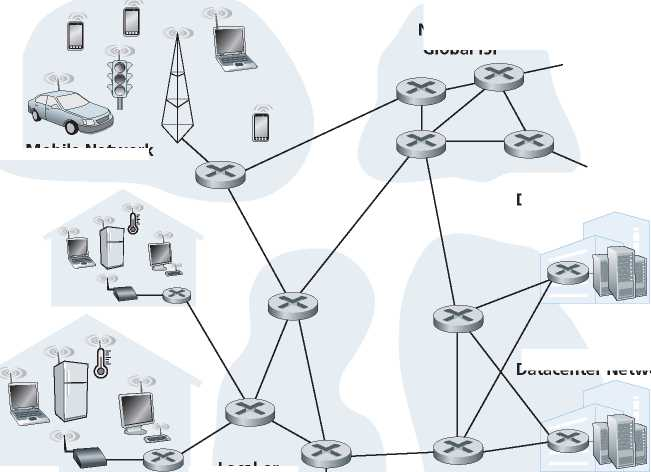Datacenter Network
Home Network
Content Provider Network
Local or Regional ISP
Mobile Network
Datacenter Network
Key:
Host Server Mobile Router Link-layer Base (= end system) Computer switch station
I
Smartphone or tablet
Cell phone tower
Figure 1.1 ♦ Some pieces of the Internet
End systems are connected together by a network of communication links and packet switches. We’ll see in Section 1.2 that there are many types of communication links, which are made up of different types of physical media, including coaxial cable, copper wire, optical fiber, and radio spectrum. Different links can transmit data at different rates, with the transmission rate of a link measured in bits/second. When one end system has data to send to another end system, the sending end system segments the data and adds header bytes to each segment. The resulting packages of information, known as packets in the jargon of computer networks, are then sent through the network to the destination end system, where they are reassembled into the original data.
A packet switch takes a packet arriving on one of its incoming communication links and forwards that packet on one of its outgoing communication links. Packet switches come in many shapes and flavors, but the two most prominent types in today’s Internet are routers and link-layer switches. Both types of switches forward packets toward their ultimate destinations. Link-layer switches are typically used in access networks, while routers are typically used in the network core. The sequence of communication links and packet switches traversed by a packet from the sending end system to the receiving end system is known as a route or path through the network. Cisco predicts annual global IP traffic will reach nearly five zettabytes (1021 bytes) by 2022 [Cisco VNI 2020].
Packet-switched networks (which transport packets) are in many ways similar to transportation networks of highways, roads, and intersections (which transport vehicles). Consider, for example, a factory that needs to move a large amount of cargo to some destination warehouse located thousands of kilometers away. At the factory, the cargo is segmented and loaded into a fleet of trucks. Each of the trucks then independently travels through the network of highways, roads, and intersections to the destination warehouse. At the destination warehouse, the cargo is unloaded and grouped with the rest of the cargo arriving from the same shipment. Thus, in many ways, packets are analogous to trucks, communication links are analogous to highways and roads, packet switches are analogous to intersections, and end systems are analogous to buildings. Just as a truck takes a path through the transportation network, a packet takes a path through a computer network.
End systems access the Internet through Internet Service Providers (ISPs), including residential ISPs such as local cable or telephone companies; corporate ISPs; university ISPs; ISPs that provide WiFi access in airports, hotels, coffee shops, and other public places; and cellular data ISPs, providing mobile access to our smartphones and other devices. Each ISP is in itself a network of packet switches and communication links. ISPs provide a variety of types of network access to the end systems, including residential broadband access such as cable modem or DSL, high-speed local area network access, and mobile wireless access. ISPs also provide Internet access to content providers, connecting servers directly to the Internet. The Internet is all about connecting end systems to each other, so the ISPs that provide access to end systems must also be interconnected. These lower-tier ISPs are thus interconnected through national and international upper-tier ISPs and these upper-tier ISPs are connected directly to each other. An upper-tier ISP consists of high-speed routers interconnected with high-speed fiber-optic links. Each ISP network, whether upper-tier or lower-tier, is managed independently, runs the IP protocol (see below), and conforms to certain naming and address conventions. We’ll examine ISPs and their interconnection more closely in Section 1.3.
End systems, packet switches, and other pieces of the Internet run protocols that control the sending and receiving of information within the Internet. The Transmission Control Protocol (TCP) and the Internet Protocol (IP) are two of the most important protocols in the Internet. The IP protocol specifies the format of the packets that are sent and received among routers and end systems. The Internet’s principal protocols are collectively known as TCP/IP. We’ll begin looking into protocols in this introductory chapter. But that’s just a start—much of this book is concerned with networking protocols!
Given the importance of protocols to the Internet, it’s important that everyone agree on what each and every protocol does, so that people can create systems and products that interoperate. This is where standards come into play. Internet standards are developed by the Internet Engineering Task Force (IETF) [IETF 2020]. The IETF standards documents are called requests for comments (RFCs). RFCs started out as general requests for comments (hence the name) to resolve network and protocol design problems that faced the precursor to the Internet [Allman 2011]. RFCs tend to be quite technical and detailed. They define protocols such as TCP, IP, HTTP (for the Web), and SMTP (for e-mail). There are currently nearly 9000 RFCs. Other bodies also specify standards for network components, most notably for network links. The IEEE 802 LAN Standards Committee [IEEE 802 2020], for example, specifies the Ethernet and wireless WiFi standards.
1.1.2 A Services Description
Our discussion above has identified many of the pieces that make up the Internet. But we can also describe the Internet from an entirely different angle—namely, as an infrastructure that provides services to applications. In addition to traditional applications such as e-mail and Web surfing, Internet applications include mobile smartphone and tablet applications, including Internet messaging, mapping with real-time road-traffic information, music streaming movie and television streaming, online social media, video conferencing, multi-person games, and location-based recommendation systems. The applications are said to be distributed applications, since they involve multiple end systems that exchange data with each other. Importantly, Internet applications run on end systems—they do not run in the packet switches in the network core. Although packet switches facilitate the exchange of data among end systems, they are not concerned with the application that is the source or sink of data.
Let’s explore a little more what we mean by an infrastructure that provides services to applications. To this end, suppose you have an exciting new idea for a distributed Internet application, one that may greatly benefit humanity or one that may simply make you rich and famous. How might you go about transforming this idea into an actual Internet application? Because applications run on end systems, you are going to need to write programs that run on the end systems. You might, for example, write your programs in Java, C, or Python. Now, because you are developing a distributed Internet application, the programs running on the different end systems will need to send data to each other. And here we get to a central issue—one that leads to the alternative way of describing the Internet as a platform for applications. How does one program running on one end system instruct the Internet to deliver data to another program running on another end system?
End systems attached to the Internet provide a socket interface that specifies how a program running on one end system asks the Internet infrastructure to deliver data to a specific destination program running on another end system. This Internet socket interface is a set of rules that the sending program must follow so that the Internet can deliver the data to the destination program. We’ll discuss the Internet socket interface in detail in Chapter 2. For now, let’s draw upon a simple analogy, one that we will frequently use in this book. Suppose Alice wants to send a letter to Bob using the postal service. Alice, of course, can’t just write the letter (the data) and drop the letter out her window. Instead, the postal service requires that Alice put the letter in an envelope; write Bob’s full name, address, and zip code in the center of the envelope; seal the envelope; put a stamp in the upperright-hand corner of the envelope; and finally, drop the envelope into an official postal service mailbox. Thus, the postal service has its own “postal service interface,” or set of rules, that Alice must follow to have the postal service deliver her letter to Bob. In a similar manner, the Internet has a socket interface that the program sending data must follow to have the Internet deliver the data to the program that will receive the data.
The postal service, of course, provides more than one service to its customers. It provides express delivery, reception confirmation, ordinary use, and many more services. In a similar manner, the Internet provides multiple services to its applications. When you develop an Internet application, you too must choose one of the Internet’s services for your application. We’ll describe the Internet’s services in Chapter 2.
We have just given two descriptions of the Internet; one in terms of its hardware and software components, the other in terms of an infrastructure for providing services to distributed applications. But perhaps you are still confused as to what the Internet is. What are packet switching and TCP/IP? What are routers? What kinds of communication links are present in the Internet? What is a distributed application? How can a thermostat or body scale be attached to the Internet? If you feel a bit overwhelmed by all of this now, don’t worry—the purpose of this book is to introduce you to both the nuts and bolts of the Internet and the principles that govern how and why it works. We’ll explain these important terms and questions in the following sections and chapters.
1.1.3 What Is a Protocol?
Now that we’ve got a bit of a feel for what the Internet is, let’s consider another important buzzword in computer networking: protocol. What is a protocol? What does a protocol do ?
A Human Analogy
It is probably easiest to understand the notion of a computer network protocol by first considering some human analogies, since we humans execute protocols all of the time. Consider what you do when you want to ask someone for the time of day. A typical exchange is shown in Figure 1.2. Human protocol (or good manners, at least) dictates that one first offer a greeting (the first “Hi” in Figure 1.2) to initiate communication with someone else. The typical response to a “Hi” is a returned “Hi” message. Implicitly, one then takes a cordial “Hi” response as an indication that one can proceed and ask for the time of day. A different response to the initial “Hi” (such as “Don’t bother me!” or “I don’t speak English,” or some unprintable reply) might indicate an unwillingness or inability to communicate. In this case, the human protocol would be not to ask for the time of day. Sometimes one gets no response at all to a question, in which case one typically gives up asking that person for the time. Note that in our human protocol, there are specific messages we send, and specific actions we take in response to the received reply messages or other events (such as no reply within some given amount of time). Clearly, transmitted and received messages, and actions taken when these messages are sent or received or other events occur, play a central role in a human protocol. If people run different protocols (for example, if one person has manners but the other does not, or if one understands the concept of time and the other does not) the protocols do not interoperate and no useful work can be accomplished. The same is true in network-ing—it takes two (or more) communicating entities running the same protocol in order to accomplish a task.
Let’s consider a second human analogy. Suppose you’re in a college class (a computer networking class, for example!). The teacher is droning on about protocols and you’re confused. The teacher stops to ask, “Are there any questions?” (a message that is transmitted to, and received by, all students who are not sleeping). You raise your hand (transmitting an implicit message to the teacher). Your teacher acknowledges you with a smile, saying “Yes . . .” (a transmitted message encouraging you to ask your question—teachers love to be asked questions), and you then ask your question (that is, transmit your message to your teacher). Your teacher hears your question (receives your question message) and answers (transmits a reply to you). Once again, we see that the transmission and receipt of messages, and a set of conventional actions taken when these messages are sent and received, are at the heart of this question-and-answer protocol.
Network Protocols
A network protocol is similar to a human protocol, except that the entities exchanging messages and taking actions are hardware or software components of some device (for example, computer, smartphone, tablet, router, or other network-capable device). All activity in the Internet that involves two or more communicating remote entities is governed by a protocol. For example, hardware-implemented protocols in two physically connected computers control the flow of bits on the “wire” between the two network interface cards; congestion-control protocols in end systems control the rate at which packets are transmitted between sender and receiver; protocols in routers determine a packet’s path from source to destination. Protocols are running everywhere in the Internet, and consequently much of this book is about computer network protocols.
As an example of a computer network protocol with which you are probably familiar, consider what happens when you make a request to a Web server, that is, when you type the URL of a Web page into your Web browser. The scenario is illustrated in the right half of Figure 1.2. First, your computer will send a connection request message to the Web server and wait for a reply. The Web server will eventually receive your connection request message and return a connection reply message. Knowing that it is now OK to request the Web document, your computer then sends the name of the Web page it wants to fetch from that Web server in a GET message. Finally, the Web server returns the Web page (file) to your computer.
Given the human and networking examples above, the exchange of messages and the actions taken when these messages are sent and received are the key defining elements of a protocol:
A protocol defines the format and the order of messages exchanged between two or more communicating entities, as well as the actions taken on the transmission and/or receipt of a message or other event.
The Internet, and computer networks in general, make extensive use of protocols. Different protocols are used to accomplish different communication tasks. As you read through this book, you will learn that some protocols are simple and straightforward, while others are complex and intellectually deep. Mastering the field of computer networking is equivalent to understanding the what, why, and how of networking protocols.
1.2 The Network Edge
In the previous section, we presented a high-level overview of the Internet and networking protocols. We are now going to delve a bit more deeply into the components of the Internet. We begin in this section at the edge of the network and look at the components with which we are most familiar—namely, the computers, smartphones and other devices that we use on a daily basis. In the next section, we’ll move from the network edge to the network core and examine switching and routing in computer networks.
Recall from the previous section that in computer networking jargon, the computers and other devices connected to the Internet are often referred to as end systems. They are referred to as end systems because they sit at the edge of the Internet, as shown in Figure 1.3. The Internet’s end systems include desktop computers
National or Global ISP
Home Network
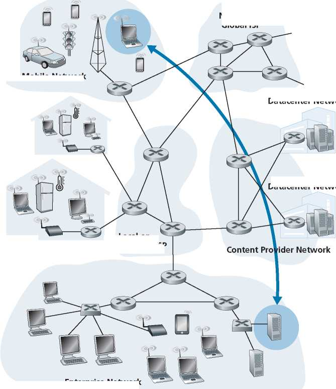Enterprise Network
Figure 1.3 ♦ End-system interaction
Mobile Network
Local or Regional ISP
Datacenter Network
Datacenter Network
(e.g., desktop PCs, Macs, and Linux boxes), servers (e.g., Web and e-mail servers), and mobile devices (e.g., laptops, smartphones, and tablets). Furthermore, an increasing number of non-traditional “things” are being attached to the Internet as end systems (see the Case History feature).
End systems are also referred to as hosts because they host (that is, run) application programs such as a Web browser program, a Web server program, an e-mail
I^r CASE history
DATA CENTERS AND CLOUD COMPUTING
Internet companies such as Google, Microsoft, Amazon, and Alibaba have built massive data centers, each housing tens to hundreds of thousands of hosts. These data centers are not only connected to the Internet, as shown in Figure 1.1, but also internally include complex computer networks that interconnect the datacenter’s hosts. The data centers are the engines behind the Internet applications that we use on a daily basis.
Broadly speaking, data centers serve three purposes, which we describe here in the context of Amazon for concreteness. First, they serve Amazon e-commerce pages to users, for example, pages describing products and purchase information. Second, they serve as massively parallel computing infrastructures for Amazon-specific data processing tasks. Third, they provide cloud computing to other companies. Indeed, today a major trend in computing is for companies to use a cloud provider such as Amazon to handle essentially all of their IT needs. For example, Airbnb and many other Internet-based companies do not own and manage their own data centers but instead run their entire Web-based services in the Amazon cloud, called Amazon Web Services (AWS).
The worker bees in a data center are the hosts. They serve content (e.g., Web pages and videos), store e-mails and documents, and collectively perform massively distributed computations. The hosts in data centers, called blades and resembling pizza boxes, are generally commodity hosts that include CPU, memory, and disk storage. The hosts are stacked in racks, with each rack typically having 20 to 40 blades. The racks are then interconnected using sophisticated and evolving data center network designs. Data center networks are discussed in greater detail in Chapter 6.
client program, or an e-mail server program. Throughout this book we will use the terms hosts and end systems interchangeably; that is, host = end system. Hosts are sometimes further divided into two categories: clients and servers. Informally, clients tend to be desktops, laptops, smartphones, and so on, whereas servers tend to be more powerful machines that store and distribute Web pages, stream video, relay e-mail, and so on. Today, most of the servers from which we receive search results, e-mail, Web pages, videos and mobile app content reside in large data centers. For example, as of 2020, Google has 19 data centers on four continents, collectively containing several million servers. Figure 1.3 includes two such data centers, and the Case History sidebar describes data centers in more detail.
1.2.1 Access Networks
Having considered the applications and end systems at the “edge of the network,” let’s next consider the access network—the network that physically connects an end system to the first router (also known as the “edge router”) on a path from the end system to any other distant end system. Figure 1.4 shows several types of access networks with thick, shaded lines and the settings (home, enterprise, and wide-area mobile wireless) in which they are used.
National or Global ISP
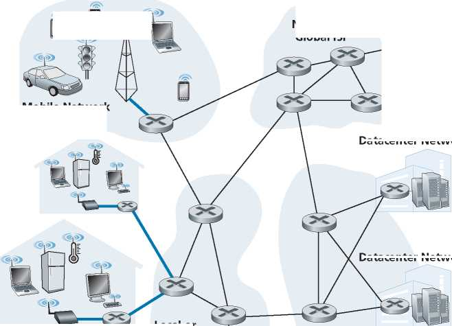Home Network
Content Provider Network
Local or Regional ISP
|
0 u |
r3> I |
Mobile Network
Datacenter Network
Datacenter Network
Home Access: DSL, Cable, FTTH, and 5G Fixed Wireless
As of 2020, more than 80% of the households in Europe and the USA have Internet access [Statista 2019]. Given this widespread use of home access networks let’s begin our overview of access networks by considering how homes connect to the Internet.
Today, the two most prevalent types of broadband residential access are digital subscriber line (DSL) and cable. A residence typically obtains DSL Internet access from the same local telephone company (telco) that provides its wired local phone access. Thus, when DSL is used, a customer’s telco is also its ISP. As shown in Figure 1.5, each customer’s DSL modem uses the existing telephone line exchange data with a digital subscriber line access multiplexer (DSLAM) located in the telco’s local central office (CO). The home’s DSL modem takes digital data and translates it to high-frequency tones for transmission over telephone wires to the CO; the analog signals from many such houses are translated back into digital format at the DSLAM.
The residential telephone line carries both data and traditional telephone signals simultaneously, which are encoded at different frequencies:
• A high-speed downstream channel, in the 50 kHz to 1 MHz band
• A medium-speed upstream channel, in the 4 kHz to 50 kHz band
• An ordinary two-way telephone channel, in the 0 to 4 kHz band
This approach makes the single DSL link appear as if there were three separate links, so that a telephone call and an Internet connection can share the DSL link at the same time. (We’ll describe this technique of frequency-division multiplexing in Section 1.3.1.) On the customer side, a splitter separates the data and telephone signals arriving to the home and forwards the data signal to the DSL modem. On the telco side, in the CO, the DSLAM separates the data and phone signals and sends the data into the Internet. Hundreds or even thousands of households connect to a single DSLAM.
Home phone
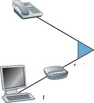Existing phone line: 0-4KHz phone; 4-50KHz upstream data; 50KHz-1MHz downstream data
Splitter
Home PC
DSL modem
Figure 1.5 ♦ DSL Internet access
Internet
DSLAM
Central office
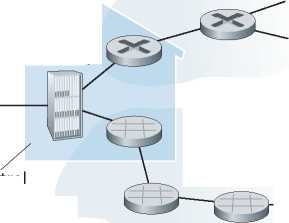Telephone network
The DSL standards define multiple transmission rates, including downstream transmission rates of 24 Mbs and 52 Mbs, and upstream rates of 3.5 Mbps and 16 Mbps; the newest standard provides for aggregate upstream plus downstream rates of 1 Gbps [ITU 2014]. Because the downstream and upstream rates are different, the access is said to be asymmetric. The actual downstream and upstream transmission rates achieved may be less than the rates noted above, as the DSL provider may purposefully limit a residential rate when tiered service (different rates, available at different prices) are offered. The maximum rate is also limited by the distance between the home and the CO, the gauge of the twisted-pair line and the degree of electrical interference. Engineers have expressly designed DSL for short distances between the home and the CO; generally, if the residence is not located within 5 to 10 miles of the CO, the residence must resort to an alternative form of Internet access.
While DSL makes use of the telco’s existing local telephone infrastructure, cable Internet access makes use of the cable television company’s existing cable television infrastructure. A residence obtains cable Internet access from the same company that provides its cable television. As illustrated in Figure 1.6, fiber optics
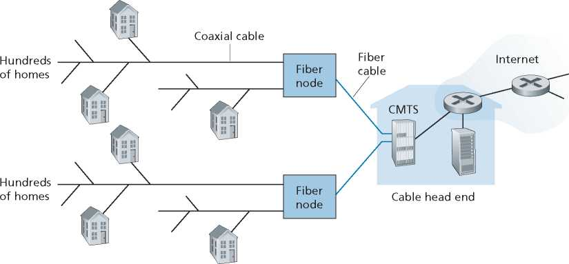Figure 1.6 ♦ A hybrid fiber-coaxial access network
connect the cable head end to neighborhood-level junctions, from which traditional coaxial cable is then used to reach individual houses and apartments. Each neighborhood junction typically supports 500 to 5,000 homes. Because both fiber and coaxial cable are employed in this system, it is often referred to as hybrid fiber coax (HFC).
Cable internet access requires special modems, called cable modems. As with a DSL modem, the cable modem is typically an external device and connects to the home PC through an Ethernet port. (We will discuss Ethernet in great detail in Chapter 6.) At the cable head end, the cable modem termination system (CMTS) serves a similar function as the DSL network’s DSLAM— turning the analog signal sent from the cable modems in many downstream homes back into digital format. Cable modems divide the HFC network into two channels, a downstream and an upstream channel. As with DSL, access is typically asymmetric, with the downstream channel typically allocated a higher transmission rate than the upstream channel. The DOCSIS 2.0 and 3.0 standards define downstream bitrates of 40 Mbps and 1.2 Gbps, and upstream rates of 30 Mbps and 100 Mbps, respectively. As in the case of DSL networks, the maximum achievable rate may not be realized due to lower contracted data rates or media impairments.
One important characteristic of cable Internet access is that it is a shared broadcast medium. In particular, every packet sent by the head end travels downstream on every link to every home and every packet sent by a home travels on the upstream channel to the head end. For this reason, if several users are simultaneously downloading a video file on the downstream channel, the actual rate at which each user receives its video file will be significantly lower than the aggregate cable downstream rate. On the other hand, if there are only a few active users and they are all Web surfing, then each of the users may actually receive Web pages at the full cable downstream rate, because the users will rarely request a Web page at exactly the same time. Because the upstream channel is also shared, a distributed multiple access protocol is needed to coordinate transmissions and avoid collisions. (We’ll discuss this collision issue in some detail in Chapter 6.)
Although DSL and cable networks currently represent the majority of residential broadband access in the United States, an up-and-coming technology that provides even higher speeds is fiber to the home (FTTH) [Fiber Broadband 2020]. As the name suggests, the FTTH concept is simple—provide an optical fiber path from the CO directly to the home. FTTH can potentially provide Internet access rates in the gigabits per second range.
There are several competing technologies for optical distribution from the CO to the homes. The simplest optical distribution network is called direct fiber, with one fiber leaving the CO for each home. More commonly, each fiber leaving the central office is actually shared by many homes; it is not until the fiber gets relatively close to the homes that it is split into individual customer-specific fibers. There are two competing optical-distribution network architectures that perform
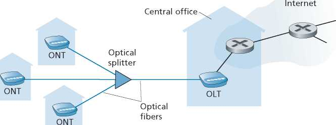Figure 1.7 ♦ FTTH Internet access
this splitting: active optical networks (AONs) and passive optical networks (PONs). AON is essentially switched Ethernet, which is discussed in Chapter 6.
Here, we briefly discuss PON, which is used in Verizon’s FiOS service. Figure 1.7 shows FTTH using the PON distribution architecture. Each home has an optical network terminator (ONT), which is connected by dedicated optical fiber to a neighborhood splitter. The splitter combines a number of homes (typically less than 100) onto a single, shared optical fiber, which connects to an optical line terminator (OLT) in the telco’s CO. The OLT, providing conversion between optical and electrical signals, connects to the Internet via a telco router. At home, users connect a home router (typically a wireless router) to the ONT and access the Internet via this home router. In the PON architecture, all packets sent from OLT to the splitter are replicated at the splitter (similar to a cable head end).
In addition to DSL, Cable, and FTTH, 5G fixed wireless is beginning to be deployed. 5G fixed wireless not only promises high-speed residential access, but will do so without installing costly and failure-prone cabling from the telco’s CO to the home. With 5G fixed wireless, using beam-forming technology, data is sent wirelessly from a provider’s base station to the a modem in the home. A WiFi wireless router is connected to the modem (possibly bundled together), similar to how a WiFi wireless router is connected to a cable or DSL modem. 5G cellular networks are covered in Chapter 7.
Access in the Enterprise (and the Home): Ethernet and WiFi
On corporate and university campuses, and increasingly in home settings, a local area network (LAN) is used to connect an end system to the edge router. Although there are many types of LAN technologies, Ethernet is by far the most prevalent access technology in corporate, university, and home networks. As shown in
1 Gbps
1 Gbps
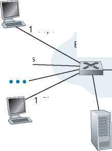1 Gbps
Server
Figure 1.8 ♦ Ethernet Internet access
Ethernet switch
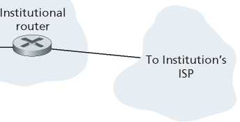Figure 1.8, Ethernet users use twisted-pair copper wire to connect to an Ethernet switch, a technology discussed in detail in Chapter 6. The Ethernet switch, or a network of such interconnected switches, is then in turn connected into the larger Internet. With Ethernet access, users typically have 100 Mbps to tens of Gbps access to the Ethernet switch, whereas servers may have 1 Gbps 10 Gbps access.
Increasingly, however, people are accessing the Internet wirelessly from laptops, smartphones, tablets, and other “things”. In a wireless LAN setting, wireless users transmit/receive packets to/from an access point that is connected into the enterprise’s network (most likely using wired Ethernet), which in turn is connected to the wired Internet. A wireless LAN user must typically be within a few tens of meters of the access point. Wireless LAN access based on IEEE 802.11 technology, more colloquially known as WiFi, is now just about everywhere—universities, business offices, cafes, airports, homes, and even in airplanes. As discussed in detail in Chapter 7, 802.11 today provides a shared transmission rate of up to more than 100 Mbps.
Even though Ethernet and WiFi access networks were initially deployed in enterprise (corporate, university) settings, they are also common components of home networks. Many homes combine broadband residential access (that is, cable modems or DSL) with these inexpensive wireless LAN technologies to create powerful home networks Figure 1.9 shows a typical home network. This home network consists of a roaming laptop, multiple Internet-connected home appliances, as well as a wired PC; a base station (the wireless access point), which communicates with the wireless PC and other wireless devices in the home; and a home router that connects the wireless access point, and any other wired home devices, to the Internet. This network allows household members to have broadband access to the Internet with one member roaming from the kitchen to the backyard to the bedrooms.
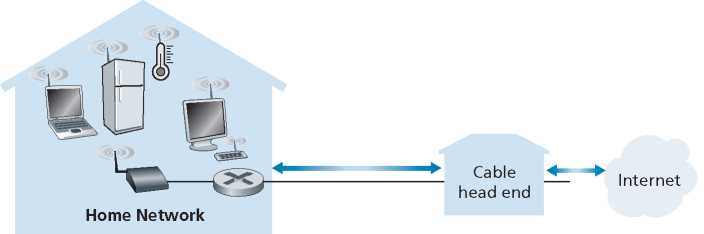Figure 1.9 ♦ A typical home network
Wide-Area Wireless Access: 3G and LTE 4G and 5G
Mobile devices such as iPhones and Android devices are being used to message, share photos in social networks, make mobile payments, watch movies, stream music, and much more while on the run. These devices employ the same wireless infrastructure used for cellular telephony to send/receive packets through a base station that is operated by the cellular network provider. Unlike WiFi, a user need only be within a few tens of kilometers (as opposed to a few tens of meters) of the base station.
Telecommunications companies have made enormous investments in so-called fourth-generation (4G) wireless, which provides real-world download speeds of up to 60 Mbps. But even higher-speed wide-area access technologies—a fifth-generation (5G) of wide-area wireless networks—are already being deployed. We’ll cover the basic principles of wireless networks and mobility, as well as WiFi, 4G and 5G technologies (and more!) in Chapter 7.
1.2.2 Physical Media
In the previous subsection, we gave an overview of some of the most important network access technologies in the Internet. As we described these technologies, we also indicated the physical media used. For example, we said that HFC uses a combination of fiber cable and coaxial cable. We said that DSL and Ethernet use copper wire. And we said that mobile access networks use the radio spectrum. In this subsection, we provide a brief overview of these and other transmission media that are commonly used in the Internet.
In order to define what is meant by a physical medium, let us reflect on the brief life of a bit. Consider a bit traveling from one end system, through a series of links and routers, to another end system. This poor bit gets kicked around and transmitted many, many times! The source end system first transmits the bit, and shortly thereafter the first router in the series receives the bit; the first router then transmits the bit, and shortly thereafter the second router receives the bit; and so on. Thus our bit, when traveling from source to destination, passes through a series of transmitter-receiver pairs. For each transmitter-receiver pair, the bit is sent by propagating electromagnetic waves or optical pulses across a physical medium. The physical medium can take many shapes and forms and does not have to be of the same type for each transmitter-receiver pair along the path. Examples of physical media include twisted-pair copper wire, coaxial cable, multimode fiber-optic cable, terrestrial radio spectrum, and satellite radio spectrum. Physical media fall into two categories: guided media and unguided media. With guided media, the waves are guided along a solid medium, such as a fiber-optic cable, a twisted-pair copper wire, or a coaxial cable. With unguided media, the waves propagate in the atmosphere and in outer space, such as in a wireless LAN or a digital satellite channel.
But before we get into the characteristics of the various media types, let us say a few words about their costs. The actual cost of the physical link (copper wire, fiberoptic cable, and so on) is often relatively minor compared with other networking costs. In particular, the labor cost associated with the installation of the physical link can be orders of magnitude higher than the cost of the material. For this reason, many builders install twisted pair, optical fiber, and coaxial cable in every room in a building. Even if only one medium is initially used, there is a good chance that another medium could be used in the near future, and so money is saved by not having to lay additional wires in the future.
Twisted-Pair Copper Wire
The least expensive and most commonly used guided transmission medium is twisted-pair copper wire. For over a hundred years it has been used by telephone networks. In fact, more than 99 percent of the wired connections from the telephone handset to the local telephone switch use twisted-pair copper wire. Most of us have seen twisted pair in our homes (or those of our parents or grandparents!) and work environments. Twisted pair consists of two insulated copper wires, each about 1 mm thick, arranged in a regular spiral pattern. The wires are twisted together to reduce the electrical interference from similar pairs close by. Typically, a number of pairs are bundled together in a cable by wrapping the pairs in a protective shield. A wire pair constitutes a single communication link. Unshielded twisted pair (UTP) is commonly used for computer networks within a building, that is, for LANs. Data rates for LANs using twisted pair today range from 10 Mbps to 10 Gbps. The data rates that can be achieved depend on the thickness of the wire and the distance between transmitter and receiver.
When fiber-optic technology emerged in the 1980s, many people disparaged twisted pair because of its relatively low bit rates. Some people even felt that fiber-optic technology would completely replace twisted pair. But twisted pair did not give up so easily. Modern twisted-pair technology, such as category 6a cable, can achieve data rates of 10 Gbps for distances up to a hundred meters. In the end, twisted pair has emerged as the dominant solution for high-speed LAN networking.
As discussed earlier, twisted pair is also commonly used for residential Internet access. We saw that dial-up modem technology enables access at rates of up to 56 kbps over twisted pair. We also saw that DSL (digital subscriber line) technology has enabled residential users to access the Internet at tens of Mbps over twisted pair (when users live close to the ISP’s central office).
Coaxial Cable
Like twisted pair, coaxial cable consists of two copper conductors, but the two conductors are concentric rather than parallel. With this construction and special insulation and shielding, coaxial cable can achieve high data transmission rates. Coaxial cable is quite common in cable television systems. As we saw earlier, cable television systems have recently been coupled with cable modems to provide residential users with Internet access at rates of hundreds of Mbps. In cable television and cable Internet access, the transmitter shifts the digital signal to a specific frequency band, and the resulting analog signal is sent from the transmitter to one or more receivers. Coaxial cable can be used as a guided shared medium. Specifically, a number of end systems can be connected directly to the cable, with each of the end systems receiving whatever is sent by the other end systems.
Fiber Optics
An optical fiber is a thin, flexible medium that conducts pulses of light, with each pulse representing a bit. A single optical fiber can support tremendous bit rates, up to tens or even hundreds of gigabits per second. They are immune to electromagnetic interference, have very low signal attenuation up to 100 kilometers, and are very hard to tap. These characteristics have made fiber optics the preferred long-haul guided transmission media, particularly for overseas links. Many of the long-distance telephone networks in the United States and elsewhere now use fiber optics exclusively. Fiber optics is also prevalent in the backbone of the Internet. However, the high cost of optical devices—such as transmitters, receivers, and switches—has hindered their deployment for short-haul transport, such as in a LAN or into the home in a residential access network. The Optical Carrier (OC) standard link speeds range from 51.8 Mbps to 39.8 Gbps; these specifications are often referred to as OC-n, where the link speed equals n X 51.8 Mbps. Standards in use today include OC-1, OC-3, OC-12, OC-24, OC-48, OC-96, OC-192, OC-768.
Terrestrial Radio Channels
Radio channels carry signals in the electromagnetic spectrum. They are an attractive medium because they require no physical wire to be installed, can penetrate walls, provide connectivity to a mobile user, and can potentially carry a signal for long distances. The characteristics of a radio channel depend significantly on the propagation environment and the distance over which a signal is to be carried. Environmental considerations determine path loss and shadow fading (which decrease the signal strength as the signal travels over a distance and around/through obstructing objects), multipath fading (due to signal reflection off of interfering objects), and interference (due to other transmissions and electromagnetic signals).
Terrestrial radio channels can be broadly classified into three groups: those that operate over very short distance (e.g., with one or two meters); those that operate in local areas, typically spanning from ten to a few hundred meters; and those that operate in the wide area, spanning tens of kilometers. Personal devices such as wireless headsets, keyboards, and medical devices operate over short distances; the wireless LAN technologies described in Section 1.2.1 use local-area radio channels; the cellular access technologies use wide-area radio channels. We’ll discuss radio channels in detail in Chapter 7.
Satellite Radio Channels
A communication satellite links two or more Earth-based microwave transmitter/ receivers, known as ground stations. The satellite receives transmissions on one frequency band, regenerates the signal using a repeater (discussed below), and transmits the signal on another frequency. Two types of satellites are used in communications: geostationary satellites and low-earth orbiting (LEO) satellites.
Geostationary satellites permanently remain above the same spot on Earth. This stationary presence is achieved by placing the satellite in orbit at 36,000 kilometers above Earth’s surface. This huge distance from ground station through satellite back to ground station introduces a substantial signal propagation delay of 280 milliseconds. Nevertheless, satellite links, which can operate at speeds of hundreds of Mbps, are often used in areas without access to DSL or cable-based Internet access.
LEO satellites are placed much closer to Earth and do not remain permanently above one spot on Earth. They rotate around Earth (just as the Moon does) and may communicate with each other, as well as with ground stations. To provide continuous coverage to an area, many satellites need to be placed in orbit. There are currently many low-altitude communication systems in development. LEO satellite technology may be used for Internet access sometime in the future.
1.3 The Network Core
Having examined the Internet’s edge, let us now delve more deeply inside the network core—the mesh of packet switches and links that interconnects the Internet’s end systems. Figure 1.10 highlights the network core with thick, shaded lines.
National or Global ISP
Network
Datacenter Network
Datacenter Network
Local or
Home Network Regional ISP
Content Provider Network

Figure 1.10 ♦ The network core
1.3.1 Packet Switching
In a network application, end systems exchange messages with each other. Messages can contain anything the application designer wants. Messages may perform a control function (for example, the “Hi” messages in our handshaking example in Figure 1.2) or can contain data, such as an e-mail message, a JPEG image, or an MP3 audio file. To send a message from a source end system to a destination end system, the source breaks long messages into smaller chunks of data known as packets. Between source and destination, each packet travels through communication links and packet switches (for which there are two predominant types, routers and link-layer switches). Packets are transmitted over each communication link at a rate equal to the full transmission rate of the link. So, if a source end system or a packet switch is sending a packet of L bits over a link with transmission rate R bits/sec, then the time to transmit the packet is L/R seconds.
Store-and-Forward Transmission
Most packet switches use store-and-forward transmission at the inputs to the links. Store-and-forward transmission means that the packet switch must receive the entire packet before it can begin to transmit the first bit of the packet onto the outbound link. To explore store-and-forward transmission in more detail, consider a simple network consisting of two end systems connected by a single router, as shown in Figure 1.11. A router will typically have many incident links, since its job is to switch an incoming packet onto an outgoing link; in this simple example, the router has the rather simple task of transferring a packet from one (input) link to the only other attached link. In this example, the source has three packets, each consisting of L bits, to send to the destination. At the snapshot of time shown in Figure 1.11, the source has transmitted some of packet 1, and the front of packet 1 has already arrived at the router. Because the router employs store-and-forwarding, at this instant of time, the router cannot transmit the bits it has received; instead it must first buffer (i.e., “store”) the packet’s bits. Only after the router has received all of the packet’s bits can it begin to transmit (i.e., “forward”) the packet onto the outbound link. To gain some insight into store-and-forward transmission, let’s now calculate the amount of time that elapses from when the source begins to send the packet until the destination has received the entire packet. (Here we will ignore propagation delay—the time it takes for the bits to travel across the wire at near the speed of light—which will be discussed in Section 1.4.) The source begins to transmit at time 0; at time L/R seconds, the source has transmitted the entire packet, and the entire packet has been received and stored at the router (since there is no propagation delay). At time L/R seconds, since the router has just received the entire packet, it can begin to transmit the packet onto the outbound link towards the destination; at time 2L/R, the router has transmitted the entire packet, and the entire packet has been received by the destination. Thus, the total delay is 2L/R. If the
Source
32 1
R bps

Destination
Front of packet 1 stored in router, awaiting remaining bits before forwarding
Figure 1.11 ♦ Store-and-forward packet switching
switch instead forwarded bits as soon as they arrive (without first receiving the entire packet), then the total delay would be L/R since bits are not held up at the router. But, as we will discuss in Section 1.4, routers need to receive, store, and process the entire packet before forwarding.
Now let’s calculate the amount of time that elapses from when the source begins to send the first packet until the destination has received all three packets. As before, at time L/R, the router begins to forward the first packet. But also at time L/R the source will begin to send the second packet, since it has just finished sending the entire first packet. Thus, at time 2L/R, the destination has received the first packet and the router has received the second packet. Similarly, at time 3L/R, the destination has received the first two packets and the router has received the third packet. Finally, at time 4L/R the destination has received all three packets!
Let’s now consider the general case of sending one packet from source to destination over a path consisting of N links each of rate R (thus, there are N-1 routers between source and destination). Applying the same logic as above, we see that the end-to-end delay is:
_ L dend-to-end N r
(1.1)
You may now want to try to determine what the delay would be for P packets sent over a series of N links.
Queuing Delays and Packet Loss
Each packet switch has multiple links attached to it. For each attached link, the packet switch has an output buffer (also called an output queue), which stores packets that the router is about to send into that link. The output buffers play a key role in packet switching. If an arriving packet needs to be transmitted onto a link but finds the link busy with the transmission of another packet, the arriving packet must wait in the output buffer. Thus, in addition to the store-and-forward delays, packets suffer output buffer queuing delays. These delays are variable and depend on the
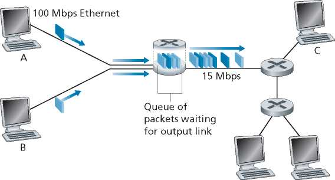Packets D E
Figure 1.12 ♦ Packet switching
level of congestion in the network. Since the amount of buffer space is finite, an arriving packet may find that the buffer is completely full with other packets waiting for transmission. In this case, packet loss will occur—either the arriving packet or one of the already-queued packets will be dropped.
Figure 1.12 illustrates a simple packet-switched network. As in Figure 1.11, packets are represented by three-dimensional slabs. The width of a slab represents the number of bits in the packet. In this figure, all packets have the same width and hence the same length. Suppose Hosts A and B are sending packets to Host E. Hosts A and B first send their packets along 100 Mbps Ethernet links to the first router. The router then directs these packets to the 15 Mbps link. If, during a short interval of time, the arrival rate of packets to the router (when converted to bits per second) exceeds 15 Mbps, congestion will occur at the router as packets queue in the link’s output buffer before being transmitted onto the link. For example, if Host A and B each send a burst of five packets back-to-back at the same time, then most of these packets will spend some time waiting in the queue. The situation is, in fact, entirely analogous to many common-day situations—for example, when we wait in line for a bank teller or wait in front of a tollbooth. We’ll examine this queuing delay in more detail in Section 1.4.
Forwarding Tables and Routing Protocols
Earlier, we said that a router takes a packet arriving on one of its attached communication links and forwards that packet onto another one of its attached communication links. But how does the router determine which link it should forward the packet onto? Packet forwarding is actually done in different ways in different types of computer networks. Here, we briefly describe how it is done in the Internet.
In the Internet, every end system has an address called an IP address. When a source end system wants to send a packet to a destination end system, the source includes the destination’s IP address in the packet’s header. As with postal addresses, this address has a hierarchical structure. When a packet arrives at a router in the network, the router examines a portion of the packet’s destination address and forwards the packet to an adjacent router. More specifically, each router has a forwarding table that maps destination addresses (or portions of the destination addresses) to that router’s outbound links. When a packet arrives at a router, the router examines the address and searches its forwarding table, using this destination address, to find the appropriate outbound link. The router then directs the packet to this outbound link.
The end-to-end routing process is analogous to a car driver who does not use maps but instead prefers to ask for directions. For example, suppose Joe is driving from Philadelphia to 156 Lakeside Drive in Orlando, Florida. Joe first drives to his neighborhood gas station and asks how to get to 156 Lakeside Drive in Orlando, Florida. The gas station attendant extracts the Florida portion of the address and tells Joe that he needs to get onto the interstate highway I-95 South, which has an entrance just next to the gas station. He also tells Joe that once he enters Florida, he should ask someone else there. Joe then takes I-95 South until he gets to Jacksonville, Florida, at which point he asks another gas station attendant for directions. The attendant extracts the Orlando portion of the address and tells Joe that he should continue on I-95 to Daytona Beach and then ask someone else. In Daytona Beach, another gas station attendant also extracts the Orlando portion of the address and tells Joe that he should take I-4 directly to Orlando. Joe takes I-4 and gets off at the Orlando exit. Joe goes to another gas station attendant, and this time the attendant extracts the Lakeside Drive portion of the address and tells Joe the road he must follow to get to Lakeside Drive. Once Joe reaches Lakeside Drive, he asks a kid on a bicycle how to get to his destination. The kid extracts the 156 portion of the address and points to the house. Joe finally reaches his ultimate destination. In the above analogy, the gas station attendants and kids on bicycles are analogous to routers.
We just learned that a router uses a packet’s destination address to index a forwarding table and determine the appropriate outbound link. But this statement begs yet another question: How do forwarding tables get set? Are they configured by hand in each and every router, or does the Internet use a more automated procedure? This issue will be studied in depth in Chapter 5. But to whet your appetite here, we’ll note now that the Internet has a number of special routing protocols that are used to automatically set the forwarding tables. A routing protocol may, for example, determine the shortest path from each router to each destination and use the shortest path results to configure the forwarding tables in the routers.
1.3.2 Circuit Switching
There are two fundamental approaches to moving data through a network of links and switches: circuit switching and packet switching. Having covered packet-switched networks in the previous subsection, we now turn our attention to circuit-switched networks.
In circuit-switched networks, the resources needed along a path (buffers, link transmission rate) to provide for communication between the end systems are reserved for the duration of the communication session between the end systems. In packet-switched networks, these resources are not reserved; a session’s messages use the resources on demand and, as a consequence, may have to wait (that is, queue) for access to a communication link. As a simple analogy, consider two restaurants, one that requires reservations and another that neither requires reservations nor accepts them. For the restaurant that requires reservations, we have to go through the hassle of calling before we leave home. But when we arrive at the restaurant we can, in principle, immediately be seated and order our meal. For the restaurant that does not require reservations, we don’t need to bother to reserve a table. But when we arrive at the restaurant, we may have to wait for a table before we can be seated.
Traditional telephone networks are examples of circuit-switched networks. Consider what happens when one person wants to send information (voice or facsimile) to another over a telephone network. Before the sender can send the information, the network must establish a connection between the sender and the receiver. This is a bona fide connection for which the switches on the path between the sender and receiver maintain connection state for that connection. In the jargon of telephony, this connection is called a circuit. When the network establishes the circuit, it also reserves a constant transmission rate in the network’s links (representing a fraction of each link’s transmission capacity) for the duration of the connection. Since a given transmission rate has been reserved for this sender-to-receiver connection, the sender can transfer the data to the receiver at the guaranteed constant rate.
Figure 1.13 illustrates a circuit-switched network. In this network, the four circuit switches are interconnected by four links. Each of these links has four circuits, so that each link can support four simultaneous connections. The hosts (for example, PCs and workstations) are each directly connected to one of the switches. When two hosts want to communicate, the network establishes a dedicated end-to-end connection between the two hosts. Thus, in order for Host A to communicate with Host B, the network must first reserve one circuit on each of two links. In this example, the dedicated end-to-end connection uses the second circuit in the first link and the fourth circuit in the second link. Because each link has four circuits, for each link used by the end-to-end connection, the connection gets one fourth of the link’s total transmission capacity for the duration of the connection. Thus, for example, if each link between adjacent switches has a transmission rate of 1 Mbps, then each end-to-end circuit-switch connection gets 250 kbps of dedicated transmission rate.
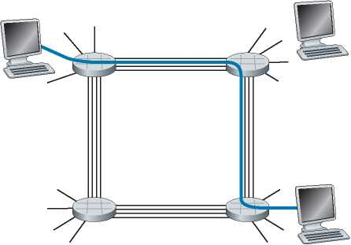Figure 1.13 ♦ A simple circuit-switched network consisting of four switches and four links
In contrast, consider what happens when one host wants to send a packet to another host over a packet-switched network, such as the Internet. As with circuit switching, the packet is transmitted over a series of communication links. But different from circuit switching, the packet is sent into the network without reserving any link resources whatsoever. If one of the links is congested because other packets need to be transmitted over the link at the same time, then the packet will have to wait in a buffer at the sending side of the transmission link and suffer a delay. The Internet makes its best effort to deliver packets in a timely manner, but it does not make any guarantees.
Multiplexing in Circuit-Switched Networks
A circuit in a link is implemented with either frequency-division multiplexing (FDM) or time-division multiplexing (TDM). With FDM, the frequency spectrum of a link is divided up among the connections established across the link. Specifically, the link dedicates a frequency band to each connection for the duration of the connection. In telephone networks, this frequency band typically has a width of 4 kHz (that is, 4,000 hertz or 4,000 cycles per second). The width of the band is called, not surprisingly, the bandwidth. FM radio stations also use FDM to share the frequency spectrum between 88 MHz and 108 MHz, with each station being allocated a specific frequency band.
For a TDM link, time is divided into frames of fixed duration, and each frame is divided into a fixed number of time slots. When the network establishes a connection across a link, the network dedicates one time slot in every frame to this connection. These slots are dedicated for the sole use of that connection, with one time slot available for use (in every frame) to transmit the connection’s data.
4KHz
4KHz
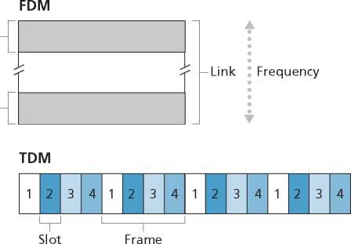Key:
Time
2 All slots labeled “2” are dedicated ■ to a specific sender-receiver pair.
Figure 1.14 ♦ With FDM, each circuit continuously gets a fraction of the bandwidth. With TDM, each circuit gets all of the bandwidth periodically during brief intervals of time (that is, during slots)
Figure 1.14 illustrates FDM and TDM for a specific network link supporting up to four circuits. For FDM, the frequency domain is segmented into four bands, each of bandwidth 4 kHz. For TDM, the time domain is segmented into frames, with four time slots in each frame; each circuit is assigned the same dedicated slot in the revolving TDM frames. For TDM, the transmission rate of a circuit is equal to the frame rate multiplied by the number of bits in a slot. For example, if the link transmits 8,000 frames per second and each slot consists of 8 bits, then the transmission rate of each circuit is 64 kbps.
Proponents of packet switching have always argued that circuit switching is wasteful because the dedicated circuits are idle during silent periods. For example, when one person in a telephone call stops talking, the idle network resources (frequency bands or time slots in the links along the connection’s route) cannot be used by other ongoing connections. As another example of how these resources can be underutilized, consider a radiologist who uses a circuit-switched network to remotely access a series of x-rays. The radiologist sets up a connection, requests an image, contemplates the image, and then requests a new image. Network resources are allocated to the connection but are not used (i.e., are wasted) during the radiologist’s contemplation periods. Proponents of packet switching also enjoy pointing out that establishing end-to-end circuits and reserving end-to-end transmission capacity is complicated and requires complex signaling software to coordinate the operation of the switches along the end-to-end path.
Before we finish our discussion of circuit switching, let’s work through a numerical example that should shed further insight on the topic. Let us consider how long it takes to send a file of 640,000 bits from Host A to Host B over a circuit-switched network. Suppose that all links in the network use TDM with 24 slots and have a bit rate of 1.536 Mbps. Also suppose that it takes 500 msec to establish an end-to-end circuit before Host A can begin to transmit the file. How long does it take to send the file? Each circuit has a transmission rate of (1.536 Mbps)/24 = 64 kbps, so it takes (640,000 bits)/(64 kbps) = 10 seconds to transmit the file. To this 10 seconds we add the circuit establishment time, giving 10.5 seconds to send the file. Note that the transmission time is independent of the number of links: The transmission time would be 10 seconds if the end-to-end circuit passed through one link or a hundred links. (The actual end-to-end delay also includes a propagation delay; see Section 1.4.)
Packet Switching Versus Circuit Switching
Having described circuit switching and packet switching, let us compare the two. Critics of packet switching have often argued that packet switching is not suitable for real-time services (for example, telephone calls and video conference calls) because of its variable and unpredictable end-to-end delays (due primarily to variable and unpredictable queuing delays). Proponents of packet switching argue that (1) it offers better sharing of transmission capacity than circuit switching and (2) it is simpler, more efficient, and less costly to implement than circuit switching. An interesting discussion of packet switching versus circuit switching is [Molinero-Fernandez 2002]. Generally speaking, people who do not like to hassle with restaurant reservations prefer packet switching to circuit switching.
Why is packet switching more efficient? Let’s look at a simple example. Suppose users share a 1 Mbps link. Also suppose that each user alternates between periods of activity, when a user generates data at a constant rate of 100 kbps, and periods of inactivity, when a user generates no data. Suppose further that a user is active only 10 percent of the time (and is idly drinking coffee during the remaining 90 percent of the time). With circuit switching, 100 kbps must be reserved for each user at all times. For example, with circuit-switched TDM, if a one-second frame is divided into 10 time slots of 100 ms each, then each user would be allocated one time slot per frame.
Thus, the circuit-switched link can support only 10 (= 1 Mbps/100 kbps) simultaneous users. With packet switching, the probability that a specific user is active is 0.1 (that is, 10 percent). If there are 35 users, the probability that there are 11 or more simultaneously active users is approximately 0.0004. (Homework Problem P8 outlines how this probability is obtained.) When there are 10 or fewer simultaneously active users (which happens with probability 0.9996), the aggregate arrival rate of data is less than or equal to 1 Mbps, the output rate of the link. Thus, when there are 10 or fewer active users, users’ packets flow through the link essentially without delay, as is the case with circuit switching. When there are more than 10 simultaneously active users, then the aggregate arrival rate of packets exceeds the output capacity of the link, and the output queue will begin to grow. (It continues to grow until the aggregate input rate falls back below 1 Mbps, at which point the queue will begin to diminish in length.) Because the probability of having more than 10 simultaneously active users is minuscule in this example, packet switching provides essentially the same performance as circuit switching, but does so while allowing for more than three times the number of users.
Let’s now consider a second simple example. Suppose there are 10 users and that one user suddenly generates one thousand 1,000-bit packets, while other users remain quiescent and do not generate packets. Under TDM circuit switching with 10 slots per frame and each slot consisting of 1,000 bits, the active user can only use its one time slot per frame to transmit data, while the remaining nine time slots in each frame remain idle. It will be 10 seconds before all of the active user’s one million bits of data has been transmitted. In the case of packet switching, the active user can continuously send its packets at the full link rate of 1 Mbps, since there are no other users generating packets that need to be multiplexed with the active user’s packets. In this case, all of the active user’s data will be transmitted within 1 second.
The above examples illustrate two ways in which the performance of packet switching can be superior to that of circuit switching. They also highlight the crucial difference between the two forms of sharing a link’s transmission rate among multiple data streams. Circuit switching pre-allocates use of the transmission link regardless of demand, with allocated but unneeded link time going unused. Packet switching on the other hand allocates link use on demand. Link transmission capacity will be shared on a packet-by-packet basis only among those users who have packets that need to be transmitted over the link.
Although packet switching and circuit switching are both prevalent in today’s telecommunication networks, the trend has certainly been in the direction of packet switching. Even many of today’s circuit-switched telephone networks are slowly migrating toward packet switching. In particular, telephone networks often use packet switching for the expensive overseas portion of a telephone call.
1.3.3 A Network of Networks
We saw earlier that end systems (PCs, smartphones, Web servers, mail servers, and so on) connect into the Internet via an access ISP. The access ISP can provide either wired or wireless connectivity, using an array of access technologies including DSL, cable, FTTH, Wi-Fi, and cellular. Note that the access ISP does not have to be a telco or a cable company; instead it can be, for example, a university (providing Internet access to students, staff, and faculty), or a company (providing access for its employees). But connecting end users and content providers into an access ISP is only a small piece of solving the puzzle of connecting the billions of end systems that make up the Internet. To complete this puzzle, the access ISPs themselves must be interconnected. This is done by creating a network of networks—understanding this phrase is the key to understanding the Internet.
Over the years, the network of networks that forms the Internet has evolved into a very complex structure. Much of this evolution is driven by economics and national policy, rather than by performance considerations. In order to understand today’s Internet network structure, let’s incrementally build a series of network structures, with each new structure being a better approximation of the complex Internet that we have today. Recall that the overarching goal is to interconnect the access ISPs so that all end systems can send packets to each other. One naive approach would be to have each access ISP directly connect with every other access ISP. Such a mesh design is, of course, much too costly for the access ISPs, as it would require each access ISP to have a separate communication link to each of the hundreds of thousands of other access ISPs all over the world.
Our first network structure, Network Structure 1, interconnects all of the access ISPs with a single global transit ISP. Our (imaginary) global transit ISP is a network of routers and communication links that not only spans the globe, but also has at least one router near each of the hundreds of thousands of access ISPs. Of course, it would be very costly for the global ISP to build such an extensive network. To be profitable, it would naturally charge each of the access ISPs for connectivity, with the pricing reflecting (but not necessarily directly proportional to) the amount of traffic an access ISP exchanges with the global ISP. Since the access ISP pays the global transit ISP, the access ISP is said to be a customer and the global transit ISP is said to be a provider.
Now if some company builds and operates a global transit ISP that is profitable, then it is natural for other companies to build their own global transit ISPs and compete with the original global transit ISP. This leads to Network Structure 2, which consists of the hundreds of thousands of access ISPs and multiple global transit ISPs. The access ISPs certainly prefer Network Structure 2 over Network Structure 1 since they can now choose among the competing global transit providers as a function of their pricing and services. Note, however, that the global transit ISPs themselves must interconnect: Otherwise access ISPs connected to one of the global transit providers would not be able to communicate with access ISPs connected to the other global transit providers.
Network Structure 2, just described, is a two-tier hierarchy with global transit providers residing at the top tier and access ISPs at the bottom tier. This assumes that global transit ISPs are not only capable of getting close to each and every access ISP, but also find it economically desirable to do so. In reality, although some ISPs do have impressive global coverage and do directly connect with many access ISPs, no ISP has presence in each and every city in the world. Instead, in any given region, there may be a regional ISP to which the access ISPs in the region connect. Each regional ISP then connects to tier-1 ISPs. Tier-1 ISPs are similar to our (imaginary) global transit ISP; but tier-1 ISPs, which actually do exist, do not have a presence in every city in the world. There are approximately a dozen tier-1 ISPs, including Level 3 Communications, AT&T, Sprint, and NTT. Interestingly, no group officially
sanctions tier-1 status; as the saying goes—if you have to ask if you’re a member of a group, you’re probably not.
Returning to this network of networks, not only are there multiple competing tier-1 ISPs, there may be multiple competing regional ISPs in a region. In such a hierarchy, each access ISP pays the regional ISP to which it connects, and each regional ISP pays the tier-1 ISP to which it connects. (An access ISP can also connect directly to a tier-1 ISP, in which case it pays the tier-1 ISP). Thus, there is customerprovider relationship at each level of the hierarchy. Note that the tier-1 ISPs do not pay anyone as they are at the top of the hierarchy. To further complicate matters, in some regions, there may be a larger regional ISP (possibly spanning an entire country) to which the smaller regional ISPs in that region connect; the larger regional ISP then connects to a tier-1 ISP. For example, in China, there are access ISPs in each city, which connect to provincial ISPs, which in turn connect to national ISPs, which finally connect to tier-1 ISPs [Tian 2012]. We refer to this multi-tier hierarchy, which is still only a crude approximation of today’s Internet, as Network Structure 3.
To build a network that more closely resembles today’s Internet, we must add points of presence (PoPs), multi-homing, peering, and Internet exchange points (IXPs) to the hierarchical Network Structure 3. PoPs exist in all levels of the hierarchy, except for the bottom (access ISP) level. A PoP is simply a group of one or more routers (at the same location) in the provider’s network where customer ISPs can connect into the provider ISP. For a customer network to connect to a provider’s PoP, it can lease a high-speed link from a third-party telecommunications provider to directly connect one of its routers to a router at the PoP. Any ISP (except for tier-1 ISPs) may choose to multi-home, that is, to connect to two or more provider ISPs. So, for example, an access ISP may multi-home with two regional ISPs, or it may multihome with two regional ISPs and also with a tier-1 ISP. Similarly, a regional ISP may multi-home with multiple tier-1 ISPs. When an ISP multi-homes, it can continue to send and receive packets into the Internet even if one of its providers has a failure.
As we just learned, customer ISPs pay their provider ISPs to obtain global Internet interconnectivity. The amount that a customer ISP pays a provider ISP reflects the amount of traffic it exchanges with the provider. To reduce these costs, a pair of nearby ISPs at the same level of the hierarchy can peer, that is, they can directly connect their networks together so that all the traffic between them passes over the direct connection rather than through upstream intermediaries. When two ISPs peer, it is typically settlement-free, that is, neither ISP pays the other. As noted earlier, tier-1 ISPs also peer with one another, settlement-free. For a readable discussion of peering and customer-provider relationships, see [Van der Berg 2008]. Along these same lines, a third-party company can create an Internet Exchange Point (IXP), which is a meeting point where multiple ISPs can peer together. An IXP is typically in a stand-alone building with its own switches [Ager 2012]. There are over 600 IXPs in the Internet today [PeeringDB 2020]. We refer to this ecosystem—consisting of access ISPs, regional ISPs, tier-1 ISPs, PoPs, multi-homing, peering, and IXPs—as Network Structure 4.
We now finally arrive at Network Structure 5, which describes today’s Internet. Network Structure 5, illustrated in Figure 1.15, builds on top of Network Structure 4 by adding content-provider networks. Google is currently one of the leading examples of such a content-provider network. As of this writing, it Google has 19 major data centers distributed across North America, Europe, Asia, South America, and Australia with each data center having tens or hundreds of thousands of servers. Additionally, Google has smaller data centers, each with a few hundred servers; these smaller data centers are often located within IXPs. The Google data centers are all interconnected via Google’s private TCP/IP network, which spans the entire globe but is nevertheless separate from the public Internet. Importantly, the Google private network only carries traffic to/from Google servers. As shown in Figure 1.15, the Google private network attempts to “bypass” the upper tiers of the Internet by peering (settlement free) with lower-tier ISPs, either by directly connecting with them or by connecting with them at IXPs [Labovitz 2010]. However, because many access ISPs can still only be reached by transiting through tier-1 networks, the Google network also connects to tier-1 ISPs, and pays those ISPs for the traffic it exchanges with them. By creating its own network, a content provider not only reduces its payments to upper-tier ISPs, but also has greater control of how its services are ultimately delivered to end users. Google’s network infrastructure is described in greater detail in Section 2.6.
In summary, today’s Internet—a network of networks—is complex, consisting of a dozen or so tier-1 ISPs and hundreds of thousands of lower-tier ISPs. The ISPs are diverse in their coverage, with some spanning multiple continents and oceans, and others limited to narrow geographic regions. The lower-tier ISPs connect to the higher-tier ISPs, and the higher-tier ISPs interconnect with one another. Users and content providers are customers of lower-tier ISPs, and lower-tier ISPs are customers of higher-tier ISPs. In recent years, major content providers have also created their own networks and connect directly into lower-tier ISPs where possible.
Tier 1 Tier 1 Content provider
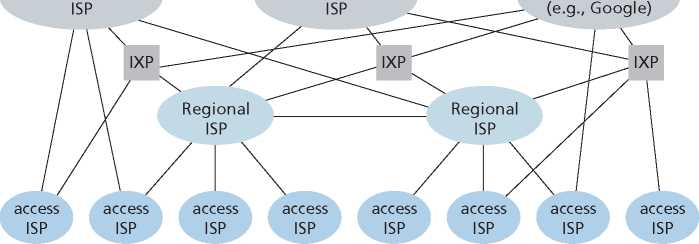Figure 1.15 ♦ Interconnection of ISPs
1.4 Delay, Loss, and Throughput in Packet-Switched Networks
Back in Section 1.1 we said that the Internet can be viewed as an infrastructure that provides services to distributed applications running on end systems. Ideally, we would like Internet services to be able to move as much data as we want between any two end systems, instantaneously, without any loss of data. Alas, this is a lofty goal, one that is unachievable in reality. Instead, computer networks necessarily constrain throughput (the amount of data per second that can be transferred) between end systems, introduce delays between end systems, and can actually lose packets. On one hand, it is unfortunate that the physical laws of reality introduce delay and loss as well as constrain throughput. On the other hand, because computer networks have these problems, there are many fascinating issues surrounding how to deal with the problems—more than enough issues to fill a course on computer networking and to motivate thousands of PhD theses! In this section, we’ll begin to examine and quantify delay, loss, and throughput in computer networks.
1.4.1 Overview of Delay in Packet-Switched Networks
Recall that a packet starts in a host (the source), passes through a series of routers, and ends its journey in another host (the destination). As a packet travels from one node (host or router) to the subsequent node (host or router) along this path, the packet suffers from several types of delays at each node along the path. The most important of these delays are the nodal processing delay, queuing delay, transmission delay, and propagation delay; together, these delays accumulate to give a total nodal delay. The performance of many Internet applications—such as search, Web browsing, e-mail, maps, instant messaging, and voice-over-IP—are greatly affected by network delays. In order to acquire a deep understanding of packet switching and computer networks, we must understand the nature and importance of these delays.
Types of Delay
Let’s explore these delays in the context of Figure 1.16. As part of its end-to-end route between source and destination, a packet is sent from the upstream node through router A to router B. Our goal is to characterize the nodal delay at router A. Note that router A has an outbound link leading to router B. This link is preceded by a queue (also known as a buffer). When the packet arrives at router A from the upstream node, router A examines the packet’s header to determine the appropriate outbound link for the packet and then directs the packet to this link. In this example, the outbound link for the packet is the one that leads to router B. A packet can be transmitted on a link only if there is no other packet currently being transmitted on the link and if there are no other packets preceding it in the queue; if the link is
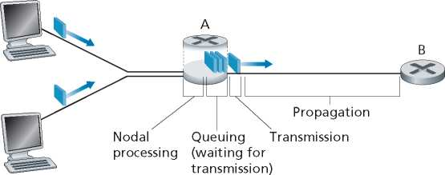Figure 1.16 ♦ The nodal delay at router A
currently busy or if there are other packets already queued for the link, the newly arriving packet will then join the queue.
Processing Delay
The time required to examine the packet’s header and determine where to direct the packet is part of the processing delay. The processing delay can also include other factors, such as the time needed to check for bit-level errors in the packet that occurred in transmitting the packet’s bits from the upstream node to router A. Processing delays in high-speed routers are typically on the order of microseconds or less. After this nodal processing, the router directs the packet to the queue that precedes the link to router B. (In Chapter 4 we’ll study the details of how a router operates.)
Queuing Delay
At the queue, the packet experiences a queuing delay as it waits to be transmitted onto the link. The length of the queuing delay of a specific packet will depend on the number of earlier-arriving packets that are queued and waiting for transmission onto the link. If the queue is empty and no other packet is currently being transmitted, then our packet’s queuing delay will be zero. On the other hand, if the traffic is heavy and many other packets are also waiting to be transmitted, the queuing delay will be long. We will see shortly that the number of packets that an arriving packet might expect to find is a function of the intensity and nature of the traffic arriving at the queue. Queuing delays can be on the order of microseconds to milliseconds in practice.
Transmission Delay
Assuming that packets are transmitted in a first-come-first-served manner, as is common in packet-switched networks, our packet can be transmitted only after all the packets that have arrived before it have been transmitted. Denote the length of the packet by L bits, and denote the transmission rate of the link from router A to router B by R bits/sec. For example, for a 10 Mbps Ethernet link, the rate is R = 10 Mbps; for a 100 Mbps Ethernet link, the rate is R = 100 Mbps. The transmission delay is L/R. This is the amount of time required to push (that is, transmit) all of the packet’s bits into the link. Transmission delays are typically on the order of microseconds to milliseconds in practice.
Propagation Delay
Once a bit is pushed into the link, it needs to propagate to router B. The time required to propagate from the beginning of the link to router B is the propagation delay. The bit propagates at the propagation speed of the link. The propagation speed depends on the physical medium of the link (that is, fiber optics, twisted-pair copper wire, and so on) and is in the range of
2 • 108 meters/sec to 3 • 108 meters/sec
which is equal to, or a little less than, the speed of light. The propagation delay is the distance between two routers divided by the propagation speed. That is, the propagation delay is d/s, where d is the distance between router A and router B and s is the propagation speed of the link. Once the last bit of the packet propagates to node B, it and all the preceding bits of the packet are stored in router B. The whole process then continues with router B now performing the forwarding. In wide-area networks, propagation delays are on the order of milliseconds.
Comparing Transmission and Propagation Delay
o
VideoNote
Exploring propagation delay and transmission delay
Newcomers to the field of computer networking sometimes have difficulty understanding the difference between transmission delay and propagation delay. The difference is subtle but important. The transmission delay is the amount of time required for the router to push out the packet; it is a function of the packet’s length and the transmission rate of the link, but has nothing to do with the distance between the two routers. The propagation delay, on the other hand, is the time it takes a bit to propagate from one router to the next; it is a function of the distance between the two routers, but has nothing to do with the packet’s length or the transmission rate of the link.
An analogy might clarify the notions of transmission and propagation delay. Consider a highway that has a tollbooth every 100 kilometers, as shown in Figure 1.17. You can think of the highway segments between tollbooths as links and the tollbooths as routers. Suppose that cars travel (that is, propagate) on the highway at a rate of 100 km/hour (that is, when a car leaves a tollbooth, it instantaneously accelerates to 100 km/hour and maintains that speed between tollbooths). Suppose next that 10 cars, traveling together as a caravan, follow each other in a fixed order. You can think of each car as a bit and the caravan as a packet. Also suppose that each
100 km
Ten-car Toll
caravan booth
Figure 1.17 ♦ Caravan analogy
◄--100 km —
Toll booth
tollbooth services (that is, transmits) a car at a rate of one car per 12 seconds, and that it is late at night so that the caravan’s cars are the only cars on the highway. Finally, suppose that whenever the first car of the caravan arrives at a tollbooth, it waits at the entrance until the other nine cars have arrived and lined up behind it. (Thus, the entire caravan must be stored at the tollbooth before it can begin to be forwarded.) The time required for the tollbooth to push the entire caravan onto the highway is (10 cars)/(5 cars/minute) = 2 minutes. This time is analogous to the transmission delay in a router. The time required for a car to travel from the exit of one tollbooth to the next tollbooth is 100 km/(100 km/hour) = 1 hour. This time is analogous to propagation delay. Therefore, the time from when the caravan is stored in front of a tollbooth until the caravan is stored in front of the next tollbooth is the sum of transmission delay and propagation delay—in this example, 62 minutes.
Let’s explore this analogy a bit more. What would happen if the tollbooth service time for a caravan were greater than the time for a car to travel between tollbooths? For example, suppose now that the cars travel at the rate of 1,000 km/hour and the tollbooth services cars at the rate of one car per minute. Then the traveling delay between two tollbooths is 6 minutes and the time to serve a caravan is 10 minutes. In this case, the first few cars in the caravan will arrive at the second tollbooth before the last cars in the caravan leave the first tollbooth. This situation also arises in packet-switched networks—the first bits in a packet can arrive at a router while many of the remaining bits in the packet are still waiting to be transmitted by the preceding router.
If a picture speaks a thousand words, then an animation must speak a million words. The Web site for this textbook provides an interactive animation that nicely illustrates and contrasts transmission delay and propagation delay. The reader is highly encouraged to visit that animation. [Smith 2009] also provides a very readable discussion of propagation, queuing, and transmission delays.
If we let dproc, dqueue, dtrans, and dprop denote the processing, queuing, transmission, and propagation delays, then the total nodal delay is given by
dnodal ^proc + dqueue + dtrans + ^prop
The contribution of these delay components can vary significantly. For example, dprop can be negligible (for example, a couple of microseconds) for a link connecting two routers on the same university campus; however, dprop is hundreds of milliseconds for two routers interconnected by a geostationary satellite link, and can be the dominant term in dnodal. Similarly, dtrans can range from negligible to significant. Its contribution is typically negligible for transmission rates of 10 Mbps and higher (for example, for LANs); however, it can be hundreds of milliseconds for large Internet packets sent over low-speed dial-up modem links. The processing delay, dproc, is often negligible; however, it strongly influences a router’s maximum throughput, which is the maximum rate at which a router can forward packets.
1.4.2 Queuing Delay and Packet Loss
The most complicated and interesting component of nodal delay is the queuing delay, dqueue. In fact, queuing delay is so important and interesting in computer networking that thousands of papers and numerous books have been written about it [Bertsekas 1991; Kleinrock 1975, Kleinrock 1976]. We give only a high-level, intuitive discussion of queuing delay here; the more curious reader may want to browse through some of the books (or even eventually write a PhD thesis on the subject!). Unlike the other three delays (namely, dproc, dtrans, and dprop), the queuing delay can vary from packet to packet. For example, if 10 packets arrive at an empty queue at the same time, the first packet transmitted will suffer no queuing delay, while the last packet transmitted will suffer a relatively large queuing delay (while it waits for the other nine packets to be transmitted). Therefore, when characterizing queuing delay, one typically uses statistical measures, such as average queuing delay, variance of queuing delay, and the probability that the queuing delay exceeds some specified value.
When is the queuing delay large and when is it insignificant? The answer to this question depends on the rate at which traffic arrives at the queue, the transmission rate of the link, and the nature of the arriving traffic, that is, whether the traffic arrives periodically or arrives in bursts. To gain some insight here, let a denote the average rate at which packets arrive at the queue (a is in units of packets/sec). Recall that R is the transmission rate; that is, it is the rate (in bits/sec) at which bits are pushed out of the queue. Also suppose, for simplicity, that all packets consist of L bits. Then the average rate at which bits arrive at the queue is La bits/sec. Finally, assume that the queue is very big, so that it can hold essentially an infinite number of bits. The ratio La/R, called the traffic intensity, often plays an important role in estimating the extent of the queuing delay. If La/R > 1, then the average rate at which bits arrive at the queue exceeds the rate at which the bits can be transmitted from the queue. In this unfortunate situation, the queue will tend to increase without bound and the queuing delay will approach infinity! Therefore, one of the golden rules in traffic engineering is: Design your system so that the traffic intensity is no greater than 1.
Now consider the case La/R < 1. Here, the nature of the arriving traffic impacts the queuing delay. For example, if packets arrive periodically—that is, one packet arrives every L/R seconds—then every packet will arrive at an empty queue and there will be no queuing delay. On the other hand, if packets arrive in bursts but periodically, there can be a significant average queuing delay. For example, suppose N packets arrive simultaneously every (L/R)N seconds. Then the first packet transmitted has no queuing delay; the second packet transmitted has a queuing delay of L/R seconds; and more generally, the nth packet transmitted has a queuing delay of (n — 1)L/R seconds. We leave it as an exercise for you to calculate the average queuing delay in this example.
The two examples of periodic arrivals described above are a bit academic. Typically, the arrival process to a queue is random; that is, the arrivals do not follow any pattern and the packets are spaced apart by random amounts of time. In this more realistic case, the quantity La/R is not usually sufficient to fully characterize the queuing delay statistics. Nonetheless, it is useful in gaining an intuitive understanding of the extent of the queuing delay. In particular, if the traffic intensity is close to zero, then packet arrivals are few and far between and it is unlikely that an arriving packet will find another packet in the queue. Hence, the average queuing delay will be close to zero. On the other hand, when the traffic intensity is close to 1, there will be intervals of time when the arrival rate exceeds the transmission capacity (due to variations in packet arrival rate), and a queue will form during these periods of time; when the arrival rate is less than the transmission capacity, the length of the queue will shrink. Nonetheless, as the traffic intensity approaches 1, the average queue length gets larger and larger. The qualitative dependence of average queuing delay on the traffic intensity is shown in Figure 1.18.
One important aspect of Figure 1.18 is the fact that as the traffic intensity approaches 1, the average queuing delay increases rapidly. A small percentage increase in the intensity will result in a much larger percentage-wise increase in delay. Perhaps you have experienced this phenomenon on the highway. If you regularly drive on a road that is typically congested, the fact that the road is typically congested means that its traffic intensity is close to 1. If some event causes an even slightly larger-than-usual amount of traffic, the delays you experience can be huge.
To really get a good feel for what queuing delays are about, you are encouraged once again to visit the textbook Web site, which provides an interactive animation for a queue. If you set the packet arrival rate high enough so that the traffic intensity exceeds 1, you will see the queue slowly build up over time.
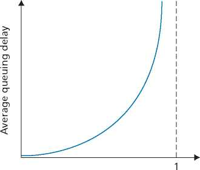La/R
Figure 1.18 ♦ Dependence of average queuing delay on traffic intensity
Packet Loss
In our discussions above, we have assumed that the queue is capable of holding an infinite number of packets. In reality a queue preceding a link has finite capacity, although the queuing capacity greatly depends on the router design and cost. Because the queue capacity is finite, packet delays do not really approach infinity as the traffic intensity approaches 1. Instead, a packet can arrive to find a full queue. With no place to store such a packet, a router will drop that packet; that is, the packet will be lost. This overflow at a queue can again be seen in the interactive animation when the traffic intensity is greater than 1.
From an end-system viewpoint, a packet loss will look like a packet having been transmitted into the network core but never emerging from the network at the destination. The fraction of lost packets increases as the traffic intensity increases. Therefore, performance at a node is often measured not only in terms of delay, but also in terms of the probability of packet loss. As we’ll discuss in the subsequent chapters, a lost packet may be retransmitted on an end-to-end basis in order to ensure that all data are eventually transferred from source to destination.
1.4.3 End-to-End Delay
Our discussion up to this point has focused on the nodal delay, that is, the delay at a single router. Let’s now consider the total delay from source to destination. To get a handle on this concept, suppose there are N — 1 routers between the source host and the destination host. Let’s also suppose for the moment that the network is uncongested (so that queuing delays are negligible), the processing delay at each router and at the source host is dproc, the transmission rate out of each router and out of the source host is R bits/sec, and the propagation on each link is dprop. The nodal delays accumulate and give an end-to-end delay,
dend — end N (dproc + drans + dprop)
(1.2)
where, once again, dtrans = L/R, where L is the packet size. Note that Equation 1.2 is a generalization of Equation 1.1, which did not take into account processing and propagation delays. We leave it to you to generalize Equation 1.2 to the case of heterogeneous delays at the nodes and to the presence of an average queuing delay at each node.
D
VideoNote
Using Traceroute to discover network paths and measure network delay
Traceroute
To get a hands-on feel for end-to-end delay in a computer network, we can make use of the Traceroute program. Traceroute is a simple program that can run in any Internet host. When the user specifies a destination hostname, the program in the source host sends multiple, special packets toward that destination. As these packets work their way toward the destination, they pass through a series of routers. When a router receives one of these special packets, it sends back to the source a short message that contains the name and address of the router.
More specifically, suppose there are N — 1 routers between the source and the destination. Then the source will send N special packets into the network, with each packet addressed to the ultimate destination. These N special packets are marked 1 through N, with the first packet marked 1 and the last packet marked N. When the nth router receives the nth packet marked n, the router does not forward the packet toward its destination, but instead sends a message back to the source. When the destination host receives the Nth packet, it too returns a message back to the source. The source records the time that elapses between when it sends a packet and when it receives the corresponding return message; it also records the name and address of the router (or the destination host) that returns the message. In this manner, the source can reconstruct the route taken by packets flowing from source to destination, and the source can determine the round-trip delays to all the intervening routers. Traceroute actually repeats the experiment just described three times, so the source actually sends 3 • N packets to the destination. RFC 1393 describes Traceroute in detail.
Here is an example of the output of the Traceroute program, where the route was being traced from the source host gaia.cs.umass.edu (at the University of Massachusetts) to a host in the computer science department at the University of Sorbonne in Paris (formerly the university was known as UPMC). The output has six columns: the first column is the n value described above, that is, the number of the router along the route; the second column is the name of the router; the third column is the address of the router (of the form xxx.xxx.xxx.xxx); the last three columns are the round-trip delays for three experiments. If the source receives fewer than three messages from any given router (due to packet loss in the network), Traceroute places an asterisk just after the router number and reports fewer than three round-trip times for that router.
gw-vlan-2451.cs.umass.edu (128.119.245.1) 1.899 ms 3.266 ms 3.280 ms
j-cs-gw-int-10-240.cs.umass.edu (10.119.240.254) 1.296 ms 1.276 ms
1.245 ms n5-rt-1-1-xe-2-1-0.gw.umass.edu (128.119.3.33) 2.237 ms 2.217 ms 2.187 ms core1-rt-et-5-2-0.gw.umass.edu (128.119.0.9) 0.351 ms 0.392 ms 0.380 ms border1-rt-et-5-0-0.gw.umass.edu (192.80.83.102) 0.345 ms 0.345 ms 0.344 ms nox300gw1-umass-re.nox.org (192.5.89.101) 3.260 ms 0.416 ms 3.127 ms nox300gw1-umass-re.nox.org (192.5.89.101) 3.165 ms 7.326 ms 7.311 ms 198.71.45.237 (198.71.45.237) 77.826 ms 77.246 ms 77.744 ms renater-lb1-gw.mx1.par.fr.geant.net (62.40.124.70) 79.357 ms 77.729 79.152 ms 193.51.180.109 (193.51.180.109) 78.379 ms 79.936 80.042 ms
* 193.51.180.109 (193.51.180.109) 80.640 ms *
* 195.221.127.182 (195.221.127.182) 78.408 ms * 195.221.127.182 (195.221.127.182) 80.686 ms 80.796 ms 78.434 ms r-upmc1.reseau.jussieu.fr (134.157.254.10) 78.399 ms * 81.353 ms
In the trace above, there are 14 routers between the source and the destination. Most of these routers have a name, and all of them have addresses. For example, the name of Router 4 is core1-rt-et-5-2-0.gw.umass.edu and its address is 128.119.0.9. Looking at the data provided for this same router, we see that in the first of the three trials the round-trip delay between the source and the router was 0.351 msec. The round-trip delays for the subsequent two trials were 0.392 and 0.380 msec. These round-trip delays include all of the delays just discussed, including transmission delays, propagation delays, router processing delays, and queuing delay.
Because the queuing delay is varying with time, the round-trip delay of packet n sent to a router n can sometimes be longer than the round-trip delay of packet n+1 sent to router n+1. Indeed, we observe this phenomenon in the above example: the delay to Router 12 is smaller than the delay to Router 11! Also note the big increase in the round-trip delay when going from router 7 to router 8. This is due to a transatlantic fiber-optic link between routers 7 and 8, giving rise to a relatively large propagation delay. There are a number of free software programs that provide a graphical interface to Traceroute; one of our favorites is PingPlotter [PingPlotter 2020].
End System, Application, and Other Delays
In addition to processing, transmission, and propagation delays, there can be additional significant delays in the end systems. For example, an end system wanting to transmit a packet into a shared medium (e.g., as in a WiFi or cable modem scenario) may purposefully delay its transmission as part of its protocol for sharing the medium with other end systems; we’ll consider such protocols in detail in Chapter 6. Another important delay is media packetization delay, which is present in Voiceover-IP (VoIP) applications. In VoIP, the sending side must first fill a packet with encoded digitized speech before passing the packet to the Internet. This time to fill a packet—called the packetization delay—can be significant and can impact the user-perceived quality of a VoIP call. This issue will be further explored in a homework problem at the end of this chapter.
1.4.4 Throughput in Computer Networks
In addition to delay and packet loss, another critical performance measure in computer networks is end-to-end throughput. To define throughput, consider transferring a large file from Host A to Host B across a computer network. This transfer might be, for example, a large video clip from one computer to another. The instantaneous throughput at any instant of time is the rate (in bits/sec) at which Host B is receiving the file. (Many applications display the instantaneous throughput during downloads in the user interface—perhaps you have observed this before! You might like to try measuring the end-to-end delay and download throughput between your and servers around the Internet using the speedtest application [Speedtest 2020].) If the file consists of F bits and the transfer takes T seconds for Host B to receive all F bits, then the average throughput of the file transfer is F/T bits/sec. For some applications, such as Internet telephony, it is desirable to have a low delay and an instantaneous throughput consistently above some threshold (for example, over 24 kbps for some Internet telephony applications and over 256 kbps for some real-time video applications). For other applications, including those involving file transfers, delay is not critical, but it is desirable to have the highest possible throughput.
To gain further insight into the important concept of throughput, let’s consider a few examples. Figure 1.19(a) shows two end systems, a server and a client, connected by two communication links and a router. Consider the throughput for a file transfer from the server to the client. Let Rs denote the rate of the link between the server and the router; and Rc denote the rate of the link between the router and the client. Suppose that the only bits being sent in the entire network are those from the server to the client. We now ask, in this ideal scenario, what is the server-to-client throughput? To answer this question, we may think of bits as fluid and communication links as pipes. Clearly, the server cannot pump bits through its link at a rate faster than Rs bps; and the router cannot forward bits at a rate faster than Rc bps. If Rs < Rc, then the bits pumped by the server will “flow” right through the router and arrive at the client at a rate of Rs bps, giving a throughput of Rs bps. If, on the other hand, Rc < Rs, then the router will not be able to forward bits as quickly as it receives them. In this case, bits will only leave the router at rate Rc, giving an end-to-end throughput of Rc. (Note also that if bits continue to arrive at the router at rate Rs, and continue to leave the router at Rc, the backlog of bits at the router waiting for transmission to the client will grow and grow—a most undesirable situation!)
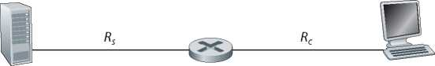Rs
Rc
R.
Rc
Server
Client
a.
Ri
Ri
Server b.
Client
Figure 1.19 ♦ Throughput for a file transfer from server to client
Thus, for this simple two-link network, the throughput is min{Rc, Rs}, that is, it is the transmission rate of the bottleneck link. Having determined the throughput, we can now approximate the time it takes to transfer a large file of F bits from server to client as F/min{Rs, Rc}. For a specific example, suppose that you are downloading an MP3 file of F = 32 million bits, the server has a transmission rate of Rs = 2 Mbps, and you have an access link of Rc = 1 Mbps. The time needed to transfer the file is then 32 seconds. Of course, these expressions for throughput and transfer time are only approximations, as they do not account for store-and-forward and processing delays as well as protocol issues.
Figure 1.19(b) now shows a network with N links between the server and the client, with the transmission rates of the N links being R1, R2, . .., RN. Applying the same analysis as for the two-link network, we find that the throughput for a file transfer from server to client is min{R1, R2, . , RN}, which is once again the transmission rate of the bottleneck link along the path between server and client.
Now consider another example motivated by today’s Internet. Figure 1.20(a) shows two end systems, a server and a client, connected to a computer network. Consider the throughput for a file transfer from the server to the client. The server is connected to the network with an access link of rate Rs and the client is connected to the network with an access link of rate Rc. Now suppose that all the links in the core of the communication network have very high transmission rates, much higher than Rs and Rc. Indeed, today, the core of the Internet is over-provisioned with high speed links that experience little congestion. Also suppose that the only bits being sent in the entire network are those from the server to the client. Because the core of the computer network is like a wide pipe in this example, the rate at which bits can flow from source to destination is again the minimum of Rs and Rc, that is, throughput = min{Rs, Rc}. Therefore, the constraining factor for throughput in today’s Internet is typically the access network.
For a final example, consider Figure 1.20(b) in which there are 10 servers and 10 clients connected to the core of the computer network. In this example, there are 10 simultaneous downloads taking place, involving 10 client-server pairs. Suppose that these 10 downloads are the only traffic in the network at the current time. As shown in the figure, there is a link in the core that is traversed by all 10 downloads. Denote R for the transmission rate of this link R. Let’s suppose that all server access links have the same rate Rs, all client access links have the same rate Rc, and the transmission rates of all the links in the core—except the one common link of rate R—are much larger than Rs, Rc, and R. Now we ask, what are the throughputs of the downloads? Clearly, if the rate of the common link, R, is large—say a hundred times larger than both Rs and Rc—then the throughput for each download will once again be min{Rs, Rc}. But what if the rate of the common link is of the same order as Rs and Rc? What will the throughput be in this case? Let’s take a look at a specific example. Suppose Rs = 2 Mbps, Rc = 1 Mbps, R = 5 Mbps, and the common link divides its transmission rate equally among the 10 downloads. Then the
a.
Server
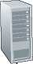Rs
Rc
Client
b.
10 Servers
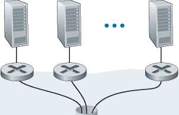— Bottleneck link of capacity R
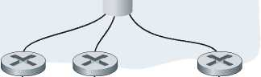10 Clients
Figure 1.20 ♦ End-to-end throughput: (a) Client downloads a file from server; (b) 10 clients downloading with 10 servers
bottleneck for each download is no longer in the access network, but is now instead the shared link in the core, which only provides each download with 500 kbps of throughput. Thus, the end-to-end throughput for each download is now reduced to 500 kbps.
The examples in Figure 1.19 and Figure 1.20(a) show that throughput depends on the transmission rates of the links over which the data flows. We saw that when there is no other intervening traffic, the throughput can simply be approximated as the minimum transmission rate along the path between source and destination. The example in Figure 1.20(b) shows that more generally the throughput depends not only on the transmission rates of the links along the path, but also on the intervening traffic. In particular, a link with a high transmission rate may nonetheless be the bottleneck link for a file transfer if many other data flows are also passing through that link. We will examine throughput in computer networks more closely in the homework problems and in the subsequent chapters.
1.5 Protocol Layers and Their Service Models
From our discussion thus far, it is apparent that the Internet is an extremely complicated system. We have seen that there are many pieces to the Internet: numerous applications and protocols, various types of end systems, packet switches, and various types of link-level media. Given this enormous complexity, is there any hope of organizing a network architecture, or at least our discussion of network architecture? Fortunately, the answer to both questions is yes.
1.5.1 Layered Architecture
Before attempting to organize our thoughts on Internet architecture, let’s look for a human analogy. Actually, we deal with complex systems all the time in our everyday life. Imagine if someone asked you to describe, for example, the airline system. How would you find the structure to describe this complex system that has ticketing agents, baggage checkers, gate personnel, pilots, airplanes, air traffic control, and a worldwide system for routing airplanes? One way to describe this system might be to describe the series of actions you take (or others take for you) when you fly on an airline. You purchase your ticket, check your bags, go to the gate, and eventually get loaded onto the plane. The plane takes off and is routed to its destination. After your plane lands, you deplane at the gate and claim your bags. If the trip was bad, you complain about the flight to the ticket agent (getting nothing for your effort). This scenario is shown in Figure 1.21.
(complain)
Ticket (purchase)
Baggage (check)
Gates (load)
Ticket
Baggage (claim)
Gates (unl
oad)
Runway takeoff
Airplane routing
Airplane routing
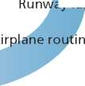ay landing
Figure 1.21 ♦ Taking an airplane trip: actions
|
Ticket (purchase) |
Ticket (complain) | |
|
Baggage (check) |
Baggage (claim) | |
|
Gates (load) |
Gates (unload) | |
|
Runway takeoff |
Runway landing | |
|
Airplane routing |
Airplane routing Airplane routing |
Airplane routing |
Ticket
Baggage
Gate
Takeoff/Landing
Airplane routing
Departure airport
Intermediate air-traffic control centers
Arrival airport
Figure 1.22 ♦ Horizontal layering of airline functionality
Already, we can see some analogies here with computer networking: You are being shipped from source to destination by the airline; a packet is shipped from source host to destination host in the Internet. But this is not quite the analogy we are after. We are looking for some structure in Figure 1.21. Looking at Figure 1.21, we note that there is a ticketing function at each end; there is also a baggage function for already-ticketed passengers, and a gate function for already-ticketed and already-baggage-checked passengers. For passengers who have made it through the gate (that is, passengers who are already ticketed, baggage-checked, and through the gate), there is a takeoff and landing function, and while in flight, there is an airplanerouting function. This suggests that we can look at the functionality in Figure 1.21 in a horizontal manner, as shown in Figure 1.22.
Figure 1.22 has divided the airline functionality into layers, providing a framework in which we can discuss airline travel. Note that each layer, combined with the layers below it, implements some functionality, some service. At the ticketing layer and below, airline-counter-to-airline-counter transfer of a person is accomplished. At the baggage layer and below, baggage-check-to-baggage-claim transfer of a person and bags is accomplished. Note that the baggage layer provides this service only to an already-ticketed person. At the gate layer, departure-gate-to-arrival-gate transfer of a person and bags is accomplished. At the takeoff/landing layer, runway-to-runway transfer of people and their bags is accomplished. Each layer provides its service by (1) performing certain actions within that layer (for example, at the gate layer, loading and unloading people from an airplane) and by (2) using the services of the layer directly below it (for example, in the gate layer, using the runway-to-runway passenger transfer service of the takeoff/landing layer).
A layered architecture allows us to discuss a well-defined, specific part of a large and complex system. This simplification itself is of considerable value by providing modularity, making it much easier to change the implementation of the service provided by the layer. As long as the layer provides the same service to the layer above it, and uses the same services from the layer below it, the remainder of the system remains unchanged when a layer’s implementation is changed. (Note that changing the implementation of a service is very different from changing the service itself!) For example, if the gate functions were changed (for instance, to have people board and disembark by height), the remainder of the airline system would remain unchanged since the gate layer still provides the same function (loading and unloading people); it simply implements that function in a different manner after the change. For large and complex systems that are constantly being updated, the ability to change the implementation of a service without affecting other components of the system is another important advantage of layering.
Protocol Layering
But enough about airlines. Let’s now turn our attention to network protocols. To provide structure to the design of network protocols, network designers organize protocols—and the network hardware and software that implement the protocols— in layers. Each protocol belongs to one of the layers, just as each function in the airline architecture in Figure 1.22 belonged to a layer. We are again interested in the services that a layer offers to the layer above—the so-called service model of a layer. Just as in the case of our airline example, each layer provides its service by (1) performing certain actions within that layer and by (2) using the services of the layer directly below it. For example, the services provided by layer n may include reliable delivery of messages from one edge of the network to the other. This might be implemented by using an unreliable edge-to-edge message delivery service of layer n — 1, and adding layer n functionality to detect and retransmit lost messages.
A protocol layer can be implemented in software, in hardware, or in a combination of the two. Application-layer protocols—such as HTTP and SMTP—are almost always implemented in software in the end systems; so are transport-layer protocols. Because the physical layer and data link layers are responsible for handling communication over a specific link, they are typically implemented in a network interface card (for example, Ethernet or WiFi interface cards) associated with a given link. The network layer is often a mixed implementation of hardware and software. Also note that just as the functions in the layered airline architecture were distributed among the various airports and flight control centers that make up the system, so too is a layer n protocol distributed among the end systems, packet switches, and other components that make up the network. That is, there’s often a piece of a layer n protocol in each of these network components.
Protocol layering has conceptual and structural advantages [RFC 3439]. As we have seen, layering provides a structured way to discuss system components. Modularity makes it easier to update system components. We mention, however, that some researchers and networking engineers are vehemently opposed to layering [Wakeman 1992]. One potential drawback of layering is that one layer may duplicate lower-layer functionality. For example, many protocol stacks provide error recovery on both a per-link basis and an end-to-end basis. A second potential drawback is that functionality at one layer may need information (for example, a timestamp value) that is present only in another layer; this violates the goal of separation of layers.
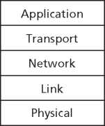Five-layer Internet protocol stack
Figure 1.23 ♦ The Internet protocol stack
When taken together, the protocols of the various layers are called the protocol stack. The Internet protocol stack consists of five layers: the physical, link, network, transport, and application layers, as shown in Figure 1.23. If you examine the Table of Contents, you will see that we have roughly organized this book using the layers of the Internet protocol stack. We take a top-down approach, first covering the application layer and then proceeding downward.
Application Layer
The application layer is where network applications and their application-layer protocols reside. The Internet’s application layer includes many protocols, such as the HTTP protocol (which provides for Web document request and transfer), SMTP (which provides for the transfer of e-mail messages), and FTP (which provides for the transfer of files between two end systems). We’ll see that certain network functions, such as the translation of human-friendly names for Internet end systems like www.ietf.org to a 32-bit network address, are also done with the help of a specific application-layer protocol, namely, the domain name system (DNS). We’ll see in Chapter 2 that it is very easy to create and deploy our own new application-layer protocols.
An application-layer protocol is distributed over multiple end systems, with the application in one end system using the protocol to exchange packets of information with the application in another end system. We’ll refer to this packet of information at the application layer as a message.
Transport Layer
The Internet’s transport layer transports application-layer messages between application endpoints. In the Internet, there are two transport protocols, TCP and UDP, either of which can transport application-layer messages. TCP provides a connection-oriented service to its applications. This service includes guaranteed delivery of application-layer messages to the destination and flow control (that is, sender/receiver speed matching). TCP also breaks long messages into shorter segments and provides a congestion-control mechanism, so that a source throttles its transmission rate when the network is congested. The UDP protocol provides a connectionless service to its applications. This is a no-frills service that provides no reliability, no flow control, and no congestion control. In this book, we’ll refer to a transport-layer packet as a segment.
Network Layer
The Internet’s network layer is responsible for moving network-layer packets known as datagrams from one host to another. The Internet transport-layer protocol (TCP or UDP) in a source host passes a transport-layer segment and a destination address to the network layer, just as you would give the postal service a letter with a destination address. The network layer then provides the service of delivering the segment to the transport layer in the destination host.
The Internet’s network layer includes the celebrated IP protocol, which defines the fields in the datagram as well as how the end systems and routers act on these fields. There is only one IP protocol, and all Internet components that have a network layer must run the IP protocol. The Internet’s network layer also contains routing protocols that determine the routes that datagrams take between sources and destinations. The Internet has many routing protocols. As we saw in Section 1.3, the Internet is a network of networks, and within a network, the network administrator can run any routing protocol desired. Although the network layer contains both the IP protocol and numerous routing protocols, it is often simply referred to as the IP layer, reflecting the fact that IP is the glue that binds the Internet together.
Link Layer
The Internet’s network layer routes a datagram through a series of routers between the source and destination. To move a packet from one node (host or router) to the next node in the route, the network layer relies on the services of the link layer. In particular, at each node, the network layer passes the datagram down to the link layer, which delivers the datagram to the next node along the route. At this next node, the link layer passes the datagram up to the network layer.
The services provided by the link layer depend on the specific link-layer protocol that is employed over the link. For example, some link-layer protocols provide reliable delivery, from transmitting node, over one link, to receiving node. Note that this reliable delivery service is different from the reliable delivery service of TCP, which provides reliable delivery from one end system to another. Examples of link-layer protocols include Ethernet, WiFi, and the cable access network’s DOCSIS protocol. As datagrams typically need to traverse several links to travel from source to destination, a datagram may be handled by different link-layer protocols at different links along its route. For example, a datagram may be handled by Ethernet on one link and by PPP on the next link. The network layer will receive a different service from each of the different link-layer protocols. In this book, we’ll refer to the link-layer packets as frames.
Physical Layer
While the job of the link layer is to move entire frames from one network element to an adjacent network element, the job of the physical layer is to move the individual bits within the frame from one node to the next. The protocols in this layer are again link dependent and further depend on the actual transmission medium of the link (for example, twisted-pair copper wire, single-mode fiber optics). For example, Ethernet has many physical-layer protocols: one for twisted-pair copper wire, another for coaxial cable, another for fiber, and so on. In each case, a bit is moved across the link in a different way.
1.5.2 Encapsulation
Figure 1.24 shows the physical path that data takes down a sending end system’s protocol stack, up and down the protocol stacks of an intervening link-layer switch
Message M
|
Segment |
Ht |
M |
|
Datagram Hn |
Ht |
M |
|
Frame Hl Hn |
Ht |
M |
Source
|
Application | |
|
Transport | |
|
Network | |
|
Link | |
|
Physical | |
|
Hl |
Hn Ht M |
[ Link | |
|
Physical | |||
Hl Hn
Link-layer switch
Ht
Hl Hn Ht
Router
Hn Ht
Network
Link
Physical
|
Hn |
Ht |
M | |
|
Hl |
Hn |
Ht |
M |
Figure 1.24 ♦ Hosts, routers, and link-layer switches; each contains a different set of layers, reflecting their differences in functionality and router, and then up the protocol stack at the receiving end system. As we discuss later in this book, routers and link-layer switches are both packet switches. Similar to end systems, routers and link-layer switches organize their networking hardware and software into layers. But routers and link-layer switches do not implement all of the layers in the protocol stack; they typically implement only the bottom layers. As shown in Figure 1.24, link-layer switches implement layers 1 and 2; routers implement layers 1 through 3. This means, for example, that Internet routers are capable of implementing the IP protocol (a layer 3 protocol), while link-layer switches are not. We’ll see later that while link-layer switches do not recognize IP addresses, they are capable of recognizing layer 2 addresses, such as Ethernet addresses. Note that hosts implement all five layers; this is consistent with the view that the Internet architecture puts much of its complexity at the edges of the network.
Figure 1.24 also illustrates the important concept of encapsulation. At the sending host, an application-layer message (M in Figure 1.24) is passed to the transport layer. In the simplest case, the transport layer takes the message and appends additional information (so-called transport-layer header information, Ht in Figure 1.24) that will be used by the receiver-side transport layer. The application-layer message and the transport-layer header information together constitute the transport-layer segment. The transport-layer segment thus encapsulates the application-layer message. The added information might include information allowing the receiver-side transport layer to deliver the message up to the appropriate application, and error-detection bits that allow the receiver to determine whether bits in the message have been changed in route. The transport layer then passes the segment to the network layer, which adds network-layer header information (Hn in Figure 1.24) such as source and destination end system addresses, creating a network-layer datagram. The datagram is then passed to the link layer, which (of course!) will add its own link-layer header information and create a link-layer frame. Thus, we see that at each layer, a packet has two types of fields: header fields and a payload field. The payload is typically a packet from the layer above.
A useful analogy here is the sending of an interoffice memo from one corporate branch office to another via the public postal service. Suppose Alice, who is in one branch office, wants to send a memo to Bob, who is in another branch office. The memo is analogous to the application-layer message. Alice puts the memo in an interoffice envelope with Bob’s name and department written on the front of the envelope. The interoffice envelope is analogous to a transport-layer segment—it contains header information (Bob’s name and department number) and it encapsulates the application-layer message (the memo). When the sending branchoffice mailroom receives the interoffice envelope, it puts the interoffice envelope inside yet another envelope, which is suitable for sending through the public postal service. The sending mailroom also writes the postal address of the sending and receiving branch offices on the postal envelope. Here, the postal envelope is analogous to the datagram—it encapsulates the transport-layer segment (the interoffice envelope), which encapsulates the original message (the memo). The postal service delivers the postal envelope to the receiving branch-office mailroom. There, the process of de-encapsulation is begun. The mailroom extracts the interoffice memo and forwards it to Bob. Finally, Bob opens the envelope and removes the memo.
The process of encapsulation can be more complex than that described above. For example, a large message may be divided into multiple transport-layer segments (which might themselves each be divided into multiple network-layer datagrams). At the receiving end, such a segment must then be reconstructed from its constituent datagrams.
1.6 Networks Under Attack
The Internet has become mission critical for many institutions today, including large and small companies, universities, and government agencies. Many individuals also rely on the Internet for many of their professional, social, and personal activities. Billions of “things,” including wearables and home devices, are currently being connected to the Internet. But behind all this utility and excitement, there is a dark side, a side where “bad guys” attempt to wreak havoc in our daily lives by damaging our Internet-connected computers, violating our privacy, and rendering inoperable the Internet services on which we depend.
The field of network security is about how the bad guys can attack computer networks and about how we, soon-to-be experts in computer networking, can defend networks against those attacks, or better yet, design new architectures that are immune to such attacks in the first place. Given the frequency and variety of existing attacks as well as the threat of new and more destructive future attacks, network security has become a central topic in the field of computer networking. One of the features of this textbook is that it brings network security issues to the forefront.
Since we don’t yet have expertise in computer networking and Internet protocols, we’ll begin here by surveying some of today’s more prevalent security-related problems. This will whet our appetite for more substantial discussions in the upcoming chapters. So we begin here by simply asking, what can go wrong? How are computer networks vulnerable? What are some of the more prevalent types of attacks today?
The Bad Guys Can Put Malware into Your Host Via the Internet
We attach devices to the Internet because we want to receive/send data from/to the Internet. This includes all kinds of good stuff, including Instagram posts, Internet search results, streaming music, video conference calls, streaming movies, and so on. But, unfortunately, along with all that good stuff comes malicious stuff— collectively known as malware—that can also enter and infect our devices. Once malware infects our device it can do all kinds of devious things, including deleting our files and installing spyware that collects our private information, such as social security numbers, passwords, and keystrokes, and then sends this (over the Internet, of course!) back to the bad guys. Our compromised host may also be enrolled in a network of thousands of similarly compromised devices, collectively known as a botnet, which the bad guys control and leverage for spam e-mail distribution or distributed denial-of-service attacks (soon to be discussed) against targeted hosts.
Much of the malware out there today is self-replicating: once it infects one host, from that host it seeks entry into other hosts over the Internet, and from the newly infected hosts, it seeks entry into yet more hosts. In this manner, self-replicating malware can spread exponentially fast.
The Bad Guys Can Attack Servers and Network Infrastructure
Another broad class of security threats are known as denial-of-service (DoS) attacks. As the name suggests, a DoS attack renders a network, host, or other piece of infrastructure unusable by legitimate users. Web servers, e-mail servers, DNS servers (discussed in Chapter 2), and institutional networks can all be subject to DoS attacks. The site Digital Attack Map allows use to visualize the top daily DoS attacks worldwide [DAM 2020]. Most Internet DoS attacks fall into one of three categories:
• Vulnerability attack. This involves sending a few well-crafted messages to a vulnerable application or operating system running on a targeted host. If the right sequence of packets is sent to a vulnerable application or operating system, the service can stop or, worse, the host can crash.
• Bandwidth flooding. The attacker sends a deluge of packets to the targeted host—so many packets that the target’s access link becomes clogged, preventing legitimate packets from reaching the server.
• Connection flooding. The attacker establishes a large number of half-open or fully open TCP connections (TCP connections are discussed in Chapter 3) at the target host. The host can become so bogged down with these bogus connections that it stops accepting legitimate connections.
Let’s now explore the bandwidth-flooding attack in more detail. Recalling our delay and loss analysis discussion in Section 1.4.2, it’s evident that if the server has an access rate of R bps, then the attacker will need to send traffic at a rate of approximately R bps to cause damage. If R is very large, a single attack source may not be able to generate enough traffic to harm the server. Furthermore, if all
Figure 1.25 ♦ A distributed denial-of-service attack
Victim
the traffic emanates from a single source, an upstream router may be able to detect the attack and block all traffic from that source before the traffic gets near the server. In a distributed DoS (DDoS) attack, illustrated in Figure 1.25, the attacker controls multiple sources and has each source blast traffic at the target. With this approach, the aggregate traffic rate across all the controlled sources needs to be approximately R to cripple the service. DDoS attacks leveraging botnets with thousands of comprised hosts are a common occurrence today [DAM 2020]. DDos attacks are much harder to detect and defend against than a DoS attack from a single host.
We encourage you to consider the following question as you work your way through this book: What can computer network designers do to defend against DoS attacks? We will see that different defenses are needed for the three types of DoS attacks.
The Bad Guys Can Sniff Packets
Many users today access the Internet via wireless devices, such as WiFi-connected laptops or handheld devices with cellular Internet connections (covered in Chapter 7). While ubiquitous Internet access is extremely convenient and enables marvelous new applications for mobile users, it also creates a major security vulnerability—by placing a passive receiver in the vicinity of the wireless transmitter, that receiver can obtain a copy of every packet that is transmitted! These packets can contain all kinds of sensitive information, including passwords, social security numbers, trade secrets, and private personal messages. A passive receiver that records a copy of every packet that flies by is called a packet sniffer.
Sniffers can be deployed in wired environments as well. In wired broadcast environments, as in many Ethernet LANs, a packet sniffer can obtain copies of broadcast packets sent over the LAN. As described in Section 1.2, cable access technologies also broadcast packets and are thus vulnerable to sniffing. Furthermore, a bad guy who gains access to an institution’s access router or access link to the Internet may be able to plant a sniffer that makes a copy of every packet going to/from the organization. Sniffed packets can then be analyzed offline for sensitive information.
Packet-sniffing software is freely available at various Web sites and as commercial products. Professors teaching a networking course have been known to assign lab exercises that involve writing a packet-sniffing and application-layer data reconstruction program. Indeed, the Wireshark [Wireshark 2020] labs associated with this text (see the introductory Wireshark lab at the end of this chapter) use exactly such a packet sniffer!
Because packet sniffers are passive—that is, they do not inject packets into the channel—they are difficult to detect. So, when we send packets into a wireless channel, we must accept the possibility that some bad guy may be recording copies of our packets. As you may have guessed, some of the best defenses against packet sniffing involve cryptography. We will examine cryptography as it applies to network security in Chapter 8.
The Bad Guys Can Masquerade as Someone You Trust
It is surprisingly easy (you will have the knowledge to do so shortly as you proceed through this text!) to create a packet with an arbitrary source address, packet content, and destination address and then transmit this hand-crafted packet into the Internet, which will dutifully forward the packet to its destination. Imagine the unsuspecting receiver (say an Internet router) who receives such a packet, takes the (false) source address as being truthful, and then performs some command embedded in the packet’s contents (say modifies its forwarding table). The ability to inject packets into the Internet with a false source address is known as IP spoofing, and is but one of many ways in which one user can masquerade as another user.
To solve this problem, we will need end-point authentication, that is, a mechanism that will allow us to determine with certainty if a message originates from where we think it does. Once again, we encourage you to think about how this can be done for network applications and protocols as you progress through the chapters of this book. We will explore mechanisms for end-point authentication in Chapter 8.
In closing this section, it’s worth considering how the Internet got to be such an insecure place in the first place. The answer, in essence, is that the Internet was originally designed to be that way, based on the model of “a group of mutually trusting users attached to a transparent network” [Blumenthal 2001]—a model in which (by definition) there is no need for security. Many aspects of the original Internet architecture deeply reflect this notion of mutual trust. For example, the ability for one user to send a packet to any other user is the default rather than a requested/ granted capability, and user identity is taken at declared face value, rather than being authenticated by default.
But today’s Internet certainly does not involve “mutually trusting users.” Nonetheless, today’s users still need to communicate when they don’t necessarily trust each other, may wish to communicate anonymously, may communicate indirectly through third parties (e.g., Web caches, which we’ll study in Chapter 2, or mobilityassisting agents, which we’ll study in Chapter 7), and may distrust the hardware, software, and even the air through which they communicate. We now have many security-related challenges before us as we progress through this book: We should seek defenses against sniffing, end-point masquerading, man-in-the-middle attacks, DDoS attacks, malware, and more. We should keep in mind that communication among mutually trusted users is the exception rather than the rule. Welcome to the world of modern computer networking!
1.7 History of Computer Networking and the Internet
Sections 1.1 through 1.6 presented an overview of the technology of computer networking and the Internet. You should know enough now to impress your family and friends! However, if you really want to be a big hit at the next cocktail party, you should sprinkle your discourse with tidbits about the fascinating history of the Internet [Segaller 1998].
1.7.1 The Development of Packet Switching: 1961-1972
The field of computer networking and today’s Internet trace their beginnings back to the early 1960s, when the telephone network was the world’s dominant communication network. Recall from Section 1.3 that the telephone network uses circuit switching to transmit information from a sender to a receiver—an appropriate choice given that voice is transmitted at a constant rate between sender and receiver. Given the increasing importance of computers in the early 1960s and the advent of timeshared computers, it was perhaps natural to consider how to hook computers together so that they could be shared among geographically distributed users. The traffic generated by such users was likely to be bursty— intervals of activity, such as the sending of a command to a remote computer, followed by periods of inactivity while waiting for a reply or while contemplating the received response.
Three research groups around the world, each unaware of the others’ work [Leiner 1998], began inventing packet switching as an efficient and robust alternative to circuit switching. The first published work on packet-switching techniques was that of Leonard Kleinrock [Kleinrock 1961; Kleinrock 1964], then a graduate student at MIT. Using queuing theory, Kleinrock’s work elegantly demonstrated the effectiveness of the packet-switching approach for bursty traffic sources. In 1964, Paul Baran [Baran 1964] at the Rand Institute had begun investigating the use of packet switching for secure voice over military networks, and at the National Physical Laboratory in England, Donald Davies and Roger Scantlebury were also developing their ideas on packet switching.
The work at MIT, Rand, and the NPL laid the foundations for today’s Internet. But the Internet also has a long history of a let’s-build-it-and-demonstrate-it attitude that also dates back to the 1960s. J. C. R. Licklider [DEC 1990] and Lawrence Roberts, both colleagues of Kleinrock’s at MIT, went on to lead the computer science program at the Advanced Research Projects Agency (ARPA) in the United States. Roberts published an overall plan for the ARPAnet [Roberts 1967], the first packet-switched computer network and a direct ancestor of today’s public Internet. On Labor Day in 1969, the first packet switch was installed at UCLA under Kleinrock’s supervision, and three additional packet switches were installed shortly thereafter at the Stanford Research Institute (SRI), UC Santa Barbara, and the University of Utah (Figure 1.26). The fledgling precursor to the Internet was four nodes large by the end of 1969. Kleinrock recalls the very first use of the network to perform a remote login from UCLA to SRI, crashing the system [Kleinrock 2004].
By 1972, ARPAnet had grown to approximately 15 nodes and was given its first public demonstration by Robert Kahn. The first host-to-host protocol between ARPAnet end systems, known as the network-control protocol (NCP), was completed [RFC 001]. With an end-to-end protocol available, applications could now be written. Ray Tomlinson wrote the first e-mail program in 1972.
1.7.2 Proprietary Networks and Internetworking: 1972-1980
The initial ARPAnet was a single, closed network. In order to communicate with an ARPAnet host, one had to be actually attached to another ARPAnet IMP. In the early to mid-1970s, additional stand-alone packet-switching networks besides ARPAnet came into being: ALOHANet, a microwave network linking universities on the Hawaiian islands [Abramson 1970], as well as DARPA’s packet-satellite [RFC 829] and packet-radio networks [Kahn 1978]; Telenet, a BBN commercial packet-switching
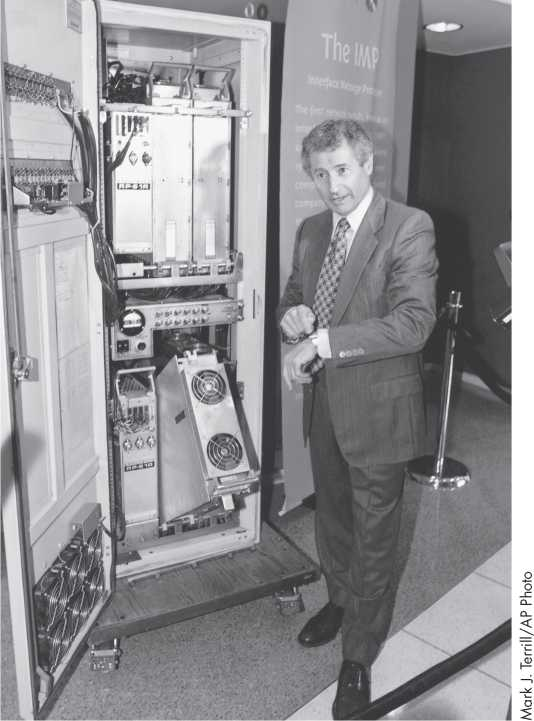Figure 1.26 ♦ An early packet switch
network based on ARPAnet technology; Cyclades, a French packet-switching network pioneered by Louis Pouzin [Think 2012]; Time-sharing networks such as Tymnet and the GE Information Services network, among others, in the late 1960s and early 1970s [Schwartz 1977]; IBM’s SNA (1969-1974), which paralleled the ARPAnet work [Schwartz 1977].
The number of networks was growing. With perfect hindsight we can see that the time was ripe for developing an encompassing architecture for connecting networks together. Pioneering work on interconnecting networks (under the sponsorship of the Defense Advanced Research Projects Agency (DARPA)), in essence creating a network of networks, was done by Vinton Cerf and Robert Kahn [Cerf 1974]; the term internetting was coined to describe this work.
These architectural principles were embodied in TCP. The early versions of TCP, however, were quite different from today’s TCP. The early versions of TCP combined a reliable in-sequence delivery of data via end-system retransmission (still part of today’s TCP) with forwarding functions (which today are performed by IP). Early experimentation with TCP, combined with the recognition of the importance of an unreliable, non-flow-controlled, end-to-end transport service for applications such as packetized voice, led to the separation of IP out of TCP and the development of the UDP protocol. The three key Internet protocols that we see today—TCP, UDP, and IP—were conceptually in place by the end of the 1970s.
In addition to the DARPA Internet-related research, many other important networking activities were underway. In Hawaii, Norman Abramson was developing ALOHAnet, a packet-based radio network that allowed multiple remote sites on the Hawaiian Islands to communicate with each other. The ALOHA protocol [Abramson 1970] was the first multiple-access protocol, allowing geographically distributed users to share a single broadcast communication medium (a radio frequency). Metcalfe and Boggs built on Abramson’s multiple-access protocol work when they developed the Ethernet protocol [Metcalfe 1976] for wire-based shared broadcast networks. Interestingly, Metcalfe and Boggs’ Ethernet protocol was motivated by the need to connect multiple PCs, printers, and shared disks [Perkins 1994]. Twenty-five years ago, well before the PC revolution and the explosion of networks, Metcalfe and Boggs were laying the foundation for today’s PC LANs.
1.7.3 A Proliferation of Networks: 1980-1990
By the end of the 1970s, approximately two hundred hosts were connected to the ARPAnet. By the end of the 1980s the number of hosts connected to the public Internet, a confederation of networks looking much like today’s Internet, would reach a hundred thousand. The 1980s would be a time of tremendous growth.
Much of that growth resulted from several distinct efforts to create computer networks linking universities together. BITNET provided e-mail and file transfers among several universities in the Northeast. CSNET (computer science network) was formed to link university researchers who did not have access to ARPAnet. In 1986, NSFNET was created to provide access to NSF-sponsored supercomputing centers. Starting with an initial backbone speed of 56 kbps, NSFNET’s backbone would be running at 1.5 Mbps by the end of the decade and would serve as a primary backbone linking regional networks.
In the ARPAnet community, many of the final pieces of today’s Internet architecture were falling into place. January 1, 1983 saw the official deployment of TCP/IP as the new standard host protocol for ARPAnet (replacing the NCP protocol). The transition [RFC 801] from NCP to TCP/IP was a flag day event—all hosts were required to transfer over to TCP/IP as of that day. In the late 1980s, important extensions were made to TCP to implement host-based congestion control [Jacobson 1988]. The DNS, used to map between a human-readable Internet name (for example, gaia.cs.umass.edu) and its 32-bit IP address, was also developed [RFC 1034].
Paralleling this development of the ARPAnet (which was for the most part a US effort), in the early 1980s the French launched the Minitel project, an ambitious plan to bring data networking into everyone’s home. Sponsored by the French government, the Minitel system consisted of a public packet-switched network (based on the X.25 protocol suite), Minitel servers, and inexpensive terminals with built-in low-speed modems. The Minitel became a huge success in 1984 when the French government gave away a free Minitel terminal to each French household that wanted one. Minitel sites included free sites—such as a telephone directory site—as well as private sites, which collected a usage-based fee from each user. At its peak in the mid 1990s, it offered more than 20,000 services, ranging from home banking to specialized research databases. The Minitel was in a large proportion of French homes 10 years before most Americans had ever heard of the Internet.
1.7.4 The Internet Explosion: The 1990s
The 1990s were ushered in with a number of events that symbolized the continued evolution and the soon-to-arrive commercialization of the Internet. ARPAnet, the progenitor of the Internet, ceased to exist. In 1991, NSFNET lifted its restrictions on the use of NSFNET for commercial purposes. NSFNET itself would be decommissioned in 1995, with Internet backbone traffic being carried by commercial Internet Service Providers.
The main event of the 1990s was to be the emergence of the World Wide Web application, which brought the Internet into the homes and businesses of millions of people worldwide. The Web served as a platform for enabling and deploying hundreds of new applications that we take for granted today, including search (e.g., Google and Bing) Internet commerce (e.g., Amazon and eBay) and social networks (e.g., Facebook).
The Web was invented at CERN by Tim Berners-Lee between 1989 and 1991 [Berners-Lee 1989], based on ideas originating in earlier work on hypertext from the 1940s by Vannevar Bush [Bush 1945] and since the 1960s by Ted Nelson [Xanadu 2012]. Berners-Lee and his associates developed initial versions of HTML, HTTP, a Web server, and a browser—the four key components of the Web. Around the end of 1993 there were about two hundred Web servers in operation, this collection of servers being just a harbinger of what was about to come. At about this time several researchers were developing Web browsers with GUI interfaces, including Marc Andreessen, who along with Jim Clark, formed Mosaic Communications, which later became Netscape Communications Corporation [Cusumano 1998; Quittner 1998]. By 1995, university students were using Netscape browsers to surf the Web on a daily basis. At about this time companies—big and small—began to operate Web servers and transact commerce over the Web. In 1996, Microsoft started to make browsers, which started the browser war between Netscape and Microsoft, which Microsoft won a few years later [Cusumano 1998].
The second half of the 1990s was a period of tremendous growth and innovation for the Internet, with major corporations and thousands of startups creating Internet products and services. By the end of the millennium the Internet was supporting hundreds of popular applications, including four killer applications:
• E-mail, including attachments and Web-accessible e-mail
• The Web, including Web browsing and Internet commerce
• Instant messaging, with contact lists
• Peer-to-peer file sharing of MP3s, pioneered by Napster
Interestingly, the first two killer applications came from the research community, whereas the last two were created by a few young entrepreneurs.
The period from 1995 to 2001 was a roller-coaster ride for the Internet in the financial markets. Before they were even profitable, hundreds of Internet startups made initial public offerings and started to be traded in a stock market. Many companies were valued in the billions of dollars without having any significant revenue streams. The Internet stocks collapsed in 2000-2001, and many startups shut down. Nevertheless, a number of companies emerged as big winners in the Internet space, including Microsoft, Cisco, Yahoo, eBay, Google, and Amazon.
1.7.5 The New Millennium
In the first two decades of the 21st century, perhaps no other technology has transformed society more than the Internet along with Internet-connected smartphones. And innovation in computer networking continues at a rapid pace. Advances are being made on all fronts, including deployments of faster routers and higher transmission speeds in both access networks and in network backbones. But the following developments merit special attention:
• Since the beginning of the millennium, we have been seeing aggressive deployment of broadband Internet access to homes—not only cable modems and DSL but also fiber to the home, and now 5G fixed wireless as discussed in Section 1.2. This high-speed Internet access has set the stage for a wealth of video applications, including the distribution of user-generated video (for example, YouTube), on-demand streaming of movies and television shows (e.g., Netflix), and multiperson video conference (e.g., Skype, Facetime, and Google Hangouts).
• The increasing ubiquity of high-speed wireless Internet access is not only making it possible to remain constantly connected while on the move, but also enabling new location-specific applications such as Yelp, Tinder, and Waz. The number of wireless devices connecting to the Internet surpassed the number of wired devices in 2011. This high-speed wireless access has set the stage for the rapid emergence of hand-held computers (iPhones, Androids, iPads, and so on), which enjoy constant and untethered access to the Internet.
• Online social networks—such as Facebook, Instagram, Twitter, and WeChat (hugely popular in China)—have created massive people networks on top of the Internet. Many of these social networks are extensively used for messaging as well as photo sharing. Many Internet users today “live” primarily within one or more social networks. Through their APIs, the online social networks create platforms for new networked applications, including mobile payments and distributed games.
• As discussed in Section 1.3.3, online service providers, such as Google and Microsoft, have deployed their own extensive private networks, which not only connect together their globally distributed data centers, but are used to bypass the Internet as much as possible by peering directly with lower-tier ISPs. As a result, Google provides search results and e-mail access almost instantaneously, as if their data centers were running within one’s own computer.
• Many Internet commerce companies are now running their applications in the “cloud”—such as in Amazon’s EC2, in Microsoft’s Azure, or in the Alibaba Cloud. Many companies and universities have also migrated their Internet applications (e.g., e-mail and Web hosting) to the cloud. Cloud companies not only provide applications scalable computing and storage environments, but also provide the applications implicit access to their high-performance private networks.
1.8 Summary
In this chapter, we’ve covered a tremendous amount of material! We’ve looked at the various pieces of hardware and software that make up the Internet in particular and computer networks in general. We started at the edge of the network, looking at end systems and applications, and at the transport service provided to the applications running on the end systems. We also looked at the link-layer technologies and physical media typically found in the access network. We then dove deeper inside the network, into the network core, identifying packet switching and circuit switching as the two basic approaches for transporting data through a telecommunication network, and we examined the strengths and weaknesses of each approach. We also examined the structure of the global Internet, learning that the Internet is a network of networks. We saw that the Internet’s hierarchical structure, consisting of higher- and lower-tier ISPs, has allowed it to scale to include thousands of networks.
In the second part of this introductory chapter, we examined several topics central to the field of computer networking. We first examined the causes of delay, throughput and packet loss in a packet-switched network. We developed simple quantitative models for transmission, propagation, and queuing delays as well as for throughput; we’ll make extensive use of these delay models in the homework problems throughout this book. Next we examined protocol layering and service models, key architectural principles in networking that we will also refer back to throughout this book. We also surveyed some of the more prevalent security attacks in the Internet day. We finished our introduction to networking with a brief history of computer networking. The first chapter in itself constitutes a mini-course in computer networking.
So, we have indeed covered a tremendous amount of ground in this first chapter! If you’re a bit overwhelmed, don’t worry. In the following chapters, we’ll revisit all of these ideas, covering them in much more detail (that’s a promise, not a threat!). At this point, we hope you leave this chapter with a still-developing intuition for the pieces that make up a network, a still-developing command of the vocabulary of networking (don’t be shy about referring back to this chapter), and an ever-growing desire to learn more about networking. That’s the task ahead of us for the rest of this book.
Road-Mapping This Book
Before starting any trip, you should always glance at a road map in order to become familiar with the major roads and junctures that lie ahead. For the trip we are about to embark on, the ultimate destination is a deep understanding of the how, what, and why of computer networks. Our road map is the sequence of chapters of this book:
1. Computer Networks and the Internet
2. Application Layer
3. Transport Layer
4. Network Layer: Data Plane
5. Network Layer: Control Plane
6. The Link Layer and LANs
7. Wireless and Mobile Networks
8. Security in Computer Networks
Chapters 2 through 6 are the five core chapters of this book. You should notice that these chapters are organized around the top four layers of the five-layer Internet protocol. Further note that our journey will begin at the top of the Internet protocol stack, namely, the application layer, and will work its way downward. The rationale behind this top-down journey is that once we understand the applications, we can understand the network services needed to support these applications. We can then, in turn, examine the various ways in which such services might be implemented by a network architecture. Covering applications early thus provides motivation for the remainder of the text.
The second half of the book—Chapters 7 and 8—zooms in on two enormously important (and somewhat independent) topics in modern computer networking. In Chapter 7, we examine wireless and mobile networks, including wireless LANs (including WiFi and Bluetooth), Cellular networks (including 4G and 5G), and mobility. Chapter 8, which addresses security in computer networks, first looks at the underpinnings of encryption and network security, and then we examine how the basic theory is being applied in a broad range of Internet contexts.
Homework Problems and Questions
Chapter 1 Review Questions
SECTION 1.1
R1. What is the difference between a host and an end system? List several different types of end systems. Is a Web server an end system?
R2. Describe the protocol that might be used by two people having a telephonic conversation to initiate and end the conversation, i.e., the way that they talk.
R3. Why are standards important for protocols?
SECTION 1.2
R4. List four access technologies. Classify each one as home access, enterprise access, or wide-area wireless access.
R5. Is HFC transmission rate dedicated or shared among users? Are collisions possible in a downstream HFC channel? Why or why not?
R6. What access network technologies would be most suitable for providing internet access in rural areas?
R7. Dial-up modems and DSL both use the telephone line (a twisted-pair copper cable) as their transmission medium. Why then is DSL much faster than dialup access?
R8. What are some of the physical media that Ethernet can run over?
R9. HFC, DSL, and FTTH are all used for residential access. For each of these access technologies, provide a range of transmission rates and comment on whether the transmission rate is shared or dedicated.
R10. Describe the different wireless technologies you use during the day and their characteristics. If you have a choice between multiple technologies, why do you prefer one over another?
SECTION 1.3
R11. Suppose there is exactly one packet switch between a sending host and a receiving host. The transmission rates between the sending host and the switch and between the switch and the receiving host are R1 and R2, respectively. Assuming that the switch uses store-and-forward packet switching, what is the total end-to-end delay to send a packet of length L? (Ignore queuing, propagation delay, and processing delay.)
R12. What advantage does a circuit-switched network have over a packet-switched network? What advantages does TDM have over FDM in a circuit-switched network?
R13. Suppose users share a 2 Mbps link. Also suppose each user transmits continuously at 1 Mbps when transmitting, but each user transmits only 20 percent of the time. (See the discussion of statistical multiplexing in Section 1.3.)
a. When circuit switching is used, how many users can be supported?
b. For the remainder of this problem, suppose packet switching is used. Why will there be essentially no queuing delay before the link if two or fewer users transmit at the same time? Why will there be a queuing delay if three users transmit at the same time?
c. Find the probability that a given user is transmitting.
d. Suppose now there are three users. Find the probability that at any given time, all three users are transmitting simultaneously. Find the fraction of time during which the queue grows.
R14. Why will two ISPs at the same level of the hierarchy often peer with each other? How does an IXP earn money?
R15. Why is a content provider considered a different Internet entity today? How does a content provider connect to other ISPs? Why?
SECTION 1.4
R16. Consider sending a packet from a source host to a destination host over a fixed route. List the delay components in the end-to-end delay. Which of these delays are constant and which are variable?
R17. Visit the Transmission Versus Propagation Delay interactive animation at the Companion Website. Among the rates, propagation delay, and packet sizes available, find a combination for which the sender finishes transmitting before the first bit of the packet reaches the receiver. Find another combination for which the first bit of the packet reaches the receiver before the sender finishes transmitting.
R18. A user can directly connect to a server through either long-range wireless or a twisted-pair cable for transmitting a 1500-bytes file. The transmission rates of the wireless and wired media are 2 and 100 Mbps, respectively. Assume that the propagation speed in air is 3 X 108 m/s, while the speed in the twisted pair is 2 X 108 m/s. If the user is located 1 km away from the server, what is the nodal delay when using each of the two technologies?
R19. Suppose Host A wants to send a large file to Host B. The path from Host A to Host B has three links, of rates R1 = 500 kbps, R2 = 2 Mbps, and R3 = 1 Mbps.
a. Assuming no other traffic in the network, what is the throughput for the file transfer?
b. Suppose the file is 4 million bytes. Dividing the file size by the throughput, roughly how long will it take to transfer the file to Host B?
c. Repeat (a) and (b), but now with R2 reduced to 100 kbps.
R20. Suppose end system A wants to send a large file to end system B. At a very high level, describe how end system A creates packets from the file. When one of these packets arrives to a router, what information in the packet does the router use to determine the link onto which the packet is forwarded? Why is packet switching in the Internet analogous to driving from one city to another and asking directions along the way?
R21. Visit the Queuing and Loss interactive animation at the Companion Website. What is the maximum emission rate and the minimum transmission rate? With those rates, what is the traffic intensity? Run the interactive animation with these rates and determine how long it takes for packet loss to occur. Then repeat the experiment a second time and determine again how long it takes for packet loss to occur. Are the values different? Why or why not?
SECTION 1.5
R22. If two end-systems are connected through multiple routers and the data-link level between them ensures reliable data delivery, is a transport protocol offering reliable data delivery between these two end-systems necessary? Why?
R23. What are the five layers in the Internet protocol stack? What are the principal responsibilities of each of these layers?
R24. What do encapsulation and de-encapsulation mean? Why are they needed in a layered protocol stack?
R25. Which layers in the Internet protocol stack does a router process? Which layers does a link-layer switch process? Which layers does a host process?
SECTION 1.6
R26. What is self-replicating malware?
R27. Describe how a botnet can be created and how it can be used for a DDoS attack.
R28. Suppose Alice and Bob are sending packets to each other over a computer network. Suppose Trudy positions herself in the network so that she can capture all the packets sent by Alice and send whatever she wants to Bob; she can also capture all the packets sent by Bob and send whatever she wants to Alice. List some of the malicious things Trudy can do from this position.
Problems
P1. Design and describe an application-level protocol to be used between an automatic teller machine and a bank’s centralized computer. Your protocol should allow a user’s card and password to be verified, the account balance (which is maintained at the centralized computer) to be queried, and an account withdrawal to be made (that is, money disbursed to the user). Your protocol entities should be able to handle the all-too-common case in which there is not enough money in the account to cover the withdrawal. Specify your protocol by listing the messages exchanged and the action taken by the automatic teller machine or the bank’s centralized computer on transmission and receipt of messages. Sketch the operation of your protocol for the case of a simple withdrawal with no errors, using a diagram similar to that in Figure 1.2. Explicitly state the assumptions made by your protocol about the underlying end-to-end transport service.
P2. Equation 1.1 gives a formula for the end-to-end delay of sending one packet of length L over N links of transmission rate R. Generalize this formula for sending P such packets back-to-back over the N links.
P3. Consider an application that transmits data at a steady rate (for example, the sender generates an N-bit unit of data every k time units, where k is small and fixed). Also, when such an application starts, it will continue running for a relatively long period of time. Answer the following questions, briefly justifying your answer:
a. Would a packet-switched network or a circuit-switched network be more appropriate for this application? Why?
b. Suppose that a packet-switched network is used and the only traffic in this network comes from such applications as described above. Furthermore, assume that the sum of the application data rates is less than the capacities of each and every link. Is some form of congestion control needed? Why?
P4. Consider the circuit-switched network in Figure 1.13. Recall that there are four circuits on each link. Label the four switches A, B, C, and D, going in the clockwise direction.
a. What is the maximum number of simultaneous connections that can be in progress at any one time in this network?
b. Suppose that all connections are between switches A and C. What is the maximum number of simultaneous connections that can be in progress?
c. Suppose we want to make four connections between switches A and C, and another four connections between switches B and D. Can we route these calls through the four links to accommodate all eight connections?
P5. Review the car-caravan analogy in Section 1.4. Assume a propagation speed of 100 km/hour.
a. Suppose the caravan travels 175 km, beginning in front of one tollbooth, passing through a second tollbooth, and finishing just after a third tollbooth. What is the end-to-end delay?
b. Repeat (a), now assuming that there are eight cars in the caravan instead of ten.
o
VideoNote
Exploring propagation delay and transmission delay
P6. This elementary problem begins to explore propagation delay and transmission delay, two central concepts in data networking. Consider two hosts, A and B, connected by a single link of rate R bps. Suppose that the two hosts are separated by m meters, and suppose the propagation speed along the link is s meters/sec. Host A is to send a packet of size L bits to Host B.
a. Express the propagation delay, dprop, in terms of m and s.
b. Determine the transmission time of the packet, dtrans, in terms of L and R.
c. Ignoring processing and queuing delays, obtain an expression for the end-to-end delay.
d. Suppose Host A begins to transmit the packet at time t = 0. At time t = dtrans, where is the last bit of the packet?
e. Suppose dprop is greater than dtrans. At time t = dtrans, where is the first bit of the packet?
f. Suppose dprop is less than dtrans. At time t = dtrans, where is the first bit of the packet?
g. Suppose s = 2.5 • 108, L = 1500 bytes, and R = 10 Mbps. Find the distance m so that dprop equals dtrans.
P7. In this problem, we consider sending real-time voice from Host A to Host B over a packet-switched network (VoIP). Host A converts analog voice to a digital 64 kbps bit stream on the fly. Host A then groups the bits into 56-byte packets. There is one link between Hosts A and B; its transmission rate is 10 Mbps and its propagation delay is 10 msec. As soon as Host A gathers a packet, it sends it to Host B. As soon as Host B receives an entire packet, it converts the packet’s bits to an analog signal. How much time elapses from the time a bit is created (from the original analog signal at Host A) until the bit is decoded (as part of the analog signal at Host B)?
P8. Suppose users share a 10 Mbps link. Also suppose each user requires 200 kbps when transmitting, but each user transmits only 10 percent of the time. (See the discussion of packet switching versus circuit switching in Section 1.3.)
a. When circuit switching is used, how many users can be supported?
b. For the remainder of this problem, suppose packet switching is used. Find the probability that a given user is transmitting.
c. Suppose there are 120 users. Find the probability that at any given time, exactly n users are transmitting simultaneously. (Hint: Use the binomial distribution.)
d. Find the probability that there are 51 or more users transmitting simultaneously.
P9. Consider the discussion in Section 1.3 of packet switching versus circuit switching in which an example is provided with a 1 Mbps link. Users are generating data at a rate of 100 kbps when busy, but are busy generating data only with probability p = 0.1. Suppose that the 1 Mbps link is replaced by a 1 Gbps link.
a. What is N, the maximum number of users that can be supported simultaneously under circuit switching?
b. Now consider packet switching and a user population of M users. Give a formula (in terms of p, M, N) for the probability that more than N users are sending data.
P10. Consider the network illustrated in Figure 1.16. Assume the two hosts on the left of the figure start transmitting packets of 1500 bytes at the same time towards Router B. Suppose the link rates between the hosts and Router A is 4-Mbps. One link has a 6-ms propagation delay and the other has a 2-ms propagation delay. Will queuing delay occur at Router A?
P11. Consider the scenario in Problem P10 again, but now assume the links between the hosts and Router A have different rates R1 and R2 byte/s in addition to different propagation delays d1 and d2. Assume the packet lengths for the two hosts are of L bytes. For what values of the propagation delay will no queuing delay occur at Router A?
P12. Consider a client and a server connected through one router. Assume the router can start transmitting an incoming packet after receiving its first h bytes instead of the whole packet. Suppose that the link rates are R byte/s and that the client transmits one packet with a size of L bytes to the server. What is the end-to-end delay? Assume the propagation, processing, and queuing delays are negligible. Generalize the previous result to a scenario where the client and the server are interconnected by N routers.
P13. (a) Suppose N packets arrive simultaneously to a link at which no packets are currently being transmitted or queued. Each packet is of length L and the link has transmission rate R. What is the average queuing delay for the N packets?
(b) Now suppose that N such packets arrive to the link every LN/R seconds. What is the average queuing delay of a packet?
P14. Consider the queuing delay in a router buffer. Let I denote traffic intensity; that is, I = La/R. Suppose that the queuing delay takes the form IL/R (1 — I) for I 6 1.
a. Provide a formula for the total delay, that is, the queuing delay plus the transmission delay.
b. Plot the total delay as a function of L/R.
P15. Let a denote the rate of packets arriving at a link in packets/sec, and let p denote the link’s transmission rate in packets/sec. Based on the formula for the total delay (i.e., the queuing delay plus the transmission delay) derived in the previous problem, derive a formula for the total delay in terms of a and p.
P16. Consider a router buffer preceding an outbound link. In this problem, you will use Little’s formula, a famous formula from queuing theory. Let N denote the average number of packets in the buffer plus the packet being transmitted. Let a denote the rate of packets arriving at the link. Let d denote the average total delay (i.e., the queuing delay plus the transmission delay) experienced by a packet. Little’s formula is N = a • d. Suppose that on average, the buffer contains 100 packets, and the average packet queuing delay is 20 msec. The link’s transmission rate is 100 packets/sec. Using Little’s formula, what is the average packet arrival rate, assuming there is no packet loss?
P17. Consider the network illustrated in Figure 1.12. Would Equation 1.2 hold in such a scenario? If so, under which conditions? If not, why? (Assume N is the number of links between a source and a destination in the figure.)
VideoNote
Using Traceroute to discover network paths and measure network delay
P18. Perform a Traceroute between source and destination on the same continent at three different hours of the day.
a. Find the average and standard deviation of the round-trip delays at each of the three hours.
b. Find the number of routers in the path at each of the three hours. Did the paths change during any of the hours?
c. Try to identify the number of ISP networks that the Traceroute packets pass through from source to destination. Routers with similar names and/ or similar IP addresses should be considered as part of the same ISP. In your experiments, do the largest delays occur at the peering interfaces between adjacent ISPs?
d. Repeat the above for a source and destination on different continents. Compare the intra-continent and inter-continent results.
P19. Metcalfe’s law states the value of a computer network is proportional to the square of the number of connected users of the system. Let n denote the number of users in a computer network. Assuming each user sends one message to each of the other users, how many messages will be sent? Does your answer support Metcalfe’s law?
P20. Consider the throughput example corresponding to Figure 1.20(b). Now suppose that there are M client-server pairs rather than 10. Denote Rs, Rc, and R for the rates of the server links, client links, and network link. Assume all other links have abundant capacity and that there is no other traffic in the network besides the traffic generated by the M client-server pairs. Derive a general expression for throughput in terms of Rs, Rc, R, and M.
P21. Assume a client and a server can connect through either network (a) or (b) in Figure 1.19. Assume that R, = (Rc + Rs) / i, for i = 1, 2, ..., N. In what case will network (a) have a higher throughput than network (b)?
P22. Consider Figure 1.19(b). Suppose that each link between the server and the client has a packet loss probability p, and the packet loss probabilities for these links are independent. What is the probability that a packet (sent by the server) is successfully received by the receiver? If a packet is lost in the path from the server to the client, then the server will re-transmit the packet. On average, how many times will the server re-transmit the packet in order for the client to successfully receive the packet?
P23. Consider Figure 1.19(a). Assume that we know the bottleneck link along the path from the server to the client is the first link with rate Rs bits/sec. Suppose we send a pair of packets back to back from the server to the client, and there is no other traffic on this path. Assume each packet of size L bits, and both links have the same propagation delay dprop.
a. What is the packet inter-arrival time at the destination? That is, how much time elapses from when the last bit of the first packet arrives until the last bit of the second packet arrives?
b. Now assume that the second link is the bottleneck link (i.e., Rc < Rs). Is it possible that the second packet queues at the input queue of the second link? Explain. Now suppose that the server sends the second packet T seconds after sending the first packet. How large must T be to ensure no queuing before the second link? Explain.
P24. Consider a user who needs to transmit 1.5 gigabytes of data to a server. The user lives in a village where only dial-up access is available. As an alternative, a bus collects data from users in rural areas and transfer them to the Internet through a 1 Gbps link once it gets back to the city. The bus visits the village once a day and stops in front of the user’s house just long enough to receive the data. The bus has a 100 Mbps WiFi connection. Suppose the average speed of the bus is 60 km/h and that the distance between the village and the city is 150 km. What is the fastest way the user can transfer the data to the server?
P25. Suppose two hosts, A and B, are separated by 20,000 kilometers and are connected by a direct link of R = 5 Mbps. Suppose the propagation speed over the link is 2.5 • 108 meters/sec.
a. Calculate the bandwidth-delay product, R • dprop.
b. Consider sending a file of 800,000 bits from Host A to Host B. Suppose the file is sent continuously as one large message. What is the maximum number of bits that will be in the link at any given time?
c. Provide an interpretation of the bandwidth-delay product.
d. What is the width (in meters) of a bit in the link? Is it longer than a football field?
e. Derive a general expression for the width of a bit in terms of the propagation speed s, the transmission rate R, and the length of the link m.
P26. Consider problem P25 but now with a link of R = 1 Gbps.
a. Calculate the bandwidth-delay product, R • dprop.
b. Consider sending a file of 800,000 bits from Host A to Host B. Suppose the file is sent continuously as one big message. What is the maximum number of bits that will be in the link at any given time?
c. What is the width (in meters) of a bit in the link?
P27. Consider the scenario illustrated in Figure 1.19(a). Assume Rs is 20 Mbps, Rc is 10 Mbps, and the server is continuously sending traffic to the client. Also assume the router between the server and the client can buffer at most four messages. After how many messages sent by the server will packet loss starts occurring at the router?
P28. Generalize the result obtained in Problem P27 for the case where the router can buffer m messages.
P29. Suppose there is a 10 Mbps microwave link between a geostationary satellite and its base station on Earth. Every minute the satellite takes a digital photo and sends it to the base station. Assume a propagation speed of 2.4 • 108 meters/sec.
a. What is the propagation delay of the link?
b. What is the bandwidth-delay product, R • dprop?
c. Let x denote the size of the photo. What is the minimum value of x for the microwave link to be continuously transmitting?
P30. Consider the airline travel analogy in our discussion of layering in Section 1.5, and the addition of headers to protocol data units as they flow down the protocol stack. Is there an equivalent notion of header information that is added to passengers and baggage as they move down the airline protocol stack?
P31. In modern packet-switched networks, including the Internet, the source host segments long, application-layer messages (for example, an image or a music file) into smaller packets and sends the packets into the network. The receiver then reassembles the packets back into the original message. We refer to this process as message segmentation. Figure 1.27 illustrates the end-to-end transport of a message with and without message segmentation. Consider a message that is 106 bits long that is to be sent from source to destination in Figure 1.27. Suppose each link in the figure is 5 Mbps. Ignore propagation, queuing, and processing delays.
a. Consider sending the message from source to destination without message segmentation. How long does it take to move the message from the source host to the first packet switch? Keeping in mind that each switch uses store-and-forward packet switching, what is the total time to move the message from source host to destination host?
b. Now suppose that the message is segmented into 100 packets, with each packet being 10,000 bits long. How long does it take to move the first packet from source host to the first switch? When the first packet is being sent from the first switch to the second switch, the second packet is being sent from the source host to the first switch. At what time will the second packet be fully received at the first switch?
c. How long does it take to move the file from source host to destination host when message segmentation is used? Compare this result with your answer in part (a) and comment.
a. Source
Destination
Packet switch Packet switch
Packet

Destination
b. Source Packet switch Packet switch
Figure 1.27 ♦ End-to-end message transport: (a) without message segmentation; (b) with message segmentation
d. In addition to reducing delay, what are reasons to use message segmentation?
e. Discuss the drawbacks of message segmentation.
P32. Consider Problem P31 and assume that the propagation delay is 250 ms. Recalculate the total time needed to transfer the source data with and without segmentation. Is segmentation more beneficial or less if there is propagation delay?
P33. Consider sending a large file of F bits from Host A to Host B. There are three links (and two switches) between A and B, and the links are uncongested (that is, no queuing delays). Host A segments the file into segments of S bits each and adds 80 bits of header to each segment, forming packets of L = 80 + S bits. Each link has a transmission rate of R bps. Find the value of S that minimizes the delay of moving the file from Host A to Host B. Disregard propagation delay.
P34. Early versions of TCP combined functions for both forwarding and reliable delivery. How are these TCP variants located in the ISO/OSI protocol stack? Why were forwarding functions later separated from TCP? What were the consequences?
Wireshark Lab
“Tell me and I forget. Show me and I remember. Involve me and I understand.” Chinese proverb
One’s understanding of network protocols can often be greatly deepened by seeing them in action and by playing around with them—observing the sequence of messages exchanged between two protocol entities, delving into the details of protocol operation, causing protocols to perform certain actions, and observing these actions and their consequences. This can be done in simulated scenarios or in a real network environment such as the Internet. The interactive animations at the textbook Web site take the first approach. In the Wireshark labs, we’ll take the latter approach. You’ll run network applications in various scenarios using a computer on your desk, at home, or in a lab. You’ll observe the network protocols in your computer, interacting and exchanging messages with protocol entities executing elsewhere in the Internet. Thus, you and your computer will be an integral part of these live labs. You’ll observe—and you’ll learn—by doing.
The basic tool for observing the messages exchanged between executing protocol entities is called a packet sniffer. As the name suggests, a packet sniffer passively copies (sniffs) messages being sent from and received by your computer; it also displays the contents of the various protocol fields of these captured messages. A screenshot of the Wireshark packet sniffer is shown in Figure 1.28. Wireshark is a
Command
menus
Listing of captured packets
Details of selected packet header
Packet contents in hexadecimal and ASCII
Figure 1.28 ♦ A Wireshark screenshot (Wireshark screenshot reprinted by permission of the Wireshark Foundation.)
free packet sniffer that runs on Windows, Linux/Unix, and Mac computers. Throughout the textbook, you will find Wireshark labs that allow you to explore a number of the protocols studied in the chapter. In this first Wireshark lab, you’ll obtain and install a copy of Wireshark, access a Web site, and capture and examine the protocol messages being exchanged between your Web browser and the Web server.
You can find full details about this first Wireshark lab (including instructions about how to obtain and install Wireshark) at the Web site www.pearsonglobaleditions .com.
AN INTERVIEW WITH...
Leonard Kleinrock
Courtesy of Leonard Kleinrock
Leonard Kleinrock is a professor of computer science at the University of California, Los Angeles. In 1969, his computer at UCLA became the first node of the Internet. His creation of the mathematical theory of packet-switching principles in 1961 became the technology behind the Internet. He received his B.E.E. from the City College of New York (CCNY) and his masters and PhD in electrical engineering from MIT.
What made you decide to specialize in networking/Internet technology?
As a PhD student at MIT in 1959, I looked around and found that most of my classmates were doing research in the area of information theory and coding theory that had been established by the great researcher, Claude Shannon. I judged that he had solved most of the important problems already. The research problems that were left were hard and seemed to me to be of lesser consequence. So I decided to launch out in a new area that no one else had yet conceived of. Happily, at MIT I was surrounded by many computers, and it was clear to me that, sooner or later, these machines would need to communicate with each other. At the time, there was no effective way for them to do so and that the solution to this important problem would have impact. I had an approach to this problem and so, for my PhD research, I decided to create a mathematical theory to model, evaluate, design and optimize efficient and reliable data networks.
What was your first job in the computer industry? What did it entail?
I went to the evening session at CCNY from 1951 to 1957 for my bachelor’s degree in electrical engineering. During the day, I worked first as a technician and then as an electrical engineer at a small, industrial electronics firm called Photobell. While there, I introduced digital technology to their product line. Essentially, we were using photoelectric devices to detect the presence of certain items (boxes, people, etc.) and the use of a circuit known then as a bistable multivibrator was just what we needed to bring digital processing into this field of detection. These circuits happen to be the building blocks for computers, and have come to be known as flip-flops or switches in today’s vernacular.
What was going through your mind when you sent the first host-to-host message (from UCLA to the Stanford Research Institute)?
Frankly, we had no idea of the importance of that event. We had not prepared a special message of historic significance, as did so many inventors of the past (Samuel Morse with “What hath God wrought.” or Alexander Graham Bell with “Watson, come here! I want you.” or Neal Armstrong with “That’s one small step for a man, one giant leap for mankind.”) Those guys were smart! They understood media and public relations. All we wanted to do was to demonstrate our ability to remotely login to the SRI computer. So we typed the “L”, which was correctly received, we typed the “o” which was correctly received, and then we typed the “g” which caused the SRI host computer to crash! So, it turned out that our message was the shortest and perhaps the most prophetic message ever, namely “Lo!” as in “Lo and behold!”
Earlier that year, I was quoted in a UCLA press release saying that once the network was up and running, it would be possible to gain access to computer utilities from our homes and offices as easily as we gain access to electricity and telephone connectivity. So my vision at that time was that the Internet would be ubiquitous, always on, always available, anyone with any device could connect from any location, and it would be invisible. However, I never anticipated that my 99-year-old mother would use the Internet at the same time that my 5 year-old granddaughter was—and indeed she did!
What is your vision for the future of networking?
The easy part of the vision is to predict the infrastructure itself. I anticipate that we will see considerable deployment of wireless and mobile devices in smart spaces to produce what I like to refer to as the Invisible Internet. This step will enable us to move out from the netherworld of cyberspace to the physical world of smart spaces. Our environments (desks, walls, vehicles, watches, belts, fingernails, bodies and so on) will come alive with technology, through actuators, sensors, logic, processing, storage, cameras, microphones, speakers, displays, and communication. This embedded technology will allow our environment to provide the IP services wherever and whenever we want. When I walk into a room, the room will know I entered. I will be able to communicate with my environment naturally, as in spoken English, haptics, gestures, and eventually through brain-Internet interfaces; my requests will generate replies that present Web pages to me from wall displays, through my eyeglasses, as speech, holograms, and so forth. Looking a bit further out, I see a networking future that includes the following additional key components. I see customized intelligent software agents deployed across the network whose function it is to mine data, act on that data, observe trends, and carry out tasks dynamically and adaptively. I see the deployment of blockchain technology that provides irrefutable, immutable distributed ledgers coupled with reputation systems that provide credibility to the contents and functionality. I see considerably more network traffic generated not so much by humans, but by the embedded devices, the intelligent software agents and the distributed ledgers. I see large collections of self-organizing systems controlling this vast, fast network. I see huge amounts of information flashing across this network instantaneously with this information undergoing enormous processing and filtering. The Invisible Internet will essentially be a pervasive global nervous system . I see all these things and more as we move headlong through the twenty-first century.
The harder part of the vision is to predict the applications and services, which have consistently surprised us in dramatic ways (e-mail, search technologies, the World Wide Web, blogs, peer-to-peer networks, social networks, user generated content, sharing of music, photos, and videos, etc.). These applications have “come of the blue”, sudden, unanticipated and explosive. What a wonderful world for the next generation to explore
What people have inspired you professionally?
By far, it was Claude Shannon from MIT, a brilliant researcher who had the ability to relate his mathematical ideas to the physical world in highly intuitive ways. He was a superb member of my PhD thesis committee.
Do you have any advice for students entering the networking/Internet field?
The Internet and all that it enables is a vast new frontier, continuously full of amazing challenges. There is room for great innovation. Don’t be constrained by today’s technology. Reach out and imagine what could be and then make it happen.
Network applications are the raisons d’etre of a computer network—if we couldn’t conceive of any useful applications, there wouldn’t be any need for networking infrastructure and protocols to support them. Since the Internet’s inception, numerous useful and entertaining applications have indeed been created. These applications have been the driving force behind the Internet’s success, motivating people in homes, schools, governments, and businesses to make the Internet an integral part of their daily activities.
Internet applications include the classic text-based applications that became popular in the 1970s and 1980s: text e-mail, remote access to computers, file transfers, and newsgroups. They include the killer application of the mid-1990s, the World Wide Web, encompassing Web surfing, search, and electronic commerce. Since the beginning of new millennium, new and highly compelling applications continue to emerge, including voice over IP and video conferencing such as Skype, Facetime, and Google Hangouts; user generated video such as YouTube and movies on demand such as Netflix; and multiplayer online games such as Second Life and World of Warcraft. During this same period, we have seen the emergence of a new generation of social networking applications—such as Facebook, Instagram, and Twitter—which have created human networks on top of the Internet’s network or routers and communication links. And most recently, along with the arrival of the smartphone and the ubiquity of 4G/5G wireless Internet access, there has been a profusion of location based mobile apps, including popular check-in, dating, and road-traffic forecasting apps (such as Yelp, Tinder, and Waz), mobile payment apps (such as WeChat and Apple Pay) and messaging apps (such as WeChat and WhatsApp). Clearly, there has been no slowing down of new and exciting Internet applications. Perhaps some of the readers of this text will create the next generation of killer Internet applications!
In this chapter, we study the conceptual and implementation aspects of network applications. We begin by defining key application-layer concepts, including network services required by applications, clients and servers, processes, and transport-layer interfaces. We examine several network applications in detail, including the Web, e-mail, DNS, peer-to-peer (P2P) file distribution, and video streaming. We then cover network application development, over both TCP and UDP. In particular, we study the socket interface and walk through some simple client-server applications in Python. We also provide several fun and interesting socket programming assignments at the end of the chapter.
The application layer is a particularly good place to start our study of protocols. It’s familiar ground. We’re acquainted with many of the applications that rely on the protocols we’ll study. It will give us a good feel for what protocols are all about and will introduce us to many of the same issues that we’ll see again when we study transport, network, and link layer protocols.
2.1 Principles of Network Applications
Suppose you have an idea for a new network application. Perhaps this application will be a great service to humanity, or will please your professor, or will bring you great wealth, or will simply be fun to develop. Whatever the motivation may be, let’s now examine how you transform the idea into a real-world network application.
At the core of network application development is writing programs that run on different end systems and communicate with each other over the network. For example, in the Web application there are two distinct programs that communicate with each other: the browser program running in the user’s host (desktop, laptop, tablet, smartphone, and so on); and the Web server program running in the Web server host. As another example, in a Video on Demand application such as Netflix (see Section 2.6), there is a Netflix-provided program running on the user’s smartphone, tablet, or computer; and a Netflix server program running on the Netflix server host. Servers often (but certainly not always) are housed in a data center, as shown in Figure 2.1.
Thus, when developing your new application, you need to write software that will run on multiple end systems. This software could be written, for example, in C, Java, or Python. Importantly, you do not need to write software that runs on network-core devices, such as routers or link-layer switches. Even if you wanted to write application software for these network-core devices, you wouldn’t be able to do so. As we learned in Chapter 1, and as shown earlier in Figure 1.24, network-core devices do not function at the application layer but instead function at lower layers— specifically at the network layer and below. This basic design—namely, confining application software to the end systems—as shown in Figure 2.1, has facilitated the rapid development and deployment of a vast array of network applications.
Application
Transport
Network
Data Link
Physical
Application
Transport
Network
Data Link
Physical
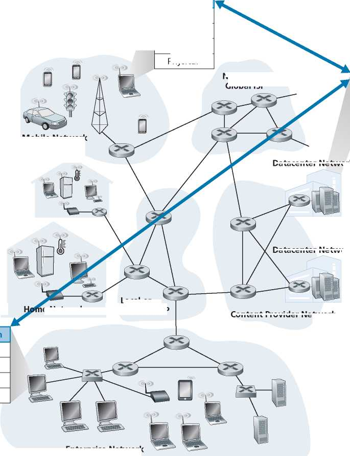Datacenter Network
Datacenter Network
Content Provider Network
Application
Transport
Network
Data Link
Physical
Enterprise Network
Figure 2.1 ♦ Communication for a network application takes place between end systems at the application layer
National or Global ISP
Mobile Network
e Network
Local or Regional ISP
2.1.1 Network Application Architectures
Before diving into software coding, you should have a broad architectural plan for your application. Keep in mind that an application’s architecture is distinctly different from the network architecture (e.g., the five-layer Internet architecture discussed in Chapter 1). From the application developer’s perspective, the network architecture is fixed and provides a specific set of services to applications. The application architecture, on the other hand, is designed by the application developer and dictates how the application is structured over the various end systems. In choosing the application architecture, an application developer will likely draw on one of the two predominant architectural paradigms used in modern network applications: the client-server architecture or the peer-to-peer (P2P) architecture.
In a client-server architecture, there is an always-on host, called the server, which services requests from many other hosts, called clients. A classic example is the Web application for which an always-on Web server services requests from browsers running on client hosts. When a Web server receives a request for an object from a client host, it responds by sending the requested object to the client host. Note that with the client-server architecture, clients do not directly communicate with each other; for example, in the Web application, two browsers do not directly communicate. Another characteristic of the client-server architecture is that the server has a fixed, well-known address, called an IP address (which we’ll discuss soon). Because the server has a fixed, well-known address, and because the server is always on, a client can always contact the server by sending a packet to the server’s IP address. Some of the better-known applications with a client-server architecture include the Web, FTP, Telnet, and e-mail. The client-server architecture is shown in Figure 2.2(a).
Often in a client-server application, a single-server host is incapable of keeping up with all the requests from clients. For example, a popular social-networking site can quickly become overwhelmed if it has only one server handling all of its requests. For this reason, a data center, housing a large number of hosts, is often used to create a powerful virtual server. The most popular Internet services—such as search engines (e.g., Google, Bing, Baidu), Internet commerce (e.g., Amazon, eBay, Alibaba), Web-based e-mail (e.g., Gmail and Yahoo Mail), social media (e.g., Facebook, Instagram, Twitter, and WeChat)—run in one or more data centers. As discussed in Section 1.3.3, Google has 19 data centers distributed around the world, which collectively handle search, YouTube, Gmail, and other services. A data center can have hundreds of thousands of servers, which must be powered and maintained. Additionally, the service providers must pay recurring interconnection and bandwidth costs for sending data from their data centers.
In a P2P architecture, there is minimal (or no) reliance on dedicated servers in data centers. Instead the application exploits direct communication between pairs of intermittently connected hosts, called peers. The peers are not owned by the service provider, but are instead desktops and laptops controlled by users, with most of the peers residing in homes, universities, and offices. Because the peers communicate
a. Client-server architecture
Figure 2.2 ♦ (a) Client-server architecture; (b) P2P architecture
b. Peer-to-peer architecture
without passing through a dedicated server, the architecture is called peer-to-peer. An example of a popular P2P application is the file-sharing application BitTorrent.
One of the most compelling features of P2P architectures is their selfscalability. For example, in a P2P file-sharing application, although each peer generates workload by requesting files, each peer also adds service capacity to the system by distributing files to other peers. P2P architectures are also cost effective, since they normally don’t require significant server infrastructure and server bandwidth (in contrast with clients-server designs with datacenters). However, P2P applications face challenges of security, performance, and reliability due to their highly decentralized structure.
2.1.2 Processes Communicating
Before building your network application, you also need a basic understanding of how the programs, running in multiple end systems, communicate with each other. In the jargon of operating systems, it is not actually programs but processes that communicate. A process can be thought of as a program that is running within an end system. When processes are running on the same end system, they can communicate with each other with interprocess communication, using rules that are governed by the end system’s operating system. But in this book, we are not particularly interested in how processes in the same host communicate, but instead in how processes running on different hosts (with potentially different operating systems) communicate.
Processes on two different end systems communicate with each other by exchanging messages across the computer network. A sending process creates and sends messages into the network; a receiving process receives these messages and possibly responds by sending messages back. Figure 2.1 illustrates that processes communicating with each other reside in the application layer of the five-layer protocol stack.
Client and Server Processes
A network application consists of pairs of processes that send messages to each other over a network. For example, in the Web application a client browser process exchanges messages with a Web server process. In a P2P file-sharing system, a file is transferred from a process in one peer to a process in another peer. For each pair of communicating processes, we typically label one of the two processes as the client and the other process as the server. With the Web, a browser is a client process and a Web server is a server process. With P2P file sharing, the peer that is downloading the file is labeled as the client, and the peer that is uploading the file is labeled as the server.
You may have observed that in some applications, such as in P2P file sharing, a process can be both a client and a server. Indeed, a process in a P2P file-sharing system can both upload and download files. Nevertheless, in the context of any given communication session between a pair of processes, we can still label one process as the client and the other process as the server. We define the client and server processes as follows:
In the context of a communication session between a pair of processes, the process that initiates the communication (that is, initially contacts the other process at the beginning of the session) is labeled as the client. The process that waits to be contacted to begin the session is the server.
In the Web, a browser process initializes contact with a Web server process; hence the browser process is the client and the Web server process is the server. In P2P file sharing, when Peer A asks Peer B to send a specific file, Peer A is the client and Peer B is the server in the context of this specific communication session. When there’s no confusion, we’ll sometimes also use the terminology “client side and server side of an application.” At the end of this chapter, we’ll step through simple code for both the client and server sides of network applications.
The Interface Between the Process and the Computer Network
As noted above, most applications consist of pairs of communicating processes, with the two processes in each pair sending messages to each other. Any message sent from one process to another must go through the underlying network. A process sends messages into, and receives messages from, the network through a software interface called a socket. Let’s consider an analogy to help us understand processes and sockets. A process is analogous to a house and its socket is analogous to its door. When a process wants to send a message to another process on another host, it shoves the message out its door (socket). This sending process assumes that there is a transportation infrastructure on the other side of its door that will transport the message to the door of the destination process. Once the message arrives at the destination host, the message passes through the receiving process’s door (socket), and the receiving process then acts on the message.
Figure 2.3 illustrates socket communication between two processes that communicate over the Internet. (Figure 2.3 assumes that the underlying transport protocol used by the processes is the Internet’s TCP protocol.) As shown in this figure, a socket is the interface between the application layer and the transport layer within a host. It is also referred to as the Application Programming Interface (API) between the application and the network, since the socket is the programming interface with which network applications are built. The application developer has control of everything on the application-layer side of the socket but has little control of the transport-layer side of the socket. The only control that the application developer has on the transportlayer side is (1) the choice of transport protocol and (2) perhaps the ability to fix a few
Host or server
Host or server
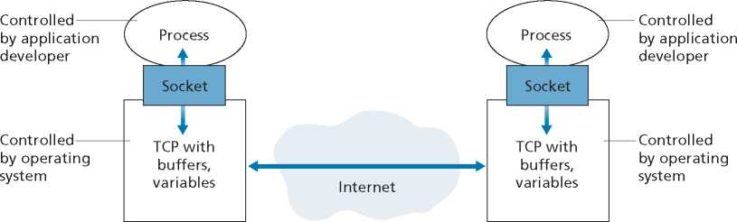Figure 2.3 ♦ Application processes, sockets, and underlying transport protocol
transport-layer parameters such as maximum buffer and maximum segment sizes (to be covered in Chapter 3). Once the application developer chooses a transport protocol (if a choice is available), the application is built using the transport-layer services provided by that protocol. We’ll explore sockets in some detail in Section 2.7.
Addressing Processes
In order to send postal mail to a particular destination, the destination needs to have an address. Similarly, in order for a process running on one host to send packets to a process running on another host, the receiving process needs to have an address. To identify the receiving process, two pieces of information need to be specified: (1) the address of the host and (2) an identifier that specifies the receiving process in the destination host.
In the Internet, the host is identified by its IP address. We’ll discuss IP addresses in great detail in Chapter 4. For now, all we need to know is that an IP address is a 32-bit quantity that we can think of as uniquely identifying the host. In addition to knowing the address of the host to which a message is destined, the sending process must also identify the receiving process (more specifically, the receiving socket) running in the host. This information is needed because in general a host could be running many network applications. A destination port number serves this purpose. Popular applications have been assigned specific port numbers. For example, a Web server is identified by port number 80. A mail server process (using the SMTP protocol) is identified by port number 25. A list of well-known port numbers for all Internet standard protocols can be found at www.iana.org. We’ll examine port numbers in detail in Chapter 3.
2.1.3 Transport Services Available to Applications
Recall that a socket is the interface between the application process and the transport-layer protocol. The application at the sending side pushes messages through the socket. At the other side of the socket, the transport-layer protocol has the responsibility of getting the messages to the socket of the receiving process.
Many networks, including the Internet, provide more than one transport-layer protocol. When you develop an application, you must choose one of the available transport-layer protocols. How do you make this choice? Most likely, you would study the services provided by the available transport-layer protocols, and then pick the protocol with the services that best match your application’s needs. The situation is similar to choosing either train or airplane transport for travel between two cities. You have to choose one or the other, and each transportation mode offers different services. (For example, the train offers downtown pickup and drop-off, whereas the plane offers shorter travel time.)
What are the services that a transport-layer protocol can offer to applications invoking it? We can broadly classify the possible services along four dimensions: reliable data transfer, throughput, timing, and security.
Reliable Data Transfer
As discussed in Chapter 1, packets can get lost within a computer network. For example, a packet can overflow a buffer in a router, or can be discarded by a host or router after having some of its bits corrupted. For many applications—such as electronic mail, file transfer, remote host access, Web document transfers, and financial appli-cations—data loss can have devastating consequences (in the latter case, for either the bank or the customer!). Thus, to support these applications, something has to be done to guarantee that the data sent by one end of the application is delivered correctly and completely to the other end of the application. If a protocol provides such a guaranteed data delivery service, it is said to provide reliable data transfer. One important service that a transport-layer protocol can potentially provide to an application is process-to-process reliable data transfer. When a transport protocol provides this service, the sending process can just pass its data into the socket and know with complete confidence that the data will arrive without errors at the receiving process.
When a transport-layer protocol doesn’t provide reliable data transfer, some of the data sent by the sending process may never arrive at the receiving process. This may be acceptable for loss-tolerant applications, most notably multimedia applications such as conversational audio/video that can tolerate some amount of data loss. In these multimedia applications, lost data might result in a small glitch in the audio/ video—not a crucial impairment.
Throughput
In Chapter 1, we introduced the concept of available throughput, which, in the context of a communication session between two processes along a network path, is the rate at which the sending process can deliver bits to the receiving process. Because other sessions will be sharing the bandwidth along the network path, and because these other sessions will be coming and going, the available throughput can fluctuate with time. These observations lead to another natural service that a transport-layer protocol could provide, namely, guaranteed available throughput at some specified rate. With such a service, the application could request a guaranteed throughput of r bits/sec, and the transport protocol would then ensure that the available throughput is always at least r bits/sec. Such a guaranteed throughput service would appeal to many applications. For example, if an Internet telephony application encodes voice at 32 kbps, it needs to send data into the network and have data delivered to the receiving application at this rate. If the transport protocol cannot provide this throughput, the application would need to encode at a lower rate (and receive enough throughput to sustain this lower coding rate) or may have to give up, since receiving, say, half of the needed throughput is of little or no use to this Internet telephony application. Applications that have throughput requirements are said to be bandwidth-sensitive applications. Many current multimedia applications are bandwidth sensitive, although some multimedia applications may use adaptive coding techniques to encode digitized voice or video at a rate that matches the currently available throughput.
While bandwidth-sensitive applications have specific throughput requirements, elastic applications can make use of as much, or as little, throughput as happens to be available. Electronic mail, file transfer, and Web transfers are all elastic applications. Of course, the more throughput, the better. There’s an adage that says that one cannot be too rich, too thin, or have too much throughput!
Timing
A transport-layer protocol can also provide timing guarantees. As with throughput guarantees, timing guarantees can come in many shapes and forms. An example guarantee might be that every bit that the sender pumps into the socket arrives at the receiver’s socket no more than 100 msec later. Such a service would be appealing to interactive real-time applications, such as Internet telephony, virtual environments, teleconferencing, and multiplayer games, all of which require tight timing constraints on data delivery in order to be effective, see [Gauthier 1999; Ramjee 1994]. Long delays in Internet telephony, for example, tend to result in unnatural pauses in the conversation; in a multiplayer game or virtual interactive environment, a long delay between taking an action and seeing the response from the environment (for example, from another player at the end of an end-to-end connection) makes the application feel less realistic. For non-real-time applications, lower delay is always preferable to higher delay, but no tight constraint is placed on the end-to-end delays.
Security
Finally, a transport protocol can provide an application with one or more security services. For example, in the sending host, a transport protocol can encrypt all data transmitted by the sending process, and in the receiving host, the transport-layer protocol can decrypt the data before delivering the data to the receiving process. Such a service would provide confidentiality between the two processes, even if the data is somehow observed between sending and receiving processes. A transport protocol can also provide other security services in addition to confidentiality, including data integrity and end-point authentication, topics that we’ll cover in detail in Chapter 8.
2.1.4 Transport Services Provided by the Internet
Up until this point, we have been considering transport services that a computer network could provide in general. Let’s now get more specific and examine the type of transport services provided by the Internet. The Internet (and, more generally, TCP/ IP networks) makes two transport protocols available to applications, UDP and TCP. When you (as an application developer) create a new network application for the
|
Application |
Data Loss |
Throughput |
Time-Sensitive |
|
File transfer/download |
No loss |
Elastic |
No |
|
|
No loss |
Elastic |
No |
|
Web documents |
No loss |
Elastic (few kbps) |
No |
|
Internet telephony/ Video conferencing |
Loss-tolerant |
Audio: few kbps—1 Mbps Video: 10 kbps—5 Mbps |
Yes: 100s of msec |
|
Streaming stored audio/video |
Loss-tolerant |
Same as above |
Yes: few seconds |
|
Interactive games |
Loss-tolerant |
Few kbps-10 kbps |
Yes: 100s of msec |
|
Smartphone messaging |
No loss |
Elastic |
Yes and no |
Figure 2.4 ♦ Requirements of selected network applications
Internet, one of the first decisions you have to make is whether to use UDP or TCP. Each of these protocols offers a different set of services to the invoking applications. Figure 2.4 shows the service requirements for some selected applications.
TCP Services
The TCP service model includes a connection-oriented service and a reliable data transfer service. When an application invokes TCP as its transport protocol, the application receives both of these services from TCP.
• Connection-oriented service. TCP has the client and server exchange transportlayer control information with each other before the application-level messages begin to flow. This so-called handshaking procedure alerts the client and server, allowing them to prepare for an onslaught of packets. After the handshaking phase, a TCP connection is said to exist between the sockets of the two processes. The connection is a full-duplex connection in that the two processes can send messages to each other over the connection at the same time. When the application finishes sending messages, it must tear down the connection. In Chapter 3, we’ll discuss connection-oriented service in detail and examine how it is implemented.
• Reliable data transfer service. The communicating processes can rely on TCP to deliver all data sent without error and in the proper order. When one side of the application passes a stream of bytes into a socket, it can count on TCP to deliver the same stream of bytes to the receiving socket, with no missing or duplicate bytes.
TCP also includes a congestion-control mechanism, a service for the general welfare of the Internet rather than for the direct benefit of the communicating processes. The TCP congestion-control mechanism throttles a sending process (client or server) when the network is congested between sender and receiver. As we will see in Chapter 3, TCP congestion control also attempts to limit each TCP connection to its fair share of network bandwidth.
UDP Services
UDP is a no-frills, lightweight transport protocol, providing minimal services. UDP is connectionless, so there is no handshaking before the two processes start to communicate. UDP provides an unreliable data transfer service—that is, when a process sends a message into a UDP socket, UDP provides no guarantee that the message will ever reach the receiving process. Furthermore, messages that do arrive at the receiving process may arrive out of order.
FOCUS ON SECURITY
SECURING TCP
Neither TCP nor UDP provides any encryption — the data that the sending process passes into its socket is the same data that travels over the network to the destination process. So, for example, if the sending process sends a password in cleartext (i.e., unencrypted) into its socket, the cleartext password will travel over all the links between sender and receiver, potentially getting sniffed and discovered at any of the intervening links. Because privacy and other security issues have become critical for many applications, the Internet community has developed an enhancement for TCP, called Transport Layer Security (TLS) [RFC 5246]. TCP-enhanced-with-TLS not only does everything that traditional TCP does but also provides critical process-to-process security services, including encryption, data integrity, and end-point authentication. We emphasize that TLS is not a third Internet transport protocol, on the same level as TCP and UDP, but instead is an enhancement of TCP, with the enhancements being implemented in the application layer. In particular, if an application wants to use the services of TLS, it needs to include TLS code (existing, highly optimized libraries and classes) in both the client and server sides of the application. TLS has its own socket API that is similar to the traditional TCP socket API. When an application uses TLS, the sending process passes cleartext data to the TLS socket; TLS in the sending host then encrypts the data and passes the encrypted data to the TCP socket. The encrypted data travels over the Internet to the TCP socket in the receiving process. The receiving socket passes the encrypted data to TLS, which decrypts the data. Finally, TLS passes the cleartext data through its TLS socket to the receiving process. We’ll cover TLS in some detail in Chapter 8.
UDP does not include a congestion-control mechanism, so the sending side of UDP can pump data into the layer below (the network layer) at any rate it pleases. (Note, however, that the actual end-to-end throughput may be less than this rate due to the limited transmission capacity of intervening links or due to congestion).
Services Not Provided by Internet Transport Protocols
We have organized transport protocol services along four dimensions: reliable data transfer, throughput, timing, and security. Which of these services are provided by TCP and UDP? We have already noted that TCP provides reliable end-to-end data transfer. And we also know that TCP can be easily enhanced at the application layer with TLS to provide security services. But in our brief description of TCP and UDP, conspicuously missing was any mention of throughput or timing guarantees— services not provided by today’s Internet transport protocols. Does this mean that timesensitive applications such as Internet telephony cannot run in today’s Internet? The answer is clearly no—the Internet has been hosting time-sensitive applications for many years. These applications often work fairly well because they have been designed to cope, to the greatest extent possible, with this lack of guarantee. Nevertheless, clever design has its limitations when delay is excessive, or the end-to-end throughput is limited. In summary, today’s Internet can often provide satisfactory service to timesensitive applications, but it cannot provide any timing or throughput guarantees.
Figure 2.5 indicates the transport protocols used by some popular Internet applications. We see that e-mail, remote terminal access, the Web, and file transfer all use TCP. These applications have chosen TCP primarily because TCP provides reliable data transfer, guaranteeing that all data will eventually get to its destination. Because Internet telephony applications (such as Skype) can often tolerate some loss but require a minimal rate to be effective, developers of Internet telephony applications
|
Application |
Application-Layer Protocol |
Underlying Transport Protocol |
|
Electronic mail |
SMTP [RFC 5321] |
TCP |
|
Remote terminal access |
Telnet [RFC 854] |
TCP |
|
Web |
HTTP 1.1 [RFC 7230] |
TCP |
|
File transfer |
FTP [RFC 959] |
TCP |
|
Streaming multimedia |
HTTP (e.g., YouTube), DASH |
TCP |
|
Internet telephony |
SIP [RFC 3261], RTP [RFC 3550], or proprietary (e.g., Skype) |
UDP or TCP |
Figure 2.5 ♦ Popular Internet applications, their application-layer protocols, and their underlying transport protocols usually prefer to run their applications over UDP, thereby circumventing TCP’s congestion control mechanism and packet overheads. But because many firewalls are configured to block (most types of) UDP traffic, Internet telephony applications often are designed to use TCP as a backup if UDP communication fails.
2.1.5 Application-Layer Protocols
We have just learned that network processes communicate with each other by sending messages into sockets. But how are these messages structured? What are the meanings of the various fields in the messages? When do the processes send the messages? These questions bring us into the realm of application-layer protocols. An application-layer protocol defines how an application’s processes, running on different end systems, pass messages to each other. In particular, an application-layer protocol defines:
• The types of messages exchanged, for example, request messages and response messages
• The syntax of the various message types, such as the fields in the message and how the fields are delineated
• The semantics of the fields, that is, the meaning of the information in the fields
• Rules for determining when and how a process sends messages and responds to messages
Some application-layer protocols are specified in RFCs and are therefore in the public domain. For example, the Web’s application-layer protocol, HTTP (the HyperText Transfer Protocol [RFC 7230]), is available as an RFC. If a browser developer follows the rules of the HTTP RFC, the browser will be able to retrieve Web pages from any Web server that has also followed the rules of the HTTP RFC. Many other application-layer protocols are proprietary and intentionally not available in the public domain. For example, Skype uses proprietary application-layer protocols.
It is important to distinguish between network applications and application-layer protocols. An application-layer protocol is only one piece of a network application (albeit, a very important piece of the application from our point of view!). Let’s look at a couple of examples. The Web is a client-server application that allows users to obtain documents from Web servers on demand. The Web application consists of many components, including a standard for document formats (that is, HTML), Web browsers (for example, Chrome and Microsoft Internet Explorer), Web servers (for example, Apache and Microsoft servers), and an application-layer protocol. The Web’s application-layer protocol, HTTP, defines the format and sequence of messages exchanged between browser and Web server. Thus, HTTP is only one piece (albeit, an important piece) of the Web application. As another example, we’ll see in Section 2.6 that Netflix’s video service also has many components, including servers that store and transmit videos, other servers that manage billing and other client functions, clients (e.g., the Netflix app on your smartphone, tablet, or computer), and an application-level DASH protocol defines the format and sequence of messages exchanged between a Netflix server and client. Thus, DASH is only one piece (albeit, an important piece) of the Netflix application.
2.1.6 Network Applications Covered in This Book
New applications are being developed every day. Rather than covering a large number of Internet applications in an encyclopedic manner, we have chosen to focus on a small number of applications that are both pervasive and important. In this chapter, we discuss five important applications: the Web, electronic mail, directory service, video streaming, and P2P applications. We first discuss the Web, not only because it is an enormously popular application, but also because its application-layer protocol, HTTP, is straightforward and easy to understand. We then discuss electronic mail, the Internet’s first killer application. E-mail is more complex than the Web in the sense that it makes use of not one but several application-layer protocols. After e-mail, we cover DNS, which provides a directory service for the Internet. Most users do not interact with DNS directly; instead, users invoke DNS indirectly through other applications (including the Web, file transfer, and electronic mail). DNS illustrates nicely how a piece of core network functionality (network-name to network-address translation) can be implemented at the application layer in the Internet. We then discuss P2P file sharing applications, and complete our application study by discussing video streaming on demand, including distributing stored video over content distribution networks.
2.2 The Web and HTTP
Until the early 1990s, the Internet was used primarily by researchers, academics, and university students to log in to remote hosts, to transfer files from local hosts to remote hosts and vice versa, to receive and send news, and to receive and send electronic mail. Although these applications were (and continue to be) extremely useful, the Internet was essentially unknown outside of the academic and research communities. Then, in the early 1990s, a major new application arrived on the scene—the World Wide Web [Berners-Lee 1994]. The Web was the first Internet application that caught the general public’s eye. It dramatically changed how people interact inside and outside their work environments. It elevated the Internet from just one of many data networks to essentially the one and only data network.
Perhaps what appeals the most to users is that the Web operates on demand. Users receive what they want, when they want it. This is unlike traditional broadcast radio and television, which force users to tune in when the content provider makes the content available. In addition to being available on demand, the Web has many other wonderful features that people love and cherish. It is enormously easy for any individual to make information available over the Web—everyone can become a publisher at extremely low cost. Hyperlinks and search engines help us navigate through an ocean of information. Photos and videos stimulate our senses. Forms, JavaScript, video, and many other devices enable us to interact with pages and sites. And the Web and its protocols serve as a platform for YouTube, Web-based e-mail (such as Gmail), and most mobile Internet applications, including Instagram and Google Maps.
2.2.1 Overview of HTTP
The HyperText Transfer Protocol (HTTP), the Web’s application-layer protocol, is at the heart of the Web. It is defined in [RFC 1945], [RFC 7230] and [RFC 7540]. HTTP is implemented in two programs: a client program and a server program. The client program and server program, executing on different end systems, talk to each other by exchanging HTTP messages. HTTP defines the structure of these messages and how the client and server exchange the messages. Before explaining HTTP in detail, we should review some Web terminology.
A Web page (also called a document) consists of objects. An object is simply a file—such as an HTML file, a JPEG image, a Javascrpt file, a CCS style sheet file, or a video clip—that is addressable by a single URL. Most Web pages consist of a base HTML file and several referenced objects. For example, if a Web page contains HTML text and five JPEG images, then the Web page has six objects: the base HTML file plus the five images. The base HTML file references the other objects in the page with the objects’ URLs. Each URL has two components: the hostname of the server that houses the object and the object’s path name. For example, the URL
http://www.someSchool.edu/someDepartment/picture.gif
has www.someSchool.edu for a hostname and /someDepartment/picture. gif for a path name. Because Web browsers (such as Internet Explorer and Chrome) implement the client side of HTTP, in the context of the Web, we will use the words browser and client interchangeably. Web servers, which implement the server side of HTTP, house Web objects, each addressable by a URL. Popular Web servers include Apache and Microsoft Internet Information Server.
HTTP defines how Web clients request Web pages from Web servers and how servers transfer Web pages to clients. We discuss the interaction between client and server in detail later, but the general idea is illustrated in Figure 2.6. When a user requests a Web page (for example, clicks on a hyperlink), the browser sends
Server running Apache Web server
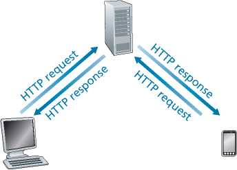PC running Internet Explorer
Android smartphone running Google Chrome
Figure 2.6 ♦ HTTP request-response behavior
HTTP request messages for the objects in the page to the server. The server receives the requests and responds with HTTP response messages that contain the objects.
HTTP uses TCP as its underlying transport protocol (rather than running on top of UDP). The HTTP client first initiates a TCP connection with the server. Once the connection is established, the browser and the server processes access TCP through their socket interfaces. As described in Section 2.1, on the client side the socket interface is the door between the client process and the TCP connection; on the server side it is the door between the server process and the TCP connection. The client sends HTTP request messages into its socket interface and receives HTTP response messages from its socket interface. Similarly, the HTTP server receives request messages from its socket interface and sends response messages into its socket interface. Once the client sends a message into its socket interface, the message is out of the client’s hands and is “in the hands” of TCP. Recall from Section 2.1 that TCP provides a reliable data transfer service to HTTP. This implies that each HTTP request message sent by a client process eventually arrives intact at the server; similarly, each HTTP response message sent by the server process eventually arrives intact at the client. Here we see one of the great advantages of a layered architecture—HTTP need not worry about lost data or the details of how TCP recovers from loss or reordering of data within the network. That is the job of TCP and the protocols in the lower layers of the protocol stack.
It is important to note that the server sends requested files to clients without storing any state information about the client. If a particular client asks for the same object twice in a period of a few seconds, the server does not respond by saying that it just served the object to the client; instead, the server resends the object, as it has completely forgotten what it did earlier. Because an HTTP server maintains no information about the clients, HTTP is said to be a stateless protocol. We also remark that the Web uses the client-server application architecture, as described in Section 2.1. A Web server is always on, with a fixed IP address, and it services requests from potentially millions of different browsers.
The original version of HTTP is called HTTP/1.0 and dates back to the early 1990’s [RFC 1945]. As of 2020, the majority of HTTP transactions take place over HTTP/1.1 [RFC 7230]. However, increasingly browsers and Web servers also support a new version of HTTP called HTTP/2 [RFC 7540]. At the end of this section, we’ll provide an introduction to HTTP/2.
2.2.2 Non-Persistent and Persistent Connections
In many Internet applications, the client and server communicate for an extended period of time, with the client making a series of requests and the server responding to each of the requests. Depending on the application and on how the application is being used, the series of requests may be made back-to-back, periodically at regular intervals, or intermittently. When this client-server interaction is taking place over TCP, the application developer needs to make an important decision—should each request/response pair be sent over a separate TCP connection, or should all of the requests and their corresponding responses be sent over the same TCP connection? In the former approach, the application is said to use non-persistent connections; and in the latter approach, persistent connections. To gain a deep understanding of this design issue, let’s examine the advantages and disadvantages of persistent connections in the context of a specific application, namely, HTTP, which can use both non-persistent connections and persistent connections. Although HTTP uses persistent connections in its default mode, HTTP clients and servers can be configured to use non-persistent connections instead.
HTTP with Non-Persistent Connections
Let’s walk through the steps of transferring a Web page from server to client for the case of non-persistent connections. Let’s suppose the page consists of a base HTML file and 10 JPEG images, and that all 11 of these objects reside on the same server. Further suppose the URL for the base HTML file is
http://www.someSchool.edu/someDepartment/home.index
Here is what happens:
1. The HTTP client process initiates a TCP connection to the server www.someSchool.edu on port number 80, which is the default port number for HTTP. Associated with the TCP connection, there will be a socket at the client and a socket at the server.
2. The HTTP client sends an HTTP request message to the server via its socket.
The request message includes the path name /someDepartment/home .index. (We will discuss HTTP messages in some detail below.)
3. The HTTP server process receives the request message via its socket, retrieves the object /someDepartment/home.index from its storage (RAM or disk), encapsulates the object in an HTTP response message, and sends the response message to the client via its socket.
4. The HTTP server process tells TCP to close the TCP connection. (But TCP doesn’t actually terminate the connection until it knows for sure that the client has received the response message intact.)
5. The HTTP client receives the response message. The TCP connection terminates. The message indicates that the encapsulated object is an HTML file. The client extracts the file from the response message, examines the HTML file, and finds references to the 10 JPEG objects.
6. The first four steps are then repeated for each of the referenced JPEG objects.
As the browser receives the Web page, it displays the page to the user. Two different browsers may interpret (that is, display to the user) a Web page in somewhat different ways. HTTP has nothing to do with how a Web page is interpreted by a client. The HTTP specifications ([RFC 1945] and [RFC 7540]) define only the communication protocol between the client HTTP program and the server HTTP program.
The steps above illustrate the use of non-persistent connections, where each TCP connection is closed after the server sends the object—the connection does not persist for other objects. HTTP/1.0 employes non-persistent TCP connections. Note that each non-persistent TCP connection transports exactly one request message and one response message. Thus, in this example, when a user requests the Web page, 11 TCP connections are generated.
In the steps described above, we were intentionally vague about whether the client obtains the 10 JPEGs over 10 serial TCP connections, or whether some of the JPEGs are obtained over parallel TCP connections. Indeed, users can configure some browsers to control the degree of parallelism. Browsers may open multiple TCP connections and request different parts of the Web page over the multiple connections. As we’ll see in the next chapter, the use of parallel connections shortens the response time.
Before continuing, let’s do a back-of-the-envelope calculation to estimate the amount of time that elapses from when a client requests the base HTML file until the entire file is received by the client. To this end, we define the round-trip time (RTT), which is the time it takes for a small packet to travel from client to server and then back to the client. The RTT includes packet-propagation delays, packetqueuing delays in intermediate routers and switches, and packet-processing delays. (These delays were discussed in Section 1.4.) Now consider what happens when a user clicks on a hyperlink. As shown in Figure 2.7, this causes the browser to initiate a TCP connection between the browser and the Web server; this involves
Initiate TCP
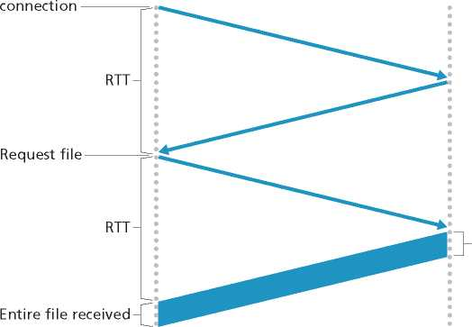Time to transmit file
Time at client
Time at server
Figure 2.7 ♦ Back-of-the-envelope calculation for the time needed to request and receive an HTML file
a “three-way handshake”—the client sends a small TCP segment to the server, the server acknowledges and responds with a small TCP segment, and, finally, the client acknowledges back to the server. The first two parts of the three-way handshake take one RTT. After completing the first two parts of the handshake, the client sends the HTTP request message combined with the third part of the three-way handshake (the acknowledgment) into the TCP connection. Once the request message arrives at the server, the server sends the HTML file into the TCP connection. This HTTP request/response eats up another RTT. Thus, roughly, the total response time is two RTTs plus the transmission time at the server of the HTML file.
HTTP with Persistent Connections
Non-persistent connections have some shortcomings. First, a brand-new connection must be established and maintained for each requested object. For each of these connections, TCP buffers must be allocated and TCP variables must be kept in both the client and server. This can place a significant burden on the Web server, which may be serving requests from hundreds of different clients simultaneously. Second, as we just described, each object suffers a delivery delay of two RTTs—one RTT to establish the TCP connection and one RTT to request and receive an object.
With HTTP/1.1 persistent connections, the server leaves the TCP connection open after sending a response. Subsequent requests and responses between the same client and server can be sent over the same connection. In particular, an entire Web page (in the example above, the base HTML file and the 10 images) can be sent over a single persistent TCP connection. Moreover, multiple Web pages residing on the same server can be sent from the server to the same client over a single persistent TCP connection. These requests for objects can be made back-to-back, without waiting for replies to pending requests (pipelining). Typically, the HTTP server closes a connection when it isn’t used for a certain time (a configurable timeout interval). When the server receives the back-to-back requests, it sends the objects back-to-back. The default mode of HTTP uses persistent connections with pipelining. We’ll quantitatively compare the performance of non-persistent and persistent connections in the homework problems of Chapters 2 and 3. You are also encouraged to see [Heidemann 1997; Nielsen 1997; RFC 7540].
2.2.3 HTTP Message Format
The HTTP specifications [RFC 1945; RFC 7230; RFC 7540] include the definitions of the HTTP message formats. There are two types of HTTP messages, request messages and response messages, both of which are discussed below.
HTTP Request Message
Below we provide a typical HTTP request message:
GET /somedir/page.html HTTP/1.1
Host: www.someschool.edu
Connection: close
User-agent: Mozilla/5.0 Accept-language: fr
We can learn a lot by taking a close look at this simple request message. First of all, we see that the message is written in ordinary ASCII text, so that your ordinary computer-literate human being can read it. Second, we see that the message consists of five lines, each followed by a carriage return and a line feed. The last line is followed by an additional carriage return and line feed. Although this particular request message has five lines, a request message can have many more lines or as few as one line. The first line of an HTTP request message is called the request line; the subsequent lines are called the header lines. The request line has three fields: the method field, the URL field, and the HTTP version field. The method field can take on several different values, including GET, POST, HEAD, PUT, and DELETE.
The great majority of HTTP request messages use the GET method. The GET method is used when the browser requests an object, with the requested object identified in the URL field. In this example, the browser is requesting the object /somedir/ page.html. The version is self-explanatory; in this example, the browser implements version HTTP/1.1.
Now let’s look at the header lines in the example. The header line Host: www.someschool.edu specifies the host on which the object resides. You might think that this header line is unnecessary, as there is already a TCP connection in place to the host. But, as we’ll see in Section 2.2.5, the information provided by the host header line is required by Web proxy caches. By including the Connection: close header line, the browser is telling the server that it doesn’t want to bother with persistent connections; it wants the server to close the connection after sending the requested object. The User-agent: header line specifies the user agent, that is, the browser type that is making the request to the server. Here the user agent is Mozilla/5.0, a Firefox browser. This header line is useful because the server can actually send different versions of the same object to different types of user agents. (Each of the versions is addressed by the same URL.) Finally, the Accept-language: header indicates that the user prefers to receive a French version of the object, if such an object exists on the server; otherwise, the server should send its default version. The Accept-language: header is just one of many content negotiation headers available in HTTP.
Having looked at an example, let’s now look at the general format of a request message, as shown in Figure 2.8. We see that the general format closely follows our earlier example. You may have noticed, however, that after the header lines (and the additional carriage return and line feed) there is an “entity body.” The entity body is empty with the GET method, but is used with the POST method. An HTTP client often uses the POST method when the user fills out a form—for example, when a user provides search words to a search engine. With a POST message, the user is still requesting a Web page from the server, but the specific contents of the Web page depend on what the user entered into the form fields. If the value of the method field is POST, then the entity body contains what the user entered into the form fields.
Blank line
Entity body
Request line
Header lines
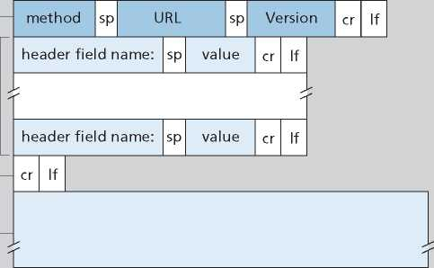Figure 2.8 ♦ General format of an HTTP request message
We would be remiss if we didn’t mention that a request generated with a form does not necessarily have to use the POST method. Instead, HTML forms often use the GET method and include the inputted data (in the form fields) in the requested URL. For example, if a form uses the GET method, has two fields, and the inputs to the two fields are monkeys and bananas, then the URL will have the structure www.somesite.com/animalsearch?monkeys&bananas. In your day-to-day Web surfing, you have probably noticed extended URLs of this sort.
The HEAD method is similar to the GET method. When a server receives a request with the HEAD method, it responds with an HTTP message but it leaves out the requested object. Application developers often use the HEAD method for debugging. The PUT method is often used in conjunction with Web publishing tools. It allows a user to upload an object to a specific path (directory) on a specific Web server. The PUT method is also used by applications that need to upload objects to Web servers. The DELETE method allows a user, or an application, to delete an object on a Web server.
HTTP Response Message
Below we provide a typical HTTP response message. This response message could be the response to the example request message just discussed.
HTTP/1.1 200 OK
Connection: close
Date: Tue, 18 Aug 2015 15:44:04 GMT
Server: Apache/2.2.3 (CentOS)
Last-Modified: Tue, 18 Aug 2015 15:11:03 GMT Content-Length: 6821
Content-Type: text/html
(data data data data data ...)
Let’s take a careful look at this response message. It has three sections: an initial status line, six header lines, and then the entity body. The entity body is the meat of the message—it contains the requested object itself (represented by data data data data data ...). The status line has three fields: the protocol version field, a status code, and a corresponding status message. In this example, the status line indicates that the server is using HTTP/1.1 and that everything is OK (that is, the server has found, and is sending, the requested object).
Now let’s look at the header lines. The server uses the Connection: close header line to tell the client that it is going to close the TCP connection after sending the message. The Date: header line indicates the time and date when the HTTP response was created and sent by the server. Note that this is not the time when the object was created or last modified; it is the time when the server retrieves the object from its file system, inserts the object into the response message, and sends the response message. The Server: header line indicates that the message was generated by an Apache Web server; it is analogous to the User-agent: header line in the HTTP request message. The Last-Modified: header line indicates the time and date when the object was created or last modified. The Last-Modified: header, which we will soon cover in more detail, is critical for object caching, both in the local client and in network cache servers (also known as proxy servers). The Content-Length: header line indicates the number of bytes in the object being sent. The Content-Type: header line indicates that the object in the entity body is HTML text. (The object type is officially indicated by the Content-Type: header and not by the file extension.)
Having looked at an example, let’s now examine the general format of a response message, which is shown in Figure 2.9. This general format of the response message matches the previous example of a response message. Let’s say a few additional words about status codes and their phrases. The status code and associated phrase indicate the result of the request. Some common status codes and associated phrases include:
• 2 00 OK: Request succeeded and the information is returned in the response.
• 301 Moved Permanently: Requested object has been permanently moved; the new URL is specified in Location: header of the response message. The client software will automatically retrieve the new URL.
Figure 2.9 ♦ General format of an HTTP response message
• 400 Bad Request: This is a generic error code indicating that the request could not be understood by the server.
• 4 04 Not Found: The requested document does not exist on this server.
• 505 HTTP Version Not Supported: The requested HTTP protocol version is not supported by the server.
How would you like to see a real HTTP response message? This is highly recommended and very easy to do! First Telnet into your favorite Web server. Then type in a one-line request message for some object that is housed on the server. For example, if you have access to a command prompt, type:
D
VideoNote
Using Wireshark to investigate the HTTP protocol
telnet gaia.cs.umass.edu 80
GET /kurose_ross/interactive/index.php HTTP/1.1
Host: gaia.cs.umass.edu
(Press the carriage return twice after typing the last line.) This opens a TCP connection to port 80 of the host gaia.cs.umass.edu and then sends the HTTP request message. You should see a response message that includes the base HTML file for the interactive homework problems for this textbook. If you’d rather just see the HTTP message lines and not receive the object itself, replace GET with HEAD.
In this section, we discussed a number of header lines that can be used within HTTP request and response messages. The HTTP specification defines many, many more header lines that can be inserted by browsers, Web servers, and network cache servers. We have covered only a small number of the totality of header lines. We’ll cover a few more below and another small number when we discuss network Web caching in Section 2.2.5. A highly readable and comprehensive discussion of the HTTP protocol, including its headers and status codes, is given in [Krishnamurthy 2001].
How does a browser decide which header lines to include in a request message? How does a Web server decide which header lines to include in a response message? A browser will generate header lines as a function of the browser type and version, the user configuration of the browser and whether the browser currently has a cached, but possibly out-of-date, version of the object. Web servers behave similarly: There are different products, versions, and configurations, all of which influence which header lines are included in response messages.
2.2.4 User-Server Interaction: Cookies
We mentioned above that an HTTP server is stateless. This simplifies server design and has permitted engineers to develop high-performance Web servers that can handle thousands of simultaneous TCP connections. However, it is often desirable for a Web site to identify users, either because the server wishes to restrict user access or because it wants to serve content as a function of the user identity. For these purposes, HTTP uses cookies. Cookies, defined in [RFC 6265], allow sites to keep track of users. Most major commercial Web sites use cookies today.
As shown in Figure 2.10, cookie technology has four components: (1) a cookie header line in the HTTP response message; (2) a cookie header line in the HTTP request message; (3) a cookie file kept on the user’s end system and managed by the user’s browser; and (4) a back-end database at the Web site. Using Figure 2.10, let’s walk through an example of how cookies work. Suppose Susan, who always
Client host
Server host
ebay: 8734
One week later—
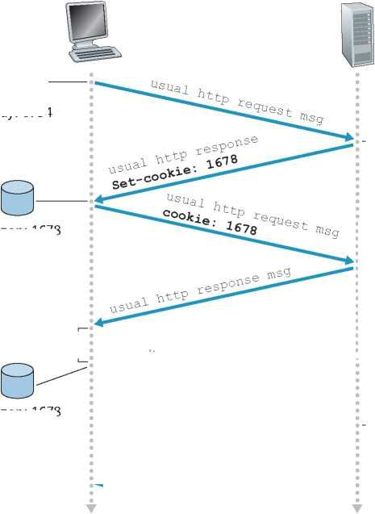---Server creates
ID 1678 for user
access
---Cookie-specific ◄--------
action
amazon: 1678 ebay: 8734
Time
Time
amazon: 1678 ebay: 8734
entry in backend database
Key:
Cookie file
----Cookie-specific
action
access
Figure 2.10 ♦ Keeping user state with cookies
accesses the Web using Internet Explorer from her home PC, contacts Amazon.com for the first time. Let us suppose that in the past she has already visited the eBay site. When the request comes into the Amazon Web server, the server creates a unique identification number and creates an entry in its back-end database that is indexed by the identification number. The Amazon Web server then responds to Susan’s browser, including in the HTTP response a Set-cookie: header, which contains the identification number. For example, the header line might be:
Set-cookie: 1678
When Susan’s browser receives the HTTP response message, it sees the Set-cookie: header. The browser then appends a line to the special cookie file that it manages. This line includes the hostname of the server and the identification number in the Set-cookie: header. Note that the cookie file already has an entry for eBay, since Susan has visited that site in the past. As Susan continues to browse the Amazon site, each time she requests a Web page, her browser consults her cookie file, extracts her identification number for this site, and puts a cookie header line that includes the identification number in the HTTP request. Specifically, each of her HTTP requests to the Amazon server includes the header line:
Cookie: 1678
In this manner, the Amazon server is able to track Susan’s activity at the Amazon site. Although the Amazon Web site does not necessarily know Susan’s name, it knows exactly which pages user 1678 visited, in which order, and at what times! Amazon uses cookies to provide its shopping cart service—Amazon can maintain a list of all of Susan’s intended purchases, so that she can pay for them collectively at the end of the session.
If Susan returns to Amazon’s site, say, one week later, her browser will continue to put the header line Cookie: 167 8 in the request messages. Amazon also recommends products to Susan based on Web pages she has visited at Amazon in the past. If Susan also registers herself with Amazon—providing full name, e-mail address, postal address, and credit card information—Amazon can then include this information in its database, thereby associating Susan’s name with her identification number (and all of the pages she has visited at the site in the past!). This is how Amazon and other e-commerce sites provide “one-click shopping”—when Susan chooses to purchase an item during a subsequent visit, she doesn’t need to re-enter her name, credit card number, or address.
From this discussion, we see that cookies can be used to identify a user. The first time a user visits a site, the user can provide a user identification (possibly his or her name). During the subsequent sessions, the browser passes a cookie header to the server, thereby identifying the user to the server. Cookies can thus be used to create a user session layer on top of stateless HTTP. For example, when a user logs in to a Web-based e-mail application (such as Hotmail), the browser sends cookie information to the server, permitting the server to identify the user throughout the user’s session with the application.
Although cookies often simplify the Internet shopping experience for the user, they are controversial because they can also be considered as an invasion of privacy. As we just saw, using a combination of cookies and user-supplied account information, a Web site can learn a lot about a user and potentially sell this information to a third party.
2.2.5 Web Caching
A Web cache—also called a proxy server—is a network entity that satisfies HTTP requests on the behalf of an origin Web server. The Web cache has its own disk storage and keeps copies of recently requested objects in this storage. As shown in Figure 2.11, a user’s browser can be configured so that all of the user’s HTTP requests are first directed to the Web cache [RFC 7234]. Once a browser is configured, each browser request for an object is first directed to the Web cache. As an example, suppose a browser is requesting the object http://www.someschool.edu/ campus.gif. Here is what happens:
1. The browser establishes a TCP connection to the Web cache and sends an HTTP request for the object to the Web cache.
2. The Web cache checks to see if it has a copy of the object stored locally. If it does, the Web cache returns the object within an HTTP response message to the client browser.
3. If the Web cache does not have the object, the Web cache opens a TCP connection to the origin server, that is, to www.someschool.edu. The Web cache
server
Figure 2.11 ♦ Clients requesting objects through a Web cache
then sends an HTTP request for the object into the cache-to-server TCP connection. After receiving this request, the origin server sends the object within an HTTP response to the Web cache.
4. When the Web cache receives the object, it stores a copy in its local storage and sends a copy, within an HTTP response message, to the client browser (over the existing TCP connection between the client browser and the Web cache).
Note that a cache is both a server and a client at the same time. When it receives requests from and sends responses to a browser, it is a server. When it sends requests to and receives responses from an origin server, it is a client.
Typically a Web cache is purchased and installed by an ISP. For example, a university might install a cache on its campus network and configure all of the campus browsers to point to the cache. Or a major residential ISP (such as Comcast) might install one or more caches in its network and preconfigure its shipped browsers to point to the installed caches.
Web caching has seen deployment in the Internet for two reasons. First, a Web cache can substantially reduce the response time for a client request, particularly if the bottleneck bandwidth between the client and the origin server is much less than the bottleneck bandwidth between the client and the cache. If there is a high-speed connection between the client and the cache, as there often is, and if the cache has the requested object, then the cache will be able to deliver the object rapidly to the client. Second, as we will soon illustrate with an example, Web caches can substantially reduce traffic on an institution’s access link to the Internet. By reducing traffic, the institution (for example, a company or a university) does not have to upgrade bandwidth as quickly, thereby reducing costs. Furthermore, Web caches can substantially reduce Web traffic in the Internet as a whole, thereby improving performance for all applications.
To gain a deeper understanding of the benefits of caches, let’s consider an example in the context of Figure 2.12. This figure shows two networks—the institutional network and the rest of the public Internet. The institutional network is a high-speed LAN. A router in the institutional network and a router in the Internet are connected by a 15 Mbps link. The origin servers are attached to the Internet but are located all over the globe. Suppose that the average object size is 1 Mbits and that the average request rate from the institution’s browsers to the origin servers is 15 requests per second. Suppose that the HTTP request messages are negligibly small and thus create no traffic in the networks or in the access link (from institutional router to Internet router). Also suppose that the amount of time it takes from when the router on the Internet side of the access link in Figure 2.12 forwards an HTTP request (within an IP datagram) until it receives the response (typically within many IP datagrams) is two seconds on average. Informally, we refer to this last delay as the “Internet delay.”
The total response time—that is, the time from the browser’s request of an object until its receipt of the object—is the sum of the LAN delay, the access delay (that is, the delay between the two routers), and the Internet delay. Let’s now do
Origin servers
Public Internet
15 Mbps access link
Institutional network
Figure 2.12 ♦ Bottleneck between an institutional network and the Internet
a very crude calculation to estimate this delay. The traffic intensity on the LAN (see Section 1.4.2) is
(15 requests/sec) • (1 Mbits/request)/(100 Mbps) = 0.15
whereas the traffic intensity on the access link (from the Internet router to institution router) is
(15 requests/sec) • (1 Mbits/request)/(15 Mbps) = 1
A traffic intensity of 0.15 on a LAN typically results in, at most, tens of milliseconds of delay; hence, we can neglect the LAN delay. However, as discussed in Section 1.4.2, as the traffic intensity approaches 1 (as is the case of the access link in Figure 2.12), the delay on a link becomes very large and grows without bound. Thus, the average response time to satisfy requests is going to be on the order of minutes, if not more, which is unacceptable for the institution’s users. Clearly something must be done.
One possible solution is to increase the access rate from 15 Mbps to, say, 100 Mbps. This will lower the traffic intensity on the access link to 0.15, which translates to negligible delays between the two routers. In this case, the total response time will roughly be two seconds, that is, the Internet delay. But this solution also means that the institution must upgrade its access link from 15 Mbps to 100 Mbps, a costly proposition.
Now consider the alternative solution of not upgrading the access link but instead installing a Web cache in the institutional network. This solution is illustrated in Figure 2.13. Hit rates—the fraction of requests that are satisfied by a cache— typically range from 0.2 to 0.7 in practice. For illustrative purposes, let’s suppose that the cache provides a hit rate of 0.4 for this institution. Because the clients and the cache are connected to the same high-speed LAN, 40 percent of the requests will be satisfied almost immediately, say, within 10 milliseconds, by the cache. Nevertheless, the remaining 60 percent of the requests still need to be satisfied by the origin servers. But with only 60 percent of the requested objects passing through the access link, the traffic intensity on the access link is reduced from 1.0 to 0.6. Typically, a
Origin servers
Public Internet
15 Mbps access link
Institutional
Institutional network cache
Figure 2.13 ♦ Adding a cache to the institutional network
traffic intensity less than 0.8 corresponds to a small delay, say, tens of milliseconds, on a 15 Mbps link. This delay is negligible compared with the two-second Internet delay. Given these considerations, average delay therefore is
0.4 • (0.01 seconds) + 0.6 • (2.01 seconds)
which is just slightly greater than 1.2 seconds. Thus, this second solution provides an even lower response time than the first solution, and it doesn’t require the institution to upgrade its link to the Internet. The institution does, of course, have to purchase and install a Web cache. But this cost is low—many caches use public-domain software that runs on inexpensive PCs.
Through the use of Content Distribution Networks (CDNs), Web caches are increasingly playing an important role in the Internet. A CDN company installs many geographically distributed caches throughout the Internet, thereby localizing much of the traffic. There are shared CDNs (such as Akamai and Limelight) and dedicated CDNs (such as Google and Netflix). We will discuss CDNs in more detail in Section 2.6.
The Conditional GET
Although caching can reduce user-perceived response times, it introduces a new problem—the copy of an object residing in the cache may be stale. In other words, the object housed in the Web server may have been modified since the copy was cached at the client. Fortunately, HTTP has a mechanism that allows a cache to verify that its objects are up to date. This mechanism is called the conditional GET [RFC 7232]. An HTTP request message is a so-called conditional GET message if (1) the request message uses the GET method and (2) the request message includes an If-Modified-Since: header line.
To illustrate how the conditional GET operates, let’s walk through an example. First, on the behalf of a requesting browser, a proxy cache sends a request message to a Web server:
GET /fruit/kiwi.gif HTTP/1.1
Host: www.exotiquecuisine.com
Second, the Web server sends a response message with the requested object to the cache:
HTTP/1.1 200 OK
Date: Sat, 3 Oct 2015 15:39:29
Server: Apache/1.3.0 (Unix)
Last-Modified: Wed, 9 Sep 2015 09:23:24
Content-Type: image/gif
(data data data data data ...)
The cache forwards the object to the requesting browser but also caches the object locally. Importantly, the cache also stores the last-modified date along with the object. Third, one week later, another browser requests the same object via the cache, and the object is still in the cache. Since this object may have been modified at the Web server in the past week, the cache performs an up-to-date check by issuing a conditional GET. Specifically, the cache sends:
GET /fruit/kiwi.gif HTTP/1.1
Host: www.exotiquecuisine.com
If-modified-since: Wed, 9 Sep 2015 09:23:24
Note that the value of the If-modified-since: header line is exactly equal to the value of the Last-Modified: header line that was sent by the server one week ago. This conditional GET is telling the server to send the object only if the object has been modified since the specified date. Suppose the object has not been modified since 9 Sep 2015 09:23:24. Then, fourth, the Web server sends a response message to the cache:
HTTP/1.1 304 Not Modified
Date: Sat, 10 Oct 2015 15:39:29
Server: Apache/1.3.0 (Unix)
(empty entity body)
We see that in response to the conditional GET, the Web server still sends a response message but does not include the requested object in the response message. Including the requested object would only waste bandwidth and increase user-perceived response time, particularly if the object is large. Note that this last response message has 304 Not Modified in the status line, which tells the cache that it can go ahead and forward its (the proxy cache’s) cached copy of the object to the requesting browser.
2.2.6 HTTP/2
HTTP/2 [RFC 7540], standardized in 2015, was the first new version of HTTP since HTTP/1.1, which was standardized in 1997. Since standardization, HTTP/2 has taken off, with over 40% of the top 10 million websites supporting HTTP/2 in 2020 [W3Techs]. Most browsers—including Google Chrome, Internet Explorer, Safari, Opera, and Firefox—also support HTTP/2.
The primary goals for HTTP/2 are to reduce perceived latency by enabling request and response multiplexing over a single TCP connection, provide request prioritization and server push, and provide efficient compression of HTTP header fields. HTTP/2 does not change HTTP methods, status codes, URLs, or header fields. Instead, HTTP/2 changes how the data is formatted and transported between the client and server.
To motivate the need for HTTP/2, recall that HTTP/1.1 uses persistent TCP connections, allowing a Web page to be sent from server to client over a single TCP connection. By having only one TCP connection per Web page, the number of sockets at the server is reduced and each transported Web page gets a fair share of the network bandwidth (as discussed below). But developers of Web browsers quickly discovered that sending all the objects in a Web page over a single TCP connection has a Head of Line (HOL) blocking problem. To understand HOL blocking, consider a Web page that includes an HTML base page, a large video clip near the top of Web page, and many small objects below the video. Further suppose there is a low-to-medium speed bottleneck link (for example, a low-speed wireless link) on the path between server and client. Using a single TCP connection, the video clip will take a long time to pass through the bottleneck link, while the small objects are delayed as they wait behind the video clip; that is, the video clip at the head of the line blocks the small objects behind it. HTTP/1.1 browsers typically work around this problem by opening multiple parallel TCP connections, thereby having objects in the same web page sent in parallel to the browser. This way, the small objects can arrive at and be rendered in the browser much faster, thereby reducing user-perceived delay.
TCP congestion control, discussed in detail in Chapter 3, also provides browsers an unintended incentive to use multiple parallel TCP connections rather than a single persistent connection. Very roughly speaking, TCP congestion control aims to give each TCP connection sharing a bottleneck link an equal share of the available bandwidth of that link; so if there are n TCP connections operating over a bottleneck link, then each connection approximately gets 1/nth of the bandwidth. By opening multiple parallel TCP connections to transport a single Web page, the browser can “cheat” and grab a larger portion of the link bandwidth. Many HTTP/1.1 browsers open up to six parallel TCP connections not only to circumvent HOL blocking but also to obtain more bandwidth.
One of the primary goals of HTTP/2 is to get rid of (or at least reduce the number of) parallel TCP connections for transporting a single Web page. This not only reduces the number of sockets that need to be open and maintained at servers, but also allows TCP congestion control to operate as intended. But with only one TCP connection to transport a Web page, HTTP/2 requires carefully designed mechanisms to avoid HOL blocking.
HTTP/2 Framing
The HTTP/2 solution for HOL blocking is to break each message into small frames, and interleave the request and response messages on the same TCP connection. To understand this, consider again the example of a Web page consisting of one large video clip and, say, 8 smaller objects. Thus the server will receive 9 concurrent requests from any browser wanting to see this Web page. For each of these requests, the server needs to send 9 competing HTTP response messages to the browser. Suppose all frames are of fixed length, the video clip consists of 1000 frames, and each of the smaller objects consists of two frames. With frame interleaving, after sending one frame from the video clip, the first frames of each of the small objects are sent. Then after sending the second frame of the video clip, the last frames of each of the small objects are sent. Thus, all of the smaller objects are sent after sending a total of 18 frames. If interleaving were not used, the smaller objects would be sent only after sending 1016 frames. Thus the HTTP/2 framing mechanism can significantly decrease user-perceived delay.
The ability to break down an HTTP message into independent frames, interleave them, and then reassemble them on the other end is the single most important enhancement of HTTP/2. The framing is done by the framing sub-layer of the HTTP/2 protocol. When a server wants to send an HTTP response, the response is processed by the framing sub-layer, where it is broken down into frames. The header field of the response becomes one frame, and the body of the message is broken down into one for more additional frames. The frames of the response are then interleaved by the framing sub-layer in the server with the frames of other responses and sent over the single persistent TCP connection. As the frames arrive at the client, they are first reassembled into the original response messages at the framing sub-layer and then processed by the browser as usual. Similarly, a client’s HTTP requests are broken into frames and interleaved.
In addition to breaking down each HTTP message into independent frames, the framing sublayer also binary encodes the frames. Binary protocols are more efficient to parse, lead to slightly smaller frames, and are less error-prone.
Response Message Prioritization and Server Pushing
Message prioritization allows developers to customize the relative priority of requests to better optimize application performance. As we just learned, the framing sub-layer organizes messages into parallel streams of data destined to the same requestor. When a client sends concurrent requests to a server, it can prioritize the responses it is requesting by assigning a weight between 1 and 256 to each message. The higher number indicates higher priority. Using these weights, the server can send first the frames for the responses with the highest priority. In addition to this, the client also states each message’s dependency on other messages by specifying the ID of the message on which it depends.
Another feature of HTTP/2 is the ability for a server to send multiple responses for a single client request. That is, in addition to the response to the original request, the server can push additional objects to the client, without the client having to request each one. This is possible since the HTML base page indicates the objects that will be needed to fully render the Web page. So instead of waiting for the HTTP requests for these objects, the server can analyze the HTML page, identify the objects that are needed, and send them to the client before receiving explicit requests for these objects. Server push eliminates the extra latency due to waiting for the requests.
HTTP/3
QUIC, discussed in Chapter 3, is a new “transport” protocol that is implemented in the application layer over the bare-bones UDP protocol. QUIC has several features that are desirable for HTTP, such as message multiplexing (interleaving), per-stream flow control, and low-latency connection establishment. HTTP/3 is yet a new HTTP protocol that is designed to operate over QUIC. As of 2020, HTTP/3 is described in Internet drafts and has not yet been fully standardized. Many of the HTTP/2 features (such as message interleaving) are subsumed by QUIC, allowing for a simpler, streamlined design for HTTP/3.
2.3 Electronic Mail in the Internet
Electronic mail has been around since the beginning of the Internet. It was the most popular application when the Internet was in its infancy [Segaller 1998], and has become more elaborate and powerful over the years. It remains one of the Internet’s most important and utilized applications.
As with ordinary postal mail, e-mail is an asynchronous communication medium—people send and read messages when it is convenient for them, without having to coordinate with other people’s schedules. In contrast with postal mail, electronic mail is fast, easy to distribute, and inexpensive. Modern e-mail has many powerful features, including messages with attachments, hyperlinks, HTML-formatted text, and embedded photos.
In this section, we examine the application-layer protocols that are at the heart of Internet e-mail. But before we jump into an in-depth discussion of these protocols, let’s take a high-level view of the Internet mail system and its key components.
Figure 2.14 presents a high-level view of the Internet mail system. We see from this diagram that it has three major components: user agents, mail servers, and the Simple Mail Transfer Protocol (SMTP). We now describe each of these components in the context of a sender, Alice, sending an e-mail message to a recipient, Bob. User agents allow users to read, reply to, forward, save, and compose messages. Examples of user agents for e-mail include Microsoft Outlook, Apple Mail, Webbased Gmail, the Gmail App running in a smartphone, and so on. When Alice is finished composing her message, her user agent sends the message to her mail server, where the message is placed in the mail server’s outgoing message queue. When Bob wants to read a message, his user agent retrieves the message from his mailbox in his mail server.
Mail servers form the core of the e-mail infrastructure. Each recipient, such as Bob, has a mailbox located in one of the mail servers. Bob’s mailbox manages and maintains the messages that have been sent to him. A typical message starts its journey in the sender’s user agent, then travels to the sender’s mail server, and then
Key:
message queue
User mailbox
Figure 2.14 ♦ A high-level view of the Internet e-mail system
travels to the recipient’s mail server, where it is deposited in the recipient’s mailbox. When Bob wants to access the messages in his mailbox, the mail server containing his mailbox authenticates Bob (with his username and password). Alice’s mail server must also deal with failures in Bob’s mail server. If Alice’s server cannot deliver mail to Bob’s server, Alice’s server holds the message in a message queue and attempts to transfer the message later. Reattempts are often done every 30 minutes or so; if there is no success after several days, the server removes the message and notifies the sender (Alice) with an e-mail message.
SMTP is the principal application-layer protocol for Internet electronic mail. It uses the reliable data transfer service of TCP to transfer mail from the sender’s mail server to the recipient’s mail server. As with most application-layer protocols, SMTP has two sides: a client side, which executes on the sender’s mail server, and a server side, which executes on the recipient’s mail server. Both the client and server sides of
SMTP run on every mail server. When a mail server sends mail to other mail servers, it acts as an SMTP client. When a mail server receives mail from other mail servers, it acts as an SMTP server.
2.3.1 SMTP
SMTP, defined in RFC 5321, is at the heart of Internet electronic mail. As mentioned above, SMTP transfers messages from senders’ mail servers to the recipients’ mail servers. SMTP is much older than HTTP. (The original SMTP RFC dates back to 1982, and SMTP was around long before that.) Although SMTP has numerous wonderful qualities, as evidenced by its ubiquity in the Internet, it is nevertheless a legacy technology that possesses certain archaic characteristics. For example, it restricts the body (not just the headers) of all mail messages to simple 7-bit ASCII. This restriction made sense in the early 1980s when transmission capacity was scarce and no one was e-mailing large attachments or large image, audio, or video files. But today, in the multimedia era, the 7-bit ASCII restriction is a bit of a pain—it requires binary multimedia data to be encoded to ASCII before being sent over SMTP; and it requires the corresponding ASCII message to be decoded back to binary after SMTP transport. Recall from Section 2.2 that HTTP does not require multimedia data to be ASCII encoded before transfer.
To illustrate the basic operation of SMTP, let’s walk through a common scenario. Suppose Alice wants to send Bob a simple ASCII message.
1. Alice invokes her user agent for e-mail, provides Bob’s e-mail address (for example, bob@someschool.edu), composes a message, and instructs the user agent to send the message.
2. Alice’s user agent sends the message to her mail server, where it is placed in a message queue.
3. The client side of SMTP, running on Alice’s mail server, sees the message in the message queue. It opens a TCP connection to an SMTP server, running on Bob’s mail server.
4. After some initial SMTP handshaking, the SMTP client sends Alice’s message into the TCP connection.
5. At Bob’s mail server, the server side of SMTP receives the message. Bob’s mail server then places the message in Bob’s mailbox.
6. Bob invokes his user agent to read the message at his convenience.
The scenario is summarized in Figure 2.15.
It is important to observe that SMTP does not normally use intermediate mail servers for sending mail, even when the two mail servers are located at opposite ends of the world. If Alice’s server is in Hong Kong and Bob’s server is in St. Louis, the TCP connection is a direct connection between the Hong Kong and St. Louis servers. In
Alice's mail server
Alice's agent

Key:
ueue
User mailbox
Figure 2.15 ♦ Alice sends a message to Bob
particular, if Bob’s mail server is down, the message remains in Alice’s mail server and waits for a new attempt—the message does not get placed in some intermediate mail server.
Let’s now take a closer look at how SMTP transfers a message from a sending mail server to a receiving mail server. We will see that the SMTP protocol has many similarities with protocols that are used for face-to-face human interaction. First, the client SMTP (running on the sending mail server host) has TCP establish a connection to port 25 at the server SMTP (running on the receiving mail server host). If the server is down, the client tries again later. Once this connection is established, the server and client perform some applicationlayer handshaking—just as humans often introduce themselves before transferring information from one to another, SMTP clients and servers introduce themselves before transferring information. During this SMTP handshaking phase, the SMTP client indicates the e-mail address of the sender (the person who generated the message) and the e-mail address of the recipient. Once the SMTP client and server have introduced themselves to each other, the client sends the message. SMTP can count on the reliable data transfer service of TCP to get the message to the server without errors. The client then repeats this process over the same TCP connection if it has other messages to send to the server; otherwise, it instructs TCP to close the connection.
Let’s next take a look at an example transcript of messages exchanged between an SMTP client (C) and an SMTP server (S). The hostname of the client is crepes.fr and the hostname of the server is hamburger.edu. The ASCII text lines prefaced with C: are exactly the lines the client sends into its TCP socket, and the ASCII text lines prefaced with S: are exactly the lines the server sends into its TCP socket. The following transcript begins as soon as the TCP connection is established.
S: 220 hamburger.edu
C: HELO crepes.fr
S: 250 Hello crepes.fr, pleased to meet you
C: MAIL FROM: <alice@crepes.fr>
S: 250 alice@crepes.fr ... Sender ok
C: RCPT TO: <bob@hamburger.edu>
S: 250 bob@hamburger.edu ... Recipient ok
C: DATA
S: 354 Enter mail, end with "." on a line by itself
C: Do you like ketchup?
C: How about pickles?
C: .
S: 250 Message accepted for delivery
C: QUIT
S: 221 hamburger.edu closing connection
In the example above, the client sends a message (“Do you like ketchup? How about pickles?”) from mail server crepes.fr to mail server hamburger.edu. As part of the dialogue, the client issued five commands: HELO (an abbreviation for HELLO), MAIL FROM, RCPT TO, DATA, and QUIT. These commands are self-explanatory. The client also sends a line consisting of a single period, which indicates the end of the message to the server. (In ASCII jargon, each message ends with CRLF.CRLF, where CR and LF stand for carriage return and line feed, respectively.) The server issues replies to each command, with each reply having a reply code and some (optional) English-language explanation. We mention here that SMTP uses persistent connections: If the sending mail server has several messages to send to the same receiving mail server, it can send all of the messages over the same TCP connection. For each message, the client begins the process with a new MAIL FROM: crepes.fr, designates the end of message with an isolated period, and issues QUIT only after all messages have been sent.
It is highly recommended that you use Telnet to carry out a direct dialogue with an SMTP server. To do this, issue
telnet serverName 25
where serverName is the name of a local mail server. When you do this, you are simply establishing a TCP connection between your local host and the mail server. After typing this line, you should immediately receive the 220 reply from the server. Then issue the SMTP commands HELO, MAIL FROM, RCPT TO, DATA, CRLF.CRLF, and QUIT at the appropriate times. It is also highly recommended that you do Programming Assignment 3 at the end of this chapter. In that assignment, you’ll build a simple user agent that implements the client side of SMTP. It will allow you to send an e-mail message to an arbitrary recipient via a local mail server.
2.3.2 Mail Message Formats
When Alice writes an ordinary snail-mail letter to Bob, she may include all kinds of peripheral header information at the top of the letter, such as Bob’s address, her own return address, and the date. Similarly, when an e-mail message is sent from one person to another, a header containing peripheral information precedes the body of the message itself. This peripheral information is contained in a series of header lines, which are defined in RFC 5322. The header lines and the body of the message are separated by a blank line (that is, by CRLF). RFC 5322 specifies the exact format for mail header lines as well as their semantic interpretations. As with HTTP, each header line contains readable text, consisting of a keyword followed by a colon followed by a value. Some of the keywords are required and others are optional. Every header must have a From: header line and a To: header line; a header may include a Subject: header line as well as other optional header lines. It is important to note that these header lines are different from the SMTP commands we studied in Section 2.3.1 (even though they contain some common words such as ““from” and “to”). The commands in that section were part of the SMTP handshaking protocol; the header lines examined in this section are part of the mail message itself.
A typical message header looks like this:
From: alice@crepes.fr To: bob@hamburger.edu Subject: Searching for the meaning of life.
After the message header, a blank line follows; then the message body (in ASCII) follows. You should use Telnet to send a message to a mail server that contains some header lines, including the Subject: header line. To do this, issue telnet serverName 25, as discussed in Section 2.3.1.
2.3.3 Mail Access Protocols
Once SMTP delivers the message from Alice’s mail server to Bob’s mail server, the message is placed in Bob’s mailbox. Given that Bob (the recipient) executes his user agent on his local host (e.g., smartphone or PC), it is natural to consider placing a mail server on his local host as well. With this approach, Alice’s mail server would dialogue directly with Bob’s PC. There is a problem with this approach, however. Recall that a mail server manages mailboxes and runs the client and server sides of SMTP. If Bob’s mail server were to reside on his local host, then Bob’s host would have to remain always on, and connected to the Internet, in order to receive new mail, which can arrive at any time. This is impractical for many Internet users. Instead, a typical user runs a user agent on the local host but accesses its mailbox stored on an always-on shared mail server. This mail server is shared with other users.
HTTP or
IMAP
Figure 2.16 ♦ E-mail protocols and their communicating entities
Bob's agent
Now let’s consider the path an e-mail message takes when it is sent from Alice to Bob. We just learned that at some point along the path the e-mail message needs to be deposited in Bob’s mail server. This could be done simply by having Alice’s user agent send the message directly to Bob’s mail server. However, typically the sender’s user agent does not dialogue directly with the recipient’s mail server. Instead, as shown in Figure 2.16, Alice’s user agent uses SMTP or HTTP to deliver the e-mail message into her mail server, then Alice’s mail server uses SMTP (as an SMTP client) to relay the e-mail message to Bob’s mail server. Why the two-step procedure? Primarily because without relaying through Alice’s mail server, Alice’s user agent doesn’t have any recourse to an unreachable destination mail server. By having Alice first deposit the e-mail in her own mail server, Alice’s mail server can repeatedly try to send the message to Bob’s mail server, say every 30 minutes, until Bob’s mail server becomes operational. (And if Alice’s mail server is down, then she has the recourse of complaining to her system administrator!)
But there is still one missing piece to the puzzle! How does a recipient like Bob, running a user agent on his local host , obtain his messages, which are sitting in a mail server? Note that Bob’s user agent can’t use SMTP to obtain the messages because obtaining the messages is a pull operation, whereas SMTP is a push protocol.
Today, there are two common ways for Bob to retrieve his e-mail from a mail server. If Bob is using Web-based e-mail or a smartphone app (such as Gmail), then the user agent will use HTTP to retrieve Bob’s e-mail. This case requires Bob’s mail server to have an HTTP interface as well as an SMTP interface (to communicate with Alice’s mail server). The alternative method, typically used with mail clients such as Microsoft Outlook, is to use the Internet Mail Access Protocol (IMAP) defined in RFC 3501. Both the HTTP and IMAP approaches allow Bob to manage folders, maintained in Bob’s mail server. Bob can move messages into the folders he creates, delete messages, mark messages as important, and so on.
2.4 DNS—The Internet’s Directory Service
We human beings can be identified in many ways. For example, we can be identified by the names that appear on our birth certificates. We can be identified by our social security numbers. We can be identified by our driver’s license numbers. Although each can be used to identify people, within a given context one identifier may be more appropriate than another. For example, the computers at the IRS (the infamous tax-collecting agency in the United States) prefer to use fixed-length social security numbers rather than birth certificate names. On the other hand, ordinary people prefer the more mnemonic birth certificate names rather than social security numbers. (Indeed, can you imagine saying, “Hi. My name is 132-67-9875. Please meet my husband, 178-87-1146.”)
Just as humans can be identified in many ways, so too can Internet hosts. One identifier for a host is its hostname. Hostnames—such as www.facebook.com, www.google.com,gaia.cs.umass.edu—are mnemonic and are therefore appreciated by humans. However, hostnames provide little, if any, information about the location within the Internet of the host. (A hostname such as www.eurecom. fr, which ends with the country code .fr, tells us that the host is probably in France, but doesn’t say much more.) Furthermore, because hostnames can consist of variable-length alphanumeric characters, they would be difficult to process by routers. For these reasons, hosts are also identified by so-called IP addresses.
We discuss IP addresses in some detail in Chapter 4, but it is useful to say a few brief words about them now. An IP address consists of four bytes and has a rigid hierarchical structure. An IP address looks like 121.7.106.83, where each period separates one of the bytes expressed in decimal notation from 0 to 255. An IP address is hierarchical because as we scan the address from left to right, we obtain more and more specific information about where the host is located in the Internet (that is, within which network, in the network of networks). Similarly, when we scan a postal address from bottom to top, we obtain more and more specific information about where the addressee is located.
2.4.1 Services Provided by DNS
We have just seen that there are two ways to identify a host—by a hostname and by an IP address. People prefer the more mnemonic hostname identifier, while routers prefer fixed-length, hierarchically structured IP addresses. In order to reconcile these preferences, we need a directory service that translates hostnames to IP addresses. This is the main task of the Internet’s domain name system (DNS). The DNS is (1) a distributed database implemented in a hierarchy of DNS servers, and (2) an application-layer protocol that allows hosts to query the distributed database. The DNS servers are often UNIX machines running the Berkeley Internet Name Domain (BIND) software [BIND 2020]. The DNS protocol runs over UDP and uses port 53.
DNS is commonly employed by other application-layer protocols, including HTTP and SMTP, to translate user-supplied hostnames to IP addresses. As an example, consider what happens when a browser (that is, an HTTP client), running on some user’s host, requests the URL www.someschool.edu/index.html. In order for the user’s host to be able to send an HTTP request message to the Web server www.someschool.edu, the user’s host must first obtain the IP address of www.someschool.edu. This is done as follows.
1. The same user machine runs the client side of the DNS application.
2. The browser extracts the hostname, www.someschool.edu, from the URL and passes the hostname to the client side of the DNS application.
3. The DNS client sends a query containing the hostname to a DNS server.
4. The DNS client eventually receives a reply, which includes the IP address for the hostname.
5. Once the browser receives the IP address from DNS, it can initiate a TCP connection to the HTTP server process located at port 80 at that IP address.
We see from this example that DNS adds an additional delay—sometimes substantial—to the Internet applications that use it. Fortunately, as we discuss below, the desired IP address is often cached in a “nearby” DNS server, which helps to reduce DNS network traffic as well as the average DNS delay.
DNS provides a few other important services in addition to translating hostnames to IP addresses:
• Host aliasing. A host with a complicated hostname can have one or more alias names. For example, a hostname such as relayl.west-coast .enterprise.com could have, say, two aliases such as enterprise.com and www.enterprise.com. In this case, the hostname relayl .west-coast.enterprise.com is said to be a canonical hostname. Alias hostnames, when present, are typically more mnemonic than canonical hostnames. DNS can be invoked by an application to obtain the canonical hostname for a supplied alias hostname as well as the IP address of the host.
• Mail server aliasing. For obvious reasons, it is highly desirable that e-mail addresses be mnemonic. For example, if Bob has an account with Yahoo Mail, Bob’s e-mail address might be as simple as bob@yahoo.com. However, the hostname of the Yahoo mail server is more complicated and much less mnemonic than simply yahoo.com (for example, the canonical hostname might be something like relay1.west-coast.yahoo.com). DNS can be invoked by a mail application to obtain the canonical hostname for a supplied alias hostname as well as the IP address of the host. In fact, the MX record (see below) permits a company’s mail server and Web server to have identical (aliased) hostnames; for example, a company’s Web server and mail server can both be called enter-prise.com.
• Load distribution. DNS is also used to perform load distribution among replicated servers, such as replicated Web servers. Busy sites, such as cnn.com, are replicated over multiple servers, with each server running on a different end system and each having a different IP address. For replicated Web servers, a set of IP
PRINCIPLES IN PRACTICE
DNS: CRITICAL NETWORK FUNCTIONS VIA THE CLIENT-SERVER PARADIGM
Like HTTP, FTP, and SMTP, the DNS protocol is an application-layer protocol since it
(1) runs between communicating end systems using the client-server paradigm and
(2) relies on an underlying end-to-end transport protocol to transfer DNS messages between communicating end systems. In another sense, however, the role of the DNS is quite different from Web, file transfer, and e-mail applications. Unlike these applications, the DNS is not an application with which a user directly interacts. Instead, the DNS provides a core Internet function — namely, translating hostnames to their underlying IP addresses, for user applications and other software in the Internet. We noted in Section 1.2 that much of the complexity in the Internet architecture is located at the “edges” of the network. The DNS, which implements the critical name-to-address translation process using clients and servers located at the edge of the network, is yet another example of that design philosophy.
addresses is thus associated with one alias hostname. The DNS database contains this set of IP addresses. When clients make a DNS query for a name mapped to a set of addresses, the server responds with the entire set of IP addresses, but rotates the ordering of the addresses within each reply. Because a client typically sends its HTTP request message to the IP address that is listed first in the set, DNS rotation distributes the traffic among the replicated servers. DNS rotation is also used for e-mail so that multiple mail servers can have the same alias name. Also, content distribution companies such as Akamai have used DNS in more sophisticated ways [Dilley 2002] to provide Web content distribution (see Section 2.6.3).
The DNS is specified in RFC 1034 and RFC 1035, and updated in several additional RFCs. It is a complex system, and we only touch upon key aspects of its operation here. The interested reader is referred to these RFCs and the book by Albitz and Liu [Albitz 1993]; see also the retrospective paper [Mockapetris 1988], which provides a nice description of the what and why of DNS, and [Mockapetris 2005].
2.4.2 Overview of How DNS Works
We now present a high-level overview of how DNS works. Our discussion will focus on the hostname-to-IP-address translation service.
Suppose that some application (such as a Web browser or a mail client) running in a user’s host needs to translate a hostname to an IP address. The application will invoke the client side of DNS, specifying the hostname that needs to be translated. (On many UNIX-based machines, gethostbyname() is the function call that an application calls in order to perform the translation.) DNS in the user’s host then takes over, sending a query message into the network. All DNS query and reply messages are sent within UDP datagrams to port 53. After a delay, ranging from milliseconds to seconds, DNS in the user’s host receives a DNS reply message that provides the desired mapping. This mapping is then passed to the invoking application. Thus, from the perspective of the invoking application in the user’s host, DNS is a black box providing a simple, straightforward translation service. But in fact, the black box that implements the service is complex, consisting of a large number of DNS servers distributed around the globe, as well as an application-layer protocol that specifies how the DNS servers and querying hosts communicate.
A simple design for DNS would have one DNS server that contains all the mappings. In this centralized design, clients simply direct all queries to the single DNS server, and the DNS server responds directly to the querying clients. Although the simplicity of this design is attractive, it is inappropriate for today’s Internet, with its vast (and growing) number of hosts. The problems with a centralized design include:
• A single point of failure. If the DNS server crashes, so does the entire Internet!
• Traffic volume. A single DNS server would have to handle all DNS queries (for all the HTTP requests and e-mail messages generated from hundreds of millions of hosts).
• Distant centralized database. A single DNS server cannot be “close to” all the querying clients. If we put the single DNS server in New York City, then all queries from Australia must travel to the other side of the globe, perhaps over slow and congested links. This can lead to significant delays.
• Maintenance. The single DNS server would have to keep records for all Internet hosts. Not only would this centralized database be huge, but it would have to be updated frequently to account for every new host.
In summary, a centralized database in a single DNS server simply doesn’t scale. Consequently, the DNS is distributed by design. In fact, the DNS is a wonderful example of how a distributed database can be implemented in the Internet.
A Distributed, Hierarchical Database
In order to deal with the issue of scale, the DNS uses a large number of servers, organized in a hierarchical fashion and distributed around the world. No single DNS server has all of the mappings for all of the hosts in the Internet. Instead, the mappings are distributed across the DNS servers. To a first approximation, there are three classes of DNS servers—root DNS servers, top-level domain (TLD) DNS servers, and authoritative DNS servers—organized in a hierarchy as shown in Figure 2.17. To understand how these three classes of servers interact, suppose a DNS client wants to determine the IP address for the hostname www.amazon.com. To a first approximation, the following events will take place. The client first contacts one of
Figure 2.17 ♦ Portion of the hierarchy of DNS servers
the root servers, which returns IP addresses for TLD servers for the top-level domain com. The client then contacts one of these TLD servers, which returns the IP address of an authoritative server for amazon.com. Finally, the client contacts one of the authoritative servers for amazon.com, which returns the IP address for the hostname www.amazon.com. We’ll soon examine this DNS lookup process in more detail. But let’s first take a closer look at these three classes of DNS servers:
• Root DNS servers. There are more than 1000 root servers instances scattered all over the world, as shown in Figure 2.18. These root servers are copies of 13 different root servers, managed by 12 different organizations, and coordinated through the Internet Assigned Numbers Authority [IANA 2020]. The full list of root name servers, along with the organizations that manage them and their IP addresses can be found at [Root Servers 2020]. Root name servers provide the IP addresses of the TLD servers.
• Top-level domain (TLD) servers. For each of the top-level domains—top-level domains such as com, org, net, edu, and gov, and all of the country top-level domains such as uk, fr, ca, and jp—there is TLD server (or server cluster). The company Verisign Global Registry Services maintains the TLD servers for the com top-level domain, and the company Educause maintains the TLD servers for the edu top-level domain. The network infrastructure supporting a TLD can be large and complex; see [Osterweil 2012] for a nice overview of the Verisign network. See [TLD list 2020] for a list of all top-level domains. TLD servers provide the IP addresses for authoritative DNS servers.
• Authoritative DNS servers. Every organization with publicly accessible hosts (such as Web servers and mail servers) on the Internet must provide publicly accessible DNS records that map the names of those hosts to IP addresses. An organization’s authoritative DNS server houses these DNS records. An organization can choose to implement its own authoritative DNS server to hold these records; alternatively, the organization can pay to have these records stored in an
Key:
3 0 Servers
O 1-10 Servers
O 11-20 Servers
■ 21+ Servers
Figure 2.18 ♦ DNS root servers in 2020
authoritative DNS server of some service provider. Most universities and large companies implement and maintain their own primary and secondary (backup) authoritative DNS server.
The root, TLD, and authoritative DNS servers all belong to the hierarchy of DNS servers, as shown in Figure 2.17. There is another important type of DNS server called the local DNS server. A local DNS server does not strictly belong to the hierarchy of servers but is nevertheless central to the DNS architecture. Each ISP—such as a residential ISP or an institutional ISP—has a local DNS server (also called a default name server). When a host connects to an ISP, the ISP provides the host with the IP addresses of one or more of its local DNS servers (typically through DHCP, which is discussed in Chapter 4). You can easily determine the IP address of your local DNS server by accessing network status windows in Windows or UNIX. A host’s local DNS server is typically “close to” the host. For an institutional ISP, the local DNS server may be on the same LAN as the host; for a residential ISP, it is typically separated from the host by no more than a few routers. When a host makes a DNS query, the query is sent to the local DNS server, which acts a proxy, forwarding the query into the DNS server hierarchy, as we’ll discuss in more detail below.
Let’s take a look at a simple example. Suppose the host cse.nyu.edu desires the IP address of gaia.cs.umass.edu. Also suppose that NYU’s local DNS server for cse.nyu.edu is called dns.nyu.edu and that an authoritative DNS server for gaia.cs.umass.edu is called dns.umass.edu. As shown in
Local DNS server
Authoritative DNS server
Figure 2.19 ♦ Interaction of the various DNS servers
Figure 2.19, the host cse.nyu.edu first sends a DNS query message to its local DNS server, dns.nyu.edu. The query message contains the hostname to be translated, namely, gaia.cs.umass.edu. The local DNS server forwards the query message to a root DNS server. The root DNS server takes note of the edu suffix and returns to the local DNS server a list of IP addresses for TLD servers responsible for edu. The local DNS server then resends the query message to one of these TLD servers. The TLD server takes note of the umass.edu suffix and responds with the IP address of the authoritative DNS server for the University of Massachusetts, namely, dns.umass.edu. Finally, the local DNS server resends the query message directly to dns.umass.edu, which responds with the IP address of gaia .cs.umass.edu. Note that in this example, in order to obtain the mapping for one hostname, eight DNS messages were sent: four query messages and four reply messages! We’ll soon see how DNS caching reduces this query traffic.
Our previous example assumed that the TLD server knows the authoritative DNS server for the hostname. In general, this is not always true. Instead, the TLD server may know only of an intermediate DNS server, which in turn knows the authoritative DNS server for the hostname. For example, suppose again that the University of Massachusetts has a DNS server for the university, called dns.umass.edu. Also suppose that each of the departments at the University of Massachusetts has its own DNS server, and that each departmental DNS server is authoritative for all hosts in the department. In this case, when the intermediate DNS server, dns.umass.edu, receives a query for a host with a hostname ending with cs.umass.edu, it returns to dns.nyu.edu the IP address of dns.cs.umass.edu, which is authoritative for all hostnames ending with cs.umass.edu. The local DNS server dns.nyu .edu then sends the query to the authoritative DNS server, which returns the desired mapping to the local DNS server, which in turn returns the mapping to the requesting host. In this case, a total of 10 DNS messages are sent!
The example shown in Figure 2.19 makes use of both recursive queries and iterative queries. The query sent from cse.nyu.edu to dns.nyu.edu is a recursive query, since the query asks dns.nyu.edu to obtain the mapping on its behalf. However, the subsequent three queries are iterative since all of the replies are directly returned to dns.nyu.edu. In theory, any DNS query can be iterative or recursive. For example, Figure 2.20 shows a DNS query chain for which all of the queries are recursive. In practice, the queries typically follow the pattern in Figure 2.19: The query from the requesting host to the local DNS server is recursive, and the remaining queries are iterative.
DNS Caching
Our discussion thus far has ignored DNS caching, a critically important feature of the DNS system. In truth, DNS extensively exploits DNS caching in order to improve the delay performance and to reduce the number of DNS messages ricocheting around the Internet. The idea behind DNS caching is very simple. In a query chain, when a DNS server receives a DNS reply (containing, for example, a mapping from a hostname to an IP address), it can cache the mapping in its local memory. For example, in Figure 2.19, each time the local DNS server dns.nyu.edu receives a reply from some DNS server, it can cache any of the information contained in the reply. If a hostname/IP address pair is cached in a DNS server and another query arrives to the DNS server for the same hostname, the DNS server can provide the desired IP address, even if it is not authoritative for the hostname. Because hosts and mappings between hostnames and IP addresses are by no means permanent, DNS servers discard cached information after a period of time (often set to two days).
As an example, suppose that a host apricot.nyu.edu queries dns.nyu.edu for the IP address for the hostname cnn.com. Furthermore, suppose that a few hours later, another NYU host, say, kiwi.nyu.edu, also queries dns.nyu.edu with the same hostname. Because of caching, the local DNS server will be able to immediately return the IP address of cnn.com to this second requesting host without having to query any other DNS servers. A local DNS server can
Requesting host
Authoritative DNS server
Figure 2.20 ♦ Recursive queries in DNS
also cache the IP addresses of TLD servers, thereby allowing the local DNS server to bypass the root DNS servers in a query chain. In fact, because of caching, root servers are bypassed for all but a very small fraction of DNS queries.
2.4.3 DNS Records and Messages
The DNS servers that together implement the DNS distributed database store resource records (RRs), including RRs that provide hostname-to-IP address mappings. Each DNS reply message carries one or more resource records. In this and the following subsection, we provide a brief overview of DNS resource records and messages; more details can be found in [Albitz 1993] or in the DNS RFCs [RFC 1034; RFC 1035].
A resource record is a four-tuple that contains the following fields:
(Name, Value, Type, TTL)
TTL is the time to live of the resource record; it determines when a resource should be removed from a cache. In the example records given below, we ignore the TTL field. The meaning of Name and Value depend on Type:
• If Type=A, then Name is a hostname and Value is the IP address for the hostname. Thus, a Type A record provides the standard hostname-to-IP address mapping. As an example, (relay1.bar.foo.com, 145.37.93.12 6, A) is a Type A record.
• If Type=NS, then Name is a domain (such as foo.com) and Value is the hostname of an authoritative DNS server that knows how to obtain the IP addresses for hosts in the domain. This record is used to route DNS queries further along in the query chain. As an example, (foo.com, dns.foo.com, NS) is a Type NS record.
• If Type=CNAME, then Value is a canonical hostname for the alias hostname Name. This record can provide querying hosts the canonical name for a hostname. As an example, (foo.com, relay1.bar.foo.com, CNAME) is a CNAME record.
• If Type=MX, then Value is the canonical name of a mail server that has an alias hostname Name. As an example, (foo.com, mail.bar.foo.com, MX) is an MX record. MX records allow the hostnames of mail servers to have simple aliases. Note that by using the MX record, a company can have the same aliased name for its mail server and for one of its other servers (such as its Web server). To obtain the canonical name for the mail server, a DNS client would query for an MX record; to obtain the canonical name for the other server, the DNS client would query for the CNAME record.
If a DNS server is authoritative for a particular hostname, then the DNS server will contain a Type A record for the hostname. (Even if the DNS server is not authoritative, it may contain a Type A record in its cache.) If a server is not authoritative for a hostname, then the server will contain a Type NS record for the domain that includes the hostname; it will also contain a Type A record that provides the IP address of the DNS server in the Value field of the NS record. As an example, suppose an edu TLD server is not authoritative for the host gaia.cs.umass.edu. Then this server will contain a record for a domain that includes the host gaia.cs.umass .edu, for example, (umass.edu, dns.umass.edu, NS). The edu TLD server would also contain a Type A record, which maps the DNS server dns.umass.edu to an IP address, for example, (dns.umass.edu, 128.119.40.111, A).
DNS Messages
Earlier in this section, we referred to DNS query and reply messages. These are the only two kinds of DNS messages. Furthermore, both query and reply messages have the same format, as shown in Figure 2.21.The semantics of the various fields in a DNS message are as follows:
• The first 12 bytes is the header section, which has a number of fields. The first field is a 16-bit number that identifies the query. This identifier is copied into the reply message to a query, allowing the client to match received replies with sent queries. There are a number of flags in the flag field. A 1-bit query/reply flag indicates whether the message is a query (0) or a reply (1). A 1-bit authoritative flag is set in a reply message when a DNS server is an authoritative server for a queried name. A 1-bit recursion-desired flag is set when a client (host or DNS server) desires that the DNS server perform recursion when it doesn’t have the record. A 1-bit recursion-available field is set in a reply if the DNS server supports recursion. In the header, there are also four number-of fields. These fields indicate the number of occurrences of the four types of data sections that follow the header.
• The question section contains information about the query that is being made. This section includes (1) a name field that contains the name that is being queried, and (2) a type field that indicates the type of question being asked about the name—for example, a host address associated with a name (Type A) or the mail server for a name (Type MX).
Figure 2.21 ♦ DNS message format
• In a reply from a DNS server, the answer section contains the resource records for the name that was originally queried. Recall that in each resource record there is the Type (for example, A, NS, CNAME, and MX), the Value, and the TTL. A reply can return multiple RRs in the answer, since a hostname can have multiple IP addresses (for example, for replicated Web servers, as discussed earlier in this section).
• The authority section contains records of other authoritative servers.
• The additional section contains other helpful records. For example, the answer field in a reply to an MX query contains a resource record providing the canonical hostname of a mail server. The additional section contains a Type A record providing the IP address for the canonical hostname of the mail server.
How would you like to send a DNS query message directly from the host you’re working on to some DNS server? This can easily be done with the nslookup program, which is available from most Windows and UNIX platforms. For example, from a Windows host, open the Command Prompt and invoke the nslookup program by simply typing “nslookup.” After invoking nslookup, you can send a DNS query to any DNS server (root, TLD, or authoritative). After receiving the reply message from the DNS server, nslookup will display the records included in the reply (in a human-readable format). As an alternative to running nslookup from your own host, you can visit one of many Web sites that allow you to remotely employ nslookup. (Just type “nslookup” into a search engine and you’ll be brought to one of these sites.) The DNS Wireshark lab at the end of this chapter will allow you to explore the DNS in much more detail.
Inserting Records into the DNS Database
The discussion above focused on how records are retrieved from the DNS database. You might be wondering how records get into the database in the first place. Let’s look at how this is done in the context of a specific example. Suppose you have just created an exciting new startup company called Network Utopia. The first thing you’ll surely want to do is register the domain name networkutopia.com at a registrar. A registrar is a commercial entity that verifies the uniqueness of the domain name, enters the domain name into the DNS database (as discussed below), and collects a small fee from you for its services. Prior to 1999, a single registrar, Network Solutions, had a monopoly on domain name registration for com, net, and org domains. But now there are many registrars competing for customers, and the Internet Corporation for Assigned Names and Numbers (ICANN) accredits the various registrars. A complete list of accredited registrars is available at http://www.internic.net.
When you register the domain name networkutopia.com with some registrar, you also need to provide the registrar with the names and IP addresses of your primary and secondary authoritative DNS servers. Suppose the names and IP addresses are dns1.networkutopia.com, dns2.networkutopia.com, 212.2.212.1, and 212.212.212.2. For each of these two authoritative DNS
FOCUS ON SECURITY
DNS VULNERABILITIES
We have seen that DNS is a critical component of the Internet infrastructure, with many important services—including the Web and e-mail — simply incapable of functioning without it. We therefore naturally ask, how can DNS be attacked? Is DNS a sitting duck, waiting to be knocked out of service, while taking most Internet applications down with it?
The first type of attack that comes to mind is a DDoS bandwidth-flooding attack (see Section 1.6) against DNS servers. For example, an attacker could attempt to send to each DNS root server a deluge of packets, so many that the majority of legitimate DNS queries never get answered. Such a large-scale DDoS attack against DNS root servers actually took place on October 21,2002. In this attack, the attackers leveraged a botnet to send truck loads of ICMP ping messages to each of the 13 DNS root IP addresses. (ICMP messages are discussed in Section 5.6. For now, it suffices to know that ICMP packets are special types of IP datagrams.) Fortunately, this large-scale attack caused minimal damage, having little or no impact on users’ Internet experience. The attackers did succeed at directing a deluge of packets at the root servers. But many of the DNS root servers were protected by packet filters, configured to always block all ICMP ping messages directed at the root servers. These protected servers were thus spared and functioned as normal. Furthermore, most local DNS servers cache the IP addresses of top-level-domain servers, allowing the query process to often bypass the DNS root servers.
A potentially more effective DDoS attack against DNS is send a deluge of DNS queries to top-level-domain servers, for example, to top-level-domain servers that handle the .com domain. It is harder to filter DNS queries directed to DNS servers; and top-level-domain servers are not as easily bypassed as are root servers. Such an attack took place against the top-level-domain service provider Dyn on October 21, 2016. This DDoS attack was accomplished through a large number of DNS lookup requests from a botnet consisting of about one hundred thousand IoT devices such as printers, IP cameras, residential gateways and baby monitors that had been infected with Mirai malware. For almost a full day, Amazon, Twitter, Netflix, Github and Spotify were disturbed.
DNS could potentially be attacked in other ways. In a man-in-the-middle attack, the attacker intercepts queries from hosts and returns bogus replies. In the DNS poisoning attack, the attacker sends bogus replies to a DNS server, tricking the server into accepting bogus records into its cache. Either of these attacks could be used, for example, to redirect an unsuspecting Web user to the attacker’s Web site. The DNS Security Extensions (DNSSEC [Gieben 2004; RFC 4033] have been designed and deployed to protect against such exploits. DNSSEC, a secured version of DNS, addresses many of these possible attacks and is gaining popularity in the Internet. servers, the registrar would then make sure that a Type NS and a Type A record are entered into the TLD com servers. Specifically, for the primary authoritative server for networkutopia.com, the registrar would insert the following two resource records into the DNS system:
(networkutopia.com, dns1.networkutopia.com, NS) (dns1.networkutopia.com, 212.212.212.1, A)
You’ll also have to make sure that the Type A resource record for your Web server www.networkutopia.com and the Type MX resource record for your mail server mail.networkutopia.com are entered into your authoritative DNS servers. (Until recently, the contents of each DNS server were configured statically, for example, from a configuration file created by a system manager. More recently, an UPDATE option has been added to the DNS protocol to allow data to be dynamically added or deleted from the database via DNS messages. [RFC 2136] and [RFC 3007] specify DNS dynamic updates.)
Once all of these steps are completed, people will be able to visit your Web site and send e-mail to the employees at your company. Let’s conclude our discussion of DNS by verifying that this statement is true. This verification also helps to solidify what we have learned about DNS. Suppose Alice in Australia wants to view the Web page www.networkutopia.com. As discussed earlier, her host will first send a DNS query to her local DNS server. The local DNS server will then contact a TLD com server. (The local DNS server will also have to contact a root DNS server if the address of a TLD com server is not cached.) This TLD server contains the Type NS and Type A resource records listed above, because the registrar had these resource records inserted into all of the TLD com servers. The TLD com server sends a reply to Alice’s local DNS server, with the reply containing the two resource records. The local DNS server then sends a DNS query to 212.212.212.1, asking for the Type A record corresponding to www.networkutopia.com. This record provides the IP address of the desired Web server, say, 212.212.71.4, which the local DNS server passes back to Alice’s host. Alice’s browser can now initiate a TCP connection to the host 212.212.71.4 and send an HTTP request over the connection. Whew! There’s a lot more going on than what meets the eye when one surfs the Web!
2.5 Peer-to-Peer File Distribution
The applications described in this chapter thus far—including the Web, e-mail, and DNS—all employ client-server architectures with significant reliance on always-on infrastructure servers. Recall from Section 2.1.1 that with a P2P architecture, there is minimal (or no) reliance on always-on infrastructure servers. Instead, pairs of intermittently connected hosts, called peers, communicate directly with each other. The peers are not owned by a service provider, but are instead PCs, laptops, and smartpones controlled by users.
In this section, we consider a very natural P2P application, namely, distributing a large file from a single server to a large number of hosts (called peers). The file might be a new version of the Linux operating system, a software patch for an existing operating system or an MPEG video file. In client-server file distribution, the server must send a copy of the file to each of the peers—placing an enormous burden on the server and consuming a large amount of server bandwidth. In P2P file distribution, each peer can redistribute any portion of the file it has received to any other peers, thereby assisting the server in the distribution process. As of 2020, the most popular P2P file distribution protocol is BitTorrent. Originally developed by Bram Cohen, there are now many different independent BitTorrent clients conforming to the BitTorrent protocol, just as there are a number of Web browser clients that conform to the HTTP protocol. In this subsection, we first examine the self-scalability of P2P architectures in the context of file distribution. We then describe BitTorrent in some detail, highlighting its most important characteristics and features.
Scalability of P2P Architectures
To compare client-server architectures with peer-to-peer architectures, and illustrate the inherent self-scalability of P2P, we now consider a simple quantitative model for distributing a file to a fixed set of peers for both architecture types. As shown in Figure 2.22, the server and the peers are connected to the Internet with access
File: F
Server
•W
dN
•n
Internet
Figure 2.22 ♦ An illustrative file distribution problem
links. Denote the upload rate of the server’s access link by us, the upload rate of the ith peer’s access link by u{, and the download rate of the ith peer’s access link by dt. Also denote the size of the file to be distributed (in bits) by F and the number of peers that want to obtain a copy of the file by N. The distribution time is the time it takes to get a copy of the file to all N peers. In our analysis of the distribution time below, for both client-server and P2P architectures, we make the simplifying (and generally accurate [Akella 2003]) assumption that the Internet core has abundant bandwidth, implying that all of the bottlenecks are in access networks. We also suppose that the server and clients are not participating in any other network applications, so that all of their upload and download access bandwidth can be fully devoted to distributing this file.
Let’s first determine the distribution time for the client-server architecture, which we denote by Dcs. In the client-server architecture, none of the peers aids in distributing the file. We make the following observations:
• The server must transmit one copy of the file to each of the N peers. Thus, the server must transmit NF bits. Since the server’s upload rate is us, the time to distribute the file must be at least NF/us.
• Let dmin denote the download rate of the peer with the lowest download rate, that is, dmin = min { d1, dp, . . . , dN}. The peer with the lowest download rate cannot obtain all F bits of the file in less than F/dmin seconds. Thus, the minimum distribution time is at least F/dmin.
Putting these two observations together, we obtain
NF F
Dcs ' maX b ’ d- R .
This provides a lower bound on the minimum distribution time for the client-server architecture. In the homework problems, you will be asked to show that the server can schedule its transmissions so that the lower bound is actually achieved. So let’s take this lower bound provided above as the actual distribution time, that is,
Dcs = max b NF, f R us dmin
(2.1)
We see from Equation 2.1 that for N large enough, the client-server distribution time is given by NF/us. Thus, the distribution time increases linearly with the number of peers N. So, for example, if the number of peers from one week to the next increases a thousand-fold from a thousand to a million, the time required to distribute the file to all peers increases by 1,000.
Let’s now go through a similar analysis for the P2P architecture, where each peer can assist the server in distributing the file. In particular, when a peer receives some file data, it can use its own upload capacity to redistribute the data to other peers. Calculating the distribution time for the P2P architecture is somewhat more complicated than for the client-server architecture, since the distribution time depends on how each peer distributes portions of the file to the other peers. Nevertheless, a simple expression for the minimal distribution time can be obtained [Kumar 2006]. To this end, we first make the following observations:
• At the beginning of the distribution, only the server has the file. To get this file into the community of peers, the server must send each bit of the file at least once into its access link. Thus, the minimum distribution time is at least F/us. (Unlike the client-server scheme, a bit sent once by the server may not have to be sent by the server again, as the peers may redistribute the bit among themselves.)
• As with the client-server architecture, the peer with the lowest download rate cannot obtain all F bits of the file in less than F/dmin seconds. Thus, the minimum distribution time is at least F/dmin.
• Finally, observe that the total upload capacity of the system as a whole is equal to the upload rate of the server plus the upload rates of each of the individual peers, that is, utotal = us + u-1 + • • ■ + uN. The system must deliver (upload) F bits to each of the N peers, thus delivering a total of NF bits. This cannot be done at a rate faster than utotal. Thus, the minimum distribution time is also at least NF/(us + ui + • • • + uN).
Putting these three observations together, we obtain the minimum distribution time for P2P, denoted by Dp2p.
{F F__NF
uS d ' u + y^u s
(2.2)
Equation 2.2 provides a lower bound for the minimum distribution time for the P2P architecture. It turns out that if we imagine that each peer can redistribute a bit as soon as it receives the bit, then there is a redistribution scheme that actually achieves this lower bound [Kumar 2006]. (We will prove a special case of this result in the homework.) In reality, where chunks of the file are redistributed rather than individual bits, Equation 2.2 serves as a good approximation of the actual minimum distribution time. Thus, let’s take the lower bound provided by Equation 2.2 as the actual minimum distribution time, that is,
{F F__NF
uS dmn u + ^u s
(2.3)
Figure 2.23 ♦ Distribution time for P2P and client-server architectures
Figure 2.23 compares the minimum distribution time for the client-server and P2P architectures assuming that all peers have the same upload rate u. In Figure 2.23, we have set F/u = 1 hour, us = 10u, and dmin > us. Thus, a peer can transmit the entire file in one hour, the server transmission rate is 10 times the peer upload rate, and (for simplicity) the peer download rates are set large enough so as not to have an effect. We see from Figure 2.23 that for the client-server architecture, the distribution time increases linearly and without bound as the number of peers increases. However, for the P2P architecture, the minimal distribution time is not only always less than the distribution time of the client-server architecture; it is also less than one hour for any number of peers N. Thus, applications with the P2P architecture can be self-scaling. This scalability is a direct consequence of peers being redistributors as well as consumers of bits.
BitTorrent
BitTorrent is a popular P2P protocol for file distribution [Chao 2011]. In BitTorrent lingo, the collection of all peers participating in the distribution of a particular file is called a torrent. Peers in a torrent download equal-size chunks of the file from one another, with a typical chunk size of 256 KBytes. When a peer first joins a torrent, it has no chunks. Over time it accumulates more and more chunks. While it downloads chunks it also uploads chunks to other peers. Once a peer has acquired the entire file, it may (selfishly) leave the torrent, or (altruistically) remain in the torrent and continue to upload chunks to other peers. Also, any peer may leave the torrent at any time with only a subset of chunks, and later rejoin the torrent.
Tracker
Peer
Obtain list of peers
Trading chunks
Figure 2.24 ♦ File distribution with BitTorrent
Let’s now take a closer look at how BitTorrent operates. Since BitTorrent is a rather complicated protocol and system, we’ll only describe its most important mechanisms, sweeping some of the details under the rug; this will allow us to see the forest through the trees. Each torrent has an infrastructure node called a tracker. When a peer joins a torrent, it registers itself with the tracker and periodically informs the tracker that it is still in the torrent. In this manner, the tracker keeps track of the peers that are participating in the torrent. A given torrent may have fewer than ten or more than a thousand peers participating at any instant of time.
As shown in Figure 2.24, when a new peer, Alice, joins the torrent, the tracker randomly selects a subset of peers (for concreteness, say 50) from the set of participating peers, and sends the IP addresses of these 50 peers to Alice. Possessing this list of peers, Alice attempts to establish concurrent TCP connections with all the peers on this list. Let’s call all the peers with which Alice succeeds in establishing a TCP connection “neighboring peers.” (In Figure 2.24, Alice is shown to have only three neighboring peers. Normally, she would have many more.) As time evolves, some of these peers may leave and other peers (outside the initial 50) may attempt to establish TCP connections with Alice. So a peer’s neighboring peers will fluctuate over time.
At any given time, each peer will have a subset of chunks from the file, with different peers having different subsets. Periodically, Alice will ask each of her neighboring peers (over the TCP connections) for the list of the chunks they have. If Alice has L different neighbors, she will obtain L lists of chunks. With this knowledge, Alice will issue requests (again over the TCP connections) for chunks she currently does not have.
So at any given instant of time, Alice will have a subset of chunks and will know which chunks her neighbors have. With this information, Alice will have two important decisions to make. First, which chunks should she request first from her neighbors? And second, to which of her neighbors should she send requested chunks? In deciding which chunks to request, Alice uses a technique called rarest first. The idea is to determine, from among the chunks she does not have, the chunks that are the rarest among her neighbors (that is, the chunks that have the fewest repeated copies among her neighbors) and then request those rarest chunks first. In this manner, the rarest chunks get more quickly redistributed, aiming to (roughly) equalize the numbers of copies of each chunk in the torrent.
To determine which requests she responds to, BitTorrent uses a clever trading algorithm. The basic idea is that Alice gives priority to the neighbors that are currently supplying her data at the highest rate. Specifically, for each of her neighbors, Alice continually measures the rate at which she receives bits and determines the four peers that are feeding her bits at the highest rate. She then reciprocates by sending chunks to these same four peers. Every 10 seconds, she recalculates the rates and possibly modifies the set of four peers. In BitTorrent lingo, these four peers are said to be unchoked. Importantly, every 30 seconds, she also picks one additional neighbor at random and sends it chunks. Let’s call the randomly chosen peer Bob. In BitTorrent lingo, Bob is said to be optimistically unchoked. Because Alice is sending data to Bob, she may become one of Bob’s top four uploaders, in which case Bob would start to send data to Alice. If the rate at which Bob sends data to Alice is high enough, Bob could then, in turn, become one of Alice’s top four uploaders. In other words, every 30 seconds, Alice will randomly choose a new trading partner and initiate trading with that partner. If the two peers are satisfied with the trading, they will put each other in their top four lists and continue trading with each other until one of the peers finds a better partner. The effect is that peers capable of uploading at compatible rates tend to find each other. The random neighbor selection also allows new peers to get chunks, so that they can have something to trade. All other neighboring peers besides these five peers (four “top” peers and one probing peer) are “choked,” that is, they do not receive any chunks from Alice. BitTorrent has a number of interesting mechanisms that are not discussed here, including pieces (mini-chunks), pipelining, random first selection, endgame mode, and anti-snubbing [Cohen 2003].
The incentive mechanism for trading just described is often referred to as tit-for-tat [Cohen 2003]. It has been shown that this incentive scheme can be circumvented [Liogkas 2006; Locher 2006; Piatek 2008]. Nevertheless, the BitTorrent ecosystem is wildly successful, with millions of simultaneous peers actively sharing files in
hundreds of thousands of torrents. If BitTorrent had been designed without tit-for-tat (or a variant), but otherwise exactly the same, BitTorrent would likely not even exist now, as the majority of the users would have been freeriders [Saroiu 2002].
D
VideoNote Walking though distributed hash tables
We close our discussion on P2P by briefly mentioning another application of P2P, namely, Distributed Hast Table (DHT). A distributed hash table is a simple database, with the database records being distributed over the peers in a P2P system. DHTs have been widely implemented (e.g., in BitTorrent) and have been the subject of extensive research. An overview is provided in a Video Note in the Companion Website.
2.6 Video Streaming and Content Distribution Networks
By many estimates, streaming video—including Netflix, YouTube and Amazon Prime—account for about 80% of Internet traffic in 2020 [Cisco 2020]. This section we will provide an overview of how popular video streaming services are implemented in today’s Internet. We will see they are implemented using application-level protocols and servers that function in some ways like a cache.
2.6.1 Internet Video
In streaming stored video applications, the underlying medium is prerecorded video, such as a movie, a television show, a prerecorded sporting event, or a prerecorded user-generated video (such as those commonly seen on YouTube). These prerecorded videos are placed on servers, and users send requests to the servers to view the videos on demand. Many Internet companies today provide streaming video, including, Netflix, YouTube (Google), Amazon, and TikTok.
But before launching into a discussion of video streaming, we should first get a quick feel for the video medium itself. A video is a sequence of images, typically being displayed at a constant rate, for example, at 24 or 30 images per second. An uncompressed, digitally encoded image consists of an array of pixels, with each pixel encoded into a number of bits to represent luminance and color. An important characteristic of video is that it can be compressed, thereby trading off video quality with bit rate. Today’s off-the-shelf compression algorithms can compress a video to essentially any bit rate desired. Of course, the higher the bit rate, the better the image quality and the better the overall user viewing experience.
From a networking perspective, perhaps the most salient characteristic of video is its high bit rate. Compressed Internet video typically ranges from 100 kbps for low-quality video to over 4 Mbps for streaming high-definition movies; 4K streaming envisions a bitrate of more than 10 Mbps. This can translate to huge amount of traffic and storage, particularly for high-end video. For example, a single 2 Mbps video with a duration of 67 minutes will consume 1 gigabyte of storage and traffic. By far, the most important performance measure for streaming video is average end-to-end throughput. In order to provide continuous playout, the network must provide an average throughput to the streaming application that is at least as large as the bit rate of the compressed video.
We can also use compression to create multiple versions of the same video, each at a different quality level. For example, we can use compression to create, say, three versions of the same video, at rates of 300 kbps, 1 Mbps, and 3 Mbps. Users can then decide which version they want to watch as a function of their current available bandwidth. Users with high-speed Internet connections might choose the 3 Mbps version; users watching the video over 3G with a smartphone might choose the 300 kbps version.
2.6.2 HTTP Streaming and DASH
In HTTP streaming, the video is simply stored at an HTTP server as an ordinary file with a specific URL. When a user wants to see the video, the client establishes a TCP connection with the server and issues an HTTP GET request for that URL. The server then sends the video file, within an HTTP response message, as quickly as the underlying network protocols and traffic conditions will allow. On the client side, the bytes are collected in a client application buffer. Once the number of bytes in this buffer exceeds a predetermined threshold, the client application begins play-back—specifically, the streaming video application periodically grabs video frames from the client application buffer, decompresses the frames, and displays them on the user’s screen. Thus, the video streaming application is displaying video as it is receiving and buffering frames corresponding to latter parts of the video.
Although HTTP streaming, as described in the previous paragraph, has been extensively deployed in practice (for example, by YouTube since its inception), it has a major shortcoming: All clients receive the same encoding of the video, despite the large variations in the amount of bandwidth available to a client, both across different clients and also over time for the same client. This has led to the development of a new type of HTTP-based streaming, often referred to as Dynamic Adaptive Streaming over HTTP (DASH). In DASH, the video is encoded into several different versions, with each version having a different bit rate and, correspondingly, a different quality level. The client dynamically requests chunks of video segments of a few seconds in length. When the amount of available bandwidth is high, the client naturally selects chunks from a high-rate version; and when the available bandwidth is low, it naturally selects from a low-rate version. The client selects different chunks one at a time with HTTP GET request messages [Akhshabi 2011].
DASH allows clients with different Internet access rates to stream in video at different encoding rates. Clients with low-speed 3G connections can receive a low bit-rate (and low-quality) version, and clients with fiber connections can receive a high-quality version. DASH also allows a client to adapt to the available bandwidth if the available end-to-end bandwidth changes during the session. This feature is particularly important for mobile users, who typically see their bandwidth availability fluctuate as they move with respect to the base stations.
With DASH, each video version is stored in the HTTP server, each with a different URL. The HTTP server also has a manifest file, which provides a URL for each version along with its bit rate. The client first requests the manifest file and learns about the various versions. The client then selects one chunk at a time by specifying a URL and a byte range in an HTTP GET request message for each chunk. While downloading chunks, the client also measures the received bandwidth and runs a rate determination algorithm to select the chunk to request next. Naturally, if the client has a lot of video buffered and if the measured receive bandwidth is high, it will choose a chunk from a high-bitrate version. And naturally if the client has little video buffered and the measured received bandwidth is low, it will choose a chunk from a low-bitrate version. DASH therefore allows the client to freely switch among different quality levels.
2.6.3 Content Distribution Networks
Today, many Internet video companies are distributing on-demand multi-Mbps streams to millions of users on a daily basis. YouTube, for example, with a library of hundreds of millions of videos, distributes hundreds of millions of video streams to users around the world every day. Streaming all this traffic to locations all over the world while providing continuous playout and high interactivity is clearly a challenging task.
For an Internet video company, perhaps the most straightforward approach to providing streaming video service is to build a single massive data center, store all of its videos in the data center, and stream the videos directly from the data center to clients worldwide. But there are three major problems with this approach. First, if the client is far from the data center, server-to-client packets will cross many communication links and likely pass through many ISPs, with some of the ISPs possibly located on different continents. If one of these links provides a throughput that is less than the video consumption rate, the end-to-end throughput will also be below the consumption rate, resulting in annoying freezing delays for the user. (Recall from Chapter 1 that the end-to-end throughput of a stream is governed by the throughput at the bottleneck link.) The likelihood of this happening increases as the number of links in the end-to-end path increases. A second drawback is that a popular video will likely be sent many times over the same communication links. Not only does this waste network bandwidth, but the Internet video company itself will be paying its provider ISP (connected to the data center) for sending the same bytes into the Internet over and over again. A third problem with this solution is that a single data center represents a single point of failure—if the data center or its links to the Internet goes down, it would not be able to distribute any video streams.
In order to meet the challenge of distributing massive amounts of video data to users distributed around the world, almost all major video-streaming companies make use of Content Distribution Networks (CDNs). A CDN manages servers in multiple geographically distributed locations, stores copies of the videos (and other types of Web content, including documents, images, and audio) in its servers, and attempts to direct each user request to a CDN location that will provide the best user experience. The CDN may be a private CDN, that is, owned by the content provider itself; for example, Google’s CDN distributes YouTube videos and other types of content. The CDN may alternatively be a third-party CDN that distributes content on behalf of multiple content providers; Akamai, Limelight and Level-3 all operate third-party CDNs. A very readable overview of modern CDNs is [Leighton 2009; Nygren 2010].
CDNs typically adopt one of two different server placement philosophies [Huang 2008]:
• Enter Deep. One philosophy, pioneered by Akamai, is to enter deep into the access networks of Internet Service Providers, by deploying server clusters in access ISPs all over the world. (Access networks are described in Section 1.3.) Akamai takes this approach with clusters in thousands of locations. The goal is to get close to end users, thereby improving user-perceived delay and throughput by decreasing the number of links and routers between the end user and the CDN server from which it receives content. Because of this highly distributed design, the task of maintaining and managing the clusters becomes challenging.
• Bring Home. A second design philosophy, taken by Limelight and many other CDN companies, is to bring the ISPs home by building large clusters at a smaller number (for example, tens) of sites. Instead of getting inside the access ISPs, these CDNs typically place their clusters in Internet Exchange Points (IXPs) (see Section 1.3). Compared with the enter-deep design philosophy, the bring-home design typically results in lower maintenance and management overhead, possibly at the expense of higher delay and lower throughput to end users.
Once its clusters are in place, the CDN replicates content across its clusters. The CDN may not want to place a copy of every video in each cluster, since some videos are rarely viewed or are only popular in some countries. In fact, many CDNs do not push videos to their clusters but instead use a simple pull strategy: If a client requests a video from a cluster that is not storing the video, then the cluster retrieves the video (from a central repository or from another cluster) and stores a copy locally while streaming the video to the client at the same time. Similar Web caching (see Section 2.2.5), when a cluster’s storage becomes full, it removes videos that are not frequently requested.
CDN Operation
Having identified the two major approaches toward deploying a CDN, let’s now dive down into the nuts and bolts of how a CDN operates. When a browser in a user’s
case study
GOOGLE’S NETWORK INFRASTRUCTURE
To support its vast array of services—including search, Gmail, calendar, YouTube video, maps, documents, and social networks—Google has deployed an extensive private network and CDN infrastructure. Google’s CDN infrastructure has three tiers of server clusters:
• Nineteen “mega data centers” in North America, Europe, and Asia [Google Locations 2020], with each data center having on the order of 100,000 servers. These mega data centers are responsible for serving dynamic (and often personalized) content, including search results and Gmail messages.
• With about 90 clusters in IXPs scattered throughout the world, with each cluster consisting of hundreds of servers servers [Adhikari 2011a] [Google CDN 2020]. These clusters are responsible for serving static content, including YouTube videos.
• Many hundreds of “enter-deep” clusters located within an access ISP. Here a cluster typically consists of tens of servers within a single rack. These enter-deep servers perform TCP splitting (see Section 3.7) and serve static content [Chen 2011], including the static portions of Web pages that embody search results.
All of these data centers and cluster locations are networked together with Google’s own private network. When a user makes a search query, often the query is first sent over the local ISP to a nearby enter-deep cache, from where the static content is retrieved; while providing the static content to the client, the nearby cache also forwards the query over Google’s private network to one of the mega data centers, from where the personalized search results are retrieved. For a YouTube video, the video itself may come from one of the bring-home caches, whereas portions of the Web page surrounding the video may come from the nearby enter-deep cache, and the advertisements surrounding the video come from the data centers. In summary, except for the local ISPs, the Google cloud services are largely provided by a network infrastructure that is independent of the public Internet.
host is instructed to retrieve a specific video (identified by a URL), the CDN must intercept the request so that it can (1) determine a suitable CDN server cluster for that client at that time, and (2) redirect the client’s request to a server in that cluster. We’ll shortly discuss how a CDN can determine a suitable cluster. But first let’s examine the mechanics behind intercepting and redirecting a request.
Most CDNs take advantage of DNS to intercept and redirect requests; an interesting discussion of such a use of the DNS is [Vixie 2009]. Let’s consider a simple example to illustrate how the DNS is typically involved. Suppose a content provider, NetCinema, employs the third-party CDN company, KingCDN, to distribute its videos to its customers. On the NetCinema Web pages, each of its videos is assigned a URL that includes the string “video” and a unique identifier for the video itself; for example, Transformers 7 might be assigned http://video.netcinema.com/6Y7B23V. Six steps then occur, as shown in Figure 2.25:
1. The user visits the Web page at NetCinema.
2. When the user clicks on the link http://video.netcinema.com/6Y7B23V, the user’s host sends a DNS query for video.netcinema.com.
3. The user’s Local DNS Server (LDNS) relays the DNS query to an authoritative DNS server for NetCinema, which observes the string “video” in the hostname video.netcinema.com. To “hand over” the DNS query to KingCDN, instead of returning an IP address, the NetCinema authoritative DNS server returns to the LDNS a hostname in the KingCDN’s domain, for example, a1105.kingcdn.com.
4. From this point on, the DNS query enters into KingCDN’s private DNS infrastructure. The user’s LDNS then sends a second query, now for a1105.kingcdn. com, and KingCDN’s DNS system eventually returns the IP addresses of a KingCDN content server to the LDNS. It is thus here, within the KingCDN’s DNS system, that the CDN server from which the client will receive its content is specified.
KingCDN content
distribution server
Figure 2.25 ♦ DNS redirects a user's request to a CDN server
5. The LDNS forwards the IP address of the content-serving CDN node to the user’s host.
6. Once the client receives the IP address for a KingCDN content server, it establishes a direct TCP connection with the server at that IP address and issues an HTTP GET request for the video. If DASH is used, the server will first send to the client a manifest file with a list of URLs, one for each version of the video, and the client will dynamically select chunks from the different versions.
Cluster Selection Strategies
At the core of any CDN deployment is a cluster selection strategy, that is, a mechanism for dynamically directing clients to a server cluster or a data center within the CDN. As we just saw, the CDN learns the IP address of the client’s LDNS server via the client’s DNS lookup. After learning this IP address, the CDN needs to select an appropriate cluster based on this IP address. CDNs generally employ proprietary cluster selection strategies. We now briefly survey a few approaches, each of which has its own advantages and disadvantages.
One simple strategy is to assign the client to the cluster that is geographically closest. Using commercial geo-location databases (such as Quova [Quova 2020] and MaxMind [MaxMind 2020]), each LDNS IP address is mapped to a geographic location. When a DNS request is received from a particular LDNS, the CDN chooses the geographically closest cluster, that is, the cluster that is the fewest kilometers from the LDNS “as the bird flies.” Such a solution can work reasonably well for a large fraction of the clients [Agarwal 2009]. However, for some clients, the solution may perform poorly, since the geographically closest cluster may not be the closest cluster in terms of the length or number of hops of the network path. Furthermore, a problem inherent with all DNSbased approaches is that some end-users are configured to use remotely located LDNSs [Shaikh 2001; Mao 2002], in which case the LDNS location may be far from the client’s location. Moreover, this simple strategy ignores the variation in delay and available bandwidth over time of Internet paths, always assigning the same cluster to a particular client.
In order to determine the best cluster for a client based on the current traffic conditions, CDNs can instead perform periodic real-time measurements of delay and loss performance between their clusters and clients. For instance, a CDN can have each of its clusters periodically send probes (for example, ping messages or DNS queries) to all of the LDNSs around the world. One drawback of this approach is that many LDNSs are configured to not respond to such probes.
2.6.4 Case Studies: Netflix and YouTube
We conclude our discussion of streaming stored video by taking a look at two highly successful large-scale deployments: Netflix and YouTube. We’ll see that each of these systems take a very different approach, yet employ many of the underlying principles discussed in this section.
Netflix
As of 2020, Netflix is the leading service provider for online movies and TV series in North America. As we discuss below, Netflix video distribution has two major components: the Amazon cloud and its own private CDN infrastructure.
Netflix has a Web site that handles numerous functions, including user registration and login, billing, movie catalogue for browsing and searching, and a movie recommendation system. As shown in Figure 2.26, this Web site (and its associated backend databases) run entirely on Amazon servers in the Amazon cloud. Additionally, the Amazon cloud handles the following critical functions:
• Content ingestion. Before Netflix can distribute a movie to its customers, it must first ingest and process the movie. Netflix receives studio master versions of movies and uploads them to hosts in the Amazon cloud.
• Content processing. The machines in the Amazon cloud create many different formats for each movie, suitable for a diverse array of client video players running on desktop computers, smartphones, and game consoles connected to televisions. A different version is created for each of these formats and at multiple bit rates, allowing for adaptive streaming over HTTP using DASH.
• Uploading versions to its CDN. Once all of the versions of a movie have been created, the hosts in the Amazon cloud upload the versions to its CDN.
Figure 2.26 ♦ Netflix video streaming platform
When Netflix first rolled out its video streaming service in 2007, it employed three third-party CDN companies to distribute its video content. Netflix has since created its own private CDN, from which it now streams all of its videos. To create its own CDN, Netflix has installed server racks both in IXPs and within residential ISPs themselves. Netflix currently has server racks in over 200 IXP locations; see [Bottger 2018] [Netflix Open Connect 2020] for a current list of IXPs housing Netflix racks. There are also hundreds of ISP locations housing Netflix racks; also see [Netflix Open Connect 2020], where Netflix provides to potential ISP partners instructions about installing a (free) Netflix rack for their networks. Each server in the rack has several 10 Gbps Ethernet ports and over 100 terabytes of storage. The number of servers in a rack varies: IXP installations often have tens of servers and contain the entire Netflix streaming video library, including multiple versions of the videos to support DASH. Netflix does not use pull-caching (Section 2.2.5) to populate its CDN servers in the IXPs and ISPs. Instead, Netflix distributes by pushing the videos to its CDN servers during off-peak hours. For those locations that cannot hold the entire library, Netflix pushes only the most popular videos, which are determined on a day-to-day basis. The Netflix CDN design is described in some detail in the YouTube videos [Netflix Video 1] and [Netflix Video 2]; see also [Bottger 2018].
Having described the components of the Netflix architecture, let’s take a closer look at the interaction between the client and the various servers that are involved in movie delivery. As indicated earlier, the Web pages for browsing the Netflix video library are served from servers in the Amazon cloud. When a user selects a movie to play, the Netflix software, running in the Amazon cloud, first determines which of its CDN servers have copies of the movie. Among the servers that have the movie, the software then determines the “best” server for that client request. If the client is using a residential ISP that has a Netflix CDN server rack installed in that ISP, and this rack has a copy of the requested movie, then a server in this rack is typically selected. If not, a server at a nearby IXP is typically selected.
Once Netflix determines the CDN server that is to deliver the content, it sends the client the IP address of the specific server as well as a manifest file, which has the URLs for the different versions of the requested movie. The client and that CDN server then directly interact using a proprietary version of DASH. Specifically, as described in Section 2.6.2, the client uses the byte-range header in HTTP GET request messages, to request chunks from the different versions of the movie. Netflix uses chunks that are approximately four-seconds long [Adhikari 2012]. While the chunks are being downloaded, the client measures the received throughput and runs a rate-determination algorithm to determine the quality of the next chunk to request.
Netflix embodies many of the key principles discussed earlier in this section, including adaptive streaming and CDN distribution. However, because Netflix uses its own private CDN, which distributes only video (and not Web pages), Netflix has been able to simplify and tailor its CDN design. In particular, Netflix does not need to employ DNS redirect, as discussed in Section 2.6.3, to connect a particular client to a CDN server; instead, the Netflix software (running in the Amazon cloud) directly tells the client to use a particular CDN server. Furthermore, the Netflix CDN uses push caching rather than pull caching (Section 2.2.5): content is pushed into the servers at scheduled times at off-peak hours, rather than dynamically during cache misses.
YouTube
With hundreds of hours of video uploaded to YouTube every minute and several billion video views per day, YouTube is indisputably the world’s largest videosharing site. YouTube began its service in April 2005 and was acquired by Google in November 2006. Although the Google/YouTube design and protocols are proprietary, through several independent measurement efforts we can gain a basic understanding about how YouTube operates [Zink 2009; Torres 2011; Adhikari 2011a]. As with Netflix, YouTube makes extensive use of CDN technology to distribute its videos [Torres 2011]. Similar to Netflix, Google uses its own private CDN to distribute YouTube videos, and has installed server clusters in many hundreds of different IXP and ISP locations. From these locations and directly from its huge data centers, Google distributes YouTube videos [Adhikari 2011a]. Unlike Netflix, however, Google uses pull caching, as described in Section 2.2.5, and DNS redirect, as described in Section 2.6.3. Most of the time, Google’s cluster-selection strategy directs the client to the cluster for which the RTT between client and cluster is the lowest; however, in order to balance the load across clusters, sometimes the client is directed (via DNS) to a more distant cluster [Torres 2011].
YouTube employs HTTP streaming, often making a small number of different versions available for a video, each with a different bit rate and corresponding quality level. YouTube does not employ adaptive streaming (such as DASH), but instead requires the user to manually select a version. In order to save bandwidth and server resources that would be wasted by repositioning or early termination, YouTube uses the HTTP byte range request to limit the flow of transmitted data after a target amount of video is prefetched.
Several million videos are uploaded to YouTube every day. Not only are YouTube videos streamed from server to client over HTTP, but YouTube uploaders also upload their videos from client to server over HTTP. YouTube processes each video it receives, converting it to a YouTube video format and creating multiple versions at different bit rates. This processing takes place entirely within Google data centers. (See the case study on Google’s network infrastructure in Section 2.6.3.)
2.7 Socket Programming: Creating Network Applications
Now that we’ve looked at a number of important network applications, let’s explore how network application programs are actually created. Recall from Section 2.1 that a typical network application consists of a pair of programs—a client program and a server program—residing in two different end systems. When these two programs are executed, a client process and a server process are created, and these processes communicate with each other by reading from, and writing to, sockets. When creating a network application, the developer’s main task is therefore to write the code for both the client and server programs.
There are two types of network applications. One type is an implementation whose operation is specified in a protocol standard, such as an RFC or some other standards document; such an application is sometimes referred to as “open,” since the rules specifying its operation are known to all. For such an implementation, the client and server programs must conform to the rules dictated by the RFC. For example, the client program could be an implementation of the client side of the HTTP protocol, described in Section 2.2 and precisely defined in RFC 2616; similarly, the server program could be an implementation of the HTTP server protocol, also precisely defined in RFC 2616. If one developer writes code for the client program and another developer writes code for the server program, and both developers carefully follow the rules of the RFC, then the two programs will be able to interoperate. Indeed, many of today’s network applications involve communication between client and server programs that have been created by independent developers—for example, a Google Chrome browser communicating with an Apache Web server, or a BitTorrent client communicating with BitTorrent tracker.
The other type of network application is a proprietary network application. In this case, the client and server programs employ an application-layer protocol that has not been openly published in an RFC or elsewhere. A single developer (or development team) creates both the client and server programs, and the developer has complete control over what goes in the code. But because the code does not implement an open protocol, other independent developers will not be able to develop code that interoperates with the application.
In this section, we’ll examine the key issues in developing a client-server application, and we’ll “get our hands dirty” by looking at code that implements a very simple client-server application. During the development phase, one of the first decisions the developer must make is whether the application is to run over TCP or over UDP. Recall that TCP is connection oriented and provides a reliable byte-stream channel through which data flows between two end systems. UDP is connectionless and sends independent packets of data from one end system to the other, without any guarantees about delivery. Recall also that when a client or server program implements a protocol defined by an RFC, it should use the well-known port number associated with the protocol; conversely, when developing a proprietary application, the developer must be careful to avoid using such well-known port numbers. (Port numbers were briefly discussed in Section 2.1. They are covered in more detail in Chapter 3.)
We introduce UDP and TCP socket programming by way of a simple UDP application and a simple TCP application. We present the simple UDP and TCP applications in Python 3. We could have written the code in Java, C, or C++, but we chose Python mostly because Python clearly exposes the key socket concepts. With Python there are fewer lines of code, and each line can be explained to the novice programmer without difficulty. But there’s no need to be frightened if you are not familiar with Python. You should be able to easily follow the code if you have experience programming in Java, C, or C++.
If you are interested in client-server programming with Java, you are encouraged to see the Companion Website for this textbook; in fact, you can find there all the examples in this section (and associated labs) in Java. For readers who are interested in client-server programming in C, there are several good references available [Donahoo 2001; Stevens 1997; Frost 1994]; our Python examples below have a similar look and feel to C.
2.7.1 Socket Programming with UDP
In this subsection, we’ll write simple client-server programs that use UDP; in the following section, we’ll write similar programs that use TCP.
Recall from Section 2.1 that processes running on different machines communicate with each other by sending messages into sockets. We said that each process is analogous to a house and the process’s socket is analogous to a door. The application resides on one side of the door in the house; the transport-layer protocol resides on the other side of the door in the outside world. The application developer has control of everything on the application-layer side of the socket; however, it has little control of the transport-layer side.
Now let’s take a closer look at the interaction between two communicating processes that use UDP sockets. Before the sending process can push a packet of data out the socket door, when using UDP, it must first attach a destination address to the packet. After the packet passes through the sender’s socket, the Internet will use this destination address to route the packet through the Internet to the socket in the receiving process. When the packet arrives at the receiving socket, the receiving process will retrieve the packet through the socket, and then inspect the packet’s contents and take appropriate action.
So you may be now wondering, what goes into the destination address that is attached to the packet? As you might expect, the destination host’s IP address is part of the destination address. By including the destination IP address in the packet, the routers in the Internet will be able to route the packet through the Internet to the destination host. But because a host may be running many network application processes, each with one or more sockets, it is also necessary to identify the particular socket in the destination host. When a socket is created, an identifier, called a port number, is assigned to it. So, as you might expect, the packet’s destination address also includes the socket’s port number. In summary, the sending process attaches to the packet a destination address, which consists of the destination host’s IP address and the destination socket’s port number. Moreover, as we shall soon see, the sender’s source address—consisting of the IP address of the source host and the port number of the source socket—are also attached to the packet. However, attaching the source address to the packet is typically not done by the UDP application code; instead it is automatically done by the underlying operating system.
We’ll use the following simple client-server application to demonstrate socket programming for both UDP and TCP:
1. The client reads a line of characters (data) from its keyboard and sends the data to the server.
2. The server receives the data and converts the characters to uppercase.
3. The server sends the modified data to the client.
4. The client receives the modified data and displays the line on its screen.
Figure 2.27 highlights the main socket-related activity of the client and server that communicate over the UDP transport service.
Server Client
(Running on serverIP)

Figure 2.27 ♦ The client-server application using UDP
Now let’s get our hands dirty and take a look at the client-server program pair for a UDP implementation of this simple application. We also provide a detailed, line-by-line analysis after each program. We’ll begin with the UDP client, which will send a simple application-level message to the server. In order for the server to be able to receive and reply to the client’s message, it must be ready and running—that is, it must be running as a process before the client sends its message.
The client program is called UDPClient.py, and the server program is called UDPServer.py. In order to emphasize the key issues, we intentionally provide code that is minimal. “Good code” would certainly have a few more auxiliary lines, in particular for handling error cases. For this application, we have arbitrarily chosen 12000 for the server port number.
UDPClient.py
Here is the code for the client side of the application:
from socket import * serverName = 'hostname' serverPort = 12000 clientsocket = socket(AF_INET, SOCK_DGRAM) message = input('Input lowercase sentence:') clientSocket.sendto(message.encode(),(serverName, serverPort)) modifiedMessage, serverAddress = clientSocket.recvfrom(2048) print(modifiedMessage.decode()) clientSocket.close()
Now let’s take a look at the various lines of code in UDPClient.py.
from socket import *
The socket module forms the basis of all network communications in Python. By including this line, we will be able to create sockets within our program.
serverName = 'hostname' serverPort = 12000
The first line sets the variable serverName to the string ‘hostname’. Here, we provide a string containing either the IP address of the server (e.g., “128.138.32.126”) or the hostname of the server (e.g., “cis.poly.edu”). If we use the hostname, then a DNS lookup will automatically be performed to get the IP address.) The second line sets the integer variable serverPort to 12000.
clientsocket = socket(AF_INET, SOCK_DGRAM)
This line creates the client’s socket, called clientsocket. The first parameter indicates the address family; in particular, AF_INET indicates that the underlying network is using IPv4. (Do not worry about this now—we will discuss IPv4 in Chapter 4.) The second parameter indicates that the socket is of type SOCK_DGRAM, which means it is a UDP socket (rather than a TCP socket). Note that we are not specifying the port number of the client socket when we create it; we are instead letting the operating system do this for us. Now that the client process’s door has been created, we will want to create a message to send through the door.
message = input(’Input lowercase sentence:’)
input() is a built-in function in Python. When this command is executed, the user at the client is prompted with the words “Input lowercase sentence:” The user then uses her keyboard to input a line, which is put into the variable message. Now that we have a socket and a message, we will want to send the message through the socket to the destination host.
clientSocket.sendto(message.encode(), (serverName, serverPort))
In the above line, we first convert the message from string type to byte type, as we need to send bytes into a socket; this is done with the encode() method. The method sendto() attaches the destination address (serverName, serverPort) to the message and sends the resulting packet into the process’s socket, clientsocket. (As mentioned earlier, the source address is also attached to the packet, although this is done automatically rather than explicitly by the code.) Sending a client-to-server message via a UDP socket is that simple! After sending the packet, the client waits to receive data from the server.
modifiedMessage, serverAddress = clientSocket.recvfrom(2048)
With the above line, when a packet arrives from the Internet at the client’s socket, the packet’s data is put into the variable modifiedMessage and the packet’s source address is put into the variable serverAddress. The variable serverAddress contains both the server’s IP address and the server’s port number. The program UDPClient doesn’t actually need this server address information, since it already knows the server address from the outset; but this line of Python provides the server address nevertheless. The method recvfrom also takes the buffer size 2048 as input. (This buffer size works for most purposes.)
print(modifiedMessage.decode())
This line prints out modifiedMessage on the user’s display, after converting the message from bytes to string. It should be the original line that the user typed, but now capitalized.
clientSocket.close()
This line closes the socket. The process then terminates.
UDPServer.py
Let’s now take a look at the server side of the application:
from socket import * serverPort = 12000 serverSocket = socket(AF_INET, SOCK_DGRAM) serverSocket.bind(('', serverPort)) print("The server is ready to receive") while True:
message, clientAddress = serverSocket.recvfrom(2048) modifiedMessage = message.decode().upper() serverSocket.sendto(modifiedMessage.encode(), clientAddress)
Note that the beginning of UDPServer is similar to UDPClient. It also imports the socket module, also sets the integer variable serverPort to 12000, and also creates a socket of type SOCK_DGRAM (a UDP socket). The first line of code that is significantly different from UDPClient is:
serverSocket.bind(('', serverPort))
The above line binds (that is, assigns) the port number 12000 to the server’s socket. Thus, in UDPServer, the code (written by the application developer) is explicitly assigning a port number to the socket. In this manner, when anyone sends a packet to port 12000 at the IP address of the server, that packet will be directed to this socket. UDPServer then enters a while loop; the while loop will allow UDPServer to receive and process packets from clients indefinitely. In the while loop, UDPServer waits for a packet to arrive.
message, clientAddress = serverSocket.recvfrom(2048)
This line of code is similar to what we saw in UDPClient. When a packet arrives at the server’s socket, the packet’s data is put into the variable message and the packet’s source address is put into the variable clientAddress. The variable clientAddress contains both the client’s IP address and the client’s port number. Here, UDPServer will make use of this address information, as it provides a return address, similar to the return address with ordinary postal mail. With this source address information, the server now knows to where it should direct its reply.
modifiedMessage = message.decode().upper()
This line is the heart of our simple application. It takes the line sent by the client and, after converting the message to a string, uses the method upper() to capitalize it.
serverSocket.sendto(modifiedMessage.encode(), clientAddress)
This last line attaches the client’s address (IP address and port number) to the capitalized message (after converting the string to bytes), and sends the resulting packet into the server’s socket. (As mentioned earlier, the server address is also attached to the packet, although this is done automatically rather than explicitly by the code.) The Internet will then deliver the packet to this client address. After the server sends the packet, it remains in the while loop, waiting for another UDP packet to arrive (from any client running on any host).
To test the pair of programs, you run UDPClient.py on one host and UDPS-erver.py on another host. Be sure to include the proper hostname or IP address of the server in UDPClient.py. Next, you execute UDPServer.py, the compiled server program, in the server host. This creates a process in the server that idles until it is contacted by some client. Then you execute UDPClient.py, the compiled client program, in the client. This creates a process in the client. Finally, to use the application at the client, you type a sentence followed by a carriage return.
To develop your own UDP client-server application, you can begin by slightly modifying the client or server programs. For example, instead of converting all the letters to uppercase, the server could count the number of times the letter 5 appears and return this number. Or you can modify the client so that after receiving a capitalized sentence, the user can continue to send more sentences to the server.
2.7.2 Socket Programming with TCP
Unlike UDP, TCP is a connection-oriented protocol. This means that before the client and server can start to send data to each other, they first need to handshake and establish a TCP connection. One end of the TCP connection is attached to the client socket and the other end is attached to a server socket. When creating the TCP connection, we associate with it the client socket address (IP address and port number) and the server socket address (IP address and port number). With the TCP connection established, when one side wants to send data to the other side, it just drops the data into the TCP connection via its socket. This is different from UDP, for which the server must attach a destination address to the packet before dropping it into the socket.
Now let’s take a closer look at the interaction of client and server programs in TCP. The client has the job of initiating contact with the server. In order for the server to be able to react to the client’s initial contact, the server has to be ready. This implies two things. First, as in the case of UDP, the TCP server must be running as a process before the client attempts to initiate contact. Second, the server program must have a special door—more precisely, a special socket—that welcomes some initial contact from a client process running on an arbitrary host. Using our house/ door analogy for a process/socket, we will sometimes refer to the client’s initial contact as “knocking on the welcoming door.”
With the server process running, the client process can initiate a TCP connection to the server. This is done in the client program by creating a TCP socket. When the client creates its TCP socket, it specifies the address of the welcoming socket in the server, namely, the IP address of the server host and the port number of the socket. After creating its socket, the client initiates a three-way handshake and establishes a TCP connection with the server. The three-way handshake, which takes place within the transport layer, is completely invisible to the client and server programs.
During the three-way handshake, the client process knocks on the welcoming door of the server process. When the server “hears” the knocking, it creates a new door—more precisely, a new socket that is dedicated to that particular client. In our example below, the welcoming door is a TCP socket object that we call serverSocket; the newly created socket dedicated to the client making the connection is called connectionsocket. Students who are encountering TCP sockets for the first time sometimes confuse the welcoming socket (which is the initial point of contact for all clients wanting to communicate with the server), and each newly created server-side connection socket that is subsequently created for communicating with each client.
From the application’s perspective, the client’s socket and the server’s connection socket are directly connected by a pipe. As shown in Figure 2.28, the client process can send arbitrary bytes into its socket, and TCP guarantees that the server process will receive (through the connection socket) each byte in the order sent. TCP thus provides a reliable service between the client and server processes. Furthermore, just as people can go in and out the same door, the client process not only sends bytes into but also receives bytes from its socket; similarly, the server process not only receives bytes from but also sends bytes into its connection socket.
We use the same simple client-server application to demonstrate socket programming with TCP: The client sends one line of data to the server, the server capitalizes the line and sends it back to the client. Figure 2.29 highlights the main socket-related activity of the client and server that communicate over the TCP transport service.
Figure 2.28 ♦ The TCPServer process has two sockets
TCPClient.py
Here is the code for the client side of the application:
from socket import * serverName = 'servername' serverPort = 12000 clientsocket = socket(AF_INET, SOCK_STREAM) clientSocket.connect((serverName,serverPort)) sentence = input('Input lowercase sentence:') clientSocket.send(sentence.encode()) modifiedSentence = clientSocket.recv(1024) print('From Server: ', modifiedSentence.decode()) clientSocket.close()
Let’s now take a look at the various lines in the code that differ significantly from the UDP implementation. The first such line is the creation of the client socket.
clientSocket = socket(AF_INET, SOCK_STREAM)
This line creates the client’s socket, called clientSocket. The first parameter again indicates that the underlying network is using IPv4. The second parameter
Server Client
(Running on serverIP)
Figure 2.29 ♦ The client-server application using TCP
indicates that the socket is of type SOCK_STREAM, which means it is a TCP socket (rather than a UDP socket). Note that we are again not specifying the port number of the client socket when we create it; we are instead letting the operating system do this for us. Now the next line of code is very different from what we saw in UDPClient:
clientSocket.connect((serverName,serverPort))
Recall that before the client can send data to the server (or vice versa) using a TCP socket, a TCP connection must first be established between the client and server. The above line initiates the TCP connection between the client and server. The parameter of the connect)) method is the address of the server side of the connection. After this line of code is executed, the three-way handshake is performed and a TCP connection is established between the client and server.
sentence = input(’Input lowercase sentence:’)
As with UDPClient, the above obtains a sentence from the user. The string sentence continues to gather characters until the user ends the line by typing a carriage return. The next line of code is also very different from UDPClient:
clientSocket.send(sentence.encode())
The above line sends the sentence through the client’s socket and into the TCP connection. Note that the program does not explicitly create a packet and attach the destination address to the packet, as was the case with UDP sockets. Instead the client program simply drops the bytes in the string sentence into the TCP connection. The client then waits to receive bytes from the server.
modifiedSentence = clientSocket.recv(2048)
When characters arrive from the server, they get placed into the string modifiedSentence. Characters continue to accumulate in modifiedSen-tence until the line ends with a carriage return character. After printing the capitalized sentence, we close the client’s socket:
clientSocket.close()
This last line closes the socket and, hence, closes the TCP connection between the client and the server. It causes TCP in the client to send a TCP message to TCP in the server (see Section 3.5).
TCPServer.py
Now let’s take a look at the server program.
from socket import * serverPort = 12000 serversocket = socket(AF_INET,SOCK_STREAM) serverSocket.bind((’’,serverPort)) serverSocket.listen(l) print(’The server is ready to receive’)
while True:
connectionsocket, addr = serverSocket.accept() sentence = connectionSocket.recv(1024).decode() capitalizedSentence = sentence.upper() connectionSocket.send(capitalizedSentence.encode()) connectionSocket.close()
Let’s now take a look at the lines that differ significantly from UDPServer and TCP-Client. As with TCPClient, the server creates a TCP socket with:
serverSocket=socket(AF_INET,SOCK_STREAM)
Similar to UDPServer, we associate the server port number, serverPort, with this socket:
serverSocket.bind(('',serverPort))
But with TCP, serverSocket will be our welcoming socket. After establishing this welcoming door, we will wait and listen for some client to knock on the door:
serverSocket.listen(1)
This line has the server listen for TCP connection requests from the client. The parameter specifies the maximum number of queued connections (at least 1).
connectionSocket, addr = serverSocket.accept()
When a client knocks on this door, the program invokes the accept() method for serverSocket, which creates a new socket in the server, called connectionSocket, dedicated to this particular client. The client and server then complete the handshaking, creating a TCP connection between the client’s clientSocket and the server’s connectionSocket. With the TCP connection established, the client and server can now send bytes to each other over the connection. With TCP, all bytes sent from one side are only guaranteed to arrive at the other side but also guaranteed to arrive in order.
connectionSocket.close()
In this program, after sending the modified sentence to the client, we close the connection socket. But since serverSocket remains open, another client can now knock on the door and send the server a sentence to modify.
This completes our discussion of socket programming in TCP. You are encouraged to run the two programs in two separate hosts, and also to modify them to achieve slightly different goals. You should compare the UDP program pair with the TCP program pair and see how they differ. You should also do many of the socket programming assignments described at the ends of Chapter 2 and 5. Finally, we hope someday, after mastering these and more advanced socket programs, you will write your own popular network application, become very rich and famous, and remember the authors of this textbook!
2.8 Summary
In this chapter, we’ve studied the conceptual and the implementation aspects of network applications. We’ve learned about the ubiquitous client-server architecture adopted by many Internet applications and seen its use in the HTTP, SMTP, and DNS protocols. We’ve studied these important application-level protocols, and their corresponding associated applications (the Web, file transfer, e-mail, and DNS) in some detail. We’ve learned about the P2P architecture and contrasted it with the client-server architecture. We’ve also learned about streaming video, and how modern video distribution systems leverage CDNs. We’ve examined how the socket API can be used to build network applications. We’ve walked through the use of sockets for connection-oriented (TCP) and connectionless (UDP) end-to-end transport services. The first step in our journey down the layered network architecture is now complete!
At the very beginning of this book, in Section 1.1, we gave a rather vague, bare-bones definition of a protocol: “the format and the order of messages exchanged between two or more communicating entities, as well as the actions taken on the transmission and/or receipt of a message or other event.” The material in this chapter, and in particular our detailed study of the HTTP, SMTP, and DNS protocols, has now added considerable substance to this definition. Protocols are a key concept in networking; our study of application protocols has now given us the opportunity to develop a more intuitive feel for what protocols are all about.
In Section 2.1, we described the service models that TCP and UDP offer to applications that invoke them. We took an even closer look at these service models when we developed simple applications that run over TCP and UDP in Section 2.7. However, we have said little about how TCP and UDP provide these service models. For example, we know that TCP provides a reliable data service, but we haven’t said yet how it does so. In the next chapter, we’ll take a careful look at not only the what, but also the how and why of transport protocols.
Equipped with knowledge about Internet application structure and applicationlevel protocols, we’re now ready to head further down the protocol stack and examine the transport layer in Chapter 3.
Homework Problems and Questions
Chapter 2 Review Questions
SECTION 2.1
R1. List five nonproprietary Internet applications and the application-layer protocols that they use.
R2. What is the difference between network architecture and application architecture?
R3. For a communication session between a pair of processes, which process is the client and which is the server?
R4. Why are the terms client and server still used in peer-to-peer applications?
R5. What information is used by a process running on one host to identify a process running on another host?
R6. What is the role of HTTP in a network application? What other components are needed to complete a Web application?
R7. Referring to Figure 2.4, we see that none of the applications listed in Figure 2.4 requires both no data loss and timing. Can you conceive of an application that requires no data loss and that is also highly time-sensitive?
R8. List the four broad classes of services that a transport protocol can provide. For each of the service classes, indicate if either UDP or TCP (or both) provides such a service.
R9. Recall that TCP can be enhanced with TLS to provide process-to-process security services, including encryption. Does TLS operate at the transport layer or the application layer? If the application developer wants TCP to be enhanced with TLS, what does the developer have to do?
SECTIONS 2.2-2.5
R10. What is meant by a handshaking protocol?
R11. What does a stateless protocol mean? Is IMAP stateless? What about SMTP?
R12. How can websites keep track of users? Do they always need to use cookies?
R13. Describe how Web caching can reduce the delay in receiving a requested object. Will Web caching reduce the delay for all objects requested by a user or for only some of the objects? Why?
R14. Telnet into a Web server and send a multiline request message. Include in the request message the If-modified-since: header line to force a response message with the 304 Not Modified status code.
R15. Are there any constraints on the format of the HTTP body? What about the email message body sent with SMTP? How can arbitrary data be transmitted over SMTP?
R16. Suppose Alice, with a Web-based e-mail account (such as Hotmail or Gmail), sends a message to Bob, who accesses his mail from his mail server using IMAP. Discuss how the message gets from Alice’s host to Bob’s host. Be sure to list the series of application-layer protocols that are used to move the message between the two hosts.
R17. Print out the header of an e-mail message you have recently received. How many Received: header lines are there? Analyze each of the header lines in the message.
R18. What is the HOL blocking issue in HTTP/1.1? How does HTTP/2 attempt to solve it?
R19. Why are MX records needed? Would it not be enough to use a CNAME record? (Assume the email client looks up email addresses through a Type A query and that the target host only runs an email server.)
R20. What is the difference between recursive and iterative DNS queries?
SECTION 2.5
R21. Under what circumstances is file downloading through P2P much faster than through a centralized client-server approach? Justify your answer using Equation 2.2.
R22. Consider a new peer Alice that joins BitTorrent without possessing any chunks. Without any chunks, she cannot become a top-four uploader for any of the other peers, since she has nothing to upload. How then will Alice get her first chunk?
R23. Assume a BitTorrent tracker suddenly becomes unavailable. What are its consequences? Can files still be downloaded?
SECTION 2.6
R24. CDNs typically adopt one of two different server placement philosophies. Name and briefly describe them.
R25. Besides network-related considerations such as delay, loss, and bandwidth performance, there are other important factors that go into designing a CDN server selection strategy. What are they?
SECTION 2.7
R26. In Section 2.7, the UDP server described needed only one socket, whereas the TCP server needed two sockets. Why? If the TCP server were to support n simultaneous connections, each from a different client host, how many sockets would the TCP server need?
R27. For the client-server application over TCP described in Section 2.7, why must the server program be executed before the client program? For the client-server application over UDP, why may the client program be executed before the server program?
Problems
P1. True or false?
a. A user requests a Web page that consists of some text and three images. For this page, the client will send one request message and receive four response messages.
b. Two distinct Web pages (for example, www.mit.edu/research .html and www.mit.edu/students.html) can be sent over the same persistent connection.
c. With nonpersistent connections between browser and origin server, it is possible for a single TCP segment to carry two distinct HTTP request messages.
d. The Date: header in the HTTP response message indicates when the object in the response was last modified.
e. HTTP response messages never have an empty message body.
P2. SMS, iMessage, Wechat, and WhatsApp are all smartphone real-time messaging systems. After doing some research on the Internet, for each of these systems write one paragraph about the protocols they use. Then write a paragraph explaining how they differ.
P3. Assume you open a browser and enter http://yourbusiness.com/ about.html in the address bar. What happens until the webpage is displayed? Provide details about the protocol(s) used and a high-level description of the messages exchanged.
P4. Consider the following string of ASCII characters that were captured by Wireshark when the browser sent an HTTP GET message (i.e., this is the actual content of an HTTP GET message). The characters <cr><lf> are carriage return and line-feed characters (that is, the italized character string <cr> in the text below represents the single carriage-return character that was contained at that point in the HTTP header). Answer the following questions, indicating where in the HTTP GET message below you find the answer.
GET /cs453/index.html HTTP/1.1<cr><!b>Host: gai
a.cs.umass.edu<cr><!b>User-Agent: Mozilla/5.0 ( Windows;U; Windows NT 5.1; en-US; rv:1.7.2) Gec ko/20040804 Netscape/7.2 (ax) <cr><!b>Accept:ex t/xml, application/xml, application/xhtml+xml, text /html;q=0.9, text/plain;q=0.8,image/png,*/*;q=0.5
<cr><lf>Accept-Language: en-us,en;q=0.5<cr><lf>Accept-Encoding: zip,deflate<cr><lf>Accept-Charset: ISO -8859-1,utf-8;q=0.7,*;q=0.7 <cr><lf>Keep-Alive: 300<cr> <lf>Connection:keep-alive<cr><lf><cr><lf>
a. What is the URL of the document requested by the browser?
b. What version of HTTP is the browser running?
c. Does the browser request a non-persistent or a persistent connection?
d. What is the IP address of the host on which the browser is running?
e. What type of browser initiates this message? Why is the browser type needed in an HTTP request message?
P5. The text below shows the reply sent from the server in response to the HTTP GET message in the question above. Answer the following questions, indicating where in the message below you find the answer.
HTTP/1.1 200 OK<cr><lf>Date: Tue, 07 Mar 2008 12:39:45GMT<cr><lf>Server: Apache/2.0.52 (Fedora) <cr><lf>Last-Modified: Sat, 10 Dec2005 18:27:46 GMT<cr><lf>ETag: "526c3-f22-a88a4c80"<cr><lf>Accept-Ranges: bytes<cr><lf>Content-Length: 3874<cr><lf> Keep-Alive: timeout=max=100<cr><lf>Connection: Keep-Alive<cr><lf>Content-Type: text/html; charset= ISO-8859-1<cr><lf><cr><lf><!doctype html public "-//w3c//dtd html 4.0transitional//en"><lf><html><lf> <head><lf> <meta http-equiv="Content-Type" content="text/html; charset=iso-8859-1"><lf> <meta name="GENERATOR" content="Mozilla/4.79 [en] (Windows NT 5.0; U) Netscape]"><lf> <title>CMPSCI 453 / 591 / NTU-ST550ASpring 2005 homepage</title><lf></head><lf> <much more document text following here (not shown)>
a. Was the server able to successfully find the document or not? What time was the document reply provided?
b. When was the document last modified?
c. How many bytes are there in the document being returned?
d. What are the first 5 bytes of the document being returned? Did the server agree to a persistent connection?
P6. Obtain the HTTP/1.1 specification (RFC 2616). Answer the following questions:
a. Explain the mechanism used for signaling between the client and server to indicate that a persistent connection is being closed. Can the client, the server, or both signal the close of a connection?
b. What encryption services are provided by HTTP?
c. Can a client open three or more simultaneous connections with a given server?
d. Either a server or a client may close a transport connection between them if either one detects the connection has been idle for some time. Is it possible that one side starts closing a connection while the other side is transmitting data via this connection? Explain.
P7. Suppose within your Web browser, you click on a link to obtain a Web page. The IP address for the associated URL is not cached in your local host, so a DNS lookup is necessary to obtain the IP address. Suppose that n DNS servers are visited before your host receives the IP address from DNS; the successive visits incur an RTT of RTT1, . . . , RTTn. Further suppose that the Web page associated with the link contains exactly one object, consisting of a large amount of HTML text. Let RTT0 denote the RTT between the local host and the server containing the object. Assuming transmission duration of 0.002 X RTT0 of the object, how much time elapses from when the client clicks on the link until the client receives the object?
P8. Consider Problem P7 again and assume RTT0 = RTT1 = RTT2 = . . .
RTTn = RTT, Furthermore, assume a new HTML file, small enough to have negligible transmission time, which references nine equally small objects on the same server. How much time elapses with
a. non-persistent HTTP with no parallel TCP connections?
b. non-persistent HTTP with the browser configured for 6 parallel connections?
c. persistent HTTP?
P9. Consider Figure 2.12, for which there is an institutional network connected to the Internet. Moreover, assume the access link has been upgraded to 54 Mbps, and the institutional LAN is upgraded to 10 Gbps. Suppose that the average object size is 1,600,000 bits and that the average request rate from the institution’s browsers to the origin servers is 24 requests per second. Also suppose that the amount of time it takes from when the router on the Internet side of the access link forwards an HTTP request until it receives the response is three seconds on average (see Section 2.2.5). Model the total average response time as the sum of the average access delay (that is, the delay from Internet router to institution router) and the average Internet delay. For the average access delay, use A/(1 — Ab), where A is the average time required to send an object over the access link and b is the arrival rate of objects to the access link.
a. Find the total average response time.
b. Now suppose a cache is installed in the institutional LAN. Suppose the miss rate is 0.3. Find the total response time.
P10. Consider a 30-meter link, over which a sender can transmit at a rate of 300 bits/sec in both directions. Suppose that packets containing data are 100,000 bits long, and packets containing only control (e.g., ACK or handshaking) are 200 bits long. Assume that N parallel connections each get 1/N of the link bandwidth. Now, consider the HTTP protocol and suppose that each downloaded object is 100 Kbits long, and that the initial downloaded object contains 10 referenced objects from the same sender. Would parallel downloads via parallel instances of non-persistent HTTP make sense in this case? Now consider persistent HTTP. Do you expect significant gains over the non-persistent case? Justify and explain your answer.
P11. Consider the scenario introduced in the previous problem. Now, suppose that the link is shared by Alice with Bob. Alice does not use parallel instances of non-persistent HTTP while Bob uses non-persistent HTTP with five parallel downloads each.
a. Does Alice have any advantage over Bob? Why or why not?
b. If Alice opens five parallel instances of non-persistent HTTP, then would her parallel connections be beneficial? Why or why not?
P12. Write a simple TCP program for a server that accepts lines of input from a client and prints the lines onto the server’s standard output. (You can do this by modifying the TCPServer.py program in the text.) Compile and execute your program. On any other machine that contains a Web browser, set the proxy server in the browser to the host that is running your server program; also configure the port number appropriately. Your browser should now send its GET request messages to your server, and your server should display the messages on its standard output. Use this platform to determine whether your browser generates conditional GET messages for objects that are locally cached.
P13. Consider sending over HTTP/2 a Web page that consists of one video file and three images. Suppose that the video clip is transported as 5000 frames, and each image captures four frames.
a. If all the video frames are sent first without interleaving, how many “frame times” are needed until all images are sent?
b. If frames are interleaved, how many frame times are needed until all three images are sent?
P14. Consider the Web page in problem 13. Now HTTP/2 prioritization is employed. Suppose all the images are given priority over the video clip, and that the first image is given priority over the second image, the second image over the third image, and so on. How many frame times will be needed until the second image is sent?
P15. What is the difference between MAIL FROM: in SMTP and From: in the mail message itself?
P16. How does SMTP mark the end of a message body? How about HTTP? Can HTTP use the same method as SMTP to mark the end of a message body? Explain.
P17. Read RFC 5321 for SMTP. What does MTA stand for? Consider the following received spam e-mail (modified from a real spam e-mail). Assuming only the originator of this spam e-mail is malicious and all other hosts are honest, identify the malacious host that has generated this spam e-mail.
From - Fri Nov 07 13:41:30 2008 Return-Path: <tennis5@pp33head.com> Received: from barmail.cs.umass.edu (barmail.cs.umass. edu [128.119.240.3]) by cs.umass.edu (8.13.1/8.12.6) for <hg@cs.umass.edu>; Fri, 7 Nov 2008 13:27:10 -0500 Received: from asusus-4b96 (localhost [127.0.0.1]) by barmail.cs.umass.edu (Spam Firewall) for <hg@cs.umass. edu>; Fri, 7 Nov 2008 13:27:07 -0500 (EST) Received: from asusus-4b96 ([58.88.21.177]) by barmail. cs.umass.edu for <hg@cs.umass.edu>; Fri, 07 Nov 2008 13:27:07 -0500 (EST) Received: from [58.88.21.177] by inbnd55.exchangeddd. com; Sat, 8 Nov 2008 01:27:07 +0700
From: "Jonny" <tennis5@pp33head.com> To: <hg@cs.umass.edu>
Subject: How to secure your savings
P18. a. What is a whois database?
b. Use various whois databases on the Internet to obtain the names of two DNS servers. Indicate which whois databases you used.
c. Use nslookup on your local host to send DNS queries to three DNS servers: your local DNS server and the two DNS servers you found in part (b). Try querying for Type A, NS, and MX reports. Summarize your findings.
d. Use nslookup to find a Web server that has multiple IP addresses. Does the Web server of your institution (school or company) have multiple IP addresses?
e. Use the ARIN whois database to determine the IP address range used by your university.
f. Describe how an attacker can use whois databases and the nslookup tool to perform reconnaissance on an institution before launching an attack.
g. Discuss why whois databases should be publicly available.
P19. In this problem, we use the useful dig tool available on Unix and Linux hosts to explore the hierarchy of DNS servers. Recall that in Figure 2.19, a DNS server in the DNS hierarchy delegates a DNS query to a DNS server lower in the hierarchy, by sending back to the DNS client the name of that lower-level DNS server. First read the man page for dig, and then answer the following questions.
a. Starting with a root DNS server (from one of the root servers [a-m]. root-servers.net), initiate a sequence of queries for the IP address for your department’s Web server by using dig. Show the list of the names of DNS servers in the delegation chain in answering your query.
b. Repeat part (a) for several popular Web sites, such as google.com, yahoo .com, or amazon.com.
P20. Consider the scenarios illustrated in Figures 2.12 and 2.13. Assume the rate of the institutional network is Rl and that of the bottleneck link is Rb. Suppose there are N clients requesting a file of size L with HTTP at the same time. For what values of Rl would the file transfer takes less time when a proxy is installed at the institutional network? (Assume the RTT between a client and any other host in the institutional network is negligible.)
P21. Suppose that your department has a local DNS server for all computers in the department. You are an ordinary user (i.e., not a network/system administrator). Can you determine if an external Web site was likely accessed from a computer in your department a couple of seconds ago? Explain.
P22. Consider distributing a file of F = 10 Gbits to N peers. The server has an upload rate of us = 1 Gbps, and each peer has a download rate of di = 200 Mbps and an upload rate of u. For N = 10, 100, and 1,000 and u = 2 Mbps, 10 Mbps, and 100 Mbps, prepare a table giving the minimum distribution time in seconds for each of the combinations of N and u for both client-server distribution and P2P distribution.
P23. Consider distributing a file of F bits to N peers using a client-server architecture. Assume a fluid model where the server can simultaneously transmit to multiple peers, transmitting to each peer at different rates, as long as the combined rate does not exceed us.
a. Suppose that us/N < dmin. Specify a distribution scheme that has a distribution time of NF/us.
b. Suppose that us/N > dmin. Specify a distribution scheme that has a distribution time of F/dmin.
c. Conclude that the minimum distribution time is in general given by max { NF/us, F/dmn }.
P24. Consider distributing a file of F bits to N peers using a P2P architecture. Assume a fluid model. For simplicity assume that dmin is very large, so that peer download bandwidth is never a bottleneck.
a. Suppose that us < (us + u1 + . . . + uN)/N. Specify a distribution scheme that has a distribution time of F/us.
b. Suppose that us > (us + u1 + . . . + uN)/N. Specify a distribution scheme that has a distribution time of NF/(us + u-1 + . . . + uN).
c. Conclude that the minimum distribution time is in general given by max {F/us, NF/(us + u1 + . . . + uN)}.
P25. Consider an overlay network with N active peers, with each pair of peers having an active TCP connection. Additionally, suppose that the TCP connections pass through a total of M routers. How many nodes and edges are there in the corresponding overlay network?
P26. Suppose Bob joins a BitTorrent torrent, but he does not want to upload any data to any other peers (he wants to be a so-called free-rider).
a. Alice who has been using BitTorrent tells Bob that he cannot receive a complete copy of the file that is shared by the swarm. Is Alice correct or not? Why?
b. Charlie claims that Alice is wrong and that he has even been using a collection of multiple computers (with distinct IP addresses) in the computer lab in his department to make his downloads faster, using some additional coordination scripting. What could his script have done?
P27. Consider a DASH system for which there are N video versions (at N different rates and qualities) and N audio versions (at N different rates and qualities). Suppose we want to allow the player to choose at any time any of the N video versions and any of the N audio versions.
a. If we create files so that the audio is mixed in with the video, so server sends only one media stream at given time, how many files will the server need to store (each a different URL)?
b. If the server instead sends the audio and video streams separately and has the client synchronize the streams, how many files will the server need to store?
P28. Install the Python programs TCPClient and UDPClient on one host and TCPServer and UDPServer on another host.
a. Suppose you run TCPServer and you try to connect using UDPClient. What happens? Why?
b. Suppose you run UDPClient before you run UDPServer. What happens? Why?
c. What happens if you hardwire in the python client and server programs different port numbers for the client and server sides in either a TCP or UDP client-server pair?
P29. Suppose that in UDPClient.py, after we create the socket, we add the line:
clientSocket.bind(('', 5432))
Will it become necessary to change UDPServer.py? What are the port numbers for the sockets in UDPClient and UDPServer? What were they before making this change?
P30. Can you configure your browser to open multiple simultaneous connections to a Web site? What are the advantages and disadvantages of having a large number of simultaneous TCP connections?
P31. We have seen that Internet TCP sockets treat the data being sent as a byte stream but UDP sockets recognize message boundaries. What are one advantage and one disadvantage of byte-oriented API versus having the API explicitly recognize and preserve application-defined message boundaries?
P32. What is the Apache Web server? How much does it cost? What functionality does it currently have? You may want to look at Wikipedia to answer this question.
Socket Programming Assignments
The Companion Website includes six socket programming assignments. The first four assignments are summarized below. The fifth assignment makes use of the ICMP protocol and is summarized at the end of Chapter 5. It is highly recommended that students complete several, if not all, of these assignments. Students can find full details of these assignments, as well as important snippets of the Python code, at the Web site www.pearsonglobaleditions.com.
Assignment 1: Web Server
In this assignment, you will develop a simple Web server in Python that is capable of processing only one request. Specifically, your Web server will (i) create a connection socket when contacted by a client (browser); (ii) receive the HTTP request from this connection; (iii) parse the request to determine the specific file being requested; (iv) get the requested file from the server’s file system; (v) create an HTTP response message consisting of the requested file preceded by header lines; and (vi) send the response over the TCP connection to the requesting browser. If a browser requests a file that is not present in your server, your server should return a “404 Not Found” error message.
In the Companion Website, we provide the skeleton code for your server. Your job is to complete the code, run your server, and then test your server by sending requests from browsers running on different hosts. If you run your server on a host that already has a Web server running on it, then you should use a different port than port 80 for your Web server.
Assignment 2: UDP Pinger
In this programming assignment, you will write a client ping program in Python. Your client will send a simple ping message to a server, receive a corresponding pong message back from the server, and determine the delay between when the client sent the ping message and received the pong message. This delay is called the Round Trip Time (RTT). The functionality provided by the client and server is similar to the functionality provided by standard ping program available in modern operating systems. However, standard ping programs use the Internet Control Message Protocol (ICMP) (which we will study in Chapter 5). Here we will create a nonstandard (but simple!) UDP-based ping program.
Your ping program is to send 10 ping messages to the target server over UDP. For each message, your client is to determine and print the RTT when the corresponding pong message is returned. Because UDP is an unreliable protocol, a packet sent by the client or server may be lost. For this reason, the client cannot wait indefinitely for a reply to a ping message. You should have the client wait up to one second for a reply from the server; if no reply is received, the client should assume that the packet was lost and print a message accordingly.
In this assignment, you will be given the complete code for the server (available in the Companion Website). Your job is to write the client code, which will be very similar to the server code. It is recommended that you first study carefully the server code. You can then write your client code, liberally cutting and pasting lines from the server code.
Assignment 3: Mail Client
The goal of this programming assignment is to create a simple mail client that sends e-mail to any recipient. Your client will need to establish a TCP connection with a mail server (e.g., a Google mail server), dialogue with the mail server using the SMTP protocol, send an e-mail message to a recipient (e.g., your friend) via the mail server, and finally close the TCP connection with the mail server.
For this assignment, the Companion Website provides the skeleton code for your client. Your job is to complete the code and test your client by sending e-mail to different user accounts. You may also try sending through different servers (for example, through a Google mail server and through your university mail server).
Assignment 4: Web Proxy
In this assignment, you will develop a Web proxy. When your proxy receives an HTTP request for an object from a browser, it generates a new HTTP request for the same object and sends it to the origin server. When the proxy receives the corresponding HTTP response with the object from the origin server, it creates a new HTTP response, including the object, and sends it to the client.
For this assignment, the Companion Website provides the skeleton code for the proxy server. Your job is to complete the code, and then test it by having different browsers request Web objects via your proxy.
Wireshark Lab: HTTP
Having gotten our feet wet with the Wireshark packet sniffer in Lab 1, we’re now ready to use Wireshark to investigate protocols in operation. In this lab, we’ll explore several aspects of the HTTP protocol: the basic GET/reply interaction, HTTP message formats, retrieving large HTML files, retrieving HTML files with embedded URLs, persistent and non-persistent connections, and HTTP authentication and security.
As is the case with all Wireshark labs, the full description of this lab is available at this book’s Web site, www.pearsonglobaleditions.com.
Wireshark Lab: DNS
In this lab, we take a closer look at the client side of the DNS, the protocol that translates Internet hostnames to IP addresses. Recall from Section 2.5 that the client’s role in the DNS is relatively simple—a client sends a query to its local DNS server and receives a response back. Much can go on under the covers, invisible to the DNS clients, as the hierarchical DNS servers communicate with each other to either recursively or iteratively resolve the client’s DNS query. From the DNS client’s standpoint, however, the protocol is quite simple—a query is formulated to the local DNS server and a response is received from that server. We observe DNS in action in this lab.
As is the case with all Wireshark labs, the full description of this lab is available at this book’s Web site, www.pearsonglobaleditions.com.
AN INTERVIEW WITH...
Tim Berners-Lee
Courtesy of Tim Berners-Lee
Sir Tim Berners-Lee is known as the inventor of the World Wide Web. In 1989, while working as a fellow at CERN, he proposed an Internet-based distributed information management system including the original version of the HTTP protocol. In the same year he successfully implemented his design on a client and server. He received the 2016 Turing award for “inventing the World Wide Web, the first Web browser, and the fundamental protocols and algorithms allowing the Web to scale.” He is the Co-Founder of the World Wide Web Foundation, and currently is a Professorial Fellow of Computer Science at the University of Oxford and a professor at CSAIL at MIT.
You originally studied physics. How is networking similar to physics?
When you study physics, you imagine what rules of behavior on the very small scale could possibly give rise to the large-scale world as we see it. When you design a global system like the Web, you try to invent rules of behavior of Web pages and links and things that could in the large create a large-scale world as we would like it. One is analysis and the other synthesis, but they are very similar.
What influenced you to specialize in networking?
After my physics degree, the telecommunications research companies seemed to be the most interesting places. The microprocessor had just come out, and telecommunications was switching very fast from hardwired logic to microprocessor-based systems. It was very exciting.
What is the most challenging part of your job?
When two groups disagree strongly about something, but want in the end to achieve a common goal, finding exactly what they each mean and where the misunderstandings are can be very demanding. The chair of any working group knows that. However, this is what it takes to make progress toward consensus on a large scale.
What people have inspired you professionally?
My parents, who were involved in the early days of computing, gave me a fascination with the whole subject. Mike Sendall and Peggie Rimmer, for whom I worked at various times at CERN are among the people who taught me and encouraged me. I later learned to admire the people, including Vanevar Bush, Doug Englebart, and Ted Nelson, who had had similar dreams in their time but had not had the benefit of the existence for PCs and the Internet to be able to realize it.
This page is intentionally left blank
Residing between the application and network layers, the transport layer is a central piece of the layered network architecture. It has the critical role of providing communication services directly to the application processes running on different hosts. The pedagogic approach we take in this chapter is to alternate between discussions of transport-layer principles and discussions of how these principles are implemented in existing protocols; as usual, particular emphasis will be given to Internet protocols, in particular the TCP and UDP transport-layer protocols.
We’ll begin by discussing the relationship between the transport and network layers. This sets the stage for examining the first critical function of the transport layer—extending the network layer’s delivery service between two end systems to a delivery service between two application-layer processes running on the end systems. We’ll illustrate this function in our coverage of the Internet’s connectionless transport protocol, UDP.
We’ll then return to principles and confront one of the most fundamental problems in computer networking—how two entities can communicate reliably over a medium that may lose and corrupt data. Through a series of increasingly complicated (and realistic!) scenarios, we’ll build up an array of techniques that transport protocols use to solve this problem. We’ll then show how these principles are embodied in TCP, the Internet’s connection-oriented transport protocol.
We’ll next move on to a second fundamentally important problem in networking—controlling the transmission rate of transport-layer entities in order to avoid, or recover from, congestion within the network. We’ll consider the causes and consequences of congestion, as well as commonly used congestion-control techniques. After obtaining a solid understanding of the issues behind congestion control, we’ll study TCP’s approach to congestion control.
3.1 Introduction and Transport-Layer Services
In the previous two chapters, we touched on the role of the transport layer and the services that it provides. Let’s quickly review what we have already learned about the transport layer.
A transport-layer protocol provides for logical communication between application processes running on different hosts. By logical communication, we mean that from an application’s perspective, it is as if the hosts running the processes were directly connected; in reality, the hosts may be on opposite sides of the planet, connected via numerous routers and a wide range of link types. Application processes use the logical communication provided by the transport layer to send messages to each other, free from the worry of the details of the physical infrastructure used to carry these messages. Figure 3.1 illustrates the notion of logical communication.
As shown in Figure 3.1, transport-layer protocols are implemented in the end systems but not in network routers. On the sending side, the transport layer converts the application-layer messages it receives from a sending application process into transport-layer packets, known as transport-layer segments in Internet terminology. This is done by (possibly) breaking the application messages into smaller chunks and adding a transport-layer header to each chunk to create the transport-layer segment. The transport layer then passes the segment to the network layer at the sending end system, where the segment is encapsulated within a network-layer packet (a datagram) and sent to the destination. It’s important to note that network routers act only on the network-layer fields of the datagram; that is, they do not examine the fields of the transport-layer segment encapsulated with the datagram. On the receiving side, the network layer extracts the transport-layer segment from the datagram and passes the segment up to the transport layer. The transport layer then processes the received segment, making the data in the segment available to the receiving application.
More than one transport-layer protocol may be available to network applications. For example, the Internet has two protocols—TCP and UDP. Each of these protocols provides a different set of transport-layer services to the invoking application.
3.1.1 Relationship Between Transport and Network Layers
Recall that the transport layer lies just above the network layer in the protocol stack. Whereas a transport-layer protocol provides logical communication between
|
Application | |
|
Transport | |
|
Network | |
|
Link | |
|
Physical |
Link
Datacenter Network
National or Global ISP
Mobile Network
Link
.ocal or \aional ISP
Network
Datacenter Network
hysical
|
Network | |
|
Link | |
|
Physical |
Home Network
Content Provider Network
Network
Network
Physical
Link
Network
Link
Physical
Transport
Network
Enterprise Network
Application
Link
Physical
Figure 3.1 ♦ The transport layer provides logical rather than physical communication between application processes processes running on different hosts, a network-layer protocol provides logical-communication between hosts. This distinction is subtle but important. Let’s examine this distinction with the aid of a household analogy.
Consider two houses, one on the East Coast and the other on the West Coast, with each house being home to a dozen kids. The kids in the East Coast household are cousins of the kids in the West Coast household. The kids in the two households love to write to each other—each kid writes each cousin every week, with each letter delivered by the traditional postal service in a separate envelope. Thus, each household sends 144 letters to the other household every week. (These kids would save a lot of money if they had e-mail!) In each of the households, there is one kid—Ann in the West Coast house and Bill in the East Coast house—responsible for mail collection and mail distribution. Each week Ann visits all her brothers and sisters, collects the mail, and gives the mail to a postal-service mail carrier, who makes daily visits to the house. When letters arrive at the West Coast house, Ann also has the job of distributing the mail to her brothers and sisters. Bill has a similar job on the East Coast.
In this example, the postal service provides logical communication between the two houses—the postal service moves mail from house to house, not from person to person. On the other hand, Ann and Bill provide logical communication among the cousins—Ann and Bill pick up mail from, and deliver mail to, their brothers and sisters. Note that from the cousins’ perspective, Ann and Bill are the mail service, even though Ann and Bill are only a part (the end-system part) of the end-to-end delivery process. This household example serves as a nice analogy for explaining how the transport layer relates to the network layer:
application messages = letters in envelopes
processes = cousins
hosts (also called end systems) = houses
transport-layer protocol = Ann and Bill
network-layer protocol = postal service (including mail carriers)
Continuing with this analogy, note that Ann and Bill do all their work within their respective homes; they are not involved, for example, in sorting mail in any intermediate mail center or in moving mail from one mail center to another. Similarly, transport-layer protocols live in the end systems. Within an end system, a transport protocol moves messages from application processes to the network edge (that is, the network layer) and vice versa, but it doesn’t have any say about how the messages are moved within the network core. In fact, as illustrated in Figure 3.1, intermediate routers neither act on, nor recognize, any information that the transport layer may have added to the application messages.
Continuing with our family saga, suppose now that when Ann and Bill go on vacation, another cousin pair—say, Susan and Harvey—substitute for them and provide the household-internal collection and delivery of mail. Unfortunately for the two families, Susan and Harvey do not do the collection and delivery in exactly the same way as Ann and Bill. Being younger kids, Susan and Harvey pick up and drop off the mail less frequently and occasionally lose letters (which are sometimes chewed up by the family dog). Thus, the cousin-pair Susan and Harvey do not provide the same set of services (that is, the same service model) as Ann and Bill. In an analogous manner, a computer network may make available multiple transport protocols, with each protocol offering a different service model to applications.
The possible services that Ann and Bill can provide are clearly constrained by the possible services that the postal service provides. For example, if the postal service doesn’t provide a maximum bound on how long it can take to deliver mail between the two houses (for example, three days), then there is no way that Ann and Bill can guarantee a maximum delay for mail delivery between any of the cousin pairs. In a similar manner, the services that a transport protocol can provide are often constrained by the service model of the underlying network-layer protocol. If the network-layer protocol cannot provide delay or bandwidth guarantees for transportlayer segments sent between hosts, then the transport-layer protocol cannot provide delay or bandwidth guarantees for application messages sent between processes.
Nevertheless, certain services can be offered by a transport protocol even when the underlying network protocol doesn’t offer the corresponding service at the network layer. For example, as we’ll see in this chapter, a transport protocol can offer reliable data transfer service to an application even when the underlying network protocol is unreliable, that is, even when the network protocol loses, garbles, or duplicates packets. As another example (which we’ll explore in Chapter 8 when we discuss network security), a transport protocol can use encryption to guarantee that application messages are not read by intruders, even when the network layer cannot guarantee the confidentiality of transport-layer segments.
3.1.2 Overview of the Transport Layer in the Internet
Recall that the Internet makes two distinct transport-layer protocols available to the application layer. One of these protocols is UDP (User Datagram Protocol), which provides an unreliable, connectionless service to the invoking application. The second of these protocols is TCP (Transmission Control Protocol), which provides a reliable, connection-oriented service to the invoking application. When designing a network application, the application developer must specify one of these two transport protocols. As we saw in Section 2.7, the application developer selects between UDP and TCP when creating sockets.
To simplify terminology, we refer to the transport-layer packet as a segment. We mention, however, that the Internet literature (for example, the RFCs) also refers to the transport-layer packet for TCP as a segment but often refers to the packet for UDP as a datagram. However, this same Internet literature also uses the term datagram for the network-layer packet! For an introductory book on computer networking such as this, we believe that it is less confusing to refer to both TCP and UDP packets as segments, and reserve the term datagram for the network-layer packet.
Before proceeding with our brief introduction of UDP and TCP, it will be useful to say a few words about the Internet’s network layer. (We’ll learn about the network layer in detail in Chapters 4 and 5.) The Internet’s network-layer protocol has a name—IP, for Internet Protocol. IP provides logical communication between hosts. The IP service model is a best-effort delivery service. This means that IP makes its “best effort” to deliver segments between communicating hosts, but it makes no guarantees. In particular, it does not guarantee segment delivery, it does not guarantee orderly delivery of segments, and it does not guarantee the integrity of the data in the segments. For these reasons, IP is said to be an unreliable service. We also mention here that every host has at least one network-layer address, a so-called IP address. We’ll examine IP addressing in detail in Chapter 4; for this chapter we need only keep in mind that each host has an IP address.
Having taken a glimpse at the IP service model, let’s now summarize the service models provided by UDP and TCP. The most fundamental responsibility of UDP and TCP is to extend IP’s delivery service between two end systems to a delivery service between two processes running on the end systems. Extending host-to-host delivery to process-to-process delivery is called transport-layer multiplexing and demultiplexing. We’ll discuss transport-layer multiplexing and demultiplexing in the next section. UDP and TCP also provide integrity checking by including errordetection fields in their segments’ headers. These two minimal transport-layer services—process-to-process data delivery and error checking—are the only two services that UDP provides! In particular, like IP, UDP is an unreliable service—it does not guarantee that data sent by one process will arrive intact (or at all!) to the destination process. UDP is discussed in detail in Section 3.3.
TCP, on the other hand, offers several additional services to applications. First and foremost, it provides reliable data transfer. Using flow control, sequence numbers, acknowledgments, and timers (techniques we’ll explore in detail in this chapter), TCP ensures that data is delivered from sending process to receiving process, correctly and in order. TCP thus converts IP’s unreliable service between end systems into a reliable data transport service between processes. TCP also provides congestion control. Congestion control is not so much a service provided to the invoking application as it is a service for the Internet as a whole, a service for the general good. Loosely speaking, TCP congestion control prevents any one TCP connection from swamping the links and routers between communicating hosts with an excessive amount of traffic. TCP strives to give each connection traversing a congested link an equal share of the link bandwidth. This is done by regulating the rate at which the sending sides of TCP connections can send traffic into the network. UDP traffic, on the other hand, is unregulated. An application using UDP transport can send at any rate it pleases, for as long as it pleases.
A protocol that provides reliable data transfer and congestion control is necessarily complex. We’ll need several sections to cover the principles of reliable data transfer and congestion control, and additional sections to cover the TCP protocol itself. These topics are investigated in Sections 3.4 through 3.7. The approach taken in this chapter is to alternate between basic principles and the TCP protocol. For example, we’ll first discuss reliable data transfer in a general setting and then discuss how TCP specifically provides reliable data transfer. Similarly, we’ll first discuss congestion control in a general setting and then discuss how TCP performs congestion control. But before getting into all this good stuff, let’s first look at transportlayer multiplexing and demultiplexing.
3.2 Multiplexing and Demultiplexing
In this section, we discuss transport-layer multiplexing and demultiplexing, that is, extending the host-to-host delivery service provided by the network layer to a process-to-process delivery service for applications running on the hosts. In order to keep the discussion concrete, we’ll discuss this basic transport-layer service in the context of the Internet. We emphasize, however, that a multiplexing/demultiplexing service is needed for all computer networks.
At the destination host, the transport layer receives segments from the network layer just below. The transport layer has the responsibility of delivering the data in these segments to the appropriate application process running in the host. Let’s take a look at an example. Suppose you are sitting in front of your computer, and you are downloading Web pages while running one FTP session and two Telnet sessions. You therefore have four network application processes running—two Telnet processes, one FTP process, and one HTTP process. When the transport layer in your computer receives data from the network layer below, it needs to direct the received data to one of these four processes. Let’s now examine how this is done.
First recall from Section 2.7 that a process (as part of a network application) can have one or more sockets, doors through which data passes from the network to the process and through which data passes from the process to the network. Thus, as shown in Figure 3.2, the transport layer in the receiving host does not actually deliver data directly to a process, but instead to an intermediary socket. Because at any given time there can be more than one socket in the receiving host, each socket has a unique identifier. The format of the identifier depends on whether the socket is a UDP or a TCP socket, as we’ll discuss shortly.
Now let’s consider how a receiving host directs an incoming transport-layer segment to the appropriate socket. Each transport-layer segment has a set of fields in the segment for this purpose. At the receiving end, the transport layer examines these fields to identify the receiving socket and then directs the segment to that socket. This job of delivering the data in a transport-layer segment to the correct socket is called demultiplexing. The job of gathering data chunks at the source host from different sockets, encapsulating each data chunk with header information (that will later be used in demultiplexing) to create segments, and passing the segments to the network layer is called multiplexing. Note that the transport layer in the middle host
Key:
I I Socket
|
Application | |
|
Transport | |
|
Network | |
|
Data link | |
|
Physical | |
|
— |
|
Transport | ||
|
Network | ||
|
Data link | ||
|
Physical | ||
|
P |
Application |
|
Transport | |
|
Network | |
|
Data link | |
|
Physical |
Figure 3.2 ♦ Transport-layer multiplexing and demultiplexing
in Figure 3.2 must demultiplex segments arriving from the network layer below to either process P1 or P2 above; this is done by directing the arriving segment’s data to the corresponding process’s socket. The transport layer in the middle host must also gather outgoing data from these sockets, form transport-layer segments, and pass these segments down to the network layer. Although we have introduced multiplexing and demultiplexing in the context of the Internet transport protocols, it’s important to realize that they are concerns whenever a single protocol at one layer (at the transport layer or elsewhere) is used by multiple protocols at the next higher layer.
To illustrate the demultiplexing job, recall the household analogy in the previous section. Each of the kids is identified by his or her name. When Bill receives a batch of mail from the mail carrier, he performs a demultiplexing operation by observing to whom the letters are addressed and then hand delivering the mail to his brothers and sisters. Ann performs a multiplexing operation when she collects letters from her brothers and sisters and gives the collected mail to the mail person.
Now that we understand the roles of transport-layer multiplexing and demultiplexing, let us examine how it is actually done in a host. From the discussion above, we know that transport-layer multiplexing requires (1) that sockets have unique identifiers, and (2) that each segment have special fields that indicate the socket to which the segment is to be delivered. These special fields, illustrated in Figure 3.3, are the source port number field and the destination port number field. (The UDP and TCP segments have other fields as well, as discussed in the subsequent sections of this chapter.) Each port number is a 16-bit number, ranging from 0 to 65535. The port numbers ranging from 0 to 1023 are called well-known port numbers and are restricted, which means that they are reserved for use by well-known
32 bits
Source port # Dest. port #
Other header fields
Application data (message)
Figure 3.3 ♦ Source and destination port-number fields in a transport-layer segment
application protocols such as HTTP (which uses port number 80) and FTP (which uses port number 21). The list of well-known port numbers is given in RFC 1700 and is updated at http://www.iana.org [RFC 3232]. When we develop a new application (such as the simple application developed in Section 2.7), we must assign the application a port number.
It should now be clear how the transport layer could implement the demultiplexing service: Each socket in the host could be assigned a port number, and when a segment arrives at the host, the transport layer examines the destination port number in the segment and directs the segment to the corresponding socket. The segment’s data then passes through the socket into the attached process. As we’ll see, this is basically how UDP does it. However, we’ll also see that multiplexing/ demultiplexing in TCP is yet more subtle.
Connectionless Multiplexing and Demultiplexing
Recall from Section 2.7.1 that the Python program running in a host can create a UDP socket with the line
clientsocket = socket(AF_INET, SOCK_DGRAM)
When a UDP socket is created in this manner, the transport layer automatically assigns a port number to the socket. In particular, the transport layer assigns a port number in the range 1024 to 65535 that is currently not being used by any other UDP port in the host. Alternatively, we can add a line into our Python program after we create the socket to associate a specific port number (say, 19157) to this UDP socket via the socket bind() method:
clientSocket.bind(('', 19157))
If the application developer writing the code were implementing the server side of a “well-known protocol,” then the developer would have to assign the corresponding well-known port number. Typically, the client side of the application lets the transport layer automatically (and transparently) assign the port number, whereas the server side of the application assigns a specific port number.
With port numbers assigned to UDP sockets, we can now precisely describe UDP multiplexing/demultiplexing. Suppose a process in Host A, with UDP port 19157, wants to send a chunk of application data to a process with UDP port 46428 in Host B. The transport layer in Host A creates a transport-layer segment that includes the application data, the source port number (19157), the destination port number (46428), and two other values (which will be discussed later, but are unimportant for the current discussion). The transport layer then passes the resulting segment to the network layer. The network layer encapsulates the segment in an IP datagram and makes a best-effort attempt to deliver the segment to the receiving host. If the segment arrives at the receiving Host B, the transport layer at the receiving host examines the destination port number in the segment (46428) and delivers the segment to its socket identified by port 46428. Note that Host B could be running multiple processes, each with its own UDP socket and associated port number. As UDP segments arrive from the network, Host B directs (demultiplexes) each segment to the appropriate socket by examining the segment’s destination port number.
It is important to note that a UDP socket is fully identified by a two-tuple consisting of a destination IP address and a destination port number. As a consequence, if two UDP segments have different source IP addresses and/or source port numbers, but have the same destination IP address and destination port number, then the two segments will be directed to the same destination process via the same destination socket.
You may be wondering now, what is the purpose of the source port number? As shown in Figure 3.4, in the A-to-B segment the source port number serves as part of a “return address”—when B wants to send a segment back to A, the destination port in the B-to-A segment will take its value from the source port value of the A-to-B segment. (The complete return address is A’s IP address and the source port number.) As an example, recall the UDP server program studied in Section 2.7. In UDPServer.py, the server uses the recvfrom() method to extract the clientside (source) port number from the segment it receives from the client; it then sends a new segment to the client, with the extracted source port number serving as the destination port number in this new segment.
Connection-Oriented Multiplexing and Demultiplexing
In order to understand TCP demultiplexing, we have to take a close look at TCP sockets and TCP connection establishment. One subtle difference between a TCP socket and a UDP socket is that a TCP socket is identified by a four-tuple: (source IP address, source port number, destination IP address, destination port number). Thus, when a TCP segment arrives from the network to a host, the host uses all four values to direct (demultiplex) the segment to the appropriate socket.
Host A
Figure 3.4 ♦ The inversion of source and destination port numbers
In particular, and in contrast with UDP, two arriving TCP segments with different source IP addresses or source port numbers will (with the exception of a TCP segment carrying the original connection-establishment request) be directed to two different sockets. To gain further insight, let’s reconsider the TCP client-server programming example in Section 2.7.2:
• The TCP server application has a “welcoming socket,” that waits for connectionestablishment requests from TCP clients (see Figure 2.29) on port number 12000.
• The TCP client creates a socket and sends a connection establishment request segment with the lines:
clientsocket = socket(AF_INET, SOCK_STREAM) clientsocket.connect((serverName, 12000) )
• A connection-establishment request is nothing more than a TCP segment with destination port number 12000 and a special connection-establishment bit set in the TCP header (discussed in Section 3.5). The segment also includes a source port number that was chosen by the client.
• When the host operating system of the computer running the server process receives the incoming connection-request segment with destination port 12000, it locates the server process that is waiting to accept a connection on port number 12000. The server process then creates a new socket:
connectionSocket, addr = serverSocket.accept()
• Also, the transport layer at the server notes the following four values in the connection-request segment: (1) the source port number in the segment, (2) the IP address of the source host, (3) the destination port number in the segment, and (4) its own IP address. The newly created connection socket is identified by these four values; all subsequently arriving segments whose source port, source IP address, destination port, and destination IP address match these four values will be demultiplexed to this socket. With the TCP connection now in place, the client and server can now send data to each other.
The server host may support many simultaneous TCP connection sockets, with each socket attached to a process, and with each socket identified by its own fourtuple. When a TCP segment arrives at the host, all four fields (source IP address, source port, destination IP address, destination port) are used to direct (demultiplex) the segment to the appropriate socket.
FOCUS ON SECURITY
PORT SCANNING
We’ve seen that a server process waits patiently on an open port for contact by a remote client. Some ports are reserved for well-known applications (e.g., Web, FTP, DNS, and SMTP servers); other ports are used by convention by popular applications (e.g., the Microsoft Windows SQL server listens for requests on UDP port 1434). Thus, if we determine that a port is open on a host, we may be able to map that port to a specific application running on the host. This is very useful for system administrators, who are often interested in knowing which network applications are running on the hosts in their networks. But attackers, in order to “case the joint,” also want to know which ports are open on target hosts. If a host is found to be running an application with a known security flaw (e.g., a SQL server listening on port 1434 was subject to a buffer overflow, allowing a remote user to execute arbitrary code on the vulnerable host, a flaw exploited by the Slammer worm [CERT 2003-04]), then that host is ripe for attack.
Determining which applications are listening on which ports is a relatively easy task. Indeed there are a number of public domain programs, called port scanners, that do just that. Perhaps the most widely used of these is nmap, freely available at http://nmap.org and included in most Linux distributions. For TCP, nmap sequentially scans ports, looking for ports that are accepting TCP connections. For UDP, nmap again sequentially scans ports, looking for UDP ports that respond to transmitted UDP segments. In both cases, nmap returns a list of open, closed, or unreachable ports. A host running nmap can attempt to scan any target host anywhere in the Internet. We’ll revisit nmap in Section 3.5.6, when we discuss TCP connection management.
|
source port: 7532 |
dest. port: 80 |
|
source IP: C |
dest. IP: B |
Web client host A
Web server B
Web client host C
Per-connection
HTTP processes
|
source port: 26145 |
dest. port: 80 |
|
source IP: C |
dest. IP: B |
7 -I—Transportlayer demultiplexing
|
source port: 26145 |
dest. port: 80 |
|
source IP: A |
dest. IP: B |
Figure 3.5 ♦ Two clients, using the same destination port number (80) to communicate with the same Web server application
The situation is illustrated in Figure 3.5, in which Host C initiates two HTTP sessions to server B, and Host A initiates one HTTP session to B. Hosts A and C and server B each have their own unique IP address—A, C, and B, respectively. Host C assigns two different source port numbers (26145 and 7532) to its two HTTP connections. Because Host A is choosing source port numbers independently of C, it might also assign a source port of 26145 to its HTTP connection. But this is not a problem—server B will still be able to correctly demultiplex the two connections having the same source port number, since the two connections have different source IP addresses.
Web Servers and TCP
Before closing this discussion, it’s instructive to say a few additional words about Web servers and how they use port numbers. Consider a host running a Web server, such as an Apache Web server, on port 80. When clients (for example, browsers) send segments to the server, all segments will have destination port 80. In particular, both the initial connection-establishment segments and the segments carrying HTTP request messages will have destination port 80. As we have just described, the server distinguishes the segments from the different clients using source IP addresses and source port numbers.
Figure 3.5 shows a Web server that spawns a new process for each connection. As shown in Figure 3.5, each of these processes has its own connection socket through which HTTP requests arrive and HTTP responses are sent. We mention, however, that there is not always a one-to-one correspondence between connection sockets and processes. In fact, today’s high-performing Web servers often use only one process, and create a new thread with a new connection socket for each new client connection. (A thread can be viewed as a lightweight subprocess.) If you did the first programming assignment in Chapter 2, you built a Web server that does just this. For such a server, at any given time there may be many connection sockets (with different identifiers) attached to the same process.
If the client and server are using persistent HTTP, then throughout the duration of the persistent connection the client and server exchange HTTP messages via the same server socket. However, if the client and server use non-persistent HTTP, then a new TCP connection is created and closed for every request/response, and hence a new socket is created and later closed for every request/response. This frequent creating and closing of sockets can severely impact the performance of a busy Web server (although a number of operating system tricks can be used to mitigate the problem). Readers interested in the operating system issues surrounding persistent and non-persistent HTTP are encouraged to see [Nielsen 1997; Nahum 2002].
Now that we’ve discussed transport-layer multiplexing and demultiplexing, let’s move on and discuss one of the Internet’s transport protocols, UDP. In the next section, we’ll see that UDP adds little more to the network-layer protocol than a multi-plexing/demultiplexing service.
3.3 Connectionless Transport: UDP
In this section, we’ll take a close look at UDP, how it works, and what it does. We encourage you to refer back to Section 2.1, which includes an overview of the UDP service model, and to Section 2.7.1, which discusses socket programming using UDP.
To motivate our discussion about UDP, suppose you were interested in designing a no-frills, bare-bones transport protocol. How might you go about doing this? You might first consider using a vacuous transport protocol. In particular, on the sending side, you might consider taking the messages from the application process and passing them directly to the network layer; and on the receiving side, you might consider taking the messages arriving from the network layer and passing them directly to the application process. But as we learned in the previous section, we have to do a little more than nothing! At the very least, the transport layer has to provide a multiplexing/demultiplexing service in order to pass data between the network layer and the correct application-level process.
UDP, defined in [RFC 768], does just about as little as a transport protocol can do. Aside from the multiplexing/demultiplexing function and some light error checking, it adds nothing to IP. In fact, if the application developer chooses UDP instead of TCP, then the application is almost directly talking with IP. UDP takes messages from the application process, attaches source and destination port number fields for the multi-plexing/demultiplexing service, adds two other small fields, and passes the resulting segment to the network layer. The network layer encapsulates the transport-layer segment into an IP datagram and then makes a best-effort attempt to deliver the segment to the receiving host. If the segment arrives at the receiving host, UDP uses the destination port number to deliver the segment’s data to the correct application process. Note that with UDP there is no handshaking between sending and receiving transport-layer entities before sending a segment. For this reason, UDP is said to be connectionless.
DNS is an example of an application-layer protocol that typically uses UDP. When the DNS application in a host wants to make a query, it constructs a DNS query message and passes the message to UDP. Without performing any handshaking with the UDP entity running on the destination end system, the host-side UDP adds header fields to the message and passes the resulting segment to the network layer. The network layer encapsulates the UDP segment into a datagram and sends the datagram to a name server. The DNS application at the querying host then waits for a reply to its query. If it doesn’t receive a reply (possibly because the underlying network lost the query or the reply), it might try resending the query, try sending the query to another name server, or inform the invoking application that it can’t get a reply.
Now you might be wondering why an application developer would ever choose to build an application over UDP rather than over TCP. Isn’t TCP always preferable, since TCP provides a reliable data transfer service, while UDP does not? The answer is no, as some applications are better suited for UDP for the following reasons:
• Finer application-level control over what data is sent, and when. Under UDP, as soon as an application process passes data to UDP, UDP will package the data inside a UDP segment and immediately pass the segment to the network layer. TCP, on the other hand, has a congestion-control mechanism that throttles the transport-layer TCP sender when one or more links between the source and destination hosts become excessively congested. TCP will also continue to resend a segment until the receipt of the segment has been acknowledged by the destination, regardless of how long reliable delivery takes. Since real-time applications often require a minimum sending rate, do not want to overly delay segment transmission, and can tolerate some data loss, TCP’s service model is not particularly well matched to these applications’ needs. As discussed below, these applications can use UDP and implement, as part of the application, any additional functionality that is needed beyond UDP’s no-frills segment-delivery service.
• No connection establishment. As we’ll discuss later, TCP uses a three-way handshake before it starts to transfer data. UDP just blasts away without any formal preliminaries. Thus UDP does not introduce any delay to establish a connection. This is probably the principal reason why DNS runs over UDP rather than TCP— DNS would be much slower if it ran over TCP. HTTP uses TCP rather than UDP, since reliability is critical for Web pages with text. But, as we briefly discussed in Section 2.2, the TCP connection-establishment delay in HTTP is an important contributor to the delays associated with downloading Web documents. Indeed, the QUIC protocol (Quick UDP Internet Connection, [IETF QUIC 2020]), used in Google’s Chrome browser, uses UDP as its underlying transport protocol and implements reliability in an application-layer protocol on top of UDP. We’ll take a closer look at QUIC in Section 3.8.
• No connection state. TCP maintains connection state in the end systems. This connection state includes receive and send buffers, congestion-control parameters, and sequence and acknowledgment number parameters. We will see in Section 3.5 that this state information is needed to implement TCP’s reliable data transfer service and to provide congestion control. UDP, on the other hand, does not maintain connection state and does not track any of these parameters. For this reason, a server devoted to a particular application can typically support many more active clients when the application runs over UDP rather than TCP.
• Small packet header overhead. The TCP segment has 20 bytes of header overhead in every segment, whereas UDP has only 8 bytes of overhead.
Figure 3.6 lists popular Internet applications and the transport protocols that they use. As we expect, e-mail, remote terminal access, and file transfer run over TCP—all these applications need the reliable data transfer service of TCP. We learned in Chapter 2 that early versions of HTTP ran over TCP but that more recent versions of HTTP run over UDP, providing their own error control and congestion control (among other services) at the application layer. Nevertheless, many important applications run over UDP rather than TCP. For example, UDP is used to carry network management (SNMP; see Section 5.7) data. UDP is preferred to TCP in this case, since network management applications must often run when the network is in a stressed state—precisely when reliable, congestion-controlled data transfer is difficult to achieve. Also, as we mentioned earlier, DNS runs over UDP, thereby avoiding TCP’s connection-establishment delays.
As shown in Figure 3.6, both UDP and TCP are sometimes used today with multimedia applications, such as Internet phone, real-time video conferencing, and streaming of stored audio and video. We just mention now that all of these applications can tolerate a small amount of packet loss, so that reliable data transfer is not absolutely critical for the application’s success. Furthermore, real-time applications, like Internet phone and video conferencing, react very poorly to TCP’s congestion control. For these reasons, developers of multimedia applications may choose to run their applications over UDP instead of TCP. When packet loss rates are low, and
|
Application |
Application-Layer Protocol |
Underlying Transport Protocol |
|
Electronic mail |
SMTP |
TCP |
|
Remote terminal access |
Telnet |
TCP |
|
Secure remote terminal access |
SSH |
TCP |
|
Web |
HTTP, HTTP/3 |
TCP (for HTTP), UDP (for HTTP/3) |
|
File transfer |
FTP |
TCP |
|
Remote file server |
NFS |
Typically UDP |
|
Streaming multimedia |
DASH |
TCP |
|
Internet telephony |
typically proprietary |
UDP or TCP |
|
Network management |
SNMP |
Typically UDP |
|
Name translation |
DNS |
Typically UDP |
Figure 3.6 ♦ Popular Internet applications and their underlying transport protocols
with some organizations blocking UDP traffic for security reasons (see Chapter 8), TCP becomes an increasingly attractive protocol for streaming media transport.
Although commonly done today, running multimedia applications over UDP needs to be done with care. As we mentioned above, UDP has no congestion control. But congestion control is needed to prevent the network from entering a congested state in which very little useful work is done. If everyone were to start streaming high-bit-rate video without using any congestion control, there would be so much packet overflow at routers that very few UDP packets would successfully traverse the source-to-destination path. Moreover, the high loss rates induced by the uncontrolled UDP senders would cause the TCP senders (which, as we’ll see, do decrease their sending rates in the face of congestion) to dramatically decrease their rates. Thus, the lack of congestion control in UDP can result in high loss rates between a UDP sender and receiver, and the crowding out of TCP sessions. Many researchers have proposed new mechanisms to force all sources, including UDP sources, to perform adaptive congestion control [Mahdavi 1997; Floyd 2000; Kohler 2006: RFC 4340].
Before discussing the UDP segment structure, we mention that it is possible for an application to have reliable data transfer when using UDP. This can be done if reliability is built into the application itself (for example, by adding acknowledgment and retransmission mechanisms, such as those we’ll study in the next section). We mentioned earlier that the QUIC protocol implements reliability in an application-layer protocol on top of UDP. But this is a nontrivial task that would keep an application developer busy debugging for a long time. Nevertheless, building reliability directly into the application allows the application to “have its cake and eat it too.” That is, application processes can communicate reliably without being subjected to the transmission-rate constraints imposed by TCP’s congestion-control mechanism.
3.3.1 UDP Segment Structure
The UDP segment structure, shown in Figure 3.7, is defined in RFC 768. The application data occupies the data field of the UDP segment. For example, for DNS, the data field contains either a query message or a response message. For a streaming audio application, audio samples fill the data field. The UDP header has only four fields, each consisting of two bytes. As discussed in the previous section, the port numbers allow the destination host to pass the application data to the correct process running on the destination end system (that is, to perform the demultiplexing function). The length field specifies the number of bytes in the UDP segment (header plus data). An explicit length value is needed since the size of the data field may differ from one UDP segment to the next. The checksum is used by the receiving host to check whether errors have been introduced into the segment. In truth, the checksum is also calculated over a few of the fields in the IP header in addition to the UDP segment. But we ignore this detail in order to see the forest through the trees. We’ll discuss the checksum calculation below. Basic principles of error detection are described in Section 6.2. The length field specifies the length of the UDP segment, including the header, in bytes.
3.3.2 UDP Checksum
The UDP checksum provides for error detection. That is, the checksum is used to determine whether bits within the UDP segment have been altered (for example, by noise in the links or while stored in a router) as it moved from source to destination.
32 bits
Source port # Dest. port #
Length Checksum
Application data (message)
Figure 3.7 ♦ UDP segment structure
UDP at the sender side performs the 1s complement of the sum of all the 16-bit words in the segment, with any overflow encountered during the sum being wrapped around. This result is put in the checksum field of the UDP segment. Here we give a simple example of the checksum calculation. You can find details about efficient implementation of the calculation in RFC 1071 and performance over real data in [Stone 1998; Stone 2000]. As an example, suppose that we have the following three 16-bit words:
0110011001100000
0101010101010101
1000111100001100
The sum of first two of these 16-bit words is
0110011001100000
0101010101010101
1011101110110101
Adding the third word to the above sum gives
1011101110110101
1000111100001100
0100101011000010
Note that this last addition had overflow, which was wrapped around. The 1s complement is obtained by converting all the 0s to 1s and converting all the 1s to 0s. Thus, the 1s complement of the sum 0100101011000010 is 1011010100111101, which becomes the checksum. At the receiver, all four 16-bit words are added, including the checksum. If no errors are introduced into the packet, then clearly the sum at the receiver will be 1111111111111111. If one of the bits is a 0, then we know that errors have been introduced into the packet.
You may wonder why UDP provides a checksum in the first place, as many link-layer protocols (including the popular Ethernet protocol) also provide error checking. The reason is that there is no guarantee that all the links between source and destination provide error checking; that is, one of the links may use a link-layer protocol that does not provide error checking. Furthermore, even if segments are correctly transferred across a link, it’s possible that bit errors could be introduced when a segment is stored in a router’s memory. Given that neither link-by-link reliability nor in-memory error detection is guaranteed, UDP must provide error detection at the transport layer, on an end-end basis, if the end-end data transfer service is to provide error detection. This is an example of the celebrated end-end principle in system design [Saltzer 1984], which states that since certain functionality (error detection, in this case) must be implemented on an end-end basis: “functions placed at the lower levels may be redundant or of little value when compared to the cost of providing them at the higher level.”
Because IP is supposed to run over just about any layer-2 protocol, it is useful for the transport layer to provide error checking as a safety measure. Although UDP provides error checking, it does not do anything to recover from an error. Some implementations of UDP simply discard the damaged segment; others pass the damaged segment to the application with a warning.
That wraps up our discussion of UDP. We will soon see that TCP offers reliable data transfer to its applications as well as other services that UDP doesn’t offer. Naturally, TCP is also more complex than UDP. Before discussing TCP, however, it will be useful to step back and first discuss the underlying principles of reliable data transfer.
3.4 Principles of Reliable Data Transfer
In this section, we consider the problem of reliable data transfer in a general context. This is appropriate since the problem of implementing reliable data transfer occurs not only at the transport layer, but also at the link layer and the application layer as well. The general problem is thus of central importance to networking. Indeed, if one had to identify a “top-ten” list of fundamentally important problems in all of networking, this would be a candidate to lead the list. In the next section, we’ll examine TCP and show, in particular, that TCP exploits many of the principles that we are about to describe.
Figure 3.8 illustrates the framework for our study of reliable data transfer. The service abstraction provided to the upper-layer entities is that of a reliable channel through which data can be transferred. With a reliable channel, no transferred data bits are corrupted (flipped from 0 to 1, or vice versa) or lost, and all are delivered in the order in which they were sent. This is precisely the service model offered by TCP to the Internet applications that invoke it.
It is the responsibility of a reliable data transfer protocol to implement this service abstraction. This task is made difficult by the fact that the layer below the reliable data transfer protocol may be unreliable. For example, TCP is a reliable data transfer protocol that is implemented on top of an unreliable (IP) end-to-end network layer. More generally, the layer beneath the two reliably communicating end points might consist of a single physical link (as in the case of a link-level data transfer protocol) or a global internetwork (as in the case of a transport-level protocol). For our purposes, however, we can view this lower layer simply as an unreliable point-to-point channel.
In this section, we will incrementally develop the sender and receiver sides of a reliable data transfer protocol, considering increasingly complex models of the underlying channel. For example, we’ll consider what protocol mechanisms are
Network layer
Key:
Application layer
Transport layer
Unreliable channel
a. Provided service
b. Service implementation
Data
Packet
Figure 3.8 ♦ Reliable data transfer: Service model and service implementation
needed when the underlying channel can corrupt bits or lose entire packets. One assumption we’ll adopt throughout our discussion here is that packets will be delivered in the order in which they were sent, with some packets possibly being lost; that is, the underlying channel will not reorder packets. Figure 3.8(b) illustrates the interfaces for our data transfer protocol. The sending side of the data transfer protocol will be invoked from above by a call to rdt_send(). It will pass the data to be delivered to the upper layer at the receiving side. (Here rdt stands for reliable data transfer protocol and _send indicates that the sending side of rdt is being called. The first step in developing any protocol is to choose a good name!) On the receiving side, rdt_rcv() will be called when a packet arrives from the receiving side of the channel. When the rdt protocol wants to deliver data to the upper layer, it will do so by calling deliver_data(). In the following, we use the terminology “packet” rather than transport-layer “segment.” Because the theory developed in this section applies to computer networks in general and not just to the Internet transport layer, the generic term “packet” is perhaps more appropriate here.
In this section, we consider only the case of unidirectional data transfer, that is, data transfer from the sending to the receiving side. The case of reliable bidirectional (that is, full-duplex) data transfer is conceptually no more difficult but considerably more tedious to explain. Although we consider only unidirectional data transfer, it is important to note that the sending and receiving sides of our protocol will nonetheless need to transmit packets in both directions, as indicated in Figure 3.8. We will see shortly that, in addition to exchanging packets containing the data to be transferred, the sending and receiving sides of rdt will also need to exchange control packets back and forth. Both the send and receive sides of rdt send packets to the other side by a call to udt_send() (where udt stands for unreliable data transfer).
3.4.1 Building a Reliable Data Transfer Protocol
We now step through a series of protocols, each one becoming more complex, arriving at a flawless, reliable data transfer protocol.
Reliable Data Transfer over a Perfectly Reliable Channel: rdt1.0
We first consider the simplest case, in which the underlying channel is completely reliable. The protocol itself, which we’ll call rdt1.0, is trivial. The finite-state machine (FSM) definitions for the rdt1.0 sender and receiver are shown in Figure 3.9. The FSM in Figure 3.9(a) defines the operation of the sender, while the FSM in Figure 3.9(b) defines the operation of the receiver. It is important to note that there are separate FSMs for the sender and for the receiver. The sender and receiver FSMs in Figure 3.9 each have just one state. The arrows in the FSM description indicate the transition of the protocol from one state to another. (Since each FSM in Figure 3.9 has just one state, a transition is necessarily from the one state back to itself; we’ll see more complicated state diagrams shortly.) The event causing the transition is shown above the horizontal line labeling the transition, and the actions taken when the event occurs are shown below the horizontal line. When no action is taken on an event, or no event occurs and an action is taken, we’ll use the symbol A below or above the horizontal, respectively, to explicitly denote the lack of an action or event. The initial state of the FSM is indicated by the dashed arrow. Although the FSMs in Figure 3.9 have but one state, the FSMs we will see shortly have multiple states, so it will be important to identify the initial state of each FSM.
The sending side of rdt simply accepts data from the upper layer via the rdt_send(data) event, creates a packet containing the data (via the action make_pkt(data)) and sends the packet into the channel. In practice, the rdt_send(data) event would result from a procedure call (for example, to rdt_send()) by the upper-layer application.
rdt_send(data)
packet=make_pkt(data)
udt_send(packet)
a. rdt1.0: sending side
rdt_rcv(packet)
extract(packet,data) deliver_data(data)
b. rdt1.0: receiving side
Figure 3.9 ♦ rdt1.0—A protocol for a completely reliable channel
On the receiving side, rdt receives a packet from the underlying channel via the rdt_rcv(packet) event, removes the data from the packet (via the action extract (packet, data)) and passes the data up to the upper layer (via the action deliver_data(data)). In practice, the rdt_rcv(packet) event would result from a procedure call (for example, to rdt_rcv()) from the lower-layer protocol.
In this simple protocol, there is no difference between a unit of data and a packet. Also, all packet flow is from the sender to receiver; with a perfectly reliable channel there is no need for the receiver side to provide any feedback to the sender since nothing can go wrong! Note that we have also assumed that the receiver is able to receive data as fast as the sender happens to send data. Thus, there is no need for the receiver to ask the sender to slow down!
Reliable Data Transfer over a Channel with Bit Errors: rdt2.0
A more realistic model of the underlying channel is one in which bits in a packet may be corrupted. Such bit errors typically occur in the physical components of a network as a packet is transmitted, propagates, or is buffered. We’ll continue to assume for the moment that all transmitted packets are received (although their bits may be corrupted) in the order in which they were sent.
Before developing a protocol for reliably communicating over such a channel, first consider how people might deal with such a situation. Consider how you yourself might dictate a long message over the phone. In a typical scenario, the message taker might say “OK” after each sentence has been heard, understood, and recorded. If the message taker hears a garbled sentence, you’re asked to repeat the garbled sentence. This message-dictation protocol uses both positive acknowledgments (“OK”) and negative acknowledgments (“Please repeat that.”). These control messages allow the receiver to let the sender know what has been received correctly, and what has been received in error and thus requires repeating. In a computer network setting, reliable data transfer protocols based on such retransmission are known as ARQ (Automatic Repeat reQuest) protocols.
Fundamentally, three additional protocol capabilities are required in ARQ protocols to handle the presence of bit errors:
• Error detection. First, a mechanism is needed to allow the receiver to detect when bit errors have occurred. Recall from the previous section that UDP uses the Internet checksum field for exactly this purpose. In Chapter 6, we’ll examine errordetection and -correction techniques in greater detail; these techniques allow the receiver to detect and possibly correct packet bit errors. For now, we need only know that these techniques require that extra bits (beyond the bits of original data to be transferred) be sent from the sender to the receiver; these bits will be gathered into the packet checksum field of the rdt2.0 data packet.
• Receiver feedback. Since the sender and receiver are typically executing on different end systems, possibly separated by thousands of miles, the only way for the sender to learn of the receiver’s view of the world (in this case, whether or not a packet was received correctly) is for the receiver to provide explicit feedback to the sender. The positive (ACK) and negative (NAK) acknowledgment replies in the message-dictation scenario are examples of such feedback. Our rdt2.0 protocol will similarly send ACK and NAK packets back from the receiver to the sender. In principle, these packets need only be one bit long; for example, a 0 value could indicate a NAK and a value of 1 could indicate an ACK.
• Retransmission. A packet that is received in error at the receiver will be retransmitted by the sender.
Figure 3.10 shows the FSM representation of rdt2.0, a data transfer protocol employing error detection, positive acknowledgments, and negative acknowledgments.
The send side of rdt2.0 has two states. In the leftmost state, the send-side protocol is waiting for data to be passed down from the upper layer. When the rdt_send(data) event occurs, the sender will create a packet (sndpkt) containing the data to be sent, along with a packet checksum (for example, as discussed in Section 3.3.2 for the case of a UDP segment), and then send the packet via the udt_send(sndpkt) operation. In the rightmost state, the sender protocol is waiting for an ACK or a NAK packet from the receiver. If an ACK packet is received
rdt_send(data) sndpkt=make_pkt(data,checksum)
udt_send(sndpkt)
rdt_rcv(rcvpkt) &&isNAK(rcvpkt)
udt_send(sndpkt)
Wait for call from above
rdt_rcv(rcvpkt) &&isACK(rcvpkt)
a. rdt2.0: sending side
rdt_rcv(rcvpkt) && corrupt(rcvpkt)
sndpkt=make_pkt(NAK)
udt_send(sndpkt)
Wait for call from below
rdt_rcv(rcvpkt) && notcorrupt(rcvpkt)
extract(rcvpkt,data)
deliver_data(data)
sndpkt=make_pkt(ACK)
udt_send(sndpkt)
b. rdt2.0: receiving side
Figure 3.10 ♦ rdt2.0—A protocol for a channel with bit errors
(the notation rdt_rcv (rcvpkt) && isACK (rcvpkt) in Figure 3.10 corresponds to this event), the sender knows that the most recently transmitted packet has been received correctly and thus the protocol returns to the state of waiting for data from the upper layer. If a NAK is received, the protocol retransmits the last packet and waits for an ACK or NAK to be returned by the receiver in response to the retransmitted data packet. It is important to note that when the sender is in the wait-for-ACK-or-NAK state, it cannot get more data from the upper layer; that is, the rdt_send() event can not occur; that will happen only after the sender receives an ACK and leaves this state. Thus, the sender will not send a new piece of data until it is sure that the receiver has correctly received the current packet. Because of this behavior, protocols such as rdt2.0 are known as stop-and-wait protocols.
The receiver-side FSM for rdt2.0 still has a single state. On packet arrival, the receiver replies with either an ACK or a NAK, depending on whether or not the received packet is corrupted. In Figure 3.10, the notation rdt_rcv(rcvpkt) && corrupt(rcvpkt) corresponds to the event in which a packet is received and is found to be in error.
Protocol rdt2.0 may look as if it works but, unfortunately, it has a fatal flaw. In particular, we haven’t accounted for the possibility that the ACK or NAK packet could be corrupted! (Before proceeding on, you should think about how this problem may be fixed.) Unfortunately, our slight oversight is not as innocuous as it may seem. Minimally, we will need to add checksum bits to ACK/NAK packets in order to detect such errors. The more difficult question is how the protocol should recover from errors in ACK or NAK packets. The difficulty here is that if an ACK or NAK is corrupted, the sender has no way of knowing whether or not the receiver has correctly received the last piece of transmitted data.
Consider three possibilities for handling corrupted ACKs or NAKs:
• For the first possibility, consider what a human might do in the message-dictation scenario. If the speaker didn’t understand the “OK” or “Please repeat that” reply from the receiver, the speaker would probably ask, “What did you say?” (thus introducing a new type of sender-to-receiver packet to our protocol). The receiver would then repeat the reply. But what if the speaker’s “What did you say?” is corrupted? The receiver, having no idea whether the garbled sentence was part of the dictation or a request to repeat the last reply, would probably then respond with “What did you say?” And then, of course, that response might be garbled. Clearly, we’re heading down a difficult path.
• A second alternative is to add enough checksum bits to allow the sender not only to detect, but also to recover from, bit errors. This solves the immediate problem for a channel that can corrupt packets but not lose them.
• A third approach is for the sender simply to resend the current data packet when it receives a garbled ACK or NAK packet. This approach, however, introduces duplicate packets into the sender-to-receiver channel. The fundamental difficulty with duplicate packets is that the receiver doesn’t know whether the ACK or NAK it last sent was received correctly at the sender. Thus, it cannot know a priori whether an arriving packet contains new data or is a retransmission!
A simple solution to this new problem (and one adopted in almost all existing data transfer protocols, including TCP) is to add a new field to the data packet and have the sender number its data packets by putting a sequence number into this field. The receiver then need only check this sequence number to determine whether or not the received packet is a retransmission. For this simple case of a stop-and-wait protocol, a 1-bit sequence number will suffice, since it will allow the receiver to know whether the sender is resending the previously transmitted packet (the sequence number of the received packet has the same sequence number as the most recently received packet) or a new packet (the sequence number changes, moving “forward” in modulo-2 arithmetic). Since we are currently assuming a channel that does not lose packets, ACK and NAK packets do not themselves need to indicate the sequence number of the packet they are acknowledging. The sender knows that a received ACK or NAK packet (whether garbled or not) was generated in response to its most recently transmitted data packet.
Figures 3.11 and 3.12 show the FSM description for rdt2.1, our fixed version of rdt2.0. The rdt2.1 sender and receiver FSMs each now have twice as many states as before. This is because the protocol state must now reflect whether the packet currently being sent (by the sender) or expected (at the receiver) should have a sequence number of 0 or 1. Note that the actions in those states where a 0-numbered packet is being sent or expected are mirror images of those where a 1-numbered packet is being sent or expected; the only differences have to do with the handling of the sequence number.
Protocol rdt2.1 uses both positive and negative acknowledgments from the receiver to the sender. When an out-of-order packet is received, the receiver sends a positive acknowledgment for the packet it has received. When a corrupted packet
rdt_send(data)
sndpkt=make_pkt(0,data,checksum)
udt_send(sndpkt)
Wait for call 0 from above
rdt_rcv(rcvpkt)&&
(corrupt(rcvpkt)||
isNAK(rcvpkt))
Wait for
ACK or
NAK 0
udt_send(sndpkt)
rdt_rcv(rcvpkt)
&& notcorrupt(rcvpkt)
&& isACK(rcvpkt)
rdt_rcv(rcvpkt)
&¬corrupt(rcvpkt)
&& isACK(rcvpkt)
L
sndpkt=make_pkt(1,data,checksum)
udt_send(sndpkt)
Figure 3.11 ♦ rdt2.1 sender
rdt_rcv(rcvpkt)&& notcorrupt(rcvpkt)
&& has_seq0(rcvpkt)
rdt_rcv(rcvpkt)
&& corrupt(rcvpkt)
sndpkt=make_pkt(NAK,checksum)
udt_send(sndpkt)
sndpkt=make_pkt(ACK,checksum)
udt_send(sndpkt)
extract(rcvpkt,data)
deliver_data(data)
sndpkt=make_pkt(ACK,checksum)
udt_send(sndpkt)
rdt_rcv(rcvpkt)&& notcorrupt
(rcvpkt)&& has_seq1(rcvpkt)
Wait for 0 from below
rdt_rcv(rcvpkt) && corrupt(rcvpkt)
sndpkt=make_pkt(NAK,checksum)
udt_send(sndpkt)
rdt_rcv(rcvpkt)&& notcorrupt
(rcvpkt)&& has_seq0(rcvpkt)
sndpkt=make_pkt(ACK,checksum)
udt_send(sndpkt)
rdt_rcv(rcvpkt) && notcorrupt(rcvpkt)
&& has_seq1(rcvpkt)
extract(rcvpkt,data)
deliver_data(data)
sndpkt=make_pkt(ACK,checksum)
udt_send(sndpkt)
Wait for
1 from below
Figure 3.12 ♦ rdt2.1 receiver
is received, the receiver sends a negative acknowledgment. We can accomplish the same effect as a NAK if, instead of sending a NAK, we send an ACK for the last correctly received packet. A sender that receives two ACKs for the same packet (that is, receives duplicate ACKs) knows that the receiver did not correctly receive the packet following the packet that is being ACKed twice. Our NAK-free reliable data transfer protocol for a channel with bit errors is rdt2.2, shown in Figures 3.13 and 3.14. One subtle change between rtdt2.1 and rdt2.2 is that the receiver must now include the sequence number of the packet being acknowledged by an ACK message (this is done by including the ACK, 0 or ACK, 1 argument in make_pkt() in the receiver FSM), and the sender must now check the sequence number of the packet being acknowledged by a received ACK message (this is done by including the 0 or 1 argument in isACK() in the sender FSM).
Reliable Data Transfer over a Lossy Channel with Bit Errors: rdt3.0
Suppose now that in addition to corrupting bits, the underlying channel can lose packets as well, a not-uncommon event in today’s computer networks (including the Internet). Two additional concerns must now be addressed by the protocol: how to detect packet loss and what to do when packet loss occurs. The use of checksumming, sequence numbers, ACK packets, and retransmissions—the techniques
rdt_send(data)
sndpkt=make_pkt(0,data,checksum)
udt_send(sndpkt) rdt send(data)
sndpkt=make_pkt(1,data,checksum)
udt_send(sndpkt)
Figure 3.13 ♦ rdt2.2 sender
already developed in rdt2.2—will allow us to answer the latter concern. Handling the first concern will require adding a new protocol mechanism.
There are many possible approaches toward dealing with packet loss (several more of which are explored in the exercises at the end of the chapter). Here, we’ll put the burden of detecting and recovering from lost packets on the sender. Suppose that the sender transmits a data packet and either that packet, or the receiver’s ACK of that packet, gets lost. In either case, no reply is forthcoming at the sender from the receiver. If the sender is willing to wait long enough so that it is certain that a packet has been lost, it can simply retransmit the data packet. You should convince yourself that this protocol does indeed work.
But how long must the sender wait to be certain that something has been lost? The sender must clearly wait at least as long as a round-trip delay between the sender and receiver (which may include buffering at intermediate routers) plus whatever amount of time is needed to process a packet at the receiver. In many networks, this worst-case maximum delay is very difficult even to estimate, much less know with certainty. Moreover, the protocol should ideally recover from packet loss as soon as possible; waiting for a worst-case delay could mean a long wait until error recovery rdt_rcv(rcvpkt) && notcorrupt(rcvpkt)
&& has_seq0(rcvpkt)
extract(rcvpkt,data)
deliver_data(data)
sndpkt=make_pkt(ACK,0,checksum)
udt_send(sndpkt)
rdt_rcv(rcvpkt) &&
(corrupt(rcvpkt)||
has_seq0(rcvpkt))
sndpkt=make_pkt(ACK,0,checksum)
udt_send(sndpkt)
rdt_rcv(rcvpkt) &&
(corrupt(rcvpkt)||
has_seq1(rcvpkt))
CWait for 0 from below
Wait for
1 from below

sndpkt=make_pkt(ACK,1,checksum)
udt_send(sndpkt)
rdt_rcv(rcvpkt) && notcorrupt(rcvpkt)
&& has_seq1(rcvpkt) extract(rcvpkt,data)
deliver_data(data)
sndpkt=make_pkt(ACK,1,checksum)
udt_send(sndpkt)
Figure 3.14 ♦ rdt2.2 receiver
is initiated. The approach thus adopted in practice is for the sender to judiciously choose a time value such that packet loss is likely, although not guaranteed, to have happened. If an ACK is not received within this time, the packet is retransmitted. Note that if a packet experiences a particularly large delay, the sender may retransmit the packet even though neither the data packet nor its ACK have been lost. This introduces the possibility of duplicate data packets in the sender-to-receiver channel. Happily, protocol rdt2.2 already has enough functionality (that is, sequence numbers) to handle the case of duplicate packets.
From the sender’s viewpoint, retransmission is a panacea. The sender does not know whether a data packet was lost, an ACK was lost, or if the packet or ACK was simply overly delayed. In all cases, the action is the same: retransmit. Implementing a time-based retransmission mechanism requires a countdown timer that can interrupt the sender after a given amount of time has expired. The sender will thus need to be able to (1) start the timer each time a packet (either a first-time packet or a retransmission) is sent, (2) respond to a timer interrupt (taking appropriate actions), and (3) stop the timer.
Figure 3.15 shows the sender FSM for rdt3.0, a protocol that reliably transfers data over a channel that can corrupt or lose packets; in the homework problems, you’ll be asked to provide the receiver FSM for rdt3.0. Figure 3.16 shows how the protocol operates with no lost or delayed packets and how it handles lost data packets. In Figure 3.16, time moves forward from the top of the diagram toward the bottom of the
rdt_send(data)
rdt_rcv(rcvpkt) &&
(corrupt(rcvpkt)||
isACK(rcvpkt,1))
sndpkt=make_pkt(0,data,checksum)
udt_send(sndpkt)
start_timer
rdt_rcv(rcvpkt)
L
timeout
stop_timer
rdt_rcv(rcvpkt)
&¬corrupt(rcvpkt)
&& isACK(rcvpkt,0)
udt_send(sndpkt) start_timer
Wait for call 0 from above
Wait for
ACK 0
rdt_rcv(rcvpkt)
&& notcorrupt(rcvpkt)
&& isACK(rcvpkt,1)
stop_timer
rdt_rcv(rcvpkt)
udt_send(sndpkt) start_timer
Figure 3.15 ♦ rdt3.0 sender
diagram; note that a receive time for a packet is necessarily later than the send time for a packet as a result of transmission and propagation delays. In Figures 3.16(b)-(d), the send-side brackets indicate the times at which a timer is set and later times out. Several of the more subtle aspects of this protocol are explored in the exercises at the end of this chapter. Because packet sequence numbers alternate between 0 and 1, protocol rdt3.0 is sometimes known as the alternating-bit protocol.
We have now assembled the key elements of a data transfer protocol. Checksums, sequence numbers, timers, and positive and negative acknowledgment packets each play a crucial and necessary role in the operation of the protocol. We now have a working reliable data transfer protocol!
3.4.2 Pipelined Reliable Data Transfer Protocols
Protocol rdt3.0 is a functionally correct protocol, but it is unlikely that anyone would be happy with its performance, particularly in today’s high-speed networks. At the heart of rdt3.0’s performance problem is the fact that it is a stop-and-wait protocol.
Sender Receiver
send pkt0
rcv ACK0
send pktl
rcv ACK1
send pkt0
rcv pkt0 send ACK0
rcv pkt1 send ACK1
rcv pkt0 send ACK0
a. Operation with no loss
Receiver
rcv pkt0 send ACK0
rcv pkt1 send ACK1
rcv pkt1
(detect duplicate) send ACK1
rcv pkt0 send ACK0
Receiver
rcv pkt1 send ACK1
rcv pkt0 send ACK0
rcv pkt0 send ACK0

Receiver
rcv pkt0 send ACK0
rcv pkt1
send ACK1
rcv pkt 1
(detect duplicate) send ACK1
rcv pkt0
send ACK0
a. A stop-and-wait protocol in operation
Figure 3.17 ♦ Stop-and-wait versus pipelined protocol
Data packets
|
--|| tTf| tffr WTT WWW | ||
|
S |
ACK packets | |
|
◄— WITr | ||
b. A pipelined protocol in operation
To appreciate the performance impact of this stop-and-wait behavior, consider an idealized case of two hosts, one located on the West Coast of the United States and the other located on the East Coast, as shown in Figure 3.17. The speed-of-light round-trip propagation delay between these two end systems, RTT, is approximately 30 milliseconds. Suppose that they are connected by a channel with a transmission rate, R, of 1 Gbps (109 bits per second). With a packet size, L, of 1,000 bytes (8,000 bits) per packet, including both header fields and data, the time needed to actually transmit the packet into the 1 Gbps link is
L 8000 bits „ .
dtrans = ~ = q9 /— = 8 microseconds
Figure 3.18(a) shows that with our stop-and-wait protocol, if the sender begins sending the packet at t = 0, then at t = L/R = 8 microseconds, the last bit enters the channel at the sender side. The packet then makes its 15-msec cross-country journey, with the last bit of the packet emerging at the receiver at t = RTT/2 + L/R = 15.008 msec. Assuming for simplicity that ACK packets are extremely small (so that we can ignore their transmission time) and that the receiver can send an ACK as soon as the last bit of a data packet is received, the ACK emerges back at the sender at t = RTT + L/R = 30.008 msec. At this point, the sender can now transmit the next message. Thus, in 30.008 msec, the sender was sending for only 0.008 msec. If we define the utilization of the sender (or the channel) as the fraction of time the sender is actually busy sending bits into the channel, the analysis in Figure 3.18(a) shows that the stop-and-wait protocol has a rather dismal sender utilization, Usender, of
|
Usender |
L/R .008 =--------— = -----= 0.00027 RTT + L / R 30.008 |
Receiver
First bit of first packet \3
transmitted, t = 0----------------
Last bit of first packet------------
transmitted, t = L/R
Sender
RTT-
ACK arrives, send next packet,—— t = RTT + L/R
1 — First bit of first packet arrives
■ — Last bit of first packet arrives, send ACK
a. Stop-and-wait operation
Receiver
First bit of first packet
Sender
transmitted, t = 0
Last bit of first packet transmitted, t = L/R
RTT
ACK arrives, send next packet,—-t = RTT + L/R ____
— First bit of first packet arrives
— Last bit of first packet arrives, send ACK
— Last bit of 2nd packet arrives, send ACK
■ — Last bit of 3rd packet arrives, send ACK
b. Pipelined operation
That is, the sender was busy only 2.7 hundredths of one percent of the time! Viewed another way, the sender was able to send only 1,000 bytes in 30.008 milliseconds, an effective throughput of only 267 kbps—even though a 1 Gbps link was available! Imagine the unhappy network manager who just paid a fortune for a gigabit capacity link but manages to get a throughput of only 267 kilobits per second! This is a graphic example of how network protocols can limit the capabilities provided by the underlying network hardware. Also, we have neglected lower-layer protocol-processing times at the sender and receiver, as well as the processing and queuing delays that would occur at any intermediate routers between the sender and receiver. Including these effects would serve only to further increase the delay and further accentuate the poor performance.
The solution to this particular performance problem is simple: Rather than operate in a stop-and-wait manner, the sender is allowed to send multiple packets without waiting for acknowledgments, as illustrated in Figure 3.17(b). Figure 3.18(b) shows that if the sender is allowed to transmit three packets before having to wait for acknowledgments, the utilization of the sender is essentially tripled. Since the many in-transit sender-to-receiver packets can be visualized as filling a pipeline, this technique is known as pipelining. Pipelining has the following consequences for reliable data transfer protocols:
• The range of sequence numbers must be increased, since each in-transit packet (not counting retransmissions) must have a unique sequence number and there may be multiple, in-transit, unacknowledged packets.
• The sender and receiver sides of the protocols may have to buffer more than one packet. Minimally, the sender will have to buffer packets that have been transmitted but not yet acknowledged. Buffering of correctly received packets may also be needed at the receiver, as discussed below.
• The range of sequence numbers needed and the buffering requirements will depend on the manner in which a data transfer protocol responds to lost, corrupted, and overly delayed packets. Two basic approaches toward pipelined error recovery can be identified: Go-Back-N and selective repeat.
3.4.3 Go-Back-N (GBN)
In a Go-Back-N (GBN) protocol, the sender is allowed to transmit multiple packets (when available) without waiting for an acknowledgment, but is constrained to have no more than some maximum allowable number, N, of unacknowledged packets in the pipeline. We describe the GBN protocol in some detail in this section. But before reading on, you are encouraged to play with the GBN animation (an awesome interactive animation) at the Companion Website.
Figure 3.19 shows the sender’s view of the range of sequence numbers in a GBN protocol. If we define base to be the sequence number of the oldest unacknowledged
base nextseqnum
Key:
□ Already
ACK’d
□ Sent, not yet ACK’d
Usable, not yet sent
Not usable
iiiiiin-nnrrnnn-nnrn
I__________________________________________________________________________________________________________________________________________________________________________________________________________________________________________________________________________,_____________________________________________________________________________________________________________________________________________________________________________________________________________________________________________________________________________I
Window size
Figure 3.19 ♦ Sender's view of sequence numbers in Go-Back-N
packet and nextseqnum to be the smallest unused sequence number (that is, the sequence number of the next packet to be sent), then four intervals in the range of sequence numbers can be identified. Sequence numbers in the interval [0,base-1] correspond to packets that have already been transmitted and acknowledged. The interval [base,nextseqnum-1] corresponds to packets that have been sent but not yet acknowledged. Sequence numbers in the interval [nextseqnum,base+N-1] can be used for packets that can be sent immediately, should data arrive from the upper layer. Finally, sequence numbers greater than or equal to base+N cannot be used until an unacknowledged packet currently in the pipeline (specifically, the packet with sequence number base) has been acknowledged.
As suggested by Figure 3.19, the range of permissible sequence numbers for transmitted but not yet acknowledged packets can be viewed as a window of size N over the range of sequence numbers. As the protocol operates, this window slides forward over the sequence number space. For this reason, N is often referred to as the window size and the GBN protocol itself as a sliding-window protocol. You might be wondering why we would even limit the number of outstanding, unacknowledged packets to a value of N in the first place. Why not allow an unlimited number of such packets? We’ll see in Section 3.5 that flow control is one reason to impose a limit on the sender. We’ll examine another reason to do so in Section 3.7, when we study TCP congestion control.
In practice, a packet’s sequence number is carried in a fixed-length field in the packet header. If k is the number of bits in the packet sequence number field, the range of sequence numbers is thus [0,2k — 1]. With a finite range of sequence numbers, all arithmetic involving sequence numbers must then be done using modulo 2k arithmetic. (That is, the sequence number space can be thought of as a ring of size 2k, where sequence number 2k — 1 is immediately followed by sequence number 0.) Recall that rdt3.0 had a 1-bit sequence number and a range of sequence numbers of [0,1]. Several of the problems at the end of this chapter explore the consequences of a finite range of sequence numbers. We will see in Section 3.5 that TCP has a 32-bit sequence number field, where TCP sequence numbers count bytes in the byte stream rather than packets.
Figures 3.20 and 3.21 give an extended FSM description of the sender and receiver sides of an ACK-based, NAK-free, GBN protocol. We refer to this FSM
rdt_send(data) if(nextseqnum<base+N){
sndpkt[nextseqnum]=make_pkt(nextseqnum,data,checksum) udt_send(sndpkt[nextseqnum])
if(base==nextseqnum)
start_timer
nextseqnum++
}
refuse data(data)
Wait
timeout
udt_send(sndpkt[nextseqnum-1])
start_timer
udt_send(sndpkt[base])
udt_send(sndpkt[base+1])
nextseqnum=1
rdt_rcv(rcvpkt) && corrupt(rcvpkt)
L
else rdt_rcv(rcvpkt) && notcorrupt(rcvpkt) base=getacknum(rcvpkt)+1
If(base==nextseqnum)
stop_timer
else
start_timer
Figure 3.20 ♦ Extended FSM description of the GBN sender
rdt_rcv(rcvpkt)
&& notcorrupt(rcvpkt)
&& hasseqnum(rcvpkt,expectedseqnum)
extract(rcvpkt,data)
deliver_data(data)
sndpkt=make_pkt(expectedseqnum,ACK,checksum)
udt_send(sndpkt)
expectedseqnum++
L
expectedseqnum=1
default
udt_send(sndpkt)
sndpkt=make_pkt(0,ACK,checksum)
Figure 3.21 ♦ Extended FSM description of the GBN receiver description as an extended FSM because we have added variables (similar to programming-language variables) for base and nextseqnum, and added operations on these variables and conditional actions involving these variables. Note that the extended FSM specification is now beginning to look somewhat like a programming-language specification. [Bochman 1984] provides an excellent survey of additional extensions to FSM techniques as well as other programming-language-based techniques for specifying protocols.
The GBN sender must respond to three types of events:
• Invocation from above. When rdt_send() is called from above, the sender first checks to see if the window is full, that is, whether there are N outstanding, unacknowledged packets. If the window is not full, a packet is created and sent, and variables are appropriately updated. If the window is full, the sender simply returns the data back to the upper layer, an implicit indication that the window is full. The upper layer would presumably then have to try again later. In a real implementation, the sender would more likely have either buffered (but not immediately sent) this data, or would have a synchronization mechanism (for example, a semaphore or a flag) that would allow the upper layer to call rdt_send() only when the window is not full.
• Receipt of an ACK. In our GBN protocol, an acknowledgment for a packet with sequence number n will be taken to be a cumulative acknowledgment, indicating that all packets with a sequence number up to and including n have been correctly received at the receiver. We’ll come back to this issue shortly when we examine the receiver side of GBN.
• A timeout event. The protocol’s name, “Go-Back-N,” is derived from the sender’s behavior in the presence of lost or overly delayed packets. As in the stop-and-wait protocol, a timer will again be used to recover from lost data or acknowledgment packets. If a timeout occurs, the sender resends all packets that have been previously sent but that have not yet been acknowledged. Our sender in Figure 3.20 uses only a single timer, which can be thought of as a timer for the oldest transmitted but not yet acknowledged packet. If an ACK is received but there are still additional transmitted but not yet acknowledged packets, the timer is restarted. If there are no outstanding, unacknowledged packets, the timer is stopped.
The receiver’s actions in GBN are also simple. If a packet with sequence number n is received correctly and is in order (that is, the data last delivered to the upper layer came from a packet with sequence number n — 1), the receiver sends an ACK for packet n and delivers the data portion of the packet to the upper layer. In all other cases, the receiver discards the packet and resends an ACK for the most recently received in-order packet. Note that since packets are delivered one at a time to the upper layer, if packet k has been received and delivered, then all packets with a sequence number lower than k have also been delivered. Thus, the use of cumulative acknowledgments is a natural choice for GBN.
In our GBN protocol, the receiver discards out-of-order packets. Although it may seem silly and wasteful to discard a correctly received (but out-of-order) packet, there is some justification for doing so. Recall that the receiver must deliver data in order to the upper layer. Suppose now that packet n is expected, but packet n + 1 arrives. Because data must be delivered in order, the receiver could buffer (save) packet n + 1 and then deliver this packet to the upper layer after it had later received and delivered packet n. However, if packet n is lost, both it and packet n + 1 will eventually be retransmitted as a result of the GBN retransmission rule at the sender. Thus, the receiver can simply discard packet n + 1. The advantage of this approach is the simplicity of receiver buffering—the receiver need not buffer any out-of-order packets. Thus, while the sender must maintain the upper and lower bounds of its window and the position of nextseqnum within this window, the only piece of information the receiver need maintain is the sequence number of the next in-order packet. This value is held in the variable expectedseqnum, shown in the receiver FSM in Figure 3.21. Of course, the disadvantage of throwing away a correctly received packet is that the subsequent retransmission of that packet might be lost or garbled and thus even more retransmissions would be required.
Figure 3.22 shows the operation of the GBN protocol for the case of a window size of four packets. Because of this window size limitation, the sender sends packets 0 through 3 but then must wait for one or more of these packets to be acknowledged before proceeding. As each successive ACK (for example, ACK0 and ACK1) is received, the window slides forward and the sender can transmit one new packet (pkt4 and pkt5, respectively). On the receiver side, packet 2 is lost and thus packets 3, 4, and 5 are found to be out of order and are discarded.
Before closing our discussion of GBN, it is worth noting that an implementation of this protocol in a protocol stack would likely have a structure similar to that of the extended FSM in Figure 3.20. The implementation would also likely be in the form of various procedures that implement the actions to be taken in response to the various events that can occur. In such event-based programming, the various procedures are called (invoked) either by other procedures in the protocol stack, or as the result of an interrupt. In the sender, these events would be (1) a call from the upper-layer entity to invoke rdt_send(), (2) a timer interrupt, and (3) a call from the lower layer to invoke rdt_rcv() when a packet arrives. The programming exercises at the end of this chapter will give you a chance to actually implement these routines in a simulated, but realistic, network setting.
We note here that the GBN protocol incorporates almost all of the techniques that we will encounter when we study the reliable data transfer components of TCP in Section 3.5. These techniques include the use of sequence numbers, cumulative acknowledgments, checksums, and a timeout/retransmit operation.
Sender
Receiver
discard
discard
discard
deliver
deliver
Figure 3.22 ♦ Go-Back-N in operation
3.4.4 Selective Repeat (SR)
The GBN protocol allows the sender to potentially “fill the pipeline” in Figure 3.17 with packets, thus avoiding the channel utilization problems we noted with stop-and-wait protocols. There are, however, scenarios in which GBN itself suffers from performance problems. In particular, when the window size and bandwidth-delay product are both large, many packets can be in the pipeline. A single packet error can thus cause GBN to retransmit a large number of packets, many unnecessarily. As the probability of channel errors increases, the pipeline can become filled with these unnecessary retransmissions. Imagine, in our message-dictation scenario, that if every time a word was garbled, the surrounding 1,000 words (for example, a window size of 1,000 words) had to be repeated. The dictation would be slowed by all of the reiterated words.
As the name suggests, selective-repeat protocols avoid unnecessary retransmissions by having the sender retransmit only those packets that it suspects were received in error (that is, were lost or corrupted) at the receiver. This individual, as-needed, retransmission will require that the receiver individually acknowledge correctly received packets. A window size of N will again be used to limit the number of outstanding, unacknowledged packets in the pipeline. However, unlike GBN, the sender will have already received ACKs for some of the packets in the window. Figure 3.23 shows the SR sender’s view of the sequence number space. Figure 3.24 details the various actions taken by the SR sender.
The SR receiver will acknowledge a correctly received packet whether or not it is in order. Out-of-order packets are buffered until any missing packets (that is, packets with lower sequence numbers) are received, at which point a batch of packets can be delivered in order to the upper layer. Figure 3.25 itemizes the various actions taken by the SR receiver. Figure 3.26 shows an example of SR operation in the presence of lost packets. Note that in Figure 3.26, the receiver initially buffers packets 3, 4, and 5, and delivers them together with packet 2 to the upper layer when packet 2 is finally received.
send_base nextseqnum
| Window size
N
a. Sender view of sequence numbers
Key:
□ Already
ACK'd
□ Sent, not yet ACK'd
Usable, not yet sent
Not usable
rcv_base
Window size
N
b. Receiver view of sequence numbers
Key:
□ Out of order
(buffered) but
already ACK'd
n Expected, not yet received
Acceptable (within window)
Not usable
Figure 3.23 ♦ Selective-repeat (SR) sender and receiver views of sequence-number space
1. Data received from above. When data is received from above, the SR sender checks the next available sequence number for the packet. If the sequence number is within the sender’s window, the data is packetized and sent; otherwise it is either buffered or returned to the upper layer for later transmission, as in GBN.
2. Timeout. Timers are again used to protect against lost packets. However, each packet must now have its own logical timer, since only a single packet will be transmitted on timeout. A single hardware timer can be used to mimic the operation of multiple logical timers [Varghese 1997].
3. ACK received. If an ACK is received, the SR sender marks that packet as having been received, provided it is in the window. If the packet’s sequence number is equal to send_base, the window base is moved forward to the unacknowledged packet with the smallest sequence number. If the window moves and there are untransmitted packets with sequence numbers that now fall within the window, these packets are transmitted.
Figure 3.24 ♦ SR sender events and actions
1. Packet with sequence number in [rcv_base, rcv_base+N-1] is correctly received. In this case, the received packet falls within the receiver’s window and a selective ACK packet is returned to the sender. If the packet was not previously received, it is buffered. If this packet has a scx.|iicnccnuinbcrcqual to the base of the receive window (rcv_base in Figure 3.22), then this packet, and any previously buffered and consecutively numbered (beginning with rcv_base) packets are delivered to the upper layer. The receive window is then moved forward by the number of packets delivered to the upper layer. As an example, consider Figure 3.26. When a packet with a sequence number of rcv_base=2 is received, it and packets 3, 4, and 5 can be- delivered tothc upper layer.
2. Packet with sequence number in [rcv_base-N, rcv_base-1] is correctly received. In this case, an ACK must be generated, even though this is a packet that the receiver has previously acknowledged.
3. Otherwise. Ignore the packet.
Figure 3.25 ♦ SR receiver events and actions
It is important to note that in Step 2 in Figure 3.25, the receiver reacknowledges (rather than ignores) already received packets with certain sequence numbers below the current window base. You should convince yourself that this reacknowledgment is indeed needed. Given the sender and receiver sequence number spaces in Figure 3.23, for example, if there is no ACK for packet send_base propagating from
Figure 3.26 ♦ SR operation
Receiver
pkt0 rcvd, delivered, ACK0 sent 0 1 2 3 4 5 6 7 8 9
pktl rcvd, delivered, ACK1 sent 0 1 2 3 4 5 6 7 8 9
|
pkt3 rcvd, buffered, 0 1 2 3 4 5 6 7 8 9 |
ACK3 sent |
|
pkt4 rcvd, buffered, 0 1 2 3 4 5 6 7 8 9 |
ACK4 sent |
|
pkt5 rcvd; buffered, 0 1 2 3 4 5 6 7 8 9 |
ACK5 sent |
pkt2 rcvd, pkt2,pkt3,pkt4,pkt5 delivered, ACK2 sent
0 1 2 3 4 5 6 7 8 9
the receiver to the sender, the sender will eventually retransmit packet send_base, even though it is clear (to us, not the sender!) that the receiver has already received that packet. If the receiver were not to acknowledge this packet, the sender’s window would never move forward! This example illustrates an important aspect of SR protocols (and many other protocols as well). The sender and receiver will not always have an identical view of what has been received correctly and what has not. For SR protocols, this means that the sender and receiver windows will not always coincide.
The lack of synchronization between sender and receiver windows has important consequences when we are faced with the reality of a finite range of sequence numbers. Consider what could happen, for example, with a finite range of four packet sequence numbers, 0, 1, 2, 3, and a window size of three. Suppose packets 0 through 2 are transmitted and correctly received and acknowledged at the receiver. At this point, the receiver’s window is over the fourth, fifth, and sixth packets, which have sequence numbers 3, 0, and 1, respectively. Now consider two scenarios. In the first scenario, shown in Figure 3.27(a), the ACKs for the first three packets are lost and the sender retransmits these packets. The receiver thus next receives a packet with sequence number 0—a copy of the first packet sent.
In the second scenario, shown in Figure 3.27(b), the ACKs for the first three packets are all delivered correctly. The sender thus moves its window forward and sends the fourth, fifth, and sixth packets, with sequence numbers 3, 0, and 1, respectively. The packet with sequence number 3 is lost, but the packet with sequence number 0 arrives—a packet containing new data.
Now consider the receiver’s viewpoint in Figure 3.27, which has a figurative curtain between the sender and the receiver, since the receiver cannot “see” the actions taken by the sender. All the receiver observes is the sequence of messages it receives from the channel and sends into the channel. As far as it is concerned, the two scenarios in Figure 3.27 are identical. There is no way of distinguishing the retransmission of the first packet from an original transmission of the fifth packet. Clearly, a window size that is 1 less than the size of the sequence number space won’t work. But how small must the window size be? A problem at the end of the chapter asks you to show that the window size must be less than or equal to half the size of the sequence number space for SR protocols.
At the Companion Website, you will find an animation that illustrates the operation of the SR protocol. Try performing the same experiments that you did with the GBN animation. Do the results agree with what you expect?
This completes our discussion of reliable data transfer protocols. We’ve covered a lot of ground and introduced numerous mechanisms that together provide for reliable data transfer. Table 3.1 summarizes these mechanisms. Now that we have seen all of these mechanisms in operation and can see the “big picture,” we encourage you to review this section again to see how these mechanisms were incrementally added to cover increasingly complex (and realistic) models of the channel connecting the sender and receiver, or to improve the performance of the protocols.
Let’s conclude our discussion of reliable data transfer protocols by considering one remaining assumption in our underlying channel model. Recall that we have assumed that packets cannot be reordered within the channel between the sender and receiver. This is generally a reasonable assumption when the sender and receiver are connected by a single physical wire. However, when the “channel” connecting the two is a network, packet reordering can occur. One manifestation of packet reordering is that old copies of a packet with a sequence or acknowledgment
Receiver window (after receipt)
ACK0 0 1 2 3 0 1 2
ACK1 0 1 2 3 0 1 2
ACK2 0 1 2 3 0 1 2
receive packet
with seq number 0
Sender window
Receiver window (after receipt)
receive packet
with seq number 0
Figure 3.27 ♦ SR receiver dilemma with too-large windows: A new packet or a retransmission?
|
Mechanism |
Use, Comments |
|
Checksum |
Used to detect bit errors in a transmitted packet. |
|
Timer |
Used to timeout/retransmit a packet, possibly because the packet (or its ACK) was lost within the channel. Because timeouts can occur when a packet is delayed but not lost (premature timeout), or when a packet has been received by the receiver but the receiver-to-sender ACK has been lost, duplicate copies of a packet may be received by a receiver. |
|
Sequence number |
Used for sequential numbering of packets of data flowing from sender to receiver. Gaps in the sequence numbers of received packets allow the receiver to detect a lost packet. Packets with duplicate sequence numbers allow the receiver to detect duplicate copies of a packet. |
|
Acknowledgment |
Used by the receiver to tell the sender that a packet or set of packets has been received correctly. Acknowledgments will typically carry the sequence number of the packet or packets being acknowledged. Acknowledgments may be individual or cumulative, depending on the protocol. |
|
Negative acknowledgment |
Used by the receiver to tell the sender that a packet has not been received correctly. Negative acknowledgments will typically carry the sequence number of the packet that was not received correctly. |
|
Window, pipelining |
The sender may be restricted to sending only packets with sequence numbers that fall within a given range. By allowing multiple packets to be transmitted but not yet acknowledged, sender utilization can be increased over a stop-and-wait mode of operation. We'll see shortly that the window size may be set on the basis of the receiver's ability to receive and buffer messages, or the level of congestion in the network, or both. |
Table 3.1 ♦ Summary of reliable data transfer mechanisms and their use
number of x can appear, even though neither the sender’s nor the receiver’s window contains x. With packet reordering, the channel can be thought of as essentially buffering packets and spontaneously emitting these packets at any point in the future. Because sequence numbers may be reused, some care must be taken to guard against such duplicate packets. The approach taken in practice is to ensure that a sequence number is not reused until the sender is “sure” that any previously sent packets with sequence number x are no longer in the network. This is done by assuming that a packet cannot “live” in the network for longer than some fixed maximum amount of time. A maximum packet lifetime of approximately three minutes is assumed in the TCP extensions for high-speed networks [RFC 7323]. [Sunshine 1978] describes a method for using sequence numbers such that reordering problems can be completely avoided.
3.5 Connection-Oriented Transport: TCP
Now that we have covered the underlying principles of reliable data transfer, let’s turn to TCP—the Internet’s transport-layer, connection-oriented, reliable transport protocol. In this section, we’ll see that in order to provide reliable data transfer, TCP relies on many of the underlying principles discussed in the previous section, including error detection, retransmissions, cumulative acknowledgments, timers, and header fields for sequence and acknowledgment numbers. TCP is defined in RFC 793, RFC 1122, RFC 2018, RFC 5681, and RFC 7323.
3.5.1 The TCP Connection
TCP is said to be connection-oriented because before one application process can begin to send data to another, the two processes must first “handshake” with each other—that is, they must send some preliminary segments to each other to establish the parameters of the ensuing data transfer. As part of TCP connection establishment, both sides of the connection will initialize many TCP state variables (many of which will be discussed in this section and in Section 3.7) associated with the TCP connection.
The TCP “connection” is not an end-to-end TDM or FDM circuit as in a circuit-switched network. Instead, the “connection” is a logical one, with common state residing only in the TCPs in the two communicating end systems. Recall that because the TCP protocol runs only in the end systems and not in the intermediate network elements (routers and link-layer switches), the intermediate network elements do not maintain TCP connection state. In fact, the intermediate routers are completely oblivious to TCP connections; they see datagrams, not connections.
A TCP connection provides a full-duplex service: If there is a TCP connection between Process A on one host and Process B on another host, then application-layer data can flow from Process A to Process B at the same time as application-layer data flows from Process B to Process A. A TCP connection is also always point-to-point, that is, between a single sender and a single receiver. So-called “multicasting” (see the online supplementary materials for this text)—the transfer of data from one sender to many receivers in a single send operation—is not possible with TCP. With TCP, two hosts are company and three are a crowd!
Let’s now take a look at how a TCP connection is established. Suppose a process running in one host wants to initiate a connection with another process in another host. Recall that the process that is initiating the connection is called the client process, while the other process is called the server process. The client application process first informs the client transport layer that it wants to establish a connection
CASE HISTORY
VINTON CERF, ROBERT KAHN, AND TCP/IP
In the early 1970s, packet-switched networks began to proliferate, with the ARPAnet—the precursor of the Internet—being just one of many networks. Each of these networks had its own protocol. Two researchers, Vinton Cerf and Robert Kahn, recognized the importance of interconnecting these networks and invented a crossnetwork protocol called TCP/IP, which stands for Transmission Control Protocol/ Internet Protocol. Although Cerf and Kahn began by seeing the protocol as a single entity, it was later split into its two parts, TCP and IP, which operated separately. Cerf and Kahn published a paper on TCP/IP in May 1974 in IEEE Transactions on Communications Technology [Cerf 1974].
The TCP/IP protocol, which is the bread and butter of today’s Internet, was devised before PCs, workstations, smartphones, and tablets, before the proliferation of Ethernet, cable, and DSL, WiFi, and other access network technologies, and before the Web, social media, and streaming video. Cerf and Kahn saw the need for a networking protocol that, on the one hand, provides broad support for yet-to-be-defined applications and, on the other hand, allows arbitrary hosts and link-layer protocols to interoperate.
In 2004, Cerf and Kahn received the ACM’s Turing Award, considered the “Nobel Prize of Computing” for “pioneering work on internetworking, including the design and implementation of the Internet’s basic communications protocols, TCP/IP, and for inspired leadership in networking.”
to a process in the server. Recall from Section 2.7.2, a Python client program does this by issuing the command
clientSocket.connect((serverName,serverPort))
where serverName is the name of the server and serverPort identifies the process on the server. TCP in the client then proceeds to establish a TCP connection with TCP in the server. At the end of this section we discuss in some detail the connection-establishment procedure. For now it suffices to know that the client first sends a special TCP segment; the server responds with a second special TCP segment; and finally the client responds again with a third special segment. The first two segments carry no payload, that is, no application-layer data; the third of these segments may carry a payload. Because three segments are sent between the two hosts, this connection-establishment procedure is often referred to as a three-way handshake.
Once a TCP connection is established, the two application processes can send data to each other. Let’s consider the sending of data from the client process to the server process. The client process passes a stream of data through the socket (the door of the process), as described in Section 2.7. Once the data passes through the door, the data is in the hands of TCP running in the client. As shown in Figure 3.28, TCP directs this data to the connection’s send buffer, which is one of the buffers that is set aside during the initial three-way handshake. From time to time, TCP will grab chunks of data from the send buffer and pass the data to the network layer. Interestingly, the TCP specification [RFC 793] is very laid back about specifying when TCP should actually send buffered data, stating that TCP should “send that data in segments at its own convenience.” The maximum amount of data that can be grabbed and placed in a segment is limited by the maximum segment size (MSS). The MSS is typically set by first determining the length of the largest link-layer frame that can be sent by the local sending host (the so-called maximum transmission unit, MTU), and then setting the MSS to ensure that a TCP segment (when encapsulated in an IP datagram) plus the TCP/IP header length (typically 40 bytes) will fit into a single link-layer frame. Both Ethernet and PPP link-layer protocols have an MTU of 1,500 bytes. Thus, a typical value of MSS is 1460 bytes. Approaches have also been proposed for discovering the path MTU—the largest link-layer frame that can be sent on all links from source to destination [RFC 1191]—and setting the MSS based on the path MTU value. Note that the MSS is the maximum amount of application-layer data in the segment, not the maximum size of the TCP segment including headers. (This terminology is confusing, but we have to live with it, as it is well entrenched.)
TCP pairs each chunk of client data with a TCP header, thereby forming TCP segments. The segments are passed down to the network layer, where they are separately encapsulated within network-layer IP datagrams. The IP datagrams are then sent into the network. When TCP receives a segment at the other end, the segment’s data is placed in the TCP connection’s receive buffer, as shown in Figure 3.28. The application reads the stream of data from this buffer. Each side of the connection has
Figure 3.28 ♦ TCP send and receive buffers
its own send buffer and its own receive buffer. (You can see the online flow-control interactive animation at http://www.awl.com/kurose-ross, which provides an animation of the send and receive buffers.)
We see from this discussion that a TCP connection consists of buffers, variables, and a socket connection to a process in one host, and another set of buffers, variables, and a socket connection to a process in another host. As mentioned earlier, no buffers or variables are allocated to the connection in the network elements (routers, switches, and repeaters) between the hosts.
3.5.2 TCP Segment Structure
Having taken a brief look at the TCP connection, let’s examine the TCP segment structure. The TCP segment consists of header fields and a data field. The data field contains a chunk of application data. As mentioned above, the MSS limits the maximum size of a segment’s data field. When TCP sends a large file, such as an image as part of a Web page, it typically breaks the file into chunks of size MSS (except for the last chunk, which will often be less than the MSS). Interactive applications, however, often transmit data chunks that are smaller than the MSS; for example, with remote login applications such as Telnet and ssh, the data field in the TCP segment is often only one byte. Because the TCP header is typically 20 bytes (12 bytes more than the UDP header), segments sent by Telnet and ssh may be only 21 bytes in length.
Figure 3.29 shows the structure of the TCP segment. As with UDP, the header includes source and destination port numbers, which are used for multiplexing/ demultiplexing data from/to upper-layer applications. Also, as with UDP, the header includes a checksum field. A TCP segment header also contains the following fields:
• The 32-bit sequence number field and the 32-bit acknowledgment number field are used by the TCP sender and receiver in implementing a reliable data transfer service, as discussed below.
• The 16-bit receive window field is used for flow control. We will see shortly that it is used to indicate the number of bytes that a receiver is willing to accept.
• The 4-bit header length field specifies the length of the TCP header in 32-bit words. The TCP header can be of variable length due to the TCP options field. (Typically, the options field is empty, so that the length of the typical TCP header is 20 bytes.)
• The optional and variable-length options field is used when a sender and receiver negotiate the maximum segment size (MSS) or as a window scaling factor for use in high-speed networks. A time-stamping option is also defined. See RFC 854 and RFC 1323 for additional details.
• The flag field contains 6 bits. The ACK bit is used to indicate that the value carried in the acknowledgment field is valid; that is, the segment contains an acknowledgment for a segment that has been successfully received. The RST,
32 bits
Source port #
Dest port #
Sequence number
Acknowledgment number
Header length
Receive window
Urgent data pointer
Options
Figure 3.29 ♦ TCP segment structure
SYN, and FIN bits are used for connection setup and teardown, as we will discuss at the end of this section. The CWR and ECE bits are used in explicit congestion notification, as discussed in Section 3.7.2. Setting the PSH bit indicates that the receiver should pass the data to the upper layer immediately. Finally, the URG bit is used to indicate that there is data in this segment that the sending-side upperlayer entity has marked as “urgent.” The location of the last byte of this urgent data is indicated by the 16-bit urgent data pointer field. TCP must inform the receiving-side upper-layer entity when urgent data exists and pass it a pointer to the end of the urgent data. (In practice, the PSH, URG, and the urgent data pointer are not used. However, we mention these fields for completeness.)
Our experience as teachers is that our students sometimes find discussion of packet formats rather dry and perhaps a bit boring. For a fun and fanciful look at TCP header fields, particularly if you love Legos™ as we do, see [Pomeranz 2010].
Sequence Numbers and Acknowledgment Numbers
Two of the most important fields in the TCP segment header are the sequence number field and the acknowledgment number field. These fields are a critical part of TCP’s reliable data transfer service. But before discussing how these fields are used to provide reliable data transfer, let us first explain what exactly TCP puts in these fields.
TCP views data as an unstructured, but ordered, stream of bytes. TCP’s use of sequence numbers reflects this view in that sequence numbers are over the stream of transmitted bytes and not over the series of transmitted segments. The sequence number for a segment is therefore the byte-stream number of the first byte in the segment. Let’s look at an example. Suppose that a process in Host A wants to send a stream of data to a process in Host B over a TCP connection. The TCP in Host A will implicitly number each byte in the data stream. Suppose that the data stream consists of a file consisting of 500,000 bytes, that the MSS is 1,000 bytes, and that the first byte of the data stream is numbered 0. As shown in Figure 3.30, TCP constructs 500 segments out of the data stream. The first segment gets assigned sequence number 0, the second segment gets assigned sequence number 1,000, the third segment gets assigned sequence number 2,000, and so on. Each sequence number is inserted in the sequence number field in the header of the appropriate TCP segment.
Now let’s consider acknowledgment numbers. These are a little trickier than sequence numbers. Recall that TCP is full-duplex, so that Host A may be receiving data from Host B while it sends data to Host B (as part of the same TCP connection). Each of the segments that arrive from Host B has a sequence number for the data flowing from B to A. The acknowledgment number that Host A puts in its segment is the sequence number of the next byte Host A is expecting from Host B. It is good to look at a few examples to understand what is going on here. Suppose that Host A has received all bytes numbered 0 through 535 from B and suppose that it is about to send a segment to Host B. Host A is waiting for byte 536 and all the subsequent bytes in Host B’s data stream. So Host A puts 536 in the acknowledgment number field of the segment it sends to B.
As another example, suppose that Host A has received one segment from Host B containing bytes 0 through 535 and another segment containing bytes 900 through 1,000. For some reason Host A has not yet received bytes 536 through 899. In this example, Host A is still waiting for byte 536 (and beyond) in order to re-create B’s data stream. Thus, A’s next segment to B will contain 536 in the acknowledgment number field. Because TCP only acknowledges bytes up to the first missing byte in the stream, TCP is said to provide cumulative acknowledgments.
This last example also brings up an important but subtle issue. Host A received the third segment (bytes 900 through 1,000) before receiving the second segment (bytes 536 through 899). Thus, the third segment arrived out of order. The subtle issue is: What does a host do when it receives out-of-order segments in a TCP connection? Interestingly, the TCP RFCs do not impose any rules here and leave the decision up to the programmers implementing a TCP implementation. There are basically two choices: either (1) the receiver immediately discards out-of-order segments (which, as we discussed earlier, can simplify receiver design), or (2) the receiver keeps the out-of-order bytes and waits for the missing bytes to fill in the gaps. Clearly, the latter choice is more efficient in terms of network bandwidth, and is the approach taken in practice.
In Figure 3.30, we assumed that the initial sequence number was zero. In truth, both sides of a TCP connection randomly choose an initial sequence number. This is done to minimize the possibility that a segment that is still present in the network from an earlier, already-terminated connection between two hosts is mistaken for a valid segment in a later connection between these same two hosts (which also happen to be using the same port numbers as the old connection) [Sunshine 1978].
Telnet: A Case Study for Sequence and Acknowledgment Numbers
Telnet, defined in RFC 854, is a popular application-layer protocol used for remote login. It runs over TCP and is designed to work between any pair of hosts. Unlike the bulk data transfer applications discussed in Chapter 2, Telnet is an interactive application. We discuss a Telnet example here, as it nicely illustrates TCP sequence and acknowledgment numbers. We note that many users now prefer to use the SSH protocol rather than Telnet, since data sent in a Telnet connection (including passwords!) are not encrypted, making Telnet vulnerable to eavesdropping attacks (as discussed in Section 8.7).
Suppose Host A initiates a Telnet session with Host B. Because Host A initiates the session, it is labeled the client, and Host B is labeled the server. Each character typed by the user (at the client) will be sent to the remote host; the remote host will send back a copy of each character, which will be displayed on the Telnet user’s screen. This “echo back” is used to ensure that characters seen by the Telnet user have already been received and processed at the remote site. Each character thus traverses the network twice between the time the user hits the key and the time the character is displayed on the user’s monitor.
Now suppose the user types a single letter, ‘C,’ and then grabs a coffee. Let’s examine the TCP segments that are sent between the client and server. As shown in Figure 3.31, we suppose the starting sequence numbers are 42 and 79 for the client and server, respectively. Recall that the sequence number of a segment is the sequence number of the first byte in the data field. Thus, the first segment sent from the client will have sequence number 42; the first segment sent from the server will have sequence number 79. Recall that the acknowledgment number is the sequence
Host A
Host B
User types 'C'
Host ACKs receipt of 'C', echoes back 'C'
Host ACKs
receipt of
Figure 3.31 ♦ Sequence and acknowledgment numbers for a simple Telnet application over TCP
number of the next byte of data that the host is waiting for. After the TCP connection is established but before any data is sent, the client is waiting for byte 79 and the server is waiting for byte 42.
As shown in Figure 3.31, three segments are sent. The first segment is sent from the client to the server, containing the 1-byte ASCII representation of the letter ‘C’ in its data field. This first segment also has 42 in its sequence number field, as we just described. Also, because the client has not yet received any data from the server, this first segment will have 79 in its acknowledgment number field.
The second segment is sent from the server to the client. It serves a dual purpose. First it provides an acknowledgment of the data the server has received. By putting 43 in the acknowledgment field, the server is telling the client that it has successfully received everything up through byte 42 and is now waiting for bytes 43 onward. The second purpose of this segment is to echo back the letter ‘C.’ Thus, the second segment has the ASCII representation of ‘C’ in its data field. This second segment has the sequence number 79, the initial sequence number of the server-to-client data flow of this TCP connection, as this is the very first byte of data that the server is sending. Note that the acknowledgment for client-to-server data is carried in a segment carrying server-to-client data; this acknowledgment is said to be piggybacked on the server-to-client data segment.
The third segment is sent from the client to the server. Its sole purpose is to acknowledge the data it has received from the server. (Recall that the second segment contained data—the letter ‘C’—from the server to the client.) This segment has an empty data field (that is, the acknowledgment is not being piggybacked with any client-to-server data). The segment has 80 in the acknowledgment number field because the client has received the stream of bytes up through byte sequence number 79 and it is now waiting for bytes 80 onward. You might think it odd that this segment also has a sequence number since the segment contains no data. But because TCP has a sequence number field, the segment needs to have some sequence number.
3.5.3 Round-Trip Time Estimation and Timeout
TCP, like our rdt protocol in Section 3.4, uses a timeout/retransmit mechanism to recover from lost segments. Although this is conceptually simple, many subtle issues arise when we implement a timeout/retransmit mechanism in an actual protocol such as TCP. Perhaps the most obvious question is the length of the timeout intervals. Clearly, the timeout should be larger than the connection’s round-trip time (RTT), that is, the time from when a segment is sent until it is acknowledged. Otherwise, unnecessary retransmissions would be sent. But how much larger? How should the RTT be estimated in the first place? Should a timer be associated with each and every unacknowledged segment? So many questions! Our discussion in this section is based on the TCP work in [Jacobson 1988] and the current IETF recommendations for managing TCP timers [RFC 6298].
Estimating the Round-Trip Time
Let’s begin our study of TCP timer management by considering how TCP estimates the round-trip time between sender and receiver. This is accomplished as follows. The sample RTT, denoted SampleRTT, for a segment is the amount of time between when the segment is sent (that is, passed to IP) and when an acknowledgment for the segment is received. Instead of measuring a SampleRTT for every transmitted segment, most TCP implementations take only one SampleRTT measurement at a time. That is, at any point in time, the SampleRTT is being estimated for only one of the transmitted but currently unacknowledged segments, leading to a new value of SampleRTT approximately once every RTT. Also, TCP never computes a SampleRTT for a segment that has been retransmitted; it only measures SampleRTT for segments that have been transmitted once [Karn 1987]. (A problem at the end of the chapter asks you to consider why.)
Obviously, the SampleRTT values will fluctuate from segment to segment due to congestion in the routers and to the varying load on the end systems. Because of this fluctuation, any given SampleRTT value may be atypical. In order to estimate a typical RTT, it is therefore natural to take some sort of average of the SampleRTT values. TCP maintains an average, called EstimatedRTT, of the SampleRTT values. Upon obtaining a new SampleRTT, TCP updates EstimatedRTT according to the following formula:
EstimatedRTT = (1 - a) •EstimatedRTT + a •SampleRTT
The formula above is written in the form of a programming-language state-ment—the new value of EstimatedRTT is a weighted combination of the previous value of EstimatedRTT and the new value for SampleRTT. The recommended value of a is a = 0.125 (that is, 1/8) [RFC 6298], in which case the formula above becomes:
EstimatedRTT = 0.875•EstimatedRTT + 0.125•SampleRTT
Note that EstimatedRTT is a weighted average of the SampleRTT values. As discussed in a homework problem at the end of this chapter, this weighted average puts more weight on recent samples than on old samples. This is natural, as the more recent samples better reflect the current congestion in the network. In statistics, such an average is called an exponential weighted moving average (EWMA). The word “exponential” appears in EWMA because the weight of a given SampleRTT decays exponentially fast as the updates proceed. In the homework problems, you will be asked to derive the exponential term in EstimatedRTT.
Figure 3.32 shows the SampleRTT values and EstimatedRTT for a value of a = 1/8 for a TCP connection between gaia.cs.umass.edu (in Amherst, Massachusetts) to fantasia.eurecom.fr (in the south of France). Clearly, the variations in the SampleRTT are smoothed out in the computation of the EstimatedRTT.
In addition to having an estimate of the RTT, it is also valuable to have a measure of the variability of the RTT. [RFC 6298] defines the RTT variation, DevRTT, as an estimate of how much SampleRTT typically deviates from EstimatedRTT:
DevRTT = (1 - p) •DevRTT + p• | SampleRTT - EstimatedRTT |
Note that DevRTT is an EWMA of the difference between SampleRTT and EstimatedRTT. If the SampleRTT values have little fluctuation, then DevRTT will be small; on the other hand, if there is a lot of fluctuation, DevRTT will be large. The recommended value of p is 0.25.
Setting and Managing the Retransmission Timeout Interval
Given values of EstimatedRTT and DevRTT, what value should be used for TCP’s timeout interval? Clearly, the interval should be greater than or equal to
PRINCIPLES IN PRACTICE
TCP provides reliable data transfer by using positive acknowledgments and timers in much the same way that we studied in Section 3.4. TCP acknowledges data that has been received correctly, and it then retransmits segments when segments or their corresponding acknowledgments are thought to be lost or corrupted. Certain versions of TCP also have an implicit NAK mechanism—with TCP’s fast retransmit mechanism, the receipt of three duplicate ACKs for a given segment serves as an implicit NAK for the following segment, triggering retransmission of that segment before timeout. TCP uses sequences of numbers to allow the receiver to identify lost or duplicate segments. Just as in the case of our reliable data transfer protocol, rdt3.0, TCP cannot itself tell for certain if a segment, or its ACK, is lost, corrupted, or overly delayed. At the sender, TCP’s response will be the same: retransmit the segment in question.
TCP also uses pipelining, allowing the sender to have multiple transmitted but yet-to-be-acknowledged segments outstanding at any given time. We saw earlier that pipelining can greatly improve a session’s throughput when the ratio of the segment size to roundtrip delay is small. The specific number of outstanding, unacknowledged segments that a sender can have is determined by TCP’s flow-control and congestion-control mechanisms. TCP flow control is discussed at the end of this section; TCP congestion control is discussed in Section 3.7. For the time being, we must simply be aware that the TCP sender uses pipelining.
EstimatedRTT, or unnecessary retransmissions would be sent. But the timeout interval should not be too much larger than EstimatedRTT; otherwise, when a segment is lost, TCP would not quickly retransmit the segment, leading to large data transfer delays. It is therefore desirable to set the timeout equal to the EstimatedRTT plus some margin. The margin should be large when there is a lot of fluctuation in the SampleRTT values; it should be small when there is little fluctuation. The value of DevRTT should thus come into play here. All of these considerations are taken into account in TCP’s method for determining the retransmission timeout interval:
Timeoutinterval = EstimatedRTT + 4•DevRTT
An initial Timeoutinterval value of 1 second is recommended [RFC 6298]. Also, when a timeout occurs, the value of Timeoutinterval is doubled to avoid a premature timeout occurring for a subsequent segment that will soon be acknowledged. However, as soon as a segment is received and EstimatedRTT is updated, the Timeoutinterval is again computed using the formula above.
RTT (milliseconds)
Figure 3.32 ♦ RTT samples and RTT estimates
3.5.4 Reliable Data Transfer
Recall that the Internet’s network-layer service (IP service) is unreliable. IP does not guarantee datagram delivery, does not guarantee in-order delivery of datagrams, and does not guarantee the integrity of the data in the datagrams. With IP service, datagrams can overflow router buffers and never reach their destination, datagrams can arrive out of order, and bits in the datagram can get corrupted (flipped from 0 to 1 and vice versa). Because transport-layer segments are carried across the network by IP datagrams, transport-layer segments can suffer from these problems as well.
TCP creates a reliable data transfer service on top of IP’s unreliable besteffort service. TCP’s reliable data transfer service ensures that the data stream that a process reads out of its TCP receive buffer is uncorrupted, without gaps, without duplication, and in sequence; that is, the byte stream is exactly the same byte stream that was sent by the end system on the other side of the connection. How TCP provides a reliable data transfer involves many of the principles that we studied in Section 3.4.
In our earlier development of reliable data transfer techniques, it was conceptually easiest to assume that an individual timer is associated with each transmitted but not yet acknowledged segment. While this is great in theory, timer management can require considerable overhead. Thus, the recommended TCP timer management procedures [RFC 6298] use only a single retransmission timer, even if there are multiple transmitted but not yet acknowledged segments. The TCP protocol described in this section follows this single-timer recommendation.
We will discuss how TCP provides reliable data transfer in two incremental steps. We first present a highly simplified description of a TCP sender that uses only timeouts to recover from lost segments; we then present a more complete description that uses duplicate acknowledgments in addition to timeouts. In the ensuing discussion, we suppose that data is being sent in only one direction, from Host A to Host B, and that Host A is sending a large file.
Figure 3.33 presents a highly simplified description of a TCP sender. We see that there are three major events related to data transmission and retransmission in the TCP sender: data received from application above; timer timeout; and ACK
/* Assume sender is not constrained by TCP flow or congestion control, that data from above is less than MSS in size, and that data transfer is in one direction only. */
NextSeqNum=InitialSeqNumber SendBase=InitialSeqNumber loop (forever) { switch(event)
event: data received from application above create TCP segment with sequence number NextSeqNum if (timer currently not running) start timer pass segment to IP NextSeqNum=NextSeqNum+length(data) break; event: timer timeout retransmit not-yet-acknowledged segment with smallest sequence number start timer break;
event: ACK received, with ACK field value of y if (y > SendBase) { SendBase=y if (there are currently any not-yet-acknowledged segments) start timer } break;
} /* end of loop forever */
Figure 3.33 ♦ Simplified TCP sender receipt. Upon the occurrence of the first major event, TCP receives data from the application, encapsulates the data in a segment, and passes the segment to IP. Note that each segment includes a sequence number that is the byte-stream number of the first data byte in the segment, as described in Section 3.5.2. Also note that if the timer is already not running for some other segment, TCP starts the timer when the segment is passed to IP. (It is helpful to think of the timer as being associated with the oldest unacknowledged segment.) The expiration interval for this timer is the Timeoutinterval, which is calculated from EstimatedRTT and DevRTT, as described in Section 3.5.3.
The second major event is the timeout. TCP responds to the timeout event by retransmitting the segment that caused the timeout. TCP then restarts the timer.
The third major event that must be handled by the TCP sender is the arrival of an acknowledgment segment (ACK) from the receiver (more specifically, a segment containing a valid ACK field value). On the occurrence of this event, TCP compares the ACK value y with its variable SendBase. The TCP state variable SendBase is the sequence number of the oldest unacknowledged byte. (Thus SendBase-1 is the sequence number of the last byte that is known to have been received correctly and in order at the receiver.) As indicated earlier, TCP uses cumulative acknowledgments, so that y acknowledges the receipt of all bytes before byte number y. If y > Sen dBase, then the ACK is acknowledging one or more previously unacknowledged segments. Thus the sender updates its SendBase variable; it also restarts the timer if there currently are any not-yet-acknowledged segments.
A Few Interesting Scenarios
We have just described a highly simplified version of how TCP provides reliable data transfer. But even this highly simplified version has many subtleties. To get a good feeling for how this protocol works, let’s now walk through a few simple scenarios. Figure 3.34 depicts the first scenario, in which Host A sends one segment to Host B. Suppose that this segment has sequence number 92 and contains 8 bytes of data. After sending this segment, Host A waits for a segment from B with acknowledgment number 100. Although the segment from A is received at B, the acknowledgment from B to A gets lost. In this case, the timeout event occurs, and Host A retransmits the same segment. Of course, when Host B receives the retransmission, it observes from the sequence number that the segment contains data that has already been received. Thus, TCP in Host B will discard the bytes in the retransmitted segment.
In a second scenario, shown in Figure 3.35, Host A sends two segments back to back. The first segment has sequence number 92 and 8 bytes of data, and the second segment has sequence number 100 and 20 bytes of data. Suppose that both segments arrive intact at B, and B sends two separate acknowledgments for each of these segments. The first of these acknowledgments has acknowledgment number 100; the second has acknowledgment number 120. Suppose now that neither of the acknowledgments arrives at Host A before the timeout. When the timeout event occurs, Host
Host A Host B

Figure 3.34 ♦ Retransmission due to a lost acknowledgment
A resends the first segment with sequence number 92 and restarts the timer. As long as the ACK for the second segment arrives before the new timeout, the second segment will not be retransmitted.
In a third and final scenario, suppose Host A sends the two segments, exactly as in the second example. The acknowledgment of the first segment is lost in the network, but just before the timeout event, Host A receives an acknowledgment with acknowledgment number 120. Host A therefore knows that Host B has received everything up through byte 119; so Host A does not resend either of the two segments. This scenario is illustrated in Figure 3.36.
Doubling the Timeout Interval
We now discuss a few modifications that most TCP implementations employ. The first concerns the length of the timeout interval after a timer expiration. In this modification, whenever the timeout event occurs, TCP retransmits the not-yet-acknowl-edged segment with the smallest sequence number, as described above. But each time TCP retransmits, it sets the next timeout interval to twice the previous value,
Host A Host B

Figure 3.35 ♦ Segment 100 not retransmitted
rather than deriving it from the last EstimatedRTT and DevRTT (as described in Section 3.5.3). For example, suppose Timeoutinterval associated with the oldest not yet acknowledged segment is .75 sec when the timer first expires. TCP will then retransmit this segment and set the new expiration time to 1.5 sec. If the timer expires again 1.5 sec later, TCP will again retransmit this segment, now setting the expiration time to 3.0 sec. Thus, the intervals grow exponentially after each retransmission. However, whenever the timer is started after either of the two other events (that is, data received from application above, and ACK received), the Timeoutinterval is derived from the most recent values of EstimatedRTT and DevRTT.
This modification provides a limited form of congestion control. (More comprehensive forms of TCP congestion control will be studied in Section 3.7.) The timer expiration is most likely caused by congestion in the network, that is, too many packets arriving at one (or more) router queues in the path between the source and destination, causing packets to be dropped and/or long queuing delays. In times of congestion, if the sources continue to retransmit packets persistently, the congestion
Host A
Host B
Time
Time
Figure 3.36 ♦ A cumulative acknowledgment avoids retransmission of the first segment
may get worse. Instead, TCP acts more politely, with each sender retransmitting after longer and longer intervals. We will see that a similar idea is used by Ethernet when we study CSMA/CD in Chapter 6.
Fast Retransmit
One of the problems with timeout-triggered retransmissions is that the timeout period can be relatively long. When a segment is lost, this long timeout period forces the sender to delay resending the lost packet, thereby increasing the end-to-end delay. Fortunately, the sender can often detect packet loss well before the timeout event occurs by noting so-called duplicate ACKs. A duplicate ACK is an ACK that reacknowledges a segment for which the sender has already received an earlier acknowledgment. To understand the sender’s response to a duplicate ACK, we must look at why the receiver sends a duplicate ACK in the first place. Table 3.2 summarizes the TCP receiver’s ACK generation policy [RFC 5681]. When a TCP receiver receives
|
Event |
TCP Receiver Action |
|
Arrival of in-order segment with expected sequence number. All data up to expected sequence number already acknowledged. |
Delayed ACK. Wait up to 500 msec for arrival of another in-order segment. If next in-order segment does not arrive in this interval, send an ACK. |
|
Arrival of in-order segment with expected sequence number. One other in-order segment waiting for ACK transmission. |
Immediately send single cumulative ACK, ACKing both in-order segments. |
|
Arrival of out-of-order segment with higher-than-expected sequence number. Gap detected. |
Immediately send duplicate ACK, indicating sequence number of next expected byte (which is the lower end of the gap). |
|
Arrival of segment that partially or completely fills in gap in received data. |
Immediately send ACK, provided that segment starts at the lower end of gap. |
Table 3.2 ♦ TCP ACK Generation Recommendation [RFC 5681]
a segment with a sequence number that is larger than the next, expected, in-order sequence number, it detects a gap in the data stream—that is, a missing segment. This gap could be the result of lost or reordered segments within the network. Since TCP does not use negative acknowledgments, the receiver cannot send an explicit negative acknowledgment back to the sender. Instead, it simply reacknowledges (that is, generates a duplicate ACK for) the last in-order byte of data it has received. (Note that Table 3.2 allows for the case that the receiver does not discard out-oforder segments.)
Because a sender often sends a large number of segments back to back, if one segment is lost, there will likely be many back-to-back duplicate ACKs. If the TCP sender receives three duplicate ACKs for the same data, it takes this as an indication that the segment following the segment that has been ACKed three times has been lost. (In the homework problems, we consider the question of why the sender waits for three duplicate ACKs, rather than just a single duplicate ACK.) In the case that three duplicate ACKs are received, the TCP sender performs a fast retransmit [RFC 5681], retransmitting the missing segment before that segment’s timer expires. This is shown in Figure 3.37, where the second segment is lost, then retransmitted before its timer expires. For TCP with fast retransmit, the following code snippet replaces the ACK received event in Figure 3.33:
event: ACK received, with ACK field value of y
if (y > SendBase) {
SendBase=y
if (there are currently any not yet acknowledged segments) start timer
}
Timeout-
Host A
Host B
ack=100
ack=100
ack=100
ack=100
Time
Time
Figure 3.37 ♦ Fast retransmit: retransmitting the missing segment before the segment's timer expires
else {/* a duplicate ACK for already ACKed segment */ increment number of duplicate ACKs received for y
if (number of duplicate ACKS received for y==3)
/* TCP fast retransmit */
resend segment with sequence number y }
break;
We noted earlier that many subtle issues arise when a timeout/retransmit mechanism is implemented in an actual protocol such as TCP. The procedures above, which have evolved as a result of more than 30 years of experience with TCP timers, should convince you that this is indeed the case!
Go-Back-N or Selective Repeat?
Let us close our study of TCP’s error-recovery mechanism by considering the following question: Is TCP a GBN or an SR protocol? Recall that TCP acknowledgments are cumulative and correctly received but out-of-order segments are not individually ACKed by the receiver. Consequently, as shown in Figure 3.33 (see also Figure 3.19), the TCP sender need only maintain the smallest sequence number of a transmitted but unacknowledged byte (SendBase) and the sequence number of the next byte to be sent (NextSeqNum). In this sense, TCP looks a lot like a GBN-style protocol. But there are some striking differences between TCP and Go-Back-N. Many TCP implementations will buffer correctly received but out-of-order segments [Stevens 1994]. Consider also what happens when the sender sends a sequence of segments 1, 2, . . . , N, and all of the segments arrive in order without error at the receiver. Further suppose that the acknowledgment for packet n < N gets lost, but the remaining N — 1 acknowledgments arrive at the sender before their respective timeouts. In this example, GBN would retransmit not only packet n, but also all of the subsequent packets n + 1, n + 2, . . . , N. TCP, on the other hand, would retransmit at most one segment, namely, segment n. Moreover, TCP would not even retransmit segment n if the acknowledgment for segment n + 1 arrived before the timeout for segment n.
A proposed modification to TCP, the so-called selective acknowledgment [RFC 2018], allows a TCP receiver to acknowledge out-of-order segments selectively rather than just cumulatively acknowledging the last correctly received, in-order segment. When combined with selective retransmission—skipping the retransmission of segments that have already been selectively acknowledged by the receiver— TCP looks a lot like our generic SR protocol. Thus, TCP’s error-recovery mechanism is probably best categorized as a hybrid of GBN and SR protocols.
3.5.5 Flow Control
Recall that the hosts on each side of a TCP connection set aside a receive buffer for the connection. When the TCP connection receives bytes that are correct and in sequence, it places the data in the receive buffer. The associated application process will read data from this buffer, but not necessarily at the instant the data arrives. Indeed, the receiving application may be busy with some other task and may not even attempt to read the data until long after it has arrived. If the application is relatively slow at reading the data, the sender can very easily overflow the connection’s receive buffer by sending too much data too quickly.
TCP provides a flow-control service to its applications to eliminate the possibility of the sender overflowing the receiver’s buffer. Flow control is thus a speedmatching service—matching the rate at which the sender is sending against the rate at which the receiving application is reading. As noted earlier, a TCP sender can also be throttled due to congestion within the IP network; this form of sender control is referred to as congestion control, a topic we will explore in detail in Sections 3.6 and 3.7. Even though the actions taken by flow and congestion control are similar (the throttling of the sender), they are obviously taken for very different reasons. Unfortunately, many authors use the terms interchangeably, and the savvy reader would be wise to distinguish between them. Let’s now discuss how TCP provides its flow-control service. In order to see the forest for the trees, we suppose throughout this section that the TCP implementation is such that the TCP receiver discards out-of-order segments.
TCP provides flow control by having the sender maintain a variable called the receive window. Informally, the receive window is used to give the sender an idea of how much free buffer space is available at the receiver. Because TCP is full-duplex, the sender at each side of the connection maintains a distinct receive window. Let’s investigate the receive window in the context of a file transfer. Suppose that Host A is sending a large file to Host B over a TCP connection. Host B allocates a receive buffer to this connection; denote its size by RcvBuffer. From time to time, the application process in Host B reads from the buffer. Define the following variables:
• LastByteRead: the number of the last byte in the data stream read from the buffer by the application process in B
• LastByteRcvd: the number of the last byte in the data stream that has arrived from the network and has been placed in the receive buffer at B
Because TCP is not permitted to overflow the allocated buffer, we must have
LastByteRcvd - LastByteRead ^ RcvBuffer
The receive window, denoted rwnd is set to the amount of spare room in the buffer:
rwnd = RcvBuffer - [LastByteRcvd - LastByteRead]
Because the spare room changes with time, rwnd is dynamic. The variable rwnd is illustrated in Figure 3.38.
How does the connection use the variable rwnd to provide the flow-control service? Host B tells Host A how much spare room it has in the connection buffer by placing its current value of rwnd in the receive window field of every segment it sends to A. Initially, Host B sets rwnd = RcvBuffer. Note that to pull this off, Host B must keep track of several connection-specific variables.
Host A in turn keeps track of two variables, LastByteSent and Last-ByteAcked, which have obvious meanings. Note that the difference between these two variables, LastByteSent - LastByteAcked, is the amount of unacknowledged data that A has sent into the connection. By keeping the amount of unacknowledged data less than the value of rwnd, Host A is assured that it is not
RcvBuffer
i
Data from IP
|
rwnd 1 | |
|
Spare room |
TCP data in buffer |
Application process
Figure 3.38 ♦ The receive window (rwnd) and the receive buffer (RcvBuffer)
overflowing the receive buffer at Host B. Thus, Host A makes sure throughout the connection’s life that
LastByteSent - LastByteAcked ^ rwnd
There is one minor technical problem with this scheme. To see this, suppose Host B’s receive buffer becomes full so that rwnd = 0. After advertising rwnd = 0 to Host A, also suppose that B has nothing to send to A. Now consider what happens. As the application process at B empties the buffer, TCP does not send new segments with new rwnd values to Host A; indeed, TCP sends a segment to Host A only if it has data to send or if it has an acknowledgment to send. Therefore, Host A is never informed that some space has opened up in Host B’s receive buffer— Host A is blocked and can transmit no more data! To solve this problem, the TCP specification requires Host A to continue to send segments with one data byte when B’s receive window is zero. These segments will be acknowledged by the receiver. Eventually the buffer will begin to empty and the acknowledgments will contain a nonzero rwnd value.
The online site at for this book provides an interactive animation that illustrates the operation of the TCP receive window.
Having described TCP’s flow-control service, we briefly mention here that UDP does not provide flow control and consequently, segments may be lost at the receiver due to buffer overflow. For example, consider sending a series of UDP segments from a process on Host A to a process on Host B. For a typical UDP implementation, UDP will append the segments in a finite-sized buffer that “precedes” the corresponding socket (that is, the door to the process). The process reads one entire segment at a time from the buffer. If the process does not read the segments fast enough from the buffer, the buffer will overflow and segments will get dropped.
3.5.6 TCP Connection Management
In this subsection, we take a closer look at how a TCP connection is established and torn down. Although this topic may not seem particularly thrilling, it is important because TCP connection establishment can significantly add to perceived delays (for example, when surfing the Web). Furthermore, many of the most common network attacks—including the incredibly popular SYN flood attack (see sidebar on the SYN flood attack)—exploit vulnerabilities in TCP connection management. Let’s first take a look at how a TCP connection is established. Suppose a process running in one host (client) wants to initiate a connection with another process in another host (server). The client application process first informs the client TCP that it wants to establish a connection to a process in the server. The TCP in the client then proceeds to establish a TCP connection with the TCP in the server in the following manner:
• Step 1. The client-side TCP first sends a special TCP segment to the server-side TCP. This special segment contains no application-layer data. But one of the flag bits in the segment’s header (see Figure 3.29), the SYN bit, is set to 1. For this reason, this special segment is referred to as a SYN segment. In addition, the client randomly chooses an initial sequence number (client_isn) and puts this number in the sequence number field of the initial TCP SYN segment. This segment is encapsulated within an IP datagram and sent to the server. There has been considerable interest in properly randomizing the choice of the client_isn in order to avoid certain security attacks [CERT 2001-09; RFC 4987].
• Step 2. Once the IP datagram containing the TCP SYN segment arrives at the server host (assuming it does arrive!), the server extracts the TCP SYN segment from the datagram, allocates the TCP buffers and variables to the connection, and sends a connection-granted segment to the client TCP. (We’ll see in Chapter 8 that the allocation of these buffers and variables before completing the third step of the three-way handshake makes TCP vulnerable to a denial-of-service attack known as SYN flooding.) This connection-granted segment also contains no application-layer data. However, it does contain three important pieces of information in the segment header. First, the SYN bit is set to 1. Second, the acknowledgment field of the TCP segment header is set to client_isn+1. Finally, the server chooses its own initial sequence number (server_isn) and puts this value in the sequence number field of the TCP segment header. This connection-granted segment is saying, in effect, “I received your SYN packet to start a connection with your initial sequence number, client_isn. I agree to establish this connection. My own initial sequence number is server_isn.” The connection-granted segment is referred to as a SYNACK segment.
• Step 3. Upon receiving the SYNACK segment, the client also allocates buffers and variables to the connection. The client host then sends the server yet another segment; this last segment acknowledges the server’s connection-granted segment (the client does so by putting the value server_isn+1 in the acknowledgment field of the TCP segment header). The SYN bit is set to zero, since the connection is established. This third stage of the three-way handshake may carry client-to-server data in the segment payload.
Once these three steps have been completed, the client and server hosts can send segments containing data to each other. In each of these future segments, the SYN bit will be set to zero. Note that in order to establish the connection, three packets are sent between the two hosts, as illustrated in Figure 3.39. For this reason, this connection-establishment procedure is often referred to as a three-way handshake. Several aspects of the TCP three-way handshake are explored in the homework problems (Why are initial sequence numbers needed? Why is a three-way handshake, as opposed to a two-way handshake, needed?). It’s interesting to note that a rock climber and a belayer (who is stationed below the rock climber and whose job it is to handle the climber’s safety rope) use a three-way-handshake communication protocol that is identical to TCP’s to ensure that both sides are ready before the climber begins ascent.
All good things must come to an end, and the same is true with a TCP connection. Either of the two processes participating in a TCP connection can end the connection. When a connection ends, the “resources” (that is, the buffers and variables)
Figure 3.39 ♦ TCP three-way handshake: segment exchange
Timed wait-
Closed
▼
Time
Time
Figure 3.40 ♦ Closing a TCP connection
in the hosts are deallocated. As an example, suppose the client decides to close the connection, as shown in Figure 3.40. The client application process issues a close command. This causes the client TCP to send a special TCP segment to the server process. This special segment has a flag bit in the segment’s header, the FIN bit (see Figure 3.29), set to 1. When the server receives this segment, it sends the client an acknowledgment segment in return. The server then sends its own shutdown segment, which has the FIN bit set to 1. Finally, the client acknowledges the server’s shutdown segment. At this point, all the resources in the two hosts are now deallocated.
During the life of a TCP connection, the TCP protocol running in each host makes transitions through various TCP states. Figure 3.41 illustrates a typical sequence of TCP states that are visited by the client TCP. The client TCP begins in the CLOSED state. The application on the client side initiates a new TCP connection (by creating a Socket object in our Python examples from Chapter 2). This causes TCP in the client to send a SYN segment to TCP in the server. After having sent the SYN segment, the client TCP enters the SYN_SENT state. While in the SYN_SENT state, the client TCP waits for a segment from the server TCP that includes an acknowledgment for the client’s previous segment and has the SYN bit
Wait 30 seconds
CLOSED
TIME_WAIT
Client application initiates a TCP connection
Receive FIN, send ACK
FIN_WAIT_2
Receive ACK, send nothing
FIN_WAIT_1
Receive SYN & ACK, send ACK
ESTABLISHED
Send FIN
Client application initiates close connection
Figure 3.41 ♦ A typical sequence of TCP states visited by a client TCP
set to 1. Having received such a segment, the client TCP enters the ESTABLISHED state. While in the ESTABLISHED state, the TCP client can send and receive TCP segments containing payload (that is, application-generated) data.
Suppose that the client application decides it wants to close the connection. (Note that the server could also choose to close the connection.) This causes the client TCP to send a TCP segment with the FIN bit set to 1 and to enter the FIN_WAIT_1 state. While in the FIN_WAIT_1 state, the client TCP waits for a TCP segment from the server with an acknowledgment. When it receives this segment, the client TCP enters the HN_WAIT_2 state. While in the FIN_WAIT_2 state, the client waits for another segment from the server with the FIN bit set to 1; after receiving this segment, the client TCP acknowledges the server’s segment and enters the TIME_WAIT state. The TIME_ WAIT state lets the TCP client resend the final acknowledgment in case the ACK is lost. The time spent in the TIME_WAIT state is implementation-dependent, but typical values are 30 seconds, 1 minute, and 2 minutes. After the wait, the connection formally closes and all resources on the client side (including port numbers) are released.
Figure 3.42 illustrates the series of states typically visited by the server-side TCP, assuming the client begins connection teardown. The transitions are self-explanatory. In these two state-transition diagrams, we have only shown how a TCP connection is normally established and shut down. We have not described what happens in certain pathological scenarios, for example, when both sides of a connection want to initiate or shut down at the same time. If you are interested in learning about
Receive ACK, send nothing
CLOSED
LAST_ACK
Server application
Receive SYN send SYN & ACK
Send FIN
CLOSE_WAIT
SYN_RCVD
Receive FIN, send ACK

ESTABLISHED
Receive ACK, send nothing
Figure 3.42 ♦ A typical sequence of TCP states visited by a server-side TCP
this and other advanced issues concerning TCP, you are encouraged to see Stevens’ comprehensive book [Stevens 1994].
Our discussion above has assumed that both the client and server are prepared to communicate, that is, that the server is listening on the port to which the client sends its SYN segment. Let’s consider what happens when a host receives a TCP segment whose port numbers or source IP address do not match with any of the ongoing sockets in the host. For example, suppose a host receives a TCP SYN packet with destination port 80, but the host is not accepting connections on port 80 (that is, it is not running a Web server on port 80). Then the host will send a special reset segment to the source. This TCP segment has the RST flag bit (see Section 3.5.2) set to 1. Thus, when a host sends a reset segment, it is telling the source “I don’t have a socket for that segment. Please do not resend the segment.” When a host receives a UDP packet whose destination port number doesn’t match with an ongoing UDP socket, the host sends a special ICMP datagram, as discussed in Chapter 5.
Now that we have a good understanding of TCP connection management, let’s revisit the nmap port-scanning tool and examine more closely how it works. To explore a specific TCP port, say port 6789, on a target host, nmap will send a TCP SYN segment with destination port 6789 to that host. There are three possible outcomes:
The source host receives a TCP SYNACK segment from the target host. Since this means that an application is running with TCP port 6789 on the target post, nmap returns “open.”
FOCUS ON SECURITY
THE SYN FLOOD ATTACK
We’ve seen in our discussion of TCP’s three-way handshake that a server allocates and initializes connection variables and buffers in response to a received SYN. The server then sends a SYNACK in response, and awaits an ACK segment from the client. If the client does not send an ACK to complete the third step of this 3-way handshake, eventually (often after a minute or more) the server will terminate the half-open connection and reclaim the allocated resources.
This TCP connection management protocol sets the stage for a classic Denial of Service (DoS) attack known as the SYN flood attack. In this attack, the attacker(s) send a large number of TCP SYN segments, without completing the third handshake step. With this deluge of SYN segments, the server’s connection resources become exhausted as they are allocated (but never used!) for half-open connections; legitimate clients are then denied service. Such SYN flooding attacks were among the first documented DoS attacks [CERT SYN 1996]. Fortunately, an effective defense known as SYN cookies [RFC 4987] are now deployed in most major operating systems. SYN cookies work as follows:
• When the server receives a SYN segment, it does not know if the segment is coming from a legitimate user or is part of a SYN flood attack. So, instead of creating a half-open TCP connection for this SYN, the server creates an initial TCP sequence number that is a complicated function (hash function) of source and destination IP addresses and port numbers of the SYN segment, as well as a secret number only known to the server. This carefully crafted initial sequence number is the so-called “cookie.” The server then sends the client a SYNACK packet with this special initial sequence number. Importantly, the server does not remember the cookie or any other state information corresponding to the SYN.
• A legitimate client will return an ACK segment. When the server receives this ACK, it must verify that the ACK corresponds to some SYN sent earlier. But how is this done if the server maintains no memory about SYN segments? As you may have guessed, it is done with the cookie. Recall that for a legitimate ACK, the value in the acknowledgment field is equal to the initial sequence number in the SYNACK (the cookie value in this case) plus one (see Figure 3.39). The server can then run the same hash function using the source and destination IP address and port numbers in the SYNACK (which are the same as in the original SYN) and the secret number. If the result of the function plus one is the same as the acknowledgment (cookie) value in the client’s SYNACK, the server concludes that the ACK corresponds to an earlier SYN segment and is hence valid. The server then creates a fully open connection along with a socket.
• On the other hand, if the client does not return an ACK segment, then the original SYN has done no harm at the server, since the server hasn’t yet allocated any resources in response to the original bogus SYN.
• The source host receives a TCP RST segment from the target host. This means that the SYN segment reached the target host, but the target host is not running an application with TCP port 6789. But the attacker at least knows that the segments destined to the host at port 6789 are not blocked by any firewall on the path between source and target hosts. (Firewalls are discussed in Chapter 8.)
• The source receives nothing. This likely means that the SYN segment was blocked by an intervening firewall and never reached the target host.
Nmap is a powerful tool that can “case the joint” not only for open TCP ports, but also for open UDP ports, for firewalls and their configurations, and even for the versions of applications and operating systems. Most of this is done by manipulating TCP connection-management segments. You can download nmap from www.nmap.org.
This completes our introduction to error control and flow control in TCP. In Section 3.7, we’ll return to TCP and look at TCP congestion control in some depth. Before doing so, however, we first step back and examine congestion-control issues in a broader context.
3.6 Principles of Congestion Control
In the previous sections, we examined both the general principles and specific TCP mechanisms used to provide for a reliable data transfer service in the face of packet loss. We mentioned earlier that, in practice, such loss typically results from the overflowing of router buffers as the network becomes congested. Packet retransmission thus treats a symptom of network congestion (the loss of a specific transport-layer segment) but does not treat the cause of network congestion—too many sources attempting to send data at too high a rate. To treat the cause of network congestion, mechanisms are needed to throttle senders in the face of network congestion.
In this section, we consider the problem of congestion control in a general context, seeking to understand why congestion is a bad thing, how network congestion is manifested in the performance received by upper-layer applications, and various approaches that can be taken to avoid, or react to, network congestion. This more general study of congestion control is appropriate since, as with reliable data transfer, it is high on our “top-ten” list of fundamentally important problems in networking. The following section contains a detailed study of TCP’s congestion-control algorithm.
3.6.1 The Causes and the Costs of Congestion
Let’s begin our general study of congestion control by examining three increasingly complex scenarios in which congestion occurs. In each case, we’ll look at why congestion occurs in the first place and at the cost of congestion (in terms of resources not fully utilized and poor performance received by the end systems). We’ll not (yet) focus on how to react to, or avoid, congestion but rather focus on the simpler issue of understanding what happens as hosts increase their transmission rate and the network becomes congested.
Scenario 1: Two Senders, a Router with Infinite Buffers
We begin by considering perhaps the simplest congestion scenario possible: Two hosts (A and B) each have a connection that shares a single hop between source and destination, as shown in Figure 3.43.
Let’s assume that the application in Host A is sending data into the connection (for example, passing data to the transport-level protocol via a socket) at an average rate of lin bytes/sec. These data are original in the sense that each unit of data is sent into the socket only once. The underlying transport-level protocol is a simple one. Data is encapsulated and sent; no error recovery (e.g., retransmission), flow control, or congestion control is performed. Ignoring the additional overhead due to adding transport- and lower-layer header information, the rate at which Host A offers traffic to the router in this first scenario is thus lin bytes/sec. Host B operates in a similar manner, and we assume for simplicity that it too is sending at a rate of lin bytes/sec. Packets from Hosts A and B pass through a router and over a shared outgoing link of capacity R. The router has buffers that allow it to store incoming packets when the packet-arrival rate exceeds the outgoing link’s capacity. In this first scenario, we assume that the router has an infinite amount of buffer space.
Figure 3.44 plots the performance of Host A’s connection under this first scenario. The left graph plots the per-connection throughput (number of bytes per
Unlimited shared output link buffers
Figure 3.43 ♦ Congestion scenario 1: Two connections sharing a single hop with infinite buffers
a. b.
Figure 3.44 ♦ Congestion scenario 1: Throughput and delay as a function of host sending rate
second at the receiver) as a function of the connection-sending rate. For a sending rate between 0 and R/2, the throughput at the receiver equals the sender’s sending rate—everything sent by the sender is received at the receiver with a finite delay. When the sending rate is above R/2, however, the throughput is only R/2. This upper limit on throughput is a consequence of the sharing of link capacity between two connections. The link simply cannot deliver packets to a receiver at a steady-state rate that exceeds R/2. No matter how high Hosts A and B set their sending rates, they will each never see a throughput higher than R/2.
Achieving a per-connection throughput of R/2 might actually appear to be a good thing, because the link is fully utilized in delivering packets to their destinations. The right-hand graph in Figure 3.44, however, shows the consequence of operating near link capacity. As the sending rate approaches R/2 (from the left), the average delay becomes larger and larger. When the sending rate exceeds R/2, the average number of queued packets in the router is unbounded, and the average delay between source and destination becomes infinite (assuming that the connections operate at these sending rates for an infinite period of time and there is an infinite amount of buffering available). Thus, while operating at an aggregate throughput of near R may be ideal from a throughput standpoint, it is far from ideal from a delay standpoint. Even in this (extremely) idealized scenario, we’ve already found one cost of a congested network—large queuing delays are experienced as the packet-arrival rate nears the link capacity.
Scenario 2: Two Senders and a Router with Finite Buffers
Let’s now slightly modify scenario 1 in the following two ways (see Figure 3.45). First, the amount of router buffering is assumed to be finite. A consequence of this real-world assumption is that packets will be dropped when arriving to an already-full buffer. Second, we assume that each connection is reliable. If a packet containing
Finite shared output link buffers
Figure 3.45 ♦ Scenario 2: Two hosts (with retransmissions) and a router with finite buffers
a transport-level segment is dropped at the router, the sender will eventually retransmit it. Because packets can be retransmitted, we must now be more careful with our use of the term sending rate. Specifically, let us again denote the rate at which the application sends original data into the socket by lin bytes/sec. The rate at which the transport layer sends segments (containing original data and retransmitted data) into the network will be denoted l'n bytes/sec. l'n is sometimes referred to as the offered load to the network.
The performance realized under scenario 2 will now depend strongly on how retransmission is performed. First, consider the unrealistic case that Host A is able to somehow (magically!) determine whether or not a buffer is free in the router and thus sends a packet only when a buffer is free. In this case, no loss would occur, lin would be equal to l'n, and the throughput of the connection would be equal to lin. This case is shown in Figure 3.46(a). From a throughput standpoint, performance is ideal—everything that is sent is received. Note that the average host sending rate cannot exceed R/2 under this scenario, since packet loss is assumed never to occur.
Consider next the slightly more realistic case that the sender retransmits only when a packet is known for certain to be lost. (Again, this assumption is a bit of a stretch. However, it is possible that the sending host might set its timeout large enough to be virtually assured that a packet that has not been acknowledged has been lost.) In this case, the performance might look something like that shown in Figure 3.46(b). To appreciate what is happening here, consider the case that the offered load, l'n (the rate of original data transmission plus retransmissions), equals R/2. According to Figure 3.46(b), at this value of the offered load, the rate at which data
a. b. c.
Figure 3.46 ♦ Scenario 2 performance with finite buffers
are delivered to the receiver application is R/3. Thus, out of the 0.5R units of data transmitted, 0.333R bytes/sec (on average) are original data and 0.166R bytes/sec (on average) are retransmitted data. We see here another cost of a congested network— the sender must perform retransmissions in order to compensate for dropped (lost) packets due to buffer overflow.
Finally, let us consider the case that the sender may time out prematurely and retransmit a packet that has been delayed in the queue but not yet lost. In this case, both the original data packet and the retransmission may reach the receiver. Of course, the receiver needs but one copy of this packet and will discard the retransmission. In this case, the work done by the router in forwarding the retransmitted copy of the original packet was wasted, as the receiver will have already received the original copy of this packet. The router would have better used the link transmission capacity to send a different packet instead. Here then is yet another cost of a congested network—unneeded retransmissions by the sender in the face of large delays may cause a router to use its link bandwidth to forward unneeded copies of a packet. Figure 3.46 (c) shows the throughput versus offered load when each packet is assumed to be forwarded (on average) twice by the router. Since each packet is forwarded twice, the throughput will have an asymptotic value of R/4 as the offered load approaches R/2.
Scenario 3: Four Senders, Routers with Finite Buffers, and
Multihop Paths
In our final congestion scenario, four hosts transmit packets, each over overlapping two-hop paths, as shown in Figure 3.47. We again assume that each host uses a timeout/retransmission mechanism to implement a reliable data transfer service, that all hosts have the same value of lin, and that all router links have capacity R bytes/sec.
^out
Host A
Host B
l'n: original data, plus retransmitted data
lin: original data
Host D
R3
Figure 3.47 ♦ Four senders, routers with finite buffers, and multihop paths
Ml
Finite shared output link buffers
Host C

Let’s consider the connection from Host A to Host C, passing through routers R1 and R2. The A-C connection shares router R1 with the D-B connection and shares router R2 with the B-D connection. For extremely small values of lin, buffer overflows are rare (as in congestion scenarios 1 and 2), and the throughput approximately equals the offered load. For slightly larger values of lin, the corresponding throughput is also larger, since more original data is being transmitted into the network and delivered to the destination, and overflows are still rare. Thus, for small values of lin, an increase in lin results in an increase in lout.
Having considered the case of extremely low traffic, let’s next examine the case that lin (and hence l in) is extremely large. Consider router R2. The A-C traffic arriving to router R2 (which arrives at R2 after being forwarded from R1) can have an arrival rate at R2 that is at most R, the capacity of the link from R1 to R2, regardless of the value of lin. If l in is extremely large for all connections (including the
Figure 3.48 ♦ Scenario 3 performance with finite buffers and multihop paths
B-D connection), then the arrival rate of B-D traffic at R2 can be much larger than that of the A-C traffic. Because the A-C and B-D traffic must compete at router R2 for the limited amount of buffer space, the amount of A-C traffic that successfully gets through R2 (that is, is not lost due to buffer overflow) becomes smaller and smaller as the offered load from B-D gets larger and larger. In the limit, as the offered load approaches infinity, an empty buffer at R2 is immediately filled by a B-D packet, and the throughput of the A-C connection at R2 goes to zero. This, in turn, implies that the A-C end-to-end throughput goes to zero in the limit of heavy traffic. These considerations give rise to the offered load versus throughput tradeoff shown in Figure 3.48.
The reason for the eventual decrease in throughput with increasing offered load is evident when one considers the amount of wasted work done by the network. In the high-traffic scenario outlined above, whenever a packet is dropped at a second-hop router, the work done by the first-hop router in forwarding a packet to the second-hop router ends up being “wasted.” The network would have been equally well off (more accurately, equally bad off) if the first router had simply discarded that packet and remained idle. More to the point, the transmission capacity used at the first router to forward the packet to the second router could have been much more profitably used to transmit a different packet. (For example, when selecting a packet for transmission, it might be better for a router to give priority to packets that have already traversed some number of upstream routers.) So here we see yet another cost of dropping a packet due to congestion—when a packet is dropped along a path, the transmission capacity that was used at each of the upstream links to forward that packet to the point at which it is dropped ends up having been wasted.
3.6.2 Approaches to Congestion Control
In Section 3.7, we’ll examine TCP’s specific approach to congestion control in great detail. Here, we identify the two broad approaches to congestion control that are taken in practice and discuss specific network architectures and congestion-control protocols embodying these approaches.
At the highest level, we can distinguish among congestion-control approaches by whether the network layer provides explicit assistance to the transport layer for congestion-control purposes:
• End-to-end congestion control. In an end-to-end approach to congestion control, the network layer provides no explicit support to the transport layer for congestion-control purposes. Even the presence of network congestion must be inferred by the end systems based only on observed network behavior (for example, packet loss and delay). We’ll see shortly in Section 3.7.1 that TCP takes this end-to-end approach toward congestion control, since the IP layer is not required to provide feedback to hosts regarding network congestion. TCP segment loss (as indicated by a timeout or the receipt of three duplicate acknowledgments) is taken as an indication of network congestion, and TCP decreases its window size accordingly. We’ll also see a more recent proposal for TCP congestion control that uses increasing round-trip segment delay as an indicator of increased network congestion
• Network-assisted congestion control. With network-assisted congestion control, routers provide explicit feedback to the sender and/or receiver regarding the congestion state of the network. This feedback may be as simple as a single bit indicating congestion at a link—an approach taken in the early IBM SNA [Schwartz 1982], DEC DECnet [Jain 1989; Ramakrishnan 1990] architectures, and ATM [Black 1995] network architectures. More sophisticated feedback is also possible. For example, in ATM Available Bite Rate (ABR) congestion control, a router informs the sender of the maximum host sending rate it (the router) can support on an outgoing link. As noted above, the Internet-default versions of IP and TCP adopt an end-to-end approach towards congestion control. We’ll see, however, in Section 3.7.2 that, more recently, IP and TCP may also optionally implement network-assisted congestion control.
For network-assisted congestion control, congestion information is typically fed back from the network to the sender in one of two ways, as shown in Figure 3.49. Direct feedback may be sent from a network router to the sender. This form of notification typically takes the form of a choke packet (essentially saying, “I’m congested!”). The second and more common form of notification occurs when a router marks/updates a field in a packet flowing from sender to receiver to indicate congestion. Upon receipt of a marked packet, the receiver then notifies the sender of the congestion indication. This latter form of notification takes a full round-trip time.
Host A
Host B
Figure 3.49 ♦ Two feedback pathways for network-indicated congestion information
3.7 TCP Congestion Control
In this section, we return to our study of TCP. As we learned in Section 3.5, TCP provides a reliable transport service between two processes running on different hosts. Another key component of TCP is its congestion-control mechanism. As indicated in the previous section, what we might refer to as “Classic” TCP—the version of TCP standardized in [RFC 2581] and most recently [RFC 5681]—uses end-to-end congestion control rather than network-assisted congestion control, since the IP layer provides no explicit feedback to the end systems regarding network congestion. We’ll first cover this “classic” version of TCP in depth in Section 7.3.1. In Section 7.3.2, we’ll then look at newer flavors of TCP that use an explicit congestion indication provided by the network layer, or differ a bit from “classic” TCP in any of several different ways. We’ll then cover the challenge of providing fairness among transport layer flows that must share a congested link.
3.7.1 Classic TCP Congestion Control
The approach taken by TCP is to have each sender limit the rate at which it sends traffic into its connection as a function of perceived network congestion. If a TCP sender perceives that there is little congestion on the path between itself and the destination, then the TCP sender increases its send rate; if the sender perceives that there is congestion along the path, then the sender reduces its send rate. But this approach raises three questions. First, how does a TCP sender limit the rate at which it sends traffic into its connection? Second, how does a TCP sender perceive that there is congestion on the path between itself and the destination? And third, what algorithm should the sender use to change its send rate as a function of perceived end-to-end congestion?
Let’s first examine how a TCP sender limits the rate at which it sends traffic into its connection. In Section 3.5, we saw that each side of a TCP connection consists of a receive buffer, a send buffer, and several variables (LastByteRead, rwnd, and so on). The TCP congestion-control mechanism operating at the sender keeps track of an additional variable, the congestion window. The congestion window, denoted cwnd, imposes a constraint on the rate at which a TCP sender can send traffic into the network. Specifically, the amount of unacknowledged data at a sender may not exceed the minimum of cwnd and rwnd, that is:
LastByteSent - LastByteAcked ^ min{cwnd, rwnd}
In order to focus on congestion control (as opposed to flow control), let us henceforth assume that the TCP receive buffer is so large that the receive-window constraint can be ignored; thus, the amount of unacknowledged data at the sender is solely limited by cwnd. We will also assume that the sender always has data to send, that is, that all segments in the congestion window are sent.
The constraint above limits the amount of unacknowledged data at the sender and therefore indirectly limits the sender’s send rate. To see this, consider a connection for which loss and packet transmission delays are negligible. Then, roughly, at the beginning of every RTT, the constraint permits the sender to send cwnd bytes of data into the connection; at the end of the RTT the sender receives acknowledgments for the data. Thus the sender’s send rate is roughly cwnd/RTT bytes/sec. By adjusting the value of cwnd, the sender can therefore adjust the rate at which it sends data into its connection.
Let’s next consider how a TCP sender perceives that there is congestion on the path between itself and the destination. Let us define a “loss event” at a TCP sender as the occurrence of either a timeout or the receipt of three duplicate ACKs from the receiver. (Recall our discussion in Section 3.5.4 of the timeout event in Figure 3.33 and the subsequent modification to include fast retransmit on receipt of three duplicate ACKs.) When there is excessive congestion, then one (or more) router buffers along the path overflows, causing a datagram (containing a TCP segment) to be dropped. The dropped datagram, in turn, results in a loss event at the sender—either a timeout or the receipt of three duplicate ACKs—which is taken by the sender to be an indication of congestion on the sender-to-receiver path.
Having considered how congestion is detected, let’s next consider the more optimistic case when the network is congestion-free, that is, when a loss event doesn’t occur. In this case, acknowledgments for previously unacknowledged segments will be received at the TCP sender. As we’ll see, TCP will take the arrival of these acknowledgments as an indication that all is well—that segments being transmitted into the network are being successfully delivered to the destination—and will use acknowledgments to increase its congestion window size (and hence its transmission rate). Note that if acknowledgments arrive at a relatively slow rate (e.g., if the end-end path has high delay or contains a low-bandwidth link), then the congestion window will be increased at a relatively slow rate. On the other hand, if acknowledgments arrive at a high rate, then the congestion window will be increased more quickly. Because TCP uses acknowledgments to trigger (or clock) its increase in congestion window size, TCP is said to be self-clocking.
Given the mechanism of adjusting the value of cwnd to control the sending rate, the critical question remains: How should a TCP sender determine the rate at which it should send? If TCP senders collectively send too fast, they can congest the network, leading to the type of congestion collapse that we saw in Figure 3.48. Indeed, the version of TCP that we’ll study shortly was developed in response to observed Internet congestion collapse [Jacobson 1988] under earlier versions of TCP. However, if TCP senders are too cautious and send too slowly, they could under utilize the bandwidth in the network; that is, the TCP senders could send at a higher rate without congesting the network. How then do the TCP senders determine their sending rates such that they don’t congest the network but at the same time make use of all the available bandwidth? Are TCP senders explicitly coordinated, or is there a distributed approach in which the TCP senders can set their sending rates based only on local information? TCP answers these questions using the following guiding principles:
• A lost segment implies congestion, and hence, the TCP sender’s rate should be decreased when a segment is lost. Recall from our discussion in Section 3.5.4, that a timeout event or the receipt of four acknowledgments for a given segment (one original ACK and then three duplicate ACKs) is interpreted as an implicit “loss event” indication of the segment following the quadruply ACKed segment, triggering a retransmission of the lost segment. From a congestion-control standpoint, the question is how the TCP sender should decrease its congestion window size, and hence its sending rate, in response to this inferred loss event.
• An acknowledged segment indicates that the network is delivering the sender’s segments to the receiver, and hence, the sender’s rate can be increased when an ACK arrives for a previously unacknowledged segment. The arrival of acknowledgments is taken as an implicit indication that all is well—segments are being successfully delivered from sender to receiver, and the network is thus not congested. The congestion window size can thus be increased.
• Bandwidth probing. Given ACKs indicating a congestion-free source-to-destina-tion path and loss events indicating a congested path, TCP’s strategy for adjusting its transmission rate is to increase its rate in response to arriving ACKs until a loss event occurs, at which point, the transmission rate is decreased. The TCP sender thus increases its transmission rate to probe for the rate that at which congestion onset begins, backs off from that rate, and then to begins probing again to see if the congestion onset rate has changed. The TCP sender’s behavior is perhaps analogous to the child who requests (and gets) more and more goodies until finally he/she is finally told “No!”, backs off a bit, but then begins making requests again shortly afterward. Note that there is no explicit signaling of congestion state by the network—ACKs and loss events serve as implicit signals—and that each TCP sender acts on local information asynchronously from other TCP senders.
Given this overview of TCP congestion control, we’re now in a position to consider the details of the celebrated TCP congestion-control algorithm, which was first described in [Jacobson 1988] and is standardized in [RFC 5681]. The algorithm has three major components: (1) slow start, (2) congestion avoidance, and (3) fast recovery. Slow start and congestion avoidance are mandatory components of TCP, differing in how they increase the size of cwnd in response to received ACKs. We’ll see shortly that slow start increases the size of cwnd more rapidly (despite its name!) than congestion avoidance. Fast recovery is recommended, but not required, for TCP senders.
Slow Start
When a TCP connection begins, the value of cwnd is typically initialized to a small value of 1 MSS [RFC 3390], resulting in an initial sending rate of roughly MSS/ RTT. For example, if MSS = 500 bytes and RTT = 200 msec, the resulting initial sending rate is only about 20 kbps. Since the available bandwidth to the TCP sender may be much larger than MSS/RTT, the TCP sender would like to find the amount of available bandwidth quickly. Thus, in the slow-start state, the value of cwnd begins at 1 MSS and increases by 1 MSS every time a transmitted segment is first acknowledged. In the example of Figure 3.50, TCP sends the first segment into the network
Host A
Host B
RTT-
Time
Time
Figure 3.50 ♦ TCP slow start and waits for an acknowledgment. When this acknowledgment arrives, the TCP sender increases the congestion window by one MSS and sends out two maximumsized segments. These segments are then acknowledged, with the sender increasing the congestion window by 1 MSS for each of the acknowledged segments, giving a congestion window of 4 MSS, and so on. This process results in a doubling of the sending rate every RTT. Thus, the TCP send rate starts slow but grows exponentially during the slow start phase.
But when should this exponential growth end? Slow start provides several answers to this question. First, if there is a loss event (i.e., congestion) indicated by a timeout, the TCP sender sets the value of cwnd to 1 and begins the slow start process anew. It also sets the value of a second state variable, ssthresh (shorthand for “slow start threshold”) to cwnd/2—half of the value of the congestion window value when congestion was detected. The second way in which slow start may end is directly tied to the value of ssthresh. Since ssthresh is half the value of cwnd when congestion was last detected, it might be a bit reckless to keep doubling cwnd when it reaches or surpasses the value of ssthresh. Thus, when the value of cwnd equals ssthresh, slow start ends and TCP transitions into congestion avoidance mode. As we’ll see, TCP increases cwnd more cautiously when in congestion-avoidance mode. The final way in which slow start can end is if three duplicate ACKs are detected, in which case TCP performs a fast retransmit (see Section 3.5.4) and enters the fast recovery state, as discussed below. TCP’s behavior in slow start is summarized in the FSM description of TCP congestion control in Figure 3.51. The slow-start algorithm traces it roots to [Jacobson 1988]; an approach similar to slow start was also proposed independently in [Jain 1986].
Congestion Avoidance
On entry to the congestion-avoidance state, the value of cwnd is approximately half its value when congestion was last encountered—congestion could be just around the corner! Thus, rather than doubling the value of cwnd every RTT, TCP adopts a more conservative approach and increases the value of cwnd by just a single MSS every RTT [RFC 5681]. This can be accomplished in several ways. A common approach is for the TCP sender to increase cwnd by MSS bytes (MSS/cwnd) whenever a new acknowledgment arrives. For example, if MSS is 1,460 bytes and cwnd is 14,600 bytes, then 10 segments are being sent within an RTT. Each arriving ACK (assuming one ACK per segment) increases the congestion window size by 1/10 MSS, and thus, the value of the congestion window will have increased by one MSS after ACKs when all 10 segments have been received.
But when should congestion avoidance’s linear increase (of 1 MSS per RTT) end? TCP’s congestion-avoidance algorithm behaves the same when a timeout occurs as in the case of slow start: The value of cwnd is set to 1 MSS, and the value of ssthresh is updated to half the value of cwnd when the loss event occurred. Recall, however, that a loss event also can be triggered by a triple duplicate ACK event.
new ACK
new ACK
duplicate ACK cwnd=cwnd+MSS cwnd=cwnd+MSS • (MSS/cwnd)
cwnd=1 MSS ssthresh=64 KB dupACKcount=0
dupACKcount++
dupACKcount=0
transmit new segment(s), as allowed
dupACKcount=0
transmit new segment(s), as allowed
timeout
Slow start
cwnd $ssthresh
> Congestion
“ avoidance
timeout
duplicate ACK
ssthresh=cwnd/2
cwnd=ssthresh+3«MSS
retransmit missing segment
timeout
dupACKcount==3
ssthresh=cwnd/2 cwnd=1 MSS dupACKcount=0 retransmit missing segment
ssthresh=cwnd/2
cwnd =1
dupACKcount=0
retransmit missing segment
Fast recovery
new ACK
cwnd=ssthresh
dupACKcount=0
ssthresh=cwnd/2 cwnd=1 MSS dupACKcount=0 retransmit missing segment
ssthresh=cwnd/2
cwnd=ssthresh+3«MSS
retransmit missing segment
dupACKcount++
dupACKcount==3
duplicate ACK
cwnd=cwnd+MSS
transmit new segment(s), as allowed
Figure 3.51 ♦ FSM description of TCP congestion control
In this case, the network is continuing to deliver some segments from sender to receiver (as indicated by the receipt of duplicate ACKs). So TCP’s behavior to this type of loss event should be less drastic than with a timeout-indicated loss: TCP halves the value of cwnd (adding in 3 MSS for good measure to account for the triple duplicate ACKs received) and records the value of ssthresh to be half the value of cwnd when the triple duplicate ACKs were received. The fast-recovery state is then entered.
D
VideoNote
Examining the behavior of TCP
Fast Recovery
In fast recovery, the value of cwnd is increased by 1 MSS for every duplicate ACK received for the missing segment that caused TCP to enter the fast-recovery state. Eventually, when an ACK arrives for the missing segment, TCP enters the
PRINCIPLES IN PRACTICE
TCP SPLITTING: OPTIMIZING THE PERFORMANCE OF CLOUD SERVICES
For cloud services such as search, e-mail, and social networks, it is desirable to provide a high-level of responsiveness, ideally giving users the illusion that the services are running within their own end systems (including their smartphones). This can be a major challenge, as users are often located far away from the data centers responsible for serving the dynamic content associated with the cloud services. Indeed, if the end system is far from a data center, then the RTT will be large, potentially leading to poor response time performance due to TCP slow start.
As a case study, consider the delay in receiving a response for a search query. Typically, the server requires three TCP windows during slow start to deliver the response [Pathak 2010]. Thus the time from when an end system initiates a TCP connection until the time when it receives the last packet of the response is roughly 4 • RTT (one RTT to set up the TCP connection plus three RTTs for the three windows of data) plus the processing time in the data center. These RTT delays can lead to a noticeable delay in returning search results for a significant fraction of queries. Moreover, there can be significant packet loss in access networks, leading to TCP retransmissions and even larger delays.
One way to mitigate this problem and improve user-perceived performance is to (1) deploy front-end servers closer to the users, and (2) utilize TCP splitting by breaking the TCP connection at the front-end server. With TCP splitting, the client establishes a TCP connection to the nearby front-end, and the front-end maintains a persistent TCP connection to the data center with a very large TCP congestion window [Tariq 2008, Pathak 2010, Chen 2011]. With this approach, the response time roughly becomes 4 • RTTfe + RTTbe + processing time, where RTTFE is the round-trip time between client and front-end server, and RTTBE is the round-trip time between the front-end server and the data center (back-end server). If the front-end server is close to client, then this response time approximately becomes RTT plus processing time, since RTTFE is negligibly small and RTTBE is approximately RTT. In summary, TCP splitting can reduce the networking delay roughly from 4 • RTT to RTT, significantly improving user-perceived performance, particularly for users who are far from the nearest data center. TCP splitting also helps reduce TCP retransmission delays caused by losses in access networks. Google and Akamai have made extensive use of their CDN servers in access networks (recall our discussion in Section 2.6) to perform TCP splitting for the cloud services they support [Chen 2011].
congestion-avoidance state after deflating cwnd. If a timeout event occurs, fast recovery transitions to the slow-start state after performing the same actions as in slow start and congestion avoidance: The value of cwnd is set to 1 MSS, and the value of ssthresh is set to half the value of cwnd when the loss event occurred.
Transmission round
Figure 3.52 ♦ Evolution of TCP's congestion window (Tahoe and Reno)
Fast recovery is a recommended, but not required, component of TCP [RFC 5681]. It is interesting that an early version of TCP, known as TCP Tahoe, unconditionally cut its congestion window to 1 MSS and entered the slow-start phase after either a timeout-indicated or triple-duplicate-ACK-indicated loss event. The newer version of TCP, TCP Reno, incorporated fast recovery.
Figure 3.52 illustrates the evolution of TCP’s congestion window for both Reno and Tahoe. In this figure, the threshold is initially equal to 8 MSS. For the first eight transmission rounds, Tahoe and Reno take identical actions. The congestion window climbs exponentially fast during slow start and hits the threshold at the fourth round of transmission. The congestion window then climbs linearly until a triple duplicate- ACK event occurs, just after transmission round 8. Note that the congestion window is 12 • MSS when this loss event occurs. The value of ssthresh is then set to 0.5 • cwnd = 6 • MSS. Under TCP Reno, the congestion window is set to cwnd = 9 • MSS and then grows linearly. Under TCP Tahoe, the congestion window is set to 1 MSS and grows exponentially until it reaches the value of ssthresh, at which point it grows linearly.
Figure 3.51 presents the complete FSM description of TCP’s congestion-control algorithms—slow start, congestion avoidance, and fast recovery. The figure also indicates where transmission of new segments or retransmitted segments can occur. Although it is important to distinguish between TCP error control/retransmission and TCP congestion control, it’s also important to appreciate how these two aspects of TCP are inextricably linked.
TCP Congestion Control: Retrospective
Having delved into the details of slow start, congestion avoidance, and fast recovery, it’s worthwhile to now step back and view the forest from the trees. Ignoring the
Figure 3.53 ♦ Additive-increase, multiplicative-decrease congestion control
initial slow-start period when a connection begins and assuming that losses are indicated by triple duplicate ACKs rather than timeouts, TCP’s congestion control consists of linear (additive) increase in cwnd of 1 MSS per RTT and then a halving (multiplicative decrease) of cwnd on a triple duplicate-ACK event. For this reason, TCP congestion control is often referred to as an additive-increase, multiplicative-decrease (AIMD) form of congestion control. AIMD congestion control gives rise to the “saw tooth” behavior shown in Figure 3.53, which also nicely illustrates our earlier intuition of TCP “probing” for bandwidth—TCP linearly increases its congestion window size (and hence its transmission rate) until a triple duplicate-ACK event occurs. It then decreases its congestion window size by a factor of two but then again begins increasing it linearly, probing to see if there is additional available bandwidth.
TCP’s AIMD algorithm was developed based on a tremendous amount of engineering insight and experimentation with congestion control in operational networks. Ten years after TCP’s development, theoretical analyses showed that TCP’s congestion-control algorithm serves as a distributed asynchronous-optimization algorithm that results in several important aspects of user and network performance being simultaneously optimized [Kelly 1998]. A rich theory of congestion control has since been developed [Srikant 2012].
TCP Cubic
Given TCP Reno’s additive-increase, multiplicative-decrease approach to congestion control, one might naturally wonder whether this is the best way to “probe” for a packet sending rate that is just below the threshold of triggering packet loss. Indeed, cutting the sending rate in half (or even worse, cutting the sending rate to one packet per RTT as in an earlier version of TCP known as TCP Tahoe) and then increasing rather slowly over time may be overly cautious. If the state of the congested link where packet loss occurred hasn’t changed much, then perhaps it’s better to more quickly ramp up the sending rate to get close to the pre-loss sending rate and only then probe cautiously for bandwidth. This insight lies at the heart of a flavor of TCP known as TCP CUBIC [Ha 2008, RFC 8312].
TCP CUBIC differs only slightly from TCP Reno. Once again, the congestion window is increased only on ACK receipt, and the slow start and fast recovery phases remain the same. CUBIC only changes the congestion avoidance phase, as follows:
• Let W be size of TCP’s congestion control window when loss was last detected, and let K be the future point in time when TCP CUBIC’s window size will again reach W , assuming no losses. Several tunable CUBIC parameters determine the value K, that is, how quickly the protocol’s congestion window size would reach Wmax.
• CUBIC increases the congestion window as a function of cube of the distance between the current time, t, and K. Thus, when t is further away from K, the congestion window size increases are much larger than when t is close to K. That is, CUBIC quickly ramps up TCP’s sending rate to get close to the pre-loss rate, Wmax, and only then probes cautiously for bandwidth as it approaches Wmax.
• When t is greater than K, the cubic rule implies that CUBIC’s congestion window increases are small when t is still close to K (which is good if the congestion level of the link causing loss hasn’t changed much) but then increases rapidly as t exceeds K (which allows CUBIC to more quickly find a new operating point if the congestion level of the link that caused loss has changed significantly).
Under these rules, the idealized performance of TCP Reno and TCP CUBIC are compared in Figure 3.54, adapted from [Huston 2017]. We see the slow start phase
Figure 3.54 ♦ TCP congestion avoidance sending rates: TCP Reno and TCP CUBIC
ending at t0. Then, when congestion loss occurs at t1, t2, and t3, CUBIC more quickly ramps up close to Wmax (thereby enjoying more overall throughput than TCP Reno). We can see graphically how TCP CUBIC attempts to maintain the flow for as long as possible just below the (unknown to the sender) congestion threshold. Note that at t3, the congestion level has presumably decreased appreciably, allowing both TCP Reno and TCP CUBIC to achieve sending rates higher than Wmax.
TCP CUBIC has recently gained wide deployment. While measurements taken around 2000 on popular Web servers showed that nearly all were running some version of TCP Reno [Padhye 2001], more recent measurements of the 5000 most popular Web servers shows that nearly 50% are running a version of TCP CUBIC [Yang 2014], which is also the default version of TCP used in the Linux operating system.
Macroscopic Description of TCP Reno Throughput
Given the saw-toothed behavior of TCP Reno, it’s natural to consider what the average throughput (that is, the average rate) of a long-lived TCP Reno connection might be. In this analysis, we’ll ignore the slow-start phases that occur after timeout events. (These phases are typically very short, since the sender grows out of the phase exponentially fast.) During a particular round-trip interval, the rate at which TCP sends data is a function of the congestion window and the current RTT. When the window size is w bytes and the current round-trip time is RTT seconds, then TCP’s transmission rate is roughly w/RTT. TCP then probes for additional bandwidth by increasing w by 1 MSS each RTT until a loss event occurs. Denote by W the value of w when a loss event occurs. Assuming that RTT and W are approximately constant over the duration of the connection, the TCP transmission rate ranges from W/(2 • RTT) to W/RTT.
These assumptions lead to a highly simplified macroscopic model for the steadystate behavior of TCP. The network drops a packet from the connection when the rate increases to W/RTT; the rate is then cut in half and then increases by MSS/RTT every RTT until it again reaches W/RTT. This process repeats itself over and over again. Because TCP’s throughput (that is, rate) increases linearly between the two extreme values, we have
average throughput of a connection =
0.75 • W
RTT
Using this highly idealized model for the steady-state dynamics of TCP, we can also derive an interesting expression that relates a connection’s loss rate to its available bandwidth [Mathis 1997]. This derivation is outlined in the homework problems. A more sophisticated model that has been found empirically to agree with measured data is [Padhye 2000].
3.7.2 Network-Assisted Explicit Congestion Notification and Delayed-based Congestion Control
Since the initial standardization of slow start and congestion avoidance in the late 1980’s [RFC 1122], TCP has implemented the form of end-end congestion control that we studied in Section 3.7.1: a TCP sender receives no explicit congestion indications from the network layer, and instead infers congestion through observed packet loss. More recently, extensions to both IP and TCP [RFC 3168] have been proposed, implemented, and deployed that allow the network to explicitly signal congestion to a TCP sender and receiver. In addition, a number of variations of TCP congestion control protocols have been proposed that infer congestion using measured packet delay. We’ll take a look at both network-assisted and delay-based congestion control in this section.
Explicit Congestion Notification
Explicit Congestion Notification [RFC 3168] is the form of network-assisted congestion control performed within the Internet. As shown in Figure 3.55, both TCP and IP are involved. At the network layer, two bits (with four possible values, overall) in the Type of Service field of the IP datagram header (which we’ll discuss in Section 4.3) are used for ECN.
One setting of the ECN bits is used by a router to indicate that it (the router) is experiencing congestion. This congestion indication is then carried in the marked IP datagram to the destination host, which then informs the sending host, as shown in Figure 3.55. RFC 3168 does not provide a definition of when a router is congested; that decision is a configuration choice made possible by the router vendor, and decided by the network operator. However, the intuition is that the congestion indication bit can be set to signal the onset of congestion to the send before loss actually occurs. A second setting of the ECN bits is used by the sending host to inform routers that the sender and receiver are ECN-capable, and thus capable of taking action in response to ECN-indicated network congestion.
As shown in Figure 3.55, when the TCP in the receiving host receives an ECN congestion indication via a received datagram, the TCP in the receiving host informs the TCP in the sending host of the congestion indication by setting the ECE (Explicit Congestion Notification Echo) bit (see Figure 3.29) in a receiver-to-sender TCP ACK segment. The TCP sender, in turn, reacts to an ACK with a congestion indication by halving the congestion window, as it would react to a lost segment using fast retransmit, and sets the CWR (Congestion Window Reduced) bit in the header of the next transmitted TCP sender-to-receiver segment.
Other transport-layer protocols besides TCP may also make use of networklayer-signaled ECN. The Datagram Congestion Control Protocol (DCCP) [RFC 4340] provides a low-overhead, congestion-controlled UDP-like unreliable service that utilizes ECN. DCTCP (Data Center TCP) [Alizadeh 2010, RFC 8257] and
Host A
ECN Echo bit set in receiver-to-sender TCP ACK segment
Figure 3.55 ♦ Explicit Congestion Notification: network-assisted congestion control
Host B
DCQCN (Data Center Quantized Congestion Notification) [Zhu 2015] designed specifically for data center networks, also makes use of ECN. Recent Internet measurements show increasing deployment of ECN capabilities in popular servers as well as in routers along paths to those servers [Kuhlewind 2013].
Delay-based Congestion Control
Recall from our ECN discussion above that a congested router can set the congestion indication bit to signal congestion onset to senders before full buffers cause packets to be dropped at that router. This allows senders to decrease their sending rates earlier, hopefully before packet loss, thus avoiding costly packet loss and retransmission. A second congestion-avoidance approach takes a delay-based approach to also proactively detect congestion onset before packet loss occurs.
In TCP Vegas [Brakmo 1995], the sender measures the RTT of the source-to-destination path for all acknowledged packets. Let RTTmin be the minimum of these measurements at a sender; this occurs when the path is uncongested and packets experience minimal queuing delay. If TCP Vegas’ congestion window size is cwnd, then the uncongested throughput rate would be cwnd/RTTmin. The intuition behind TCP Vegas is that if the actual sender-measured throughput is close to this value, the TCP sending rate can be increased since (by definition and by measurement) the path is not yet congested. However, if the actual sender-measured throughput is significantly less than the uncongested throughput rate, the path is congested and the Vegas TCP sender will decrease its sending rate. Details can be found in [Brakmo 1995].
TCP Vegas operates under the intuition that TCP senders should “Keep the pipe just full, but no fuller” [Kleinrock 2018]. “Keeping the pipe full” means that links (in particular the bottleneck link that is limiting a connection’s throughput) are kept busy transmitting, doing useful work; “but no fuller” means that there is nothing to gain (except increased delay!) if large queues are allowed to build up while the pipe is kept full.
The BBR congestion control protocol [Cardwell 2017] builds on ideas in TCP Vegas, and incorporates mechanisms that allows it compete fairly (see Section 3.7.3) with TCP non-BBR senders. [Cardwell 2017] reports that in 2016, Google began using BBR for all TCP traffic on its private B4 network [Jain 2013] that interconnects Google data centers, replacing CUBIC. It is also being deployed on Google and YouTube Web servers. Other delay-based TCP congestion control protocols include TIMELY for data center networks [Mittal 2015], and Compound TCP (CTPC) [Tan 2006] and FAST [Wei 2006] for high-speed and long distance networks.
3.7.3 Fairness
Consider K TCP connections, each with a different end-to-end path, but all passing through a bottleneck link with transmission rate R bps. (By bottleneck link, we mean that for each connection, all the other links along the connection’s path are not congested and have abundant transmission capacity as compared with the transmission capacity of the bottleneck link.) Suppose each connection is transferring a large file and there is no UDP traffic passing through the bottleneck link. A congestioncontrol mechanism is said to be fair if the average transmission rate of each connection is approximately R/K; that is, each connection gets an equal share of the link bandwidth.
Is TCP’s AIMD algorithm fair, particularly given that different TCP connections may start at different times and thus may have different window sizes at a given point in time? [Chiu 1989] provides an elegant and intuitive explanation of why TCP congestion control converges to provide an equal share of a bottleneck link’s bandwidth among competing TCP connections.
Let’s consider the simple case of two TCP connections sharing a single link with transmission rate R, as shown in Figure 3.55. Assume that the two connections have the same MSS and RTT (so that if they have the same congestion window size, then they have the same throughput), that they have a large amount of data to send, and that no other TCP connections or UDP datagrams traverse this shared link. Also, ignore the slow-start phase of TCP and assume the TCP connections are operating in CA mode (AIMD) at all times.
Figure 3.56 plots the throughput realized by the two TCP connections. If TCP is to share the link bandwidth equally between the two connections, then the realized throughput should fall along the 45-degree arrow (equal bandwidth share) emanating from the origin. Ideally, the sum of the two throughputs should equal R. (Certainly, each connection receiving an equal, but zero, share of the link capacity is not
TCP connection 1
Figure 3.56 ♦ Two TCP connections sharing a single bottleneck link
a desirable situation!) So the goal should be to have the achieved throughputs fall somewhere near the intersection of the equal bandwidth share line and the full bandwidth utilization line in Figure 3.56.
Suppose that the TCP window sizes are such that at a given point in time, connections 1 and 2 realize throughputs indicated by point A in Figure 3.56. Because the amount of link bandwidth jointly consumed by the two connections is less than R, no loss will occur, and both connections will increase their window by 1 MSS per RTT as a result of TCP’s congestion-avoidance algorithm. Thus, the joint throughput of the two connections proceeds along a 45-degree line (equal increase for both connections) starting from point A. Eventually, the link bandwidth jointly consumed by the two connections will be greater than R, and eventually packet loss will occur. Suppose that connections 1 and 2 experience packet loss when they realize throughputs indicated by point B. Connections 1 and 2 then decrease their windows by a factor of two. The resulting throughputs realized are thus at point C, halfway along a vector starting at B and ending at the origin. Because the joint bandwidth use is less than R at point C, the two connections again increase their throughputs along a 45-degree line starting from C. Eventually, loss will again occur, for example, at point D, and the two connections again decrease their window sizes by a factor of two, and so on. You should convince yourself that the bandwidth realized by the two connections eventually fluctuates along the equal bandwidth share line. You should also convince yourself that the two connections will converge to this behavior regardless of where they are in the two-dimensional space! Although a number of idealized assumptions lie behind this scenario, it still provides an intuitive feel for why TCP results in an equal sharing of bandwidth among connections.
In our idealized scenario, we assumed that only TCP connections traverse the bottleneck link, that the connections have the same RTT value, and that only a single TCP connection is associated with a host-destination pair. In practice, these conditions are typically not met, and client-server applications can thus obtain very unequal portions of link bandwidth. In particular, it has been shown that when
Figure 3.57 ♦ Throughput realized by TCP connections 1 and 2
multiple connections share a common bottleneck, those sessions with a smaller RTT are able to grab the available bandwidth at that link more quickly as it becomes free (that is, open their congestion windows faster) and thus will enjoy higher throughput than those connections with larger RTTs [Lakshman 1997].
Fairness and UDP
We have just seen how TCP congestion control regulates an application’s transmission rate via the congestion window mechanism. Many multimedia applications, such as Internet phone and video conferencing, often do not run over TCP for this very reason—they do not want their transmission rate throttled, even if the network is very congested. Instead, these applications prefer to run over UDP, which does not have built-in congestion control. When running over UDP, applications can pump their audio and video into the network at a constant rate and occasionally lose packets, rather than reduce their rates to “fair” levels at times of congestion and not lose any packets. From the perspective of TCP, the multimedia applications running over UDP are not being fair—they do not cooperate with the other connections nor adjust their transmission rates appropriately. Because TCP congestion control will decrease its transmission rate in the face of increasing congestion (loss), while UDP sources need not, it is possible for UDP sources to crowd out TCP traffic. A number of congestion-control mechanisms have been proposed for the Internet that prevent UDP traffic from bringing the Internet’s throughput to a grinding halt [Floyd 1999; Floyd 2000; Kohler 2006; RFC 4340].
Fairness and Parallel TCP Connections
But even if we could force UDP traffic to behave fairly, the fairness problem would still not be completely solved. This is because there is nothing to stop a TCP-based application from using multiple parallel connections. For example, Web browsers often use multiple parallel TCP connections to transfer the multiple objects within a Web page. (The exact number of multiple connections is configurable in most browsers.) When an application uses multiple parallel connections, it gets a larger fraction of the bandwidth in a congested link. As an example, consider a link of rate R supporting nine ongoing client-server applications, with each of the applications using one TCP connection. If a new application comes along and also uses one TCP connection, then each application gets approximately the same transmission rate of R/10. But if this new application instead uses 11 parallel TCP connections, then the new application gets an unfair allocation of more than R/2. Because Web traffic is so pervasive in the Internet, multiple parallel connections are not uncommon.
3.8 Evolution of Transport-Layer Functionality
Our discussion of specific Internet transport protocols in this chapter has focused on UDP and TCP—the two “work horses” of the Internet transport layer. However, as we’ve seen, three decades of experience with these two protocols has identified circumstances in which neither is ideally suited, and so the design and implementation of transport layer functionality has continued to evolve.
We’ve seen a rich evolution in the use of TCP over the past decade. In Sections 3.7.1 and 3.7.2, we learned that in addition to “classic” versions of TCP such as TCP Tahoe and Reno, there are now several newer versions of TCP that have been developed, implemented, deployed, and are in significant use today. These include TCP CUBIC, DCTCP, CTCP, BBR, and more. Indeed, measurements in [Yang 2014] indicate that CUBIC (and its predecessor, BIC [Xu 2004]) and CTCP are more widely deployed on Web servers than classic TCP Reno; we also saw that BBR is being deployed in Google’s internal B4 network, as well as on many of Google’s public-facing servers.
And there are many (many!) more versions of TCP! There are versions of TCP specifically designed for use over wireless links, over high-bandwidth paths with large RTTs, for paths with packet re-ordering, and for short paths strictly within data centers. There are versions of TCP that implement different priorities among TCP connections competing for bandwidth at a bottleneck link, and for TCP connections whose segments are being sent over different source-destination paths in parallel. There are also variations of TCP that deal with packet acknowledgment and TCP session establishment/closure differently than we studied in Section 3.5.6. Indeed, it’s probably not even correct anymore to refer to “the” TCP protocol; perhaps the only common features of these protocols is that they use the TCP segment format that we studied in Figure 3.29, and that they should compete “fairly” amongst themselves in the face of network congestion! For a survey of the many flavors of TCP, see [Afanasyev 2010] and [Narayan 2018].
QUIC: Quick UDP Internet Connections
If the transport services needed by an application don’t quite fit either the UDP or TCP service models—perhaps an application needs more services than those provided by UDP but does not want all of the particular functionality that comes with TCP, or may want different services than those provided by TCP—applica-tion designers can always “roll their own” protocol at the application layer. This is the approach taken in the QUIC (Quick UDP Internet Connections) protocol [Langley 2017, QUIC 2020]. Specifically, QUIC is a new application-layer protocol designed from the ground up to improve the performance of transport-layer services for secure HTTP. QUIC has already been widely deployed, although is still in the process of being standardized as an Internet RFC [QUIC 2020]. Google has deployed QUIC on many of its public-facing Web servers, in its mobile video streaming YouTube app, in its Chrome browser, and in Android’s Google Search app. With more than 7% of Internet traffic today now being QUIC [Langley 2017], we’ll want to take a closer look. Our study of QUIC will also serve as a nice culmination of our study of the transport layer, as QUIC uses many of the approaches for reliable data transfer, congestion control, and connection management that we’ve studied in this chapter.
As shown in Figure 3.58, QUIC is an application-layer protocol, using UDP as its underlying transport-layer protocol, and is designed to interface above specifically to a simplified but evolved version of HTTP/2. In the near future, HTTP/3 will natively incorporate QUIC [HTTP/3 2020]. Some of QUIC’s major features include:
• Connection-Oriented and Secure. Like TCP, QUIC is a connection-oriented protocol between two endpoints. This requires a handshake between endpoints to set up the QUIC connection state. Two pieces of connection state are the source and destination connection ID. All QUIC packets are encrypted, and as suggested in Figure 3.58, QUIC combines the handshakes needed to establish connection state with those needed for authentication and encryption (transport layer security topics that we’ll study in Chapter 8), thus providing faster establishment than the protocol stack in Figure 3.58(a), where multiple RTTs are
a- b.
Figure 3.58 ♦ (a) traditional secure HTTP protocol stack, and the (b) secure QUIC-based HTTP/3 protocol stack
required to first establish a TCP connection, and then establish a TLS connection over the TCP connection.
• Streams. QUIC allows several different application-level “streams” to be multiplexed through a single QUIC connection, and once a QUIC connection is established, new streams can be quickly added. A stream is an abstraction for the reliable, in-order bi-directional delivery of data between two QUIC endpoints. In the context of HTTP/3, there would be a different stream for each object in a Web page. Each connection has a connection ID, and each stream within a connection has a stream ID; both of these IDs are contained in a QUIC packet header (along with other header information). Data from multiple streams may be contained within a single QUIC segment, which is carried over UDP. The Stream Control Transmission Protocol (SCTP) [RFC 4960, RFC 3286] is an earlier reliable, message-oriented protocol that pioneered the notion of multiplexing multiple application-level “streams” through a single SCTP connection. We’ll see in Chapter 7 that SCTP is used in control plane protocols in 4G/5G cellular wireless networks.
• Reliable, TCP-friendly congestion-controlled data transfer. As illustrated in Figure 3.59(b), QUIC provides reliable data transfer to each QUIC stream separately. Figure 3.59(a) shows the case of HTTP/1.1 sending multiple HTTP requests, all over a single TCP connection. Since TCP provides reliable, in-order byte delivery, this means that the multiple HTTP requests must be delivered inorder at the destination HTTP server. Thus, if bytes from one HTTP request are lost, the remaining HTTP requests can not be delivered until those lost bytes are retransmitted and correctly received by TCP at the HTTP server—the so-called HOL blocking problem that we encountered earlier in Section 2.2.5. Since QUIC provides a reliable in-order delivery on a per-stream basis, a lost UDP segment only impacts those streams whose data was carried in that segment; HTTP messages in other streams can continue to be received and delivered to the application. QUIC provides reliable data transfer using acknowledgment mechanisms similar to TCP’s, as specified in [RFC 5681].
Transport Application
a. HTTP 1.1
b. HTTP/3
Figure 3.59 ♦ (a) HTTP/1.1: a single-connection client and server using application-level TLS encryption over TCP's reliable data transfer (RDT) and congestion control (CC) (b) HTTP/3: a multi-stream client and server using QUIC's encryption, reliable data transfer and congestion control over UDP's unreliable datagram service
QUIC’s congestion control is based on TCP NewReno [RFC 6582], a slight modification to the TCP Reno protocol that we studied in Section 3.7.1. QUIC’s Draft specification [QUIC-recovery 2020] notes “Readers familiar with TCP’s loss detection and congestion control will find algorithms here that parallel well-known TCP ones.” Since we’ve carefully studied TCP’s congestion control in Section 3.7.1, we’d be right at home reading the details of QUIC’s draft specification of its congestion control algorithm!
In closing, it’s worth highlighting again that QUIC is an application-layer protocol providing reliable, congestion-controlled data transfer between two endpoints. The authors of QUIC [Langley 2017] stress that this means that changes can be made to QUIC at “application-update timescales,” that is, much faster than TCP or UDP update timescales.
3.9 Summary
We began this chapter by studying the services that a transport-layer protocol can provide to network applications. At one extreme, the transport-layer protocol can be very simple and offer a no-frills service to applications, providing only a multiplexing/ demultiplexing function for communicating processes. The Internet’s UDP protocol is an example of such a no-frills transport-layer protocol. At the other extreme, a transport-layer protocol can provide a variety of guarantees to applications, such as reliable delivery of data, delay guarantees, and bandwidth guarantees. Nevertheless, the services that a transport protocol can provide are often constrained by the service model of the underlying network-layer protocol. If the network-layer protocol cannot provide delay or bandwidth guarantees to transport-layer segments, then the transportlayer protocol cannot provide delay or bandwidth guarantees for the messages sent between processes.
We learned in Section 3.4 that a transport-layer protocol can provide reliable data transfer even if the underlying network layer is unreliable. We saw that providing reliable data transfer has many subtle points, but that the task can be accomplished by carefully combining acknowledgments, timers, retransmissions, and sequence numbers.
Although we covered reliable data transfer in this chapter, we should keep in mind that reliable data transfer can be provided by link-, network-, transport-, or application-layer protocols. Any of the upper four layers of the protocol stack can implement acknowledgments, timers, retransmissions, and sequence numbers and provide reliable data transfer to the layer above. In fact, over the years, engineers and computer scientists have independently designed and implemented link-, network-, transport-, and application-layer protocols that provide reliable data transfer (although many of these protocols have quietly disappeared).
In Section 3.5, we took a close look at TCP, the Internet’s connection-oriented and reliable transport-layer protocol. We learned that TCP is complex, involving connection management, flow control, and round-trip time estimation, as well as reliable data transfer. In fact, TCP is actually more complex than our description—we intentionally did not discuss a variety of TCP patches, fixes, and improvements that are widely implemented in various versions of TCP. All of this complexity, however, is hidden from the network application. If a client on one host wants to send data reliably to a server on another host, it simply opens a TCP socket to the server and pumps data into that socket. The client-server application is blissfully unaware of TCP’s complexity.
In Section 3.6, we examined congestion control from a broad perspective, and in Section 3.7, we showed how TCP implements congestion control. We learned that congestion control is imperative for the well-being of the network. Without congestion control, a network can easily become gridlocked, with little or no data being transported end-to-end. In Section 3.7, we learned that classic TCP implements an end-to-end congestion-control mechanism that additively increases its transmission rate when the TCP connection’s path is judged to be congestion-free, and multiplicatively decreases its transmission rate when loss occurs. This mechanism also strives to give each TCP connection passing through a congested link an equal share of the link bandwidth. We also studied several newer variations of TCP congestion control that try to determine TCP’s sending rate rate more quickly than classic TCP, use a delay-based approach or explicit congestion notification from the network (rather than a loss-based approach) to determine TCP’s sending rate. We also examined in some depth the impact of TCP connection establishment and slow start on latency. We observed that in many important scenarios, connection establishment and slow start significantly contribute to end-to-end delay. We emphasize once more that while TCP congestion control has evolved over the years, it remains an area of intensive research and will likely continue to evolve in the upcoming years. To wrap up this chapter, in Section 3.8, we studied recent developments in implementing many of the transport layer’s functions—reliable data transfer, congestion control, connection establishment, and more—in the application layer using the QUIC protocol.
In Chapter 1, we said that a computer network can be partitioned into the “network edge” and the “network core.” The network edge covers everything that happens in the end systems. Having now covered the application layer and the transport layer, our discussion of the network edge is complete. It is time to explore the network core! This journey begins in the next two chapters, where we’ll study the network layer, and continues into Chapter 6, where we’ll study the link layer.
Homework Problems and Questions
Chapter 3 Review Questions
SECTIONS 3.1-3.3
R1. Suppose the network layer provides the following service. The network layer in the source host accepts a segment of maximum size 1,200 bytes and a destination host address from the transport layer. The network layer then guarantees to deliver the segment to the transport layer at the destination host. Suppose many network application processes can be running at the destination host.
a. Design the simplest possible transport-layer protocol that will get application data to the desired process at the destination host. Assume the operating system in the destination host has assigned a 4-byte port number to each running application process.
b. Modify this protocol so that it provides a “return address” to the destination process.
c. In your protocols, does the transport layer “have to do anything” in the core of the computer network?
R2. Consider a planet where everyone belongs to a family of six, every family lives in its own house, each house has a unique address, and each person in a given house has a unique name. Suppose this planet has a mail service that delivers letters from source house to destination house. The mail service requires that (1) the letter be in an envelope, and that (2) the address of the destination house (and nothing more) be clearly written on the envelope. Suppose each family has a delegate family member who collects and distributes letters for the other family members. The letters do not necessarily provide any indication of the recipients of the letters.
a. Using the solution to Problem R1 above as inspiration, describe a protocol that the delegates can use to deliver letters from a sending family member to a receiving family member.
b. In your protocol, does the mail service ever have to open the envelope and examine the letter in order to provide its service?
R3. How is a UDP socket fully identified? What about a TCP socket? What is the difference between the full identification of both sockets?
R4. Describe why an application developer might choose to run an application over UDP rather than TCP.
R5. Why is it that voice and video traffic is often sent over TCP rather than UDP in today’s Internet? (Hint: The answer we are looking for has nothing to do with TCP’s congestion-control mechanism.)
R6. Is it possible for an application to enjoy reliable data transfer even when the application runs over UDP? If so, how?
R7. Suppose a process in Host C has a UDP socket with port number 6789. Suppose both Host A and Host B each send a UDP segment to Host C with destination port number 6789. Will both of these segments be directed to the same socket at Host C? If so, how will the process at Host C know that these two segments originated from two different hosts?
R8. Suppose that a Web server runs in Host C on port 80. Suppose this Web server uses persistent connections, and is currently receiving requests from two different Hosts, A and B. Are all of the requests being sent through the same socket at Host C? If they are being passed through different sockets, do both of the sockets have port 80? Discuss and explain.
SECTION 3.4
R9. In our rdt protocols, why did we need to introduce sequence numbers?
R10. In our rdt protocols, why did we need to introduce timers?
R11. Suppose that the roundtrip delay between sender and receiver is constant and known to the sender. Would a timer still be necessary in protocol rdt 3.0, assuming that packets can be lost? Explain.
R12. Visit the Go-Back-N interactive animation at the Companion Website.
a. Have the source send five packets, and then pause the animation before any of the five packets reach the destination. Then kill the first packet and resume the animation. Describe what happens.
b. Repeat the experiment, but now let the first packet reach the destination and kill the first acknowledgment. Describe again what happens.
c. Finally, try sending six packets. What happens?
R13. Repeat R12, but now with the Selective Repeat interactive animation. How are Selective Repeat and Go-Back-N different?
SECTION 3.5
R14. True or false?
a. Host A is sending Host B a large file over a TCP connection. Assume Host B has no data to send Host A. Host B will not send acknowledgments to Host A because Host B cannot piggyback the acknowledgments on data.
b. The size of the TCP rwnd never changes throughout the duration of the connection.
c. Suppose Host A is sending Host B a large file over a TCP connection. The number of unacknowledged bytes that A sends cannot exceed the size of the receive buffer.
d. Suppose Host A is sending a large file to Host B over a TCP connection. If the sequence number for a segment of this connection is m, then the sequence number for the subsequent segment will necessarily be m + 1.
e. The TCP segment has a field in its header for rwnd.
f. Suppose that the last SampleRTT in a TCP connection is equal to 1 sec. The current value of Timeoutinterval for the connection will necessarily be > 1 sec.
g. Suppose Host A sends one segment with sequence number 38 and 4 bytes of data over a TCP connection to Host B. In this same segment, the acknowledgment number is necessarily 42.
R15. Suppose Host A sends two TCP segments back to back to Host B over a TCP connection. The first segment has sequence number 90; the second has sequence number 110.
a. How much data is in the first segment?
b. Suppose that the first segment is lost but the second segment arrives at B. In the acknowledgment that Host B sends to Host A, what will be the acknowledgment number?
R16. Consider the Telnet example discussed in Section 3.5. A few seconds after the user types the letter ‘C,’ the user types the letter ‘R.’ After typing the letter ‘R,’ how many segments are sent, and what is put in the sequence number and acknowledgment fields of the segments?
SECTION 3.7
R17. Consider two hosts, A and B, transmitting a large file to a server C, over a bottleneck link with rate R. To transfer the file, the hosts use TCP with the same parameters (including MSS and RTT) and start their transmissions at the same time. Host A uses a single TCP connection for the entire file, while Host B uses 9 simultaneous TCP connections, each for a portion (i.e., a chunk) of the file. What is the overall transmission rate achieved by each host at the beginning of the file transfer? Is this situation fair?
R18. True or false? Consider congestion control in TCP. When the timer expires at the sender, the value of ssthresh is set to one half of its previous value.
R19. According to the discussion of TCP splitting in the sidebar in Section 3.7, the response time with TCP splitting is approximately 4 X RTTFE + RTTBE + processing time, as opposed to 4 X RTT + processing time when a direct connection is used. Assume that RTT BE is 0.5 X RTT. For what values of RTTFE does TCP splitting have a shorter delay than a direct connection?
Problems
P1. Suppose Client A requests a web page from Server S through HTTP and its socket is associated with port 33000.
a. What are the source and destination ports for the segments sent from A to S?
b. What are the source and destination ports for the segments sent from S to A?
c. Can Client A contact to Server S using UDP as the transport protocol?
d. Can Client A request multiple resources in a single TCP connection?
P2. Consider Figure 3.5.
a. Let us assume the following change: at B we want to access an FTP server from host A. What port number should be used to replace port 80?
b. Would there be an error if the right process of C used port number 8080?
c. What are the source and destination network and port values in the segments flowing from the server back to the clients’ processes?
P3. UDP and TCP use 1s complement for their checksums. Suppose you have the following three 16 bit words: 0101001101100110; 0111010010110100; 0000110111000001. What is the 1s complement of the sum of these words? Show all work. Why is it that UDP offers a checksum? With the 1’s complement scheme, how does the receiver detect errors? Describe how a single bit flip can be detected.
P4. Assume that a host receives a UDP segment with 01011101 11110010 (we separated the values of each byte with a space for clarity) as the checksum. The host adds the 16-bit words over all necessary fields excluding the checksum and obtains the value 00110010 00001101. Is the segment considered correctly received or not? What does the receiver do?
P5. Suppose that the UDP receiver computes the Internet checksum for the received UDP segment and finds that it matches the value carried in the checksum field. Can the receiver be absolutely certain that no bit errors have occurred? Explain.
P6. Consider our motivation for correcting protocol rdt2.1. Show that the receiver, shown in Figure 3.60, when operating with the sender shown in Figure 3.11, can lead the sender and receiver to enter into a deadlock state, where each is waiting for an event that will never occur.
P7. In protocol rdt3.0, the ACK packets flowing from the receiver to the sender do not have sequence numbers (although they do have an ACK field that contains the sequence number of the packet they are acknowledging). Why is it that our ACK packets do not require sequence numbers?
rdt_rcv(rcvpkt) && notcorrupt(rcvpkt)
&& has_seq0(rcvpkt) extract(rcvpkt,data)
deliver_data(data) compute chksum
make_pkt(sendpkt,ACK,chksum) udt_send(sndpkt)
rdt_rcv(rcvpkt) &&
(corrupt(rcvpkt)||
has_seq0(rcvpkt)))
rdt_rcv(rcvpkt) &&
(corrupt(rcvpkt)||
has_seq1(rcvpkt)))
Wait for 0 from below
below
Wait for
1 from below
compute chksum
make_pkt(sndpkt,NAK,chksum)
udt_send(sndpkt)
compute chksum
make_pkt(sndpkt,NAK,chksum)
udt_send(sndpkt) rdt_rcv(rcvpkt) && notcorrupt(rcvpkt)
&& has_seq1(rcvpkt) extract(rcvpkt,data)
deliver_data(data) compute chksum
make_pkt(sendpkt,ACK,chksum) udt_send(sndpkt)
Figure 3.60 ♦ An incorrect receiver for protocol rdt 2.1
P8. Draw the FSM for the receiver side of protocol rdt3.0.
P9. Give a trace of the operation of protocol rdt3.0 when data packets and acknowledgment packets are garbled. Your trace should be similar to that used in Figure 3.16.
P10. Consider a channel that can lose packets but has a maximum delay that is known. Modify protocol rdt2.1 to include sender timeout and retransmit. Informally argue why your protocol can communicate correctly over this channel.
P11. Consider the rdt2.2 receiver in Figure 3.14, and the creation of a new packet in the self-transition (i.e., the transition from the state back to itself) in the Wait-for-0-from-below and the Wait-for-1-from-below states: sndpkt=make_pkt(ACK,1,checksum) and sndpkt=make_ pkt(ACK,0,checksum). Would the protocol work correctly if this action were removed from the self-transition in the Wait-for-1-from-below state? Justify your answer. What if this event were removed from the self-transition in the Wait-for-0-from-below state? [Hint: In this latter case, consider what would happen if the first sender-to-receiver packet were corrupted.]
P12. The sender side of rdt3.0 simply ignores (that is, takes no action on) all received packets that are either in error or have the wrong value in the acknum field of an acknowledgment packet. Suppose that in such circumstances, rdt3.0 were simply to retransmit the current data packet. Would the protocol still work? (Hint: Consider what would happen if there were only bit errors; there are no packet losses but premature timeouts can occur. Consider how many times the nth packet is sent, in the limit as n approaches infinity.)
P13. Assume Host A is streaming a video from Server B using UDP. Also assume that the network suddenly becomes very congested while Host A is seeing the video. Is there any way to handle this situation with UDP? What about with TCP? Is there any other option?
P14. Consider a stop-and-wait data-transfer protocol that provides error checking and retransmissions but uses only negative acknowledgments. Assume that negative acknowledgments are never corrupted. Would such a protocol work over a channel with bit errors? What about over a lossy channel with bit errors?
P15. Consider the cross-country example shown in Figure 3.17, with a 10 Gbps link. How big would the window size have to be for the channel utilization to be greater than 98 percent? Suppose that the size of a packet is 1,500 bytes, including header fields and data.
P16. Suppose an application uses rdt 3.0 as its transport layer protocol. As the stop-and-wait protocol has very low channel utilization (shown in the crosscountry example), the designers of this application let the receiver keep sending back a number (more than two) of alternating ACK 0 and ACK 1 even if the corresponding data have not arrived at the receiver. Would this application design increase the channel utilization? Why? Are there any potential problems with this approach? Explain.
P17. Consider two network entities, A and B, which are connected by a perfect bi-directional channel (i.e., any message sent will be received correctly; the channel will not corrupt, lose, or re-order packets). A and B are to deliver data messages to each other in an alternating manner: First, A must deliver a message to B, then B must deliver a message to A, then A must deliver a message to B and so on. If an entity is in a state where it should not attempt to deliver a message to the other side, and there is an event like rdt_ send(data) call from above that attempts to pass data down for transmission to the other side, this call from above can simply be ignored with a call to rdt_unable_to_send(data), which informs the higher layer that it is currently not able to send data. [Note: This simplifying assumption is made so you don’t have to worry about buffering data.]
Draw a FSM specification for this protocol (one FSM for A, and one FSM for B!). Note that you do not have to worry about a reliability mechanism here; the main point of this question is to create a FSM specification that reflects the synchronized behavior of the two entities. You should use the following events and actions that have the same meaning as protocol rdt1.0 in Figure 3.9: rdt_send(data), packet = make_pkt(data), udt_ send(packet), rdt_rcv(packet), extract (packet,data), deliver_data(data). Make sure your protocol reflects the strict alternation of sending between A and B. Also, make sure to indicate the initial states for A and B in your FSM descriptions.
P18. In the generic SR protocol that we studied in Section 3.4.4, the sender transmits a message as soon as it is available (if it is in the window) without waiting for an acknowledgment. Suppose now that we want an SR protocol that sends messages two at a time. That is, the sender will send a pair of messages and will send the next pair of messages only when it knows that both messages in the first pair have been received correctly.
Suppose that the channel may lose messages but will not corrupt or reorder messages. Design an error-control protocol for the unidirectional reliable transfer of messages. Give an FSM description of the sender and receiver. Describe the format of the packets sent between sender and receiver, and vice versa. If you use any procedure calls other than those in Section 3.4 (for example, udt_send(), start_timer(), rdt_rcv(), and so on), clearly state their actions. Give an example (a timeline trace of sender and receiver) showing how your protocol recovers from a lost packet.
P19. Suppose Host A and Host B use a GBN protocol with window size N = 3 and a long-enough range of sequence numbers. Assume Host A sends six application messages to Host B and that all messages are correctly received, except for the first acknowledgment and the fifth data segment. Draw a timing diagram (similar to Figure 3.22), showing the data segments and the acknowledgments sent along with the corresponding sequence and acknowledge numbers, respectively.
P20. Consider a scenario in which Host A and Host B want to send messages to Host C. Hosts A and C are connected by a channel that can lose and corrupt (but not reorder) messages. Hosts B and C are connected by another channel (independent of the channel connecting A and C) with the same properties. The transport layer at Host C should alternate in delivering messages from A and B to the layer above (that is, it should first deliver the data from a packet from A, then the data from a packet from B, and so on). Design a stop-and-wait-like error-control protocol for reliably transferring packets from A and B to C, with alternating delivery at C as described above. Give FSM descriptions of A and C. (Hint: The FSM for B should be essentially the same as for A.) Also, give a description of the packet format(s) used.
P21. Suppose we have two network entities, A and B. B has a supply of data messages that will be sent to A according to the following conventions. When A gets a request from the layer above to get the next data (D) message from B, A must send a request (R) message to B on the A-to-B channel. Only when B receives an R message can it send a data (D) message back to A on the B-to-A channel. A should deliver exactly one copy of each D message to the layer above. R messages can be lost (but not corrupted) in the A-to-B channel; D messages, once sent, are always delivered correctly. The delay along both channels is unknown and variable.
Design (give an FSM description of) a protocol that incorporates the appropriate mechanisms to compensate for the loss-prone A-to-B channel and implements message passing to the layer above at entity A, as discussed above. Use only those mechanisms that are absolutely necessary.
P22. Consider the GBN protocol with a sender window size of 4 and a sequence number range of 1,024. Suppose that at time t, the next in-order packet that the receiver is expecting has a sequence number of k. Assume that the medium does not reorder messages. Answer the following questions:
a. What are the possible sets of sequence numbers inside the sender’s window at time t? Justify your answer.
b. What are all possible values of the ACK field in all possible messages currently propagating back to the sender at time t? Justify your answer.
P23. Give one example where buffering out-of-order segments would significantly improve the throughput of a GBN protocol.
P24. Consider a scenario where the three hosts A, B, and C are connected as a ring: A to B, B to C, and C to A. Assume that A and C run protocol rdt3.0, whereas B simply relays all messages received from A to C.
a. Does this arrangement enable reliable delivery of messages from A to C?
b. Can B tell if a certain message has been correctly received by A?
P25. We have said that an application may choose UDP for a transport protocol because UDP offers finer application control (than TCP) of what data is sent in a segment and when.
Why does an application have more control of what data is sent in a segment? Why does an application have more control on when the segment is sent?
P26. Consider transferring an enormous file of L bytes from Host A to Host B. Assume an MSS of 536 bytes.
a. What is the maximum value of L such that TCP sequence numbers are not exhausted? Recall that the TCP sequence number field has 4 bytes.
b. For the L you obtain in (a), find how long it takes to transmit the file. Assume that a total of 66 bytes of transport, network, and data-link header are added to each segment before the resulting packet is sent out over a 155 Mbps link. Ignore flow control and congestion control so A can pump out the segments back to back and continuously.
P27. Host A and B are communicating over a TCP connection following RFC 5681. Host B has already received from A all bytes up through byte 96. Suppose Host A then sends two segments to Host B back-to-back. The first and the second segments contain 40 and 80 bytes of data, respectively. In the first segment, the sequence number is 97, the source port number is 302, and the destination port number is 80.
Host B sends an acknowledgment whenever it receives a segment from Host A.
a. In the second segment sent from Host A to B, what are the sequence number, source port number, and destination port number?
b. If the first segment arrives before the second segment, in the acknowledgment of the first arriving segment, what is the acknowledgment number, the source port number, and the destination port number?
c. If the second segment arrives before the first segment, in the acknowledgment of the first arriving segment, what is the acknowledgment number?
d. Suppose the two segments sent by A arrive in order at B. The first acknowledgment arrives after the first timeout interval. What is the sequence number of the next segment that A will transmit?
P28. Host A and B are directly connected with a 10 Gbps link. There is one TCP connection between the two hosts, and Host A is sending to Host B an enormous file over this connection. Host A can send its application data into its TCP socket at a rate as high as 1 Gbps, but Host B can read out of its TCP receive buffer at a maximum rate of 600 Mbps. Describe the effect of TCP flow control.
P29. SYN cookies were discussed in Section 3.5.6.
a. Why is it necessary for the server to use a special initial sequence number in the SYNACK?
b. Suppose an attacker knows that a target host uses SYN cookies. Can the attacker create half-open or fully open connections by simply sending an ACK packet to the target? Why or why not?
c. Suppose an attacker collects a large amount of initial sequence numbers sent by the server. Can the attacker cause the server to create many fully open connections by sending ACKs with those initial sequence numbers? Why?
P30. Consider the network shown in Scenario 2 in Section 3.6.1. Suppose both sending hosts A and B have some fixed timeout values.
a. Argue that increasing the size of the finite buffer of the router might possibly decrease the throughput (lout).
b. Now suppose both hosts dynamically adjust their timeout values (like what TCP does) based on the buffering delay at the router. Would increasing the buffer size help to increase the throughput? Why?
P31. Suppose that the five measured SampleRTT values (see Section 3.5.3) are 112 ms, 140 ms, 110 ms, 90 ms, and 90 ms. Compute the EstimatedRTT after each of these SampleRTT values is obtained, using a value of a = 0.125 and assuming that the value of EstimatedRTT was 120 ms just before the first of these five samples were obtained.
Compute also the DevRTT after each sample is obtained, assuming a value of b = 0.25 and assuming the value of DevRTT was 6 ms just before the first of these five samples was obtained.
Finally, compute the TCP Timeoutinterval after each of these samples is obtained.
P32. Consider the TCP procedure for estimating RTT. Suppose that a = 0.1. Let SampleRTT1 be the most recent sample RTT, let SampleRTT2 be the next most recent sample RTT, and so on.
a. For a given TCP connection, suppose four acknowledgments have been returned with corresponding sample RTTs: SampleRTT4, SampleRTT3, SampleRTT2, and SampleRTT1. Express EstimatedRTT in terms of the four sample RTTs.
b. Generalize your formula for n sample RTTs.
c. For the formula in part (b) let n approach infinity. Comment on why this averaging procedure is called an exponential moving average.
P33. In Section 3.5.3, we discussed TCP’s estimation of RTT. Why do you think TCP avoids measuring the SampleRTT for retransmitted segments?
P34. What is the relationship between the variable SendBase in Section 3.5.4 and the variable LastByteRcvd in Section 3.5.5?
P35. What is the relationship between the variable LastByteRcvd in Section 3.5.5 and the variable y in Section 3.5.4?
P36. In Section 3.5.4, we saw that TCP waits until it has received three duplicate ACKs before performing a fast retransmit. Why do you think the TCP designers chose not to perform a fast retransmit after the first duplicate ACK for a segment is received?
P37. Compare GBN, SR, and TCP (no delayed ACK). Assume that the timeout values for all three protocols are sufficiently long such that five consecutive data segments and their corresponding ACKs can be received (if not lost in the channel) by the receiving host (Host B) and the sending host (Host A) respectively. Suppose Host A sends five data segments to Host B, and the second segment (sent from A) is lost. In the end, all five data segments have been correctly received by Host B.
a. How many segments has Host A sent in total and how many ACKs has Host B sent in total? What are their sequence numbers? Answer this question for all three protocols.
b. If the timeout values for all three protocol are much longer than 5 RTT, then which protocol successfully delivers all five data segments in shortest time interval?
P38. In our description of TCP in Figure 3.53, the value of the threshold, ssthresh, is set as ssthresh=cwnd/2 in several places and ssthresh value is referred to as being set to half the window size when a loss event occurred. Must the rate at which the sender is sending when the loss event occurred be approximately equal to cwnd segments per RTT? Explain your answer. If your answer is no, can you suggest a different manner in which ssthresh should be set?
P39. Consider Figure 3.46(b). If l'n increases beyond R/2, can lout increase beyond R/3? Explain. Now consider Figure 3.46(c). If l'n increases beyond R/2, can lout increase beyond R/4 under the assumption that a packet will be forwarded twice on average from the router to the receiver? Explain.
P40. Consider Figure 3.61. Assuming TCP Reno is the protocol experiencing the behavior shown above, answer the following questions. In all cases, you should provide a short discussion justifying your answer.
VideoNote
Examining the behavior of TCP
a. Identify the intervals of time when TCP slow start is operating.
b. Identify the intervals of time when TCP congestion avoidance is operating.
c. After the 16th transmission round, is segment loss detected by a triple duplicate ACK or by a timeout?
d. After the 22nd transmission round, is segment loss detected by a triple duplicate ACK or by a timeout?
Figure 3.61 ♦ TCP window size as a function of time
e. What is the initial value of ssthresh at the first transmission round?
f. What is the value of ssthresh at the 22nd transmission round?
g. During what transmission round is the 70th segment sent?
h. Assuming a packet loss is detected after the 26th round by the receipt of a triple duplicate ACK, what will be the values of the congestion window size and of ssthresh?
i. Suppose TCP Tahoe is used (instead of TCP Reno), and assume that triple duplicate ACKs are received at the 10th round. What are the ssthresh and the congestion window size at the 11th round?
j. Again, suppose TCP Tahoe is used, and there is a timeout event at the 22nd round. How many packets have been sent out from the 17th round till the 22nd round, inclusive?
P41. Refer to Figure 3.55, which illustrates the convergence of TCP’s AIMD algorithm. Suppose that instead of a multiplicative decrease, TCP decreased the window size by a constant amount. Would the resulting AIAD algorithm converge to an equal share algorithm? Justify your answer using a diagram similar to Figure 3.55.
P42. In Section 3.5.4, we discussed the doubling of the timeout interval after a timeout event. This mechanism is a form of congestion control. Why does TCP need a window-based congestion-control mechanism (as studied in Section 3.7) in addition to this doubling-timeout-interval mechanism?
P43. Host A is sending an enormous file to Host B over a TCP connection. Over this connection there is never any packet loss and the timers never expire. Denote the transmission rate of the link connecting Host A to the Internet by R bps. Suppose that the process in Host A is capable of sending data into its TCP socket at a rate S bps, where S = 10 • R. Further suppose that the TCP receive buffer is large enough to hold the entire file, and the send buffer can hold only one percent of the file. What would prevent the process in Host A from continuously passing data to its TCP socket at rate S bps? TCP flow control? TCP congestion control? Or something else? Elaborate.
P44. Consider sending a large file from a host to another over a TCP connection that has no loss.
a. Suppose TCP uses AIMD for its congestion control without slow start. Assuming cwnd increases by 1 MSS every time a batch of ACKs is received and assuming approximately constant round-trip times, how long does it take for cwnd increase from 6 MSS to 12 MSS (assuming no loss events)?
b. What is the average throughput (in terms of MSS and RTT) for this connection up through time = 6 RTT?
P45. Consider Figure 3.54. Suppose that at t3, the sending rate at which congestion loss next occurs drops to 0.75*Wmax (unbeknownst to the TCP senders, of course). Show the evolution of both TCP Reno and TCP CUBIC for two more rounds each (Hint: note that the times at which TCP Reno and TCP CUBIC react to congestion loss may not be the same anymore).
P46. Consider Figure 3.54 again. Suppose that at t3, the sending rate at which congestion loss next occurs increases to 1.5* W . Show the evolution of both TCP Reno and TCP CUBIC for at two more rounds each (Hint: see the hint in P45).
P47. Recall the macroscopic description of TCP throughput. In the period of time from when the connection’s rate varies from W/(2 • RTT) to W/RTT, only one packet is lost (at the very end of the period).
a. Show that the loss rate (fraction of packets lost) is equal to
1
L = loss rate = ------------
3 W2 + 3 W
8 4
b. Use the result above to show that if a connection has loss rate L, then its average rate is approximately given by
1.22 • MSS
~ RTT VL
P48. Consider that only a single TCP (Reno) connection uses one 54 Mbps wireless link which does not buffer any data. Suppose that this link is the only congested link between the sending and receiving hosts. Assume that the TCP sender has a huge file to send to the receiver and the receiver’s receive buffer is much larger than the congestion window.
We also make the following assumptions: each TCP segment size is 536 bytes; the two-way propagation delay of this connection is 6 msec; and this TCP connection is always in congestion avoidance phase, that is, ignore slow start.
a. What is the maximum window size (in segments) that this TCP connection can achieve?
b. What is the average window size (in segments) and average throughput (in bps) of this TCP connection?
c. How long would it take for this TCP connection to reach its maximum window again after recovering from a packet loss?
P49. Consider the scenario described in the previous problem. Suppose that the 10 Mbps link can buffer a finite number of segments. Argue that in order for the link to always be busy sending data, we would like to choose a buffer size that is at least the product of the link speed C and the two-way propagation delay between the sender and the receiver.
P50. Repeat Problem 48, but replacing the 54 Mbps link with a 100 Gbps link and an RTT of 60 ms. Note that in your answer to part c, you will realize that it takes a very long time for the congestion window size to reach its maximum window size after recovering from a packet loss.
Can you consider solutions for this?
P51. Let T (measured by RTT) denote the time interval that a TCP connection takes to increase its congestion window size from W/2 to W, where W is the maximum congestion window size. Argue that T is a function of TCP’s average throughput.
P52. Consider a simplified TCP’s AIMD algorithm where the congestion window size is measured in number of segments, not in bytes. In additive increase, the congestion window size increases by one segment in each RTT. In multiplicative decrease, the congestion window size decreases by half (if the result is not an integer, round down to the nearest integer). Suppose that two TCP connections, C1 and C2, share a single congested link of speed 30 segments per second. Assume that both C1 and C2 are in the congestion avoidance phase. Connection C1’s RTT is 50 msec and connection C2’s RTT is 100 msec. Assume that when the data rate in the link exceeds the link’s speed, all TCP connections experience data segment loss.
a. If both C1 and C2 at time t0 have a congestion window of 10 segments, what are their congestion window sizes after 1000 msec?
b. In the long run, will these two connections get the same share of the bandwidth of the congested link? Explain.
P53. Consider the network described in the previous problem. Now suppose that the two TCP connections, C1 and C2, have the same RTT of 100 msec. Suppose that at time t0, C1’s congestion window size is 15 segments but C2’s congestion window size is 10 segments.
a. What are their congestion window sizes after 2200 msec?
b. In the long run, will these two connections get about the same share of the bandwidth of the congested link?
c. We say that two connections are synchronized, if both connections reach their maximum window sizes at the same time and reach their minimum window sizes at the same time. In the long run, will these two connections get synchronized eventually? If so, what are their maximum window sizes?
d. Will this synchronization help to improve the utilization of the shared link? Why? Sketch some idea to break this synchronization.
P54. Consider a modification to TCP’s congestion control algorithm. Instead of additive increase, we can use multiplicative increase. A TCP sender increases its window size by a small positive constant a (0 < a < 1) whenever it receives a valid ACK. Find the functional relationship between loss rate L and maximum congestion window W. Argue that for this modified TCP, regardless of TCP’s average throughput, a TCP connection always spends the same amount of time to increase its congestion window size from W/2 to W.
P55. In our discussion of TCP futures in Section 3.7, we noted that to achieve a throughput of 10 Gbps, TCP could only tolerate a segment loss probability of 2 • 10 -10 (or equivalently, one loss event for every 5,000,000,000 segments). Show the derivation for the values of 2 • 10-10 (1 out of 5,000,000) for the RTT and MSS values given in Section 3.7. If TCP needed to support a 100 Gbps connection, what would the tolerable loss be?
P56. In our discussion of TCP congestion control in Section 3.7, we implicitly assumed that the TCP sender always had data to send. Consider now the case that the TCP sender sends a large amount of data and then goes idle (since it has no more data to send) at t1. TCP remains idle for a relatively long period of time and then wants to send more data at t2. What are the advantages and disadvantages of having TCP use the cwnd and ssthresh values from t1 when starting to send data at t2? What alternative would you recommend? Why?
P57. In this problem, we investigate whether either UDP or TCP provides a degree of end-point authentication.
a. Consider a server that receives a request within a UDP packet and responds to that request within a UDP packet (for example, as done by a DNS server). If a client with IP address X spoofs its address with address Y, where will the server send its response?
b. Suppose a server receives a SYN with IP source address Y, and after responding with a SYNACK, receives an ACK with IP source address Y with the correct acknowledgment number. Assuming the server chooses a random initial sequence number and there is no “man-in-the-middle,” can the server be certain that the client is indeed at Y (and not at some other address X that is spoofing Y)?
P58. In this problem, we consider the delay introduced by the TCP slow-start phase. Consider a client and a Web server directly connected by one link of rate R. Suppose the client wants to retrieve an object whose size is exactly equal to 15 S, where S is the maximum segment size (MSS). Denote the round-trip time between client and server as RTT (assumed to be constant). Ignoring protocol headers, determine the time to retrieve the object (including TCP connection establishment) when
a. 4 S/R > S/R + RTT > 2S/R
b. S/R + RTT > 4 S/R
c. S/R > RTT.
Programming Assignments
Implementing a Reliable Transport Protocol
In this laboratory programming assignment, you will be writing the sending and receiving transport-level code for implementing a simple reliable data transfer protocol. There are two versions of this lab, the alternating-bit-protocol version and the GBN version. This lab should be fun—your implementation will differ very little from what would be required in a real-world situation.
Since you probably don’t have standalone machines (with an OS that you can modify), your code will have to execute in a simulated hardware/software environment. However, the programming interface provided to your routines—the code that would call your entities from above and from below—is very close to what is done in an actual UNIX environment. (Indeed, the software interfaces described in this programming assignment are much more realistic than the infinite loop senders and receivers that many texts describe.) Stopping and starting timers are also simulated, and timer interrupts will cause your timer handling routine to be activated.
The full lab assignment, as well as code you will need to compile with your own code, are available at this book’s Web site: www.pearsonglobaleditions.com.
Wireshark Lab: Exploring TCP
In this lab, you’ll use your Web browser to access a file from a Web server. As in earlier Wireshark labs, you’ll use Wireshark to capture the packets arriving at your computer. Unlike earlier labs, you’ll also be able to download a Wireshark-readable packet trace from the Web server from which you downloaded the file. In this server trace, you’ll find the packets that were generated by your own access of the Web server. You’ll analyze the client- and server-side traces to explore aspects of TCP. In particular, you’ll evaluate the performance of the TCP connection between your computer and the Web server. You’ll trace TCP’s window behavior, and infer packet loss, retransmission, flow control and congestion control behavior, and estimated roundtrip time.
As is the case with all Wireshark labs, the full description of this lab is available at this book’s Web site, www.pearsonglobaleditions.com.
Wireshark Lab: Exploring UDP
In this short lab, you’ll do a packet capture and analysis of your favorite application that uses UDP (for example, DNS or a multimedia application such as Skype). As we learned in Section 3.3, UDP is a simple, no-frills transport protocol. In this lab, you’ll investigate the header fields in the UDP segment as well as the checksum calculation.
As is the case with all Wireshark labs, the full description of this lab is available at this book’s Web site, www.pearsonglobaleditions.com.
AN INTERVIEW WITH...
Van Jacobson
Courtesy of Van Jacobson
Van Jacobson works at Google and was previously a Research Fellow at PARC. Prior to that, he was co-founder and Chief Scientist of Packet Design. Before that, he was Chief Scientist at Cisco. Before joining Cisco, he was head of the Network Research Group at Lawrence Berkeley National Laboratory and taught at UC Berkeley and Stanford. Van received the ACM SIGCOMM Award in 2001 for outstanding lifetime contribution to the field of communication networks and the IEEE Kobayashi Award in 2002 for “contributing to the understanding of network congestion and developing congestion control mechanisms that enabled the successful scaling of the Internet”. He was elected to the U.S. National Academy of Engineering in 2004.
Please describe one or two of the most exciting projects you have worked on during your career. What were the biggest challenges?
School teaches us lots of ways to find answers. In every interesting problem I’ve worked on, the challenge has been finding the right question. When Mike Karels and I started looking at TCP congestion, we spent months staring at protocol and packet traces asking “Why is it failing?”. One day in Mike’s office, one of us said “The reason I can’t figure out why it fails is because I don’t understand how it ever worked to begin with.” That turned out to be the right question and it forced us to figure out the “ack clocking” that makes TCP work. After that, the rest was easy.
More generally, where do you see the future of networking and the Internet?
For most people, the Web is the Internet. Networking geeks smile politely since we know the Web is an application running over the Internet but what if they’re right? The Internet is about enabling conversations between pairs of hosts. The Web is about distributed information production and consumption. “Information propagation” is a very general view of communication of which “pairwise conversation” is a tiny subset. We need to move into the larger tent. Networking today deals with broadcast media (radios, PONs, etc.) by pretending it’s a point-to-point wire. That’s massively inefficient. Terabits-per-second of data are being exchanged all over the World via thumb drives or smart phones but we don’t know how to treat that as “networking”. ISPs are busily setting up caches and CDNs to scalably distribute video and audio. Caching is a necessary part of the solution but there’s no part of today’s networking—from Information, Queuing or Traffic Theory down to the Internet protocol specs—that tells us how to engineer and deploy it. I think and hope that over the next few years, networking will evolve to embrace the much larger vision of communication that underlies the Web.
What people inspired you professionally?
When I was in grad school, Richard Feynman visited and gave a colloquium. He talked about a piece of Quantum theory that I’d been struggling with all semester and his explanation was so simple and lucid that what had been incomprehensible gibberish to me became obvious and inevitable. That ability to see and convey the simplicity that underlies our complex world seems to me a rare and wonderful gift.
What are your recommendations for students who want careers in computer science and networking?
It’s a wonderful field—computers and networking have probably had more impact on society than any invention since the book. Networking is fundamentally about connecting stuff, and studying it helps you make intellectual connections: Ant foraging & Bee dances demonstrate protocol design better than RFCs, traffic jams or people leaving a packed stadium are the essence of congestion, and students finding flights back to school in a post-Thanksgiving blizzard are the core of dynamic routing. If you’re interested in lots of stuff and want to have an impact, it’s hard to imagine a better field.
We learned in the previous chapter that the transport layer provides various forms of process-to-process communication by relying on the network layer’s host-to-host communication service. We also learned that the transport layer does so without any knowledge about how the network layer actually implements this service. So perhaps you’re now wondering, what’s under the hood of the host-to-host communication service, what makes it tick?
In this chapter and the next, we’ll learn exactly how the network layer can provide its host-to-host communication service. We’ll see that unlike the transport and application layers, there is a piece of the network layer in each and every host and router in the network. Because of this, network-layer protocols are among the most challenging (and therefore among the most interesting!) in the protocol stack.
Since the network layer is arguably the most complex layer in the protocol stack, we’ll have a lot of ground to cover here. Indeed, there is so much to cover that we cover the network layer in two chapters. We’ll see that the network layer can be decomposed into two interacting parts, the data plane and the control plane. In Chapter 4, we’ll first cover the data plane functions of the network layer—the per-router functions in the network layer that determine how a datagram (that is, a network-layer packet) arriving on one of a router’s input links is forwarded to one of that router’s output links. We’ll cover both traditional IP forwarding (where forwarding is based on a datagram’s destination address) and generalized forwarding (where forwarding and other functions may be performed using values in several different fields in the datagram’s header). We’ll study the IPv4 and IPv6 protocols and addressing in detail. In Chapter 5, we’ll cover the control plane functions of the network layer—the network-wide logic that controls how a datagram is routed among routers along an end-to-end path from the source host to the destination host. We’ll cover routing algorithms, as well as routing protocols, such as OSPF and BGP, that are in widespread use in today’s Internet. Traditionally, these control-plane routing protocols and data-plane forwarding functions have been implemented together, monolithically, within a router. Software-defined networking (SDN) explicitly separates the data plane and control plane by implementing these control plane functions as a separate service, typically in a remote “controller.” We’ll also cover SDN controllers in Chapter 5.
This distinction between data-plane and control-plane functions in the network layer is an important concept to keep in mind as you learn about the network layer— it will help structure your thinking about the network layer and reflects a modern view of the network layer’s role in computer networking.
4.1 Overview of Network Layer
Figure 4.1 shows a simple network with two hosts, H1 and H2, and several routers on the path between H1 and H2. Let’s suppose that H1 is sending information to H2, and consider the role of the network layer in these hosts and in the intervening routers. The network layer in H1 takes segments from the transport layer in H1, encapsulates each segment into a datagram, and then sends the datagrams to its nearby router, R1. At the receiving host, H2, the network layer receives the datagrams from its nearby router R2, extracts the transport-layer segments, and delivers the segments up to the transport layer at H2. The primary data-plane role of each router is to forward datagrams from its input links to its output links; the primary role of the network control plane is to coordinate these local, per-router forwarding actions so that datagrams are ultimately transferred end-to-end, along paths of routers between source and destination hosts. Note that the routers in Figure 4.1 are shown with a truncated protocol stack, that is, with no upper layers above the network layer, because routers do not run application-and transport-layer protocols such as those we examined in Chapters 2 and 3.
4.1.1 Forwarding and Routing: The Data and
Control Planes
The primary role of the network layer is deceptively simple—to move packets from a sending host to a receiving host. To do so, two important network-layer functions can be identified:
• Forwarding. When a packet arrives at a router’s input link, the router must move the packet to the appropriate output link. For example, a packet arriving from Host H1 to Router R1 in Figure 4.1 must be forwarded to the next router on a path to H2. As we will see, forwarding is but one function (albeit the most
Application
Transport
Network
Link
Physical
Network
Link
End System H1
Physical
Router R1
Network
Link
Physical
Network
Link
Physical
Network
Link
Physical
Physical
Router R2
Network
Link
Physical
Enterprise Network
Figure 4.1 ♦ The network layer
Application
Transport
Network
Link
Physical
End System H2
common and important one!) implemented in the data plane. In the more general case, which we’ll cover in Section 4.4, a packet might also be blocked from exiting a router (for example, if the packet originated at a known malicious sending host, or if the packet were destined to a forbidden destination host), or might be duplicated and sent over multiple outgoing links.
• Routing. The network layer must determine the route or path taken by packets as they flow from a sender to a receiver. The algorithms that calculate these paths are referred to as routing algorithms. A routing algorithm would determine, for example, the path along which packets flow from H1 to H2 in Figure 4.1. Routing is implemented in the control plane of the network layer.
The terms forwarding and routing are often used interchangeably by authors discussing the network layer. We’ll use these terms much more precisely in this book. Forwarding refers to the router-local action of transferring a packet from an input link interface to the appropriate output link interface. Forwarding takes place at very short timescales (typically a few nanoseconds), and thus is typically implemented in hardware. Routing refers to the network-wide process that determines the end-to-end paths that packets take from source to destination. Routing takes place on much longer timescales (typically seconds), and as we will see is often implemented in software. Using our driving analogy, consider the trip from Pennsylvania to Florida undertaken by our traveler back in Section 1.3.1. During this trip, our driver passes through many interchanges en route to Florida. We can think of forwarding as the process of getting through a single interchange: A car enters the interchange from one road and determines which road it should take to leave the interchange. We can think of routing as the process of planning the trip from Pennsylvania to Florida: Before embarking on the trip, the driver has consulted a map and chosen one of many paths possible, with each path consisting of a series of road segments connected at interchanges.
A key element in every network router is its forwarding table. A router forwards a packet by examining the value of one or more fields in the arriving packet’s header, and then using these header values to index into its forwarding table. The value stored in the forwarding table entry for those values indicates the outgoing link interface at that router to which that packet is to be forwarded. For example, in Figure 4.2, a packet with header field value of 0110 arrives to a router. The router indexes into its forwarding table and determines that the output link interface for this packet is interface 2. The router then internally forwards the packet to interface 2. In Section 4.2, we’ll look inside a router and examine the forwarding function in much greater detail. Forwarding is the key function performed by the data-plane functionality of the network layer.
Control Plane: The Traditional Approach
But now you are undoubtedly wondering how a router’s forwarding tables are configured in the first place. This is a crucial issue, one that exposes the important interplay between forwarding (in data plane) and routing (in control plane). As shown
Values in arriving packet's header
Figure 4.2 ♦ Routing algorithms determine values in forward tables
in Figure 4.2, the routing algorithm determines the contents of the routers’ forwarding tables. In this example, a routing algorithm runs in each and every router and both forwarding and routing functions are contained within a router. As we’ll see in Sections 5.3 and 5.4, the routing algorithm function in one router communicates with the routing algorithm function in other routers to compute the values for its forwarding table. How is this communication performed? By exchanging routing messages containing routing information according to a routing protocol! We’ll cover routing algorithms and protocols in Sections 5.2 through 5.4.
The distinct and different purposes of the forwarding and routing functions can be further illustrated by considering the hypothetical (and unrealistic, but technically feasible) case of a network in which all forwarding tables are configured directly by human network operators physically present at the routers. In this case, no routing protocols would be required! Of course, the human operators would need to interact with each other to ensure that the forwarding tables were configured in such a way that packets reached their intended destinations. It’s also likely that human configuration would be more error-prone and much slower to respond to changes in the network topology than a routing protocol. We’re thus fortunate that all networks have both a forwarding and a routing function!
Control Plane: The SDN Approach
The approach to implementing routing functionality shown in Figure 4.2—with each router having a routing component that communicates with the routing component of other routers—has been the traditional approach adopted by routing vendors in their products, at least until recently. Our observation that humans could manually configure forwarding tables does suggest, however, that there may be other ways for controlplane functionality to determine the contents of the data-plane forwarding tables.
Figure 4.3 shows an alternative approach in which a physically separate, remote controller computes and distributes the forwarding tables to be used by each and every router. Note that the data plane components of Figures 4.2 and 4.3 are identical. In Figure 4.3; however, control-plane routing functionality is separated from the physical router—the routing device performs forwarding only, while the remote controller computes and distributes forwarding tables. The remote controller might be implemented in a remote data center with high reliability and redundancy, and might be managed by the ISP or some third party. How might the routers and the remote controller communicate? By exchanging messages containing forwarding tables and other pieces of routing information. The control-plane approach shown in Figure 4.3 is at the heart of software-defined networking (SDN), where the network is “software-defined” because the controller that computes forwarding tables and interacts with routers is implemented in software. Increasingly, these software implementations are also open, that is, similar to Linux OS code, the code is publically available, allowing ISPs (and networking researchers and students!) to innovate and propose changes to the software that controls network-layer functionality. We will cover the SDN control plane in Section 5.5.
Control plane
Data plane
|
Local forwarding | |
|
table | |
|
header |
output |
|
0100 |
3 |
|
0110 |
2 |
|
0111 |
2 |
|
1001 |
1 |
Values in arriving packet's header
Figure 4.3 ♦ A remote controller determines and distributes values in forwarding tables
4.1.2 Network Service Model
Before delving into the network layer’s data plane, let’s wrap up our introduction by taking the broader view and consider the different types of service that might be offered by the network layer. When the transport layer at a sending host transmits a packet into the network (that is, passes it down to the network layer at the sending host), can the transport layer rely on the network layer to deliver the packet to the destination? When multiple packets are sent, will they be delivered to the transport layer in the receiving host in the order in which they were sent? Will the amount of time between the sending of two sequential packet transmissions be the same as the amount of time between their reception? Will the network provide any feedback about congestion in the network? The answers to these questions and others are determined by the service model provided by the network layer. The network service model defines the characteristics of end-to-end delivery of packets between sending and receiving hosts.
Let’s now consider some possible services that the network layer could provide. These services could include:
• Guaranteed delivery. This service guarantees that a packet sent by a source host will eventually arrive at the destination host.
• Guaranteed delivery with bounded delay. This service not only guarantees delivery of the packet, but delivery within a specified host-to-host delay bound (for example, within 100 msec).
• In-order packet delivery. This service guarantees that packets arrive at the destination in the order that they were sent.
• Guaranteed minimal bandwidth. This network-layer service emulates the behavior of a transmission link of a specified bit rate (for example, 1 Mbps) between sending and receiving hosts. As long as the sending host transmits bits (as part of packets) at a rate below the specified bit rate, then all packets are eventually delivered to the destination host.
• Security. The network layer could encrypt all datagrams at the source and decrypt them at the destination, thereby providing confidentiality to all transport-layer segments.
This is only a partial list of services that a network layer could provide—there are countless variations possible.
The Internet’s network layer provides a single service, known as best-effort service. With best-effort service, packets are neither guaranteed to be received in the order in which they were sent, nor is their eventual delivery even guaranteed. There is no guarantee on the end-to-end delay nor is there a minimal bandwidth guarantee. It might appear that best-effort service is a euphemism for no service at all—a network that delivered no packets to the destination would satisfy the definition of best-effort delivery service! Other network architectures have defined and implemented service models that go beyond the Internet’s best-effort service. For example, the ATM network architecture [Black 1995] provides for guaranteed in-order delay, bounded delay, and guaranteed minimal bandwidth. There have also been proposed service model extensions to the Internet architecture; for example, the Intserv architecture [RFC 1633] aims to provide end-end delay guarantees and congestion-free communication. Interestingly, in spite of these well-developed alternatives, the Internet’s basic best-effort service model combined with adequate bandwidth provisioning and bandwidth-adaptive application-level protocols such as the DASH protocol we encountered in Section 2.6.2 have arguably proven to be more than “good enough” to enable an amazing range of applications, including streaming video services such as Netflix and video-over-IP, real-time conferencing applications such as Skype and Facetime.
An Overview of Chapter 4
Having now provided an overview of the network layer, we’ll cover the data-plane component of the network layer in the following sections in this chapter. In Section 4.2, we’ll dive down into the internal hardware operations of a router, including input and output packet processing, the router’s internal switching mechanism, and packet queuing and scheduling. In Section 4.3, we’ll take a look at traditional IP forwarding, in which packets are forwarded to output ports based on their destination IP addresses. We’ll encounter IP addressing, the celebrated IPv4 and IPv6 protocols and more. In Section 4.4, we’ll cover more generalized forwarding, where packets may be forwarded to output ports based on a large number of header values (i.e., not only based on destination IP address). Packets may be blocked or duplicated at the router, or may have certain header field values rewritten—all under software control. This more generalized form of packet forwarding is a key component of a modern network data plane, including the data plane in software-defined networks (SDN). In Section 4.5, we’ll learn about “middleboxes” that can perform functions in addition to forwarding.
We mention here in passing that the terms forwarding and switching are often used interchangeably by computer-networking researchers and practitioners; we’ll use both terms interchangeably in this textbook as well. While we’re on the topic of terminology, it’s also worth mentioning two other terms that are often used interchangeably, but that we will use more carefully. We’ll reserve the term packet switch to mean a general packet-switching device that transfers a packet from input link interface to output link interface, according to values in a packet’s header fields. Some packet switches, called link-layer switches (examined in Chapter 6), base their forwarding decision on values in the fields of the link-layer frame; switches are thus referred to as link-layer (layer 2) devices. Other packet switches, called routers, base their forwarding decision on header field values in the network-layer datagram. Routers are thus network-layer (layer 3) devices. (To fully appreciate this important distinction, you might want to review Section 1.5.2, where we discuss network-layer datagrams and link-layer frames and their relationship.) Since our focus in this chapter is on the network layer, we’ll mostly use the term router in place of packet switch.
4.2 What’s Inside a Router?
Now that we’ve overviewed the data and control planes within the network layer, the important distinction between forwarding and routing, and the services and functions of the network layer, let’s turn our attention to its forwarding function—the actual transfer of packets from a router’s incoming links to the appropriate outgoing links at that router.
A high-level view of a generic router architecture is shown in Figure 4.4. Four router components can be identified:
Figure 4.4 ♦ Router architecture
• Input ports. An input port performs several key functions. It performs the physical layer function of terminating an incoming physical link at a router; this is shown in the leftmost box of an input port and the rightmost box of an output port in Figure 4.4. An input port also performs link-layer functions needed to interoperate with the link layer at the other side of the incoming link; this is represented by the middle boxes in the input and output ports. Perhaps most crucially, a lookup function is also performed at the input port; this will occur in the rightmost box of the input port. It is here that the forwarding table is consulted to determine the router output port to which an arriving packet will be forwarded via the switching fabric. Control packets (for example, packets carrying routing protocol information) are forwarded from an input port to the routing processor. Note that the term “port” here—referring to the physical input and output router interfaces—is distinctly different from the software ports associated with network applications and sockets discussed in Chapters 2 and 3. In practice, the number of ports supported by a router can range from a relatively small number in enterprise routers, to hundreds of 10 Gbps ports in a router at an ISP’s edge, where the number of incoming lines tends to be the greatest. The Juniper MX2020, edge router, for example, supports up to 800 100 Gbps Ethernet ports, with an overall router system capacity of 800 Tbps [Juniper MX 2020 2020].
• Switching fabric. The switching fabric connects the router’s input ports to its output ports. This switching fabric is completely contained within the router—a network inside of a network router!
• Output ports. An output port stores packets received from the switching fabric and transmits these packets on the outgoing link by performing the necessary link-layer and physical-layer functions. When a link is bidirectional (that is, carries traffic in both directions), an output port will typically be paired with the input port for that link on the same line card.
• Routing processor. The routing processor performs control-plane functions. In traditional routers, it executes the routing protocols (which we’ll study in Sections 5.3 and 5.4), maintains routing tables and attached link state information, and computes the forwarding table for the router. In SDN routers, the routing processor is responsible for communicating with the remote controller in order to (among other activities) receive forwarding table entries computed by the remote controller, and install these entries in the router’s input ports. The routing processor also performs the network management functions that we’ll study in Section 5.7.
A router’s input ports, output ports, and switching fabric are almost always implemented in hardware, as shown in Figure 4.4. To appreciate why a hardware implementation is needed, consider that with a 100 Gbps input link and a 64-byte IP datagram, the input port has only 5.12 ns to process the datagram before another datagram may arrive. If N ports are combined on a line card (as is often done in practice), the datagram-processing pipeline must operate N times faster—far too fast for software implementation. Forwarding hardware can be implemented either using a router vendor’s own hardware designs, or constructed using purchased merchant-silicon chips (for example, as sold by companies such as Intel and Broadcom).
While the data plane operates at the nanosecond time scale, a router’s control functions—executing the routing protocols, responding to attached links that go up or down, communicating with the remote controller (in the SDN case) and performing management functions—operate at the millisecond or second timescale. These control plane functions are thus usually implemented in software and execute on the routing processor (typically a traditional CPU).
Before delving into the details of router internals, let’s return to our analogy from the beginning of this chapter, where packet forwarding was compared to cars entering and leaving an interchange. Let’s suppose that the interchange is a roundabout, and that as a car enters the roundabout, a bit of processing is required. Let’s consider what information is required for this processing:
• Destination-based forwarding. Suppose the car stops at an entry station and indicates its final destination (not at the local roundabout, but the ultimate destination of its journey). An attendant at the entry station looks up the final destination, determines the roundabout exit that leads to that final destination, and tells the driver which roundabout exit to take.
• Generalized forwarding. The attendant could also determine the car’s exit ramp on the basis of many other factors besides the destination. For example, the selected exit ramp might depend on the car’s origin, for example the state that issued the car’s license plate. Cars from a certain set of states might be directed to use one exit ramp (that leads to the destination via a slow road), while cars from other states might be directed to use a different exit ramp (that leads to the destination via superhighway). The same decision might be made based on the model, make and year of the car. Or a car not deemed roadworthy might be blocked and not be allowed to pass through the roundabout. In the case of generalized forwarding, any number of factors may contribute to the attendant’s choice of the exit ramp for a given car.
Once the car enters the roundabout (which may be filled with other cars entering from other input roads and heading to other roundabout exits), it eventually leaves at the prescribed roundabout exit ramp, where it may encounter other cars leaving the roundabout at that exit.
We can easily recognize the principal router components in Figure 4.4 in this analogy—the entry road and entry station correspond to the input port (with a lookup function to determine to local outgoing port); the roundabout corresponds to the switch fabric; and the roundabout exit road corresponds to the output port. With this analogy, it’s instructive to consider where bottlenecks might occur. What happens if cars arrive blazingly fast (for example, the roundabout is in Germany or Italy!) but the station attendant is slow? How fast must the attendant work to ensure there’s no backup on an entry road? Even with a blazingly fast attendant, what happens if cars traverse the roundabout slowly—can backups still occur? And what happens if most of the cars entering at all of the roundabout’s entrance ramps all want to leave the roundabout at the same exit ramp—can backups occur at the exit ramp or elsewhere? How should the roundabout operate if we want to assign priorities to different cars, or block certain cars from entering the roundabout in the first place? These are all analogous to critical questions faced by router and switch designers.
In the following subsections, we’ll look at router functions in more detail. [Turner 1988; McKeown 1997a; Partridge 1998; Iyer 2008; Serpanos 2011; Zilberman 2019] provide a discussion of specific router architectures. For concreteness and simplicity, we’ll initially assume in this section that forwarding decisions are based only on the packet’s destination address, rather than on a generalized set of packet header fields. We will cover the case of more generalized packet forwarding in Section 4.4.
4.2.1 Input Port Processing and Destination-Based Forwarding
A more detailed view of input processing is shown in Figure 4.5. As just discussed, the input port’s line-termination function and link-layer processing implement the physical and link layers for that individual input link. The lookup performed in the input port is central to the router’s operation—it is here that the router uses the forwarding table to look up the output port to which an arriving packet will be forwarded via the switching fabric. The forwarding table is either computed and updated by the routing processor (using a routing protocol to interact with the routing processors in other network routers) or is received from a remote SDN controller. The forwarding table is copied from the routing processor to the line cards over a separate bus (e.g., a PCI bus) indicated by the dashed line from the routing processor to the input line cards in Figure 4.4. With such a shadow copy at each line card, forwarding decisions can be made locally, at each input port, without invoking the centralized routing processor on a per-packet basis and thus avoiding a centralized processing bottleneck.
Let’s now consider the “simplest” case that the output port to which an incoming packet is to be switched is based on the packet’s destination address. In the case of 32-bit IP addresses, a brute-force implementation of the forwarding table would have one entry for every possible destination address. Since there are more than 4 billion possible addresses, this option is totally out of the question.
Switch fabric
As an example of how this issue of scale can be handled, let’s suppose that our router has four links, numbered 0 through 3, and that packets are to be forwarded to the link interfaces as follows:
Link Interface
Destination Address Range
|
11001000 00010111 00010000 00000000 through 11001000 00010111 00010111 11111111 |
0 |
|
11001000 00010111 00011000 00000000 | |
|
through |
1 |
|
11001000 00010111 00011000 11111111 | |
|
11001000 00010111 00011001 00000000 | |
|
through |
2 |
|
11001000 00010111 00011111 11111111 | |
|
Otherwise |
3 |
Clearly, for this example, it is not necessary to have 4 billion entries in the router’s forwarding table. We could, for example, have the following forwarding table with just four entries:
Link Interface
Prefix
|
11001000 |
00010111 |
00010 |
0 |
|
11001000 |
00010111 |
00011000 |
1 |
|
11001000 |
00010111 |
00011 |
2 |
|
Otherwise |
3 |
With this style of forwarding table, the router matches a prefix of the packet’s destination address with the entries in the table; if there’s a match, the router forwards the packet to a link associated with the match. For example, suppose the packet’s destination address is 11001000 00010111 00010110 10100001; because the 21-bit prefix of this address matches the first entry in the table, the router forwards the packet to link interface 0. If a prefix doesn’t match any of the first three entries, then the router forwards the packet to the default interface 3. Although this sounds simple enough, there’s a very important subtlety here. You may have noticed that it is possible for a destination address to match more than one entry. For example, the first 24 bits of the address 11001000 00010111 00011000 10101010 match the second entry in the table, and the first 21 bits of the address match the third entry in the table. When there are multiple matches, the router uses the longest prefix matching rule; that is, it finds the longest matching entry in the table and forwards the packet to the link interface associated with the longest prefix match. We’ll see exactly why this longest prefix-matching rule is used when we study Internet addressing in more detail in Section 4.3.
Given the existence of a forwarding table, lookup is conceptually simple— hardware logic just searches through the forwarding table looking for the longest prefix match. But at Gigabit transmission rates, this lookup must be performed in nanoseconds (recall our earlier example of a 10 Gbps link and a 64-byte IP datagram). Thus, not only must lookup be performed in hardware, but techniques beyond a simple linear search through a large table are needed; surveys of fast lookup algorithms can be found in [Gupta 2001, Ruiz-Sanchez 2001]. Special attention must also be paid to memory access times, resulting in designs with embedded on-chip DRAM and faster SRAM (used as a DRAM cache) memories. In practice, Ternary Content Addressable Memories (TCAMs) are also often used for lookup [Yu 2004]. With a TCAM, a 32-bit IP address is presented to the memory, which returns the content of the forwarding table entry for that address in essentially constant time. The Cisco Catalyst 6500 and 7600 Series routers and switches can hold upwards of a million TCAM forwarding table entries [Cisco TCAM 2014].
Once a packet’s output port has been determined via the lookup, the packet can be sent into the switching fabric. In some designs, a packet may be temporarily blocked from entering the switching fabric if packets from other input ports are currently using the fabric. A blocked packet will be queued at the input port and then scheduled to cross the fabric at a later point in time. We’ll take a closer look at the blocking, queuing, and scheduling of packets (at both input ports and output ports) shortly. Although “lookup” is arguably the most important action in input port processing, many other actions must be taken: (1) physical- and link-layer processing must occur, as discussed previously; (2) the packet’s version number, checksum and time-to-live field—all of which we’ll study in Section 4.3—must be checked and the latter two fields rewritten; and (3) counters used for network management (such as the number of IP datagrams received) must be updated.
Let’s close our discussion of input port processing by noting that the input port steps of looking up a destination IP address (“match”) and then sending the packet into the switching fabric to the specified output port (“action”) is a specific case of a more general “match plus action” abstraction that is performed in many networked devices, not just routers. In link-layer switches (covered in Chapter 6), link-layer destination addresses are looked up and several actions may be taken in addition to sending the frame into the switching fabric towards the output port. In firewalls (covered in Chapter 8)—devices that filter out selected incoming packets—an incoming packet whose header matches a given criteria (e.g., a combination of source/destina-tion IP addresses and transport-layer port numbers) may be dropped (action). In a network address translator (NAT, covered in Section 4.3), an incoming packet whose transport-layer port number matches a given value will have its port number rewritten before forwarding (action). Indeed, the “match plus action” abstraction [Bosshart 2013] is both powerful and prevalent in network devices today, and is central to the notion of generalized forwarding that we’ll study in Section 4.4.
4.2.2 Switching
The switching fabric is at the very heart of a router, as it is through this fabric that the packets are actually switched (that is, forwarded) from an input port to an output port. Switching can be accomplished in a number of ways, as shown in Figure 4.6:
• Switching via memory. The simplest, earliest routers were traditional computers, with switching between input and output ports being done under direct control of the CPU (routing processor). Input and output ports functioned as traditional I/O devices in a traditional operating system. An input port with an arriving packet first signaled the routing processor via an interrupt. The packet was then copied from the input port into processor memory. The routing processor then extracted the destination address from the header, looked up the appropriate output port in the forwarding table, and copied the packet to the output port’s buffers. In this scenario, if the memory bandwidth is such that a maximum of B packets per second can be written into, or read from, memory, then the overall forwarding throughput (the total rate at which packets are transferred from input ports to output ports) must be less than B/2. Note also that two packets cannot be forwarded
Memory
Interconnection Network
Key:
□ | | [iiiiil Input port |lii»] I I □ Output port
Figure 4.6 ♦ Three switching techniques at the same time, even if they have different destination ports, since only one memory read/write can be done at a time over the shared system bus.
Some modern routers switch via memory. A major difference from early routers, however, is that the lookup of the destination address and the storing of the packet into the appropriate memory location are performed by processing on the input line cards. In some ways, routers that switch via memory look very much like shared-memory multiprocessors, with the processing on a line card switching (writing) packets into the memory of the appropriate output port. Cisco’s Catalyst 8500 series switches [Cisco 8500 2020] internally switches packets via a shared memory.
• Switching via a bus. In this approach, an input port transfers a packet directly to the output port over a shared bus, without intervention by the routing processor. This is typically done by having the input port pre-pend a switch-internal label (header) to the packet indicating the local output port to which this packet is being transferred and transmitting the packet onto the bus. All output ports receive the packet, but only the port that matches the label will keep the packet. The label is then removed at the output port, as this label is only used within the switch to cross the bus. If multiple packets arrive to the router at the same time, each at a different input port, all but one must wait since only one packet can cross the bus at a time. Because every packet must cross the single bus, the switching speed of the router is limited to the bus speed; in our roundabout analogy, this is as if the roundabout could only contain one car at a time. Nonetheless, switching via a bus is often sufficient for routers that operate in small local area and enterprise networks. The Cisco 6500 router [Cisco 6500 2020] internally switches packets over a 32-Gbps-backplane bus.
• Switching via an interconnection network. One way to overcome the bandwidth limitation of a single, shared bus is to use a more sophisticated interconnection network, such as those that have been used in the past to interconnect processors in a multiprocessor computer architecture. A crossbar switch is an interconnection network consisting of 2N buses that connect N input ports to N output ports, as shown in Figure 4.6. Each vertical bus intersects each horizontal bus at a crosspoint, which can be opened or closed at any time by the switch fabric controller (whose logic is part of the switching fabric itself). When a packet arrives from port A and needs to be forwarded to port Y, the switch controller closes the crosspoint at the intersection of busses A and Y, and port A then sends the packet onto its bus, which is picked up (only) by bus Y. Note that a packet from port B can be forwarded to port X at the same time, since the A-to-Y and B-to-X packets use different input and output busses. Thus, unlike the previous two switching approaches, crossbar switches are capable of forwarding multiple packets in parallel. A crossbar switch is non-blocking—a packet being forwarded to an output port will not be blocked from reaching that output port as long as no other packet is currently being forwarded to that output port. However, if two packets from two different input ports are destined to that same output port, then one will have to wait at the input, since only one packet can be sent over any given bus at a time. Cisco 12000 series switches [Cisco 12000 2020] use a crossbar switching network; the Cisco 7600 series can be configured to use either a bus or crossbar switch [Cisco 7600 2020].
More sophisticated interconnection networks use multiple stages of switching elements to allow packets from different input ports to proceed towards the same output port at the same time through the multi-stage switching fabric. See [Tobagi 1990] for a survey of switch architectures. The Cisco CRS employs a three-stage non-blocking switching strategy. A router’s switching capacity can also be scaled by running multiple switching fabrics in parallel. In this approach, input ports and output ports are connected to N switching fabrics that operate in parallel. An input port breaks a packet into K smaller chunks, and sends (“sprays”) the chunks through K of these N switching fabrics to the selected output port, which reassembles the K chunks back into the original packet.
4.2.3 Output Port Processing
Output port processing, shown in Figure 4.7, takes packets that have been stored in the output port’s memory and transmits them over the output link. This includes selecting (i.e., scheduling) and de-queuing packets for transmission, and performing the needed link-layer and physical-layer transmission functions.
4.2.4 Where Does Queuing Occur?
If we consider input and output port functionality and the configurations shown in Figure 4.6, it’s clear that packet queues may form at both the input ports and the output ports, just as we identified cases where cars may wait at the inputs and outputs of the traffic intersection in our roundabout analogy. The location and extent of queuing (either at the input port queues or the output port queues) will depend on the traffic load, the relative speed of the switching fabric, and the line speed. Let’s now consider these queues in a bit more detail, since as these queues grow large, the router’s memory can eventually be exhausted and packet loss will occur when no memory is available to store arriving packets. Recall that in our earlier discussions, we said that packets were “lost within the network” or “dropped at a router.” It is here, at these queues within a router, where such packets are actually dropped and lost.
Figure 4.7 ♦ Output port processing
Suppose that the input and output line speeds (transmission rates) all have an identical transmission rate of Aline packets per second, and that there are N input ports and N output ports. To further simplify the discussion, let’s assume that all packets have the same fixed length, and that packets arrive to input ports in a synchronous manner. That is, the time to send a packet on any link is equal to the time to receive a packet on any link, and during such an interval of time, either zero or one packets can arrive on an input link. Define the switching fabric transfer rate Aswitch as the rate at which packets can be moved from input port to output port. If Aswitch is N times faster than ^u then only negligible queuing will occur at the input ports. This is because even in the worst case, where all N input lines are receiving packets, and all packets are to be forwarded to the same output port, each batch of N packets (one packet per input port) can be cleared through the switch fabric before the next batch arrives.
Input Queuing
But what happens if the switch fabric is not fast enough (relative to the input line speeds) to transfer all arriving packets through the fabric without delay? In this case, packet queuing can also occur at the input ports, as packets must join input port queues to wait their turn to be transferred through the switching fabric to the output port. To illustrate an important consequence of this queuing, consider a crossbar switching fabric and suppose that (1) all link speeds are identical, (2) that one packet can be transferred from any one input port to a given output port in the same amount of time it takes for a packet to be received on an input link, and (3) packets are moved from a given input queue to their desired output queue in an FCFS manner. Multiple packets can be transferred in parallel, as long as their output ports are different. However, if two packets at the front of two input queues are destined for the same output queue, then one of the packets will be blocked and must wait at the input queue—the switching fabric can transfer only one packet to a given output port at a time.
Figure 4.8 shows an example in which two packets (darkly shaded) at the front of their input queues are destined for the same upper-right output port. Suppose that the switch fabric chooses to transfer the packet from the front of the upper-left queue. In this case, the darkly shaded packet in the lower-left queue must wait. But not only must this darkly shaded packet wait, so too must the lightly shaded packet that is queued behind that packet in the lower-left queue, even though there is no contention for the middle-right output port (the destination for the lightly shaded packet). This phenomenon is known as head-of-the-line (HOL) blocking in an input-queued switch—a queued packet in an input queue must wait for transfer through the fabric (even though its output port is free) because it is blocked by another packet at the head of the line. [Karol 1987] shows that due to HOL blocking, the input queue will grow to unbounded length (informally, this is equivalent to saying that significant packet loss will occur) under certain assumptions as soon as the packet arrival rate on the input links reaches only 58 percent of their capacity. A number of solutions to HOL blocking are discussed in [McKeown 1997].
Output port contention at time t— one dark packet can be transferred
Light blue packet experiences HOL blocking
Switch fabric
Key:
destined for upper output destined for middle output destined for lower output
port port port
Figure 4.8 ♦ HOL blocking at and input-queued switch
Output Queuing
Let’s next consider whether queuing can occur at a switch’s output ports. Suppose that ■^switch is again N times faster than Aline and that packets arriving at each of the N input ports are destined to the same output port. In this case, in the time it takes to send a single packet onto the outgoing link, N new packets will arrive at this output port (one from each of the N input ports). Since the output port can transmit only a single packet in a unit of time (the packet transmission time), the N arriving packets will have to queue (wait) for transmission over the outgoing link. Then N more packets can possibly arrive in the time it takes to transmit just one of the N packets that had just previously been queued. And so on. Thus, packet queues can form at the output ports even when the switching fabric is N times faster than the port line speeds. Eventually, the number of queued packets can grow large enough to exhaust available memory at the output port.
Output port contention at time t
One packet time later
Figure 4.9 ♦ Output port queuing
When there is not enough memory to buffer an incoming packet, a decision must be made to either drop the arriving packet (a policy known as drop-tail) or remove one or more already-queued packets to make room for the newly arrived packet. In some cases, it may be advantageous to drop (or mark the header of) a packet before the buffer is full in order to provide a congestion signal to the sender. This marking could be done using the Explicit Congestion Notification bits that we studied in Section 3.7.2. A number of proactive packet-dropping and -marking policies (which collectively have become known as active queue management (AQM) algorithms) have been proposed and analyzed [Labrador 1999, Hollot 2002]. One of the most widely studied and implemented AQM algorithms is the Random Early Detection (RED) algorithm [Christiansen 2001]. More recent AQM policies include PIE (the Proportional Integral controller Enhanced [RFC 8033]), and CoDel [Nichols 2012].
Output port queuing is illustrated in Figure 4.9. At time t, a packet has arrived at each of the incoming input ports, each destined for the uppermost outgoing port. Assuming identical line speeds and a switch operating at three times the line speed, one time unit later (that is, in the time needed to receive or send a packet), all three original packets have been transferred to the outgoing port and are queued awaiting transmission. In the next time unit, one of these three packets will have been transmitted over the outgoing link. In our example, two new packets have arrived at the incoming side of the switch; one of these packets is destined for this uppermost output port. A consequence of such queuing is that a packet scheduler at the output port must choose one packet, among those queued, for transmission—a topic we’ll cover in the following section.
How Much Buffering Is “Enough?”
Our study above has shown how a packet queue forms when bursts of packets arrive at a router’s input or (more likely) output port, and the packet arrival rate temporarily exceeds the rate at which packets can be forwarded. The longer the amount of time that this mismatch persists, the longer the queue will grow, until eventually a port’s buffers become full and packets are dropped. One natural question is how much buffering should be provisioned at a port. It turns out the answer to this question is much more complicated than one might imagine and can teach us quite a bit about the subtle interaction among congestion-aware senders at the network’s edge and the network core!
For many years, the rule of thumb [RFC 3439] for buffer sizing was that the amount of buffering (B) should be equal to an average round-trip time (RTT, say 250 msec) times the link capacity (C). Thus, a 10-Gbps link with an RTT of 250 msec would need an amount of buffering equal to B = RTT • C = 2.5 Gbits of buffers. This result was based on an analysis of the queuing dynamics of a relatively small number of TCP flows [Villamizar 1994]. More recent theoretical and experimental efforts [Appenzeller 2004], however, suggest that when a large number of independent TCP flows (N) pass through a link, the amount of buffering needed is B = RTT • C/ 2N. In core networks, where a large number of TCP flows typically pass through large backbone router links, the value of N can be large, with the decrease in needed buffer size becoming quite significant. [Appenzeller 2004; Wischik 2005; Beheshti 2008] provide very readable discussions of the buffer-sizing problem from a theoretical, implementation, and operational standpoint.
It’s temping to think that more buffering must be better—larger buffers would allow a router to absorb larger fluctuations in the packet arrival rate, thereby decreasing the router’s packet loss rate. But larger buffers also mean potentially longer queuing delays. For gamers and for interactive teleconferencing users, tens of milliseconds count. Increasing the amount of per-hop buffer by a factor of 10 to decrease packet loss could increase the end-end delay by a factor of 10! Increased RTTs also make TCP senders less responsive and slower to respond to incipient congestion and/ or packet loss. These delay-based considerations show that buffering is a doubleedged sword—buffering can be used to absorb short-term statistical fluctuations in traffic but can also lead to increased delay and the attendant concerns. Buffering is a bit like salt—just the right amount of salt makes food better, but too much makes it inedible!
In the discussion above, we’ve implicitly assumed that many independent senders are competing for bandwidth and buffers at a congested link. While this is probably an excellent assumption for routers within the network core, at the network edge


Figure 4.10 ♦ Bufferbloat: persistent queues
this may not hold. Figure 4.10(a) shows a home router sending TCP segments to a remote game server. Following [Nichols 2012], suppose that it takes 20 ms to transmit a packet (containing a gamer’s TCP segment), that there are negligible queuing delays elsewhere on the path to the game server, and that the RTT is 200 ms. As shown in Figure 4.10(b), suppose that at time t = 0, a burst of 25 packets arrives to the queue. One of these queued packets is then transmitted once every 20 ms, so that at t = 200 msec, the first ACK arrives, just as the 21st packet is being transmitted. This ACK arrival causes the TCP sender to send another packet, which is queued at the outgoing link of the home router. At t = 220, the next ACK arrives, and another TCP segment is released by the gamer and is queued, as the 22nd packet is being transmitted, and so on. You should convince yourself that in this scenario, ACK clocking results in a new packet arriving at the queue every time a queued packet is sent, resulting in queue size at the home router’s outgoing link that is always five packets! That is, the end-end-pipe is full (delivering packets to the destination at the path bottleneck rate of one packet every 20 ms), but the amount of queuing delay is constant and persistent. As a result, the gamer is unhappy with the delay, and the parent (who even knows wireshark!) is confused because he or she doesn’t understand why delays are persistent and excessively long, even when there is no other traffic on the home network.
This scenario above of long delay due to persistent buffering is known as bufferbloat and illustrates that not only is throughput important, but also minimal delay is important as well [Kleinrock 2018], and that the interaction among senders at the network edge and queues within the network can indeed be complex and subtle. The DOCSIS 3.1 standard for cable networks that we will study in Chapter 6, recently added a specific AQM mechanism [RFC 8033, RFC 8034] to combat bufferbloat, while preserving bulk throughput performance.
4.2.5 Packet Scheduling
Let’s now return to the question of determining the order in which queued packets are transmitted over an outgoing link. Since you yourself have undoubtedly had to wait in long lines on many occasions and observed how waiting customers are served, you’re no doubt familiar with many of the queuing disciplines commonly used in routers. There is first-come-first-served (FCFS, also known as first-in-first-out, FIFO). The British are famous for patient and orderly FCFS queuing at bus stops and in the marketplace (“Oh, are you queuing?”). Other countries operate on a priority basis, with one class of waiting customers given priority service over other waiting customers. There is also round-robin queuing, where customers are again divided into classes (as in priority queuing) but each class of customer is given service in turn.
First-in-First-Out (FIFO)
Figure 4.11 shows the queuing model abstraction for the FIFO link-scheduling discipline. Packets arriving at the link output queue wait for transmission if the link is currently busy transmitting another packet. If there is not sufficient buffering space to hold the arriving packet, the queue’s packet-discarding policy then determines whether the packet will be dropped (lost) or whether other packets will be removed from the queue to make space for the arriving packet, as discussed above. In our discussion below, we’ll ignore packet discard. When a packet is completely transmitted over the outgoing link (that is, receives service) it is removed from the queue.
The FIFO (also known as first-come-first-served, or FCFS) scheduling discipline selects packets for link transmission in the same order in which they arrived at the output link queue. We’re all familiar with FIFO queuing from service centers, where arriving customers join the back of the single waiting line, remain in order, and are then served when they reach the front of the line. Figure 4.12 shows the FIFO queue in operation. Packet arrivals are indicated by numbered arrows above the upper timeline, with the number indicating the order in which the packet arrived. Individual packet departures are shown below the lower timeline. The time that a packet spends in service (being transmitted) is indicated by the shaded rectangle between the two timelines. In
Figure 4.11 ♦ FIFO queuing abstraction
1 2 3 4 5
Arrivals
T----1*1*1-----1-----1-----1-----’—I-----1-----1-----1-----1----*----1-----1-----I—► Time
Packet in service I
I-------------1-------------1-------------1-------------1-------------1-------------1-------------1-------------1-------------1-------------1-------------1-------------1-------------1-------------1-------------1-------------I—► Time
t = 0 t = 2 t = 4 t = 6 t = 8 t = 10 t = 12 t = 14
Departures
| 1 | 2 | | 3^ f 5
Figure 4.12 ♦ The FIFO queue in operation
our examples here, let’s assume that each packet takes three units of time to be transmitted. Under the FIFO discipline, packets leave in the same order in which they arrived. Note that after the departure of packet 4, the link remains idle (since packets 1 through 4 have been transmitted and removed from the queue) until the arrival of packet 5.
Priority Queuing
Under priority queuing, packets arriving at the output link are classified into priority classes upon arrival at the queue, as shown in Figure 4.13. In practice, a network operator may configure a queue so that packets carrying network management information (for example, as indicated by the source or destination TCP/UDP port number) receive priority over user traffic; additionally, real-time voice-over-IP packets might receive priority over non-real-time traffic such e-mail packets. Each priority class typically has its own queue. When choosing a packet to transmit, the priority
High-priority queue
(waiting area)
Figure 4.13 ♦ The priority queuing model
Arrivals
4—► Time
Packet in service
3 2 r 4
I--------------1--------------1--------------1--------------1--------------1--------------1--------------1--------------1--------------1--------------1--------------1--------------1--------------1--------------1--------------1--------------Time
t = 0 t = 2 t = 4 t = 6 t = 8 t = 10 t = 12 t = 14
Departures
1 3 2 4 5
Figure 4.14 ♦ The priority queue in operation
queuing discipline will transmit a packet from the highest priority class that has a nonempty queue (that is, has packets waiting for transmission). The choice among packets in the same priority class is typically done in a FIFO manner.
Figure 4.14 illustrates the operation of a priority queue with two priority classes. Packets 1, 3, and 4 belong to the high-priority class, and packets 2 and 5 belong to the low-priority class. Packet 1 arrives and, finding the link idle, begins transmission. During the transmission of packet 1, packets 2 and 3 arrive and are queued in the low-and high-priority queues, respectively. After the transmission of packet 1, packet 3 (a high-priority packet) is selected for transmission over packet 2 (which, even though it arrived earlier, is a low-priority packet). At the end of the transmission of packet 3, packet 2 then begins transmission. Packet 4 (a high-priority packet) arrives during the transmission of packet 2 (a low-priority packet). Under a non-preemptive priority queuing discipline, the transmission of a packet is not interrupted once it
NET NEUTRALITY
PRINCIPLES IN PRACTICE
We’ve seen that packet scheduling mechanisms (e.g., priority traffic scheduling disciplines such a strict priority, and WFQ) can be used to provide different levels of service to different “classes” of traffic. The definition of what precisely constitutes a “class” of traffic is up to an ISP to decide, but could be potentially based on any set of fields in the IP datagram header. For example, the port field in the IP datagram header could be used to classify datagrams according to the “well-know service” associated with that port: SNMP network management datagram (port 161) might be assigned to a higher priority class than an IMAP e-mail protocol (ports 143, or 993) datagram and therefore receive better service. An ISP could also potentially use a datagram’s source IP address to provide priority to datagrams being sent by certain companies (who have presumably paid the ISP for this privilege) over datagrams being sent from other companies (who have not paid); an ISP could even block traffic with a source IP address in a given company, or country. There are many mechanisms that would allow an ISP to provide different levels of service to different classes of traffic. The real question is what policies and laws determine what an ISP can actually do. Of course, these laws will vary by country; see [Smithsonian 2017] for a brief survey. Here, we'll briefly consider US policy on what has come to be known as “net neutrality.”
The term “net neutrality" doesn't have a precise decision, but the March 2015 Order on Protecting and Promoting an Open Internet [FCC 2015] by the US Federal Communications Commission provides three “clear, bright line" rules that are now often associated with net neutrality:
• “No Blocking. . . . A person engaged in the provision of broadband Internet access service, . . . shall not block lawful content, applications, services, or non-harmful devices, subject to reasonable network management."
• “No Throttling. . . . A person engaged in the provision of broadband Internet access service, . . . shall not impair or degrade lawful Internet traffic on the basis of Internet content, application, or service, or use of a non-harmful device, subject to reasonable network management."
• “No Paid Prioritization. . . . A person engaged in the provision of broadband Internet access service, . . . shall not engage in paid prioritization. “Paid prioritization" refers to the management of a broadband provider's network to directly or indirectly favor some traffic over other traffic, including through use of techniques such as traffic shaping, prioritization, resource reservation, or other forms of preferential traffic management, . . ."
Quite interestingly, before the Order, ISP behaviors violating the first two of these rules had been observed [Faulhaber 2012]. In 2005, an ISP in North Carolina agreed to stop its practice of blocking its customers from using Vonage, a voice-over-IP service that competed with its own telephone service. In 2007, Comcast was judged to be interfering with BitTorrent P2P traffic by internally creating and sending TCP RST packets to BitTorrent senders and receivers, which caused them to close their BitTorrent connection [FCC 2008].
Both sides of the net neutrality debate have been argued strenuously, mostly focused on the extent to which net neutrality provides benefits to customers, while at the same time promoting innovation. See [Peha 2006, Faulhaber 2012, Economides 2017, Madhyastha 2017].
The 2015 FCC Order on Protecting and Promoting an Open Internet, which banned ISPs from blocking, throttling, or providing paid prioritizing, was superseded by the 2017 FCC Restoring Internet Freedom Order, [FCC 2017] which rolled back these prohibitions and focused instead on ISP transparency. With so much interest and so many changes, it's probably safe to say we aren't close to having seen the final chapter written on net neutrality in the United States, or elsewhere.
has begun. In this case, packet 4 queues for transmission and begins being transmitted after the transmission of packet 2 is completed.
Round Robin and Weighted Fair Queuing (WFQ)
Under the round robin queuing discipline, packets are sorted into classes as with priority queuing. However, rather than there being a strict service priority among classes, a round robin scheduler alternates service among the classes. In the simplest form of round robin scheduling, a class 1 packet is transmitted, followed by a class 2 packet, followed by a class 1 packet, followed by a class 2 packet, and so on. A so-called work-conserving queuing discipline will never allow the link to remain idle whenever there are packets (of any class) queued for transmission. A workconserving round robin discipline that looks for a packet of a given class but finds none will immediately check the next class in the round robin sequence.
Figure 4.15 illustrates the operation of a two-class round robin queue. In this example, packets 1, 2, and 4 belong to class 1, and packets 3 and 5 belong to the second class. Packet 1 begins transmission immediately upon arrival at the output queue. Packets 2 and 3 arrive during the transmission of packet 1 and thus queue for transmission. After the transmission of packet 1, the link scheduler looks for a class 2 packet and thus transmits packet 3. After the transmission of packet 3, the scheduler looks for a class 1 packet and thus transmits packet 2. After the transmission of packet 2, packet 4 is the only queued packet; it is thus transmitted immediately after packet 2.
A generalized form of round robin queuing that has been widely implemented in routers is the so-called weighted fair queuing (WFQ) discipline [Demers 1990; Parekh 1993. WFQ is illustrated in Figure 4.16. Here, arriving packets are classified and queued in the appropriate per-class waiting area. As in round robin scheduling, a WFQ scheduler will serve classes in a circular manner—first serving class 1, then serving class 2, then serving class 3, and then (assuming there are three classes) repeating the service pattern. WFQ is also a work-conserving queuing discipline and
1 2 3
Arrivals ___
5
Packet in service
1 3 I" 2 4
£----1-----1-----1—► Time
I-------------1-------------1-------------1-------------1-------------1-------------1-------------1-------------1-------------1-------------1-------------1-------------1-------------1-------------1-------------1-------------I—► Time
t = 0 t = 2 t = 4 t = 6 t = 8 t = 10 t = 12 t = 14
Departures
1 J 3 | 2 4 5
Figure 4.15 ♦ The two-class robin queue in operation
Classify
Arrivals
Departures
Figure 4.16 ♦ Weighted fair queuing
thus will immediately move on to the next class in the service sequence when it finds an empty class queue.
WFQ differs from round robin in that each class may receive a differential amount of service in any interval of time. Specifically, each class, i, is assigned a weight, w. Under WFQ, during any interval of time during which there are class i packets to send, class i will then be guaranteed to receive a fraction of service equal to w{/ (G Wj), where the sum in the denominator is taken over all classes that also have packets queued for transmission. In the worst case, even if all classes have queued packets, class i will still be guaranteed to receive a fraction w{ / (G wj) of the bandwidth, where in this worst case the sum in the denominator is over all classes. Thus, for a link with transmission rate R, class i will always achieve a throughput of at least R • wi /(G Wj). Our description of WFQ has been idealized, as we have not considered the fact that packets are discrete and a packet’s transmission will not be interrupted to begin transmission of another packet; [Demers 1990; Parekh 1993] discuss this packetization issue.
4.3 The Internet Protocol (IP): IPv4, Addressing, IPv6, and More
Our study of the network layer thus far in Chapter 4—the notion of the data and control plane component of the network layer, our distinction between forwarding and routing, the identification of various network service models, and our look inside a router—have often been without reference to any specific computer network architecture or protocol. In this section, we’ll focus on key aspects of the network layer on today’s Internet and the celebrated Internet Protocol (IP).
There are two versions of IP in use today. We’ll first examine the widely deployed IP protocol version 4, which is usually referred to simply as IPv4 [RFC 791] in Section 4.3.1. We’ll examine IP version 6 [RFC 2460; RFC 4291], which has been proposed to replace IPv4, in Section 4.3.4. In between, we’ll primarily cover Internet addressing—a topic that might seem rather dry and detail-oriented but we’ll see is crucial to understanding how the Internet’s network layer works. To master IP addressing is to master the Internet’s network layer itself!
4.3.1 IPv4 Datagram Format
Recall that the Internet’s network-layer packet is referred to as a datagram. We begin our study of IP with an overview of the syntax and semantics of the IPv4 datagram. You might be thinking that nothing could be drier than the syntax and semantics of a packet’s bits. Nevertheless, the datagram plays a central role in the Internet—every networking student and professional needs to see it, absorb it, and master it. (And just to see that protocol headers can indeed be fun to study, check out [Pomeranz 2010]). The IPv4 datagram format is shown in Figure 4.17. The key fields in the IPv4 datagram are the following:
• Version number. These 4 bits specify the IP protocol version of the datagram. By looking at the version number, the router can determine how to interpret the remainder of the IP datagram. Different versions of IP use different datagram formats. The datagram format for IPv4 is shown in Figure 4.17. The datagram format for the new version of IP (IPv6) is discussed in Section 4.3.4.
• Header length. Because an IPv4 datagram can contain a variable number of options (which are included in the IPv4 datagram header), these 4 bits are needed
32 bits
|
Header Version length |
Type of service |
Datagram length (bytes) |
|
16-bit Identifier |
Flags 13-bit Fragmentation offset | |
|
Time-to-live |
Upper-layer protocol |
Header checksum |
32-bit Source IP address
32-bit Destination IP address
Options (if any)
Data
to determine where in the IP datagram the payload (for example, the transportlayer segment being encapsulated in this datagram) actually begins. Most IP datagrams do not contain options, so the typical IP datagram has a 20-byte header.
• Type of service. The type of service (TOS) bits were included in the IPv4 header to allow different types of IP datagrams to be distinguished from each other. For example, it might be useful to distinguish real-time datagrams (such as those used by an IP telephony application) from non-real-time traffic (e.g., FTP). The specific level of service to be provided is a policy issue determined and configured by the network administrator for that router. We also learned in Section 3.7.2 that two of the TOS bits are used for Explicit Congestion Notification.
• Datagram length. This is the total length of the IP datagram (header plus data), measured in bytes. Since this field is 16 bits long, the theoretical maximum size of the IP datagram is 65,535 bytes. However, datagrams are rarely larger than 1,500 bytes, which allows an IP datagram to fit in the payload field of a maximally sized Ethernet frame.
• Identifier, flags, fragmentation offset. These three fields have to do with so-called IP fragmentation, when a large IP datagram is broken into several smaller IP datagrams which are then forwarded independently to the destination, where they are reassembled before their payload data (see below) is passed up to the transport layer at the destination host. Interestingly, the new version of IP, IPv6, does not allow for fragmentation. We’ll not cover fragmentation here; but readers can find a detailed discussion online, among the “retired” material from earlier versions of this book.
• Time-to-live. The time-to-live (TTL) field is included to ensure that datagrams do not circulate forever (due to, for example, a long-lived routing loop) in the network. This field is decremented by one each time the datagram is processed by a router. If the TTL field reaches 0, a router must drop that datagram.
• Protocol. This field is typically used only when an IP datagram reaches its final destination. The value of this field indicates the specific transport-layer protocol to which the data portion of this IP datagram should be passed. For example, a value of 6 indicates that the data portion is passed to TCP, while a value of 17 indicates that the data is passed to UDP. For a list of all possible values, see [IANA Protocol Numbers 2016]. Note that the protocol number in the IP datagram has a role that is analogous to the role of the port number field in the transport-layer segment. The protocol number is the glue that binds the network and transport layers together, whereas the port number is the glue that binds the transport and application layers together. We’ll see in Chapter 6 that the link-layer frame also has a special field that binds the link layer to the network layer.
• Header checksum. The header checksum aids a router in detecting bit errors in a received IP datagram. The header checksum is computed by treating each 2 bytes in the header as a number and summing these numbers using 1s complement arithmetic. As discussed in Section 3.3, the 1s complement of this sum, known as the Internet checksum, is stored in the checksum field. A router computes the header checksum for each received IP datagram and detects an error condition if the checksum carried in the datagram header does not equal the computed checksum. Routers typically discard datagrams for which an error has been detected. Note that the checksum must be recomputed and stored again at each router, since the TTL field, and possibly the options field as well, will change. An interesting discussion of fast algorithms for computing the Internet checksum is [RFC 1071]. A question often asked at this point is, why does TCP/IP perform error checking at both the transport and network layers? There are several reasons for this repetition. First, note that only the IP header is checksummed at the IP layer, while the TCP/ UDP checksum is computed over the entire TCP/UDP segment. Second, TCP/ UDP and IP do not necessarily both have to belong to the same protocol stack. TCP can, in principle, run over a different network-layer protocol (for example, ATM) [Black 1995]) and IP can carry data that will not be passed to TCP/UDP.
• Source and destination IP addresses. When a source creates a datagram, it inserts its IP address into the source IP address field and inserts the address of the ultimate destination into the destination IP address field. Often the source host determines the destination address via a DNS lookup, as discussed in Chapter 2. We’ll discuss IP addressing in detail in Section 4.3.2.
• Options. The options fields allow an IP header to be extended. Header options were meant to be used rarely—hence the decision to save overhead by not including the information in options fields in every datagram header. However, the mere existence of options does complicate matters—since datagram headers can be of variable length, one cannot determine a priori where the data field will start. Also, since some datagrams may require options processing and others may not, the amount of time needed to process an IP datagram at a router can vary greatly. These considerations become particularly important for IP processing in high-performance routers and hosts. For these reasons and others, IP options were not included in the IPv6 header, as discussed in Section 4.3.4.
• Data (payload). Finally, we come to the last and most important field—the raison d’etre for the datagram in the first place! In most circumstances, the data field of the IP datagram contains the transport-layer segment (TCP or UDP) to be delivered to the destination. However, the data field can carry other types of data, such as ICMP messages (discussed in Section 5.6).
Note that an IP datagram has a total of 20 bytes of header (assuming no options). If the datagram carries a TCP segment, then each datagram carries a total of 40 bytes of header (20 bytes of IP header plus 20 bytes of TCP header) along with the application-layer message.
4.3.2 IPv4 Addressing
We now turn our attention to IPv4 addressing. Although you may be thinking that addressing must be a straightforward topic, hopefully by the end of this section you’ll be convinced that Internet addressing is not only a juicy, subtle, and interesting topic but also one that is of central importance to the Internet. An excellent treatment of IPv4 addressing can be found in the first chapter in [Stewart 1999].
Before discussing IP addressing, however, we’ll need to say a few words about how hosts and routers are connected into the Internet. A host typically has only a single link into the network; when IP in the host wants to send a datagram, it does so over this link. The boundary between the host and the physical link is called an interface. Now consider a router and its interfaces. Because a router’s job is to receive a datagram on one link and forward the datagram on some other link, a router necessarily has two or more links to which it is connected. The boundary between the router and any one of its links is also called an interface. A router thus has multiple interfaces, one for each of its links. Because every host and router is capable of sending and receiving IP datagrams, IP requires each host and router interface to have its own IP address. Thus, an IP address is technically associated with an interface, rather than with the host or router containing that interface.
Each IP address is 32 bits long (equivalently, 4 bytes), and there are thus a total of 232 (or approximately 4 billion) possible IP addresses. These addresses are typically written in so-called dotted-decimal notation, in which each byte of the address is written in its decimal form and is separated by a period (dot) from other bytes in the address. For example, consider the IP address 193.32.216.9. The 193 is the decimal equivalent of the first 8 bits of the address; the 32 is the decimal equivalent of the second 8 bits of the address, and so on. Thus, the address 193.32.216.9 in binary notation is
11000001 00100000 11011000 00001001
Each interface on every host and router in the global Internet must have an IP address that is globally unique (except for interfaces behind NATs, as discussed in Section 4.3.3). These addresses cannot be chosen in a willy-nilly manner, however. A portion of an interface’s IP address will be determined by the subnet to which it is connected.
Figure 4.18 provides an example of IP addressing and interfaces. In this figure, one router (with three interfaces) is used to interconnect seven hosts. Take a close look at the IP addresses assigned to the host and router interfaces, as there are several things to notice. The three hosts in the upper-left portion of Figure 4.18, and the router interface to which they are connected, all have an IP address of the form 223.1.1.xxx. That is, they all have the same leftmost 24 bits in their IP address. These four interfaces are also interconnected to each other by a network that contains no routers. This network could be interconnected by an Ethernet LAN, in which case the interfaces would be interconnected by an Ethernet switch (as we’ll discuss in Chapter 6), or by a wireless access point (as we’ll discuss in Chapter 7). We’ll represent this routerless network connecting these hosts as a cloud for now, and dive into the internals of such networks in Chapters 6 and 7.
In IP terms, this network interconnecting three host interfaces and one router interface forms a subnet [RFC 950]. (A subnet is also called an IP network or simply
223.1.1.1
223.1.1.2
223.1.1.4
^223.1.3.27
223.1.2.1
223.1.1.3
223.1.2.2
223.1.3.1
223.1.3.2
Figure 4.18 ♦ Interface addresses and subnets
a network in the Internet literature.) IP addressing assigns an address to this subnet: 223.1.1.0/24, where the /24 (“slash-24”) notation, sometimes known as a subnet mask, indicates that the leftmost 24 bits of the 32-bit quantity define the subnet address. The 223.1.1.0/24 subnet thus consists of the three host interfaces (223.1.1.1, 223.1.1.2, and 223.1.1.3) and one router interface (223.1.1.4). Any additional hosts attached to the 223.1.1.0/24 subnet would be required to have an address of the form 223.1.1.xxx. There are two additional subnets shown in Figure 4.18: the 223.1.2.0/24 network and the 223.1.3.0/24 subnet. Figure 4.19 illustrates the three IP subnets present in Figure 4.18.
The IP definition of a subnet is not restricted to Ethernet segments that connect multiple hosts to a router interface. To get some insight here, consider Figure 4.20, which shows three routers that are interconnected with each other by point-to-point links. Each router has three interfaces, one for each point-to-point link and one for the broadcast link that directly connects the router to a pair of hosts. What subnets are present here? Three subnets, 223.1.1.0/24, 223.1.2.0/24, and 223.1.3.0/24, are similar to the subnets we encountered in Figure 4.18. But note that there are three additional subnets in this example as well: one subnet, 223.1.9.0/24, for the interfaces that connect routers R1 and R2; another subnet, 223.1.8.0/24, for the interfaces that connect routers R2 and R3; and a third subnet, 223.1.7.0/24, for the interfaces that connect routers R3 and R1. For a general interconnected system of routers and hosts, we can use the following recipe to define the subnets in the system:
Figure 4.19 ♦ Subnet addresses
223.1.1.0/24
223.1.2.0/24
223.1.3.0/24
To determine the subnets, detach each interface from its host or router, creating islands of isolated networks, with interfaces terminating the end points of the isolated networks. Each of these isolated networks is called a subnet.
If we apply this procedure to the interconnected system in Figure 4.20, we get six islands or subnets.
From the discussion above, it’s clear that an organization (such as a company or academic institution) with multiple Ethernet segments and point-to-point links will have multiple subnets, with all of the devices on a given subnet having the same subnet address. In principle, the different subnets could have quite different subnet addresses. In practice, however, their subnet addresses often have much in common. To understand why, let’s next turn our attention to how addressing is handled in the global Internet.
The Internet’s address assignment strategy is known as Classless Interdomain Routing (CIDR—pronounced cider) [RFC 4632]. CIDR generalizes the notion of subnet addressing. As with subnet addressing, the 32-bit IP address is divided into two parts and again has the dotted-decimal form a.b.c.d/x, where x indicates the number of bits in the first part of the address.
The x most significant bits of an address of the form a.b.c.d/x constitute the network portion of the IP address, and are often referred to as the prefix (or network prefix) of the address. An organization is typically assigned a block of contiguous addresses, that is, a range of addresses with a common prefix (see the Principles in Practice feature). In this case, the IP addresses of devices within the organization will share the common prefix. When we cover the Internet’s BGP routing protocol in
223.1.1.1
223.1.1.4
223.1.2.1 223.1.2.2
Figure 4.20 ♦ Three routers interconnecting six subnets
223.1.3.1 223.1.3.2
Section 5.4, we’ll see that only these x leading prefix bits are considered by routers outside the organization’s network. That is, when a router outside the organization forwards a datagram whose destination address is inside the organization, only the leading x bits of the address need be considered. This considerably reduces the size of the forwarding table in these routers, since a single entry of the form a.b.c.d/x will be sufficient to forward packets to any destination within the organization.
The remaining 32-x bits of an address can be thought of as distinguishing among the devices within the organization, all of which have the same network prefix. These are the bits that will be considered when forwarding packets at routers within the organization. These lower-order bits may (or may not) have an additional subnetting structure, such as that discussed above. For example, suppose the first 21 bits of the CIDRized address a.b.c.d/21 specify the organization’s network prefix and are common to the IP addresses of all devices in that organization. The remaining 11 bits then identify the specific hosts in the organization. The organization’s internal structure might be such that these 11 rightmost bits are used for subnetting within the organization, as discussed above. For example, a.b.c.d/24 might refer to a specific subnet within the organization.
Before CIDR was adopted, the network portions of an IP address were constrained to be 8, 16, or 24 bits in length, an addressing scheme known as classful addressing,
since subnets with 8-, 16-, and 24-bit subnet addresses were known as class A, B, and C networks, respectively. The requirement that the subnet portion of an IP address be exactly 1, 2, or 3 bytes long turned out to be problematic for supporting the rapidly growing number of organizations with small and medium-sized subnets. A class C (/24) subnet could accommodate only up to 28 — 2 = 254 hosts (two of the 28 = 256 addresses are reserved for special use)—too small for many organizations. However, a class B (/16) subnet, which supports up to 65,634 hosts, was too large. Under classful addressing, an organization with, say, 2,000 hosts was typically allocated a class B (/16) subnet address. This led to a rapid depletion of the class B address space and poor utilization of the assigned address space. For example, the organization that used a class B address for its 2,000 hosts was allocated enough of the address space for up to 65,534 interfaces—leaving more than 63,000 addresses that could not be used by other organizations.
PRINCIPLES IN PRACTICE
This example of an ISP that connects eight organizations to the Internet nicely illustrates how carefully allocated CIDRized addresses facilitate routing. Suppose, as shown in Figure 4.21, that the ISP (which we’ll call Fly-By-Night-ISP) advertises to the outside world that it should be sent any datagrams whose first 20 address bits match 200.23.16.0/20. The rest of the world need not know that within the address block 200.23.16.0/20 there are in fact eight other organizations, each with its own subnets. This ability to use a single prefix to advertise multiple networks is often referred to as address aggregation (also route aggregation or route summarization).
Address aggregation works extremely well when addresses are allocated in blocks to ISPs and then from ISPs to client organizations. But what happens when addresses are not allocated in such a hierarchical manner? What would happen, for example, if Fly-By-Night-ISP acquires ISPs-R-Us and then has Organization 1 connect to the Internet through its subsidiary ISPs-R-Us? As shown in Figure 4.21, the subsidiary ISPs-R-Us owns the address block 199.31.0.0/16, but Organization 1’s IP addresses are unfortunately outside of this address block. What should be done here? Certainly, Organization 1 could renumber all of its routers and hosts to have addresses within the ISPs-R-Us address block. But this is a costly solution, and Organization 1 might well be reassigned to another subsidiary in the future. The solution typically adopted is for Organization 1 to keep its IP addresses in 200.23.18.0/23. In this case, as shown in Figure 4.22, Fly-By-Night-ISP continues to advertise the address block 200.23.16.0/20 and ISPs-R-Us continues to advertise 199.31.0.0/16. However, ISPs-R-Us now also advertises the block of addresses for Organization 1, 200.23.18.0/23. When other routers in the larger Internet see the address blocks 200.23.16.0/20 (from Fly-By-Night-ISP) and 200.23.18.0/23 (from ISPs-R-Us) and want to route to an address in the block 200.23.18.0/23, they will use longest prefix matching (see Section 4.2.1), and route toward ISPs-R-Us, as it advertises the longest (i.e., most-specific) address prefix that matches the destination address.
Organization 0
200.23.16.0/23
“Send me anything with addresses beginning 200.23.16.0/20”
Internet
ISPs-R-Us
Figure 4.21 ♦ Hierarchical addressing and route aggregation
Organization 0
"Send me anything with addresses beginning 200.23.16.0/20”
“Send me anything with addresses beginning 199.31.0.0/16”
Organization 1
ISPs-R-Us
"Send me anything with addresses beginning 199.31.0.0/16 or 200.23.18.0/23”
Internet
Figure 4.22 ♦ ISPs-R-Us has a more specific route to Organization 1
We would be remiss if we did not mention yet another type of IP address, the IP broadcast address 255.255.255.255. When a host sends a datagram with destination address 255.255.255.255, the message is delivered to all hosts on the same subnet. Routers optionally forward the message into neighboring subnets as well (although they usually don’t).
Having now studied IP addressing in detail, we need to know how hosts and subnets get their addresses in the first place. Let’s begin by looking at how an organization gets a block of addresses for its devices, and then look at how a device (such as a host) is assigned an address from within the organization’s block of addresses.
Obtaining a Block of Addresses
In order to obtain a block of IP addresses for use within an organization’s subnet, a network administrator might first contact its ISP, which would provide addresses from a larger block of addresses that had already been allocated to the ISP. For example, the ISP may itself have been allocated the address block 200.23.16.0/20. The ISP, in turn, could divide its address block into eight equal-sized contiguous address blocks and give one of these address blocks out to each of up to eight organizations that are supported by this ISP, as shown below. (We have underlined the subnet part of these addresses for your convenience.)
ISP’s block: 200.23.16.0/20 11001000 00010111 00010000 00000000
Organization 0 200.23.16.0/23 11001000 00010111 00010000 00000000
Organization 1 200.23.18.0/23 11001000 00010111 00010010 00000000
Organization 2 200.23.20.0/23 11001000 00010111 00010100 00000000
Organization 7 200.23.30.0/23 11001000 00010111 00011110 00000000
While obtaining a set of addresses from an ISP is one way to get a block of addresses, it is not the only way. Clearly, there must also be a way for the ISP itself to get a block of addresses. Is there a global authority that has ultimate responsibility for managing the IP address space and allocating address blocks to ISPs and other organizations? Indeed there is! IP addresses are managed under the authority of the Internet Corporation for Assigned Names and Numbers (ICANN) [ICANN 2020], based on guidelines set forth in [RFC 7020]. The role of the nonprofit ICANN organization is not only to allocate IP addresses, but also to manage the DNS root servers. It also has the very contentious job of assigning domain names and resolving domain name disputes. The ICANN allocates addresses to regional Internet registries (for example, ARIN, RIPE, APNIC, and LACNIC, which together form the Address Supporting Organization of ICANN [ASO-ICANN 2020]), and handle the alloca-tion/management of addresses within their regions.
Obtaining a Host Address: The Dynamic Host Configuration Protocol
Once an organization has obtained a block of addresses, it can assign individual IP addresses to the host and router interfaces in its organization. A system administrator will typically manually configure the IP addresses into the router (often remotely, with a network management tool). Host addresses can also be configured manually, but typically this is done using the Dynamic Host Configuration Protocol (DHCP) [RFC 2131]. DHCP allows a host to obtain (be allocated) an IP address automatically. A network administrator can configure DHCP so that a given host receives the same IP address each time it connects to the network, or a host may be assigned a temporary IP address that will be different each time the host connects to the network. In addition to host IP address assignment, DHCP also allows a host to learn additional information, such as its subnet mask, the address of its first-hop router (often called the default gateway), and the address of its local DNS server.
Because of DHCP’s ability to automate the network-related aspects of connecting a host into a network, it is often referred to as a plug-and-play or zeroconf (zero-configuration) protocol. This capability makes it very attractive to the network administrator who would otherwise have to perform these tasks manually! DHCP is also enjoying widespread use in residential Internet access networks, enterprise networks, and in wireless LANs, where hosts join and leave the network frequently. Consider, for example, the student who carries a laptop from a dormitory room to a library to a classroom. It is likely that in each location, the student will be connecting into a new subnet and hence will need a new IP address at each location. DHCP is ideally suited to this situation, as there are many users coming and going, and addresses are needed for only a limited amount of time. The value of DHCP’s plug-and-play capability is clear, since it’s unimaginable that a system administrator would be able to reconfigure laptops at each location, and few students (except those taking a computer networking class!) would have the expertise to configure their laptops manually.
DHCP is a client-server protocol. A client is typically a newly arriving host wanting to obtain network configuration information, including an IP address for itself. In the simplest case, each subnet (in the addressing sense of Figure 4.20) will have a DHCP server. If no server is present on the subnet, a DHCP relay agent (typically a router) that knows the address of a DHCP server for that network is needed. Figure 4.23 shows a DHCP server attached to subnet 223.1.2/24, with the router serving as the relay agent for arriving clients attached to subnets 223.1.1/24 and 223.1.3/24. In our discussion below, we’ll assume that a DHCP server is available on the subnet.

223.1.1.1
DHCP server
223.1.2.5
223.1.2.1
223.1.1.2
223.1.1.3
223.1.1.4 223.1.2.9
223.1.3.1 223.1.3.2
Figure 4.23 ♦ DHCP client and server
223.1.2.2
Arriving
DHCP client
For a newly arriving host, the DHCP protocol is a four-step process, as shown in Figure 4.24 for the network setting shown in Figure 4.23. In this figure, yiaddr (as in “your Internet address”) indicates the address being allocated to the newly arriving client. The four steps are:
• DHCP server discovery. The first task of a newly arriving host is to find a DHCP server with which to interact. This is done using a DHCP discover message, which a client sends within a UDP packet to port 67. The UDP packet is encapsulated in an IP datagram. But to whom should this datagram be sent? The host doesn’t even know the IP address of the network to which it is attaching, much less the address of a DHCP server for this network. Given this, the DHCP client creates an IP datagram containing its DHCP discover message along with the broadcast destination IP address of 255.255.255.255 and a “this host” source IP address of 0.0.0.0. The DHCP client passes the IP datagram to the link layer, which then broadcasts this frame to all nodes attached to the subnet (we will cover the details of link-layer broadcasting in Section 6.4).
• DHCP server offer(s). A DHCP server receiving a DHCP discover message responds to the client with a DHCP offer message that is broadcast to all
DHCP server:
223.1.2.5
DHCP offer
src: 223.1.2.5, 67
dest: 255.255.255.255,68
DHCPOFFER
yiaddrr: 223.1.2.4
transaction ID: 654
DHCP server ID: 223.1.2.5
L ifetime: 3600 secs
DHCP discover
src: 0.0.0.0, 68
dest: 255.255.255.255,67
DHCPDISCOVER
yiaddr: 0.0.0.0
transaction ID: 654
DHCP request
src: 0.0.0.0, 68
dest: 255.255.255.255, 67
DHCPREQUEST
yiaddrr: 223.1.2.4
transaction ID: 655
DHCP server ID: 223.1.2.5
Lifetime: 3600 secs
Arriving client
DHCP ACK
Time
Time
Figure 4.24 ♦ DHCP client-server interaction
src: 223.1.2.5, 67
dest: 255.255.255.255,68
DHCPACK
yiaddrr: 223.1.2.4
transaction ID: 655
DHCP server ID: 223.1.2.5
Lifetime: 3600 secs
nodes on the subnet, again using the IP broadcast address of 255.255.255.255. (You might want to think about why this server reply must also be broadcast). Since several DHCP servers can be present on the subnet, the client may find itself in the enviable position of being able to choose from among several offers. Each server offer message contains the transaction ID of the received discover message, the proposed IP address for the client, the network mask, and an IP address lease time—the amount of time for which the IP address will be valid. It is common for the server to set the lease time to several hours or days [Droms 2002].
• DHCP request. The newly arriving client will choose from among one or more server offers and respond to its selected offer with a DHCP request message, echoing back the configuration parameters.
• DHCP ACK. The server responds to the DHCP request message with a DHCP ACK message, confirming the requested parameters.
Once the client receives the DHCP ACK, the interaction is complete and the client can use the DHCP-allocated IP address for the lease duration. Since a client may want to use its address beyond the lease’s expiration, DHCP also provides a mechanism that allows a client to renew its lease on an IP address.
From a mobility aspect, DHCP does have one very significant shortcoming. Since a new IP address is obtained from DHCP each time a node connects to a new subnet, a TCP connection to a remote application cannot be maintained as a mobile node moves between subnets. In Chapter 7, we will learn how mobile cellular networks allow a host to retain its IP address and ongoing TCP connections as it moves between base stations in a provider’s cellular network. Additional details about DHCP can be found in [Droms 2002] and [dhc 2020]. An open source reference implementation of DHCP is available from the Internet Systems Consortium [ISC 2020].
4.3.3 Network Address Translation (NAT)
Given our discussion about Internet addresses and the IPv4 datagram format, we’re now well aware that every IP-capable device needs an IP address. With the proliferation of small office, home office (SOHO) subnets, this would seem to imply that whenever a SOHO wants to install a LAN to connect multiple machines, a range of addresses would need to be allocated by the ISP to cover all of the SOHO’s IP devices (including phones, tablets, gaming devices, IP TVs, printers and more). If the subnet grew bigger, a larger block of addresses would have to be allocated. But what if the ISP had already allocated the contiguous portions of the SOHO network’s current address range? And what typical homeowner wants (or should need) to know how to manage IP addresses in the first place? Fortunately, there is a simpler approach to address allocation that has found increasingly widespread use in such scenarios: network address translation (NAT) [RFC 2663; RFC 3022; Huston 2004, Zhang 2007; Huston 2017].
Figure 4.25 shows the operation of a NAT-enabled router. The NAT-enabled router, residing in the home, has an interface that is part of the home network on the right of Figure 4.25. Addressing within the home network is exactly as we have seen above—all four interfaces in the home network have the same subnet address of 10.0.0.0/24. The address space 10.0.0.0/8 is one of three portions of the IP address space that is reserved in [RFC 1918] for a private network or a realm with private addresses, such as the home network in Figure 4.25. A realm with private addresses refers to a network whose addresses only have meaning to
|
NAT translation table | |
|
WAN side |
LAN side |
|
138.76.29.7, 5001 ... |
10.0.0.1, 3345 ... |
Figure 4.25 ♦ Network address translation
devices within that network. To see why this is important, consider the fact that there are hundreds of thousands of home networks, many using the same address space, 10.0.0.0/24. Devices within a given home network can send packets to each other using 10.0.0.0/24 addressing. However, packets forwarded beyond the home network into the larger global Internet clearly cannot use these addresses (as either a source or a destination address) because there are hundreds of thousands of networks using this block of addresses. That is, the 10.0.0.0/24 addresses can only have meaning within the given home network. But if private addresses only have meaning within a given network, how is addressing handled when packets are sent to or received from the global Internet, where addresses are necessarily unique? The answer lies in understanding NAT.
The NAT-enabled router does not look like a router to the outside world. Instead the NAT router behaves to the outside world as a single device with a single IP address. In Figure 4.25, all traffic leaving the home router for the larger Internet has a source IP address of 138.76.29.7, and all traffic entering the home router must have a destination address of 138.76.29.7. In essence, the NAT-enabled router is hiding the details of the home network from the outside world. (As an aside, you might wonder where the home network computers get their addresses and where the router gets its single IP address. Often, the answer is the same—DHCP! The router gets its address from the ISP’s DHCP server, and the router runs a DHCP server to provide addresses to computers within the NAT-DHCP-router-controlled home network’s address space.)
If all datagrams arriving at the NAT router from the WAN have the same destination IP address (specifically, that of the WAN-side interface of the NAT router), then how does the router know the internal host to which it should forward a given datagram? The trick is to use a NAT translation table at the NAT router, and to include port numbers as well as IP addresses in the table entries.
Consider the example in Figure 4.25. Suppose a user sitting in a home network behind host 10.0.0.1 requests a Web page on some Web server (port 80) with IP address 128.119.40.186. The host 10.0.0.1 assigns the (arbitrary) source port number 3345 and sends the datagram into the LAN. The NAT router receives the datagram, generates a new source port number 5001 for the datagram, replaces the source IP address with its WAN-side IP address 138.76.29.7, and replaces the original source port number 3345 with the new source port number 5001. When generating a new source port number, the NAT router can select any source port number that is not currently in the NAT translation table. (Note that because a port number field is 16 bits long, the NAT protocol can support over 60,000 simultaneous connections with a single WAN-side IP address for the router!) NAT in the router also adds an entry to its NAT translation table. The Web server, blissfully unaware that the arriving datagram containing the HTTP request has been manipulated by the NAT router, responds with a datagram whose destination address is the IP address of the NAT router, and whose destination port number is 5001. When this datagram arrives at the NAT router, the router indexes the NAT translation table using the destination IP address and destination port number to obtain the appropriate IP address (10.0.0.1) and destination port number (3345) for the browser in the home network. The router then rewrites the datagram’s destination address and destination port number, and forwards the datagram into the home network.
NAT has enjoyed widespread deployment in recent years. But NAT is not without detractors. First, one might argue that, port numbers are meant to be used for addressing processes, not for addressing hosts. This violation can indeed cause problems for servers running on the home network, since, as we have seen in Chapter 2, server processes wait for incoming requests at well-known port numbers and peers in a P2P protocol need to accept incoming connections when acting as servers. How can one peer connect to another peer that is behind a NAT server, and has a DHCP-provided NAT address? Technical solutions to these problems include NAT traversal tools [RFC 5389] [RFC 5389, RFC 5128, Ford 2005].
More “philosophical” arguments have also been raised against NAT by architectural purists. Here, the concern is that routers are meant to be layer 3 (i.e., network-layer) devices, and should process packets only up to the network layer. NAT violates this principle that hosts should be talking directly with each other, without interfering nodes modifying IP addresses, much less port numbers. We’ll return to this debate later in Section 4.5, when we cover middleboxes.
FOCUS ON SECURITY
INSPECTING DATAGRAMS: FIREWALLS AND INTRUSION DETECTION SYSTEMS
Suppose you are assigned the task of administering a home, departmental, university, or corporate network. Attackers, knowing the IP address range of your network, can easily send IP datagrams to addresses in your range. These datagrams can do all kinds of devious things, including mapping your network with ping sweeps and port scans, crashing vulnerable hosts with malformed packets, scanning for open TCP/UDP ports on servers in your network, and infecting hosts by including malware in the packets. As the network administrator, what are you going to do about all those bad guys out there, each capable of sending malicious packets into your network? Two popular defense mechanisms to malicious packet attacks are firewalls and intrusion detection systems (IDSs).
As a network administrator, you may first try installing a firewall between your network and the Internet. (Most access routers today have firewall capability.) Firewalls inspect the datagram and segment header fields, denying suspicious datagrams entry into the internal network. For example, a firewall may be configured to block all ICMP echo request packets (see Section 5.6), thereby preventing an attacker from doing a traditional port scan across your IP address range. Firewalls can also block packets based on source and destination IP addresses and port numbers. Additionally, firewalls can be configured to track TCP connections, granting entry only to datagrams that belong to approved connections.
Additional protection can be provided with an IDS. An IDS, typically situated at the network boundary, performs “deep packet inspection,” examining not only header fields but also the payloads in the datagram (including application-layer data). An IDS has a database of packet signatures that are known to be part of attacks. This database is automatically updated as new attacks are discovered. As packets pass through the IDS, the IDS attempts to match header fields and payloads to the signatures in its signature database. If such a match is found, an alert is created. An intrusion prevention system (IPS) is similar to an IDS, except that it actually blocks packets in addition to creating alerts. We’ll explore firewalls and IDSs in more detail in Section 4.5 and in again Chapter 8.
Can firewalls and IDSs fully shield your network from all attacks? The answer is clearly no, as attackers continually find new attacks for which signatures are not yet available. But firewalls and traditional signature-based IDSs are useful in protecting your network from known attacks.
4.3.4 IPv6
In the early 1990s, the Internet Engineering Task Force began an effort to develop a successor to the IPv4 protocol. A prime motivation for this effort was the realization that the 32-bit IPv4 address space was beginning to be used up, with new subnets and IP nodes being attached to the Internet (and being allocated unique IP addresses) at a breathtaking rate. To respond to this need for a large IP address space, a new IP protocol, IPv6, was developed. The designers of IPv6 also took this opportunity to tweak and augment other aspects of IPv4, based on the accumulated operational experience with IPv4.
The point in time when IPv4 addresses would be completely allocated (and hence no new networks could attach to the Internet) was the subject of considerable debate. The estimates of the two leaders of the IETF’s Address Lifetime Expectations working group were that addresses would become exhausted in 2008 and 2018, respectively [Solensky 1996]. In February 2011, IANA allocated out the last remaining pool of unassigned IPv4 addresses to a regional registry. While these registries still have available IPv4 addresses within their pool, once these addresses are exhausted, there are no more available address blocks that can be allocated from a central pool [Huston 2011a]. A recent survey of IPv4 address-space exhaustion, and the steps taken to prolong the life of the address space is [Richter 2015]; a recent analysis of IPv4 address use is [Huston 2019].
Although the mid-1990s estimates of IPv4 address depletion suggested that a considerable amount of time might be left until the IPv4 address space was exhausted, it was realized that considerable time would be needed to deploy a new technology on such an extensive scale, and so the process to develop IP version 6 (IPv6) [RFC 2460] was begun [RFC 1752]. (An often-asked question is what happened to IPv5? It was initially envisioned that the ST-2 protocol would become IPv5, but ST-2 was later dropped.) An excellent source of information about IPv6 is [Huitema 1998].
IPv6 Datagram Format
The format of the IPv6 datagram is shown in Figure 4.26. The most important changes introduced in IPv6 are evident in the datagram format:
• Expanded addressing capabilities. IPv6 increases the size of the IP address from 32 to 128 bits. This ensures that the world won’t run out of IP addresses. Now, every grain of sand on the planet can be IP-addressable. In addition to unicast and multicast addresses, IPv6 has introduced a new type of address, called an anycast address, that allows a datagram to be delivered to any one of a group of hosts. (This feature could be used, for example, to send an HTTP GET to the nearest of a number of mirror sites that contain a given document.)
• A streamlined 40-byte header. As discussed below, a number of IPv4 fields have been dropped or made optional. The resulting 40-byte fixed-length header allows for faster processing of the IP datagram by a router. A new encoding of options allows for more flexible options processing.
• Flow labeling. IPv6 has an elusive definition of a flow. RFC 2460 states that this allows “labeling of packets belonging to particular flows for which the sender
32 bits
Version Traffic class Flow label
Payload length Next hdr Hop limit
Source address (128 bits)
Destination address (128 bits)
Data
Figure 4.26 ♦ IPv6 datagram format
requests special handling, such as a non-default quality of service or real-time service.” For example, audio and video transmission might likely be treated as a flow. On the other hand, the more traditional applications, such as file transfer and e-mail, might not be treated as flows. It is possible that the traffic carried by a high-priority user (for example, someone paying for better service for their traffic) might also be treated as a flow. What is clear, however, is that the designers of IPv6 foresaw the eventual need to be able to differentiate among the flows, even if the exact meaning of a flow had yet to be determined.
As noted above, a comparison of Figure 4.26 with Figure 4.17 reveals the simpler, more streamlined structure of the IPv6 datagram. The following fields are defined in IPv6:
• Version. This 4-bit field identifies the IP version number. Not surprisingly, IPv6 carries a value of 6 in this field. Note that putting a 4 in this field does not create a valid IPv4 datagram. (If it did, life would be a lot simpler—see the discussion below regarding the transition from IPv4 to IPv6.)
• Traffic class. The 8-bit traffic class field, like the TOS field in IPv4, can be used to give priority to certain datagrams within a flow, or it can be used to give priority to datagrams from certain applications (for example, voice-over-IP) over datagrams from other applications (for example, SMTP e-mail).
• Flow label. As discussed above, this 20-bit field is used to identify a flow of datagrams.
• Payload length. This 16-bit value is treated as an unsigned integer giving the number of bytes in the IPv6 datagram following the fixed-length, 40-byte datagram header.
• Next header. This field identifies the protocol to which the contents (data field) of this datagram will be delivered (for example, to TCP or UDP). The field uses the same values as the protocol field in the IPv4 header.
• Hop limit. The contents of this field are decremented by one by each router that forwards the datagram. If the hop limit count reaches zero, a router must discard that datagram.
• Source and destination addresses. The various formats of the IPv6 128-bit address are described in RFC 4291.
• Data. This is the payload portion of the IPv6 datagram. When the datagram reaches its destination, the payload will be removed from the IP datagram and passed on to the protocol specified in the next header field.
The discussion above identified the purpose of the fields that are included in the IPv6 datagram. Comparing the IPv6 datagram format in Figure 4.26 with the IPv4 datagram format that we saw in Figure 4.17, we notice that several fields appearing in the IPv4 datagram are no longer present in the IPv6 datagram:
• Fragmentation/reassembly. IPv6 does not allow for fragmentation and reassembly at intermediate routers; these operations can be performed only by the source and destination. If an IPv6 datagram received by a router is too large to be forwarded over the outgoing link, the router simply drops the datagram and sends a “Packet Too Big” ICMP error message (see Section 5.6) back to the sender. The sender can then resend the data, using a smaller IP datagram size. Fragmentation and reassembly is a time-consuming operation; removing this functionality from the routers and placing it squarely in the end systems considerably speeds up IP forwarding within the network.
• Header checksum. Because the transport-layer (for example, TCP and UDP) and link-layer (for example, Ethernet) protocols in the Internet layers perform checksumming, the designers of IP probably felt that this functionality was sufficiently redundant in the network layer that it could be removed. Once again, fast processing of IP packets was a central concern. Recall from our discussion of IPv4 in Section 4.3.1 that since the IPv4 header contains a TTL field (similar to the hop limit field in IPv6), the IPv4 header checksum needed to be recomputed at every router. As with fragmentation and reassembly, this too was a costly operation in IPv4.
• Options. An options field is no longer a part of the standard IP header. However, it has not gone away. Instead, the options field is one of the possible next headers pointed to from within the IPv6 header. That is, just as TCP or UDP protocol headers can be the next header within an IP packet, so too can an options field. The removal of the options field results in a fixed-length, 40-byte IP header.
Transitioning from IPv4 to IPv6
Now that we have seen the technical details of IPv6, let us consider a very practical matter: How will the public Internet, which is based on IPv4, be transitioned to IPv6? The problem is that while new IPv6-capable systems can be made backwardcompatible, that is, can send, route, and receive IPv4 datagrams, already deployed IPv4-capable systems are not capable of handling IPv6 datagrams. Several options are possible [Huston 2011b, RFC 4213].
One option would be to declare a flag day—a given time and date when all Internet machines would be turned off and upgraded from IPv4 to IPv6. The last major technology transition (from using NCP to using TCP for reliable transport service) occurred almost 40 years ago. Even back then [RFC 801], when the Internet was tiny and still being administered by a small number of “wizards,” it was realized that such a flag day was not possible. A flag day involving billions of devices is even more unthinkable today.
The approach to IPv4-to-IPv6 transition that has been most widely adopted in practice involves tunneling [RFC 4213]. The basic idea behind tunneling—a key concept with applications in many other scenarios beyond IPv4-to-IPv6 transition, including wide use in the all-IP cellular networks that we’ll cover in Chapter 7—is the following. Suppose two IPv6 nodes (in this example, B and E in Figure 4.27) want to interoperate using IPv6 datagrams but are connected to each other by intervening IPv4 routers. We refer to the intervening set of IPv4 routers between two IPv6 routers as a tunnel, as illustrated in Figure 4.27. With tunneling, the IPv6 node on the sending side of the tunnel (in this example, B) takes the entire IPv6 datagram and puts it in the data (payload) field of an IPv4 datagram. This IPv4 datagram is then addressed to the IPv6 node on the receiving side of the tunnel (in this example, E) and sent to the first node in the tunnel (in this example, C). The intervening IPv4 routers in the tunnel route this IPv4 datagram among themselves, just as they would any other datagram, blissfully unaware that the IPv4 datagram itself contains a complete IPv6 datagram. The IPv6 node on the receiving side of the tunnel eventually receives the IPv4 datagram (it is the destination of the IPv4 datagram!), determines that the IPv4 datagram contains an IPv6 datagram (by observing that the protocol number field in the IPv4 datagram is 41 [RFC 4213], indicating that the IPv4 payload is a IPv6 datagram), extracts the IPv6 datagram, and then routes the IPv6 datagram exactly as it would if it had received the IPv6 datagram from a directly connected IPv6 neighbor.
We end this section by noting that while the adoption of IPv6 was initially slow to take off [Lawton 2001; Huston 2008b], momentum has been building. NIST [NIST IPv6 2020] reports that more than a third of US government second-level domains are IPv6-enabled. On the client side, Google reports that about 25 percent of the clients accessing Google services do so via IPv6 [Google IPv6 2020]. Other recent measurements [Czyz 2014] indicate that IPv6 adoption has been accelerating. The proliferation of devices such as IP-enabled phones and other portable devices
Logical view
IPv6
IPv6
Tunnel
IPv6
IPv6
Physical view
Flow: X
Source: A
Dest: F
Source: B
Dest: E
data
A to B: IPv6
Flow: X
Source: A
Dest: F
data
B to C: IPv4 (encapsulating IPv6)
Source: B Flow: X
Dest: E Source: A
Dest: F
Flow: X Source: A Dest: F data
E to F: IPv6 data
D to E: IPv4 (encapsulating IPv6)
Figure 4.27 ♦ Tunneling
provides an additional push for more widespread deployment of IPv6. Europe’s Third Generation Partnership Program [3GPP 2020] has specified IPv6 as the standard addressing scheme for mobile multimedia.
One important lesson that we can learn from the IPv6 experience is that it is enormously difficult to change network-layer protocols. Since the early 1990s, numerous new network-layer protocols have been trumpeted as the next major revolution for the Internet, but most of these protocols have had limited penetration to date. These protocols include IPv6, multicast protocols, and resource reservation protocols; a discussion of these latter two classes of protocols can be found in the online supplement to this text. Indeed, introducing new protocols into the network layer is like replacing the foundation of a house—it is difficult to do without tearing the whole house down or at least temporarily relocating the house’s residents. On the other hand, the Internet has witnessed rapid deployment of new protocols at the application layer. The classic examples, of course, are the Web, instant messaging, streaming media, distributed games, and various forms of social media. Introducing new applicationlayer protocols is like adding a new layer of paint to a house—it is relatively easy to do, and if you choose an attractive color, others in the neighborhood will copy you.
In summary, in the future, we can certainly expect to see changes in the Internet’s network layer, but these changes will likely occur on a time scale that is much slower than the changes that will occur at the application layer.
4.4 Generalized Forwarding and SDN
Recall that Section 4.2.1 characterized destination-based forwarding as the two steps of looking up a destination IP address (“match”), then sending the packet into the switching fabric to the specified output port (“action”). Let’s now consider a significantly more general “match-plus-action” paradigm, where the “match” can be made over multiple header fields associated with different protocols at different layers in the protocol stack. The “action” can include forwarding the packet to one or more output ports (as in destination-based forwarding), load balancing packets across multiple outgoing interfaces that lead to a service (as in load balancing), rewriting header values (as in NAT), purposefully blocking/dropping a packet (as in a firewall), sending a packet to a special server for further processing and action (as in DPI), and more.
In generalized forwarding, a match-plus-action table generalizes the notion of the destination-based forwarding table that we encountered in Section 4.2.1. Because forwarding decisions may be made using network-layer and/or link-layer source and destination addresses, the forwarding devices shown in Figure 4.28 are more accurately described as “packet switches” rather than layer 3 “routers” or layer 2 “switches.” Thus, in the remainder of this section, and in Section 5.5, we’ll refer to these devices as packet switches, adopting the terminology that is gaining widespread adoption in SDN literature.
Figure 4.28 shows a match-plus-action table in each packet switch, with the table being computed, installed, and updated by a remote controller. We note that while it is possible for the control components at the individual packet switches to interact with each other (e.g., in a manner similar to that in Figure 4.2), in practice, generalized match-plus-action capabilities are implemented via a remote controller that computes, installs, and updates these tables. You might take a minute to compare Figures 4.2, 4.3, and 4.28—what similarities and differences do you notice between destination-based forwarding shown in Figures 4.2 and 4.3, and generalized forwarding shown in Figure 4.28?
Our following discussion of generalized forwarding will be based on OpenFlow [McKeown 2008, ONF 2020, Casado 2014, Tourrilhes 2014]—a highly visible standard that has pioneered the notion of the match-plus-action forwarding abstraction and controllers, as well as the SDN revolution more generally [Feamster 2013]. We’ll primarily consider OpenFlow 1.0, which introduced key SDN abstractions and functionality in a particularly clear and concise manner. Later versions of OpenFlow introduced additional capabilities as a result of experience gained through
Values in arriving packet's header
Figure 4.28 ♦ Generalized forwarding: Each packet switch contains a match-plus-action table that is computed and distributed by a remote controller
implementation and use; current and earlier versions of the OpenFlow standard can be found at [ONF 2020].
Each entry in the match-plus-action forwarding table, known as a flow table in OpenFlow, includes:
• A set of header field values to which an incoming packet will be matched. As in the case of destination-based forwarding, hardware-based matching is most rapidly performed in TCAM memory, with more than a million destination address entries being possible [Bosshart 2013]. A packet that matches no flow table entry can be dropped or sent to the remote controller for more processing. In practice, a flow table may be implemented by multiple flow tables for performance or cost reasons [Bosshart 2013], but we’ll focus here on the abstraction of a single flow table.
• A set of counters that are updated as packets are matched to flow table entries. These counters might include the number of packets that have been matched by that table entry, and the time since the table entry was last updated.
• A set of actions to be taken when a packet matches a flow table entry. These actions might be to forward the packet to a given output port, to drop the packet, makes copies of the packet and sent them to multiple output ports, and/or to rewrite selected header fields.
We’ll explore matching and actions in more detail in Sections 4.4.1 and 4.4.2, respectively. We’ll then study how the network-wide collection of per-packet switch matching rules can be used to implement a wide range of functions including routing, layer-2 switching, firewalling, load-balancing, virtual networks, and more in Section 4.4.3. In closing, we note that the flow table is essentially an API, the abstraction through which an individual packet switch’s behavior can be programmed; we’ll see in Section 4.4.3 that network-wide behaviors can similarly be programmed by appropriately programming/configuring these tables in a collection of network packet switches [Casado 2014].
4.4.1 Match
Figure 4.29 shows the 11 packet-header fields and the incoming port ID that can be matched in an OpenFlow 1.0 match-plus-action rule. Recall from Section 1.5.2 that a link-layer (layer 2) frame arriving to a packet switch will contain a network-layer (layer 3) datagram as its payload, which in turn will typically contain a transport-layer (layer 4) segment. The first observation we make is that OpenFlow’s match abstraction allows for a match to be made on selected fields from three layers of protocol headers (thus rather brazenly defying the layering principle we studied in Section 1.5). Since we’ve not yet covered the link layer, suffice it to say that the source and destination MAC addresses shown in Figure 4.29 are the link-layer addresses associated with the frame’s sending and receiving interfaces; by forwarding on the basis of Ethernet addresses rather than IP addresses, we can see that an OpenFlow-enabled device can equally perform
|
Ingress Port |
Src MAC |
Dst MAC |
Eth Type |
VLAN ID |
VLAN Pri |
IP Src |
IP Dst |
IP Proto |
IP TOS |
TCP/UDP Src Port |
TCP/UDP Dst Port |
|
II II 1 | |||||||||||
|
n i n Link layer Network layer Transport layer | |||||||||||
Figure 4.29 ♦ Packet matching fields, OpenFlow 1.0 flow table
as a router (layer-3 device) forwarding datagrams as well as a switch (layer-2 device) forwarding frames. The Ethernet type field corresponds to the upper layer protocol (e.g., IP) to which the frame’s payload will be de-multiplexed, and the VLAN fields are concerned with so-called virtual local area networks that we’ll study in Chapter 6. The set of 12 values that can be matched in the OpenFlow 1.0 specification has grown to 41 values in more recent OpenFlow specifications [Bosshart 2014].
The ingress port refers to the input port at the packet switch on which a packet is received. The packet’s IP source address, IP destination address, IP protocol field, and IP type of service fields were discussed earlier in Section 4.3.1. The transport-layer source and destination port number fields can also be matched.
Flow table entries may also have wildcards. For example, an IP address of 128.119.*.* in a flow table will match the corresponding address field of any datagram that has 128.119 as the first 16 bits of its address. Each flow table entry also has an associated priority. If a packet matches multiple flow table entries, the selected match and corresponding action will be that of the highest priority entry with which the packet matches.
Lastly, we observe that not all fields in an IP header can be matched. For example OpenFlow does not allow matching on the basis of TTL field or datagram length field. Why are some fields allowed for matching, while others are not? Undoubtedly, the answer has to do with the tradeoff between functionality and complexity. The “art” in choosing an abstraction is to provide for enough functionality to accomplish a task (in this case to implement, configure, and manage a wide range of networklayer functions that had previously been implemented through an assortment of network-layer devices), without over-burdening the abstraction with so much detail and generality that it becomes bloated and unusable. Butler Lampson has famously noted [Lampson 1983]:
Do one thing at a time, and do it well. An interface should capture the minimum essentials of an abstraction. Don’t generalize; generalizations are generally wrong.
Given OpenFlow’s success, one can surmise that its designers indeed chose their abstraction well. Additional details of OpenFlow matching can be found in [ONF 2020].
4.4.2 Action
As shown in Figure 4.28, each flow table entry has a list of zero or more actions that determine the processing that is to be applied to a packet that matches a flow table entry. If there are multiple actions, they are performed in the order specified in the list.
Among the most important possible actions are:
• Forwarding. An incoming packet may be forwarded to a particular physical output port, broadcast over all ports (except the port on which it arrived) or multicast over a selected set of ports. The packet may be encapsulated and sent to the remote controller for this device. That controller then may (or may not) take some action on that packet, including installing new flow table entries, and may return the packet to the device for forwarding under the updated set of flow table rules.
• Dropping. A flow table entry with no action indicates that a matched packet should be dropped.
• Modify-field. The values in 10 packet-header fields (all layer 2, 3, and 4 fields shown in Figure 4.29 except the IP Protocol field) may be re-written before the packet is forwarded to the chosen output port.
4.4.3 OpenFlow Examples of Match-plus-action in Action
Having now considered both the match and action components of generalized forwarding, let’s put these ideas together in the context of the sample network shown in Figure 4.30. The network has 6 hosts (h1, h2, h3, h4, h5 and h6) and three packet switches (s1, s2 and s3), each with four local interfaces (numbered 1 through 4). We’ll consider a number of network-wide behaviors that we’d like to implement, and the flow table entries in s1, s2 and s3 needed to implement this behavior.
OpenFlow controller
Host h6
10.3.0.6
Host h5
10.3.0.5
Host h4 10.2.0.4
Host h1
10.1.0.1
Host h3
10.2.0.3
Host h2
10.1.0.2
Figure 4.30 ♦ OpenFlow match-plus-action network with three packet switches, 6 hosts, and an OpenFlow controller
A First Example: Simple Forwarding
As a very simple example, suppose that the desired forwarding behavior is that packets from h5 or h6 destined to h3 or h4 are to be forwarded from s3 to s1, and then from s1 to s2 (thus completely avoiding the use of the link between s3 and s2). The flow table entry in s1 would be:
|
s1 Flow Table (Example 1) | ||
|
Match |
Action | |
|
Ingress Port = 1 |
; IP Src = 10.3.*.* ; IP Dst = 10.2.*.* |
Forward(4) |
Of course, we’ll also need a flow table entry in s3 so that datagrams sent from h5 or h6 are forwarded to s1 over outgoing interface 3:
s3 Flow Table (Example 1)
Match Action
IP Src = 10.3.*.* ; IP Dst = 10.2.*.* Forward(3)
Lastly, we’ll also need a flow table entry in s2 to complete this first example, so that datagrams arriving from s1 are forwarded to their destination, either host h3 or h4:
s2 Flow Table (Example 1)
Match Action
Ingress port = 2 ; IP Dst = 10.2.0.3 Forward(3)
Ingress port = 2 ; IP Dst = 10.2.0.4 Forward(4)
A Second Example: Load Balancing
As a second example, let’s consider a load-balancing scenario, where datagrams from h3 destined to 10.1.*.* are to be forwarded over the direct link between s2 and s1, while datagrams from h4 destined to 10.1.*.* are to be forwarded over the link between s2 and s3 (and then from s3 to s1). Note that this behavior couldn’t be achieved with IP’s destination-based forwarding. In this case, the flow table in s2 would be: s2 Flow Table (Example 2)
Match Action
Ingress port = 3; IP Dst = 10.1.*.* Forward(2)
Ingress port = 4; IP Dst = 10.1.*.* Forward(1)
Flow table entries are also needed at si to forward the datagrams received from s2 to either hi or h2; and flow table entries are needed at s3 to forward datagrams received on interface 4 from s2 over interface 3 toward si. See if you can figure out these flow table entries at si and s3.
A Third Example: Firewalling
As a third example, let’s consider a firewall scenario in which s2 wants only to receive (on any of its interfaces) traffic sent from hosts attached to s3.
s2 Flow Table (Example 3)
Match Action
IP Src = 10.3.*.* IP Dst = 10.2.0.3 Forward(3)
IP Src = 10.3.*.* IP Dst = 10.2.0.4 Forward(4)
If there were no other entries in s2’s flow table, then only traffic from 10.3.*.* would be forwarded to the hosts attached to s2.
Although we’ve only considered a few basic scenarios here, the versatility and advantages of generalized forwarding are hopefully apparent. In homework problems, we’ll explore how flow tables can be used to create many different logical behaviors, including virtual networks—two or more logically separate networks (each with their own independent and distinct forwarding behavior)—that use the same physical set of packet switches and links. In Section 5.5, we’ll return to flow tables when we study the SDN controllers that compute and distribute the flow tables, and the protocol used for communicating between a packet switch and its controller.
The match-plus-action flow tables that we’ve seen in this section are actually a limited form of programmability, specifying how a router should forward and manipulate (e.g., change a header field) a datagram, based on the match between the datagram’s header values and the matching conditions. One could imagine an even richer form of programmability—a programming language with higher-level constructs such as variables, general purpose arithmetic and Boolean operations, variables, functions, and conditional statements, as well as constructs specifically designed for datagram processing at line rate. P4 (Programming Protocol-independent Packet Processors) [P4 2020] is such a language, and has gained considerable interest and traction since its introduction five years ago [Bosshart 2014].
4.5 Middleboxes
Routers are the workhorses of the network layer, and in this chapter, we’ve learned how they accomplish their “bread and butter” job of forwarding IP datagrams toward their destination. But in this chapter, and in earlier chapters, we’ve also encountered other network equipment (“boxes”) within the network that sit on the data path and perform functions other than forwarding. We encountered Web caches in Section 2.2.5; TCP connection splitters in section 3.7; and network address translation (NAT), firewalls, and intrusion detection systems in Section 4.3.4. We learned in Section 4.4 that generalized forwarding allows a modern router to easily and naturally perform firewalling and load balancing with generalized “match plus action” operations.
In the past 20 years, we’ve seen tremendous growth in such middleboxes, which RFC 3234 defines as:
“any intermediary box performing functions apart from normal, standard functions of an IP router on the data path between a source host and destination host”
We can broadly identify three types of services performed by middleboxes:
• NAT Translation. As we saw in Section 4.3.4, NAT boxes implement private network addressing, rewriting datagram header IP addresses and port numbers.
• Security Services. Firewalls block traffic based on header-field values or redirect packets for additional processing, such as deep packet inspection (DPI). Intrusion Detection Systems (IDS) are able to detect predetermined patterns and filter packets accordingly. Application-level e-mail filters block e-mails considered to be junk, phishing or otherwise posing a security threat.
• Performance Enhancement. These middleboxes perform services such as compression, content caching, and load balancing of service requests (e.g., an HTTP request, or a search engine query) to one of a set of servers that can provide the desired service.
Many other middleboxes [RFC 3234] provide capabilities belonging to these three types of services, in both wired and wireless cellular [Wang 2011] networks.
With the proliferation of middleboxes comes the attendant need to operate, manage, and upgrade this equipment. Separate specialized hardware boxes, separate software stacks, and separate management/operation skills translate to significant operational and capital costs. It is perhaps not surprising then that researchers are exploring the use of commodity hardware (networking, computing, and storage) with specialized software built on top of a common software stack—exactly the approach taken in SDN a decade earlier—to implement these services. This approach has become known as network function virtualization (NFV) [Mijumbi 2016]. An alternate approach that has also been explored is to outsource middlebox functionality to the cloud [Sherry 2012].
For many years, the Internet architecture had a clear separation between the network layer and the transport/application layers. In these “good old days,” the network layer consisted of routers, operating within the network core, to forward datagrams toward their destinations using fields only in the IP datagram header. The transport and application layers were implemented in hosts operating at the network edge. Hosts exchanged packets among themselves in transport-layer segments and application-layer messages. Today’s middleboxes clearly violate this separation: a NAT box, sitting between a router and host, rewrites network-layer IP addresses and transport-layer port numbers; an in-network firewall blocks suspect datagrams using application-layer (e.g., HTTP), transport-layer, and network-layer header fields; e-mail security gateways are injected between the e-mail sender (whether malicious or not) and the intended e-mail receiver, filtering application-layer e-mail messages based on whitelisted/blacklisted IP addresses as well as e-mail message content. While there are those who have considered such middleboxes as a bit of an architectural abomination [Garfinkel 2003], others have adopted the philosophy that such middleboxes “exist for important and permanent reasons”—that they fill an important need—and that we’ll have more, not fewer, middleboxes in the future [Walfish 2004]. See the section in attached sidebar on “The end-to-end argument” for a slightly different lens on the question of where to place service functionality in a network.
ARCHITECTURAL PRINCIPLES OF THE INTERNET
PRINCIPLES IN PRACTICE
Given the phenomenal success of the Internet, one might naturally wonder about the architectural principles that have guided the development of what is arguably the largest and most complex engineered system ever built by humankind. RFC 1958, entitled “Architectural Principles of the Internet,” suggests that these principles, if indeed they exist, are truly minimal:
“Many members of the Internet community would argue that there is no architecture, but only a tradition, which was not written down for the first 25 years (or at least not by the IAB). However, in very general terms, the community believes that the goal is connectivity, the tool is the Internet Protocol, and the intelligence is end to end rather than hidden in the network.” [RFC 1958]
So there we have it! The goal was to provide connectivity, there would be just one network-layer protocol (the celebrated IP protocol we have studied in this chapter), and “intelligence” (one might say the “complexity”) would be placed at the network edge, rather than in the network core. Let's look these last two considerations in a bit more detail.
THE IP HOURGLASS
By now, we're well acquainted with the five-layer Internet protocol stack that we first encountered in Figure 1.23. Another visualization of this stack, shown in Figure 4.31 and sometimes known as the “IP hourglass,” illustrates the “narrow waist” of the layered Internet architecture. While the Internet has many protocols in the physical, link, transport, and application layers, there is only one network layer protocol—the IP protocol. This is the one protocol that must be implemented by each and every of the billions of Internet-connected devices. This narrow waist has played a critical role in the phenomenal growth of the Internet. The relative simplicity of the IP protocol, and the fact that it is the only universal requirement for Internet connectivity has allowed a rich variety of networks—with very different underlying link-layer technologies, from Ethernet to WiFi to cellular to optical networks to become part of the Internet. [Clark 1997] notes that role of the narrow waist, which he refers to as a “spanning layer,” is to "... hide the detailed differences among these various [underlying] technologies and present a uniform service interface to the applications above.” For the IP layer in particular: “How does the IP spanning layer achieve its purpose? It defines a basic set of services, which were carefully designed so that they could be constructed from a wide range of underlying network technologies. Software, as a part of the Internet [i.e., network] layer, translates what each of these lower-layer technologies offers into the common service of the Internet layer.”
For a discussion the narrow waist, including examples beyond the Internet, see [Beck 2019; Akhshabi 2011]. We note here that as the Internet architecture enters mid-life (certainly,
( T
HTTP SMTP RTP )
\ QUIC DASH ■/
TCP UDP
IP
/ Ethernet PPP ■ 0\ / PDCPWiFi Bluetooth\
/ copper radio fiber \
( 0
Figure 4.31 ♦ The narrow-waisted Internet hourglass the Internet's age of 40 to 50 years qualifies it for middle age!), one might observe that its “narrow waist” may indeed be widening a bit (as often happens in middle age!) via the rise of middleboxes.
THE END-TO-END ARGUMENT
The third principle in RFC 1958—that “intelligence is end to end rather than hidden in the network"—speaks to the placement of functionality within the network. Here, we've seen that until the recent rise of middleboxes, most Internet functionality was indeed placed at the network's edge. It's worth noting that, in direct contrast with the 20th century telephone network—which had “dumb" (non-programmable) endpoints and smart switches—the Internet has always had smart endpoints (programmable computers), enabling complex functionality to be placed at those endpoints. But a more principled argument for actually placing functionality at the endpoints was made in an extremely influential paper [Saltzer 1984] that articulated the “end-to-end argument." It stated:
“ . . . there is a list of functions each of which might be implemented in any of several ways: by the communication subsystem, by its client, as a joint venture, or perhaps redundantly, each doing its own version. In reasoning about this choice, the requirements of the application provide the basis for a class of arguments, which go as follows:
The function in question can completely and correctly be implemented only with the knowledge and help of the application standing at the end points of the communication system. Therefore, providing that questioned function as a feature of the communication system itself is not possible. (Sometimes an incomplete version of the function provided by the communication system may be useful as a performance enhancement.)
We call this line of reasoning against low-level function implementation the “end-to-end argument."
An example illustrating the end-to-end argument is that of reliable data transfer. Since packets can be lost within the network (e.g., even without buffer overflows, a router holding a queued packet could crash, or a portion of the network in which a packet is queued becomes detached due to link failures), the endpoints (in this case via the TCP protocol) must perform error control. As we will see in Chapter 6, some link-layer protocols do indeed perform local error control, but this local error control alone is “incomplete" and not sufficient to provide end-to-end reliable data transfer. And so reliable data transfer must be implemented end to end.
RFC 1958 deliberately includes only two references, both of which are “fundamental papers on the Internet architecture." One of these is the end-to-end paper itself [Saltzer 1984]; the second paper [Clark 1988] discusses the design philosophy of the DARPA Internet Protocols. Both are interesting “must reads" for anyone interested in Internet architecture. Follow-ons to [Clark 1988] are [Blumenthal 2001; Clark 2005] which reconsider Internet architecture in light of the much more complex environment in which today's Internet must now operate.
4.6 Summary
In this chapter, we’ve covered the data plane functions of the network layer—the perrouter functions that determine how packets arriving on one of a router’s input links are forwarded to one of that router’s output links. We began by taking a detailed look at the internal operations of a router, studying input and output port functionality and destinationbased forwarding, a router’s internal switching mechanism, packet queue management and more. We covered both traditional IP forwarding (where forwarding is based on a datagram’s destination address) and generalized forwarding (where forwarding and other functions may be performed using values in several different fields in the datagram’s header) and seen the versatility of the latter approach. We also studied the IPv4 and IPv6 protocols in detail, and Internet addressing, which we found to be much deeper, subtler, and more interesting than we might have expected. We completed our study of the network-layer data plane with a study of middleboxes, and a broad discussion of Internet architecture.
With our newfound understanding of the network-layer’s data plane, we’re now ready to dive into the network layer’s control plane in Chapter 5!
Homework Problems and Questions
Chapter 4 Review Questions
SECTION 4.1
R1. Let’s review some of the terminology used in this textbook. Recall that the name of a transport-layer packet is segment and that the name of a link-layer packet is frame. What is the name of a network-layer packet? Recall that both routers and link-layer switches are called packet switches. What is the fundamental difference between a router and link-layer switch?
R2. We noted that network layer functionality can be broadly divided into data plane functionality and control plane functionality. What are the main functions of the data plane? Of the control plane?
R3. We made a distinction between the forwarding function and the routing function performed in the network layer. What are the key differences between routing and forwarding?
R4. What is the role of the forwarding table within a router?
R5. We said that a network layer’s service model “defines the characteristics of end-to-end transport of packets between sending and receiving hosts.” What is the service model of the Internet’s network layer? What guarantees are made by the Internet’s service model regarding the host-to-host delivery of datagrams?
SECTION 4.2
R6. In Section 4.2, we saw that a router typically consists of input ports, output ports, a switching fabric and a routing processor. Which of these are implemented in hardware and which are implemented in software? Why? Returning to the notion of the network layer’s data plane and control plane, which are implemented in hardware and which are implemented in software? Why?
R7. How can the input ports of a high-speed router facilitate fast forwarding decisions?
R8. What is meant by destination-based forwarding? How does this differ from generalized forwarding (assuming you’ve read Section 4.4, which of the two approaches are adopted by Software-Defined Networking)?
R9. Suppose that an arriving packet matches two or more entries in a router’s forwarding table. With traditional destination-based forwarding, what rule does a router apply to determine which of these rules should be applied to determine the output port to which the arriving packet should be switched?
R10. Switching in a router forwards data from an input port to an output port. What is the advantage of switching via an interconnection network over switching via memory and switching via bus?
R11. What is the role of a packet scheduler at the output port of a router?
R12. a. What is a drop-tail policy?
b. What are AQM algorithms?
c. Name one of the most widely studied and implemented AQM algorithms and explain how it works.
R13. What is HOL blocking? Does it occur in input ports or output ports?
R14. In Section 4.2, we studied FIFO, Priority, Round Robin (RR), and Weighted Fair Queuing (WFQ) packet scheduling disciplines? Which of these queuing disciplines ensure that all packets depart in the order in which they arrived?
R15. Give an example showing why a network operator might want one class of packets to be given priority over another class of packets.
R16. What is an essential different between RR and WFQ packet scheduling? Is there a case (Hint: Consider the WFQ weights) where RR and WFQ will behave exactly the same?
SECTION 4.3
R17. Suppose Host A sends Host B a TCP segment encapsulated in an IP datagram. When Host B receives the datagram, how does the network layer in Host B know it should pass the segment (that is, the payload of the datagram) to TCP rather than to UDP or to some other upper-layer protocol?
R18. What field in the IP header can be used to ensure that a packet is forwarded through no more than N routers?
R19. Recall that we saw the Internet checksum being used in both transport-layer segment (in UDP and TCP headers, Figures 3.7 and 3.29 respectively) and in network-layer datagrams (IP header, Figure 4.17). Now consider a transport layer segment encapsulated in an IP datagram. Are the checksums in the segment header and datagram header computed over any common bytes in the IP datagram? Explain your answer.
R20. When a large datagram is fragmented into multiple smaller datagrams, where are these smaller datagrams reassembled into a single larger datagram?
R21. How many IP addresses does a router have?
R22. What is the 32-bit binary equivalent of the IP address 202.3.14.25?
R23. Visit a host that uses DHCP to obtain its IP address, network mask, default router, and IP address of its local DNS server. List these values.
R24. Suppose there are four routers between a source host and a destination host. Ignoring fragmentation, an IP datagram sent from the source host to the destination host will travel over how many interfaces? How many forwarding tables will be indexed to move the datagram from the source to the destination?
R25. Suppose an application generates chunks of 40 bytes of data every 20 msec, and each chunk gets encapsulated in a TCP segment and then an IP datagram. What percentage of each datagram will be overhead, and what percentage will be application data?
R26. Suppose you purchase a wireless router and connect it to your cable modem. Also suppose that your ISP dynamically assigns your connected device (that is, your wireless router) one IP address. Also suppose that you have five PCs at home that use 802.11 to wirelessly connect to your wireless router. How are IP addresses assigned to the five PCs? Does the wireless router use NAT? Why or why not?
R27. What is meant by the term “route aggregation”? Why is it useful for a router to perform route aggregation?
R28. What is meant by a “plug-and-play” or “zeroconf” protocol?
R29. What is a private network address? Should a datagram with a private network address ever be present in the larger public Internet? Explain.
R30. Compare and contrast the IPv4 and the IPv6 header fields. Do they have any fields in common?
R31. It has been said that when IPv6 tunnels through IPv4 routers, IPv6 treats the IPv4 tunnels as link-layer protocols. Do you agree with this statement? Why or why not?
SECTION 4.4
R32. How does generalized forwarding differ from destination-based forwarding?
R33. What is the difference between a forwarding table that we encountered in destination-based forwarding in Section 4.1 and OpenFlow’s flow table that we encountered in Section 4.4?
R34. What is meant by the “match plus action” operation of a router or switch? In the case of destination-based forwarding packet switch, what is matched and what is the action taken? In the case of an SDN, name three fields that can be matched, and three actions that can be taken.
R35. Name three header fields in an IP datagram that can be “matched” in OpenFlow 1.0 generalized forwarding. What are three IP datagram header fields that cannot be “matched” in OpenFlow?
Problems
P1. Consider the network below.
a. Show the forwarding table in router A, such that all traffic destined to host H3 is forwarded through interface 3.
b. Can you write down a forwarding table in router A, such that all traffic from H1 destined to host H3 is forwarded through interface 3, while all traffic from H2 destined to host H3 is forwarded through interface 4? (Hint: This is a trick question.)
H2
P2. Suppose two packets arrive to two different input ports of a router at exactly the same time. Also suppose there are no other packets anywhere in the router.
a. Suppose the two packets are to be forwarded to two different output ports. Is it possible to forward the two packets through the switch fabric at the same time when the fabric uses a shared bus?
b. Suppose the two packets are to be forwarded to two different output ports. Is it possible to forward the two packets through the switch fabric at the same time when the fabric uses switching via memory?
c. Suppose the two packets are to be forwarded to the same output port. Is it possible to forward the two packets through the switch fabric at the same time when the fabric uses a crossbar?
P3. In Section 4.2.4, it was said that if R_switch is N times faster than R_line, then only negligible queuing will occur at the input ports, even if all the packets are to be forwarded to the same output port. Now suppose that R_switch = R_line, but all packets are to be forwarded to different output ports. Let D be the time to transmit a packet. As a function of D, what is the maximum input queuing delay for a packet for the (a) memory, (b) bus, and (c) crossbar switching fabrics?
P4. Consider the switch shown below. Suppose that all datagrams have the same fixed length, that the switch operates in a slotted, synchronous manner, and that in one time slot a datagram can be transferred from an input port to an output port. The switch fabric is a crossbar so that at most one datagram can be transferred to a given output port in a time slot, but different output ports can receive datagrams from different input ports in a single time slot. What is the minimal number of time slots needed to transfer the packets shown from input ports to their output ports, assuming any input queue scheduling order you want (i.e., it need not have HOL blocking)? What is the largest number of slots needed, assuming the worst-case scheduling order you can devise, assuming that a non-empty input queue is never idle?

Output port X —►
Output port Y --►
Output port Z --►
P5. Suppose that the WEQ scheduling policy is applied to a buffer that supports three classes, and suppose the weights are 0.5, 0.25, and 0.25 for the three classes.
a. Suppose that each class has a large number of packets in the buffer.
In what sequence might the three classes be served in order to achieve the WFQ weights? (For round robin scheduling, a natural sequence is 123123123 . . .).
b. Suppose that classes 1 and 2 have a large number of packets in the buffer, and there are no class 3 packets in the buffer. In what sequence might the three classes be served in to achieve the WFQ weights?
P6. Consider the figure below. Answer the following questions:
t—► Time
Packet in service
I------1------1—
t = 0 t = 2
Departures I
—I----------------1----------------1----------------1---------------1----------------1----------------1----------------1----------------1----------
t = 6 t = 8 t = 10 t = 12 t = 14
t—► Time
a. Assuming FIFO service, indicate the time at which packets 2 through
12 each leave the queue. For each packet, what is the delay between its arrival and the beginning of the slot in which it is transmitted? What is the average of this delay over all 12 packets?
b. Now assume a priority service, and assume that odd-numbered packets are high priority, and even-numbered packets are low priority. Indicate the time at which packets 2 through 12 each leave the queue. For each packet, what is the delay between its arrival and the beginning of the slot in which it is transmitted? What is the average of this delay over all 12 packets?
c. Now assume round robin service. Assume that packets 1, 2, 3, 6, 11, and 12 are from class 1, and packets 4, 5, 7, 8, 9, and 10 are from class 2. Indicate the time at which packets 2 through 12 each leave the queue. For each packet, what is the delay between its arrival and its departure? What is the average delay over all 12 packets?
d. Now assume weighted fair queuing (WFQ) service. Assume that odd-numbered packets are from class 1, and even-numbered packets are from class 2. Class 1 has a WFQ weight of 2, while class 2 has a WFQ weight of 1. Note that it may not be possible to achieve an idealized WFQ schedule as described in the text, so indicate why you have chosen the particular packet to go into service at each time slot. For each packet what is the delay between its arrival and its departure? What is the average delay over all 12 packets?
e. What do you notice about the average delay in all four cases (FIFO, RR, priority, and WFQ)?
P7. Consider again the figure for P6.
a. Assume a priority service, with packets 1, 4, 5, 6, and 11 being high-priority packets. The remaining packets are low priority. Indicate the slots in which packets 2 through 12 each leave the queue.
b. Now suppose that round robin service is used, with packets 1, 4, 5, 6, and
11 belonging to one class of traffic, and the remaining packets belonging to the second class of traffic. Indicate the slots in which packets 2 through
12 each leave the queue.
c. Now suppose that WFQ service is used, with packets 1, 4, 5, 6, and 11 belonging to one class of traffic, and the remaining packets belonging to the second class of traffic. Class 1 has a WFQ weight of 1, while class 2 has a WFQ weight of 2 (note that these weights are different than in the previous question). Indicate the slots in which packets 2 through 12 each leave the queue. See also the caveat in the question above regarding WFQ service.
P8. Consider a datagram network using 32-bit host addresses. Suppose a router has four links, numbered 0 through 3, and packets are to be forwarded to the link interfaces as follows:
Destination Address Range Link Interface
11100000 00000000 00000000 00000000 through
11100000 00111111 11111111 11111111
11100000 01000000 00000000 00000000
11100000 01000000 11111111 11111111
11100000 01000001 00000000 00000000
11100001 01111111 11111111 11111111
otherwise
a. Provide a forwarding table that has five entries, uses longest prefix matching, and forwards packets to the correct link interfaces.
b. Describe how your forwarding table determines the appropriate link interface for datagrams with destination addresses:
11001000 10010001 01010001 01010101
11100001 01000000 11000011 00111100
11100001 10000000 00010001 01110111 P9. Consider a datagram network using 8-bit host addresses. Suppose a router uses longest prefix matching and has the following forwarding table:
|
Prefix Match |
Interface |
|
00 |
0 |
|
010 |
1 |
|
011 |
2 |
|
10 |
2 |
|
11 |
3 |
For each of the four interfaces, give the associated range of destination host addresses and the number of addresses in the range.
P10. Consider a datagram network using 8-bit host addresses. Suppose a router uses longest prefix matching and has the following forwarding table:
|
Prefix Match |
Interface |
|
1 |
0 |
|
10 |
1 |
|
111 |
2 |
|
otherwise |
3 |
For each of the four interfaces, give the associated range of destination host addresses and the number of addresses in the range.
P11. Consider a router that interconnects three subnets: Subnet 1, Subnet 2, and Subnet 3. Suppose all of the interfaces in each of these three subnets are required to have the prefix 223.1.17/24. Also suppose that Subnet 1 is required to support at least 60 interfaces, Subnet 2 is to support at least 90 interfaces, and Subnet 3 is to support at least 12 interfaces. Provide three network addresses (of the form a.b.c.d/x) that satisfy these constraints.
P12. In Section 4.2.2, an example forwarding table (using longest prefix matching) is given. Rewrite this forwarding table using the a.b.c.d/x notation instead of the binary string notation.
P13. In Problem P8, you are asked to provide a forwarding table (using longest prefix matching). Rewrite this forwarding table using the a.b.c.d/x notation instead of the binary string notation.
P14. Consider a subnet with prefix 128.119.40.128/26. Give an example of one IP address (of form xxx.xxx.xxx.xxx) that can be assigned to this network.
Suppose an ISP owns the block of addresses of the form 128.119.40.64/26. Suppose it wants to create four subnets from this block, with each block having the same number of IP addresses. What are the prefixes (of form a.b.c.d/x) for the four subnets?
P15. Consider the topology shown in Figure 4.20. Denote the three subnets with hosts (starting clockwise at 12:00) as Networks A, B, and C. Denote the subnets without hosts as Networks D, E, and F.
a. Assign network addresses to each of these six subnets, with the following constraints: All addresses must be allocated from 214.97.254/23; Subnet A should have enough addresses to support 250 interfaces; Subnet B should have enough addresses to support 120 interfaces; and Subnet C should have enough addresses to support 120 interfaces. Of course, subnets D, E and F should each be able to support two interfaces. For each subnet, the assignment should take the form a.b.c.d/x or a.b.c.d/x - e.f.g.h/y.
b. Using your answer to part (a), provide the forwarding tables (using longest prefix matching) for each of the three routers.
P16. Use the whois service at the American Registry for Internet Numbers (http://www.arin.net/whois) to determine the IP address blocks for three universities. Can the whois services be used to determine with certainty the geographical location of a specific IP address? Use www.maxmind.com to determine the locations of the Web servers at each of these universities.
P17. Suppose datagrams are limited to 1,500 bytes (including header) between source Host A and destination Host B. Assuming a 20-byte IP header, how many datagrams would be required to send an MP3 consisting of 5 million bytes? Explain how you computed your answer.
P18. Consider the network setup in Figure 4.25. Suppose that the ISP instead assigns the router the address 24.34.101.225 and that the network address of the home network is 192.168.0/24.
a. Assign addresses to all interfaces in the home network.
b. Suppose each host has two ongoing TCP connections, all to port 80 at host 128.119.40.86. Provide the six corresponding entries in the NAT translation table.
P19. Suppose you are interested in detecting the number of hosts behind a NAT.
You observe that the IP layer stamps an identification number sequentially on each IP packet. The identification number of the first IP packet generated by a host is a random number, and the identification numbers of the subsequent IP packets are sequentially assigned. Assume all IP packets generated by hosts behind the NAT are sent to the outside world.
a. Based on this observation, and assuming you can sniff all packets sent by the NAT to the outside, can you outline a simple technique that detects the number of unique hosts behind a NAT? Justify your answer. b. If the identification numbers are not sequentially assigned but randomly assigned, would your technique work? Justify your answer.
P20. In this problem, we’ll explore the impact of NATs on P2P applications.
Suppose a peer with username Arnold discovers through querying that a peer with username Bernard has a file it wants to download. Also suppose that Bernard and Arnold are both behind a NAT. Try to devise a technique that will allow Arnold to establish a TCP connection with Bernard without application-specific NAT configuration. If you have difficulty devising such a technique, discuss why.
P21. Consider the SDN OpenFlow network shown in Figure 4.30. Suppose that the desired forwarding behavior for datagrams arriving at s2 is as follows:
• any datagrams arriving on input port 1 from hosts h5 or h6 that are destined to hosts h1 or h2 should be forwarded over output port 2;
• any datagrams arriving on input port 2 from hosts h1 or h2 that are destined to hosts h5 or h6 should be forwarded over output port 1;
• any arriving datagrams on input ports 1 or 2 and destined to hosts h3 or h4 should be delivered to the host specified;
• hosts h3 and h4 should be able to send datagrams to each other.
Specify the flow table entries in s2 that implement this forwarding behavior.
P22. Consider again the SDN OpenFlow network shown in Figure 4.30. Suppose that the desired forwarding behavior for datagrams arriving from hosts h3 or h4 at s2 is as follows:
• any datagrams arriving from host h3 and destined for h1, h2, h5 or h6 should be forwarded in a clockwise direction in the network;
• any datagrams arriving from host h4 and destined for h1, h2, h5 or h6 should be forwarded in a counter-clockwise direction in the network.
Specify the flow table entries in s2 that implement this forwarding behavior. P23. Consider again the scenario from P21 above. Give the flow tables entries at packet switches s1 and s3, such that any arriving datagrams with a source address of h3 or h4 are routed to the destination hosts specified in the destination address field in the IP datagram. (Hint: Your forwarding table rules should include the cases that an arriving datagram is destined for a directly attached host or should be forwarded to a neighboring router for eventual host delivery there.)
P24. Consider again the SDN OpenFlow network shown in Figure 4.30. Suppose we want switch s2 to function as a firewall. Specify the flow table in s2 that implements the following firewall behaviors (specify a different flow table for each of the four firewalling behaviors below) for delivery of datagrams
destined to h3 and h4. You do not need to specify the forwarding behavior in s2 that forwards traffic to other routers.
• Only traffic arriving from hosts h1 and h6 should be delivered to hosts h3 or h4 (i.e., that arriving traffic from hosts h2 and h5 is blocked).
• Only TCP traffic is allowed to be delivered to hosts h3 or h4 (i.e., that UDP traffic is blocked).
• Only traffic destined to h3 is to be delivered (i.e., all traffic to h4 is blocked).
• Only UDP traffic from h1 and destined to h3 is to be delivered. All other traffic is blocked.
P25. Consider the Internet protocol stack in Figures 1.23 and 4.31. Would you consider the ICMP protocol to be a network-layer protocol or a transportlayer protocol? Justify your answer.
Wireshark Lab: IP
In the Web site for this textbook, www.pearsonglobaleditions.com, you’ll find a Wireshark lab assignment that examines the operation of the IP protocol, and the IP datagram format in particular.
AN INTERVIEW WITH...
Vinton G. Cerf
Courtesy of Vinton G. Cerf
Vinton G. Cerf has served as Vice President and Chief Internet Evangelist for Google since 2005. He served for over 15 years at MCI in various positions, ending up his tenure there as Senior Vice President for Technology Strategy. He is widely known as the co-designer of the TCP/IP protocols and the architecture of the Internet. During his time from 1976 to 1982 at the US Department of Defense Advanced Research Projects Agency (DARPA), he played a key role leading the development of Internet and Internet-related packet communication and security techniques. He received the US Presidential Medal of Freedom in 2005 and the US National Medal of Technology in 1997. He holds a BS in Mathematics from Stanford University and an MS and PhD in computer science from UCLA.
What brought you to specialize in networking?
I was working as a programmer at UCLA in the late 1960s. My job was supported by the US Defense Advanced Research Projects Agency (called ARPA then and DARPA now). I was working in the laboratory of Professor Leonard Kleinrock in the Network Measurement Center of the newly created ARPANet. The first node of the ARPANet was installed at UCLA on September 1, 1969. I was responsible for programming a computer that was used to capture performance information about the ARPANet and to report this information back for comparison with mathematical models and predictions of the performance of the network.
Several of the other graduate students and I were made responsible for working on the so-called host-level protocols of the ARPAnet—the procedures and formats that would allow many different kinds of computers on the network to interact with each other. It was a fascinating exploration into a new world (for me) of distributed computing and communication.
Did you imagine that IP would become as pervasive as it is today when you first designed the protocol?
When Bob Kahn and I first worked on this in 1973, I think we were mostly very focused on the central question: How can we make heterogeneous packet networks interoperate with one another, assuming we cannot actually change the networks themselves? We hoped that we could find a way to permit an arbitrary collection of packet-switched networks to be interconnected in a transparent fashion, so that host computers could communicate end-to-end without having to do any translations in between. I think we knew that we were dealing 405 with powerful and expandable technology, but I doubt we had a clear image of what the world would be like with billions of computers all interlinked on the Internet.
What do you now envision for the future of networking and the Internet? What major challenges/obstacles do you think lie ahead in their development?
I believe the Internet itself and networks in general will continue to proliferate. There are already billions of Internet-enabled devices on the Internet, including appliances like cell phones, refrigerators, personal digital assistants, home servers, televisions, as well as the usual array of laptops, servers, and so on. Big challenges include support for mobility, battery life, capacity of the access links to the network, and ability to scale the optical core of the network in an unlimited fashion. The interplanetary extension of the Internet is a project that is well underway at NASA and other space agencies. We still need to add IPv6 [128-bit] addressing to the original IPv4 [32-bit addresses] packet format. The list is long!
Who has inspired you professionally?
My colleague Bob Kahn; my thesis advisor, Gerald Estrin; my best friend, Steve Crocker (we met in high school and he introduced me to computers in 1960!); and the thousands of engineers who continue to evolve the Internet today.
Do you have any advice for students entering the networking/Internet field?
Think outside the limitations of existing systems—imagine what might be possible; but then do the hard work of figuring out how to get there from the current state of affairs. Dare to dream. The “Internet of Things” is the next big phase of Internet expansion. Safety, security, privacy, reliability, and autonomy all need attention. The interplanetary extension of the terrestrial Internet started as a speculative design but is becoming a reality. It may take decades to implement this, mission by mission, but to paraphrase: “A man’s reach should exceed his grasp, or what are the heavens for?”
In this chapter, we’ll complete our journey through the network layer by covering the control-plane component of the network layer—the network-wide logic that controls not only how a datagram is routed along an end-to-end path from the source host to the destination host, but also how network-layer components and services are configured and managed. In Section 5.2, we’ll cover traditional routing algorithms for computing least cost paths in a graph; these algorithms are the basis for two widely deployed Internet routing protocols: OSPF and BGP, that we’ll cover in Sections 5.3 and 5.4, respectively. As we’ll see, OSPF is a routing protocol that operates within a single ISP’s network. BGP is a routing protocol that serves to interconnect all of the networks in the Internet; BGP is thus often referred to as the “glue” that holds the Internet together. Traditionally, control-plane routing protocols have been implemented together with data-plane forwarding functions, monolithically, within a router. As we learned in the introduction to Chapter 4, software-defined networking (SDN) makes a clear separation between the data and control planes, implementing control-plane functions in a separate “controller” service that is distinct, and remote, from the forwarding components of the routers it controls. We’ll cover SDN controllers in Section 5.5.
In Sections 5.6 and 5.7, we’ll cover some of the nuts and bolts of managing an IP network: ICMP (the Internet Control Message Protocol) and SNMP (the Simple Network Management Protocol).
5.1 Introduction
Let’s quickly set the context for our study of the network control plane by recalling Figures 4.2 and 4.3. There, we saw that the forwarding table (in the case of destination-based forwarding) and the flow table (in the case of generalized forwarding) were the principal elements that linked the network layer’s data and control planes. We learned that these tables specify the local data-plane forwarding behavior of a router. We saw that in the case of generalized forwarding, the actions taken could include not only forwarding a packet to a router’s output port, but also dropping a packet, replicating a packet, and/or rewriting layer 2, 3 or 4 packet-header fields.
In this chapter, we’ll study how those forwarding and flow tables are computed, maintained and installed. In our introduction to the network layer in Section 4.1, we learned that there are two possible approaches for doing so.
• Per-router control. Figure 5.1 illustrates the case where a routing algorithm runs in each and every router; both a forwarding and a routing function are contained
Control plane
Data plane
Forwarding Table
Figure 5.1 ♦ Per-router control: Individual routing algorithm components interact in the control plane
within each router. Each router has a routing component that communicates with the routing components in other routers to compute the values for its forwarding table. This per-router control approach has been used in the Internet for decades. The OSPF and BGP protocols that we’ll study in Sections 5.3 and 5.4 are based on this per-router approach to control.
• Logically centralized control. Figure 5.2 illustrates the case in which a logically centralized controller computes and distributes the forwarding tables to be used by each and every router. As we saw in Sections 4.4 and 4.5, the generalized match-plus-action abstraction allows the router to perform traditional IP forwarding as well as a rich set of other functions (load sharing, firewalling, and NAT) that had been previously implemented in separate middleboxes.
Control plane
Data plane
Figure 5.2 ♦ Logically centralized control: A distinct, typically remote, controller interacts with local control agents (CAs)
The controller interacts with a control agent (CA) in each of the routers via a well-defined protocol to configure and manage that router’s flow table. Typically, the CA has minimum functionality; its job is to communicate with the controller, and to do as the controller commands. Unlike the routing algorithms in Figure 5.1, the CAs do not directly interact with each other nor do they actively take part in computing the forwarding table. This is a key distinction between per-router control and logically centralized control.
By “logically centralized” control [Levin 2012] we mean that the routing control service is accessed as if it were a single central service point, even though the service is likely to be implemented via multiple servers for fault-tolerance, and performance scalability reasons. As we will see in Section 5.5, SDN adopts this notion of a logically centralized controller—an approach that is finding increased use in production deployments. Google uses SDN to control the routers in its internal B4 global wide-area network that interconnects its data centers [Jain 2013]. SWAN [Hong 2013], from Microsoft Research, uses a logically centralized controller to manage routing and forwarding between a wide area network and a data center network. Major ISP deployments, including COMCAST’s ActiveCore and Deutsche Telecom’s Access 4.0 are actively integrating SDN into their networks. And as we’ll see in Chapter 8, SDN control is central to 4G/5G cellular networking as well. [AT&T 2019] notes, “ ... SDN, isn’t a vision, a goal, or a promise. It’s a reality. By the end of next year, 75% of our network functions will be fully virtualized and software-controlled.” China Telecom and China Unicom are using SDN both within data centers and between data centers [Li 2015].
5.2 Routing Algorithms
In this section, we’ll study routing algorithms, whose goal is to determine good paths (equivalently, routes), from senders to receivers, through the network of routers. Typically, a “good” path is one that has the least cost. We’ll see that in practice, however, real-world concerns such as policy issues (for example, a rule such as “router x, belonging to organization Y, should not forward any packets originating from the network owned by organization Z ”) also come into play. We note that whether the network control plane adopts a per-router control approach or a logically centralized approach, there must always be a well-defined sequence of routers that a packet will cross in traveling from sending to receiving host. Thus, the routing algorithms that compute these paths are of fundamental importance, and another candidate for our top-10 list of fundamentally important networking concepts.
A graph is used to formulate routing problems. Recall that a graph G = (N, E) is a set N of nodes and a collection E of edges, where each edge is a pair of nodes from N. In the context of network-layer routing, the nodes in the graph represent
Figure 5.3 ♦ Abstract graph model of a computer network
routers—the points at which packet-forwarding decisions are made—and the edges connecting these nodes represent the physical links between these routers. Such a graph abstraction of a computer network is shown in Figure 5.3. When we study the BGP inter-domain routing protocol, we’ll see that nodes represent networks, and the edge connecting two such nodes represents direction connectivity (know as peering) between the two networks. To view some graphs representing real network maps, see [CAIDA 2020]; for a discussion of how well different graph-based models model the Internet, see [Zegura 1997, Faloutsos 1999, Li 2004].
As shown in Figure 5.3, an edge also has a value representing its cost. Typically, an edge’s cost may reflect the physical length of the corresponding link (for example, a transoceanic link might have a higher cost than a short-haul terrestrial link), the link speed, or the monetary cost associated with a link. For our purposes, we’ll simply take the edge costs as a given and won’t worry about how they are determined. For any edge (x, y) in E, we denote c(x, y) as the cost of the edge between nodes x and y. If the pair (x, y) does not belong to E, we set c(x, y) = <». Also, we’ll only consider undirected graphs (i.e., graphs whose edges do not have a direction) in our discussion here, so that edge (x, y) is the same as edge (y, x) and that c(x, y) = c(y, x); however, the algorithms we’ll study can be easily extended to the case of directed links with a different cost in each direction. Also, a node y is said to be a neighbor of node x if (x, y) belongs to E.
Given that costs are assigned to the various edges in the graph abstraction, a natural goal of a routing algorithm is to identify the least costly paths between sources and destinations. To make this problem more precise, recall that a path in a graph G = (N, E) is a sequence of nodes (x1, x2, • • • , xp) such that each
of the pairs (x1, x2), (x2, x3), • • •, (xp_ 1, xp) are edges in E. The cost of a path
(x1, x2, g , xp) is simply the sum of all the edge costs along the path, that is, c(x1, x2) + c(x2, x3) + g + c(xp-1, xp). Given any two nodes x and y, there are typically many paths between the two nodes, with each path having a cost. One or more of these paths is a least-cost path. The least-cost problem is therefore clear: Find a path between the source and destination that has least cost. In Figure 5.3, for example, the least-cost path between source node u and destination node w is (u, x, y, w) with a path cost of 3. Note that if all edges in the graph have the same cost, the leastcost path is also the shortest path (that is, the path with the smallest number of links between the source and the destination).
As a simple exercise, try finding the least-cost path from node u to z in Figure 5.3 and reflect for a moment on how you calculated that path. If you are like most people, you found the path from u to z by examining Figure 5.3, tracing a few routes from u to z, and somehow convincing yourself that the path you had chosen had the least cost among all possible paths. (Did you check all of the 17 possible paths between u and z? Probably not!) Such a calculation is an example of a centralized routing algorithm—the routing algorithm was run in one location, your brain, with complete information about the network. Broadly, one way in which we can classify routing algorithms is according to whether they are centralized or decentralized.
• A centralized routing algorithm computes the least-cost path between a source and destination using complete, global knowledge about the network. That is, the algorithm takes the connectivity between all nodes and all link costs as inputs. This then requires that the algorithm somehow obtain this information before actually performing the calculation. The calculation itself can be run at one site (e.g., a logically centralized controller as in Figure 5.2) or could be replicated in the routing component of each and every router (e.g., as in Figure 5.1). The key distinguishing feature here, however, is that the algorithm has complete information about connectivity and link costs. Algorithms with global state information are often referred to as link-state (LS) algorithms, since the algorithm must be aware of the cost of each link in the network. We’ll study LS algorithms in Section 5.2.1.
• In a decentralized routing algorithm, the calculation of the least-cost path is carried out in an iterative, distributed manner by the routers. No node has complete information about the costs of all network links. Instead, each node begins with only the knowledge of the costs of its own directly attached links. Then, through an iterative process of calculation and exchange of information with its neighboring nodes, a node gradually calculates the least-cost path to a destination or set of destinations. The decentralized routing algorithm we’ll study below in Section 5.2.2 is called a distance-vector (DV) algorithm, because each node maintains a vector of estimates of the costs (distances) to all other nodes in the network. Such decentralized algorithms, with interactive message exchange between neighboring routers is perhaps more naturally suited to control planes where the routers interact directly with each other, as in Figure 5.1.
A second broad way to classify routing algorithms is according to whether they are static or dynamic. In static routing algorithms, routes change very slowly over time, often as a result of human intervention (for example, a human manually editing a link costs). Dynamic routing algorithms change the routing paths as the network traffic loads or topology change. A dynamic algorithm can be run either periodically or in direct response to topology or link cost changes. While dynamic algorithms are more responsive to network changes, they are also more susceptible to problems such as routing loops and route oscillation.
A third way to classify routing algorithms is according to whether they are loadsensitive or load-insensitive. In a load-sensitive algorithm, link costs vary dynamically to reflect the current level of congestion in the underlying link. If a high cost is associated with a link that is currently congested, a routing algorithm will tend to choose routes around such a congested link. While early ARPAnet routing algorithms were load-sensitive [McQuillan 1980], a number of difficulties were encountered [Huitema 1998]. Today’s Internet routing algorithms (such as RIP, OSPF, and BGP) are load-insensitive, as a link’s cost does not explicitly reflect its current (or recent past) level of congestion.
5.2.1 The Link-State (LS) Routing Algorithm
Recall that in a link-state algorithm, the network topology and all link costs are known, that is, available as input to the LS algorithm. In practice, this is accomplished by having each node broadcast link-state packets to all other nodes in the network, with each link-state packet containing the identities and costs of its attached links. In practice (for example, with the Internet’s OSPF routing protocol, discussed in Section 5.3), this is often accomplished by a link-state broadcast algorithm [Perlman 1999]. The result of the nodes’ broadcast is that all nodes have an identical and complete view of the network. Each node can then run the LS algorithm and compute the same set of least-cost paths as every other node.
The link-state routing algorithm we present below is known as Dijkstra’s algorithm, named after its inventor. A closely related algorithm is Prim’s algorithm; see [Cormen 2001] for a general discussion of graph algorithms. Dijkstra’s algorithm computes the least-cost path from one node (the source, which we will refer to as u) to all other nodes in the network. Dijkstra’s algorithm is iterative and has the property that after the kth iteration of the algorithm, the least-cost paths are known to k destination nodes, and among the least-cost paths to all destination nodes, these k paths will have the k smallest costs. Let us define the following notation:
• D(v): cost of the least-cost path from the source node to destination v as of this iteration of the algorithm.
• p(v): previous node (neighbor of v) along the current least-cost path from the source to v.
• N': subset of nodes; v is in N' if the least-cost path from the source to v is definitively known.
The centralized routing algorithm consists of an initialization step followed by a loop. The number of times the loop is executed is equal to the number of nodes in the network. Upon termination, the algorithm will have calculated the shortest paths from the source node u to every other node in the network.
Link-State (LS) Algorithm for Source Node u
1 Initialization:
2 N’ = {u}
3 for all nodes v
4 if v is a neighbor of u
5 then D(v) = c(u,v)
6 else D(v) = <»
7
8 Loop
9 find w not in N’ such that D(w) is a minimum
10 add w to N’
11 update D(v) for each neighbor v of w and not in N’:
12 D(v) = min(D(v), D(w) + c(w,v) )
13 /1 new cost to v is either old cost to v or known
14 least path cost to w plus cost from w to v 1/
15 until N’= N
As an example, let’s consider the network in Figure 5.3 and compute the leastcost paths from u to all possible destinations. A tabular summary of the algorithm’s computation is shown in Table 5.1, where each line in the table gives the values of the algorithm’s variables at the end of the iteration. Let’s consider the few first steps in detail.
|
step |
N' |
D (v), p (v) |
D (w), p (w) |
D (x), p (x) |
D (y), p (y) |
D (z), p (z) |
|
0 |
u |
2, u |
5, u |
1,u |
to |
to |
|
1 |
ux |
2, u |
4, x |
2, x |
to | |
|
2 |
uxy |
2, u |
3, y |
4, y | ||
|
3 |
uxyv |
3, y |
4, y | |||
|
4 |
uxyvw |
4, y | ||||
|
5 |
uxyvwz |
Table 5.1 ♦ Running the link-state algorithm on the network in Figure 5.3
particular that the cost to w is set to 5 (even though we will soon see that a lesser-cost path does indeed exist) since this is the cost of the direct (one hop) link from u to
w. The costs to y and z are set to infinity because they are not directly connected to u.
• In the first iteration, we look among those nodes not yet added to the set N' and find that node with the least cost as of the end of the previous iteration. That node is x, with a cost of 1, and thus x is added to the set N'. Line 12 of the LS algorithm is then performed to update D(v) for all nodes v, yielding the results shown in the second line (Step 1) in Table 5.1. The cost of the path to v is unchanged. The cost of the path to w (which was 5 at the end of the initialization) through node x is found to have a cost of 4. Hence this lower-cost path is selected and w’s predecessor along the shortest path from u is set to x. Similarly, the cost to y (through x) is computed to be 2, and the table is updated accordingly.
• In the second iteration, nodes v and y are found to have the least-cost paths (2), and we break the tie arbitrarily and add y to the set N' so that N' now contains u,
x, and y. The cost to the remaining nodes not yet in N', that is, nodes v, w, and z, are updated via line 12 of the LS algorithm, yielding the results shown in the third row in Table 5.1.
• And so on . . .
When the LS algorithm terminates, we have, for each node, its predecessor along the least-cost path from the source node. For each predecessor, we also have its predecessor, and so in this manner we can construct the entire path from the source to all destinations. The forwarding table in a node, say node u, can then be constructed from this information by storing, for each destination, the next-hop node on the leastcost path from u to the destination. Figure 5.4 shows the resulting least-cost paths and forwarding table in u for the network in Figure 5.3.

|
Destination |
Link |
|
v |
(u, v) |
|
w |
(u, x) |
|
x |
(u, x) |
|
y |
(u, x) |
|
z |
(u, x) |
Figure 5.4 ♦ Least cost path and forwarding table for node u
What is the computational complexity of this algorithm? That is, given n nodes (not counting the source), how much computation must be done in the worst case to find the least-cost paths from the source to all destinations? In the first iteration, we need to search through all n nodes to determine the node, w, not in N' that has the minimum cost. In the second iteration, we need to check n — 1 nodes to determine the minimum cost; in the third iteration n — 2 nodes, and so on. Overall, the total number of nodes we need to search through over all the iterations is n(n + 1)/2, and thus we say that the preceding implementation of the LS algorithm has worst-case complexity of order n squared: O(n2). (A more sophisticated implementation of this algorithm, using a data structure known as a heap, can find the minimum in line 9 in logarithmic rather than linear time, thus reducing the complexity.)
Before completing our discussion of the LS algorithm, let us consider a pathology that can arise. Figure 5.5 shows a simple network topology where link costs are equal to the load carried on the link, for example, reflecting the delay that would be experienced. In this example, link costs are not symmetric; that is, c(u,v) equals c(v,u) only if the load carried on both directions on the link (u,v) is the same. In this example, node z originates a unit of traffic destined for w, node x also originates a unit of traffic destined for w, and node y injects an amount of traffic equal to e, also destined for w. The initial routing is shown in Figure 5.5(a) with the link costs corresponding to the amount of traffic carried.
When the LS algorithm is next run, node y determines (based on the link costs shown in Figure 5.5(a)) that the clockwise path to w has a cost of 1, while the counterclockwise path to w (which it had been using) has a cost of 1 + e. Hence y’s leastcost path to w is now clockwise. Similarly, x determines that its new least-cost path to w is also clockwise, resulting in costs shown in Figure 5.5(b). When the LS algorithm is run next, nodes x, y, and z all detect a zero-cost path to w in the counterclockwise direction, and all route their traffic to the counterclockwise routes. The next time the LS algorithm is run, x, y, and z all then route their traffic to the clockwise routes.
What can be done to prevent such oscillations (which can occur in any algorithm, not just an LS algorithm, that uses a congestion or delay-based link metric)? One solution would be to mandate that link costs not depend on the amount of traffic
a. Initial routing

b. x, y detect better path to w, clockwise
c. x, y, z detect better path to w, counterclockwise
d. x, y, z, detect better path to w, clockwise
Figure 5.5 ♦ Oscillations with congestion-sensitive routing
carried—an unacceptable solution since one goal of routing is to avoid highly congested (for example, high-delay) links. Another solution is to ensure that not all routers run the LS algorithm at the same time. This seems a more reasonable solution, since we would hope that even if routers ran the LS algorithm with the same periodicity, the execution instance of the algorithm would not be the same at each node. Interestingly, researchers have found that routers in the Internet can self-synchronize among themselves [Floyd Synchronization 1994]. That is, even though they initially execute the algorithm with the same period but at different instants of time, the algorithm execution instance can eventually become, and remain, synchronized at the routers. One way to avoid such self-synchronization is for each router to randomize the time it sends out a link advertisement.
Having studied the LS algorithm, let’s consider the other major routing algorithm that is used in practice today—the distance-vector routing algorithm.
5.2.2 The Distance-Vector (DV) Routing Algorithm
Whereas the LS algorithm is an algorithm using global information, the distancevector (DV) algorithm is iterative, asynchronous, and distributed. It is distributed in that each node receives some information from one or more of its directly attached neighbors, performs a calculation, and then distributes the results of its calculation back to its neighbors. It is iterative in that this process continues on until no more information is exchanged between neighbors. (Interestingly, the algorithm is also self-terminating—there is no signal that the computation should stop; it just stops.) The algorithm is asynchronous in that it does not require all of the nodes to operate in lockstep with each other. We’ll see that an asynchronous, iterative, self-terminating, distributed algorithm is much more interesting and fun than a centralized algorithm!
Before we present the DV algorithm, it will prove beneficial to discuss an important relationship that exists among the costs of the least-cost paths. Let dx(y) be the cost of the least-cost path from node x to node y. Then the least costs are related by the celebrated Bellman-Ford equation, namely,
dx(y) = minv { c(x, v) + d„( y) 6, (5.1)
where the min in the equation is taken over all of x’s neighbors. The BellmanFord equation is rather intuitive. Indeed, after traveling from x to v, if we then take the least-cost path from v to y, the path cost will be c(x, v) + dv(y). Since we must begin by traveling to some neighbor v, the least cost from x to y is the minimum of c(x, v) + dv(y) taken over all neighbors v.
But for those who might be skeptical about the validity of the equation, let’s check it for source node u and destination node z in Figure 5.3. The source node u has three neighbors: nodes v, x, and w. By walking along various paths in the graph, it is easy to see that dv(z) = 5, dx(z) = 3, and dw(z) = 3. Plugging these values into Equation 5.1, along with the costs c(u, v) = 2, c(u, x) = 1, and c(u, w) = 5, gives du(z) = min {2 + 5, 5 + 3, 1 + 3 } = 4, which is obviously true and which is exactly what the Dijskstra algorithm gave us for the same network. This quick verification should help relieve any skepticism you may have.
The Bellman-Ford equation is not just an intellectual curiosity. It actually has significant practical importance: the solution to the Bellman-Ford equation provides the entries in node x’s forwarding table. To see this, let v* be any neighboring node that achieves the minimum in Equation 5.1. Then, if node x wants to send a packet to node y along a least-cost path, it should first forward the packet to node v*. Thus, node x’s forwarding table would specify node v* as the next-hop router for the ultimate destination y. Another important practical contribution of the Bellman-Ford equation is that it suggests the form of the neighbor-to-neighbor communication that will take place in the DV algorithm.
The basic idea is as follows. Each node x begins with Dx(y), an estimate of the cost of the least-cost path from itself to node y, for all nodes, y, in N. Let Dx = [Dx(y): y in N] be node x’s distance vector, which is the vector of cost estimates from x to all other nodes, y, in N. With the DV algorithm, each node x maintains the following routing information:
• For each neighbor v, the cost c(x,v) from x to directly attached neighbor, v
• Node x’s distance vector, that is, Dx = [Dx(y): y in A], containing x’s estimate of its cost to all destinations, y, in N
• The distance vectors of each of its neighbors, that is, Dv = [Dv(y): y in N] for each neighbor v of x
In the distributed, asynchronous algorithm, from time to time, each node sends a copy of its distance vector to each of its neighbors. When a node x receives a new distance vector from any of its neighbors w, it saves w’s distance vector, and then uses the Bellman-Ford equation to update its own distance vector as follows:
Dx(y) = minv { c(x, v) + Dv(y)} for each node y in N
If node x’s distance vector has changed as a result of this update step, node x will then send its updated distance vector to each of its neighbors, which can in turn update their own distance vectors. Miraculously enough, as long as all the nodes continue to exchange their distance vectors in an asynchronous fashion, each cost estimate Dx(y) converges to dx(y), the actual cost of the least-cost path from node x to node y [Bertsekas 1991]!
Distance-Vector (DV) Algorithm
At each node, x:
1 Initialization:
2 for all destinations y in N:
3 D (y)= c(x,y)/* if y is not a neighbor then c(x,y)= “ */
4 for each neighbor w
5 D (y) = ? for all destinations y in N
6 for each neighbor w
7 send distance vector D = [D (y): y in N] to w
8
9 loop
10 wait (until I see a link cost change to some neighbor w or
11 until I receive a distance vector from some neighbor w)
12
13 for each y in N:
14 Dx(y) = minv{c(x,v) + Dv(y)}
15
16 if D (y) changed for any destination y
17 send distance vector Dx = [Dx(y): y in N] to all neighbors
18
19 forever
In the DV algorithm, a node x updates its distance-vector estimate when it either sees a cost change in one of its directly attached links or receives a distance-vector update from some neighbor. But to update its own forwarding table for a given destination y, what node x really needs to know is not the shortest-path distance to y but instead the neighboring node v*(y) that is the next-hop router along the shortest path to y. As you might expect, the next-hop router v*(y) is the neighbor v that achieves the minimum in Line 14 of the DV algorithm. (If there are multiple neighbors v that achieve the minimum, then v*(y) can be any of the minimizing neighbors.) Thus, in Lines 13-14, for each destination y, node x also determines v*(y) and updates its forwarding table for destination y.
Recall that the LS algorithm is a centralized algorithm in the sense that it requires each node to first obtain a complete map of the network before running the Dijkstra algorithm. The DV algorithm is decentralized and does not use such global information. Indeed, the only information a node will have is the costs of the links to its directly attached neighbors and information it receives from these neighbors. Each node waits for an update from any neighbor (Lines 10-11), calculates its new distance vector when receiving an update (Line 14), and distributes its new distance vector to its neighbors (Lines 16-17). DV-like algorithms are used in many routing protocols in practice, including the Internet’s RIP and BGP, ISO IDRP, Novell IPX, and the original ARPAnet.
Figure 5.6 illustrates the operation of the DV algorithm for the simple three-node network shown at the top of the figure. The operation of the algorithm is illustrated in a synchronous manner, where all nodes simultaneously receive distance vectors from their neighbors, compute their new distance vectors, and inform their neighbors if their distance vectors have changed. After studying this example, you should convince yourself that the algorithm operates correctly in an asynchronous manner as well, with node computations and update generation/reception occurring at any time.
The leftmost column of the figure displays three initial routing tables for each of the three nodes. For example, the table in the upper-left corner is node x’s initial routing table. Within a specific routing table, each row is a distance vector— specifically, each node’s routing table includes its own distance vector and that of each of its neighbors. Thus, the first row in node x’s initial routing table is Dx = [Dx(x), Dx(y), Dx(z)] = [0, 2, 7]. The second and third rows in this table are the most recently received distance vectors from nodes y and z, respectively. Because at initialization node x has not received anything from node y or z, the entries in the second and third rows are initialized to infinity.
After initialization, each node sends its distance vector to each of its two neighbors. This is illustrated in Figure 5.6 by the arrows from the first column of tables to the second column of tables. For example, node x sends its distance vector Dx = [0, 2, 7] to both nodes y and z. After receiving the updates, each node recomputes its own distance vector. For example, node x computes
DJx) = 0
Dx(y) = min {c(x,y) + Dy(y), c(x,z) + Dz(y)} = min {2 + 0, 7 + 1} = 2
Dx(z) = min {c(x,y) + Dy(z), c(x,z) + Dz(z)} = min {2 + 1, 7 + 0} = 3
The second column therefore displays, for each node, the node’s new distance vector along with distance vectors just received from its neighbors. Note, for example, that
Node x table
z
z
Node y
x
E y
x
E y
|
0 |
2 7 | |
|
' |
' |
' |
|
' |
' |
' |
|
ble | ||
|
cost to | ||
|
x |
y |
z |
|
' |
' |
' |
|
2 |
0 |
1 |
|
' |
' |
' |
Node z table
cost to
z
x
y
|
x |
y |
z |
|
' |
' |
' |
|
' |
' |
' |
|
7 |
1 |
0 |
cost to
x y z
|
cost to x y z | |
|
"•o* from N *< X |
NJ /o\ —* O NJ O —^UD/ from |
|
cost to x y z | /V | |
|
x y z |
0 2 7 V 2 0 1 V| 7 1 0 A“ |
|
cost to x y z / / ▼ | |
|
X >» N LUO J J. |
0 2 7 2 0 1 |
|
3 1 0 | |
x
z
y
cost to
|
x |
y |
z | |
|
x |
0 |
2 |
3 |
|
y |
2 |
0 |
1 |
|
z |
3 |
1 |
0 |
cost to
cost to
|
x |
y |
z | |
|
x |
0 |
2 |
3 |
|
y |
2 |
0 |
1 |
|
z |
3 |
1 |
0 |
Time
Figure 5.6 ♦ Distance-vector (DV) algorithm in operation node x’s estimate for the least cost to node z, Dx(z), has changed from 7 to 3. Also note that for node x, neighboring node y achieves the minimum in line 14 of the DV algorithm; thus, at this stage of the algorithm, we have at node x that v*(y) = y and v*(z) = y.
After the nodes recompute their distance vectors, they again send their updated distance vectors to their neighbors (if there has been a change). This is illustrated in Figure 5.6 by the arrows from the second column of tables to the third column of tables. Note that only nodes x and z send updates: node y’s distance vector didn’t change so node y doesn’t send an update. After receiving the updates, the nodes then recompute their distance vectors and update their routing tables, which are shown in the third column.
The process of receiving updated distance vectors from neighbors, recomputing routing table entries, and informing neighbors of changed costs of the least-cost path to a destination continues until no update messages are sent. At this point, since no update messages are sent, no further routing table calculations will occur and the algorithm will enter a quiescent state; that is, all nodes will be performing the wait in Lines 10-11 of the DV algorithm. The algorithm remains in the quiescent state until a link cost changes, as discussed next.
Distance-Vector Algorithm: Link-Cost Changes and Link Failure
When a node running the DV algorithm detects a change in the link cost from itself to a neighbor (Lines 10-11), it updates its distance vector (Lines 13-14) and, if there’s a change in the cost of the least-cost path, informs its neighbors (Lines 16-17) of its new distance vector. Figure 5.7(a) illustrates a scenario where the link cost from y to x changes from 4 to 1. We focus here only on y’ and z’s distance table entries to destination x. The DV algorithm causes the following sequence of events to occur:
• At time t0, y detects the link-cost change (the cost has changed from 4 to 1), updates its distance vector, and informs its neighbors of this change since its distance vector has changed.
• At time t1, z receives the update from y and updates its table. It computes a new least cost to x (it has decreased from a cost of 5 to a cost of 2) and sends its new distance vector to its neighbors.
• At time t2, y receives z’s update and updates its distance table. y’s least costs do not change and hence y does not send any message to z. The algorithm comes to a quiescent state.
Thus, only two iterations are required for the DV algorithm to reach a quiescent state. The good news about the decreased cost between x and y has propagated quickly through the network.
a.
Figure 5.7 ♦ Changes in link cost
b.
Let’s now consider what can happen when a link cost increases. Suppose that the link cost between x and y increases from 4 to 60, as shown in Figure 5.7(b).
1. Before the link cost changes, Dy(x) = 4, Dy(z) = 1, Dz(y) = 1, and Dz(x) = 5. At time t0, y detects the link-cost change (the cost has changed from 4 to 60). y computes its new minimum-cost path to x to have a cost of
Dy(x) = min {c(y,x) + Dx(x), c(y,z) + Dz(x)} = min {60 + 0, 1 + 5 } = 6
Of course, with our global view of the network, we can see that this new cost via z is wrong. But the only information node y has is that its direct cost to x is 60 and that z has last told y that z could get to x with a cost of 5. So in order to get to x, y would now route through z, fully expecting that z will be able to get to x with a cost of 5. As of t1 we have a routing loop—in order to get to x, y routes through z, and z routes through y. A routing loop is like a black hole—a packet destined for x arriving at y or z as of t1 will bounce back and forth between these two nodes forever (or until the forwarding tables are changed).
2. Since node y has computed a new minimum cost to x, it informs z of its new distance vector at time t1.
3. Sometime after t1, z receives y’s new distance vector, which indicates that y’s minimum cost to x is 6. z knows it can get to y with a cost of 1 and hence computes a new least cost to x of Dz(x) = min {50 + 0,1 + 6} = 7. Since z’s least cost to x has increased, it then informs y of its new distance vector at t2.
4. In a similar manner, after receiving z’s new distance vector, y determines Dy(x) = 8 and sends z its distance vector. z then determines Dz(x) = 9 and sends y its distance vector, and so on.
How long will the process continue? You should convince yourself that the loop will persist for 44 iterations (message exchanges between y and z)—until z eventually computes the cost of its path via y to be greater than 50. At this point, z will (finally!) determine that its least-cost path to x is via its direct connection to x. y will then route to x via z. The result of the bad news about the increase in link cost has indeed traveled slowly! What would have happened if the link cost c(y, x) had changed from 4 to 10,000 and the cost c(z, x) had been 9,999? Because of such scenarios, the problem we have seen is sometimes referred to as the count-to-infinity problem.
Distance-Vector Algorithm: Adding Poisoned Reverse
The specific looping scenario just described can be avoided using a technique known as poisoned reverse. The idea is simple—if z routes through y to get to destination x, then z will advertise to y that its distance to x is infinity, that is, z will advertise to y that Dz(x) = & (even though z knows Dz(x) = 5 in truth). z will continue telling this little white lie to y as long as it routes to x via y. Since y believes that z has no path to x, y will never attempt to route to x via z, as long as z continues to route to x via y (and lies about doing so).
Let’s now see how poisoned reverse solves the particular looping problem we encountered before in Figure 5.5(b). As a result of the poisoned reverse, y’s distance table indicates Dz(x) = w. When the cost of the (x, y) link changes from 4 to 60 at time t0, y updates its table and continues to route directly to x, albeit at a higher cost of 60, and informs z of its new cost to x, that is, Dy(x) = 60. After receiving the update at t1, z immediately shifts its route to x to be via the direct (z, x) link at a cost of 50. Since this is a new least-cost path to x, and since the path no longer passes through y, z now informs y that Dz(x) = 50 at t2. After receiving the update from z, y updates its distance table with Dy(x) = 51. Also, since z is now on y’s leastcost path to x, y poisons the reverse path from z to x by informing z at time t3 that Dy(x) = ^ (even though y knows that Dy(x) = 51 in truth).
Does poisoned reverse solve the general count-to-infinity problem? It does not. You should convince yourself that loops involving three or more nodes (rather than simply two immediately neighboring nodes) will not be detected by the poisoned reverse technique.
A Comparison of LS and DV Routing Algorithms
The DV and LS algorithms take complementary approaches toward computing routing. In the DV algorithm, each node talks to only its directly connected neighbors, but it provides its neighbors with least-cost estimates from itself to all the nodes (that it knows about) in the network. The LS algorithm requires global information. Consequently, when implemented in each and every router, for example, as in Figures 4.2 and 5.1, each node would need to communicate with all other nodes (via broadcast), but it tells them only the costs of its directly connected links. Let’s conclude our study of LS and DV algorithms with a quick comparison of some of their attributes. Recall that N is the set of nodes (routers) and E is the set of edges (links).
• Message complexity. We have seen that LS requires each node to know the cost of each link in the network. This requires O(INI IEI) messages to be sent. Also, whenever a link cost changes, the new link cost must be sent to all nodes. The DV algorithm requires message exchanges between directly connected neighbors at each iteration. We have seen that the time needed for the algorithm to converge can depend on many factors. When link costs change, the DV algorithm will propagate the results of the changed link cost only if the new link cost results in a changed least-cost path for one of the nodes attached to that link.
• Speed of convergence. We have seen that our implementation of LS is an O(|N|2) algorithm requiring O(|N| |E|)) messages. The DV algorithm can converge slowly and can have routing loops while the algorithm is converging. DV also suffers from the count-to-infinity problem.
• Robustness. What can happen if a router fails, misbehaves, or is sabotaged? Under LS, a router could broadcast an incorrect cost for one of its attached links (but no others). A node could also corrupt or drop any packets it received as part of an LS broadcast. But an LS node is computing only its own forwarding tables; other nodes are performing similar calculations for themselves. This means route calculations are somewhat separated under LS, providing a degree of robustness. Under DV, a node can advertise incorrect least-cost paths to any or all destinations. (Indeed, in 1997, a malfunctioning router in a small ISP provided national backbone routers with erroneous routing information. This caused other routers to flood the malfunctioning router with traffic and caused large portions of the Internet to become disconnected for up to several hours [Neumann 1997].) More generally, we note that, at each iteration, a node’s calculation in DV is passed on to its neighbor and then indirectly to its neighbor’s neighbor on the next iteration. In this sense, an incorrect node calculation can be diffused through the entire network under DV.
In the end, neither algorithm is an obvious winner over the other; indeed, both algorithms are used in the Internet.
5.3 Intra-AS Routing in the Internet: OSPF
In our study of routing algorithms so far, we’ve viewed the network simply as a collection of interconnected routers. One router was indistinguishable from another in the sense that all routers executed the same routing algorithm to compute routing paths through the entire network. In practice, this model and its view of a homogenous set of routers all executing the same routing algorithm is simplistic for two important reasons:
• Scale. As the number of routers becomes large, the overhead involved in communicating, computing, and storing routing information becomes prohibitive. Today’s Internet consists of hundreds of millions of routers. Storing routing information for possible destinations at each of these routers would clearly require enormous amounts of memory. The overhead required to broadcast connectivity and link cost updates among all of the routers would be huge! A distance-vector algorithm that iterated among such a large number of routers would surely never converge. Clearly, something must be done to reduce the complexity of route computation in a network as large as the Internet.
• Administrative autonomy. As described in Section 1.3, the Internet is a network of ISPs, with each ISP consisting of its own network of routers. An ISP generally desires to operate its network as it pleases (for example, to run whatever routing algorithm it chooses within its network) or to hide aspects of its network’s internal organization from the outside. Ideally, an organization should be able to operate and administer its network as it wishes, while still being able to connect its network to other outside networks.
Both of these problems can be solved by organizing routers into autonomous systems (ASs), with each AS consisting of a group of routers that are under the same administrative control. Often the routers in an ISP, and the links that interconnect them, constitute a single AS. Some ISPs, however, partition their network into multiple ASs. In particular, some tier-1 ISPs use one gigantic AS for their entire network, whereas others break up their ISP into tens of interconnected ASs. An autonomous system is identified by its globally unique autonomous system number (ASN) [RFC 1930]. AS numbers, like IP addresses, are assigned by ICANN regional registries [ICANN 2020].
Routers within the same AS all run the same routing algorithm and have information about each other. The routing algorithm running within an autonomous system is called an intra-autonomous system routing protocol.
Open Shortest Path First (OSPF)
OSPF routing and its closely related cousin, IS-IS, are widely used for intra-AS routing in the Internet. The Open in OSPF indicates that the routing protocol specification is publicly available (for example, as opposed to Cisco’s EIGRP protocol, which was only recently became open [Savage 2015], after roughly 20 years as a Cisco-proprietary protocol). The most recent version of OSPF, version 2, is defined in [RFC 2328], a public document.
OSPF is a link-state protocol that uses flooding of link-state information and a Dijkstra’s least-cost path algorithm. With OSPF, each router constructs a complete topological map (that is, a graph) of the entire autonomous system. Each router then locally runs Dijkstra’s shortest-path algorithm to determine a shortest-path tree to all subnets, with itself as the root node. Individual link costs are configured by the network administrator (see sidebar, Principles and Practice:
SETTING OSPF LINK WEIGHTS
PRINCIPLES IN PRACTICE
Our discussion of link-state routing has implicitly assumed that link weights are set, a routing algorithm such as OSPF is run, and traffic flows according to the routing tables computed by the LS algorithm. In terms of cause and effect, the link weights are given (i.e., they come first) and result (via Dijkstra’s algorithm) in routing paths that minimize overall cost. In this viewpoint, link weights reflect the cost of using a link (for example, if link weights are inversely proportional to capacity, then the use of high-capacity links would have smaller weight and thus be more attractive from a routing standpoint) and Dijsktra’s algorithm serves to minimize overall cost.
In practice, the cause and effect relationship between link weights and routing paths may be reversed, with network operators configuring link weights in order to obtain routing paths that achieve certain traffic engineering goals [Fortz 2000, Fortz 2002]. For example, suppose a network operator has an estimate of traffic flow entering the network at each ingress point and destined for each egress point. The operator may then want to put in place a specific routing of ingress-to-egress flows that minimizes the maximum utilization over all of the network’s links. But with a routing algorithm such as OSPF, the operator’s main “knobs” for tuning the routing of flows through the network are the link weights. Thus, in order to achieve the goal of minimizing the maximum link utilization, the operator must find the set of link weights that achieves this goal. This is a reversal of the cause and effect relationship — the desired routing of flows is known, and the OSPF link weights must be found such that the OSPF routing algorithm results in this desired routing of flows.
Setting OSPF Weights). The administrator might choose to set all link costs to 1, thus achieving minimum-hop routing, or might choose to set the link weights to be inversely proportional to link capacity in order to discourage traffic from using low-bandwidth links. OSPF does not mandate a policy for how link weights are set (that is the job of the network administrator), but instead provides the mechanisms (protocol) for determining least-cost path routing for the given set of link weights.
With OSPF, a router broadcasts routing information to all other routers in the autonomous system, not just to its neighboring routers. A router broadcasts link-state information whenever there is a change in a link’s state (for example, a change in cost or a change in up/down status). It also broadcasts a link’s state periodically (at least once every 30 minutes), even if the link’s state has not changed. RFC 2328 notes that “this periodic updating of link state advertisements adds robustness to the link state algorithm.” OSPF advertisements are contained in OSPF messages that are carried directly by IP, with an upper-layer protocol of 89 for OSPF. Thus, the OSPF protocol must itself implement functionality such as reliable message transfer and link-state broadcast. The OSPF protocol also checks that links are operational (via a HELLO message that is sent to an attached neighbor) and allows an OSPF router to obtain a neighboring router’s database of network-wide link state.
Some of the advances embodied in OSPF include the following:
• Security. Exchanges between OSPF routers (for example, link-state updates) can be authenticated. With authentication, only trusted routers can participate in the OSPF protocol within an AS, thus preventing malicious intruders (or networking students taking their newfound knowledge out for a joyride) from injecting incorrect information into router tables. By default, OSPF packets between routers are not authenticated and could be forged. Two types of authentication can be configured—simple and MD5 (see Chapter 8 for a discussion on MD5 and authentication in general). With simple authentication, the same password is configured on each router. When a router sends an OSPF packet, it includes the password in plaintext. Clearly, simple authentication is not very secure. MD5 authentication is based on shared secret keys that are configured in all the routers. For each OSPF packet that it sends, the router computes the MD5 hash of the content of the OSPF packet appended with the secret key. (See the discussion of message authentication codes in Chapter 8.) Then the router includes the resulting hash value in the OSPF packet. The receiving router, using the preconfigured secret key, will compute an MD5 hash of the packet and compare it with the hash value that the packet carries, thus verifying the packet’s authenticity. Sequence numbers are also used with MD5 authentication to protect against replay attacks.
• Multiple same-cost paths. When multiple paths to a destination have the same cost, OSPF allows multiple paths to be used (that is, a single path need not be chosen for carrying all traffic when multiple equal-cost paths exist).
• Integrated support for unicast and multicast routing. Multicast OSPF (MOSPF) [RFC 1584] provides simple extensions to OSPF to provide for multicast routing. MOSPF uses the existing OSPF link database and adds a new type of link-state advertisement to the existing OSPF link-state broadcast mechanism.
• Support for hierarchy within a single AS. An OSPF autonomous system can be configured hierarchically into areas. Each area runs its own OSPF link-state routing algorithm, with each router in an area broadcasting its link state to all other routers in that area. Within each area, one or more area border routers are responsible for routing packets outside the area. Lastly, exactly one OSPF area in the AS is configured to be the backbone area. The primary role of the backbone area is to route traffic between the other areas in the AS. The backbone always contains all area border routers in the AS and may contain non-border routers as well. Inter-area routing within the AS requires that the packet be first routed to an area border router (intra-area routing), then routed through the backbone to the area border router that is in the destination area, and then routed to the final destination.
OSPF is a relatively complex protocol, and our coverage here has been necessarily brief; [Huitema 1998; Moy 1998; RFC 2328] provide additional details.
5.4 Routing Among the ISPs: BGP
D
VideoNote
Gluing the Internet
Together: BGP
We just learned that OSPF is an example of an intra-AS routing protocol. When routing a packet between a source and destination within the same AS, the route the packet follows is entirely determined by the intra-AS routing protocol. However, to route a packet across multiple ASs, say from a smartphone in Timbuktu to a server in a datacenter in Silicon Valley, we need an inter-autonomous system routing protocol. Since an inter-AS routing protocol involves coordination among multiple ASs, communicating ASs must run the same inter-AS routing protocol. In fact, in the Internet, all ASs run the same inter-AS routing protocol, called the Border Gateway Protocol, more commonly known as BGP [RFC 4271; Stewart 1999].
BGP is arguably the most important of all the Internet protocols (the only other contender would be the IP protocol that we studied in Section 4.3), as it is the protocol that glues the thousands of ISPs in the Internet together. As we will soon see, BGP is a decentralized and asynchronous protocol in the vein of distance-vector routing described in Section 5.2.2. Although BGP is a complex and challenging protocol, to understand the Internet on a deep level, we need to become familiar with its underpinnings and operation. The time we devote to learning BGP will be well worth the effort.
5.4.1 The Role of BGP
To understand the responsibilities of BGP, consider an AS and an arbitrary router in that AS. Recall that every router has a forwarding table, which plays the central role in the process of forwarding arriving packets to outbound router links. As we have learned, for destinations that are within the same AS, the entries in the router’s forwarding table are determined by the AS’s intra-AS routing protocol. But what about destinations that are outside of the AS? This is precisely where BGP comes to the rescue.
In BGP, packets are not routed to a specific destination address, but instead to CIDRized prefixes, with each prefix representing a subnet or a collection of subnets.
In the world of BGP, a destination may take the form 138.16.68/22, which for this example includes 1,024 IP addresses. Thus, a router’s forwarding table will have entries of the form (x, I), where x is a prefix (such as 138.16.68/22) and I is an interface number for one of the router’s interfaces.
As an inter-AS routing protocol, BGP provides each router a means to:
1. Obtain prefix reachability information from neighboring ASs. In particular, BGP allows each subnet to advertise its existence to the rest of the Internet. A subnet screams, “I exist and I am here,” and BGP makes sure that all the routers in the Internet know about this subnet. If it weren’t for BGP, each subnet would be an isolated island—alone, unknown and unreachable by the rest of the Internet.
2. Determine the “best” routes to the prefixes. A router may learn about two or more different routes to a specific prefix. To determine the best route, the router will locally run a BGP route-selection procedure (using the prefix reachability information it obtained via neighboring routers). The best route will be determined based on policy as well as the reachability information.
Let us now delve into how BGP carries out these two tasks.
5.4.2 Advertising BGP Route Information
Consider the network shown in Figure 5.8. As we can see, this simple network has three autonomous systems: AS1, AS2, and AS3. As shown, AS3 includes a subnet with prefix x. For each AS, each router is either a gateway router or an internal router. A gateway router is a router on the edge of an AS that directly connects to one or more routers in other ASs. An internal router connects only to hosts and routers within its own AS. In AS1, for example, router 1c is a gateway router; routers 1a, 1b, and 1d are internal routers.
Let’s consider the task of advertising reachability information for prefix x to all of the routers shown in Figure 5.8. At a high level, this is straightforward. First, AS3 sends a BGP message to AS2, saying that x exists and is in AS3; let’s denote this message as “AS3 x”. Then AS2 sends a BGP message to AS1, saying that x exists and that you can get to x by first passing through AS2 and then going to AS3; let’s denote that message as “AS2 AS3 x”. In this manner, each of the autonomous systems will not only learn about the existence of x, but also learn about a path of autonomous systems that leads to x.
Although the discussion in the above paragraph about advertising BGP reachability information should get the general idea across, it is not precise in the sense that autonomous systems do not actually send messages to each other, but instead routers do. To understand this, let’s now re-examine the example in Figure 5.8. In BGP,
AS1 AS3
Figure 5.8 ♦ Network with three autonomous systems. AS3 includes a subnet with prefix x
pairs of routers exchange routing information over semi-permanent TCP connections using port 179. Each such TCP connection, along with all the BGP messages sent over the connection, is called a BGP connection. Furthermore, a BGP connection that spans two ASs is called an external BGP (eBGP) connection, and a BGP session between routers in the same AS is called an internal BGP (iBGP) connection. Examples of BGP connections for the network in Figure 5.8 are shown in Figure 5.9. There is typically one eBGP connection for each link that directly connects gateway routers in different ASs; thus, in Figure 5.9, there is an eBGP connection between gateway routers 1c and 2a and an eBGP connection between gateway routers 2c and 3 a.
There are also iBGP connections between routers within each of the ASs. In particular, Figure 5.9 displays a common configuration of one BGP connection for each pair of routers internal to an AS, creating a mesh of TCP connections within each AS. In Figure 5.9, the eBGP connections are shown with the long dashes; the iBGP connections are shown with the short dashes. Note that iBGP connections do not always correspond to physical links.
In order to propagate the reachability information, both iBGP and eBGP sessions are used. Consider again advertising the reachability information for prefix x to all routers in AS1 and AS2. In this process, gateway router 3a first sends an eBGP message “AS3 x” to gateway router 2c. Gateway router 2c then sends the iBGP message “AS3 x” to all of the other routers in AS2, including to gateway router 2a. Gateway router 2a then sends the eBGP message “AS2 AS3 x” to gateway router 1c. Finally, gateway router 1c uses iBGP to send the
AS1
AS3
Key:
---eBGP
------iBGP
Figure 5.9 ♦ eBGP and iBGP connections
message “AS2 AS3 x” to all the routers in AS1. After this process is complete, each router in AS1 and AS2 is aware of the existence of x and is also aware of an AS path that leads to x.
Of course, in a real network, from a given router there may be many different paths to a given destination, each through a different sequence of ASs. For example, consider the network in Figure 5.10, which is the original network in Figure 5.8, with an additional physical link from router 1d to router 3d. In this case, there are two paths from AS1 to x: the path “AS2 AS3 x” via router 1c; and the new path “AS3 x” via the router 1d.
5.4.3 Determining the Best Routes
As we have just learned, there may be many paths from a given router to a destination subnet. In fact, in the Internet, routers often receive reachability information about dozens of different possible paths. How does a router choose among these paths (and then configure its forwarding table accordingly)?
Before addressing this critical question, we need to introduce a little more BGP terminology. When a router advertises a prefix across a BGP connection, it includes with the prefix several BGP attributes. In BGP jargon, a prefix along with its attributes is called a route. Two of the more important attributes are AS-PATH and NEXT-HOP. The AS-PATH attribute contains the list of ASs through which the
Figure 5.10 ♦ Network augmented with peering link between AS1 and AS3
advertisement has passed, as we’ve seen in our examples above. To generate the AS-PATH value, when a prefix is passed to an AS, the AS adds its ASN to the existing list in the AS-PATH. For example, in Figure 5.10, there are two routes from AS1 to subnet x: one which uses the AS-PATH “AS2 AS3”; and another that uses the AS-PATH “A3”. BGP routers also use the AS-PATH attribute to detect and prevent looping advertisements; specifically, if a router sees that its own AS is contained in the path list, it will reject the advertisement.
Providing the critical link between the inter-AS and intra-AS routing protocols, the NEXT-HOP attribute has a subtle but important use. The NEXT-HOP is the IP address of the router interface that begins the AS-PATH. To gain insight into this attribute, let’s again refer to Figure 5.10. As indicated in Figure 5.10, the NEXTHOP attribute for the route “AS2 AS3 x” from AS1 to x that passes through AS2 is the IP address of the left interface on router 2a. The NEXT-HOP attribute for the route “AS3 x” from AS1 to x that bypasses AS2 is the IP address of the leftmost interface of router 3d. In summary, in this toy example, each router in AS1 becomes aware of two BGP routes to prefix x:
IP address of leftmost interface for router 2a; AS2 AS3; x IP address of leftmost interface of router 3d; AS3; x
Here, each BGP route is written as a list with three components: NEXT-HOP; AS-PATH; destination prefix. In practice, a BGP route includes additional attributes, which we will ignore for the time being. Note that the NEXT-HOP attribute is an IP address of a router that does not belong to AS1; however, the subnet that contains this IP address directly attaches to AS1.
Hot Potato Routing
We are now finally in position to talk about BGP routing algorithms in a precise manner. We will begin with one of the simplest routing algorithms, namely, hot potato routing.
Consider router 1b in the network in Figure 5.10. As just described, this router will learn about two possible BGP routes to prefix x. In hot potato routing, the route chosen (from among all possible routes) is that route with the least cost to the NEXTHOP router beginning that route. In this example, router 1b will consult its intra-AS routing information to find the least-cost intra-AS path to NEXT-HOP router 2a and the least-cost intra-AS path to NEXT-HOP router 3d, and then select the route with the smallest of these least-cost paths. For example, suppose that cost is defined as the number of links traversed. Then the least cost from router 1b to router 2a is 2, the least cost from router 1b to router 2d is 3, and router 2a would therefore be selected. Router 1b would then consult its forwarding table (configured by its intra-AS algorithm) and find the interface I that is on the least-cost path to router 2a. It then adds (x, I) to its forwarding table.
The steps for adding an outside-AS prefix in a router’s forwarding table for hot potato routing are summarized in Figure 5.11. It is important to note that when adding an outside-AS prefix into a forwarding table, both the inter-AS routing protocol (BGP) and the intra-AS routing protocol (e.g., OSPF) are used.
The idea behind hot-potato routing is for router 1b to get packets out of its AS as quickly as possible (more specifically, with the least cost possible) without worrying about the cost of the remaining portions of the path outside of its AS to the destination. In the name “hot potato routing,” a packet is analogous to a hot potato that is burning in your hands. Because it is burning hot, you want to pass it off to another person (another AS) as quickly as possible. Hot potato routing is thus
Learn from inter-AS protocol that subnet x is reachable via multiple gateways. a selfish algorithm—it tries to reduce the cost in its own AS while ignoring the other components of the end-to-end costs outside its AS. Note that with hot potato routing, two routers in the same AS may choose two different AS paths to the same prefix. For example, we just saw that router 1b would send packets through AS2 to reach x. However, router 1d would bypass AS2 and send packets directly to AS3 to reach x.
Figure 5.11 ♦ Steps in adding outside-AS destination in a router's forwarding table
Route-Selection Algorithm
In practice, BGP uses an algorithm that is more complicated than hot potato routing, but nevertheless incorporates hot potato routing. For any given destination prefix, the input into BGP’s route-selection algorithm is the set of all routes to that prefix that have been learned and accepted by the router. If there is only one such route, then BGP obviously selects that route. If there are two or more routes to the same prefix, then BGP sequentially invokes the following elimination rules until one route remains:
1. A route is assigned a local preference value as one of its attributes (in addition to the AS-PATH and NEXT-HOP attributes). The local preference of a route could have been set by the router or could have been learned from another router in the same AS. The value of the local preference attribute is a policy decision that is left entirely up to the AS’s network administrator. (We will shortly discuss BGP policy issues in some detail.) The routes with the highest local preference values are selected.
2. From the remaining routes (all with the same highest local preference value), the route with the shortest AS-PATH is selected. If this rule were the only rule for route selection, then BGP would be using a DV algorithm for path determination, where the distance metric uses the number of AS hops rather than the number of router hops.
3. From the remaining routes (all with the same highest local preference value and the same AS-PATH length), hot potato routing is used, that is, the route with the closest NEXT-HOP router is selected.
4. If more than one route still remains, the router uses BGP identifiers to select the route; see [Stewart 1999].
As an example, let’s again consider router 1b in Figure 5.10. Recall that there are exactly two BGP routes to prefix x, one that passes through AS2 and one that bypasses AS2. Also recall that if hot potato routing on its own were used, then BGP would route packets through AS2 to prefix x. But in the above route-selection algorithm, rule 2 is applied before rule 3, causing BGP to select the route that bypasses AS2, since that route has a shorter AS PATH. So we see that with the above routeselection algorithm, BGP is no longer a selfish algorithm—it first looks for routes with short AS paths (thereby likely reducing end-to-end delay).
As noted above, BGP is the de facto standard for in ter-AS routing for the Internet. To see the contents of various BGP routing tables (large!) extracted from routers in tier-1 ISPs, see http://www.routeviews.org. BGP routing tables often contain over half a million routes (that is, prefixes and corresponding attributes). Statistics about the size and characteristics of BGP routing tables are presented in [Huston 2019b].
5.4.4 IP-Anycast
In addition to being the Internet’s inter-AS routing protocol, BGP is often used to implement the IP-anycast service [RFC 1546, RFC 7094], which is commonly used in DNS. To motivate IP-anycast, consider that in many applications, we are interested in (1) replicating the same content on different servers in many different dispersed geographical locations, and (2) having each user access the content from the server that is closest. For example, a CDN may replicate videos and other objects on servers in different countries. Similarly, the DNS system can replicate DNS records on DNS servers throughout the world. When a user wants to access this replicated content, it is desirable to point the user to the “nearest” server with the replicated content. BGP’s route-selection algorithm provides an easy and natural mechanism for doing so.
To make our discussion concrete, let’s describe how a CDN might use IP-anycast. As shown in Figure 5.12, during the IP-anycast configuration stage, the CDN company assigns the same IP address to each of its servers, and uses standard BGP to advertise this IP address from each of the servers. When a BGP router receives multiple route advertisements for this IP address, it treats these advertisements as providing different paths to the same physical location (when, in fact, the advertisements are for different paths to different physical locations). When configuring its routing table, each router will locally use the BGP route-selection algorithm to pick the “best” (for example, closest, as determined by AS-hop counts) route to that IP address. For example, if one BGP route (corresponding to one location) is only one AS hop away from the router, and all other BGP routes (corresponding to other locations) are two or more AS hops away, then the BGP router would choose to route packets to the location that is one hop away. After this initial BGP address-advertisement phase, the CDN can do its main job of distributing content. When a client requests the video, the CDN returns to the client the common IP address used by the geographically dispersed servers, no matter where the client is located. When the client sends a request to that IP address, Internet routers then forward the request packet to the “closest” server, as defined by the BGP route-selection algorithm.
Although the above CDN example nicely illustrates how IP-anycast can be used, in practice, CDNs generally choose not to use IP-anycast because BGP routing changes can result in different packets of the same TCP connection arriving at different instances of the Web server. But IP-anycast is extensively used by the DNS system to direct DNS queries to the closest root DNS server. Recall from Section 2.4, there are currently 13 IP addresses for root DNS servers. But corresponding to each of these addresses, there are multiple DNS root servers, with some of these addresses having
AS4
AS3
AS1
AS2
CDN Server A
CDN Server B
Figure 5.12 ♦ Using IP-anycast to bring users to the closest CDN server
Advertise
212.21.21.21
Receive BGP advertisements for 212.21.21.21 from AS1 and from AS4. Forward toward Server B since it is closer.
Advertise
212.21.21.21
over 100 DNS root servers scattered over all corners of the world. When a DNS query is sent to one of these 13 IP addresses, IP anycast is used to route the query to the nearest of the DNS root servers that is responsible for that address. [Li 2018] presents recent measurements illustrating Internet anycast, use, performance, and challenges.
5.4.5 Routing Policy
When a router selects a route to a destination, the AS routing policy can trump all other considerations, such as shortest AS path or hot potato routing. Indeed, in the route-selection algorithm, routes are first selected according to the local-preference attribute, whose value is fixed by the policy of the local AS.
Let’s illustrate some of the basic concepts of BGP routing policy with a simple example. Figure 5.13 shows six interconnected autonomous systems: A, B, C, W, X, and Y. It is important to note that A, B, C, W, X, and Y are ASs, not routers. Let’s
Figure 5.13 ♦ A simple BGP policy scenario
Key:
Provider
network
Customer
network
assume that autonomous systems W, X, and Y are access ISPs and that A, B, and C are backbone provider networks. We’ll also assume that A, B, and C, directly send traffic to each other, and provide full BGP information to their customer networks. All traffic entering an ISP access network must be destined for that network, and all traffic leaving an ISP access network must have originated in that network. W and Y are clearly access ISPs. X is a multi-homed access ISP, since it is connected to the rest of the network via two different providers (a scenario that is becoming increasingly common in practice). However, like W and Y, X itself must be the source/destination of all traffic leaving/entering X. But how will this stub network behavior be implemented and enforced? How will X be prevented from forwarding traffic between B and C? This can easily be accomplished by controlling the manner in which BGP routes are advertised. In particular, X will function as an access ISP network if it advertises (to its neighbors B and C) that it has no paths to any other destinations except itself. That is, even though X may know of a path, say XCY, that reaches network Y, it will not advertise this path to B. Since B is unaware that X has a path to Y, B would never forward traffic destined to Y (or C) via X. This simple example illustrates how a selective route advertisement policy can be used to implement customer/provider routing relationships.
Let’s next focus on a provider network, say AS B. Suppose that B has learned (from A) that A has a path AW to W. B can thus install the route AW into its routing information base. Clearly, B also wants to advertise the path BAW to its customer, X, so that X knows that it can route to W via B. But should B advertise the path BAW to C? If it does so, then C could route traffic to W via BAW. If A, B, and C are all backbone providers, than B might rightly feel that it should not have to shoulder the burden (and cost!) of carrying transit traffic between A and C. B might rightly feel that it is A’s and C’s job (and cost!) to make sure that C can route to/from A’s customers via a direct connection between A and C. There are currently no official standards that govern how backbone ISPs route among themselves. However, a rule of thumb followed by commercial ISPs is that any traffic flowing across an ISP’s backbone network must have either a source or a destination (or both) in a network that is a customer of that ISP; otherwise the traffic would be getting a free ride on the ISP’s network. Individual peering agreements (that would govern questions such
PRINCIPLES IN PRACTICE
WHY ARE THERE DIFFERENT INTER-AS AND INTRA-AS ROUTING PROTOCOLS?
Having now studied the details of specific inter-AS and intra-AS routing protocols deployed in today’s Internet, let’s conclude by considering perhaps the most fundamental question we could ask about these protocols in the first place (hopefully, you have been wondering this all along, and have not lost the forest for the trees!): Why are different inter-AS and intra-AS routing protocols used?
The answer to this question gets at the heart of the differences between the goals of routing within an AS and among ASs:
• Policy. Among ASs, policy issues dominate. It may well be important that traffic originating in a given AS not be able to pass through another specific AS. Similarly, a given AS may well want to control what transit traffic it carries between other ASs. We have seen that BGP carries path attributes and provides for controlled distribution of routing information so that such policy-based routing decisions can be made. Within an AS, everything is nominally under the same administrative control, and thus policy issues play a much less important role in choosing routes within the AS.
• Scale. The ability of a routing algorithm and its data structures to scale to handle routing to/among large numbers of networks is a critical issue in inter-AS routing. Within an AS, scalability is less of a concern. For one thing, if a single ISP becomes too large, it is always possible to divide it into two ASs and perform inter-AS routing between the two new ASs. (Recall that OSPF allows such a hierarchy to be built by splitting an AS into areas.)
• Performance. Because inter-AS routing is so policy oriented, the quality (for example, performance) of the routes used is often of secondary concern (that is, a longer or more costly route that satisfies certain policy criteria may well be taken over a route that is shorter but does not meet that criteria). Indeed, we saw that among ASs, there is not even the notion of cost (other than AS hop count) associated with routes. Within a single AS, however, such policy concerns are of less importance, allowing routing to focus more on the level of performance realized on a route.
as those raised above) are typically negotiated between pairs of ISPs and are often confidential; [Huston 1999a; Huston 2012] provide an interesting discussion of peering agreements. For a detailed description of how routing policy reflects commercial relationships among ISPs, see [Gao 2001; Dmitiropoulos 2007]. For a discussion of BGP routing polices from an ISP standpoint, see [Caesar 2005b].
This completes our brief introduction to BGP. Understanding BGP is important because it plays a central role in the Internet. We encourage you to see the references [Stewart 1999; Huston 2019a; Labovitz 1997; Halabi 2000; Huitema 1998; Gao 2001; Feamster 2004; Caesar 2005b; Li 2007] to learn more about BGP.
5.4.6 Putting the Pieces Together: Obtaining
Internet Presence
Although this subsection is not about BGP per se, it brings together many of the protocols and concepts we’ve seen thus far, including IP addressing, DNS, and BGP.
Suppose you have just created a small company that has a number of servers, including a public Web server that describes your company’s products and services, a mail server from which your employees obtain their e-mail messages, and a DNS server. Naturally, you would like the entire world to be able to visit your Web site in order to learn about your exciting products and services. Moreover, you would like your employees to be able to send and receive e-mail to potential customers throughout the world.
To meet these goals, you first need to obtain Internet connectivity, which is done by contracting with, and connecting to, a local ISP. Your company will have a gateway router, which will be connected to a router in your local ISP. This connection might be a DSL connection through the existing telephone infrastructure, a leased line to the ISP’s router, or one of the many other access solutions described in Chapter 1. Your local ISP will also provide you with an IP address range, for example, a /24 address range consisting of 256 addresses. Once you have your physical connectivity and your IP address range, you will assign one of the IP addresses (in your address range) to your Web server, one to your mail server, one to your DNS server, one to your gateway router, and other IP addresses to other servers and networking devices in your company’s network.
In addition to contracting with an ISP, you will also need to contract with an Internet registrar to obtain a domain name for your company, as described in Chapter 2. For example, if your company’s name is, say, Xanadu Inc., you will naturally try to obtain the domain name xanadu.com. Your company must also obtain presence in the DNS system. Specifically, because outsiders will want to contact your DNS server to obtain the IP addresses of your servers, you will also need to provide your registrar with the IP address of your DNS server. Your registrar will then put an entry for your DNS server (domain name and corresponding IP address) in the .com top-level-domain servers, as described in Chapter 2. After this step is completed, any user who knows your domain name (e.g., xanadu.com) will be able to obtain the IP address of your DNS server via the DNS system.
So that people can discover the IP addresses of your Web server, in your DNS server you will need to include entries that map the host name of your Web server (e.g., www.xanadu.com) to its IP address. You will want to have similar entries for other publicly available servers in your company, including your mail server. In this manner, if Alice wants to browse your Web server, the DNS system will contact your DNS server, find the IP address of your Web server, and give it to Alice. Alice can then establish a TCP connection directly with your Web server.
However, there still remains one other necessary and crucial step to allow outsiders from around the world to access your Web server. Consider what happens when Alice, who knows the IP address of your Web server, sends an IP datagram (e.g., a TCP SYN segment) to that IP address. This datagram will be routed through the Internet, visiting a series of routers in many different ASs, and eventually reach your Web server. When any one of the routers receives the datagram, it is going to look for an entry in its forwarding table to determine on which outgoing port it should forward the datagram. Therefore, each of the routers needs to know about the existence of your company’s /24 prefix (or some aggregate entry). How does a router become aware of your company’s prefix? As we have just seen, it becomes aware of it from BGP! Specifically, when your company contracts with a local ISP and gets assigned a prefix (i.e., an address range), your local ISP will use BGP to advertise your prefix to the ISPs to which it connects. Those ISPs will then, in turn, use BGP to propagate the advertisement. Eventually, all Internet routers will know about your prefix (or about some aggregate that includes your prefix) and thus be able to appropriately forward datagrams destined to your Web and mail servers.
5.5 The SDN Control Plane
In this section, we’ll dive into the SDN control plane—the network-wide logic that controls packet forwarding among a network’s SDN-enabled devices, as well as the configuration and management of these devices and their services. Our study here builds on our earlier discussion of generalized SDN forwarding in Section 4.4, so you might want to first review that section, as well as Section 5.1 of this chapter, before continuing on. As in Section 4.4, we’ll again adopt the terminology used in the SDN literature and refer to the network’s forwarding devices as “packet switches” (or just switches, with “packet” being understood), since forwarding decisions can be made on the basis of network-layer source/destination addresses, link-layer source/destina-tion addresses, as well as many other values in transport-, network-, and link-layer packet-header fields.
Four key characteristics of an SDN architecture can be identified [Kreutz 2015]:
• Flow-based forwarding. Packet forwarding by SDN-controlled switches can be based on any number of header field values in the transport-layer, network-layer, or link-layer header. We saw in Section 4.4 that the OpenFlowl.0 abstraction allows forwarding based on eleven different header field values. This contrasts sharply with the traditional approach to router-based forwarding that we studied in Sections 5.2-5.4, where forwarding of IP datagrams was based solely on a datagram’s destination IP address. Recall from Figure 5.2 that packet forwarding rules are specified in a switch’s flow table; it is the job of the SDN control plane to compute, manage and install flow table entries in all of the network’s switches.
• Separation of data plane and control plane. This separation is shown clearly in Figures 5.2 and 5.14. The data plane consists of the network’s switches— relatively simple (but fast) devices that execute the “match plus action” rules in their flow tables. The control plane consists of servers and software that determine and manage the switches’ flow tables.
• Network control functions: external to data-plane switches. Given that the “S” in SDN is for “software,” it’s perhaps not surprising that the SDN control plane is implemented in software. Unlike traditional routers, however, this software executes on servers that are both distinct and remote from the network’s switches. As shown in Figure 5.14, the control plane itself consists of two components—an SDN controller (or network operating system [Gude 2008]) and a set of network-control applications. The controller maintains accurate network state information (e.g., the state of remote links, switches, and hosts); provides this information to the networkcontrol applications running in the control plane; and provides the means through which these applications can monitor, program, and control the underlying network devices. Although the controller in Figure 5.14 is shown as a single central server, in practice the controller is only logically centralized; it is typically implemented on several servers that provide coordinated, scalable performance and high availability.
• A programmable network. The network is programmable through the networkcontrol applications running in the control plane. These applications represent the “brains” of the SDN control plane, using the APIs provided by the SDN controller to specify and control the data plane in the network devices. For example, a routing network-control application might determine the end-end paths between sources and destinations (for example, by executing Dijkstra’s algorithm using the nodestate and link-state information maintained by the SDN controller). Another network application might perform access control, that is, determine which packets are to be blocked at a switch, as in our third example in Section 4.4.3. Yet another application might have switches forward packets in a manner that performs server load balancing (the second example we considered in Section 4.4.3).
From this discussion, we can see that SDN represents a significant “unbundling” of network functionality—data plane switches, SDN controllers, and network-control applications are separate entities that may each be provided by different vendors and organizations. This contrasts with the pre-SDN model in which a switch/router (together with its embedded control plane software and protocol implementations) was monolithic, vertically integrated, and sold by a single vendor. This unbundling
Control
plane
Network-control Applications
Northbound
Data plane
API
SDN Controller (network operating system)
Southbound
API
Figure 5.14 ♦ Components of the SDN architecture: SDN-controlled switches, the SDN controller, network-control applications
of network functionality in SDN has been likened to the earlier evolution from mainframe computers (where hardware, system software, and applications were provided by a single vendor) to personal computers (with their separate hardware, operating systems, and applications). The unbundling of computing hardware, system software, and applications has led to a rich, open ecosystem driven by innovation in all three of these areas; one hope for SDN is that it will continue to drive and enable such rich innovation.
Given our understanding of the SDN architecture of Figure 5.14, many questions naturally arise. How and where are the flow tables actually computed? How are these tables updated in response to events at SDN-controlled devices (e.g., an attached link going up/down)? And how are the flow table entries at multiple switches coordinated in such a way as to result in orchestrated and consistent network-wide functionality (e.g., end-to-end paths for forwarding packets from sources to destinations, or coordinated distributed firewalls)? It is the role of the SDN control plane to provide these, and many other, capabilities.
5.5.1 The SDN Control Plane: SDN Controller and SDN Network-control Applications
Let’s begin our discussion of the SDN control plane in the abstract, by considering the generic capabilities that the control plane must provide. As we’ll see, this abstract, “first principles” approach will lead us to an overall architecture that reflects how SDN control planes have been implemented in practice.
As noted above, the SDN control plane divides broadly into two components— the SDN controller and the SDN network-control applications. Let’s explore the controller first. Many SDN controllers have been developed since the earliest SDN controller [Gude 2008]; see [Kreutz 2015] for an extremely thorough survey. Figure 5.15 provides a more detailed view of a generic SDN controller. A controller’s functionality can be broadly organized into three layers. Let’s consider these layers in an uncharacteristically bottom-up fashion:
• A communication layer: communicating between the SDN controller and controlled network devices. Clearly, if an SDN controller is going to control the operation of a remote SDN-enabled switch, host, or other device, a protocol is needed to transfer information between the controller and that device. In addition, a device must be able to communicate locally-observed events to the controller (for example, a message indicating that an attached link has gone up or down, that a device has just joined the network, or a heartbeat indicating that a device is up and operational). These events provide the SDN controller with an up-to-date view of the network’s state. This protocol constitutes the lowest layer of the controller architecture, as shown in Figure 5.15. The communication between the controller and the controlled devices cross what has come to be known as the controller’s “southbound” interface. In Section 5.5.2, we’ll study OpenFlow—a specific protocol that provides this communication functionality. OpenFlow is implemented in most, if not all, SDN controllers.
• A network-wide state-management layer. The ultimate control decisions made by the SDN control plane—for example, configuring flow tables in all switches to achieve the desired end-end forwarding, to implement load balancing, or to implement a particular firewalling capability—will require that the controller have up-to-date information about state of the networks’ hosts, links, switches, and other SDN-controlled devices. A switch’s flow table contains counters whose values might also be profitably used by network-control applications; these values should thus be available to the applications. Since the ultimate aim of the control plane is to determine flow tables for the various controlled devices, a controller might also maintain a copy of these tables. These pieces of information all constitute examples of the network-wide “state” maintained by the SDN controller.
• The interface to the network-control application layer. The controller interacts with network-control applications through its “northbound” interface. This API
Northbound API
Network-wide distributed, robust state management
Statistics
Flow tables
SDN Controller
Link-state info
Host info
Switch info
Communication to/from controlled devices
OpenFlow
SNMP
Figure 5.15 ♦ Components of an SDN controller
Southbound API
allows network-control applications to read/write network state and flow tables within the state-management layer. Applications can register to be notified when state-change events occur, so that they can take actions in response to network event notifications sent from SDN-controlled devices. Different types of APIs may be provided; we’ll see that two popular SDN controllers communicate with their applications using a REST [Fielding 2000] request-response interface.
We have noted several times that an SDN controller can be considered to be “logically centralized,” that is, that the controller may be viewed externally (for example, from the point of view of SDN-controlled devices and external network-control applications) as a single, monolithic service. However, these services and the databases used to hold state information are implemented in practice by a distributed set of servers for fault tolerance, high availability, or for performance reasons. With controller functions being implemented by a set of servers, the semantics of the controller’s internal operations (e.g., maintaining logical time ordering of events, consistency, consensus, and more) must be considered [Panda 2013]. Such concerns are common across many different distributed systems; see [Lamport 1989, Lampson 1996] for elegant solutions to these challenges. Modern controllers such as OpenDaylight [OpenDaylight 2020] and ONOS [ONOS 2020] (see sidebar) have placed considerable emphasis on architecting a logically centralized but physically distributed controller platform that provides scalable services and high availability to the controlled devices and network-control applications alike.
The architecture depicted in Figure 5.15 closely resembles the architecture of the originally proposed NOX controller in 2008 [Gude 2008], as well as that of today’s OpenDaylight [OpenDaylight 2020] and ONOS [ONOS 2020] SDN controllers (see sidebar). We’ll cover an example of controller operation in Section 5.5.3. First, however, let’s examine the OpenFlow protocol, the earliest and now one of several protocols that can be used for communication between an SDN controller and a controlled device, which lies in the controller’s communication layer.
5.5.2 OpenFlow Protocol
The OpenFlow protocol [OpenFlow 2009, ONF 2020] operates between an SDN controller and an SDN-controlled switch or other device implementing the OpenFlow API that we studied earlier in Section 4.4. The OpenFlow protocol operates over TCP, with a default port number of 6653.
Among the important messages flowing from the controller to the controlled switch are the following:
• Configuration. This message allows the controller to query and set a switch’s configuration parameters.
• Modify-State. This message is used by a controller to add/delete or modify entries in the switch’s flow table, and to set switch port properties.
• Read-State. This message is used by a controller to collect statistics and counter values from the switch’s flow table and ports.
• Send-Packet. This message is used by the controller to send a specific packet out of a specified port at the controlled switch. The message itself contains the packet to be sent in its payload.
Among the messages flowing from the SDN-controlled switch to the controller are the following:
• Flow-Removed. This message informs the controller that a flow table entry has been removed, for example by a timeout or as the result of a received modify-state message.
• Port-status. This message is used by a switch to inform the controller of a change in port status.
• Packet-in. Recall from Section 4.4 that a packet arriving at a switch port and not matching any flow table entry is sent to the controller for additional processing. Matched packets may also be sent to the controller, as an action to be taken on a match. The packet-in message is used to send such packets to the controller.
Additional OpenFlow messages are defined in [OpenFlow 2009, ONF 2020].
PRINCIPLES IN PRACTICE
GOOGLE'S SOFTWARE-DEFINED GLOBAL NETWORK
Recall from the case study in Section 2.6 that Google deploys a dedicated wide-area network (WAN) that interconnects its data centers and server clusters (in IXPs and ISPs). This network, called B4, has a Google-designed SDN control plane built on OpenFlow. Google’s network is able to drive WAN links at near 70% utilization over the long run (a two to three fold increase over typical link utilizations) and split application flows among multiple paths based on application priority and existing flow demands [Jain 2013].
The Google B4 network is particularly it well-suited for SDN: (i) Google controls all devices from the edge servers in IXPs and ISPs to routers in their network core; (ii) the most bandwidth-intensive applications are large-scale data copies between sites that can defer to higher-priority interactive applications during times of resource congestion; (iii) with only a few dozen data centers being connected, centralized control is feasible.
Google’s B4 network uses custom-built switches, each implementing a slightly extended version of OpenFlow, with a local Open Flow Agent (OFA) that is similar in spirit to the control agent we encountered in Figure 5.2. Each OFA in turn connects to an Open Flow Controller (OFC) in the network control server (NCS), using a separate “out of band” network, distinct from the network that carries data-center traffic between data centers. The OFC thus provides the services used by the NCS to communicate with its controlled switches, similar in spirit to the lowest layer in the SDN architecture shown in Figure 5.15. In B4, the OFC also performs state management functions, keeping node and link status in a Network Information Base (NIB). Google’s implementation of the OFC is based on the ONIX SDN controller [Koponen 2010]. Two routing protocols, BGP (for routing between the data centers) and IS-IS (a close relative of OSPF, for routing within a data center), are implemented. Paxos [Chandra 2007] is used to execute hot replicas of NCS components to protect against failure.
A traffic engineering network-control application, sitting logically above the set of network control servers, interacts with these servers to provide global, network-wide bandwidth provisioning for groups of application flows. With B4, SDN made an important leap forward into the operational networks of a global network provider. See [Jain 2013; Hong 2018] for a detailed description of B4.
5.5.3 Data and Control Plane Interaction: An Example
In order to solidify our understanding of the interaction between SDN-controlled switches and the SDN controller, let’s consider the example shown in Figure 5.16, in which Dijkstra’s algorithm (which we studied in Section 5.2) is used to determine shortest path routes. The SDN scenario in Figure 5.16 has two important differences from the earlier per-router-control scenario of Sections 5.2.1 and 5.3, where Dijkstra’s algorithm was implemented in each and every router and link-state updates were flooded among all network routers:
• Dijkstra’s algorithm is executed as a separate application, outside of the packet switches.
• Packet switches send link updates to the SDN controller and not to each other.
In this example, let’s assume that the link between switch s1 and s2 goes down; that shortest path routing is implemented, and consequently and that incoming and outgoing flow forwarding rules at s1, s3, and s4 are affected, but that s2’s
Dijkstra’s link-state Routing operation is unchanged. Let’s also assume that OpenFlow is used as the communication layer protocol, and that the control plane performs no other function other than link-state routing.
Network graph
RESTful API
Intent
Statistics
Host info
OpenFlow
Flow tables
Link-state info
Switch info
SNMP
1. Switch s1, experiencing a link failure between itself and s2, notifies the SDN controller of the link-state change using the OpenFlow port-status message.
2. The SDN controller receives the OpenFlow message indicating the link-state change, and notifies the link-state manager, which updates a link-state database.
3. The network-control application that implements Dijkstra’s link-state routing has previously registered to be notified when link state changes. That application receives the notification of the link-state change.
4. The link-state routing application interacts with the link-state manager to get updated link state; it might also consult other components in the state-management layer. It then computes the new least-cost paths.
5. The link-state routing application then interacts with the flow table manager, which determines the flow tables to be updated.
6. The flow table manager then uses the OpenFlow protocol to update flow table entries at affected switches—s1 (which will now route packets destined to s2 via s4), s2 (which will now begin receiving packets from s1 via intermediate switch s4), and s4 (which must now forward packets from s1 destined to s2).
This example is simple but illustrates how the SDN control plane provides controlplane services (in this case, network-layer routing) that had been previously implemented with per-router control exercised in each and every network router. One can now easily appreciate how an SDN-enabled ISP could easily switch from least-cost path routing to a more hand-tailored approach to routing. Indeed, since the controller can tailor the flow tables as it pleases, it can implement any form of forwarding that it pleases—simply by changing its application-control software. This ease of change should be contrasted to the case of a traditional per-router control plane, where software in all routers (which might be provided to the ISP by multiple independent vendors) must be changed.
5.5.4 SDN: Past and Future
Although the intense interest in SDN is a relatively recent phenomenon, the technical roots of SDN, and the separation of the data and control planes in particular, go back considerably further. In 2004, [Feamster 2004, Lakshman 2004, RFC 3746] all argued for the separation of the network’s data and control planes. [van der Merwe 1998] describes a control framework for ATM networks [Black 1995] with multiple controllers, each controlling a number of ATM switches. The Ethane project [Casado 2007] pioneered the notion of a network of simple flow-based Ethernet switches with match-plus-action flow tables, a centralized controller that managed flow admission and routing, and the forwarding of unmatched packets from the switch to the controller. A network of more than 300 Ethane switches was operational in 2007. Ethane quickly evolved into the OpenFlow project, and the rest (as the saying goes) is history!
Numerous research efforts are aimed at developing future SDN architectures and capabilities. As we have seen, the SDN revolution is leading to the disruptive replacement of dedicated monolithic switches and routers (with both data and control planes) by simple commodity switching hardware and a sophisticated software control plane. A generalization of SDN known as network functions virtualization (NFV) (which we discussed earlier in Section 4.5) similarly aims at disruptive replacement of sophisticated middleboxes (such as middleboxes with dedicated hardware and proprietary software for media caching/service) with simple commodity servers, switching, and storage. A second area of important research seeks to extend SDN concepts from the intra-AS setting to the inter-AS setting [Gupta 2014].
PRINCIPLES IN PRACTICE
SDN CONTROLLER CASE STUDIES: THE OPENDAYLIGHT
AND ONOS CONTROLLERS
In the earliest days of SDN, there was a single SDN protocol (OpenFlow [McKeown 2008; OpenFlow 2009]) and a single SDN controller (NOX [Gude 2008]). Since then, the number of SDN controllers in particular has grown significantly [Kreutz 2015]. Some SDN controllers are company-specific and proprietary, particularly when used to control internal proprietary networks (e.g., within or among a company’s data centers). But many more controllers are open-source and implemented in a variety of programming languages [Erickson 2013]. Most recently, the OpenDaylight controller [OpenDaylight 2020] and the ONOS controller [ONOS 2020] have found considerable industry support. They are both open-source and are being developed in partnership with the Linux Foundation.
The OpenDaylight Controller
Figure 5.17 presents a simplified view of the OpenDaylight (ODL) controller platform [OpenDaylight 2020, Eckel 2017].
ODL’s Basic Network Functions are at the heart of the controller, and correspond closely to the network-wide state management capabilities that we encountered in Figure 5.15. The Service Abstraction Layer (SAL) is the controller’s nerve center, allowing controller components and applications to invoke each other’s services, access configuration and operational data, and to subscribe to events they generate. The SAL also provides a uniform abstract interface to specific protocols operating between the ODL controller and the controlled devices. These protocols include OpenFlow (which we covered in Section 4.5),
Traffic Engineering
Firewalling
Network Orchestrations and Applications
REST/RESTCONF/NETCONF APIs
Northbound APIs
Enhanced
Services
Basic Network Functions
AAA
Topology Processing
Switch mgr.
Stats mgr.
Device Discovery
Forwarding rules mgr.
Host Tracker
|
config. and operational data store |
^messaging^ |
|
Openflow |
NETCONF |
SNMP |
OVSDB |
Service Abstraction Layer (SAL)
Southbound APIs and Protocols Plugins
Figure 5.17 ♦ A simplified view of the OpenDaylight controller
and the Simple Network Management Protocol (SNMP) and the Network Configuration (NETCONF) protocol, both of which we'll cover in Section 5.7. The Open vSwitch Database Management Protocol (OVSDB) is used to manage data center switching, an important application area for SDN technology. We'll introduce data center networking in Chapter 6.
Network Orchestrations and Applications determine how data-plane forwarding and other services, such as firewalling and load balancing, are accomplished in the controlled devices. ODL provides two ways in which applications can interoperate with native controller services (and hence devices) and with each other. In the API-Driven (AD-SAL) approach, shown in Figure 5.17, applications communicate with controller modules using a REST request-response API running over HTTP. Initial releases of the OpenDaylight controller provided only the AD-SAL. As ODL became increasingly used for network configuration and management, later ODL releases introduced a Model-Driven (MD-SAL) approach. Here, the YANG data modeling language [RFC 6020] defines models of device, protocol, and network configuration and operational state data. Devices are then configured and managed by manipulating this data using the NETCONF protocol.
Network control apps
Northbound abstractions, protocols
|
REST API Intent |
ONOS distributed core
|
Hosts |
Paths |
Flow rules | ||
|
Devices |
Links |
Statistics |
Topology
Southbound abstractions, protocols
|
Device |
Link |
Host |
Flow |
Packet | ||||||
|
OpenFlow |
Netconf |
OVSDB |
Figure 5.18 ♦ ONOS controller architecture
The ONOS Controller
Figure 5.18 presents a simplified view of the ONOS controller ONOS 2020]. Similar to the canonical controller in Figure 5.15, three layers can be identified in the ONOS controller:
• Northbound abstractions and protocols. A unique feature of ONOS is its intent framework, which allows an application to request a high-level service (e.g., to setup a connection between host A and Host B, or conversely to not allow Host A and host
B to communicate) without having to know the details of how this service is performed. State information is provided to network-control applications across the northbound API either synchronously (via query) or asynchronously (via listener callbacks, e.g., when network state changes).
• Distributed core. The state of the network's links, hosts, and devices is maintained in ONOS's distributed core. ONOS is deployed as a service on a set of interconnected servers, with each server running an identical copy of the ONOS software; an increased number of servers offers an increased service capacity. The ONOS core provides the mechanisms for service replication and coordination among instances, providing the applications above and the network devices below with the abstraction of logically centralized core services.
• Southbound abstractions and protocols. The southbound abstractions mask the heterogeneity of the underlying hosts, links, switches, and protocols, allowing the distributed core to be both device and protocol agnostic. Because of this abstraction, the southbound interface below the distributed core is logically higher than in our canonical controller in Figure 5.14 or the ODL controller in Figure 5.17.
5.6 ICMP: The Internet Control Message Protocol
The Internet Control Message Protocol (ICMP), specified in [RFC 792], is used by hosts and routers to communicate network-layer information to each other. The most typical use of ICMP is for error reporting. For example, when running an HTTP session, you may have encountered an error message such as “Destination network unreachable.” This message had its origins in ICMP. At some point, an IP router was unable to find a path to the host specified in your HTTP request. That router created and sent an ICMP message to your host indicating the error.
ICMP is often considered part of IP, but architecturally it lies just above IP, as ICMP messages are carried inside IP datagrams. That is, ICMP messages are carried as IP payload, just as TCP or UDP segments are carried as IP payload. Similarly, when a host receives an IP datagram with ICMP specified as the upper-layer protocol (an upper-layer protocol number of 1), it demultiplexes the datagram’s contents to ICMP, just as it would demultiplex a datagram’s content to TCP or UDP.
ICMP messages have a type and a code field, and contain the header and the first 8 bytes of the IP datagram that caused the ICMP message to be generated in the first place (so that the sender can determine the datagram that caused the error). Selected ICMP message types are shown in Figure 5.19. Note that ICMP messages are used not only for signaling error conditions.
The well-known ping program sends an ICMP type 8 code 0 message to the specified host. The destination host, seeing the echo request, sends back a type 0 code 0 ICMP echo reply. Most TCP/IP implementations support the ping server directly in the operating system; that is, the server is not a process. Chapter 11 of [Stevens 1990] provides the source code for the ping client program. Note that the client program needs to be able to instruct the operating system to generate an ICMP message of type 8 code 0.
Another interesting ICMP message is the source quench message. This message is seldom used in practice. Its original purpose was to perform congestion control—to allow a congested router to send an ICMP source quench message to a host to force
|
ICMP Type |
Code |
Description |
|
0 |
0 |
echo reply (to ping) |
|
3 |
0 |
destination network unreachable |
|
3 |
1 |
destination host unreachable |
|
3 |
2 |
destination protocol unreachable |
|
3 |
3 |
destination port unreachable |
|
3 |
6 |
destination network unknown |
|
3 |
7 |
destination host unknown |
|
4 |
0 |
source quench (congestion control) |
|
8 |
0 |
echo request |
|
9 |
0 |
router advertisement |
|
10 |
0 |
router discovery |
|
11 |
0 |
TTL expired |
|
12 |
0 |
IP header bad |
Figure 5.19 ♦ ICMP message types
that host to reduce its transmission rate. We have seen in Chapter 3 that TCP has its own congestion-control mechanism that operates at the transport layer, and that Explicit Congestion Notification bits can be used by network-later devices to signal congestion.
In Chapter 1, we introduced the Traceroute program, which allows us to trace a route from a host to any other host in the world. Interestingly, Traceroute is implemented with ICMP messages. To determine the names and addresses of the routers between source and destination, Traceroute in the source sends a series of ordinary IP datagrams to the destination. Each of these datagrams carries a UDP segment with an unlikely UDP port number. The first of these datagrams has a TTL of 1, the second of 2, the third of 3, and so on. The source also starts timers for each of the datagrams. When the nth datagram arrives at the nth router, the nth router observes that the TTL of the datagram has just expired. According to the rules of the IP protocol, the router discards the datagram and sends an ICMP warning message to the source (type 11 code 0). This warning message includes the name of the router and its IP address. When this ICMP message arrives back at the source, the source obtains the round-trip time from the timer and the name and IP address of the nth router from the ICMP message.
How does a Traceroute source know when to stop sending UDP segments? Recall that the source increments the TTL field for each datagram it sends. Thus, one of the datagrams will eventually make it all the way to the destination host. Because this datagram contains a UDP segment with an unlikely port number, the destination host sends a port unreachable ICMP message (type 3 code 3) back to the source. When the source host receives this particular ICMP message, it knows it does not need to send additional probe packets. (The standard Traceroute program actually sends sets of three packets with the same TTL; thus, the Traceroute output provides three results for each TTL.)
In this manner, the source host learns the number and the identities of routers that lie between it and the destination host and the round-trip time between the two hosts. Note that the Traceroute client program must be able to instruct the operating system to generate UDP datagrams with specific TTL values and must also be able to be notified by its operating system when ICMP messages arrive. Now that you understand how Traceroute works, you may want to go back and play with it some more.
A new version of ICMP has been defined for IPv6 in RFC 4443. In addition to reorganizing the existing ICMP type and code definitions, ICMPv6 also added new types and codes required by the new IPv6 functionality. These include the “Packet Too Big” type and an “unrecognized IPv6 options” error code.
5.7 Network Management and SNMP, NETCONF/YANG
Having now made our way to the end of our study of the network layer, with only the link-layer before us, we’re well aware that a network consists of many complex, interacting pieces of hardware and software—from the links, switches, routers, hosts, and other devices that comprise the physical components of the network to the many protocols that control and coordinate these devices. When hundreds or thousands of such components are brought together by an organization to form a network, the job of the network administrator to keep the network “up and running” is surely a challenge. We saw in Section 5.5 that the logically centralized controller can help with this process in an SDN context. But the challenge of network management has been around long before SDN, with a rich set of network management tools and approaches that help the network administrator monitor, manage, and control the network. We’ll study these tools and techniques in this section, as well as new tools and techniques that have co-evolved along with SDN.
An often-asked question is “What is network management?” A well-conceived, single-sentence (albeit a rather long run-on sentence) definition of network management from [Saydam 1996] is:
Network management includes the deployment, integration, and coordination of the hardware, software, and human elements to monitor, test, poll, configure, analyze, evaluate, and control the network and element resources to meet the real-time, operational performance, and Quality of Service requirements at a reasonable cost.
Given this broad definition, we’ll cover only the rudiments of network management in this section—the architecture, protocols, and data used by a network administrator in performing their task. We’ll not cover the administrator’s decisionmaking processes, where topics such as fault identification [Labovitz 1997; Steinder 2002; Feamster 2005; Wu 2005; Teixeira 2006], anomaly detection [Lakhina 2005; Barford 2009], network design/engineering to meet contracted Service Level Agreements (SLA’s) [Huston 1999a], and more come into consideration. Our focus is thus purposefully narrow; the interested reader should consult these references, the excellent overviews in [Subramanian 2000; Schonwalder 2010; Claise 2019], and the more detailed treatment of network management available on the Web site for this text.
5.7.1 The Network Management Framework
Figure 5.20 shows the key components of network management:
• Managing server. The managing server is an application, typically with network managers (humans) in the loop, running in a centralized network management station in the network operations center (NOC). The managing server is the locus of activity for network management: it controls the collection, processing, analysis, and dispatching of network management information and commands. It is here that actions are initiated to configure, monitor, and control the network’s managed devices. In practice, a network may have several such managing servers.
• Managed device. A managed device is a piece of network equipment (including its software) that resides on a managed network. A managed device might be a host, router, switch, middlebox, modem, thermometer, or other network-connected device. The device itself will have many manageable components (e.g., a network interface is but one component of a host or router), and configuration parameters for these hardware and software components (e.g., an intra-AS routing protocol, such as OSPF).
• Data. Each managed device will have data, also known as “state,” associated with it. There are several different types of data. Configuration data is device information explicitly configured by the network manager, for example, a manager-assigned/ configured IP address or interface speed for a device interface. Operational data is information that the device acquires as it operates, for example, the list of immediate neighbors in OSPF protocol. Device statistics are status indicators and counts that are updated as the device operators (e.g., the number of dropped packets on an interface, or the device’s cooling fan speed). The network manager can query remote device data, and in some cases, control the remote device by writing device data values, as discussed below. As shown in Figure 5.17, the managing server also maintains its own copy of configuration, operational and statistics data from its managed devices as well as network-wide data (e.g., the network’s topology).
• Network management agent. The network management agent is a software process running in the managed device that communicates with the managing server, taking local actions at the managed device under the command and control of the managing server. The network management agent is similar to the routing agent that we saw in Figure 5.2.
Network managers
Managing server/controller
Agent Device data
config. and operational data store
Agent Device
Agent Device
data
Agent Device
data
Agent Device
data
Key:
Managed device
Managed device
◄ ► Controller-to-device protocol
Figure 5.20 ♦ Elements of network management
Managed device
Managed device
Managed device
• Network management protocol. The final component of a network management framework is the network management protocol. This protocol runs between the managing server and the managed devices, allowing the managing server to query the status of managed devices and take actions at these devices via its agents. Agents can use the network management protocol to inform the managing server of exceptional events (e.g., component failures or violation of performance thresholds). It’s important to note that the network management protocol does not itself manage the network. Instead, it provides capabilities that network managers can use to manage (“monitor, test, poll, configure, analyze, evaluate, and control”) the network. This is a subtle, but important, distinction.
In practice, there are three commonly used ways in a network operator can manage the network, using the components described above:
• CLI. A network operator may issue direct Command Line Interface (CLI) commands to the device. These commands can be typed directly on a managed device’s console (if the operator is physically present at the device), or over a Telnet or secure shell (SSH) connection, possibly via scripting, between the managing server/controller and the managed device. CLI commands are vendor-and device-specific and can be rather arcane. While seasoned network wizards may be able to use CLI to flawlessly configure network devices, CLI use is prone to errors, and it is difficult to automate or efficiently scale for large networks. Consumer-oriented network devices, such as your wireless home router, may export a management menu that you (the network manager!) can access via HTTP to configure that device. While this approach may work well for single, simple devices and is less error-prone than CLI, it also doesn’t scale to larger-sized networks.
• SNMP/MIB. In this approach, the network operator can query/set the data contained in a device’s Management Information Base (MIB) objects using the Simple Network Management Protocol (SNMP). Some MIBs are device- and vendor-specific, while other MIBs (e.g., the number of IP datagrams discarded at a router due to errors in an IP datagram header, or the number of UDP segments received at a host) are device-agnostic, providing abstraction and generality. A network operator would most typically use this approach to query and monitor operational state and device statistics, and then use CLI to actively control/configure the device. We note, importantly, that both approaches manage devices individually. We’ll cover the SNMP and MIBs, which have been in use since the late 1980s, in Section 5.7.2 below. A network-management workshop convened by the Internet Architecture Board in 2002 [RFC 3535] noted not only the value of the SNMP/ MIB approach for device monitoring but also noted its shortcomings, particularly for device configuration and network management at scale. This gave rise to the most recent approach for network management, using NETCONF and YANG.
• NETCONF/YANG. The NETCONF/YANG approach takes a more abstract, network-wide, and holistic view toward network management, with a much stronger emphasis on configuration management, including specifying correctness constraints and providing atomic management operations over multiple controlled devices. YANG [RFC 6020] is a data modeling language used to model configuration and operational data. The NETCONF protocol [RFC 6241] is used to communicate YANG-compatible actions and data to/from/among remote devices. We briefly encountered NETCONF and YANG in our case study of OpenDaylight Controller in Figure 5.17 and will study them in Section 5.7.3 below.
5.7.2 The Simple Network Management Protocol (SNMP) and the Management Information Base (MIB)
The Simple Network Management Protocol version 3 (SNMPv3) [RFC 3410] is an application-layer protocol used to convey network-management control and information messages between a managing server and an agent executing on behalf of that managing server. The most common usage of SNMP is in a request-response mode in which an SNMP managing server sends a request to an SNMP agent, who
receives the request, performs some action, and sends a reply to the request. Typically, a request will be used to query (retrieve) or modify (set) MIB object values associated with a managed device. A second common usage of SNMP is for an agent to send an unsolicited message, known as a trap message, to a managing server. Trap messages are used to notify a managing server of an exceptional situation (e.g., a link interface going up or down) that has resulted in changes to MIB object values.
MIB objects are specified in a data description language known as SMI (Structure of Management Information) [RFC 2578; RFC 2579; RFC 2580], a rather oddly named component of the network management framework whose name gives no hint of its functionality. A formal definition language is used to ensure that the syntax and semantics of the network management data are well defined and unambiguous. Related MIB objects are gathered into MIB modules. As of late 2019, there are more than 400 MIB-related RFCs and a much larger number of vendor-specific (private) MIB modules.
SNMPv3 defines seven types of messages, known generically as protocol data units—PDUs—as shown in Table 5.2 and described below. The format of the PDU is shown in Figure 5.21.
• The GetRequest, GetNextRequest, and GetBulkRequest PDUs are all sent from a managing server to an agent to request the value of one or more
|
SNMPv3 PDU Type |
Sender-receiver |
Description |
|
GetRequest |
manager-to-agent |
get value of one or more MIB object instances |
|
GetNextRequest |
manager-to-agent |
get value of next MIB object instance in list or table |
|
GetBulkRequest |
manager-to-agent |
get values in large block of data, for example, values in a large table |
|
InformRequest |
manager-to-manager |
inform remote managing entity of MIB values remote to its access |
|
SetRequest |
manager-to-agent |
set value of one or more MIB object instances |
|
Response |
agent-to-manager or manager-to-manager |
generated in response to GetRequest, GetNextRequest, GetBulkRequest, SetRequest PDU, or InformRequest |
|
SNMPv2-Trap |
agent-to-manager |
inform manager of an exceptional event # |
Table 5.2 ♦ SNMPv3 PDU types
Get/set header
Variables to get/set
|
PDU type (0-3) |
Request Id |
Error Status (0-5) |
Error Index |
Name |
Value |
Name |
Value |
|
PDU Type (4) |
Enterprise |
Agent Addr |
Trap Type (0-7) |
Specific code |
Time stamp |
Name |
Value |
Trap header
Trap information _
r
SNMP PDU
Figure 5.21 ♦ SNMP PDU format
MIB objects at the agent’s managed device. The MIB objects whose values are being requested are specified in the variable binding portion of the PDU. GetRequest, GetNextRequest, and GetBulkRequest differ in the granularity of their data requests. GetRequest can request an arbitrary set of MIB values; multiple GetNextRequests can be used to sequence through a list or table of MIB objects; GetBulkRequest allows a large block of data to be returned, avoiding the overhead incurred if multiple GetRequest or GetNextRequest messages were to be sent. In all three cases, the agent responds with a Response PDU containing the object identifiers and their associated values.
• The SetRequest PDU is used by a managing server to set the value of one or more MIB objects in a managed device. An agent replies with a Response PDU with the “noError” error status to confirm that the value has indeed been set.
• The InformRequest PDU is used by a managing server to notify another managing server of MIB information that is remote to the receiving server.
• The Response PDU is typically sent from a managed device to the managing server in response to a request message from that server, returning the requested information.
• The final type of SNMPv3 PDU is the trap message. Trap messages are generated asynchronously; that is, they are not generated in response to a received request but rather in response to an event for which the managing server requires notification. RFC 3418 defines well-known trap types that include a cold or warm start by a device, a link going up or down, the loss of a neighbor, or an authentication failure event. A received trap request has no required response from a managing server.
Given the request-response nature of SNMP, it is worth noting here that although SNMP PDUs can be carried via many different transport protocols, the SNMP PDU is typically carried in the payload of a UDP datagram. Indeed, RFC 3417 states that UDP is “the preferred transport mapping.” However, since UDP is an unreliable transport protocol, there is no guarantee that a request, or its response, will be received at the intended destination. The request ID field of the PDU (see Figure 5.21) is used by the managing server to number its requests to an agent; the agent’s response takes its request ID from that of the received request. Thus, the request ID field can be used by the managing server to detect lost requests or replies. It is up to the managing server to decide whether to retransmit a request if no corresponding response is received after a given amount of time. In particular, the SNMP standard does not mandate any particular procedure for retransmission, or even if retransmission is to be done in the first place. It only requires that the managing server “needs to act responsibly in respect to the frequency and duration of retransmissions.” This, of course, leads one to wonder how a “responsible” protocol should act!
SNMP has evolved through three versions. The designers of SNMPv3 have said that “SNMPv3 can be thought of as SNMPv2 with additional security and administration capabilities” [RFC 3410]. Certainly, there are changes in SNMPv3 over SNMPv2, but nowhere are those changes more evident than in the area of administration and security. The central role of security in SNMPv3 was particularly important, since the lack of adequate security resulted in SNMP being used primarily for monitoring rather than control (for example, SetRequest is rarely used in SNMPv1). Once again, we see that security—a topic we’ll cover in detail in Chapter 8 — is of critical concern, but once again a concern whose importance had been realized perhaps a bit late and only then “added on.”
The Management Information Base (MIB)
We learned earlier that a managed device’s operational state data (and to some extent its configuration data) in the SNMP/MIB approach to network management are represented as objects that are gathered together into an MIB for that device. An MIB object might be a counter, such as the number of IP datagrams discarded at a router due to errors in an IP datagram header; or the number of carrier sense errors in an Ethernet interface card; descriptive information such as the version of the software running on a DNS server; status information such as whether a particular device is functioning correctly; or protocol-specific information such as a routing path to a destination. Related MIB objects are gathered into MIB modules. There are over 400 MIB modules defined in various IETC RFC’s; there are many more device- and vendor-specific MIBs. [RFC 4293] specifies the MIB module that defines managed objects (including ipSystemStatsInDelivers) for managing implementations of the Internet Protocol (IP) and its associated Internet Control Message Protocol (ICMP). [RFC 4022] specifies the MIB module for TCP, and [RFC 4113] specifies the MIB module for UDP.
While MIB-related RFCs make for rather tedious and dry reading, it is nonetheless instructive (i.e., like eating vegetables, it is “good for you”) to consider an example of a MIB object, The ipSystem-StatsInDelivers object-type definition from [RFC 4293] defines a 32-bit read-only counter that keeps track of the number of IP datagrams that were received at the managed device and were successfully delivered to an upper-layer protocol. In the example below, Counter32 is one of the basic data types defined in the SMI.
ipSystemStatsInDelivers OBJECT-TYPE
SYNTAX Counter32
MAX-ACCESS read-only
STATUS current
DESCRIPTION
"The total number of datagrams successfully delivered to IPuser-protocols (including ICMP).
When tracking interface statistics, the counter of the interface to which these datagrams were addressed is incremented. This interface might not be the same as the input interface for some of the datagrams.
Discontinuities in the value of this counter can occur at re-initialization of the management system, and at other times as indicated by the value of ipSystemStatsDiscontinuityTime.”
::= { ipSystemStatsEntry 18 }
5.7.3 The Network Configuration Protocol (NETCONF) and YANG
The NETCONF protocol operates between the managing server and the managed network devices, providing messaging to (i) retrieve, set, and modify configuration data at managed devices; (ii) to query operational data and statistics at managed devices; and (iii) to subscribe to notifications generated by managed devices. The managing server actively controls a managed device by sending it configurations, which are specified in a structured XML document, and activating a configuration at the managed device. NETCONF uses a remote procedure call (RPC) paradigm, where protocol messages are also encoded in XML and exchanged between the managing server and a managed device over a secure, connection-oriented session such as the TLS (Transport Layer Security) protocol (discussed in Chapter 8) over TCP.
———■ <rpc> — r
— <rpc-reply> "
' <rpc> ——
<rpc-reply>
<notification> ’
' <rpc> ——
<rpc-reply>
Session close: <close-session> -----------------------------►
Figure 5.22 ♦ NETCONF session between managing server/controller and managed device
Figure 5.22 shows an example NETCONF session. First, the managing server establishes a secure connection to the managed device. (In NETCONF parlance, the managing server is actually referred to as the “client” and the managed device as the “server,” since the managing server establishes the connection to the managed device. But we’ll ignore that here for consistency with the longer-standing networkmanagement server/client terminology shown in Figure 5.20.) Once a secure connection has been established, the managing server and the managed device exchange <hello> messages, declaring their “capabilities”—NETCONF functionality that supplements the base NETCONF specification in [RFC 6241]. Interactions between the managing server and managed device take the form of a remote procedure call, using the <rpc> and <rpc-response> messages. These messages are used to retrieve, set, query and modify device configurations, operational data and statistics, and to subscribe to device notifications. Device notifications themselves are proactively sent from managed device to the managing server using NETCONF <notification> messages. A session is closed with the <session-close message>.
Table 5.3 shows a number of the important NETCONF operations that a managing server can perform at a managed device. As in the case of SNMP, we see operations for retrieving operational state data (<get>), and for event notification. However, the <get-config>, <edit-config>, <lock> and <unlock> operation demonstrate NETCONF’s particular emphasis on device configuration. Using the basic operations shown in Table 5.3, it is also possible to create a set of more sophisticated network management transactions that either complete atomically (i.e., as a group) and successfully on a set of devices, or are fully reversed and leave the devices in their pre-transaction state. Such multi-device transactions—“enabl[ing] operators to concentrate on the configuration of the network as a whole rather than individual devices” was an important operator requirement put forth in [RFC 3535].
A full description of NETCONF is beyond our scope here; [RFC 6241, RFC 5277, Claise 2019; Schonwalder 2010] provide more in-depth coverage.
But since this is the first time we’ve seen protocol messages formatted as an XML document (rather than the traditional message with header fields and message body, e.g., as shown in Figure 5.21 for the SNMP PDU), let’s conclude our brief study of NETCONF with two examples.
In the first example, the XML document sent from the managing server to the managed device is a NETCONF <get> command requesting all device configuration
|
NETCONF Operation |
Description |
|
<get-config> |
Retrieve all or part of a given configuration. A device may have multiple configurations. There is always a running / configuration that describes the devices current (running) configuration. |
|
<get> <edit-config> |
Retrieve all or part of both configuration state and operational state data. Change all or part of a specified configuration at the managed device. If the running/configuration is specified, then the device's current (running) configuration will be changed. If the managed device was able to satisfy the request, an <rpc-reply> is sent containing an <ok> element; otherwise <rpc-error> response is returned. On error, the device's configuration state can be roll-ed-back to its previous state. |
|
<lock>, <unlock> |
The <lock> (<unlock>) operation allows the managing server to lock (unlock) the entire configuration datastore system of a managed device. Locks are intended to be short-lived and allow a client to make a change without fear of interaction with other NETCONF, SNMP, or CLIs commands from other sources. |
|
<create-subscription> , <notification> |
This operation initiates an event notification subscription that will send asynchronous event <notification> for specified events of interest from the managed device to the managing server, until the subscription is terminated. |
and operational data. With this command, the server can learn about the device’s configuration.
01 <?xml version="1.0" encoding="UTF-8"?>
02 <rpc message-id="101"
03 xmlns="urn:ietf:params:xml:ns:netconf:base:1.0">
04 <get/>
05 </rpc>
Although few people can completely parse XML directly, we see that the NET-CONF command is relatively human-readable, and is much more reminiscent of HTTP and HTML than the protocol message formats that we saw for SNMP PDU format in Figure 5.21. The RPC message itself spans lines 02-05 (we have added line numbers here for pedagogical purposes). The RPC has a message ID value of 101, declared in line 02, and contains a single NETCONF <get> command. The reply from the device contains a matching ID number (101), and all of the device’s configuration data (in XML format, of course), starting in line 04, ultimately with a closing </rpc-reply>.
01 <?xml version="1.0" encoding="UTF-8"?>
02 <rpc-reply message-id="101"
03 xmlns="urn:ietf:params:xml:ns:netconf:base:1.0">
04 <!-- . . . all configuration data returned... -->
</rpc-reply>
In the second example below, adapted from [RFC 6241], the XML document sent from the managing server to the managed device sets the Maximum Transmission Unit (MTU) of an interface named “Ethernet0/0” to 1500 bytes:
01 <?xml version="1.0" encoding="UTF-8"?>
02 <rpc message-id="101"
03 xmlns="urn:ietf:params:xml:ns:netconf:base:1.0">
04 <edit-config>
05 <target>
06 <running/>
07 </target>
08 <config>
09 <top xmlns="http://example.com/schema/
10 <interface>
11 <name>Ethernet0/0</name>
12 <mtu>1500</mtu>
13 </interface>
14 </top>
15 </config>
16 </edit-config>
17 </rpc>
The RPC message itself spans lines 02-17, has a message ID value of 101, and contains a single NETCONF <edit-config> command, spanning lines 04-15. Line 06 indicates that the running device configuration at the managed device will be changed. Lines 11 and 12 specify the MTU size to be set of the Ethernet0/0 interface.
Once the managed device has changed the interface’s MTU size in the configuration, it responds back to the managing server with an OK reply (line 04 below), again within an XML document:
01 <?xml version="1.0" encoding="UTF-8"?>
02 <rpc-reply message-id="101"
03 xmlns="urn:ietf:params:xml:ns:netconf:base:1.0">
04 <ok/>
05 </rpc-reply>
YANG
YANG is the data modeling language used to precisely specify the structure, syntax, and semantics of network management data used by NETCONF, in much the same way that the SMI is used to specify MIBs in SNMP. All YANG definitions are contained in modules, and an XML document describing a device and its capabilities can be generated from a YANG module.
YANG features a small set of built-in data types (as in the case of SMI) and also allows data modelers to express constraints that must be satisfied by a valid NET-CONF configuration—a powerful aid in helping ensure that NETCONF configurations satisfy specified correctness and consistency constraints. YANG is also used to specify NETCONF notifications.
A fuller discussion of YANG is beyond our scope here. For more information, we refer the interested reader to the excellent book [Claise 2019].
5.8 Summary
We have now completed our two-chapter journey into the network core—a journey that began with our study of the network layer’s data plane in Chapter 4 and finished here with our study of the network layer’s control plane. We learned that the control plane is the network-wide logic that controls not only how a datagram is forwarded among routers along an end-to-end path from the source host to the destination host, but also how network-layer components and services are configured and managed.
We learned that there are two broad approaches towards building a control plane: traditional per-router control (where a routing algorithm runs in each and every router and the routing component in the router communicates with the routing components in other routers) and software-defined networking (SDN) control (where a logically centralized controller computes and distributes the forwarding tables to be used by each and every router). We studied two fundamental routing algorithms for computing least cost paths in a graph—link-state routing and distance-vector routing—in Section 5.2; these algorithms find application in both per-router control and in SDN control. These algorithms are the basis for two widely deployed Internet routing protocols, OSPF and BGP, that we covered in Sections 5.3 and 5.4. We covered the SDN approach to the network-layer control plane in Section 5.5, investigating SDN network-control applications, the SDN controller, and the OpenFlow protocol for communicating between the controller and SDN-controlled devices. In Sections 5.6 and 5.7, we covered some of the nuts and bolts of managing an IP network: ICMP (the Internet Control Message Protocol) and network management using SNMP and NETCONF/YANG.
Having completed our study of the network layer, our journey now takes us one step further down the protocol stack, namely, to the link layer. Like the network layer, the link layer is part of each and every network-connected device. But we will see in the next chapter that the link layer has the much more localized task of moving packets between nodes on the same link or LAN. Although this task may appear on the surface to be rather simple compared with that of the network layer’s tasks, we will see that the link layer involves a number of important and fascinating issues that can keep us busy for a long time.
Homework Problems and Questions
Chapter 5 Review Questions
SECTION 5.1
R1. What is meant by a control plane that is based on per-router control? In such cases, when we say the network control and data planes are implemented “monolithically,” what do we mean?
R2. What is meant by a control plane that is based on logically centralized control? In such cases, are the data plane and the control plane implemented within the same device or in separate devices? Explain.
SECTION 5.2
R3. Compare and contrast the properties of a centralized and a distributed routing algorithm. Give an example of a routing protocol that takes a centralized and a decentralized approach.
R4. Compare and contrast static and dynamic routing algorithms.
R5. What is the “count to infinity” problem in distance vector routing?
R6. How is a least cost path calculated in a decentralized routing algorithm?
SECTIONS 5.3-5.4
R7. Why are different inter-AS and intra-AS protocols used in the Internet?
R8. True or false: When an OSPF route sends its link state information, it is sent only to those nodes directly attached neighbors. Explain.
R9. What is meant by an area in an OSPF autonomous system? Why was the concept of an area introduced?
R10. Define and contrast the following terms: subnet, prefix, and BGP route.
R11. How does BGP use the NEXT-HOP attribute? How does it use the AS-PATH attribute?
R12. Describe how a network administrator of an upper-tier ISP can implement policy when configuring BGP.
R13. True or false: When a BGP router receives an advertised path from its neighbor, it must add its own identity to the received path and then send that new path on to all of its neighbors. Explain.
SECTION 5.5
R14. Describe the main role of the communication layer, the network-wide statemanagement layer, and the network-control application layer in an SDN controller.
R15. Suppose you wanted to implement a new routing protocol in the SDN control plane. At which layer would you implement that protocol? Explain.
R16. What types of messages flow across an SDN controller’s northbound and southbound APIs? Who is the recipient of these messages sent from the controller across the southbound interface, and who sends messages to the controller across the northbound interface?
R17. Describe the purpose of two types of OpenFlow messages (of your choosing) that are sent from a controlled device to the controller. Describe the purpose of two types of Openflow messages (of your choosing) that are send from the controller to a controlled device.
R18. What is the purpose of the service abstraction layer in the OpenDaylight SDN controller?
SECTIONS 5.6-5.7
R19. Names four different types of ICMP messages
R20. What two types of ICMP messages are received at the sending host executing the Traceroute program?
R21. Define the following terms in the context of SNMP: managing server, managed device, network management agent and MIB.
R22. What are the purposes of the SNMP GetRequest and SetRequest messages?
R23. What is the purpose of the SNMP trap message?
Problems
P1. Consider the figure below.
Enumerate all paths from A to D that do not contain any loops
P2. Repeat Problem P1 for paths from C to D, B to F, and C to F.
P3. Consider the following network. With the indicated link costs, use Dijkstra’s shortest-path algorithm to compute the shortest path from x to all network nodes. Show how the algorithm works by computing a table similar to Table 5.1.
D
VideoNote
Dijkstra’s algorithm: discussion and example
P4. Consider the network shown in Problem P3. Using Dijkstra’s algorithm, and showing your work using a table similar to Table 5.1, do the following:
a. Compute the shortest path from t to all network nodes.
b. Compute the shortest path from u to all network nodes.
c. Compute the shortest path from v to all network nodes.
d. Compute the shortest path from w to all network nodes.
e. Compute the shortest path from y to all network nodes.
f. Compute the shortest path from z to all network nodes.
P5. Consider the network shown below. Assume that each node initially knows the costs to each of its neighbors. Consider the distance-vector algorithm and show the distance table entries at node z.
P6. Consider a general topology (that is, not the specific network shown above) and a synchronous version of the distance-vector algorithm. Suppose that at each iteration, a node exchanges its distance vectors with its neighbors and receives their distance vectors. Assuming that the algorithm begins with each node knowing only the costs to its immediate neighbors, what is the maximum number of iterations required before the distributed algorithm converges? Justify your answer.
P7. Consider the network fragment shown below. x has only two attached neighbors, w and y. w has a minimum-cost path to destination u (illustrated with the dotted line through the remaining network) of 9, and y has a minimum-cost path to u of 11. The complete paths from w and y to u (and between w and y) are pictured with dotted lines, as they are irrelevant to the solution.
a. Give x’s distance vector for destinations w, y, and u.
b. Give a link-cost change for either c(x,w) or c(x,y) such that x will inform its neighbors of a new minimum-cost path to u as a result of executing the distance-vector algorithm.
c. Give a link-cost change for either c(x,w) or c(x,y) such that x will not inform its neighbors of a new minimum-cost path to u as a result of executing the distance-vector algorithm.
P8. Consider the three-node topology shown in Figure 5.6. Rather than having the link costs shown in Figure 5.6, the link costs are c(x,y) = 3, c(y,z) = 6, c(z,x) = 4. Compute the distance tables after the initialization step and after each iteration of a synchronous version of the distance-vector algorithm (as we did in our earlier discussion of Figure 5.6).
P9. Can the poisoned reverse solve the general count-to-infinity problem? Justify your answer.
P10. Argue that for the distance-vector algorithm in Figure 5.6, each value in the distance vector D(x) is non-increasing and will eventually stabilize in a finite number of steps.
P11. Consider Figure 5.7. Suppose there is another router w, connected to router y and z. The costs of all links are given as follows: c(x,y) = 4, c(x,z) = 50, c(y,w) = 1, c(z,w) = 1, c(y,z) = 3. Suppose that poisoned reverse is used in the distance-vector routing algorithm.
a. When the distance vector routing is stabilized, router w, y, and z inform their distances to x to each other. What distance values do they tell each other?
b. Now suppose that the link cost between x and y increases to 60. Will there be a count-to-infinity problem even if poisoned reverse is used? Why or why not? If there is a count-to-infinity problem, then how many iterations are needed for the distance-vector routing to reach a stable state again? Justify your answer.
c. How do you modify c(y,z) such that there is no count-to-infinity problem at all if c(y,x) changes from 4 to 60?
P12. What is the message complexity of LS routing algorithm?
P13. Will a BGP router always choose the loop-free route with the shortest ASpath length? Justify your answer.
P14. Consider the network shown below. Suppose AS3 and AS2 are running OSPF for their intra-AS routing protocol. Suppose AS1 and AS4 are running RIP for their intra-AS routing protocol. Suppose eBGP and iBGP are used for the inter-AS routing protocol. Initially suppose there is no physical link between AS2 and AS4.
a. Router 3c learns about prefix x from which routing protocol: OSPF, RIP, eBGP, or iBGP?
b. Router 3a learns about x from which routing protocol?
c. Router 1c learns about x from which routing protocol?
d. Router 1d learns about x from which routing protocol?
P15. Referring to the previous problem, once router 1d learns about x it will put an entry (x, I) in its forwarding table.
a. Will I be equal to I1 or I2 for this entry? Explain why in one sentence.
b. Now suppose that there is a physical link between AS2 and AS4, shown by the dotted line. Suppose router 1d learns that x is accessible via AS2 as well as via AS3. Will I be set to I1 or I2? Explain why in one sentence.
c. Now suppose there is another AS, called AS5, which lies on the path between AS2 and AS4 (not shown in diagram). Suppose router 1d learns that x is accessible via AS2 AS5 AS4 as well as via AS3 AS4. Will I be set to I1 or I2? Explain why in one sentence.
P16. Consider the following network. ISP B provides national backbone service to regional ISP A. ISP C provides national backbone service to regional ISP D. Each ISP consists of one AS. B and C peer with each other in two places using BGP. Consider traffic going from A to D. B would prefer to hand that traffic over to C on the West Coast (so that C would have to absorb the cost of carrying the traffic cross-country), while C would prefer to get the traffic via its East Coast peering point with B (so that B would have carried the traffic across the country). What BGP mechanism might C use, so that B would hand over A-to-D traffic at its East Coast peering point? To answer this question, you will need to dig into the BGP specification.
P17. In Figure 5.13, consider the path information that reaches stub networks W, X, and Y. Based on the information available at W and X, what are their respective views of the network topology? Justify your answer. The topology view at Y is shown below.
X
•^^^^Stub network C Y’s view of the topology
Y
P18. Consider Figure 5.13. B would never forward traffic destined to Y via X based on BGP routing. But there are some very popular applications for which data packets go to X first and then flow to Y. Identify one such application, and describe how data packets follow a path not given by BGP routing.
P19. In Figure 5.13, suppose that there is another stub network V that is a customer of ISP A. Suppose that B and C have a peering relationship, and A is a customer of both B and C. Suppose that A would like to have the traffic destined to W to come from B only, and the traffic destined to V from either B or C. How should A advertise its routes to B and C? What AS routes does C receive?
P20. Suppose ASs X and Z are not directly connected but instead are connected by AS Y. Further suppose that X has a peering agreement with Y, and that Y has a peering agreement with Z. Finally, suppose that Z wants to transit all of Y’s traffic but does not want to transit X’s traffic. Does BGP allow Z to implement this policy?
P21. Consider the two ways in which communication occurs between a managing entity and a managed device: request-response mode and trapping. What are the pros and cons of these two approaches, in terms of (1) overhead, (2) notification time when exceptional events occur, and (3) robustness with respect to lost messages between the managing entity and the device?
P22. In Section 5.7, we saw that it was preferable to transport SNMP messages in unreliable UDP datagrams. Why do you think the designers of SNMP chose UDP rather than TCP as the transport protocol of choice for SNMP?
Socket Programming Assignment 5: ICMP Ping
At the end of Chapter 2, there are four socket programming assignments. Here you will find a fifth assignment which employs ICMP, a protocol discussed in this chapter.
Ping is a popular networking application used to test from a remote location whether a particular host is up and reachable. It is also often used to measure latency between the client host and the target host. It works by sending ICMP “echo request” packets (i.e., ping packets) to the target host and listening for ICMP “echo response” replies (i.e., pong packets). Ping measures the RRT, records packet loss, and calculates a statistical summary of multiple ping-pong exchanges (the minimum, mean, max, and standard deviation of the round-trip times).
In this lab, you will write your own Ping application in Python. Your application will use ICMP. But in order to keep your program simple, you will not exactly follow the official specification in RFC 1739. Note that you will only need to write the client side of the program, as the functionality needed on the server side is built into almost all operating systems. You can find full details of this assignment, as well as important snippets of the Python code, at the Web site http://www.pearsonglobaleditions.com.
Programming Assignment: Routing
In this programming assignment, you will be writing a “distributed” set of procedures that implements a distributed asynchronous distance-vector routing for the network shown below.
You are to write the following routines that will “execute” asynchronously within the emulated environment provided for this assignment. For node 0, you will write the routines:
• rtinit0(). This routine will be called once at the beginning of the emulation. rtinit0() has no arguments. It should initialize your distance table in node 0 to reflect the direct costs of 1, 3, and 7 to nodes 1, 2, and 3, respectively. In the figure above, all links are bidirectional and the costs in both directions are identical. After initializing the distance table and any other data structures needed by your node 0 routines, it should then send its directly connected neighbors (in this case, 1, 2, and 3) the cost of its minimum-cost paths to all other network nodes.
This minimum-cost information is sent to neighboring nodes in a routing update packet by calling the routine tolayer2(), as described in the full assignment. The format of the routing update packet is also described in the full assignment.
• rtupdate0(struct rtpkt *rcvdpkt). This routine will be called when node 0 receives a routing packet that was sent to it by one of its directly connected neighbors. The parameter *rcvdpkt is a pointer to the packet that was received. rtupdate0() is the “heart” of the distance-vector algorithm. The values it receives in a routing update packet from some other node i contain i’s current shortest-path costs to all other network nodes. rtupdate0() uses these received values to update its own distance table (as specified by the distance-vector algorithm). If its own minimum cost to another node changes as a result of the update, node 0 informs its directly connected neighbors of this change in minimum cost by sending them a routing packet. Recall that in the distance-vector algorithm, only directly connected nodes will exchange routing packets. Thus, nodes 1 and 2 will communicate with each other, but nodes 1 and 3 will not communicate with each other.
Similar routines are defined for nodes 1, 2, and 3. Thus, you will write eight procedures in all: rtinit0(), rtinit1(), rtinit2(), rtinit3(), rtupdate0(), rtupdate1(), rtup-date2(), and rtupdate3(). These routines will together implement a distributed, asynchronous computation of the distance tables for the topology and costs shown in the figure on the preceding page.
You can find the full details of the programming assignment, as well as C code that you will need to create the simulated hardware/software environment, at http:// www.pearsonglobaleditions.com. A Java version of the assignment is also available.
Wireshark Lab: ICMP
In the Web site for this textbook, www.pearsonglobaleditions.com, you’ll find a Wireshark lab assignment that examines the use of the ICMP protocol in the ping and traceroute commands.
AN INTERVIEW WITH...
Jennifer Rexford
Jennifer Rexford is a Professor in the Computer Science department at Princeton University. Her research has the broad goal of making computer networks easier to design and manage, with particular emphasis on programmable neworks. From 1996-2004, she was a member of the Network Management and Performance department at AT&T Labs-Research. While at AT&T, she designed techniques and tools for network measurement, traffic engineering, and router configuration that were deployed in AT&T’s backbone network. Jennifer is co-author of the book “Web Protocols and Practice: Networking Protocols, Caching, and Traffic Measurement,” published by Addison-Wesley in May 2001. She served as the chair of ACM SIGCOMM from 2003 to 2007. She received her BSE degree in electrical engineering from Princeton University in 1991, and her PhD degree in electrical engineering and computer science from the University of Michigan in 1996. Jennifer was the 2004 winner of ACM’s Grace Murray Hopper Award for outstanding young computer professional, the ACM Athena Lecturer Award (2016), the NCWIT Harrold and Notkin Research and Graduate Mentoring Award (2017), the ACM SIGCOMM award for lifetime contributions (2018), and the IEEE Internet Award (2019). She is an ACM Fellow (2008), an IEEE Fellow (2018), and the National Academy of Engineering (2014).
Please describe one or two of the most exciting projects you have worked on during your career. What were the biggest challenges?
When I was a researcher at AT&T, a group of us designed a new way to manage routing in Internet Service Provider backbone networks. Traditionally, network operators configure each router individually, and these routers run distributed protocols to compute paths through the network. We believed that network management would be simpler and more flexible if network operators could exercise direct control over how routers forward traffic based on a network-wide view of the topology and traffic. The Routing Control Platform (RCP) we designed and built could compute the routes for all of AT&T’s backbone on a single commodity computer, and could control legacy routers without modification. To me, this project was exciting because we had a provocative idea, a working system, and ultimately a real deployment in an operational network. Fast forward a few years, and software-defined networking (SDN) has become a mainstream technology, and standard protocols (like standard protocols (like OpenFlow) and languages (like P4) have made it much easier to tell the underlying switches what to do.
How do you think software-defined networking should evolve in the future?
In a major break from the past, the software controlling network devices can be created by many different programmers, not just at companies selling network equipment. Yet, unlike the applications running on a server or a smart phone, SDN applications must work together to handle the same traffic. Network operators do not want to perform load balancing on some traffic and routing on other traffic; instead, they want to perform load balancing and routing, together, on the same traffic. Future SDN platforms should offer good programming abstractions for composing independently written multiple applications together. More broadly, good programming abstractions can make it easier to create applications, without having to worry about low-level details like flow table entries, traffic counters, bit patterns in packet headers, and so on. Also, while an SDN controller is logically centralized, the network still consists of a distributed collection of devices. Future programmable networks should offer good abstractions for updating a distributed set of devices, so network administrators can reason about what happens to packets in flight while the devices are updated. Programming abstractions for programmable network is an exciting area for interdisciplinary research between computer networking, distributed systems, and programming languages, with a real chance for practical impact in the years ahead.
Where do you see the future of networking and the Internet?
Networking is an exciting field because the applications and the underlying technologies change all the time. We are always reinventing ourselves! Who would have predicted even ten years ago the dominance of smart phones, allowing mobile users to access existing applications as well as new location-based services? The emergence of cloud computing is fundamentally changing the relationship between users and the applications they run, and networked sensors and actuators (the “Internet of Things”) are enabling a wealth of new applications (and security vulnerabilities!). The pace of innovation is truly inspiring.
The underlying network is a crucial component in all of these innovations. Yet, the network is notoriously “in the way”—limiting performance, compromising reliability, constraining applications, and complicating the deployment and management of services. We should strive to make the network of the future as invisible as the air we breathe, so it never stands in the way of new ideas and valuable services. To do this, we need to raise the level of abstraction above individual network devices and protocols (and their attendant acronyms!), so we can reason about the network and the user’s high-level goals as a whole.
What people inspired you professionally?
I’ve long been inspired by Sally Floyd who worked for many years at the International Computer Science Institute. Her research was always purposeful, focusing on the important challenges facing the Internet. She dug deeply into hard questions until she understood the problem and the space of solutions completely, and she devoted serious energy into “making things happen,” such as pushing her ideas into protocol standards and network equipment. Also, she gave back to the community, through professional service in numerous standards and research organizations and by creating tools (such as the widely used ns-2 and ns-3 simulators) that enable other researchers to succeed. She retired in 2009, and passed away in 2019, but her influence on the field will be felt for years to come.
What are your recommendations for students who want careers in computer science and networking?
Networking is an inherently interdisciplinary field. Applying techniques from other discipline’s breakthroughs in networking come from such diverse areas as queuing theory, game theory, control theory, distributed systems, network optimization, programming languages, machine learning, algorithms, data structures, and so on. I think that becoming conversant in a related field, or collaborating closely with experts in those fields, is a wonderful way to put networking on a stronger foundation, so we can learn how to build networks that are worthy of society’s trust. Beyond the theoretical disciplines, networking is exciting because we create real artifacts that real people use. Mastering how to design and build systems—by gaining experience in operating systems, computer architecture, and so on—is another fantastic way to amplify your knowledge of networking to help make the world a better place.

In the previous two chapters, we learned that the network layer provides a communication service between any two network hosts. Between the two hosts, datagrams travel over a series of communication links, some wired and some wireless, starting at the source host, passing through a series of packet switches (switches and routers) and ending at the destination host. As we continue down the protocol stack, from the network layer to the link layer, we naturally wonder how packets are sent across the individual links that make up the end-to-end communication path. How are the network-layer datagrams encapsulated in the link-layer frames for transmission over a single link? Are different link-layer protocols used in the different links along the communication path? How are transmission conflicts in broadcast links resolved? Is there addressing at the link layer and, if so, how does the link-layer addressing operate with the network-layer addressing we learned about in Chapter 4? And what exactly is the difference between a switch and a router? We’ll answer these and other important questions in this chapter.
In discussing the link layer, we’ll see that there are two fundamentally different types of link-layer channels. The first type are broadcast channels, which connect multiple hosts in wireless LANs, in satellite networks, and in hybrid fiber-coaxial cable (HFC) access networks. Since many hosts are connected to the same broadcast communication channel, a so-called medium access protocol is needed to coordinate frame transmission. In some cases, a central controller may be used to coordinate transmissions; in other cases, the hosts themselves coordinate transmissions. The second type of link-layer channel is the point-to-point communication link, such as that often found between two routers connected by a long-distance link, or between a user’s office computer and the nearby Ethernet switch to which it is connected. Coordinating access to a point-to-point link is simpler; the reference material on this book’s Web site has a detailed discussion of the Point-to-Point Protocol (PPP), which is used in settings ranging from dial-up service over a telephone line to high-speed point-to-point frame transport over fiber-optic links.
We’ll explore several important link-layer concepts and technologies in this chapter. We’ll dive deeper into error detection and correction, a topic we touched on briefly in Chapter 3. We’ll consider multiple access networks and switched LANs, including Ethernet—by far the most prevalent wired LAN technology. We’ll also look at virtual LANs, and data center networks. Although WiFi, and more generally wireless LANs, are link-layer topics, we’ll postpone our study of these important topics until Chapter 7.
6.1 Introduction to the Link Layer
Let’s begin with some important terminology. We’ll find it convenient in this chapter to refer to any device that runs a link-layer (i.e., layer 2) protocol as a node. Nodes include hosts, routers, switches, and WiFi access points (discussed in Chapter 7). We will also refer to the communication channels that connect adjacent nodes along the communication path as links. In order for a datagram to be transferred from source host to destination host, it must be moved over each of the individual links in the end-to-end path. As an example, in the company network shown at the bottom of Figure 6.1, consider sending a datagram from one of the wireless hosts to one of the servers. This datagram will actually pass through six links: a WiFi link between sending host and WiFi access point, an Ethernet link between the access point and a link-layer switch; a link between the link-layer switch and the router, a link between the two routers; an Ethernet link between the router and a link-layer switch; and finally an Ethernet link between the switch and the server. Over a given link, a transmitting node encapsulates the datagram in a link-layer frame and transmits the frame into the link.
In order to gain further insight into the link layer and how it relates to the network layer, let’s consider a transportation analogy. Consider a travel agent who is planning a trip for a tourist traveling from Princeton, New Jersey, to Lausanne, Switzerland. The travel agent decides that it is most convenient for the tourist to take a limousine from Princeton to JFK airport, then a plane from JFK airport to Geneva’s airport, and finally a train from Geneva’s airport to Lausanne’s train station. Once
Figure 6.1 ♦ Six link-layer hops between wireless host and server
the travel agent makes the three reservations, it is the responsibility of the Princeton limousine company to get the tourist from Princeton to JFK; it is the responsibility of the airline company to get the tourist from JFK to Geneva; and it is the responsibility of the Swiss train service to get the tourist from Geneva to Lausanne. Each of the three segments of the trip is “direct” between two “adjacent” locations. Note that the three transportation segments are managed by different companies and use entirely different transportation modes (limousine, plane, and train). Although the transportation modes are different, they each provide the basic service of moving passengers from one location to an adjacent location. In this transportation analogy, the tourist is a datagram, each transportation segment is a link, the transportation mode is a linklayer protocol, and the travel agent is a routing protocol.
6.1.1 The Services Provided by the Link Layer
Although the basic service of any link layer is to move a datagram from one node to an adjacent node over a single communication link, the details of the provided service can vary from one link-layer protocol to the next. Possible services that can be offered by a link-layer protocol include:
• Framing. Almost all link-layer protocols encapsulate each network-layer datagram within a link-layer frame before transmission over the link. A frame consists of a data field, in which the network-layer datagram is inserted, and a number of header fields. The structure of the frame is specified by the link-layer protocol. We’ll see several different frame formats when we examine specific link-layer protocols in the second half of this chapter.
• Link access. A medium access control (MAC) protocol specifies the rules by which a frame is transmitted onto the link. For point-to-point links that have a single sender at one end of the link and a single receiver at the other end of the link, the MAC protocol is simple (or nonexistent)—the sender can send a frame whenever the link is idle. The more interesting case is when multiple nodes share a single broadcast link—the so-called multiple access problem. Here, the MAC protocol serves to coordinate the frame transmissions of the many nodes.
• Reliable delivery. When a link-layer protocol provides reliable delivery service, it guarantees to move each network-layer datagram across the link without error. Recall that certain transport-layer protocols (such as TCP) also provide a reliable delivery service. Similar to a transport-layer reliable delivery service, a link-layer reliable delivery service can be achieved with acknowledgments and retransmissions (see Section 3.4). A link-layer reliable delivery service is often used for links that are prone to high error rates, such as a wireless link, with the goal of correcting an error locally—on the link where the error occurs—rather than forcing an end-to-end retransmission of the data by a transport- or application-layer protocol. However, link-layer reliable delivery can be considered an unnecessary overhead for low bit-error links, including fiber, coax, and many twisted-pair copper links. For this reason, many wired link-layer protocols do not provide a reliable delivery service.
• Error detection and correction. The link-layer hardware in a receiving node can incorrectly decide that a bit in a frame is zero when it was transmitted as a one, and vice versa. Such bit errors are introduced by signal attenuation and electromagnetic noise. Because there is no need to forward a datagram that has an error, many link-layer protocols provide a mechanism to detect such bit errors. This is done by having the transmitting node include error-detection bits in the frame, and having the receiving node perform an error check. Recall from Chapters 3 and 4 that the Internet’s transport layer and network layer also provide a limited form of error detection—the Internet checksum. Error detection in the link layer is usually more sophisticated and is implemented in hardware. Error correction is similar to error detection, except that a receiver not only detects when bit errors have occurred in the frame but also determines exactly where in the frame the errors have occurred (and then corrects these errors).
6.1.2 Where Is the Link Layer Implemented?
Before diving into our detailed study of the link layer, let’s conclude this introduction by considering the question of where the link layer is implemented. Is a host’s link layer implemented in hardware or software? Is it implemented on a separate card or chip, and how does it interface with the rest of a host’s hardware and operating system components?
Figure 6.2 shows a typical host architecture. The Ethernet capabilities are either integrated into the motherboard chipset or implemented via a low-cost dedicated Ethernet chip. For the most part, the link layer is implemented on a chip called the network adapter, also sometimes known as a network interface controller (NIC). The network adapter implements many link layer services including framing, link access, error detection, and so on. Thus, much of a link-layer controller’s functionality is implemented in hardware. For example, Intel’s 700 series adapters [Intel 2020] implements the Ethernet protocols we’ll study in Section 6.5; the Atheros AR5006 [Atheros 2020] controller implements the 802.11 WiFi protocols we’ll study in Chapter 7.
On the sending side, the controller takes a datagram that has been created and stored in host memory by the higher layers of the protocol stack, encapsulates the datagram in a link-layer frame (filling in the frame’s various fields), and then transmits the frame into the communication link, following the link-access protocol. On the receiving side, a controller receives the entire frame, and extracts the networklayer datagram. If the link layer performs error detection, then it is the sending controller that sets the error-detection bits in the frame header and it is the receiving controller that performs error detection.
Figure 6.2 shows that while most of the link layer is implemented in hardware, part of the link layer is implemented in software that runs on the host’s CPU. The software components of the link layer implement higher-level link-layer functionality such as assembling link-layer addressing information and activating the
Host
Motherboard bus
Network adapter
Figure 6.2 ♦ Network adapter: Its relationship to other host components and to protocol stack functionality
controller hardware. On the receiving side, link-layer software responds to controller interrupts (for example, due to the receipt of one or more frames), handling error conditions and passing a datagram up to the network layer. Thus, the link layer is a combination of hardware and software—the place in the protocol stack where software meets hardware. [Intel 2020] provides a readable overview (as well as a detailed description) of the XL710 controller from a software-programming point of view.
6.2 Error-Detection and -Correction Techniques
In the previous section, we noted that bit-level error detection and correction— detecting and correcting the corruption of bits in a link-layer frame sent from one node to another physically connected neighboring node—are two services often provided by the link layer. We saw in Chapter 3 that error-detection and -correction services are also often offered at the transport layer as well. In this section, we’ll examine a few of the simplest techniques that can be used to detect and, in some cases, correct such bit errors. A full treatment of the theory and implementation of this topic is itself the topic of many textbooks (e.g., [Schwartz 1980] or [Bertsekas 1991]), and our treatment here is necessarily brief. Our goal here is to develop an intuitive feel for the capabilities that error-detection and -correction techniques provide and to see how a few simple techniques work and are used in practice in the link layer.
Figure 6.3 illustrates the setting for our study. At the sending node, data, D, to be protected against bit errors is augmented with error-detection and -correction bits (EDC). Typically, the data to be protected includes not only the datagram passed down from the network layer for transmission across the link, but also link-level addressing information, sequence numbers, and other fields in the link frame header. Both D and EDC are sent to the receiving node in a link-level frame. At the receiving node, a sequence of bits, D' and EDC' is received. Note that D' and EDC' may differ from the original D and EDC as a result of in-transit bit flips.
The receiver’s challenge is to determine whether or not D' is the same as the original D, given that it has only received D ' and EDC '. The exact wording of the receiver’s decision in Figure 6.3 (we ask whether an error is detected, not whether an error has occurred!) is important. Error-detection and -correction techniques allow the receiver to sometimes, but not always, detect that bit errors have occurred. Even with the use of error-detection bits there still may be undetected bit errors; that is, the receiver may be unaware that the received information contains bit errors. As a
t
Datagram Datagram
Bit error-prone link
Figure 6.3 ♦ Error-detection and -correction scenario
consequence, the receiver might deliver a corrupted datagram to the network layer, or be unaware that the contents of a field in the frame’s header has been corrupted. We thus want to choose an error-detection scheme that keeps the probability of such occurrences small. Generally, more sophisticated error-detection and -correction techniques (that is, those that have a smaller probability of allowing undetected bit errors) incur a larger overhead—more computation is needed to compute and transmit a larger number of error-detection and -correction bits.
Let’s now examine three techniques for detecting errors in the transmitted data— parity checks (to illustrate the basic ideas behind error detection and correction), checksumming methods (which are more typically used in the transport layer), and cyclic redundancy checks (which are more typically used in the link layer in an adapter).
6.2.1 Parity Checks
Perhaps the simplest form of error detection is the use of a single parity bit. Suppose that the information to be sent, D in Figure 6.4, has d bits. In an even parity scheme, the sender simply includes one additional bit and chooses its value such that the total number of 1s in the d + 1 bits (the original information plus a parity bit) is even. For odd parity schemes, the parity bit value is chosen such that there is an odd number of 1s. Figure 6.4 illustrates an even parity scheme, with the single parity bit being stored in a separate field.
Receiver operation is also simple with a single parity bit. The receiver need only count the number of 1s in the received d + 1 bits. If an odd number of 1-valued bits are found with an even parity scheme, the receiver knows that at least one bit error has occurred. More precisely, it knows that some odd number of bit errors have occurred.
But what happens if an even number of bit errors occur? You should convince yourself that this would result in an undetected error. If the probability of bit errors is small and errors can be assumed to occur independently from one bit to the next, the probability of multiple bit errors in a packet would be extremely small. In this case, a single parity bit might suffice. However, measurements have shown that, rather than occurring independently, errors are often clustered together in “bursts.” Under burst error conditions, the probability of undetected errors in a frame protected by single-bit parity can approach 50 percent [Spragins 1991]. Clearly, a more robust error-detection scheme is needed (and, fortunately, is used in practice!). But before examining error-detection schemes that are used in practice, let’s consider a simple
Parity d data bits bit
0111000110101011 1 generalization of one-bit parity that will provide us with insight into error-correction techniques.
Figure 6.5 shows a two-dimensional generalization of the single-bit parity scheme. Here, the d bits in D are divided into i rows and j columns. A parity value is computed for each row and for each column. The resulting i + j + 1 parity bits comprise the link-layer frame’s error-detection bits.
Suppose now that a single bit error occurs in the original d bits of information. With this two-dimensional parity scheme, the parity of both the column and the row containing the flipped bit will be in error. The receiver can thus not only detect the fact that a single bit error has occurred, but can use the column and row indices of the column and row with parity errors to actually identify the bit that was corrupted and correct that error! Figure 6.5 shows an example in which the 1-valued bit in position (2,2) is corrupted and switched to a 0—an error that is both detectable and correctable at the receiver. Although our discussion has focused on the original d bits of information, a single error in the parity bits themselves is also detectable and correctable. Two-dimensional parity can also detect (but not correct!) any combination of two errors in a packet. Other properties of the two-dimensional parity scheme are explored in the problems at the end of the chapter.
Row parity
|
d1,1 ■ ■ |
■ d1, j |
d1,j+1 | |
|
Column parity |
d2,1 ■ ■ ■■■ ■■ |
|
d2,j+1 ■■■ |
|
di,1 ■ ■ |
d ■ i, j |
di, j+1 | |
|
' di+1,1 ■ ■ |
■ di+1, j |
di+1, j+1 |
No errors
Correctable single-bit error
Parity error
Parity error
The ability of the receiver to both detect and correct errors is known as forward error correction (FEC). These techniques are commonly used in audio storage and playback devices such as audio CDs. In a network setting, FEC techniques can be used by themselves, or in conjunction with link-layer ARQ techniques similar to those we examined in Chapter 3. FEC techniques are valuable because they can decrease the number of sender retransmissions required. Perhaps more important, they allow for immediate correction of errors at the receiver. This avoids having to wait for the round-trip propagation delay needed for the sender to receive a NAK packet and for the retransmitted packet to propagate back to the receiver—a potentially important advantage for real-time network applications [Rubenstein 1998] or links (such as deep-space links) with long propagation delays. Research examining the use of FEC in error-control protocols includes [Biersack 1992; Nonnenmacher 1998; Byers 1998; Shacham 1990].
6.2.2 Checksumming Methods
In checksumming techniques, the d bits of data in Figure 6.4 are treated as a sequence of k-bit integers. One simple checksumming method is to simply sum these k-bit integers and use the resulting sum as the error-detection bits. The Internet checksum is based on this approach—bytes of data are treated as 16-bit integers and summed. The 1s complement of this sum then forms the Internet checksum that is carried in the segment header. As discussed in Section 3.3, the receiver checks the checksum by taking the 1s complement of the sum of the received data (including the checksum) and checking whether the result is all 0 bits. If any of the bits are 1, an error is indicated. RFC 1071 discusses the Internet checksum algorithm and its implementation in detail. In the TCP and UDP protocols, the Internet checksum is computed over all fields (header and data fields included). In IP, the checksum is computed over the IP header (since the UDP or TCP segment has its own checksum). In other protocols, for example, XTP [Strayer 1992], one checksum is computed over the header and another checksum is computed over the entire packet.
Checksumming methods require relatively little packet overhead. For example, the checksums in TCP and UDP use only 16 bits. However, they provide relatively weak protection against errors as compared with cyclic redundancy check, which is discussed below and which is often used in the link layer. A natural question at this point is, Why is checksumming used at the transport layer and cyclic redundancy check used at the link layer? Recall that the transport layer is typically implemented in software in a host as part of the host’s operating system. Because transport-layer error detection is implemented in software, it is important to have a simple and fast error-detection scheme such as checksumming. On the other hand, error detection at the link layer is implemented in dedicated hardware in adapters, which can rapidly perform the more complex CRC operations. Feldmeier [Feldmeier 1995] presents fast software implementation techniques for not only weighted checksum codes, but CRC (see below) and other codes as well.
6.2.3 Cyclic Redundancy Check (CRC)
An error-detection technique used widely in today’s computer networks is based on cyclic redundancy check (CRC) codes. CRC codes are also known as polynomial codes, since it is possible to view the bit string to be sent as a polynomial whose coefficients are the 0 and 1 values in the bit string, with operations on the bit string interpreted as polynomial arithmetic.
CRC codes operate as follows. Consider the d-bit piece of data, D, that the sending node wants to send to the receiving node. The sender and receiver must first agree on an r + 1 bit pattern, known as a generator, which we will denote as G. We will require that the most significant (leftmost) bit of G be a 1. The key idea behind CRC codes is shown in Figure 6.6. For a given piece of data, D, the sender will choose r additional bits, R, and append them to D such that the resulting d + r bit pattern (interpreted as a binary number) is exactly divisible by G (i.e., has no remainder) using modulo-2 arithmetic. The process of error checking with CRCs is thus simple: The receiver divides the d + r received bits by G. If the remainder is nonzero, the receiver knows that an error has occurred; otherwise the data is accepted as being correct.
All CRC calculations are done in modulo-2 arithmetic without carries in addition or borrows in subtraction. This means that addition and subtraction are identical, and both are equivalent to the bitwise exclusive-or (XOR) of the operands. Thus, for example,
1011 XOR 0101 = 1110
1001 XOR 1101 = 0100
Also, we similarly have
1011 - 0101 = 1110
1001 - 1101 = 0100
Multiplication and division are the same as in base-2 arithmetic, except that any required addition or subtraction is done without carries or borrows. As in regular
d bits r bits
^1 1
D: Data bits to be sent R: CRC bits Bit pattern
D • 2r XOR R Mathematical formula
Figure 6.6 ♦ CRC binary arithmetic, multiplication by 2k left shifts a bit pattern by k places. Thus, given D and R, the quantity D • 2r XOR R yields the d + r bit pattern shown in Figure 6.6. We’ll use this algebraic characterization of the d + r bit pattern from Figure 6.6 in our discussion below.
Let us now turn to the crucial question of how the sender computes R. Recall that we want to find R such that there is an n such that
D • 2r XOR R = nG
That is, we want to choose R such that G divides into D • 2r XOR R without remainder. If we XOR (that is, add modulo-2, without carry) R to both sides of the above equation, we get
D • 2r = nG XOR R
This equation tells us that if we divide D • 2r by G, the value of the remainder is precisely R. In other words, we can calculate R as
D • 2r R = remainder----
G
Figure 6.7 illustrates this calculation for the case of D = 101110, d = 6, G = 1001, and r = 3. The 9 bits transmitted in this case are 101110011. You should check these calculations for yourself and also check that indeed D • 2r = 101011 • G XOR R.
1 0 1 0 1 1
) 1 0 1 1 1 0 0 0 0
1 0 0 1 \
1 0 1 \
0 0 0 D
1 0 1 0
1 0 0 1
1 1 0
0 1 1
R
Figure 6.7 ♦ A sample CRC calculation
International standards have been defined for 8-, 12-, 16-, and 32-bit generators, G. The CRC-32 32-bit standard, which has been adopted in a number of link-level IEEE protocols, uses a generator of
Gcrc.32 = 100000100110000010001110110110111
Each of the CRC standards can detect burst errors of fewer than r + 1 bits. (This means that all consecutive bit errors of r bits or fewer will be detected.) Furthermore, under appropriate assumptions, a burst of length greater than r + 1 bits is detected with probability 1 — 0.5r. Also, each of the CRC standards can detect any odd number of bit errors. See [Williams 1993] for a discussion of implementing CRC checks. The theory behind CRC codes and even more powerful codes is beyond the scope of this text. The text [Schwartz 1980] provides an excellent introduction to this topic.
6.3 Multiple Access Links and Protocols
In the introduction to this chapter, we noted that there are two types of network links: point-to-point links and broadcast links. A point-to-point link consists of a single sender at one end of the link and a single receiver at the other end of the link. Many link-layer protocols have been designed for point-to-point links; the point-to-point protocol (PPP) and high-level data link control (HDLC) are two such protocols. The second type of link, a broadcast link, can have multiple sending and receiving nodes all connected to the same, single, shared broadcast channel. The term broadcast is used here because when any one node transmits a frame, the channel broadcasts the frame and each of the other nodes receives a copy. Ethernet and wireless LANs are examples of broadcast link-layer technologies. In this section, we’ll take a step back from specific link-layer protocols and first examine a problem of central importance to the link layer: how to coordinate the access of multiple sending and receiving nodes to a shared broadcast channel—the multiple access problem. Broadcast channels are often used in LANs, networks that are geographically concentrated in a single building (or on a corporate or university campus). Thus, we’ll look at how multiple access channels are used in LANs at the end of this section.
We are all familiar with the notion of broadcasting—television has been using it since its invention. But traditional television is a one-way broadcast (that is, one fixed node transmitting to many receiving nodes), while nodes on a computer network broadcast channel can both send and receive. Perhaps a more apt human analogy for a broadcast channel is a cocktail party, where many people gather in a large room (the air providing the broadcast medium) to talk and listen. A second good analogy is something many readers will be familiar with—a classroom—where teacher(s) and student(s) similarly share the same, single, broadcast medium. A central problem in both scenarios is that of determining who gets to talk (that is, transmit into the channel) and when. As humans, we’ve evolved an elaborate set of protocols for sharing the broadcast channel:
“Give everyone a chance to speak.”
“Don’t speak until you are spoken to.”
“Don’t monopolize the conversation.”
“Raise your hand if you have a question.”
“Don’t interrupt when someone is speaking.”
“Don’t fall asleep when someone is talking.”
Computer networks similarly have protocols—so-called multiple access protocols—by which nodes regulate their transmission into the shared broadcast channel. As shown in Figure 6.8, multiple access protocols are needed in a wide variety of network settings, including both wired and wireless access networks, and satellite networks. Although technically each node accesses the broadcast channel through its adapter, in this section, we will refer to the node as the sending and receiving device. In practice, hundreds or even thousands of nodes can directly communicate over a broadcast channel.
Shared wire (e.g., cable access network)
Shared wireless
(e.g., WiFi)

Figure 6.8 ♦ Various multiple access channels
Cocktail party
Because all nodes are capable of transmitting frames, more than two nodes can transmit frames at the same time. When this happens, all of the nodes receive multiple frames at the same time; that is, the transmitted frames collide at all of the receivers. Typically, when there is a collision, none of the receiving nodes can make any sense of any of the frames that were transmitted; in a sense, the signals of the colliding frames become inextricably tangled together. Thus, all the frames involved in the collision are lost, and the broadcast channel is wasted during the collision interval. Clearly, if many nodes want to transmit frames frequently, many transmissions will result in collisions, and much of the bandwidth of the broadcast channel will be wasted.
In order to ensure that the broadcast channel performs useful work when multiple nodes are active, it is necessary to somehow coordinate the transmissions of the active nodes. This coordination job is the responsibility of the multiple access protocol. Over the past 40 years, thousands of papers and hundreds of PhD dissertations have been written on multiple access protocols; a comprehensive survey of the first 20 years of this body of work is [Rom 1990]. Furthermore, active research in multiple access protocols continues due to the continued emergence of new types of links, particularly new wireless links.
Over the years, dozens of multiple access protocols have been implemented in a variety of link-layer technologies. Nevertheless, we can classify just about any multiple access protocol as belonging to one of three categories: channel partitioning protocols, random access protocols, and taking-turns protocols. We’ll cover these categories of multiple access protocols in the following three subsections.
Let’s conclude this overview by noting that, ideally, a multiple access protocol for a broadcast channel of rate R bits per second should have the following desirable characteristics:
1. When only one node has data to send, that node has a throughput of R bps.
2. When M nodes have data to send, each of these nodes has a throughput of R/M bps. This need not necessarily imply that each of the M nodes always has an instantaneous rate of R/M, but rather that each node should have an average transmission rate of R/M over some suitably defined interval of time.
3. The protocol is decentralized; that is, there is no master node that represents a single point of failure for the network.
4. The protocol is simple, so that it is inexpensive to implement.
6.3.1 Channel Partitioning Protocols
Recall from our early discussion back in Section 1.3 that time-division multiplexing (TDM) and frequency-division multiplexing (FDM) are two techniques that can
Key:
All slots labeled “2” are dedicated to a specific sender-receiver pair.
Figure 6.9 ♦ A four-node TDM and FDM example
be used to partition a broadcast channel’s bandwidth among all nodes sharing that channel. As an example, suppose the channel supports N nodes and that the transmission rate of the channel is R bps. TDM divides time into time frames and further divides each time frame into N time slots. (The TDM time frame should not be confused with the link-layer unit of data exchanged between sending and receiving adapters, which is also called a frame. In order to reduce confusion, in this subsection we’ll refer to the link-layer unit of data exchanged as a packet.) Each time slot is then assigned to one of the N nodes. Whenever a node has a packet to send, it transmits the packet’s bits during its assigned time slot in the revolving TDM frame. Typically, slot sizes are chosen so that a single packet can be transmitted during a slot time. Figure 6.9 shows a simple four-node TDM example. Returning to our cocktail party analogy, a TDM-regulated cocktail party would allow one partygoer to speak for a fixed period of time, then allow another partygoer to speak for the same amount of time, and so on. Once everyone had had a chance to talk, the pattern would repeat.
TDM is appealing because it eliminates collisions and is perfectly fair: Each node gets a dedicated transmission rate of R/N bps during each frame time. However, it has two major drawbacks. First, a node is limited to an average rate of R/N bps even when it is the only node with packets to send. A second drawback is that a node must always wait for its turn in the transmission sequence—again, even when it is the only node with a frame to send. Imagine the partygoer who is the only one with anything to say (and imagine that this is the even rarer circumstance where everyone wants to hear what that one person has to say). Clearly, TDM would be a poor choice for a multiple access protocol for this particular party.
While TDM shares the broadcast channel in time, FDM divides the R bps channel into different frequencies (each with a bandwidth of R/N) and assigns each frequency to one of the N nodes. FDM thus creates N smaller channels of R/N bps out of the single, larger R bps channel. FDM shares both the advantages and drawbacks of TDM. It avoids collisions and divides the bandwidth fairly among the N nodes. However, FDM also shares a principal disadvantage with TDM—a node is limited to a bandwidth of R/N, even when it is the only node with packets to send.
A third channel partitioning protocol is code division multiple access (CDMA). While TDM and FDM assign time slots and frequencies, respectively, to the nodes, CDMA assigns a different code to each node. Each node then uses its unique code to encode the data bits it sends. If the codes are chosen carefully, CDMA networks have the wonderful property that different nodes can transmit simultaneously and yet have their respective receivers correctly receive a sender’s encoded data bits (assuming the receiver knows the sender’s code) in spite of interfering transmissions by other nodes. CDMA has been used in military systems for some time (due to its anti-jamming properties) and now has widespread civilian use, particularly in cellular telephony. Because CDMA’s use is so tightly tied to wireless channels, we’ll save our discussion of the technical details of CDMA until Chapter 7. For now, it will suffice to know that CDMA codes, like time slots in TDM and frequencies in FDM, can be allocated to the multiple access channel users.
6.3.2 Random Access Protocols
The second broad class of multiple access protocols are random access protocols. In a random access protocol, a transmitting node always transmits at the full rate of the channel, namely, R bps. When there is a collision, each node involved in the collision repeatedly retransmits its frame (that is, packet) until its frame gets through without a collision. But when a node experiences a collision, it doesn’t necessarily retransmit the frame right away. Instead it waits a random delay before retransmitting the frame. Each node involved in a collision chooses independent random delays. Because the random delays are independently chosen, it is possible that one of the nodes will pick a delay that is sufficiently less than the delays of the other colliding nodes and will therefore be able to sneak its frame into the channel without a collision.
There are dozens if not hundreds of random access protocols described in the literature [Rom 1990; Bertsekas 1991]. In this section we’ll describe a few of the most commonly used random access protocols—the ALOHA protocols [Abramson 1970; Abramson 1985; Abramson 2009] and the carrier sense multiple access (CSMA) protocols [Kleinrock 1975b]. Ethernet [Metcalfe 1976] is a popular and widely deployed CSMA protocol.
Slotted ALOHA
Let’s begin our study of random access protocols with one of the simplest random access protocols, the slotted ALOHA protocol. In our description of slotted ALOHA, we assume the following:
• All frames consist of exactly L bits.
• Time is divided into slots of size L/R seconds (that is, a slot equals the time to transmit one frame).
• Nodes start to transmit frames only at the beginnings of slots.
• The nodes are synchronized so that each node knows when the slots begin.
• If two or more frames collide in a slot, then all the nodes detect the collision event before the slot ends.
Let p be a probability, that is, a number between 0 and 1. The operation of slotted ALOHA in each node is simple:
• When the node has a fresh frame to send, it waits until the beginning of the next slot and transmits the entire frame in the slot.
• If there isn’t a collision, the node has successfully transmitted its frame and thus need not consider retransmitting the frame. (The node can prepare a new frame for transmission, if it has one.)
• If there is a collision, the node detects the collision before the end of the slot. The node retransmits its frame in each subsequent slot with probability p until the frame is transmitted without a collision.
By retransmitting with probability p, we mean that the node effectively tosses a biased coin; the event heads corresponds to “retransmit,” which occurs with probability p. The event tails corresponds to “skip the slot and toss the coin again in the next slot”; this occurs with probability (1 — p). All nodes involved in the collision toss their coins independently.
Slotted ALOHA would appear to have many advantages. Unlike channel partitioning, slotted ALOHA allows a node to transmit continuously at the full rate, R, when that node is the only active node. (A node is said to be active if it has frames to send.) Slotted ALOHA is also highly decentralized, because each node detects collisions and independently decides when to retransmit. (Slotted ALOHA does, however, require the slots to be synchronized in the nodes; shortly we’ll discuss an unslotted version of the ALOHA protocol, as well as CSMA protocols, none of which require such synchronization.) Slotted ALOHA is also an extremely simple protocol.
Slotted ALOHA works well when there is only one active node, but how efficient is it when there are multiple active nodes? There are two possible efficiency
Node 1
1
Node 2
Node 3
I C I E I C I S
........... Time
E I Cl El S I S I
Key:
C = Collision slot
E = Empty slot
S = Successful slot
Figure 6.10 ♦ Nodes 1, 2, and 3 collide in the first slot. Node 2 finally succeeds in the fourth slot, node 1 in the eighth slot, and node 3 in the ninth slot
concerns here. First, as shown in Figure 6.10, when there are multiple active nodes, a certain fraction of the slots will have collisions and will therefore be “wasted.” The second concern is that another fraction of the slots will be empty because all active nodes refrain from transmitting as a result of the probabilistic transmission policy. The only “unwasted” slots will be those in which exactly one node transmits. A slot in which exactly one node transmits is said to be a successful slot. The efficiency of a slotted multiple access protocol is defined to be the long-run fraction of successful slots in the case when there are a large number of active nodes, each always having a large number of frames to send. Note that if no form of access control were used, and each node were to immediately retransmit after each collision, the efficiency would be zero. Slotted ALOHA clearly increases the efficiency beyond zero, but by how much?
We now proceed to outline the derivation of the maximum efficiency of slotted ALOHA. To keep this derivation simple, let’s modify the protocol a little and assume that each node attempts to transmit a frame in each slot with probability p. (That is, we assume that each node always has a frame to send and that the node transmits with probability p for a fresh frame as well as for a frame that has already suffered a collision.) Suppose there are N nodes. Then the probability that a given slot is a successful slot is the probability that one of the nodes transmits and that the remaining N — 1 nodes do not transmit. The probability that a given node transmits is p; the probability that the remaining nodes do not transmit is (1 — p)N — 1. Therefore, the probability a given node has a success is p(1 — p)N — 1. Because there are N nodes, the probability that any one of the N nodes has a success is Np(1 — p)N — 1.
Thus, when there are N active nodes, the efficiency of slotted ALOHA is Np(1 — p)N- 1. To obtain the maximum efficiency for Nactive nodes, we have to find the p* that maximizes this expression. (See the homework problems for a general outline of this derivation.) And to obtain the maximum efficiency for a large number of active nodes, we take the limit of Np*(1 — p*)N— 1 as N approaches infinity. (Again, see the homework problems.) After performing these calculations, we’ll find that the maximum efficiency of the protocol is given by 1/e = 0.37. That is, when a large number of nodes have many frames to transmit, then (at best) only 37 percent of the slots do useful work. Thus, the effective transmission rate of the channel is not R bps but only 0.37 R bps! A similar analysis also shows that 37 percent of the slots go empty and 26 percent of slots have collisions. Imagine the poor network administrator who has purchased a 100-Mbps slotted ALOHA system, expecting to be able to use the network to transmit data among a large number of users at an aggregate rate of, say, 80 Mbps! Although the channel is capable of transmitting a given frame at the full channel rate of 100 Mbps, in the long run, the successful throughput of this channel will be less than 37 Mbps.
ALOHA
The slotted ALOHA protocol required that all nodes synchronize their transmissions to start at the beginning of a slot. The first ALOHA protocol [Abramson 1970] was actually an unslotted, fully decentralized protocol. In pure ALOHA, when a frame first arrives (that is, a network-layer datagram is passed down from the network layer at the sending node), the node immediately transmits the frame in its entirety into the broadcast channel. If a transmitted frame experiences a collision with one or more other transmissions, the node will then immediately (after completely transmitting its collided frame) retransmit the frame with probability p. Otherwise, the node waits for a frame transmission time. After this wait, it then transmits the frame with probability p, or waits (remaining idle) for another frame time with probability 1 - p.
To determine the maximum efficiency of pure ALOHA, we focus on an individual node. We’ll make the same assumptions as in our slotted ALOHA analysis and take the frame transmission time to be the unit of time. At any given time, the probability that a node is transmitting a frame isp. Suppose this frame begins transmission at time t0. As shown in Figure 6.11, in order for this frame to be successfully transmitted, no other nodes can begin their transmission in the interval of time [t0 — 1, t0]. Such a transmission would overlap with the beginning of the transmission of node i’s frame. The probability that all other nodes do not begin a transmission in this interval is (1 — p)N — 1. Similarly, no other node can begin a transmission while node i is transmitting, as such a transmission would overlap with the latter part of node i’s transmission. The probability that all other nodes do not begin a transmission in this interval is also (1 — p)N — 1. Thus, the probability that a given node has a successful transmission is p( 1 — p)2(N — 1). By taking limits as in the slotted ALOHA case, we find that the maximum efficiency of the pure ALOHA protocol is only 1/(2e)—exactly half that of slotted ALOHA. This then is the price to be paid for a fully decentralized ALOHA protocol.
Will overlap with start of i's frame _____________________________________________________________________________________________________________l________________________________________________________________________________________________
Will overlap with end of i's frame _____________________________________________________________________________________________________l__________________________________________________________________________________________________
Node i frame
to - 1
to
t0 + 1
Time
Figure 6.11 ♦ Interfering transmissions in pure ALOHA
Carrier Sense Multiple Access (CSMA)
In both slotted and pure ALOHA, a node’s decision to transmit is made independently of the activity of the other nodes attached to the broadcast channel. In particular, a node neither pays attention to whether another node happens to be transmitting when it begins to transmit, nor stops transmitting if another node begins to interfere with its transmission. In our cocktail party analogy, ALOHA protocols are quite like a boorish partygoer who continues to chatter away regardless of whether other people are talking. As humans, we have human protocols that allow us not only to behave with more civility, but also to decrease the amount of time spent “colliding” with each other in conversation and, consequently, to increase the amount of data we exchange in our conversations. Specifically, there are two important rules for polite human conversation:
• Listen before speaking. If someone else is speaking, wait until they are finished. In the networking world, this is called carrier sensing—a node listens to the channel before transmitting. If a frame from another node is currently being transmitted into the channel, a node then waits until it detects no transmissions for a short amount of time and then begins transmission.
• If someone else begins talking at the same time, stop talking. In the networking world, this is called collision detection—a transmitting node listens to the channel while it is transmitting. If it detects that another node is transmitting an interfering frame, it stops transmitting and waits a random amount of time before repeating the sense-and-transmit-when-idle cycle.
These two rules are embodied in the family of carrier sense multiple access (CSMA) and CSMA with collision detection (CSMA/CD) protocols [Kleinrock 1975b; Metcalfe 1976; Lam 1980; Rom 1990]. Many variations on CSMA and
CASE HISTORY
r**1 v ASh____________________________________________________
NORM ABRAMSON AND ALOHANET
Norm Abramson, a PhD engineer, had a passion for surfing and an interest in packet switching. This combination of interests brought him to the University of Hawaii in 1969. Hawaii consists of many mountainous islands, making it difficult to install and operate land-based networks. When not surfing, Abramson thought about how to design a network that does packet switching over radio. The network he designed had one central host and several secondary nodes scattered over the Hawaiian Islands. The network had two channels, each using a different frequency band. The downlink channel broadcasted packets from the central host to the secondary hosts; and the upstream channel sent packets from the secondary hosts to the central host. In addition to sending informational packets, the central host also sent on the downstream channel an acknowledgment for each packet successfully received from the secondary hosts.
Because the secondary hosts transmitted packets in a decentralized fashion, collisions on the upstream channel inevitably occurred. This observation led Abramson to devise the pure ALOHA protocol, as described in this chapter. In 1970, with continued funding from ARPA, Abramson connected his ALOHAnet to the ARPAnet. Abramson’s work is important not only because it was the first example of a radio packet network, but also because it inspired Bob Metcalfe. A few years later, Metcalfe modified the ALOHA protocol to create the CSMA/CD protocol and the Ethernet LAN.
CSMA/CD have been proposed. Here, we’ll consider a few of the most important, and fundamental, characteristics of CSMA and CSMA/CD.
The first question that you might ask about CSMA is why, if all nodes perform carrier sensing, do collisions occur in the first place? After all, a node will refrain from transmitting whenever it senses that another node is transmitting. The answer to the question can best be illustrated using space-time diagrams [Molle 1987]. Figure 6.12 shows a space-time diagram of four nodes (A, B, C, D) attached to a linear broadcast bus. The horizontal axis shows the position of each node in space; the vertical axis represents time.
At time t0, node B senses the channel is idle, as no other nodes are currently transmitting. Node B thus begins transmitting, with its bits propagating in both directions along the broadcast medium. The downward propagation of B’s bits in Figure 6.12 with increasing time indicates that a nonzero amount of time is needed for B’s bits actually to propagate (albeit at near the speed of light) along the broadcast medium. At time t1 (t1 7 t0), node D has a frame to send. Although node B is currently transmitting at time t1, the bits being transmitted by B have yet to reach D, and thus D senses
Space
A
BCD
t0
11
Time
Time
Figure 6.12 ♦ Space-time diagram of two CSMA nodes with colliding transmissions
the channel idle at t1. In accordance with the CSMA protocol, D thus begins transmitting its frame. A short time later, B’s transmission begins to interfere with D’s transmission at D. From Figure 6.12, it is evident that the end-to-end channel propagation delay of a broadcast channel—the time it takes for a signal to propagate from one of the nodes to another—will play a crucial role in determining its performance. The longer this propagation delay, the larger the chance that a carrier-sensing node is not yet able to sense a transmission that has already begun at another node in the network.
Carrier Sense Multiple Access with Collision Detection (CSMA/CD)
In Figure 6.12, nodes do not perform collision detection; both B and D continue to transmit their frames in their entirety even though a collision has occurred. When a node performs collision detection, it ceases transmission as soon as it detects a collision. Figure 6.13 shows the same scenario as in Figure 6.12, except that the two
Space
A
B
D
t0
Time
Figure 6.13 ♦ CSMA with collision detection
Time
nodes each abort their transmission a short time after detecting a collision. Clearly, adding collision detection to a multiple access protocol will help protocol performance by not transmitting a useless, damaged (by interference with a frame from another node) frame in its entirety.
Before analyzing the CSMA/CD protocol, let us now summarize its operation from the perspective of an adapter (in a node) attached to a broadcast channel:
1. The adapter obtains a datagram from the network layer, prepares a link-layer frame, and puts the frame adapter buffer.
2. If the adapter senses that the channel is idle (that is, there is no signal energy entering the adapter from the channel), it starts to transmit the frame. If, on the other hand, the adapter senses that the channel is busy, it waits until it senses no signal energy and then starts to transmit the frame.
3. While transmitting, the adapter monitors for the presence of signal energy coming from other adapters using the broadcast channel.
4. If the adapter transmits the entire frame without detecting signal energy from other adapters, the adapter is finished with the frame. If, on the other hand, the adapter detects signal energy from other adapters while transmitting, it aborts the transmission (that is, it stops transmitting its frame).
5. After aborting, the adapter waits a random amount of time and then returns to step 2.
The need to wait a random (rather than fixed) amount of time is hopefully clear—if two nodes transmitted frames at the same time and then both waited the same fixed amount of time, they’d continue colliding forever. But what is a good interval of time from which to choose the random backoff time? If the interval is large and the number of colliding nodes is small, nodes are likely to wait a large amount of time (with the channel remaining idle) before repeating the sense-and-transmit-when-idle step. On the other hand, if the interval is small and the number of colliding nodes is large, it’s likely that the chosen random values will be nearly the same, and transmitting nodes will again collide. What we’d like is an interval that is short when the number of colliding nodes is small, and long when the number of colliding nodes is large.
The binary exponential backoff algorithm, used in Ethernet as well as in DOCSIS cable network multiple access protocols [DOCSIS 3.1 2014], elegantly solves this problem. Specifically, when transmitting a frame that has already experienced n collisions, a node chooses the value of K at random from {0,1,2, . . . . 2n — 1}. Thus, the more collisions experienced by a frame, the larger the interval from which K is chosen. For Ethernet, the actual amount of time a node waits is K • 512 bit times (i.e., K times the amount of time needed to send 512 bits into the Ethernet) and the maximum value that n can take is capped at 10.
Let’s look at an example. Suppose that a node attempts to transmit a frame for the first time and while transmitting it detects a collision. The node then chooses K = 0 with probability 0.5 or chooses K = 1 with probability 0.5. If the node chooses K = 0, then it immediately begins sensing the channel. If the node chooses K = 1, it waits 512 bit times (e.g., 5.12 microseconds for a 100 Mbps Ethernet) before beginning the sense-and-transmit-when-idle cycle. After a second collision, K is chosen with equal probability from {0,1,2,3}. After three collisions, K is chosen with equal probability from {0,1,2,3,4,5,6,7}. After 10 or more collisions, K is chosen with equal probability from {0,1,2, . . . , 1023}. Thus, the size of the sets from which K is chosen grows exponentially with the number of collisions; for this reason this algorithm is referred to as binary exponential backoff.
We also note here that each time a node prepares a new frame for transmission, it runs the CSMA/CD algorithm, not taking into account any collisions that may have occurred in the recent past. So it is possible that a node with a new frame will immediately be able to sneak in a successful transmission while several other nodes are in the exponential backoff state.
CSMA/CD Efficiency
When only one node has a frame to send, the node can transmit at the full channel rate (e.g., for Ethernet typical rates are 10 Mbps, 100 Mbps, or 1 Gbps). However, if many nodes have frames to transmit, the effective transmission rate of the channel can be much less. We define the efficiency of CSMA/CD to be the long-run fraction of time during which frames are being transmitted on the channel without collisions when there is a large number of active nodes, with each node having a large number of frames to send. In order to present a closed-form approximation of the efficiency of Ethernet, let dprop denote the maximum time it takes signal energy to propagate between any two adapters. Let dtrans be the time to transmit a maximum-size frame (approximately 1.2 msecs for a 10 Mbps Ethernet). A derivation of the efficiency of CSMA/CD is beyond the scope of this book (see [Lam 1980] and [Bertsekas 1991]). Here we simply state the following approximation:
Efficiency =
1 + 5dprop > dtrans
We see from this formula that as dprop approaches 0, the efficiency approaches 1. This matches our intuition that if the propagation delay is zero, colliding nodes will abort immediately without wasting the channel. Also, as dtrans becomes very large, efficiency approaches 1. This is also intuitive because when a frame grabs the channel, it will hold on to the channel for a very long time; thus, the channel will be doing productive work most of the time.
6.3.3 Taking-Turns Protocols
Recall that two desirable properties of a multiple access protocol are (1) when only one node is active, the active node has a throughput of R bps, and (2) when M nodes are active, then each active node has a throughput of nearly R/M bps. The ALOHA and CSMA protocols have this first property but not the second. This has motivated researchers to create another class of protocols—the taking-turns protocols. As with random access protocols, there are dozens of taking-turns protocols, and each one of these protocols has many variations. We’ll discuss two of the more important protocols here. The first one is the polling protocol. The polling protocol requires one of the nodes to be designated as a master node. The master node polls each of the nodes in a round-robin fashion. In particular, the master node first sends a message to node 1, saying that it (node 1) can transmit up to some maximum number of frames. After node 1 transmits some frames, the master node tells node 2 it (node 2) can transmit up to the maximum number of frames. (The master node can determine when a node has finished sending its frames by observing the lack of a signal on the channel.) The procedure continues in this manner, with the master node polling each of the nodes in a cyclic manner.
The polling protocol eliminates the collisions and empty slots that plague random access protocols. This allows polling to achieve a much higher efficiency. But it also has a few drawbacks. The first drawback is that the protocol introduces a polling delay—the amount of time required to notify a node that it can transmit. If, for example, only one node is active, then the node will transmit at a rate less than R bps, as the master node must poll each of the inactive nodes in turn each time the active node has sent its maximum number of frames. The second drawback, which is potentially more serious, is that if the master node fails, the entire channel becomes inoperative. The Bluetooth protocol, which we will study in Section 6.3, is an example of a polling protocol.
The second taking-turns protocol is the token-passing protocol. In this protocol there is no master node. A small, special-purpose frame known as a token is exchanged among the nodes in some fixed order. For example, node 1 might always send the token to node 2, node 2 might always send the token to node 3, and node N might always send the token to node 1. When a node receives a token, it holds onto the token only if it has some frames to transmit; otherwise, it immediately forwards the token to the next node. If a node does have frames to transmit when it receives the token, it sends up to a maximum number of frames and then forwards the token to the next node. Token passing is decentralized and highly efficient. But it has its problems as well. For example, the failure of one node can crash the entire channel. Or if a node accidentally neglects to release the token, then some recovery procedure must be invoked to get the token back in circulation. Over the years many token-passing protocols have been developed, including the fiber distributed data interface (FDDI) protocol [Jain 1994] and the IEEE 802.5 token ring protocol [IEEE 802.5 2012], and each one had to address these as well as other sticky issues.
6.3.4 DOCSIS: The Link-Layer Protocol for Cable Internet Access
In the previous three subsections, we’ve learned about three broad classes of multiple access protocols: channel partitioning protocols, random access protocols, and taking turns protocols. A cable access network will make for an excellent case study here, as we’ll find aspects of each of these three classes of multiple access protocols with the cable access network!
Recall from Section 1.2.1 that a cable access network typically connects several thousand residential cable modems to a cable modem termination system (CMTS) at the cable network headend. The Data-Over-Cable Service Interface Specifications (DOCSIS) [DOCSIS 3.1 2014; Hamzeh 2015] specifies the cable data network architecture and its protocols. DOCSIS uses FDM to divide the downstream (CMTS to modem) and upstream (modem to CMTS) network segments into multiple frequency channels. Each downstream channel is between 24 MHz and 192 MHz wide, with a maximum throughput of approximately 1.6 Gbps per channel; each upstream channel has channel widths ranging from 6.4 MHz to 96 MHz, with a maximum upstream throughput of approximately 1 Gbps. Each upstream and downstream
MAP frame for interval [t1,t2]
Cable head end
Upstream channel j
Downstream channel i
Residences with ^2 cable modems
Minislots containing minislot request frames
Assigned minislots containing cable modem upstream data frames
Figure 6.14 ♦ Upstream and downstream channels between CMTS and cable modems
channel is a broadcast channel. Frames transmitted on the downstream channel by the CMTS are received by all cable modems receiving that channel; since there is just a single CMTS transmitting into the downstream channel, however, there is no multiple access problem. The upstream direction, however, is more interesting and technically challenging, since multiple cable modems share the same upstream channel (frequency) to the CMTS, and thus collisions can potentially occur.
As illustrated in Figure 6.14, each upstream channel is divided into intervals of time (TDM-like), each containing a sequence of mini-slots during which cable modems can transmit to the CMTS. The CMTS explicitly grants permission to individual cable modems to transmit during specific mini-slots. The CMTS accomplishes this by sending a control message known as a MAP message on a downstream channel to specify which cable modem (with data to send) can transmit during which mini-slot for the interval of time specified in the control message. Since mini-slots are explicitly allocated to cable modems, the CMTS can ensure there are no colliding transmissions during a mini-slot.
But how does the CMTS know which cable modems have data to send in the first place? This is accomplished by having cable modems send mini-slot-request frames to the CMTS during a special set of interval mini-slots that are dedicated for this purpose, as shown in Figure 6.14. These mini-slot-request frames are transmitted in a random access manner and so may collide with each other. A cable modem can neither sense whether the upstream channel is busy nor detect collisions. Instead, the cable modem infers that its mini-slot-request frame experienced a collision if it does not receive a response to the requested allocation in the next downstream control message. When a collision is inferred, a cable modem uses binary exponential backoff to defer the retransmission of its mini-slot-request frame to a future time slot. When there is little traffic on the upstream channel, a cable modem may actually transmit data frames during slots nominally assigned for mini-slot-request frames (and thus avoid having to wait for a mini-slot assignment).
A cable access network thus serves as a terrific example of multiple access protocols in action—FDM, TDM, random access, and centrally allocated time slots all within one network!
6.4 Switched Local Area Networks
Having covered broadcast networks and multiple access protocols in the previous section, let’s turn our attention next to switched local networks. Figure 6.15 shows a switched local network connecting three departments, two servers and a router with four switches. Because these switches operate at the link layer, they switch link-layer frames (rather than network-layer datagrams), don’t recognize network-layer addresses, and don’t use routing algorithms like OSPF to determine paths through the network of layer-2 switches. Instead of using IP addresses, we will soon see that they use link-layer addresses to forward link-layer frames through the network of switches. We’ll begin our study of switched LANs by first covering linklayer addressing (Section 6.4.1). We then examine the celebrated Ethernet protocol (Section 6.4.2). After examining link-layer addressing and Ethernet, we’ll look at how link-layer switches operate (Section 6.4.3), and then see (Section 6.4.4) how these switches are often used to build large-scale LANs.
1 Gbps
To external internet
Web server
Mail server
1 Gbps
Mixture of 10 Mbps,
100 Mbps, 1 Gbps,
Cat 5 cable
100 Mbps (fiber)
Electrical Engineering
Computer Science
Computer Engineering
Figure 6.15 ♦ An institutional network connected together by four switches
100 Mbps (fiber)
100 Mbps (fiber)
1 Gbps
6.4.1 Link-Layer Addressing and ARP
Hosts and routers have link-layer addresses. Now you might find this surprising, recalling from Chapter 4 that hosts and routers have network-layer addresses as well. You might be asking, why in the world do we need to have addresses at both the network and link layers? In addition to describing the syntax and function of the link-layer addresses, in this section we hope to shed some light on why the two layers of addresses are useful and, in fact, indispensable. We’ll also cover the Address Resolution Protocol (ARP), which provides a mechanism to translate IP addresses to link-layer addresses.
MAC Addresses
In truth, it is not hosts and routers that have link-layer addresses but rather their adapters (that is, network interfaces) that have link-layer addresses. A host or router with multiple network interfaces will thus have multiple link-layer addresses associated with it, just as it would also have multiple IP addresses associated with it. It’s important to note, however, that link-layer switches do not have link-layer addresses associated with their interfaces that connect to hosts and routers. This is because the job of the link-layer switch is to carry datagrams between hosts and routers; a switch does this job transparently, that is, without the host or router having to explicitly address the frame to the intervening switch. This is illustrated in Figure 6.16. A linklayer address is variously called a LAN address, a physical address, or a MAC address. Because MAC address seems to be the most popular term, we’ll henceforth refer to link-layer addresses as MAC addresses. For most LANs (including Ethernet and 802.11 wireless LANs), the MAC address is 6 bytes long, giving 248 possible MAC addresses. As shown in Figure 6.16, these 6-byte addresses are typically expressed in hexadecimal notation, with each byte of the address expressed as a pair of hexadecimal numbers. Although MAC addresses were designed to be permanent, it is now possible to change an adapter’s MAC address via software. For the rest of this section, however, we’ll assume that an adapter’s MAC address is fixed.
One interesting property of MAC addresses is that no two adapters have the same address. This might seem surprising given that adapters are manufactured in many countries by many companies. How does a company manufacturing adapters in Taiwan make sure that it is using different addresses from a company manufacturing
1A-23-F9-CD-06-9B
5C-66-AB-90-75-B1 88-B2-2F-54-1A-0F
49-BD-D2-C7-56-2A
Figure 6.16 ♦ Each interface connected to a LAN has a unique MAC address
adapters in Belgium? The answer is that the IEEE manages the MAC address space. In particular, when a company wants to manufacture adapters, it purchases a chunk of the address space consisting of 224 addresses for a nominal fee. IEEE allocates the chunk of 224 addresses by fixing the first 24 bits of a MAC address and letting the company create unique combinations of the last 24 bits for each adapter.
An adapter’s MAC address has a flat structure (as opposed to a hierarchical structure) and doesn’t change no matter where the adapter goes. A laptop with an Ethernet interface always has the same MAC address, no matter where the computer goes. A smartphone with an 802.11 interface always has the same MAC address, no matter where the smartphone goes. Recall that, in contrast, IP addresses have a hierarchical structure (that is, a network part and a host part), and a host’s IP addresses needs to be changed when the host moves, i.e., changes the network to which it is attached. An adapter’s MAC address is analogous to a person’s social security number, which also has a flat addressing structure and which doesn’t change no matter where the person goes. An IP address is analogous to a person’s postal address, which is hierarchical and which must be changed whenever a person moves. Just as a person may find it useful to have both a postal address and a social security number, it is useful for a host and router interfaces to have both a network-layer address and a MAC address.
When an adapter wants to send a frame to some destination adapter, the sending adapter inserts the destination adapter’s MAC address into the frame and then sends the frame into the LAN. As we will soon see, a switch occasionally broadcasts an incoming frame onto all of its interfaces. We’ll see in Chapter 7 that 802.11 also broadcasts frames. Thus, an adapter may receive a frame that isn’t addressed to it. Thus, when an adapter receives a frame, it will check to see whether the destination MAC address in the frame matches its own MAC address. If there is a match, the adapter extracts the enclosed datagram and passes the datagram up the protocol stack. If there isn’t a match, the adapter discards the frame, without passing the network-layer datagram up. Thus, the destination only will be interrupted when the frame is received.
However, sometimes a sending adapter does want all the other adapters on the LAN to receive and process the frame it is about to send. In this case, the sending adapter inserts a special MAC broadcast address into the destination address field of the frame. For LANs that use 6-byte addresses (such as Ethernet and 802.11), the broadcast address is a string of 48 consecutive 1s (that is, FF-FF-FF-FF-FF-FF in hexadecimal notation).
Address Resolution Protocol (ARP)
Because there are both network-layer addresses (for example, Internet IP addresses) and link-layer addresses (that is, MAC addresses), there is a need to translate between them. For the Internet, this is the job of the Address Resolution Protocol (ARP) [RFC 826].
To understand the need for a protocol such as ARP, consider the network shown in Figure 6.17. In this simple example, each host and router has a single IP address and single MAC address. As usual, IP addresses are shown in dotted-decimal
PRINCIPLES IN PRACTICE
KEEPING THE LAYERS INDEPENDENT
There are several reasons why hosts and router interfaces have MAC addresses in addition to network-layer addresses. First, LANs are designed for arbitrary network-layer protocols, not just for IP and the Internet. If adapters were assigned IP addresses rather than “neutral” MAC addresses, then adapters would not easily be able to support other network-layer protocols (for example, IPX or DECnet). Second, if adapters were to use network-layer addresses instead of MAC addresses, the network-layer address would have to be stored in the adapter RAM and reconfigured every time the adapter was moved (or powered up). Another option is to not use any addresses in the adapters and have each adapter pass the data (typically, an IP datagram) of each frame it receives up the protocol stack. The network layer could then check for a matching network-layer address. One problem with this option is that the host would be interrupted by every frame sent on the LAN, including by frames that were destined for other hosts on the same broadcast LAN. In summary, in order for the layers to be largely independent building blocks in a network architecture, different layers need to have their own addressing scheme. We have now seen three types of addresses: host names for the application layer, IP addresses for the network layer, and MAC addresses for the link layer.
1A-23-F9-CD-06-9B
IP:222.222.222.220
C
5C-66-AB-90-75-B1
88-B2-2F-54-1A-0F
49-BD-D2-C7-56-2A
Figure 6.17 ♦ Each interface on a LAN has an IP address and a MAC address
notation and MAC addresses are shown in hexadecimal notation. For the purposes of this discussion, we will assume in this section that the switch broadcasts all frames; that is, whenever a switch receives a frame on one interface, it forwards the frame on all of its other interfaces. In the next section, we will provide a more accurate explanation of how switches operate.
Now suppose that the host with IP address 222.222.222.220 wants to send an IP datagram to host 222.222.222.222. In this example, both the source and destination are in the same subnet, in the addressing sense of Section 4.3.3. To send a datagram, the source must give its adapter not only the IP datagram but also the MAC address for destination 222.222.222.222. The sending adapter will then construct a link-layer frame containing the destination’s MAC address and send the frame into the LAN.
The important question addressed in this section is, How does the sending host determine the MAC address for the destination host with IP address 222.222.222.222? As you might have guessed, it uses ARP. An ARP module in the sending host takes any IP address on the same LAN as input, and returns the corresponding MAC address. In the example at hand, sending host 222.222.222.220 provides its ARP module the IP address 222.222.222.222, and the ARP module returns the corresponding MAC address 49-BD-D2-C7-56-2A.
So we see that ARP resolves an IP address to a MAC address. In many ways it is analogous to DNS (studied in Section 2.5), which resolves host names to IP addresses. However, one important difference between the two resolvers is that DNS resolves host names for hosts anywhere in the Internet, whereas ARP resolves IP addresses only for hosts and router interfaces on the same subnet. If a node in California were to try to use ARP to resolve the IP address for a node in Mississippi, ARP would return with an error.
|
IP Address |
MAC Address |
TTL |
|
222.222.222.221 |
88-B2-2F-54-1A-0F |
13:45:00 |
|
222.222.222.223 |
5C-66-AB-90-75-B1 |
13:52:00 |
Figure 6.18 ♦ A possible ARP table in 222.222.222.220
Now that we have explained what ARP does, let’s look at how it works. Each host and router has an ARP table in its memory, which contains mappings of IP addresses to MAC addresses. Figure 6.18 shows what an ARP table in host 222.222.222.220 might look like. The ARP table also contains a time-to-live (TTL) value, which indicates when each mapping will be deleted from the table. Note that a table does not necessarily contain an entry for every host and router on the subnet; some may have never been entered into the table, and others may have expired. A typical expiration time for an entry is 20 minutes from when an entry is placed in an ARP table.
Now suppose that host 222.222.222.220 wants to send a datagram that is IP-addressed to another host or router on that subnet. The sending host needs to obtain the MAC address of the destination given the IP address. This task is easy if the sender’s ARP table has an entry for the destination node. But what if the ARP table doesn’t currently have an entry for the destination? In particular, suppose 222.222.222.220 wants to send a datagram to 222.222.222.222. In this case, the sender uses the ARP protocol to resolve the address. First, the sender constructs a special packet called an ARP packet. An ARP packet has several fields, including the sending and receiving IP and MAC addresses. Both ARP query and response packets have the same format. The purpose of the ARP query packet is to query all the other hosts and routers on the subnet to determine the MAC address corresponding to the IP address that is being resolved.
Returning to our example, 222.222.222.220 passes an ARP query packet to the adapter along with an indication that the adapter should send the packet to the MAC broadcast address, namely, FF-FF-FF-FF-FF-FF. The adapter encapsulates the ARP packet in a link-layer frame, uses the broadcast address for the frame’s destination address, and transmits the frame into the subnet. Recalling our social security number/postal address analogy, an ARP query is equivalent to a person shouting out in a crowded room of cubicles in some company (say, AnyCorp): “What is the social security number of the person whose postal address is Cubicle 13, Room 112, AnyCorp, Palo Alto, California?” The frame containing the ARP query is received by all the other adapters on the subnet, and (because of the broadcast address) each adapter passes the ARP packet within the frame up to its ARP module. Each of these ARP modules checks to see if its IP address matches the destination IP address in the ARP packet. The one with a match sends back to the querying host a response ARP packet with the desired mapping. The querying host 222.222.222.220 can then update its ARP table and send its IP datagram, encapsulated in a link-layer frame whose destination MAC is that of the host or router responding to the earlier ARP query.
There are a couple of interesting things to note about the ARP protocol. First, the query ARP message is sent within a broadcast frame, whereas the response ARP message is sent within a standard frame. Before reading on you should think about why this is so. Second, ARP is plug-and-play; that is, an ARP table gets built automatically—it doesn’t have to be configured by a system administrator. And if a host becomes disconnected from the subnet, its entry is eventually deleted from the other ARP tables in the subnet.
Students often wonder if ARP is a link-layer protocol or a network-layer protocol. As we’ve seen, an ARP packet is encapsulated within a link-layer frame and thus lies architecturally above the link layer. However, an ARP packet has fields containing link-layer addresses and thus is arguably a link-layer protocol, but it also contains network-layer addresses and thus is also arguably a network-layer protocol. In the end, ARP is probably best considered a protocol that straddles the boundary between the link and network layers—not fitting neatly into the simple layered protocol stack we studied in Chapter 1. Such are the complexities of real-world protocols!
Sending a Datagram off the Subnet
It should now be clear how ARP operates when a host wants to send a datagram to another host on the same subnet. But now let’s look at the more complicated situation when a host on a subnet wants to send a network-layer datagram to a host off the subnet (that is, across a router onto another subnet). Let’s discuss this issue in the context of Figure 6.19, which shows a simple network consisting of two subnets interconnected by a router.
There are several interesting things to note about Figure 6.19. Each host has exactly one IP address and one adapter. But, as discussed in Chapter 4, a router has an IP address for each of its interfaces. For each router interface there is also an ARP module (in the router) and an adapter. Because the router in Figure 6.19 has two interfaces, it has two IP addresses, two ARP modules, and two adapters. Of course, each adapter in the network has its own MAC address.
74-29-9C-E8-FF-55
IP:111.111.111.111
88-B2-2F-54-1A-0F
IP:111.111.111.110
E6-E9-00-17-BB-4B
CC-49-DE-D0-AB-7D
IP:222.222.222.221
IP:111.111.111.112
1A-23-F9-CD-06-9B
49-BD-D2-C7-56-2A
IP:222.222.222.220
IP:222.222.222.222
Figure 6.19 ♦ Two subnets interconnected by a router
Also note that Subnet 1 has the network address 111.111.111/24 and that Subnet 2 has the network address 222.222.222/24. Thus, all of the interfaces connected to Subnet 1 have addresses of the form 111.111.111.xxx and all of the interfaces connected to Subnet 2 have addresses of the form 222.222.222.xxx.
Now let’s examine how a host on Subnet 1 would send a datagram to a host on Subnet 2. Specifically, suppose that host 111.111.111.111 wants to send an IP datagram to a host 222.222.222.222. The sending host passes the datagram to its adapter, as usual. But the sending host must also indicate to its adapter an appropriate destination MAC address. What MAC address should the adapter use? One might be tempted to guess that the appropriate MAC address is that of the adapter for host 222.222.222.222, namely, 49-BD-D2-C7-56-2A. This guess, however, would be wrong! If the sending adapter were to use that MAC address, then none of the adapters on Subnet 1 would bother to pass the IP datagram up to its network layer, since the frame’s destination address would not match the MAC address of any adapter on Subnet 1. The datagram would just die and go to datagram heaven.
If we look carefully at Figure 6.19, we see that in order for a datagram to go from 111.111.111.111 to a host on Subnet 2, the datagram must first be sent to the router interface 111.111.111.110, which is the IP address of the first-hop router on the path to the final destination. Thus, the appropriate MAC address for the frame is the address of the adapter for router interface 111.111.111.110, namely, E6-E9-00-17-BB-4B. How does the sending host acquire the MAC address for 111.111.111.110? By using ARP, of course! Once the sending adapter has this MAC address, it creates a frame (containing the datagram addressed to 222.222.222.222) and sends the frame into Subnet 1. The router adapter on Subnet 1 sees that the link-layer frame is addressed to it, and therefore passes the frame to the network layer of the router. Hooray—the IP datagram has successfully been moved from source host to the router! But we are not finished. We still have to move the datagram from the router to the destination. The router now has to determine the correct interface on which the datagram is to be forwarded. As discussed in Chapter 4, this is done by consulting a forwarding table in the router. The forwarding table tells the router that the datagram is to be forwarded via router interface 222.222.222.220. This interface then passes the datagram to its adapter, which encapsulates the datagram in a new frame and sends the frame into Subnet 2. This time, the destination MAC address of the frame is indeed the MAC address of the ultimate destination. And how does the router obtain this destination MAC address? From ARP, of course!
ARP for Ethernet is defined in RFC 826. A nice introduction to ARP is given in the TCP/IP tutorial, RFC 1180. We’ll explore ARP in more detail in the homework problems.
6.4.2 Ethernet
Ethernet has pretty much taken over the wired LAN market. In the 1980s and the early 1990s, Ethernet faced many challenges from other LAN technologies, including token ring, FDDI, and ATM. Some of these other technologies succeeded in capturing a part of the LAN market for a few years. But since its invention in the mid-1970s, Ethernet has continued to evolve and grow and has held on to its dominant position. Today, Ethernet is by far the most prevalent wired LAN technology, and it is likely to remain so for the foreseeable future. One might say that Ethernet has been to local area networking what the Internet has been to global networking.
There are many reasons for Ethernet’s success. First, Ethernet was the first widely deployed high-speed LAN. Because it was deployed early, network administrators became intimately familiar with Ethernet—its wonders and its quirks—and were reluctant to switch over to other LAN technologies when they came on the scene. Second, token ring, FDDI, and ATM were more complex and expensive than Ethernet, which further discouraged network administrators from switching over. Third, the most compelling reason to switch to another LAN technology (such as FDDI or ATM) was usually the higher data rate of the new technology; however, Ethernet always fought back, producing versions that operated at equal data rates or higher. Switched Ethernet was also introduced in the early 1990s, which further increased its effective data rates. Finally, because Ethernet has been so popular, Ethernet hardware (in particular, adapters and switches) has become a commodity and is remarkably cheap.
The original Ethernet LAN was invented in the mid-1970s by Bob Metcalfe and David Boggs. The original Ethernet LAN used a coaxial bus to interconnect the nodes. Bus topologies for Ethernet actually persisted throughout the 1980s and into the mid-1990s. Ethernet with a bus topology is a broadcast LAN—all transmitted frames travel to and are processed by all adapters connected to the bus. Recall that we covered Ethernet’s CSMA/CD multiple access protocol with binary exponential backoff in Section 6.3.2.
By the late 1990s, most companies and universities had replaced their LANs with Ethernet installations using a hub-based star topology. In such an installation the hosts (and routers) are directly connected to a hub with twisted-pair copper wire. A hub is a physical-layer device that acts on individual bits rather than frames. When a bit, representing a zero or a one, arrives from one interface, the hub simply re-creates the bit, boosts its energy strength, and transmits the bit onto all the other interfaces. Thus, Ethernet with a hub-based star topology is also a broadcast LAN—whenever a hub receives a bit from one of its interfaces, it sends a copy out on all of its other interfaces. In particular, if a hub receives frames from two different interfaces at the same time, a collision occurs and the nodes that created the frames must retransmit.
In the early 2000s, Ethernet experienced yet another major evolutionary change. Ethernet installations continued to use a star topology, but the hub at the center was replaced with a switch. We’ll be examining switched Ethernet in depth later in this chapter. For now, we only mention that a switch is not only “collision-less” but is also a bona-fide store-and-forward packet switch; but unlike routers, which operate up through layer 3, a switch operates only up through layer 2.
Preamble
Dest. address
Source address
Data
CRC
Type
Figure 6.20 ♦ Ethernet frame structure
Ethernet Frame Structure
We can learn a lot about Ethernet by examining the Ethernet frame, which is shown in Figure 6.20. To give this discussion about Ethernet frames a tangible context, let’s consider sending an IP datagram from one host to another host, with both hosts on the same Ethernet LAN (for example, the Ethernet LAN in Figure 6.17.) (Although the payload of our Ethernet frame is an IP datagram, we note that an Ethernet frame can carry other network-layer packets as well.) Let the sending adapter, adapter A, have the MAC address AA-AA-AA-AA-AA-AA and the receiving adapter, adapter B, have the MAC address BB-BB-BB-BB-BB-BB. The sending adapter encapsulates the IP datagram within an Ethernet frame and passes the frame to the physical layer. The receiving adapter receives the frame from the physical layer, extracts the IP datagram, and passes the IP datagram to the network layer. In this context, let’s now examine the six fields of the Ethernet frame, as shown in Figure 6.20.
• Data field (46 to 1,500 bytes). This field carries the IP datagram. The maximum transmission unit (MTU) of Ethernet is 1,500 bytes. This means that if the IP datagram exceeds 1,500 bytes, then the host has to fragment the datagram, as discussed in Section 4.3.2. The minimum size of the data field is 46 bytes. This means that if the IP datagram is less than 46 bytes, the data field has to be “stuffed” to fill it out to 46 bytes. When stuffing is used, the data passed to the network layer contains the stuffing as well as an IP datagram. The network layer uses the length field in the IP datagram header to remove the stuffing.
• Destination address (6 bytes). This field contains the MAC address of the destination adapter, BB-BB-BB-BB-BB-BB. When adapter B receives an Ethernet frame whose destination address is either BB-BB-BB-BB-BB-BB or the MAC broadcast address, it passes the contents of the frame’s data field to the network layer; if it receives a frame with any other MAC address, it discards the frame.
• Source address (6 bytes). This field contains the MAC address of the adapter that transmits the frame onto the LAN, in this example, AA-AA-AA-AA-AA-AA.
• Type field (2 bytes). The type field permits Ethernet to multiplex network-layer protocols. To understand this, we need to keep in mind that hosts can use other network-layer protocols besides IP. In fact, a given host may support multiple network-layer protocols using different protocols for different applications. For this reason, when the Ethernet frame arrives at adapter B, adapter B needs to know to which network-layer protocol it should pass (that is, demultiplex) the contents of the data field. IP and other network-layer protocols (for example, Novell IPX or AppleTalk) each have their own, standardized type number. Furthermore, the ARP protocol (discussed in the previous section) has its own type number, and if the arriving frame contains an ARP packet (i.e., has a type field of 0806 hexadecimal), the ARP packet will be demultiplexed up to the ARP protocol. Note that the type field is analogous to the protocol field in the network-layer datagram and the port-number fields in the transport-layer segment; all of these fields serve to glue a protocol at one layer to a protocol at the layer above.
• Cyclic redundancy check (CRC) (4 bytes). As discussed in Section 6.2.3, the purpose of the CRC field is to allow the receiving adapter, adapter B, to detect bit errors in the frame.
• Preamble (8 bytes). The Ethernet frame begins with an 8-byte preamble field. Each of the first 7 bytes of the preamble has a value of 10101010; the last byte is 10101011. The first 7 bytes of the preamble serve to “wake up” the receiving adapters and to synchronize their clocks to that of the sender’s clock. Why should the clocks be out of synchronization? Keep in mind that adapter A aims to transmit the frame at 10 Mbps, 100 Mbps, or 1 Gbps, depending on the type of Ethernet LAN. However, because nothing is absolutely perfect, adapter A will not transmit the frame at exactly the target rate; there will always be some drift from the target rate, a drift which is not known a priori by the other adapters on the LAN. A receiving adapter can lock onto adapter A’s clock simply by locking onto the bits in the first 7 bytes of the preamble. The last 2 bits of the eighth byte of the preamble (the first two consecutive 1s) alert adapter B that the “important stuff” is about to come.
All of the Ethernet technologies provide connectionless service to the network layer. That is, when adapter A wants to send a datagram to adapter B, adapter A encapsulates the datagram in an Ethernet frame and sends the frame into the LAN, without first handshaking with adapter B. This layer-2 connectionless service is analogous to IP’s layer-3 datagram service and UDP’s layer-4 connectionless service.
Ethernet technologies provide an unreliable service to the network layer. Specifically, when adapter B receives a frame from adapter A, it runs the frame through a CRC check, but neither sends an acknowledgment when a frame passes the CRC check nor sends a negative acknowledgment when a frame fails the CRC check. When a frame fails the CRC check, adapter B simply discards the frame. Thus, adapter A has no idea whether its transmitted frame reached adapter B and passed the CRC check. This lack of reliable transport (at the link layer) helps to make Ethernet simple and cheap. But it also means that the stream of datagrams passed to the network layer can have gaps.
I* CASE history
BOB METCALFE AND ETHERNET
As a PhD student at Harvard University in the early 1970s, Bob Metcalfe worked on the ARPAnet at MIT. During his studies, he also became exposed to Abramson’s work on ALOHA and random access protocols. After completing his PhD and just before beginning a job at Xerox Palo Alto Research Center (Xerox PARC), he visited Abramson and his University of Hawaii colleagues for three months, getting a firsthand look at ALOHAnet. At Xerox PARC, Metcalfe became exposed to Alto computers, which in many ways were the forerunners of the personal computers of the 1980s. Metcalfe saw the need to network these computers in an inexpensive manner. So armed with his knowledge about ARPAnet, ALOHAnet, and random access protocols, Metcalfe—along with colleague David Boggs—invented Ethernet.
Metcalfe and Boggs’s original Ethernet ran at 2.94 Mbps and linked up to 256 hosts separated by up to one mile. Metcalfe and Boggs succeeded at getting most of the researchers at Xerox PARC to communicate through their Alto computers. Metcalfe then forged an alliance between Xerox, Digital, and Intel to establish Ethernet as a 10 Mbps Ethernet standard, ratified by the IEEE. Xerox did not show much interest in commercializing Ethernet. In 1979, Metcalfe formed his own company, 3Com, which developed and commercialized networking technology, including Ethernet technology. In particular, 3Com developed and marketed Ethernet cards in the early 1980s for the immensely popular IBM PCs.
If there are gaps due to discarded Ethernet frames, does the application at Host B see gaps as well? As we learned in Chapter 3, this depends on whether the application is using UDP or TCP. If the application is using UDP, then the application in Host B will indeed see gaps in the data. On the other hand, if the application is using TCP, then TCP in Host B will not acknowledge the data contained in discarded frames, causing TCP in Host A to retransmit. Note that when TCP retransmits data, the data will eventually return to the Ethernet adapter at which it was discarded. Thus, in this sense, Ethernet does retransmit data, although Ethernet is unaware of whether it is transmitting a brand-new datagram with brand-new data, or a datagram that contains data that has already been transmitted at least once.
Ethernet Technologies
In our discussion above, we’ve referred to Ethernet as if it were a single protocol standard. But in fact, Ethernet comes in many different flavors, with somewhat bewildering acronyms such as 10BASE-T, 10BASE-2, 100BASE-T, 1000BASE-LX, 10GBASE-T and 40GBASE-T. These and many other Ethernet technologies have been standardized over the years by the IEEE 802.3 CSMA/CD (Ethernet) working group [IEEE 802.3 2020]. While these acronyms may appear bewildering, there is actually considerable order here. The first part of the acronym refers to the speed of the standard: 10, 100, 1000, or 10G, for 10 Megabit (per second), 100 Megabit, Gigabit, 10 Gigabit and 40 Gigibit Ethernet, respectively. “BASE” refers to baseband Ethernet, meaning that the physical media only carries Ethernet traffic; almost all of the 802.3 standards are for baseband Ethernet. The final part of the acronym refers to the physical media itself; Ethernet is both a link-layer and a physical-layer specification and is carried over a variety of physical media including coaxial cable, copper wire, and fiber. Generally, a “T” refers to twisted-pair copper wires.
Historically, an Ethernet was initially conceived of as a segment of coaxial cable. The early 10BASE-2 and 10BASE-5 standards specify 10 Mbps Ethernet over two types of coaxial cable, each limited in length to 500 meters. Longer runs could be obtained by using a repeater—a physical-layer device that receives a signal on the input side, and regenerates the signal on the output side. A coaxial cable corresponds nicely to our view of Ethernet as a broadcast medium—all frames transmitted by one interface are received at other interfaces, and Ethernet’s CDMA/CD protocol nicely solves the multiple access problem. Nodes simply attach to the cable, and voila, we have a local area network!
Ethernet has passed through a series of evolutionary steps over the years, and today’s Ethernet is very different from the original bus-topology designs using coaxial cable. In most installations today, nodes are connected to a switch via point-to-point segments made of twisted-pair copper wires or fiber-optic cables, as shown in Figures 6.15-6.17.
In the mid-1990s, Ethernet was standardized at 100 Mbps, 10 times faster than 10 Mbps Ethernet. The original Ethernet MAC protocol and frame format were preserved, but higher-speed physical layers were defined for copper wire (100BASE-T) and fiber (100BASE-FX, 100BASE-SX, 100BASE-BX). Figure 6.21 shows these different standards and the common Ethernet MAC protocol and frame format. 100 Mbps Ethernet is limited to a 100-meter distance over twisted pair, and to
MAC protocol and frame format
|
100BASE-TX |
100BASE-T2 |
100BASE-FX |
|
100BASE-T4 |
100BASE-SX |
100BASE-BX |
Figure 6.21 ♦ 100 Mbps Ethernet standards: A common link layer, different physical layers several kilometers over fiber, allowing Ethernet switches in different buildings to be connected.
Gigabit Ethernet is an extension to the highly successful 10 Mbps and 100 Mbps Ethernet standards. Offering a raw data rate of 40,000 Mbps, 40 Gigabit Ethernet maintains full compatibility with the huge installed base of Ethernet equipment. The standard for Gigabit Ethernet, referred to as IEEE 802.3z, does the following:
• Uses the standard Ethernet frame format (Figure 6.20) and is backward compatible with 10BASE-T and 100BASE-T technologies. This allows for easy integration of Gigabit Ethernet with the existing installed base of Ethernet equipment.
• Allows for point-to-point links as well as shared broadcast channels. Point-to-point links use switches while broadcast channels use hubs, as described earlier. In Gigabit Ethernet jargon, hubs are called buffered distributors.
• Uses CSMA/CD for shared broadcast channels. In order to have acceptable efficiency, the maximum distance between nodes must be severely restricted.
• Allows for full-duplex operation at 40 Gbps in both directions for point-to-point channels.
Initially operating over optical fiber, Gigabit Ethernet is now able to run over category 5 UTP cabling (for 1000BASE-T and 10GBASE-T).
Let’s conclude our discussion of Ethernet technology by posing a question that may have begun troubling you. In the days of bus topologies and hub-based star topologies, Ethernet was clearly a broadcast link (as defined in Section 6.3) in which frame collisions occurred when nodes transmitted at the same time. To deal with these collisions, the Ethernet standard included the CSMA/CD protocol, which is particularly effective for a wired broadcast LAN spanning a small geographical region. But if the prevalent use of Ethernet today is a switch-based star topology, using store-and-forward packet switching, is there really a need anymore for an Ethernet MAC protocol? As we’ll see shortly, a switch coordinates its transmissions and never forwards more than one frame onto the same interface at any time. Furthermore, modern switches are full-duplex, so that a switch and a node can each send frames to each other at the same time without interference. In other words, in a switch-based Ethernet LAN there are no collisions and, therefore, there is no need for a MAC protocol!
As we’ve seen, today’s Ethernets are very different from the original Ethernet conceived by Metcalfe and Boggs more than 40 years ago—speeds have increased by three orders of magnitude, Ethernet frames are carried over a variety of media, switched-Ethernets have become dominant, and now even the MAC protocol is often unnecessary! Is all of this really still Ethernet? The answer, of course, is “yes, by definition.” It is interesting to note, however, that through all of these changes, there has indeed been one enduring constant that has remained unchanged over 30 years— Ethernet’s frame format. Perhaps this then is the one true and timeless centerpiece of the Ethernet standard.
6.4.3 Link-Layer Switches
Up until this point, we have been purposefully vague about what a switch actually does and how it works. The role of the switch is to receive incoming link-layer frames and forward them onto outgoing links; we’ll study this forwarding function in detail in this subsection. We’ll see that the switch itself is transparent to the hosts and routers in the subnet; that is, a host/router addresses a frame to another host/router (rather than addressing the frame to the switch) and happily sends the frame into the LAN, unaware that a switch will be receiving the frame and forwarding it. The rate at which frames arrive to any one of the switch’s output interfaces may temporarily exceed the link capacity of that interface. To accommodate this problem, switch output interfaces have buffers, in much the same way that router output interfaces have buffers for datagrams. Let’s now take a closer look at how switches operate.
Forwarding and Filtering
Filtering is the switch function that determines whether a frame should be forwarded to some interface or should just be dropped. Forwarding is the switch function that determines the interfaces to which a frame should be directed, and then moves the frame to those interfaces. Switch filtering and forwarding are done with a switch table. The switch table contains entries for some, but not necessarily all, of the hosts and routers on a LAN. An entry in the switch table contains (1) a MAC address, (2) the switch interface that leads toward that MAC address, and (3) the time at which the entry was placed in the table. An example switch table for the uppermost switch in Figure 6.15 is shown in Figure 6.22. This description of frame forwarding may sound similar to our discussion of datagram forwarding
|
Address |
Interface |
Time |
|
62-FE-F7-11-89-A3 |
1 |
9:32 |
|
7C-BA-B2-B4-91-10 |
3 |
9:36 |
|
.... .... .... | ||
Figure 6.22 ♦ Portion of a switch table for the uppermost switch in Figure 6.15 in Chapter 4. Indeed, in our discussion of generalized forwarding in Section 4.4, we learned that many modern packet switches can be configured to forward on the basis of layer-2 destination MAC addresses (i.e., function as a layer-2 switch) or layer-3 IP destination addresses (i.e., function as a layer-3 router). Nonetheless, we’ll make the important distinction that switches forward packets based on MAC addresses rather than on IP addresses. We will also see that a traditional (i.e., in a non-SDN context) switch table is constructed in a very different manner from a router’s forwarding table.
To understand how switch filtering and forwarding work, suppose a frame with destination address DD-DD-DD-DD-DD-DD arrives at the switch on interface x. The switch indexes its table with the MAC address DD-DD-DD-DD-DD-DD. There are three possible cases:
• There is no entry in the table for DD-DD-DD-DD-DD-DD. In this case, the switch forwards copies of the frame to the output buffers preceding all interfaces except for interface x. In other words, if there is no entry for the destination address, the switch broadcasts the frame.
• There is an entry in the table, associating DD-DD-DD-DD-DD-DD with interface x. In this case, the frame is coming from a LAN segment that contains adapter DD-DD-DD-DD-DD-DD. There being no need to forward the frame to any of the other interfaces, the switch performs the filtering function by discarding the frame.
• There is an entry in the table, associating DD-DD-DD-DD-DD-DD with interface y # x. In this case, the frame needs to be forwarded to the LAN segment attached to interface y. The switch performs its forwarding function by putting the frame in an output buffer that precedes interface y.
Let’s walk through these rules for the uppermost switch in Figure 6.15 and its switch table in Figure 6.22. Suppose that a frame with destination address 62-FE-F7-11-89-A3 arrives at the switch from interface 1. The switch examines its table and sees that the destination is on the LAN segment connected to interface 1 (that is, Electrical Engineering). This means that the frame has already been broadcast on the LAN segment that contains the destination. The switch therefore filters (that is, discards) the frame. Now suppose a frame with the same destination address arrives from interface 2. The switch again examines its table and sees that the destination is in the direction of interface 1; it therefore forwards the frame to the output buffer preceding interface 1. It should be clear from this example that as long as the switch table is complete and accurate, the switch forwards frames toward destinations without any broadcasting.
In this sense, a switch is “smarter” than a hub. But how does this switch table get configured in the first place? Are there link-layer equivalents to network-layer routing protocols? Or must an overworked manager manually configure the switch table?
Self-Learning
A switch has the wonderful property (particularly for the already-overworked network administrator) that its table is built automatically, dynamically, and autonomously— without any intervention from a network administrator or from a configuration protocol. In other words, switches are self-learning. This capability is accomplished as follows:
1. The switch table is initially empty.
2. For each incoming frame received on an interface, the switch stores in its table (1) the MAC address in the frame’s source address field, (2) the interface from which the frame arrived, and (3) the current time. In this manner, the switch records in its table the LAN segment on which the sender resides. If every host in the LAN eventually sends a frame, then every host will eventually get recorded in the table.
3. The switch deletes an address in the table if no frames are received with that address as the source address after some period of time (the aging time). In this manner, if a PC is replaced by another PC (with a different adapter), the MAC address of the original PC will eventually be purged from the switch table.
Let’s walk through the self-learning property for the uppermost switch in Figure 6.15 and its corresponding switch table in Figure 6.22. Suppose at time 9:39 a frame with source address 01-12-23-34-45-56 arrives from interface 2. Suppose that this address is not in the switch table. Then the switch adds a new entry to the table, as shown in Figure 6.23.
Continuing with this same example, suppose that the aging time for this switch is 60 minutes, and no frames with source address 62-FE-F7-11-89-A3 arrive to the switch between 9:32 and 10:32. Then at time 10:32, the switch removes this address from its table.
|
Address |
Interface |
Time |
|
01-12-23-34-45-56 |
2 |
9:39 |
|
62-FE-F7-11-89-A3 |
1 |
9:32 |
|
7C-BA-B2-B4-91-10 |
3 |
9:36 |
Figure 6.23 ♦ Switch learns about the location of an adapter with address 01-12-23-34-45-56
Switches are plug-and-play devices because they require no intervention from a network administrator or user. A network administrator wanting to install a switch need do nothing more than connect the LAN segments to the switch interfaces. The administrator need not configure the switch tables at the time of installation or when a host is removed from one of the LAN segments. Switches are also full-duplex, meaning any switch interface can send and receive at the same time.
Properties of Link-Layer Switching
Having described the basic operation of a link-layer switch, let’s now consider their features and properties. We can identify several advantages of using switches, rather than broadcast links such as buses or hub-based star topologies:
• Elimination of collisions. In a LAN built from switches (and without hubs), there is no wasted bandwidth due to collisions! The switches buffer frames and never transmit more than one frame on a segment at any one time. As with a router, the maximum aggregate throughput of a switch is the sum of all the switch interface rates. Thus, switches provide a significant performance improvement over LANs with broadcast links.
• Heterogeneous links. Because a switch isolates one link from another, the different links in the LAN can operate at different speeds and can run over different media. For example, the uppermost switch in Figure 6.15 might have three1 Gbps 1000BASE-T copper links, two 100 Mbps 100BASE-FX fiber links, and one 100BASE-T copper link. Thus, a switch is ideal for mixing legacy equipment with new equipment.
• Management. In addition to providing enhanced security (see sidebar on Focus on Security), a switch also eases network management. For example, if an adapter malfunctions and continually sends Ethernet frames (called a jabbering adapter), a switch can detect the problem and internally disconnect the malfunctioning adapter. With this feature, the network administrator need not get out of bed and drive back to work in order to correct the problem. Similarly, a cable cut disconnects only that host that was using the cut cable to connect to the switch. In the days of coaxial cable, many a network manager spent hours “walking the line” (or more accurately, “crawling the floor”) to find the cable break that brought down the entire network. Switches also gather statistics on bandwidth usage, collision rates, and traffic types, and make this information available to the network manager. This information can be used to debug and correct problems, and to plan how the LAN should evolve in the future. Researchers are exploring adding yet more management functionality into Ethernet LANs in prototype deployments [Casado 2007; Koponen 2011].
FOCUS ON SECURITY
SNIFFING A SWITCHED LAN: SWITCH POISONING
When a host is connected to a switch, it typically only receives frames that are intended for it. For example, consider a switched LAN in Figure 6.17. When host A sends a frame to host B, and there is an entry for host B in the switch table, then the switch will forward the frame only to host B. If host C happens to be running a sniffer, host C will not be able to sniff this A-to-B frame. Thus, in a switched-LAN environment (in contrast to a broadcast link environment such as 802.11 LANs or hub-based Ethernet LANs), it is more difficult for an attacker to sniff frames. However, because the switch broadcasts frames that have destination addresses that are not in the switch table, the sniffer at C can still sniff some frames that are not intended for C. Furthermore, a sniffer will be able sniff all Ethernet broadcast frames with broadcast destination address FF-FF-FF-FF-FF-FF. A well-known attack against a switch, called switch poisoning, is to send tons of packets to the switch with many different bogus source MAC addresses, thereby filling the switch table with bogus entries and leaving no room for the MAC addresses of the legitimate hosts. This causes the switch to broadcast most frames, which can then be picked up by the sniffer [Skoudis 2006]. As this attack is rather involved even for a sophisticated attacker, switches are significantly less vulnerable to sniffing than are hubs and wireless LANs.
Switches Versus Routers
As we learned in Chapter 4, routers are store-and-forward packet switches that forward packets using network-layer addresses. Although a switch is also a store-and-forward packet switch, it is fundamentally different from a router in that it forwards packets using MAC addresses. Whereas a router is a layer-3 packet switch, a switch is a layer-2 packet switch. Recall, however, that we learned in Section 4.4 that modern switches using the “match plus action” operation can be used to forward a layer-2 frame based on the frame's destination MAC address, as well as a layer-3 datagram using the datagram's destination IP address. Indeed, we saw that switches using the OpenFlow standard can perform generalized packet forwarding based on any of eleven different frame, datagram, and transport-layer header fields.
Even though switches and routers are fundamentally different, network administrators must often choose between them when installing an interconnection device. For example, for the network in Figure 6.15, the network administrator could just as easily have used a router instead of a switch to connect the department LANs, servers, and internet gateway router. Indeed, a router would permit interdepartmental communication without creating collisions. Given that both switches and routers are candidates for interconnection devices, what are the pros and cons of the two approaches?
Host
Host
Figure 6.24 ♦ Packet processing in switches, routers, and hosts
First consider the pros and cons of switches. As mentioned above, switches are plug-and-play, a property that is cherished by all the overworked network administrators of the world. Switches can also have relatively high filtering and forwarding rates—as shown in Figure 6.24, switches have to process frames only up through layer 2, whereas routers have to process datagrams up through layer 3. On the other hand, to prevent the cycling of broadcast frames, the active topology of a switched network is restricted to a spanning tree. Also, a large switched network would require large ARP tables in the hosts and routers and would generate substantial ARP traffic and processing. Furthermore, switches are susceptible to broadcast storms—if one host goes haywire and transmits an endless stream of Ethernet broadcast frames, the switches will forward all of these frames, causing the entire network to collapse.
Now consider the pros and cons of routers. Because network addressing is often hierarchical (and not flat, as is MAC addressing), packets do not normally cycle through routers even when the network has redundant paths. (However, packets can cycle when router tables are misconfigured; but as we learned in Chapter 4, IP uses a special datagram header field to limit the cycling.) Thus, packets are not restricted to a spanning tree and can use the best path between source and destination. Because routers do not have the spanning tree restriction, they have allowed the Internet to be built with a rich topology that includes, for example, multiple active links between Europe and North America. Another feature of routers is that they provide firewall protection against layer-2 broadcast storms. Perhaps the most significant drawback of routers, though, is that they are not plug-and-play—they and the hosts that connect to them need their IP addresses to be configured. Also, routers often have a larger per-packet processing time than switches, because they have to process up through the layer-3 fields. Finally, there are two different ways to pronounce the word router, either as “rootor” or as “rowter,” and people waste a lot of time arguing over the proper pronunciation [Perlman 1999].
Given that both switches and routers have their pros and cons (as summarized in Table 6.1), when should an institutional network (for example, a university campus
|
Hubs |
Routers |
Switches | |
|
Traffic isolation |
No |
Yes |
Yes |
|
Plug and play |
Yes |
No |
Yes |
|
Optimal routing |
No |
Yes |
No |
Table 6.1 ♦ Comparison of the typical features of popular interconnection devices
network or a corporate campus network) use switches, and when should it use routers? Typically, small networks consisting of a few hundred hosts have a few LAN segments. Switches suffice for these small networks, as they localize traffic and increase aggregate throughput without requiring any configuration of IP addresses. But larger networks consisting of thousands of hosts typically include routers within the network (in addition to switches). The routers provide a more robust isolation of traffic, control broadcast storms, and use more “intelligent” routes among the hosts in the network.
For more discussion of the pros and cons of switched versus routed networks, as well as a discussion of how switched LAN technology can be extended to accommodate two orders of magnitude more hosts than today’s Ethernets, see [Meyers 2004; Kim 2008].
6.4.4 Virtual Local Area Networks (VLANs)
In our earlier discussion of Figure 6.15, we noted that modern institutional LANs are often configured hierarchically, with each workgroup (department) having its own switched LAN connected to the switched LANs of other groups via a switch hierarchy. While such a configuration works well in an ideal world, the real world is often far from ideal. Three drawbacks can be identified in the configuration in Figure 6.15:
• Lack of traffic isolation. Although the hierarchy localizes group traffic to within a single switch, broadcast traffic (e.g., frames carrying ARP and DHCP messages or frames whose destination has not yet been learned by a self-learning switch) must still traverse the entire institutional network. Limiting the scope of such broadcast traffic would improve LAN performance. Perhaps more importantly, it also may be desirable to limit LAN broadcast traffic for security/privacy reasons. For example, if one group contains the company’s executive management team and another group contains disgruntled employees running Wireshark packet sniffers, the network manager may well prefer that the executives’ traffic never even reaches employee hosts. This type of isolation could be provided by replacing the center switch in Figure 6.15 with a router. We’ll see shortly that this isolation also can be achieved via a switched (layer 2) solution.
• Inefficient use of switches. If instead of three groups, the institution had 10 groups, then 10 first-level switches would be required. If each group were small, say less than 10 people, then a single 96-port switch would likely be large enough to accommodate everyone, but this single switch would not provide traffic isolation.
• Managing users. If an employee moves between groups, the physical cabling must be changed to connect the employee to a different switch in Figure 6.15. Employees belonging to two groups make the problem even harder.
Fortunately, each of these difficulties can be handled by a switch that supports virtual local area networks (VLANs). As the name suggests, a switch that supports VLANs allows multiple virtual local area networks to be defined over a single physical local area network infrastructure. Hosts within a VLAN communicate with each other as if they (and no other hosts) were connected to the switch. In a port-based VLAN, the switch’s ports (interfaces) are divided into groups by the network manager. Each group constitutes a VLAN, with the ports in each VLAN forming a broadcast domain (i.e., broadcast traffic from one port can only reach other ports in the group). Figure 6.25 shows a single switch with 16 ports. Ports 2 to 8 belong to the EE VLAN, while ports 9 to 15 belong to the CS VLAN (ports 1 and 16 are unassigned). This VLAN solves all of the difficulties noted above—EE and CS VLAN frames are isolated from each other, the two switches in Figure 6.15 have been replaced by a single switch, and if the user at switch port 8 joins the CS Department, the network operator simply reconfigures the VLAN software so that port 8 is now associated with the CS VLAN. One can easily imagine how the VLAN switch is configured and operates—the network manager declares a port to belong to a given VLAN (with undeclared ports belonging to a default VLAN) using switch management software, a table of port-to-VLAN mappings is maintained within the switch; and switch hardware only delivers frames between ports belonging to the same VLAN.
Electrical Engineering (VLAN ports 2-8)
Computer Science (VLAN ports 9-15)
Figure 6.25 ♦ A single switch with two configured VLANs
|
1 |
9 |
15 | |||||||
|
2 |
4 |
8 |
10 |
16 | |||||
But by completely isolating the two VLANs, we have introduced a new difficulty! How can traffic from the EE Department be sent to the CS Department? One way to handle this would be to connect a VLAN switch port (e.g., port 1 in Figure 6.25) to an external router and configure that port to belong both the EE and CS VLANs. In this case, even though the EE and CS departments share the same physical switch, the logical configuration would look as if the EE and CS departments had separate switches connected via a router. An IP datagram going from the EE to the CS department would first cross the EE VLAN to reach the router and then be forwarded by the router back over the CS VLAN to the CS host. Fortunately, switch vendors make such configurations easy for the network manager by building a single device that contains both a VLAN switch and a router, so a separate external router is not needed. A homework problem at the end of the chapter explores this scenario in more detail.
Returning again to Figure 6.15, let’s now suppose that rather than having a separate Computer Engineering department, some EE and CS faculty are housed in a separate building, where (of course!) they need network access, and (of course!) they’d like to be part of their department’s VLAN. Figure 6.26 shows a second 8-port switch, where the switch ports have been defined as belonging to the EE or the CS VLAN, as needed. But how should these two switches be interconnected? One easy solution would be to define a port belonging to the CS VLAN on each switch (similarly for the EE VLAN) and to connect these ports to each other, as shown in Figure 6.26(a). This solution doesn’t scale, however, since N VLANS would require N ports on each switch simply to interconnect the two switches.
A more scalable approach to interconnecting VLAN switches is known as VLAN trunking. In the VLAN trunking approach shown in Figure 6.26(b), a special port on each switch (port 16 on the left switch and port 1 on the right switch) is configured as a trunk port to interconnect the two VLAN switches. The trunk port belongs to all VLANs, and frames sent to any VLAN are forwarded over the trunk link to the other switch. But this raises yet another question: How does a switch know that a frame arriving on a trunk port belongs to a particular VLAN? The IEEE has defined an extended Ethernet frame format, 802.1Q, for frames crossing a VLAN trunk. As shown in Figure 6.27, the 802.1Q frame consists of the standard Ethernet frame with a four-byte VLAN tag added into the header that carries the identity of the VLAN to which the frame belongs. The VLAN tag is added into a frame by the switch at the sending side of a VLAN trunk, parsed, and removed by the switch at the receiving side of the trunk. The VLAN tag itself consists of a 2-byte Tag Protocol Identifier (TPID) field (with a fixed hexadecimal value of 81-00), a 2-byte Tag Control Information field that contains a 12-bit VLAN identifier field, and a 3-bit priority field that is similar in intent to the IP datagram TOS field.
a.
1
2 4 8
9 . 15, Trunk
|
1 |
3 |
5 |
7 |
|
2^ |
6 x |
8 ' |
Electrical Engineering (VLAN ports 2-8) b.
Computer Science (VLAN ports 9-15)
Electrical Engineering Computer Science (VLAN ports 2, 3, 6) (VLAN ports 4, 5, 7)
Figure 6.26 ♦ Connecting two VLAN switches with two VLANs: (a) two cables (b) trunked
Type
|
Preamble |
Dest. address |
Source address |
Data |
CRC | |||
|
1 1 |
X. | ||||||
In this discussion, we’ve only briefly touched on VLANs and have focused on portbased VLANs. We should also mention that VLANs can be defined in several other ways. In MAC-based VLANs, the network manager specifies the set of MAC addresses that belong to each VLAN; whenever a device attaches to a port, the port is connected into the appropriate VLAN based on the MAC address of the device. VLANs can also be defined based on network-layer protocols (e.g., IPv4, IPv6, or Appletalk) and other criteria. It is also possible for VLANs to be extended across IP routers, allowing islands of LANs to be connected together to form a single VLAN that could span the globe [Yu 2011]. See the 802.1Q standard [IEEE 802.1q 2005] for more details.
6.5 Link Virtualization: A Network as a Link Layer
Because this chapter concerns link-layer protocols, and given that we’re now nearing the chapter’s end, let’s reflect on how our understanding of the term link has evolved. We began this chapter by viewing the link as a physical wire connecting two communicating hosts. In studying multiple access protocols, we saw that multiple hosts could be connected by a shared wire and that the “wire” connecting the hosts could be radio spectra or other media. This led us to consider the link a bit more abstractly as a channel, rather than as a wire. In our study of Ethernet LANs (Figure 6.15), we saw that the interconnecting media could actually be a rather complex switched infrastructure. Throughout this evolution, however, the hosts themselves maintained the view that the interconnecting medium was simply a link-layer channel connecting two or more hosts. We saw, for example, that an Ethernet host can be blissfully unaware of whether it is connected to other LAN hosts by a single short LAN segment (Figure 6.17) or by a geographically dispersed switched LAN (Figure 6.15) or by a VLAN (Figure 6.26).
In the case of a dialup modem connection between two hosts, the link connecting the two hosts is actually the telephone network—a logically separate, global telecommunications network with its own switches, links, and protocol stacks for data transfer and signaling. From the Internet link-layer point of view, however, the dial-up connection through the telephone network is viewed as a simple “wire.” In this sense, the Internet virtualizes the telephone network, viewing the telephone network as a link-layer technology providing link-layer connectivity between two Internet hosts. You may recall from our discussion of overlay networks in Chapter 2 that an overlay network similarly views the Internet as a means for providing connectivity between overlay nodes, seeking to overlay the Internet in the same way that the Internet overlays the telephone network.
In this section, we’ll consider Multiprotocol Label Switching (MPLS) networks. Unlike the circuit-switched telephone network, MPLS is a packet-switched,
virtual-circuit network in its own right. It has its own packet formats and forwarding behaviors. Thus, from a pedagogical viewpoint, a discussion of MPLS fits well into a study of either the network layer or the link layer. From an Internet viewpoint, however, we can consider MPLS, like the telephone network and switched-Ethernets, as a link-layer technology that serves to interconnect IP devices. Thus, we’ll consider MPLS in our discussion of the link layer. Frame-relay and ATM networks can also be used to interconnect IP devices, though they represent a slightly older (but still deployed) technology and will not be covered here; see the very readable book [Goralski 1999] for details. Our treatment of MPLS will be necessarily brief, as entire books could be (and have been) written on these networks. We recommend [Davie 2000] for details on MPLS. We’ll focus here primarily on how MPLS servers interconnect to IP devices, although we’ll dive a bit deeper into the underlying technologies as well.
6.5.1 Multiprotocol Label Switching (MPLS)
Multiprotocol Label Switching (MPLS) evolved from a number of industry efforts in the mid-to-late 1990s to improve the forwarding speed of IP routers by adopting a key concept from the world of virtual-circuit networks: a fixed-length label. The goal was not to abandon the destination-based IP datagram-forwarding infrastructure for one based on fixed-length labels and virtual circuits, but to augment it by selectively labeling datagrams and allowing routers to forward datagrams based on fixed-length labels (rather than destination IP addresses) when possible. Importantly, these techniques work hand-in-hand with IP, using IP addressing and routing. The IETF unified these efforts in the MPLS protocol [RFC 3031, RFC 3032], effectively blending VC techniques into a routed datagram network.
Let’s begin our study of MPLS by considering the format of a link-layer frame that is handled by an MPLS-capable router. Figure 6.28 shows that a link-layer frame transmitted between MPLS-capable devices has a small MPLS header added between the layer-2 (e.g., Ethernet) header and layer-3 (i.e., IP) header. RFC 3032 defines the format of the MPLS header for such links; headers are defined for ATM and frame-relayed networks as well in other RFCs. Among the fields in the MPLS
|
PPP or Ethernet header |
MPLS header |
IP header |
Remainder of link-layer frame |
Label Exp S TTL
Figure 6.28 ♦ MPLS header: Located between link- and network-layer headers
header are the label, 3 bits reserved for experimental use, a single S bit, which is used to indicate the end of a series of “stacked” MPLS headers (an advanced topic that we’ll not cover here), and a time-to-live field.
It’s immediately evident from Figure 6.28 that an MPLS-enhanced frame can only be sent between routers that are both MPLS capable (since a non-MPLS-capable router would be quite confused when it found an MPLS header where it had expected to find the IP header!). An MPLS-capable router is often referred to as a label-switched router, since it forwards an MPLS frame by looking up the MPLS label in its forwarding table and then immediately passing the datagram to the appropriate output interface. Thus, the MPLS-capable router need not extract the destination IP address and perform a lookup of the longest prefix match in the forwarding table. But how does a router know if its neighbor is indeed MPLS capable, and how does a router know what label to associate with the given IP destination? To answer these questions, we’ll need to take a look at the interaction among a group of MPLS-capable routers.
In the example in Figure 6.29, routers R1 through R4 are MPLS capable. R5 and R6 are standard IP routers. R1 has advertised to R2 and R3 that it (R1) can route to destination A, and that a received frame with MPLS label 6 will be forwarded to destination A. Router R3 has advertised to router R4 that it can route to destinations A and D, and that incoming frames with MPLS labels 10 and 12, respectively, will be switched toward those destinations. Router R2 has also advertised to router R4 that it (R2) can reach destination A, and that a received frame with MPLS label 8 will be switched toward A. Note that router R4 is now in the interesting position of having two MPLS
|
in label |
out label |
dest |
out interface |
|
10 |
A |
0 | |
|
12 |
D |
0 | |
|
8 |
A |
1 |
|
in label |
out label |
dest |
out interface |
|
10 |
6 |
A |
1 |
|
12 |
9 |
D |
0 |
Figure 6.29 ♦ MPLS-enhanced forwarding
paths to reach A: via interface 0 with outbound MPLS label 10, and via interface 1 with an MPLS label of 8. The broad picture painted in Figure 6.29 is that IP devices R5, R6, A, and D are connected together via an MPLS infrastructure (MPLS-capable routers R1, R2, R3, and R4) in much the same way that a switched LAN or an ATM network can connect together IP devices. And like a switched LAN or ATM network, the MPLS-capable routers R1 through R4 do so without ever touching the IP header of a packet.
In our discussion above, we’ve not specified the specific protocol used to distribute labels among the MPLS-capable routers, as the details of this signaling are well beyond the scope of this book. We note, however, that the IETF working group on MPLS has specified in [RFC 3468] that an extension of the RSVP protocol, known as RSVP-TE [RFC 3209], will be the focus of its efforts for MPLS signaling. We’ve also not discussed how MPLS actually computes the paths for packets among MPLS capable routers, nor how it gathers link-state information (e.g., amount of link bandwidth unreserved by MPLS) to use in these path computations. Existing link-state routing algorithms (e.g., OSPF) have been extended to flood this information to MPLS-capable routers. Interestingly, the actual path computation algorithms are not standardized, and are currently vendor-specific.
Thus far, the emphasis of our discussion of MPLS has been on the fact that MPLS performs switching based on labels, without needing to consider the IP address of a packet. The true advantages of MPLS and the reason for current interest in MPLS, however, lie not in the potential increases in switching speeds, but rather in the new traffic management capabilities that MPLS enables. As noted above, R4 has two MPLS paths to A. If forwarding were performed up at the IP layer on the basis of IP address, the IP routing protocols we studied in Chapter 5 would specify only a single, least-cost path to A. Thus, MPLS provides the ability to forward packets along routes that would not be possible using standard IP routing protocols. This is one simple form of traffic engineering using MPLS [RFC 3346; RFC 3272; RFC 2702; Xiao 2000], in which a network operator can override normal IP routing and force some of the traffic headed toward a given destination along one path, and other traffic destined toward the same destination along another path (whether for policy, performance, or some other reason).
It is also possible to use MPLS for many other purposes as well. It can be used to perform fast restoration of MPLS forwarding paths, e.g., to reroute traffic over a precomputed failover path in response to link failure [Kar 2000; Huang 2002; RFC 3469]. Finally, we note that MPLS can, and has, been used to implement so-called virtual private networks (VPNs). In implementing a VPN for a customer, an ISP uses its MPLS-enabled network to connect together the customer’s various networks. MPLS can be used to isolate both the resources and addressing used by the customer’s VPN from that of other users crossing the ISP’s network; see [DeClercq 2002] for details.
Our discussion of MPLS has been brief, and we encourage you to consult the references we’ve mentioned. We note that MPLS rose to prominence before the development of software-defined networking, which we studied in Chapter 5, and that many of MPLS’ traffic engineering capabilities can also be achieved via SDN and the generalized forwarding paradigm we studied in Chapter 4. Only the future will tell whether MPLS and SDN will continue to co-exist, or whether newer technologies (such as SDN) will eventually replace MPLS.
6.6 Data Center Networking
Internet companies such as Google, Microsoft, Amazon, and Alibaba have built massive data centers, each housing tens to hundreds of thousands of hosts. As briefly discussed in the sidebar in Section 1.2, data centers are not only connected to the Internet, but also internally include complex computer networks, called data center networks, which interconnect their internal hosts. In this section, we provide a brief introduction to data center networking for cloud applications.
Broadly speaking, data centers serve three purposes. First, they provide content such as Web pages, search results, e-mail, or streaming video to users. Second, they serve as massively-parallel computing infrastructures for specific data processing tasks, such as distributed index computations for search engines. Third, they provide cloud computing to other companies. Indeed, today a major trend in computing is for companies to use a cloud provider such as Amazon Web Services, Microsoft Azure, and Alibaba Cloud to handle essentially all of their IT needs.
6.6.1 Data Center Architectures
Data center designs are carefully kept company secrets, as they often provide critical competitive advantages to leading cloud computing companies. The cost of a large data center is huge, exceeding $12 million per month for a 100,000 host data center in 2009 [Greenberg 2009a]. Of these costs, about 45 percent can be attributed to the hosts themselves (which need to be replaced every 3-4 years); 25 percent to infrastructure, including transformers, uninterruptable power supplies (UPS) systems, generators for long-term outages, and cooling systems; 15 percent for electric utility costs for the power draw; and 15 percent for networking, including network gear (switches, routers, and load balancers), external links, and transit traffic costs. (In these percentages, costs for equipment are amortized so that a common cost metric is applied for one-time purchases and ongoing expenses such as power.) While networking is not the largest cost, networking innovation is the key to reducing overall cost and maximizing performance [Greenberg 2009a].
The worker bees in a data center are the hosts. The hosts in data centers, called blades and resembling pizza boxes, are generally commodity hosts that include CPU, memory, and disk storage. The hosts are stacked in racks, with each rack typically having 20 to 40 blades. At the top of each rack, there is a switch, aptly named the Top of Rack (TOR) switch, that interconnects the hosts in the rack with each other and with other switches in the data center. Specifically, each host in the rack has a network interface that connects to its TOR switch, and each TOR switch has additional ports that can be connected to other switches. Today, hosts typically have 40 Gbps or 100 Gbps Ethernet connections to their TOR switches [FB 2019; Greenberg 2015; Roy 2015; Singh 2015]. Each host is also assigned its own data-centerinternal IP address.
Internet
Tier-2 switches
Access router
Load balancer
Tier-1 switches
TOR switches
Server racks
1 2 3 4 5 6 7 8
Figure 6.30 ♦ A data center network with a hierarchical topology
The data center network supports two types of traffic: traffic flowing between external clients and internal hosts and traffic flowing between internal hosts. To handle flows between external clients and internal hosts, the data center network includes one or more border routers, connecting the data center network to the public Internet. The data center network therefore interconnects the racks with each other and connects the racks to the border routers. Figure 6.30 shows an example of a data center network. Data center network design, the art of designing the interconnection network and protocols that connect the racks with each other and with the border routers, has become an important branch of computer networking research in recent years. (See references in this section.)
Load Balancing
A cloud data center, such as one operated by Google, Microsoft, Amazon, and Alibaba, provides many applications concurrently, such as search, e-mail, and video applications. To support requests from external clients, each application is associated with a publicly visible IP address to which clients send their requests and from which they receive responses. Inside the data center, the external requests are first directed to a load balancer whose job it is to distribute requests to the hosts, balancing the load across the hosts as a function of their current load [Patel 2013; Eisenbud 2016]. A large data center will often have several load balancers, each one devoted to a set of specific cloud applications. Such a load balancer is sometimes referred to as a “layer-4 switch” since it makes decisions based on the destination port number (layer 4) as well as destination IP address in the packet. Upon receiving a request for a particular application, the load balancer forwards it to one of the hosts that handles the application. (A host may then invoke the services of other hosts to help process the request.) The load balancer not only balances the work load across hosts, but also provides a NAT-like function, translating the public external IP address to the internal IP address of the appropriate host, and then translating back for packets traveling in the reverse direction back to the clients. This prevents clients from contacting hosts directly, which has the security benefit of hiding the internal network structure and preventing clients from directly interacting with the hosts.
Hierarchical Architecture
For a small data center housing only a few thousand hosts, a simple network consisting of a border router, a load balancer, and a few tens of racks all interconnected by a single Ethernet switch could possibly suffice. But to scale to tens to hundreds of thousands of hosts, a data center often employs a hierarchy of routers and switches, such as the topology shown in Figure 6.30. At the top of the hierarchy, the border router connects to access routers (only two are shown in Figure 6.30, but there can be many more). Below each access router, there are three tiers of switches. Each access router connects to a top-tier switch, and each top-tier switch connects to multiple second-tier switches and a load balancer. Each second-tier switch in turn connects to multiple racks via the racks’ TOR switches (third-tier switches). All links typically use Ethernet for their link-layer and physical-layer protocols, with a mix of copper and fiber cabling. With such a hierarchical design, it is possible to scale a data center to hundreds of thousands of hosts.
Because it is critical for a cloud application provider to continually provide applications with high availability, data centers also include redundant network equipment and redundant links in their designs (not shown in Figure 6.30). For example, each TOR switch can connect to two tier-2 switches, and each access router, tier-1 switch, and tier-2 switch can be duplicated and integrated into the design [Cisco 2012; Greenberg 2009b]. In the hierarchical design in Figure 6.30, observe that the hosts below each access router form a single subnet. In order to localize ARP broadcast traffic, each of these subnets is further partitioned into smaller VLAN subnets, each comprising a few hundred hosts [Greenberg 2009a].
Although the conventional hierarchical architecture just described solves the problem of scale, it suffers from limited host-to-host capacity [Greenberg 2009b]. To understand this limitation, consider again Figure 6.30, and suppose each host connects to its TOR switch with a 10 Gbps link, whereas the links between switches are 100 Gbps Ethernet links. Two hosts in the same rack can always communicate at a full 10 Gbps, limited only by the rate of the hosts’ network interface controllers. However, if there are many simultaneous flows in the data center network, the maximum rate between two hosts in different racks can be much less. To gain insight into this issue, consider a traffic pattern consisting of 40 simultaneous flows between 40 pairs of hosts in different racks. Specifically, suppose each of 10 hosts in rack 1 in Figure 6.30 sends a flow to a corresponding host in rack 5. Similarly, there are ten simultaneous flows between pairs of hosts in racks 2 and 6, ten simultaneous flows between racks 3 and 7, and ten simultaneous flows between racks 4 and 8. If each flow evenly shares a link’s capacity with other flows traversing that link, then the 40 flows crossing the 100 Gbps A-to-B link (as well as the 100 Gbps B-to-C link) will each only receive 100 Gbps / 40 = 2.5 Gbps, which is significantly less than the 10 Gbps network interface rate. The problem becomes even more acute for flows between hosts that need to travel higher up the hierarchy.
There are several possible solutions to this problem:
• One possible solution to this limitation is to deploy higher-rate switches and routers. But this would significantly increase the cost of the data center, because switches and routers with high port speeds are very expensive.
• A second solution to this problem, which can be adopted whenever possible, is to co-locate related services and data as close to one another as possible (e.g., in the same rack or in a nearby rack) [Roy 2015; Singh 2015] in order to minimize inter-rack communication via tier-2 or tier-1 switches. But this can only go so far, as a key requirement in data centers is flexibility in placement of computation and services [Greenberg 2009b; Farrington 2010]. For example, a large-scale Internet search engine may run on thousands of hosts spread across multiple racks with significant bandwidth requirements between all pairs of hosts. Similarly, a cloud computing service (such Amazon Web Services or Microsoft Azure) may wish to place the multiple virtual machines comprising a customer’s service on the physical hosts with the most capacity irrespective of their location in the data center. If these physical hosts are spread across multiple racks, network bottlenecks as described above may result in poor performance.
• A final piece of the solution is to provide increased connectivity between the TOR switches and tier-2 switches, and between tier-2 switches and tier-1 switches. For example, as shown in Figure 6.31, each TOR switch could be connected to two tier-2 switches, which then provide for multiple link- and switch-disjoint paths between racks. In Figure 6.31, there are four distinct paths between the first tier-2 switch and the second tier-2 switch, together providing an aggregate capacity of 400 Gbps between the first two tier-2 switches. Increasing the degree of connectivity between tiers has two significant benefits: there is both increased capacity and increased reliability (because of path diversity) between switches. In Facebook’s data center [FB 2014; FB 2019], each TOR is connected to four different tier-2 switches, and each tier-2 switch is connected to four different tier-1 switches.
Figure 6.31 ♦ Highly interconnected data network topology
A direct consequence of the increased connectivity between tiers in data center networks is that multi-path routing can become a first-class citizen in these networks. Flows are by default multipath flows. A very simple scheme to achieve multi-path routing is Equal Cost Multi Path (ECMP) [RFC 2992], which performs a randomized next-hop selection along the switches between source and destination. Advanced schemes using finer-grained load balancing have also been proposed [Alizadeh 2014; Noormohammadpour 2018]. While these schemes perform multi-path routing at the flow level, there are also designs that route individual packets within a flow among multiple paths [He 2015; Raiciu 2010].
6.6.2 Trends in Data Center Networking
Data center networking is evolving rapidly, with the trends being driven by cost reduction, virtualization, physical constraints, modularity, and customization.
Cost Reduction
In order to reduce the cost of data centers, and at the same time improve their delay and throughput performance, as well as ease of expansion and deployment, Internet cloud giants are continually deploying new data center network designs. Although some of these designs are proprietary, others (e.g., [FB 2019]) are explicitly open or described in the open literature (e.g., [Greenberg 2009b; Singh 2015]). Many important trends can thus be identified.
Figure 6.31 illustrates one of the most important trends in data center networking—the emergence of a hierarchical, tiered network interconnecting the data center hosts. This hierarchy conceptually serves the same purpose as a single (very, very!), large crossbar switch that we studied in Section 4.2.2, allowing any host in the data center to communicate with any other host. But as we have seen, this tiered interconnection network has many advantages over a conceptual crossbar switch, including multiple paths from source to destination and the increased capacity (due to multipath routing) and reliability (due to multiple switch- and link-disjoint paths between any two hosts).
The data center interconnection network is comprised of a large number of smallsized switches. For example, in Google’s Jupiter datacenter fabric, one configuration has 48 links between the ToR switch and its servers below, and connections up to 8 tier-2 switches; a tier-2 switch has links to 256 ToR switches and links up to 16 tier-1 switches [Singh 2015]. In Facebook’s data center architecture, each ToR switch connects up to four different tier-2 switches (each in a different “spline plane”), and each tier-2 switch connects up to 4 of the 48 tier-1 switches in its spline plane; there are four spline planes. Tier-1 and tier-2 switches connect down to a larger, scalable number of tier-2 or ToR switches, respectively, below [FB 2019]. For some of the largest data center operators, these switches are being built in-house from commodity, off-the-shelf, merchant silicon [Greenberg 2009b; Roy 2015; Singh 2015] rather than being purchased from switch vendors.
A multi-switch layered (tiered, multistage) interconnection network such as that in Figure 6.31 and as implemented in the data center architectures discussed above is known as Clos networks, named after Charles Clos, who studied such networks [Clos 1953] in the context of telephony switching. Since then, a rich theory of Clos networks has been developed, finding additional use in data center networking and in multiprocessor interconnection networks.
Centralized SDN Control and Management
Because a data center is managed by a single organization, it is perhaps natural that a number of the largest data center operators, including Google, Microsoft, and Facebook, are embracing the notion of SDN-like logically centralized control. Their architectures also reflect a clear separation of a data plane (comprised of relatively simple, commodity switches) and a software-based control plane, as we saw in Section 5.5. Due to the immense-scale of their data centers, automated configuration and operational state management, as we encountered in Section 5.7, are also crucial.
Virtualization
Virtualization has been a driving force for much of the growth of cloud computing and data center networks more generally. Virtual Machines (VMs) decouple software running applications from the physical hardware. This decoupling also allows seamless migration of VMs between physical servers, which might be located on different racks. Standard Ethernet and IP protocols have limitations in enabling the movement of VMs while maintaining active network connections across servers. Since all data center networks are managed by a single administrative authority, an elegant solution to the problem is to treat the entire data center network as a single, flat, layer-2 network. Recall that in a typical Ethernet network, the ARP protocol maintains the binding between the IP address and hardware (MAC) address on an interface. To emulate the effect of having all hosts connect to a “single” switch, the ARP mechanism is modified to use a DNS style query system instead of a broadcast, and the directory maintains a mapping of the IP address assigned to a VM and which physical switch the VM is currently connected to in the data center network. Scalable schemes that implement this basic design have been proposed in [Mysore 2009; Greenberg 2009b] and have been successfully deployed in modern data centers.
Physical Constraints
Unlike the wide area Internet, data center networks operate in environments that not only have very high capacity (40 Gbps and 100 Gbps links are now commonplace) but also have extremely low delays (microseconds). Consequently, buffer sizes are small and congestion control protocols such as TCP and its variants do not scale well in data centers. In data centers, congestion control protocols have to react fast and operate in extremely low loss regimes, as loss recovery and timeouts can lead to extreme inefficiency. Several approaches to tackle this issue have been proposed and deployed, ranging from data center-specific TCP variants [Alizadeh 2010] to implementing Remote Direct Memory Access (RDMA) technologies on standard Ethernet [Zhu 2015; Moshref 2016; Guo 2016]. Scheduling theory has also been applied to develop mechanisms that decouple flow scheduling from rate control, enabling very simple congestion control protocols while maintaining high utilization of the links [Alizadeh 2013; Hong 2012].
Hardware Modularity and Customization
Another major trend is to employ shipping container-based modular data centers (MDCs) [YouTube 2009; Waldrop 2007]. In an MDC, a factory builds, within a standard 12-meter shipping container, a “mini data center” and ships the container to the data center location. Each container has up to a few thousand hosts, stacked in tens of racks, which are packed closely together. At the data center location, multiple containers are interconnected with each other and also with the Internet. Once a prefabricated container is deployed at a data center, it is often difficult to service. Thus, each container is designed for graceful performance degradation: as components (servers and switches) fail over time, the container continues to operate but with degraded performance. When many components have failed and performance has dropped below a threshold, the entire container is removed and replaced with a fresh one.
Building a data center out of containers creates new networking challenges. With an MDC, there are two types of networks: the container-internal networks within each of the containers and the core network connecting each container [Guo 2009; Farrington 2010]. Within each container, at the scale of up to a few thousand hosts, it is possible to build a fully connected network using inexpensive commodity Gigabit Ethernet switches. However, the design of the core network, interconnecting hundreds to thousands of containers while providing high host-to-host bandwidth across containers for typical workloads, remains a challenging problem. A hybrid electrical/optical switch architecture for interconnecting the containers is described in [Farrington 2010].
Another important trend is that large cloud providers are increasingly building or customizing just about everything that is in their data centers, including network adapters, switches routers, TORs, software, and networking protocols [Greenberg 2015; Singh 2015]. Another trend, pioneered by Amazon, is to improve reliability with “availability zones,” which essentially replicate distinct data centers in different nearby buildings. By having the buildings nearby (a few kilometers apart), transactional data can be synchronized across the data centers in the same availability zone while providing fault tolerance [Amazon 2014]. Many more innovations in data center design are likely to continue to come.
6.7 Retrospective: A Day in the Life of a Web Page Request
Now that we’ve covered the link layer in this chapter, and the network, transport and application layers in earlier chapters, our journey down the protocol stack is complete! In the very beginning of this book (Section 1.1), we wrote “much of this book is concerned with computer network protocols,” and in the first five chapters, we’ve certainly seen that this is indeed the case! Before heading into the topical chapters in second part of this book, we’d like to wrap up our journey down the protocol stack by taking an integrated, holistic view of the protocols we’ve learned about so far. One way then to take this “big picture” view is to identify the many (many!) protocols that are involved in satisfying even the simplest request: downloading a Web page. Figure 6.32 illustrates our setting: a student, Bob, connects a laptop to his school’s Ethernet switch and downloads a Web page (say the home page of www.google.com). As we now know, there’s a lot going on “under the hood” to satisfy this seemingly simple request. A Wireshark lab at the end of this chapter examines trace files containing a number of the packets involved in similar scenarios in more detail.
6.7.1 Getting Started: DHCP, UDP, IP, and Ethernet
Let’s suppose that Bob boots up his laptop and then connects it to an Ethernet cable connected to the school’s Ethernet switch, which in turn is connected to the school’s router, as shown in Figure 6.32. The school’s router is connected to an ISP, in this example, comcast.net. In this example, comcast.net is providing the DNS service for the school; thus, the DNS server resides in the Comcast network rather than the school network. We’ll assume that the DHCP server is running within the router, as is often the case.
When Bob first connects his laptop to the network, he can’t do anything (e.g., download a Web page) without an IP address. Thus, the first network-related
School network 68.80.2.0/24
comcast.net DNS server 68.87.71.226
00:16:D3:23:68:8A
68.85.2.101
Comcast’s network 68.80.0.0/13
14-17
Web server 64.233.169.105
00:22:6B:45:1F:1B
68.85.2.1
Figure 6.32 ♦ A day in the life of a Web page request: Network setting and actions
Google’s network 64.233.160.0/19
action taken by Bob’s laptop is to run the DHCP protocol to obtain an IP address, as well as other information, from the local DHCP server:
1. The operating system on Bob’s laptop creates a DHCP request message (Section 4.3.3) and puts this message within a UDP segment (Section 3.3) with destination port 67 (DHCP server) and source port 68 (DHCP client). The UDP segment is then placed within an IP datagram (Section 4.3.1) with a broadcast IP destination address (255.255.255.255) and a source IP address of 0.0.0.0, since Bob’s laptop doesn’t yet have an IP address.
2. The IP datagram containing the DHCP request message is then placed within an Ethernet frame (Section 6.4.2). The Ethernet frame has a destination MAC addresses of FF:FF:FF:FF:FF:FF so that the frame will be broadcast to all devices connected to the switch (hopefully including a DHCP server); the frame’s source MAC address is that of Bob’s laptop, 00:16:D3:23:68:8A.
3. The broadcast Ethernet frame containing the DHCP request is the first frame sent by Bob’s laptop to the Ethernet switch. The switch broadcasts the incoming frame on all outgoing ports, including the port connected to the router.
4. The router receives the broadcast Ethernet frame containing the DHCP request on its interface with MAC address 00:22:6B:45:1F:1B and the IP datagram
is extracted from the Ethernet frame. The datagram’s broadcast IP destination address indicates that this IP datagram should be processed by upper layer protocols at this node, so the datagram’s payload (a UDP segment) is thus demultiplexed (Section 3.2) up to UDP, and the DHCP request message is extracted from the UDP segment. The DHCP server now has the DHCP request message.
5. Let’s suppose that the DHCP server running within the router can allocate IP addresses in the CIDR (Section 4.3.3) block 68.85.2.0/24. In this example, all IP addresses used within the school are thus within Comcast’s address block. Let’s suppose the DHCP server allocates address 68.85.2.101 to Bob’s laptop. The DHCP server creates a DHCP ACK message (Section 4.3.3) containing this IP address, as well as the IP address of the DNS server (68.87.71.226), the IP address for the default gateway router (68.85.2.1), and the subnet block (68.85.2.0/24) (equivalently, the “network mask”). The DHCP message is put inside a UDP segment, which is put inside an IP datagram, which is put inside an Ethernet frame. The Ethernet frame has a source MAC address of the router’s interface to the home network (00:22:6B:45:1F:1B) and a destination MAC address of Bob’s laptop (00:16:D3:23:68:8A).
6. The Ethernet frame containing the DHCP ACK is sent (unicast) by the router to the switch. Because the switch is self-learning (Section 6.4.3) and previously received an Ethernet frame (containing the DHCP request) from Bob’s laptop, the switch knows to forward a frame addressed to 00:16:D3:23:68:8A only to the output port leading to Bob’s laptop.
7. Bob’s laptop receives the Ethernet frame containing the DHCP ACK, extracts the IP datagram from the Ethernet frame, extracts the UDP segment from the IP datagram, and extracts the DHCP ACK message from the UDP segment. Bob’s DHCP client then records its IP address and the IP address of its DNS server. It also installs the address of the default gateway into its IP forwarding table (Section 4.1). Bob’s laptop will send all datagrams with destination address outside of its subnet 68.85.2.0/24 to the default gateway. At this point, Bob’s laptop has initialized its networking components and is ready to begin processing the Web page fetch. (Note that only the last two DHCP steps of the four presented in Chapter 4 are actually necessary.)
6.7.2 Still Getting Started: DNS and ARP
When Bob types the URL for www.google.com into his Web browser, he begins the long chain of events that will eventually result in Google’s home page being displayed by his Web browser. Bob’s Web browser begins the process by creating a TCP socket (Section 2.7) that will be used to send the HTTP request (Section 2.2) to www.google.com. In order to create the socket, Bob’s laptop will need to know the IP address of www.google.com. We learned in Section 2.5, that the DNS protocol is used to provide this name-to-IP-address translation service.
8. The operating system on Bob’s laptop thus creates a DNS query message (Section 2.5.3), putting the string “www.google.com” in the question section of the DNS message. This DNS message is then placed within a UDP segment with a destination port of 53 (DNS server). The UDP segment is then placed within an IP datagram with an IP destination address of 68.87.71.226 (the address of the DNS server returned in the DHCP ACK in step 5) and a source IP address of 68.85.2.101.
9. Bob’s laptop then places the datagram containing the DNS query message in an Ethernet frame. This frame will be sent (addressed, at the link layer) to the gateway router in Bob’s school’s network. However, even though Bob’s laptop knows the IP address of the school’s gateway router (68.85.2.1) via the DHCP ACK message in step 5 above, it doesn’t know the gateway router’s MAC address. In order to obtain the MAC address of the gateway router, Bob’s laptop will need to use the ARP protocol (Section 6.4.1).
10. Bob’s laptop creates an ARP query message with a target IP address of 68.85.2.1 (the default gateway), places the ARP message within an Ethernet frame with a broadcast destination address (FF:FF:FF:FF:FF:FF) and sends the Ethernet frame to the switch, which delivers the frame to all connected devices, including the gateway router.
11. The gateway router receives the frame containing the ARP query message on the interface to the school network, and finds that the target IP address of 68.85.2.1 in the ARP message matches the IP address of its interface. The gateway router thus prepares an ARP reply, indicating that its MAC address of 00:22:6B:45:1F:1B corresponds to IP address 68.85.2.1. It places the ARP reply message in an Ethernet frame, with a destination address of 00:16:D3:23:68:8A (Bob’s laptop) and sends the frame to the switch, which delivers the frame to Bob’s laptop.
12. Bob’s laptop receives the frame containing the ARP reply message and extracts the MAC address of the gateway router (00:22:6B:45:1F:1B) from the ARP reply message.
13. Bob’s laptop can now (finally!) address the Ethernet frame containing the DNS query to the gateway router’s MAC address. Note that the IP datagram in this frame has an IP destination address of 68.87.71.226 (the DNS server), while the frame has a destination address of 00:22:6B:45:1F:1B (the gateway router). Bob’s laptop sends this frame to the switch, which delivers the frame to the gateway router.
6.7.3 Still Getting Started: Intra-Domain Routing to the DNS Server
14. The gateway router receives the frame and extracts the IP datagram containing the DNS query. The router looks up the destination address of this datagram (68.87.71.226) and determines from its forwarding table that the datagram should be sent to the leftmost router in the Comcast network in Figure 6.32. The IP datagram is placed inside a link-layer frame appropriate for the link connecting the school’s router to the leftmost Comcast router and the frame is sent over this link.
15. The leftmost router in the Comcast network receives the frame, extracts the IP datagram, examines the datagram’s destination address (68.87.71.226) and determines the outgoing interface on which to forward the datagram toward the DNS server from its forwarding table, which has been filled in by Comcast’s intra-domain protocol (such as RIP, OSPF or IS-IS, Section 5.3) as well as the Internet’s inter-domain protocol, BGP (Section 5.4).
16. Eventually the IP datagram containing the DNS query arrives at the DNS server. The DNS server extracts the DNS query message, looks up the name www.google.com in its DNS database (Section 2.5), and finds the DNS resource record that contains the IP address (64.233.169.105) for www.google.com. (assuming that it is currently cached in the DNS server). Recall that this cached data originated in the authoritative DNS server (Section 2.5.2) for google.com. The DNS server forms a DNS reply message containing this hostname-to-IP-address mapping, and places the DNS reply message in a UDP segment, and the segment within an IP datagram addressed to Bob’s laptop (68.85.2.101). This datagram will be forwarded back through the Comcast network to the school’s router and from there, via the Ethernet switch to Bob’s laptop.
17. Bob’s laptop extracts the IP address of the server www.google.com from the DNS message. Finally, after a lot of work, Bob’s laptop is now ready to contact the www.google.com server!
6.7.4 Web Client-Server Interaction: TCP and HTTP
18. Now that Bob’s laptop has the IP address of www.google.com, it can create the TCP socket (Section 2.7) that will be used to send the HTTP GET message (Section 2.2.3) to www.google.com. When Bob creates the TCP socket, the TCP in Bob’s laptop must first perform a three-way handshake (Section 3.5.6) with the TCP in www.google.com. Bob’s laptop thus first creates a TCP SYN segment with destination port 80 (for HTTP), places the TCP segment inside an IP datagram with a destination IP address of 64.233.169.105 (www.google.com), places the datagram inside a frame with a destination MAC address of 00:22:6B:45:1F:1B (the gateway router) and sends the frame to the switch.
19. The routers in the school network, Comcast’s network, and Google’s network forward the datagram containing the TCP SYN toward www.google.com, using the forwarding table in each router, as in steps 14-16 above. Recall that the router forwarding table entries governing forwarding of packets over the inter-domain link between the Comcast and Google networks are determined by the BGP protocol (Chapter 5).
20. Eventually, the datagram containing the TCP SYN arrives at www.google.com.
The TCP SYN message is extracted from the datagram and demultiplexed to the welcome socket associated with port 80. A connection socket (Section 2.7) is created for the TCP connection between the Google HTTP server and Bob’s laptop. A TCP SYNACK (Section 3.5.6) segment is generated, placed inside a datagram addressed to Bob’s laptop, and finally placed inside a link-layer frame appropriate for the link connecting www.google.com to its first-hop router.
21. The datagram containing the TCP SYNACK segment is forwarded through the Google, Comcast, and school networks, eventually arriving at the Ethernet controller in Bob’s laptop. The datagram is demultiplexed within the operating system to the TCP socket created in step 18, which enters the connected state.
22. With the socket on Bob’s laptop now (finally!) ready to send bytes to www.google.com, Bob’s browser creates the HTTP GET message (Section 2.2.3) containing the URL to be fetched. The HTTP GET message is then written into the socket, with the GET message becoming the payload of a TCP segment. The TCP segment is placed in a datagram and sent and delivered to www.google.com as in steps 18-20 above.
23. The HTTP server at www.google.com reads the HTTP GET message from the TCP socket, creates an HTTP response message (Section 2.2), places the requested Web page content in the body of the HTTP response message, and sends the message into the TCP socket.
24. The datagram containing the HTTP reply message is forwarded through the Google, Comcast, and school networks, and arrives at Bob’s laptop. Bob’s Web browser program reads the HTTP response from the socket, extracts the html for the Web page from the body of the HTTP response, and finally (finally!) displays the Web page!
Our scenario above has covered a lot of networking ground! If you’ve understood most or all of the above example, then you’ve also covered a lot of ground since you first read Section 1.1, where we wrote “much of this book is concerned with computer network protocols” and you may have wondered what a protocol actually was! As detailed as the above example might seem, we’ve omitted a number of possible additional protocols (e.g., NAT running in the school’s gateway router, wireless access to the school’s network, security protocols for accessing the school network or encrypting segments or datagrams, network management protocols), and considerations (Web caching, the DNS hierarchy) that one would encounter in the public Internet. We’ll cover a number of these topics and more in the second part of this book.
Lastly, we note that our example above was an integrated and holistic, but also very “nuts and bolts,” view of many of the protocols that we’ve studied in the first part of this book. The example focused more on the “how” than the “why.” For a broader, more reflective view on the design of network protocols in general, you might want to re-read the “Architectural Principles of the Internet” in Section 4.5, and the references therein.
6.8 Summary
In this chapter, we’ve examined the link layer—its services, the principles underlying its operation, and a number of important specific protocols that use these principles in implementing link-layer services.
We saw that the basic service of the link layer is to move a network-layer datagram from one node (host, switch, router, WiFi access point) to an adjacent node. We saw that all link-layer protocols operate by encapsulating a network-layer datagram within a link-layer frame before transmitting the frame over the link to the adjacent node. Beyond this common framing function, however, we learned that different link-layer protocols provide very different link access, delivery, and transmission services. These differences are due in part to the wide variety of link types over which link-layer protocols must operate. A simple point-to-point link has a single sender and receiver communicating over a single “wire.” A multiple access link is shared among many senders and receivers; consequently, the link-layer protocol for a multiple access channel has a protocol (its multiple access protocol) for coordinating link access. In the case of MPLS, the “link” connecting two adjacent nodes (for example, two IP routers that are adjacent in an IP sense—that they are next-hop IP routers toward some destination) may actually be a network in and of itself. In one sense, the idea of a network being considered as a link should not seem odd. A telephone link connecting a home modem/computer to a remote modem/router, for example, is actually a path through a sophisticated and complex telephone network.
Among the principles underlying link-layer communication, we examined errordetection and -correction techniques, multiple access protocols, link-layer addressing, virtualization (VLANs), and the construction of extended switched LANs and data center networks. Much of the focus today at the link layer is on these switched networks. In the case of error detection/correction, we examined how it is possible to add additional bits to a frame’s header in order to detect, and in some cases correct, bit-flip errors that might occur when the frame is transmitted over the link. We covered simple parity and checksumming schemes, as well as the more robust cyclic redundancy check. We then moved on to the topic of multiple access protocols. We identified and studied three broad approaches for coordinating access to a broadcast channel: channel partitioning approaches (TDM, FDM), random access approaches (the ALOHA protocols and CSMA protocols), and taking-turns approaches (polling and token passing). We studied the cable access network and found that it uses many of these multiple access methods. We saw that a consequence of having multiple nodes share a single broadcast channel was the need to provide node addresses at the link layer. We learned that link-layer addresses were quite different from network-layer addresses and that, in the case of the Internet, a special protocol (ARP—the Address Resolution Protocol) is used to translate between these two forms of addressing and studied the hugely successful Ethernet protocol in detail. We then examined how nodes sharing a broadcast channel form a LAN and how multiple LANs can be connected together to form larger LANs—all without the intervention of network-layer routing to interconnect these local nodes. We also learned how multiple virtual LANs can be created on a single physical LAN infrastructure.
We ended our study of the link layer by focusing on how MPLS networks provide link-layer services when they interconnect IP routers and an overview of the network designs for today’s massive data centers. We wrapped up this chapter (and indeed the first five chapters) by identifying the many protocols that are needed to fetch a simple Web page. Having covered the link layer, our journey down the protocol stack is now over! Certainly, the physical layer lies below the link layer, but the details of the physical layer are probably best left for another course (e.g., in communication theory, rather than computer networking). We have, however, touched upon several aspects of the physical layer in this chapter and in Chapter 1 (our discussion of physical media in Section 1.2). We’ll consider the physical layer again when we study wireless link characteristics in the next chapter.
Although our journey down the protocol stack is over, our study of computer networking is not yet at an end. In the following three chapters, we cover wireless networking, network security, and multimedia networking. These four topics do not fit conveniently into any one layer; indeed, each topic crosscuts many layers. Understanding these topics (billed as advanced topics in some networking texts) thus requires a firm foundation in all layers of the protocol stack—a foundation that our study of the link layer has now completed!
Homework Problems and Questions
Chapter 6 Review Questions
SECTIONS 6.1-6.2
R1. What is framing in link layer?
R2. If all the links in the Internet were to provide reliable delivery service, would the TCP reliable delivery service be redundant? Why or why not?
R3. Name three error-detection strategies employed by link layer.
SECTION 6.3
R4. Suppose two nodes start to transmit at the same time a packet of length L over a broadcast channel of rate R. Denote the propagation delay between the two nodes as dprop. Will there be a collision if dprop < L/R? Why or why not?
R5. In Section 6.3, we listed four desirable characteristics of a broadcast channel. Which of these characteristics does slotted ALOHA have? Which of these characteristics does token passing have?
R6. In CSMA/CD, after the fifth collision, what is the probability that a node chooses K = 4? The result K = 4 corresponds to a delay of how many seconds on a 10 Mbps Ethernet?
R7. While TDM and FDM assign time slots and frequencies, CDMA assigns a different code to each node. Explain the basic principle in which CDMA works.
R8. Why does collision occur in CSMA, if all nodes perform carrier sensing before transmission?
SECTION 6.4
R9. How big is the MAC address space? The IPv4 address space? The IPv6 address space?
R10. Suppose nodes A, B, and C each attach to the same broadcast LAN (through their adapters). If A sends thousands of IP datagrams to B with each encapsulating frame addressed to the MAC address of B, will C’s adapter process these frames? If so, will C’s adapter pass the IP datagrams in these frames to the network layer C? How would your answers change if A sends frames with the MAC broadcast address?
R11. IEEE manages the MAC address space, allocating chunks of it to companies manufacturing network adapters. The first half of the bits of the addresses in these chunks are fixed, ensuring that the address space is unique. How long will a chunk last for a company manufacturing 1,000,000 network adapters per year?
R12. For the network in Figure 6.19, the router has two ARP modules, each with its own ARP table. Is it possible that the same MAC address appears in both tables?
R13. What is a hub used for?
R14. Consider Figure 6.15. How many subnetworks are there, in the addressing sense of Section 4.3?
R15. Each host and router has an ARP table in its memory. What are the contents of this table?
R16. The Ethernet frame begins with an 8-byte preamble field. The purpose of the first 7 bytes is to “wake up” the receiving adapters and to synchronize their clocks to that of the sender’s clock. What are the contents of the 8 bytes? What is the purpose of the last byte?
Problems
P1. Suppose the information content of a packet is the bit pattern 1010 0111 0101 1001 and an even parity scheme is being used. What would the value of the field containing the parity bits be for the case of a two-dimensional parity scheme? Your answer should be such that a minimum-length checksum field is used.
P2. For the two-dimensional parity check matrix below, show that:
a. a single-bit error that can be corrected.
b. a double-bit error that can be detected, but not corrected.
0101
1010
0101
1010
P3. Suppose the information portion of a packet contains six bytes consisting of the 8-bit unsigned binary ASCII representation of string “CHKSUM”; compute the Internet checksum for this data.
P4. Compute the Internet checksum for each of the following:
a. the binary representation of the numbers 1 through 6.
b. the ASCII representation of the letters C through H (uppercase).
c. the ASCII representation of the letters c through h (lowercase).
P5. Consider the generator, G = 1001, and suppose that D has the value 11000111010. What is the value of R?
P6. Rework the previous problem, but suppose that D has the value
a. 01101010101.
b. 11111010101.
c. 10001100001.
P7. In this problem, we explore some of the properties of the CRC. For the generator G (= 1001) given in Section 6.2.3, answer the following questions.
a. Why can it detect any single bit error in data D?
b. Can the above G detect any odd number of bit errors? Why?
P8. In Section 6.3, we provided an outline of the derivation of the efficiency of slotted ALOHA. In this problem we’ll complete the derivation.
a. Recall that when there are N active nodes, the efficiency of slotted ALOHA is Np(1 — p)N—1. Find the value of p that maximizes this expression.
b. Using the value of p found in (a), find the efficiency of slotted ALOHA by letting N approach infinity. Hint: (1 — 1/N)n approaches 1/e as N approaches infinity.
P9. Show that the maximum efficiency of pure ALOHA is 1/(2e). Note: This problem is easy if you have completed the problem above!
P10. Consider two nodes, A and B, that use the slotted ALOHA protocol to contend for a channel. Suppose node A has more data to transmit than node B, and node A’s retransmission probability pA is greater than node B’s retransmission probability, pB.
a. Provide a formula for node A’s average throughput. What is the total efficiency of the protocol with these two nodes?
b. If pA = 2pB, is node A’s average throughput twice as large as that of node B? Why or why not? If not, how can you choose pA and pB to make that happen?
c. In general, suppose there are N nodes, among which node A has retransmission probability 2p and all other nodes have retransmission probability p. Provide expressions to compute the average throughputs of node A and of any other node.
P11. Suppose four active nodes—nodes A, B, C and D—are competing for access to a channel using slotted ALOHA. Assume each node has an infinite number of packets to send. Each node attempts to transmit in each slot with probability p. The first slot is numbered slot 1, the second slot is numbered slot 2, and so on.
a. What is the probability that node A succeeds for the first time in slot 4?
b. What is the probability that some node (either A, B, C or D) succeeds in slot 5?
c. What is the probability that the first success occurs in slot 4?
d. What is the efficiency of this four-node system?
P12. Graph the efficiency of slotted ALOHA and pure ALOHA as a function of p for the following values of N:
a. N = 10.
b. N = 30.
c. N = 50.
P13. Consider a broadcast channel with N nodes and a transmission rate of R bps. Suppose the broadcast channel uses polling (with an additional polling node) for multiple access. Suppose the amount of time from when a node completes transmission until the subsequent node is permitted to transmit (that is, the polling delay) is dpoll. Suppose that within a polling round, a given node is allowed to transmit at most Q bits. What is the maximum throughput of the broadcast channel?
P14. Consider three LANs interconnected by two routers, as shown in Figure 6.33.
a. Assign IP addresses to all of the interfaces. For Subnet 1 use addresses of the form 192.168.1.xxx; for Subnet 2 uses addresses of the form 192.168.2.xxx; and for Subnet 3 use addresses of the form 192.168.3.xxx.
b. Assign MAC addresses to all of the adapters.
Figure 6.33 ♦ Three subnets, interconnected by routers
c. Consider sending an IP datagram from Host E to Host B. Suppose all of the ARP tables are up to date. Enumerate all the steps, as done for the single-router example in Section 6.4.1.
d. Repeat (c), now assuming that the ARP table in the sending host is empty (and the other tables are up to date).
P15. Consider Figure 6.33. Now we replace the router between subnets 1 and 2 with a switch S1, and label the router between subnets 2 and 3 as R1.
a. Consider sending an IP datagram from Host E to Host F. Will Host E ask router R1 to help forward the datagram? Why? In the Ethernet frame containing the IP datagram, what are the source and destination IP and MAC addresses?
b. Suppose E would like to send an IP datagram to B, and assume that E’s ARP cache does not contain B’s MAC address. Will E perform an ARP query to find B’s MAC address? Why? In the Ethernet frame (containing the IP datagram destined to B) that is delivered to router R1, what are the source and destination IP and MAC addresses?
c. Suppose Host A would like to send an IP datagram to Host B, and neither A’s ARP cache contains B’s MAC address nor does B’s ARP cache contain A’s MAC address. Further suppose that the switch S1’s forwarding table contains entries for Host B and router R1 only. Thus, A will broadcast an ARP request message. What actions will switch S1 perform once it receives the ARP request message? Will router R1 also receive this ARP request message? If so, will R1 forward the message to Subnet 3? Once Host B receives this ARP request message, it will send back to Host A an ARP response message. But will it send an ARP query message to ask for A’s MAC address? Why? What will switch S1 do once it receives an ARP response message from Host B?
P16. Consider the previous problem, but suppose now that the router between subnets 2 and 3 is replaced by a switch. Answer questions (a)-(c) in the previous problem in this new context.
P17. Recall that with the CSMA/CD protocol, the network adapter waits K • 512 bit times after a collision, where K is drawn randomly. For K = 115, how long does the adapter wait until returning to Step 2 for:
a. a 10 Mbps broadcast channel?
b. a 100 Mbps broadcast channel?
P18. Suppose nodes A and B are on the same 12 Mbps broadcast channel, and the propagation delay between the two nodes is 316 bit times. Suppose CSMA/ CD and Ethernet packets are used for this broadcast channel. Suppose node A begins transmitting a frame and, before it finishes, node B begins transmitting a frame. Can A finish transmitting before it detects that B has transmitted? Why or why not? If the answer is yes, then A incorrectly believes that its frame was successful transmitted without a collision. Hint: Suppose at time t = 0 bits, A begins transmitting a frame. In the worst case, Atransmits a minimum-sized frame of 512 + 64 bit times. So A would finish transmitting the frame at t = 512 + 64 bit times. Thus, the answer is no, if B’s signal reaches A before bit time t = 512 + 64 bits. In the worst case, when does B’s signal reach A?
P19. Suppose nodes A and B are on the same 10 Mbps broadcast channel, and the propagation delay between the two nodes is 245 bit times. Suppose A and B send Ethernet frames at the same time, the frames collide, and then A and B choose different values of K in the CSMA/CD algorithm. Assuming no other nodes are active, can the retransmissions from A and B collide? For our purposes, it suffices to work out the following example. Suppose A and B begin transmission at t = 0 bit times. They both detect collisions at t = 245 t bit times. Suppose KA = 0 and KB = 1. At what time does B schedule its retransmission? At what time does A begin transmission? (Note: The nodes must wait for an idle channel after returning to Step 2—see protocol.) At what time does A’s signal reach B? Does B refrain from transmitting at its scheduled time?
P20. In this problem, you will derive the efficiency of a CSMA/CD-like multiple access protocol. In this protocol, time is slotted and all adapters are synchronized to the slots. Unlike slotted ALOHA, however, the length of a slot (in seconds) is much less than a frame time (the time to transmit a frame). Let S be the length of a slot. Suppose all frames are of constant length L = kRS, where R is the transmission rate of the channel and k is a large integer.
Suppose there are N nodes, each with an infinite number of frames to send. We also assume that dprop < S, so that all nodes can detect a collision before the end of a slot time. The protocol is as follows:
• If, for a given slot, no node has possession of the channel, all nodes contend for the channel; in particular, each node transmits in the slot with probability p. If exactly one node transmits in the slot, that node takes possession of the channel for the subsequent k — 1 slots and transmits its entire frame.
• If some node has possession of the channel, all other nodes refrain from transmitting until the node that possesses the channel has finished transmitting its frame. Once this node has transmitted its frame, all nodes contend for the channel.
Note that the channel alternates between two states: the productive state, which lasts exactly k slots, and the nonproductive state, which lasts for a random number of slots. Clearly, the channel efficiency is the ratio of k/(k + x), where x is the expected number of consecutive unproductive slots.
a. For fixed N and p, determine the efficiency of this protocol.
b. For fixed N, determine the p that maximizes the efficiency.
c. Using the p (which is a function of N) found in (b), determine the efficiency as N approaches infinity.
d. Show that this efficiency approaches 1 as the frame length becomes large.
P21. Consider Figure 6.33 in problem P14. Provide MAC addresses and IP addresses for the interfaces at Host A, both routers, and Host F. Suppose Host A sends a datagram to Host F. Give the source and destination MAC addresses in the frame encapsulating this IP datagram as the frame is transmitted (i) from A to the left router, (ii) from the left router to the right router, (iii) from the right router to F. Also give the source and destination IP addresses in the IP datagram encapsulated within the frame at each of these points in time.
P22. Suppose now that the leftmost router in Figure 6.33 is replaced by a switch. Hosts A, B, C, and D and the right router are all star-connected into this switch. Give the source and destination MAC addresses in the frame encapsulating this IP datagram as the frame is transmitted (i) from A to the switch, (ii) from the switch to the right router, (iii) from the right router to F. Also give the source and destination IP addresses in the IP datagram encapsulated within the frame at each of these points in time.
P23. Consider Figure 5.15. Suppose that all links are 120 Mbps. What is the maximum total aggregate throughput that can be achieved among 12 hosts (4 in each department) and 2 servers in this network? You can assume that any host or server can send to any other host or server. Why?
P24. Suppose the three departmental switches in Figure 5.15 are replaced by hubs. All links are 120 Mbps. Now answer the questions posed in Problem P23.
P25. Suppose that all the switches in Figure 5.15 are replaced by hubs. All links are 120 Mbps. Now answer the questions posed in Problem P23.
P26. Let’s consider the operation of a learning switch in the context of a network in which 6 nodes labeled A through F are star connected into an Ethernet switch. Suppose that (i) B sends a frame to E, (ii) E replies with a frame to B, (iii) A sends a frame to B, (iv) B replies with a frame to A. The switch table is initially empty. Show the state of the switch table before and after each of these events. For each of these events, identify the link(s) on which the transmitted frame will be forwarded, and briefly justify your answers.
P27. In this problem, we explore the use of small packets for Voice-over-IP applications. One of the drawbacks of a small packet size is that a large fraction of link bandwidth is consumed by overhead bytes. To this end, suppose that the packet consists of P bytes and 5 bytes of header.
a. Consider sending a digitally encoded voice source directly. Suppose the source is encoded at a constant rate of 128 kbps. Assume each packet is entirely filled before the source sends the packet into the network. The time required to fill a packet is the packetization delay. In terms of L, determine the packetization delay in milliseconds.
b. Packetization delays greater than 20 msec can cause a noticeable and unpleasant echo. Determine the packetization delay for L = 1,500 bytes (roughly corresponding to a maximum-sized Ethernet packet) and for
L = 50 (corresponding to an ATM packet).
c. Calculate the store-and-forward delay at a single switch for a link rate of R = 622 Mbps for L = 1,500 bytes, and for L = 50 bytes.
d. Comment on the advantages of using a small packet size.
P28. Consider the single switch VLAN in Figure 6.25, and assume an external router is connected to switch port 1. Assign IP addresses to the EE and CS hosts and router interface. Trace the steps taken at both the network layer and the link layer to transfer an IP datagram from an EE host to a CS host (Hint: Reread the discussion of Figure 6.19 in the text).
P29. Consider the MPLS network shown in Figure 6.29, and suppose that routers R5 and R6 are now MPLS enabled. Suppose that we want to perform traffic engineering so that packets from R6 destined for A are switched to A via R6-R4-R3-R1, and packets from R5 destined for A are switched via R5-R4-R2-R1. Show the MPLS tables in R5 and R6, as well as the modified table in R4, that would make this possible.
P30. Consider again the same scenario as in the previous problem, but suppose that packets from R6 destined for D are switched via R6-R4-R3, while packets from R5 destined to D are switched via R4-R2-R1-R3. Show the MPLS tables in all routers that would make this possible.
P31. In this problem, you will put together much of what you have learned about Internet protocols. Suppose you walk into a room, connect to Ethernet, and want to download a Web page. What are all the protocol steps that take place, starting from powering on your PC to getting the Web page? Assume there is nothing in our DNS or browser caches when you power on your PC.
(Hint: The steps include the use of Ethernet, DHCP, ARP, DNS, TCP, and HTTP protocols.) Explicitly indicate in your steps how you obtain the IP and MAC addresses of a gateway router.
P32. Consider the data center network with hierarchical topology in Figure 6.30. Suppose now there are 80 pairs of flows, with ten flows between the first and ninth rack, ten flows between the second and tenth rack, and so on. Further suppose that all links in the network are 10 Gbps, except for the links between hosts and TOR switches, which are 1 Gbps.
a. Each flow has the same data rate; determine the maximum rate of a flow.
b. For the same traffic pattern, determine the maximum rate of a flow for the highly interconnected topology in Figure 6.31.
c. Now suppose there is a similar traffic pattern, but involving 20 hosts on each rack and 160 pairs of flows. Determine the maximum flow rates for the two topologies.
P33. Consider the hierarchical network in Figure 6.30 and suppose that the data center needs to support e-mail and video distribution among other applications. Suppose four racks of servers are reserved for e-mail and four racks are reserved for video. For each of the applications, all four racks must lie below a single tier-2 switch since the tier-2 to tier-1 links do not have sufficient bandwidth to support the intra-application traffic. For the e-mail application, suppose that for 99.9 percent of the time only three racks are used, and that the video application has identical usage patterns.
a. For what fraction of time does the e-mail application need to use a fourth rack? How about for the video application?
b. Assuming e-mail usage and video usage are independent, for what fraction of time do (equivalently, what is the probability that) both applications need their fourth rack?
c. Suppose that it is acceptable for an application to have a shortage of servers for 0.001 percent of time or less (causing rare periods of performance degradation for users). Discuss how the topology in Figure 6.31 can be used so that only seven racks are collectively assigned to the two applications (assuming that the topology can support all the traffic).
Wireshark Labs: 802.11 Ethernet
At the Companion Website for this textbook, http://www.pearsonglobaleditions.com, you’ll find a Wireshark lab that examines the operation of the IEEE 802.3 protocol and the Wireshark frame format. A second Wireshark lab examines packet traces taken in a home network scenario.
AN INTERVIEW WITH...
Albert Greenberg
Albert Greenberg is Microsoft Corporate Vice President for Azure Networking. He leads development for the Azure Networking team, which is responsible for networking R&D at Microsoft - within and across data centers and edge sites; global terrestrial and subsea networks; optical networking; FPGA and SmartNIC offloads; access and hybrid cloud networking; host networking and network virtualization; application load balancers and network virtual appliances; network services and analytics; security services; container networking; content distribution networks; edge networking including application acceleration and 5G, and first party networks. To meet the challenges of agility and quality that comes with cloud scale, his team has developed and embraced custom hardware, machine learning, and open source. Albert moved to Microsoft in 2007 to innovate on Cloud and bring networking to the host (network virtualization), ideas that appeared, among many, in his VL2 paper, and which underly Cloud networking today.
Prior to joining Microsoft, Albert worked at Bell Labs and AT&T Labs as an AT&T Fellow. He helped build the systems and tools that run AT&T's networks, and pioneered the architecture and systems at the foundations of software-defined networking. He holds an AB in Mathematics from Dartmouth College and a PhD in Computer Science from the University of Washington.
Albert is a member of the National Academy of Engineering, and an ACM Fellow. He has received the IEEE Koji Kobayashi Computer and Communication Award, ACM Sigcomm Award, and ACM Sigcomm and Sigmetrics Test of Time paper awards. Albert and wife Kathryn are proud parents of four daughters. He grew up in New Orleans. While the Seattle Seahawks are his team, he cannot shake his fondness for the Saints.
What brought you to specialize in networking?
I’ve always liked solving real-world problems, and also liked mathematics. I’ve found that the field of networking has lots of room and scope to do both. That mix was very appealing to me. While working on a PhD at the University of Washington, I benefited from the influence of Ed Lazowska on the systems side, and Richard Ladner and Martin Tompa on the mathematical and theoretical side. One of my MS course projects was to get two machines from the same vendor to talk to each other. Now it seems you can’t stop machines from communicating!
Do you have any advice for students entering the networking/Internet field?
The face of networking is changing. It’s becoming a very diverse, inclusive and open environment. I mean that in two ways. First, we will see far much more diversity among our network developers and researchers, including women and other underrepresented groups in technology. I’m proud of the diversity and inclusivity of the team at Microsoft, and my earlier teams at AT&T. Diversity makes us more resilient, better able to adapt to change, and makes our decisions better. Second, one can bring a diversity of technical skills and interests to networking. Those interests might be in architecture, programming languages, optics, formal methods, data science, AI, or in fault tolerant and reliable system design. Open source systems are having enormous impact. SONiC, a Linux-based an open source initiative for networking operating systems, is a great example. Read this book, and bring your whole set of skills, experience and knowledge set to creating the networks of the future. SDN and Disaggregation brings diversity and openness. So exciting.
Can you describe one or two of the most exciting projects you have worked on during your career? What were the biggest challenges?
The cloud is by far the biggest thing to come along in a long time. The challenges there are head and shoulders above other system challenges I’ve worked on, in part because the cloud incorporate so many aspects of systems. Cloud scenarios stretch tremendously the challenge of networking. Traditional networking technology is only part of it; in practice today there’s operating systems and distributed systems, architecture, performance, security, reliability, machine learning, data science, and management-the whole stack. If we used to think of these individual areas as “gardens”, we can think of the cloud as a “farm” made up of all of these wonderful gardens. And the operational concerns of designing, monitoring and managing an ultra-reliable global-scale system are crucial, as the cloud provides critically important infrastructure for government, industry, education and more. All of that has to be rock solid; it needs to be secure; it needs to be trustworthy. Software is, of course, key to effectively monitoring and managing such a massive cloud. Here, SDN plays the central role in managing and provisioning at scale, creating, in essence, a software-defined data center. Software allows us to also innovate rapidly.
How do you envision the future of networking and the Internet? What major challenges/ obstacles do you think lie ahead in their development, particularly in the areas of data center networking, and edge networks?
I’ve already talked about Cloud, and we are just say 10% into its evolution. Yet, it’s clear that the division of work in the end-to-end system will be an increasingly important issue. How much computation and storage will happen in the application and at the end-host? How much will happen in cloud components at the network’s “edge”, at or near the end host or container? And how much will happen in the data centers themselves. How will all of this be orchestrated? We’ll see cloud computing being pushed closer to the edge and we’ll see “horizontal” growth-a richer end-to-end computing/data/networking ecosystem-not just growth, say within a data center. This will be an area of great innovation.
5G wireless will be an important part of this mix.
Who has inspired you professionally?
I’ve learned a tremendous amount, at both Microsoft and AT&T, from customers and from the live site. Interacting with engineers inspires me, for their passion for dev and dev-ops of the entire lifecycle (invention to development to deployment to ultimate decommission) of operational services and systems. These are the people who know architecture and systems from end to end, inside out. They’re great to work with and have so much insight, experience and knowledge to share, whether that be Microsoft’s Azure Cloud or earlier in my career AT&T’s networks. I’ve also loved working with the researchers who have established some of the principles underlying the design and management of these at-scale systems.
Networks
In the telephony world, the past 25 years have been the golden years of cellular telephony. The number of worldwide mobile cellular subscribers increased from 34 million in 1993 to 8.3 billion subscribers in 2019. There are now a larger number of mobile phone subscriptions than there are people on our planet. The many advantages of cell phones are evident to all—anywhere, anytime, untethered access to the global telephone network via a highly portable lightweight device. More recently, smartphones, tablets, and laptops have become wirelessly connected to the Internet via a cellular or WiFi network. And increasingly, devices such as gaming consoles, thermostats, home security systems, home appliances, watches, eye glasses, cars, traffic control systems and more are being wirelessly connected to the Internet.
From a networking standpoint, the challenges posed by networking these wireless and mobile devices, particularly at the link layer and the network layer, are so different from traditional wired computer networks that an individual chapter devoted to the study of wireless and mobile networks (i.e., this chapter) is appropriate.
We’ll begin this chapter with a discussion of mobile users, wireless links, and networks, and their relationship to the larger (typically wired) networks to which they connect. We’ll draw a distinction between the challenges posed by the wireless nature of the communication links in such networks, and by the mobility that these wireless links enable. Making this important distinction—between wireless and mobility—will allow us to better isolate, identify, and master the key concepts in each area.
We will begin with an overview of wireless access infrastructure and associated terminology. We’ll then consider the characteristics of this wireless link in Section 7.2. We include a brief introduction to code division multiple access (CDMA), a shared-medium access protocol that is often used in wireless networks, in Section 7.2. In Section 7.3, we’ll examine the link-level aspects of the IEEE 802.11 (WiFi) wireless LAN standard in some depth; we’ll also say a few words about Bluetooth wireless personal area networks. In Section 7.4, we’ll provide an overview of cellular Internet access, including 4G and emerging 5G cellular technologies that provide both voice and high-speed Internet access. In Section 7.5, we’ll turn our attention to mobility, focusing on the problems of locating a mobile user, routing to the mobile user, and “handing over” the mobile user who dynamically moves from one point of attachment to the network to another. We’ll examine how these mobility services are implemented in the 4G/5G cellular networks, and the in the Mobile IP standard in Section 7.6. Finally, we’ll consider the impact of wireless links and mobility on transport-layer protocols and networked applications in Section 7.7.
7.1 Introduction
Figure 7.1 shows the setting in which we’ll consider the topics of wireless data communication and mobility. We’ll begin by keeping our discussion general enough to cover a wide range of networks, including both wireless LANs such as WiFi and 4G and 5G cellular networks; we’ll drill down into a more detailed discussion of specific wireless architectures in later sections. We can identify the following elements in a wireless network:
• Wireless hosts. As in the case of wired networks, hosts are the end-system devices that run applications. A wireless host might be a smartphone, tablet, or laptop, or it could be an Internet of Things (IoT) device such as a sensor, appliance, automobile, or any other of the myriad devices being connected to the Internet. The hosts themselves may or may not be mobile.
• Wireless links. A host connects to a base station (defined below) or to another wireless host through a wireless communication link. Different wireless link technologies have different transmission rates and can transmit over different distances. Figure 7.2 shows two key characteristics, link transmission rates and coverage ranges, of the more popular wireless network standards. (The figure is only meant to provide a rough idea of these characteristics. For example, some of these types of networks are only now being deployed, and some link rates can increase or decrease beyond the values shown depending on distance, channel conditions, and the number of users in the wireless network.) We’ll cover these standards later in the first half of this chapter; we’ll also consider other wireless link characteristics (such as their bit error rates and the causes of bit errors) in Section 7.2.
Key:
Wireless access point
Wireless host
Wireless host in motion
Coverage area
Figure 7.1 ♦ Elements of a wireless network
In Figure 7.1, wireless links connect wireless hosts located at the edge of the network into the larger network infrastructure. We hasten to add that wireless links are also sometimes used within a network to connect routers, switches, and other network equipment. However, our focus in this chapter will be on the use of wireless communication at the network edge, as it is here that many of the most exciting technical challenges, and most of the growth, are occurring.
• Base station. The base station is a key part of the wireless network infrastructure. Unlike the wireless host and wireless link, a base station has no obvious counterpart in a wired network. A base station is responsible for sending and receiving data (e.g., packets) to and from a wireless host that is associated with that base station. A base station will often be responsible for coordinating the transmission of multiple wireless hosts with which it is associated. When we say a wireless host is “associated” with a base station, we mean that (1) the host is within the wireless communication distance of the base station, and (2) the host uses that base station to relay data between it (the host) and the larger network. Cell towers in cellular networks and access points in 802.11 wireless LANs are examples of base stations.
10-30m
50-200m 200m-4Km 4Km-15Km
Figure 7.2 ♦ Wireless transmission rates and range for WiFi, cellular 4G/5G and Bluetooth standards (note: axes are not linear)
In Figure 7.1, the base station is connected to the larger network (e.g., the Internet, corporate or home network), thus functioning as a link-layer relay between the wireless host and the rest of the world with which the host communicates.
Hosts associated with a base station are often referred to as operating in infrastructure mode, since all traditional network services (e.g., address assignment and routing) are provided by the network to which a host is connected via the base station. In ad hoc networks, wireless hosts have no such infrastructure with which to connect. In the absence of such infrastructure, the hosts themselves must provide for services such as routing, address assignment, DNS-like name translation, and more.
When a mobile host moves beyond the range of one base station and into the range of another, it will change its point of attachment into the larger network (i.e., change the base station with which it is associated)—a process referred to as handoff or handover. Such mobility raises many challenging questions. If a host can move, how does one find the mobile host’s current location in the network so that data can be forwarded to that mobile host? How is addressing performed, given that a host can be in one of many possible locations? If the host moves during a TCP connection or phone call, how is data routed so that the connection continues uninterrupted? These and many (many!) other questions make wireless and mobile networking an area of exciting networking research.
• Network infrastructure. This is the larger network with which a wireless host may wish to communicate.
Having discussed the “pieces” of a wireless network, we note that these pieces can be combined in many different ways to form different types of wireless networks. You may find a taxonomy of these types of wireless networks useful as you read on in this chapter, or read/learn more about wireless networks beyond this book. At the highest level we can classify wireless networks according to two criteria: (i) whether a packet in the wireless network crosses exactly one wireless hop or multiple wireless hops, and (ii) whether there is infrastructure such as a base station in the network:
• Single-hop, infrastructure-based. These networks have a base station that is connected to a larger wired network (e.g., the Internet). Furthermore, all communication is between this base station and a wireless host over a single wireless hop. The 802.11 networks you use in the classroom, cafe, or library; and the 4G LTE data networks that we will learn about shortly all fall in this category. The vast majority of our daily interactions are with single-hop, infrastructure-based wireless networks.
• Single-hop, infrastructure-less. In these networks, there is no base station that is connected to a wireless network. However, as we will see, one of the nodes in this single-hop network may coordinate the transmissions of the other nodes. Bluetooth networks (that connect small wireless devices such as keyboards, speakers, and headsets, and which we will study in Section 7.3.6) are single-hop, infrastructure-less networks.
• Multi-hop, infrastructure-based. In these networks, a base station is present that is wired to the larger network. However, some wireless nodes may have to relay their communication through other wireless nodes in order to communicate via the base station. Some wireless sensor networks and so-called wireless mesh networks deployed in homes fall in this category.
• Multi-hop, infrastructure-less. There is no base station in these networks, and nodes may have to relay messages among several other nodes in order to reach a destination. Nodes may also be mobile, with connectivity changing among nodes—a class of networks known as mobile ad hoc networks (MANETs). If the mobile nodes are vehicles, the network is a vehicular ad hoc network (VANET). As you might imagine, the development of protocols for such networks is challenging and is the subject of much ongoing research.
In this chapter, we’ll mostly confine ourselves to single-hop networks, and then mostly to infrastructure-based networks.
Let’s now dig deeper into the technical challenges that arise in wireless and mobile networks. We’ll begin by first considering the individual wireless link, deferring our discussion of mobility until later in this chapter.
7.2 Wireless Links and Network Characteristics
Wireless links differ from their wired counterparts in a number important ways:
• Decreasing signal strength. Electromagnetic radiation attenuates as it passes through matter (e.g., a radio signal passing through a wall). Even in free space, the signal will disperse, resulting in decreased signal strength (sometimes referred to as path loss) as the distance between sender and receiver increases.
• Interference from other sources. Radio sources transmitting in the same frequency band will interfere with each other. For example, 2.4 GHz wireless phones and 802.11b wireless LANs transmit in the same frequency band. Thus, the 802.11b wireless LAN user talking on a 2.4 GHz wireless phone can expect that neither the network nor the phone will perform particularly well. In addition to interference from transmitting sources, electromagnetic noise within the environment (e.g., a nearby motor, a microwave) can result in interference. For this reason, a number of more recent 802.11 standards operate in the 5GHz frequency band.
• Multipath propagation. Multipath propagation occurs when portions of the electromagnetic wave reflect off objects and the ground, taking paths of different lengths between a sender and receiver. This results in the blurring of the received signal at the receiver. Moving objects between the sender and receiver can cause multipath propagation to change over time.
For a detailed discussion of wireless channel characteristics, models, and measurements, see [Anderson 1995; Almers 2007].
The discussion above suggests that bit errors will be more common in wireless links than in wired links. For this reason, it is perhaps not surprising that wireless link protocols (such as the 802.11 protocol we’ll examine in the following section) employ not only powerful CRC error detection codes, but also link-level relia-ble-data-transfer protocols that retransmit corrupted frames.
Having considered the impairments that can occur on a wireless channel, let’s next turn our attention to the host receiving the wireless signal. This host receives an electromagnetic signal that is a combination of a degraded form of the original signal transmitted by the sender (degraded due to the attenuation and multipath propagation effects that we discussed above, among others) and background noise in the environment. The signal-to-noise ratio (SNR) is a relative measure of the strength of the received signal (i.e., the information being transmitted) and this noise. The SNR is typically measured in units of decibels (dB), a unit of measure that some think is used by
SNR (dB)
Figure 7.3 ♦ Bit error rate, transmission rate, and SNR
electrical engineers primarily to confuse computer scientists. The SNR, measured in dB, is 20 times the ratio of the base-10 logarithm of the amplitude of the received signal to the amplitude of the noise. For our purposes here, we need only know that a larger SNR makes it easier for the receiver to extract the transmitted signal from the background noise.
Figure 7.3 (adapted from [Holland 2001]) shows the bit error rate (BER)— roughly speaking, the probability that a transmitted bit is received in error at the receiver—versus the SNR for three different modulation techniques for encoding information for transmission on an idealized wireless channel. The theory of modulation and coding, as well as signal extraction and BER, is well beyond the scope of this text (see [Schwartz 1980; Goldsmith 2005] for a discussion of these topics). Nonetheless, Figure 7.3 illustrates several physical-layer characteristics that are important in understanding higher-layer wireless communication protocols:
• For a given modulation scheme, the higher the SNR, the lower the BER. Since a sender can increase the SNR by increasing its transmission power, a sender can decrease the probability that a frame is received in error by increasing its transmission power. Note, however, that there is arguably little practical gain in increasing the power beyond a certain threshold, say to decrease the BER from 10-12 to 10-13. There are also disadvantages associated with increasing the transmission power: More energy must be expended by the sender
C B
Figure 7.4 ♦ Hidden terminal problem caused by obstacle (a) and fading (b)
(an important concern for battery-powered mobile users), and the sender’s transmissions are more likely to interfere with the transmissions of another sender (see Figure 7.4(b)).
• For a given SNR, a modulation technique with a higher bit transmission rate (whether in error or not) will have a higher BER. For example, in Figure 7.3, with an SNR of 10 dB, BPSK modulation with a transmission rate of 1 Mbps has a BER of less than 10-7, while with QAM16 modulation with a transmission rate of 4 Mbps, the BER is 10-1, far too high to be practically useful. However, with an SNR of 20 dB, QAM16 modulation has a transmission rate of 4 Mbps and a BER of 10-7, while BPSK modulation has a transmission rate of only 1 Mbps and a BER that is so low as to be (literally) “off the charts.” If one can tolerate a BER of 10-7, the higher transmission rate offered by QAM16 would make it the preferred modulation technique in this situation. These considerations give rise to the final characteristic, described next.
• Dynamic selection of the physical-layer modulation technique can be used to adapt the modulation technique to channel conditions. The SNR (and hence the BER) may change as a result of mobility or due to changes in the environment. Adaptive modulation and coding are used in the 802.11 WiFi and in 4G and 5G cellular data networks that we’ll study in Sections 7.3 and 7.4. This allows, for example, the selection of a modulation technique that provides the highest transmission rate possible subject to a constraint on the BER, for given channel characteristics.
A higher and time-varying bit error rate is not the only difference between a wired and wireless link. Recall that in the case of wired broadcast links, all nodes receive the transmissions from all other nodes. In the case of wireless links, the situation is not as simple, as shown in Figure 7.4. Suppose that Station A is transmitting to Station B. Suppose also that Station C is transmitting to Station B. With the so-called hidden terminal problem, physical obstructions in the environment (for example, a mountain or a building) may prevent A and C from hearing each other’s transmissions, even though A’s and C’s transmissions are indeed interfering at the destination, B. This is shown in Figure 7.4(a). A second scenario that results in undetectable collisions at the receiver results from the fading of a signal’s strength as it propagates through the wireless medium. Figure 7.4(b) illustrates the case where A and C are placed such that their signals are not strong enough to detect each other’s transmissions, yet their signals are strong enough to interfere with each other at station B. As we’ll see in Section 7.3, the hidden terminal problem and fading make multiple access in a wireless network considerably more complex than in a wired network.
7.2.1 CDMA
Recall from Chapter 6 that when hosts communicate over a shared medium, a protocol is needed so that the signals sent by multiple senders do not interfere at the receivers. In Chapter 6, we described three classes of medium access protocols: channel partitioning, random access, and taking turns. Code division multiple access (CDMA) belongs to the family of channel partitioning protocols. It is prevalent in wireless LAN and cellular technologies. Because CDMA is so important in the wireless world, we’ll take a quick look at CDMA now, before getting into specific wireless access technologies in the subsequent sections.
In a CDMA protocol, each bit being sent is encoded by multiplying the bit by a signal (the code) that changes at a much faster rate (known as the chipping rate) than the original sequence of data bits. Figure 7.5 shows a simple, idealized CDMA encoding/decoding scenario. Suppose that the rate at which original data bits reach the CDMA encoder defines the unit of time; that is, each original data bit to be transmitted requires a one-bit slot time. Let d be the value of the data bit for the ith bit slot. For mathematical convenience, we represent a data bit with a 0 value as — 1. Each bit slot is further subdivided into M mini-slots; in Figure 7.5, M = 8, although in practice M is much larger. The CDMA code used by the sender consists of a sequence of M values, cm, m = 1, . . . , M, each taking a +1 or — 1 value. In the example in Figure 7.5, the M-bit CDMA code being used by the sender is (1, 1, 1, — 1, 1, — 1, — 1, — 1).
To illustrate how CDMA works, let us focus on the ith data bit, d. For the mth mini-slot of the bit-transmission time of di, the output of the CDMA encoder, Zimi, is the value of di multiplied by the mth bit in the assigned CDMA code, cm:
Zi,m = di • Cm (7.1)
Sender
Data bits
Code
Time slot 1
Time slot 0
Channel output Zim
|
1 |
1 |
1 |
1 |
1 |
1 |
1 |
1 | ||||||||
|
-1 |
-1 |
-1 |
-1 |
-1 |
-1 |
-1 |
-1 | ||||||||
Time slot 1 Time slot 0
channel output channel output
Figure 7.5 ♦ A simple CDMA example: Sender encoding, receiver decoding
In a simple world, with no interfering senders, the receiver would receive the encoded bits, Zim, and recover the original data bit, dt, by computing:
di = 1 EZi,m • cm (7.2)
M m = 1
The reader might want to work through the details of the example in Figure 7.5 to see that the original data bits are indeed correctly recovered at the receiver using Equation 7.2.
The world is far from ideal, however, and as noted above, CDMA must work in the presence of interfering senders that are encoding and transmitting their data using a different assigned code. But how can a CDMA receiver recover a sender’s original data bits when those data bits are being tangled with bits being transmitted by other senders? CDMA works under the assumption that the interfering transmitted bit signals are additive. This means, for example, that if three senders send a 1 value, and a fourth sender sends a — 1 value during the same mini-slot, then the received signal at all receivers during that mini-slot is a 2 (since 1 + 1 + 1 — 1 = 2). In the presence of multiple senders, sender s computes its encoded transmissions, Zsim, in exactly the same manner as in Equation 7.1. The value received at a receiver during the mth mini-slot of the ith bit slot, however, is now the sum of the transmitted bits from all N senders during that mini-slot:
N
Z* m = a ZSm s = 1
Amazingly, if the senders’ codes are chosen carefully, each receiver can recover the data sent by a given sender out of the aggregate signal simply by using the sender’s code in exactly the same manner as in Equation 7.2:
di = — AZ*m • (7.3)
i ti r i, m m
Mm = 1
as shown in Figure 7.6, for a two-sender CDMA example. The M-bit CDMA code being used by the upper sender is (1, 1, 1, — 1, 1, — 1, — 1, — 1), while the CDMA code being used by the lower sender is (1, — 1, 1, 1, 1, — 1, 1, 1). Figure 7.6 illustrates a receiver recovering the original data bits from the upper sender. Note that the receiver is able to extract the data from sender 1 in spite of the interfering transmission from sender 2.
Recall our cocktail analogy from Chapter 6. A CDMA protocol is similar to having partygoers speaking in multiple languages; in such circumstances humans are actually quite good at locking into the conversation in the language they understand, while filtering out the remaining conversations. We see here that CDMA is a partitioning protocol in that it partitions the codespace (as opposed to time or frequency) and assigns each node a dedicated piece of the codespace.
Our discussion here of CDMA is necessarily brief; in practice a number of difficult issues must be addressed. First, in order for the CDMA receivers to be able to extract a particular sender’s signal, the CDMA codes must be carefully chosen. Second, our discussion has assumed that the received signal strengths from various senders are the same; in reality, this can be difficult to achieve. There is a considerable body of literature addressing these and other issues related to CDMA; see [Pickholtz 1982; Viterbi 1995] for details.
Senders
Data bits
Code
Data bits
Code

di ■ c'm
di • cm
Figure 7.6 ♦ A two-sender CDMA example
7.3 WiFi: 802.11 Wireless LANs
Pervasive in the workplace, the home, educational institutions, cafes, airports, and street corners, wireless LANs are now one of the most important access network technologies in the Internet today. Although many technologies and standards for wireless LANs were developed in the 1990s, one particular class of standards has clearly emerged as the winner: the IEEE 802.11 wireless LAN, also known as WiFi. In this section, we’ll take a close look at 802.11 wireless LANs, examining its frame structure, its medium access protocol, and its internetworking of 802.11 LANs with wired Ethernet LANs.
As summarized in Table 7.1, there are several 802.11 standards [IEEE 802.11 2020]. The 802.11 b, g, n, ac, ax are successive generations of 802.11 technology aimed for wireless local area networks (WLANs), typically less than 70 m range in a home office, workplace, or business setting. The 802.11 n, ac, and ax standards have recently been branded as WiFi 4, 5 and 6, respectively—no doubt competing with 4G and 5G cellular network branding. The 802.11 af, ah standards operate over longer distances and are aimed at Internet of Things, sensor networks, and metering applications.
The different 802.11 b, g, n, ac, ax standards all share some common characteristics, including the 802.11 frame format that we will study shortly, and are backward compatible, meaning, for example, that a mobile capable only of 802.11 g may still interact with a newer 802.11 ac or 802.11 ax base station. They also all use the same medium access protocol, CSMA/CA, which we’ll also discuss shortly, while also 802.11 ax also supports centralized scheduling by the base station of transmissions from associated wireless devices.
However, as shown in Table 7.1, the standards have some major differences at the physical layer. 802.11 devices operate in two different frequency ranges: 2.4-2.485 GHz (referred to as the 2.4 GHz range) and 5.1-5.8 GHz (referred to as the 5 GHz range). The 2.4 GHz range is an unlicensed frequency band, where 802.11 devices may compete for frequency spectrum with 2.4 GHz phones and appliances such as microwave ovens. At 5 GHz, 802.11 LANs have a shorter transmission distance for a given power level and suffer more from multipath propagation. The 802.11n, 802.11ac, and 802.11ax standards use multiple input multiple-output (MIMO) antennas; that is, two or more antennas on the sending side and two or more antennas on the receiving side that are transmitting/receiving different signals
|
IEEE 802.11 standard |
Year |
Max data rate |
Range |
Frequency |
|
802.11 b |
1999 |
11 Mbps |
30 m |
2.4 Ghz |
|
802.11 g |
2003 |
54 Mbps |
30 m |
2.4 Ghz |
|
802.11 n (WiFi 4) |
2009 |
600 |
70 m |
2.4, 5 Ghz |
|
802.11 ac (WiFi 5) |
2013 |
3.47 Gpbs |
70 m |
5 Ghz |
|
802.11 ax (WiFi 6) |
2020 (expected) |
14 Gbps |
70 m |
2.4, 5 Ghz |
|
802.11 af |
2014 |
35-560 Mbps |
1 Km |
unused TV bands (54-790 MHz) |
|
802.11 ah |
2017 |
347 Mbps |
1 Km |
900 Mhz |
[Diggavi 2004]. 802.11ac and 802.11 ax base stations may transmit to multiple stations simultaneously, and use “smart” antennas to adaptively beamform to target transmissions in the direction of a receiver. This decreases interference and increases the distance reached at a given data rate. The data rates shown in Table 7.1 are for an idealized environment, for example, a receiver close to the base station, with no interference—a scenario that we’re unlikely to experience in practice! So as the saying goes, YMMV: Your Mileage (or in this case your wireless data rate) May Vary.
7.3.1 The 802.11 Wireless LAN Architecture
Figure 7.7 illustrates the principal components of the 802.11 wireless LAN architecture. The fundamental building block of the 802.11 architecture is the basic service set (BSS). A BSS contains one or more wireless stations and a central base station, known as an access point (AP) in 802.11 parlance. Figure 7.7 shows the AP in each of two BSSs connecting to an interconnection device (such as a switch or router), which in turn leads to the Internet. In a typical home network, there is one AP and one router (typically integrated together as one unit) that connects the BSS to the Internet.
As with Ethernet devices, each 802.11 wireless station has a 6-byte MAC address that is stored in the firmware of the station’s adapter (that is, 802.11 network interface card). Each AP also has a MAC address for its wireless interface. As with Ethernet, these MAC addresses are administered by IEEE and are (in theory) globally unique.
As noted in Section 7.1, wireless LANs that deploy APs are often referred to as infrastructure wireless LANs, with the “infrastructure” being the APs along with the
BSS 1
Internet
Switch or router
BSS 2
Figure 7.7 ♦ IEEE 802.11 LAN architecture
BSS
Figure 7.8 ♦ An IEEE 802.11 ad hoc network
wired Ethernet infrastructure that interconnects the APs and a router. Figure 7.8 shows that IEEE 802.11 stations can also group themselves together to form an ad hoc network—a network with no central control and with no connections to the “outside world.” Here, the network is formed “on the fly,” by mobile devices that have found themselves in proximity to each other, that have a need to communicate, and that find no preexisting network infrastructure in their location. An ad hoc network might be formed when people with laptops get together (e.g., in a conference room, a train, or a car) and want to exchange data in the absence of a centralized AP. There has been tremendous interest in ad hoc networking, as communicating portable devices continue to proliferate. In this section, though, we’ll focus our attention on infrastructure wireless LANs.
Channels and Association
In 802.11, each wireless station needs to associate with an AP before it can send or receive network-layer data. Although all of the 802.11 standards use association, we’ll discuss this topic specifically in the context of IEEE 802.11b, g, n, ac, ax.
When a network administrator installs an AP, the administrator assigns a one-or two-word Service Set Identifier (SSID) to the access point. (When you choose Wi-Fi under Setting on your iPhone, for example, a list is displayed showing the SSID of each AP in range.) The administrator must also assign a channel number to the AP. To understand channel numbers, recall that 802.11 operates in the frequency range of 2.4 GHz to 2.4835 GHz. Within this 85 MHz band, 802.11 defines 11 partially overlapping channels. Any two channels are non-overlapping if and only if they are separated by four or more channels. In particular, the set of channels 1, 6, and 11 is the only set of three non-overlapping channels. This means that an administrator could create a wireless LAN with an aggregate maximum transmission rate of three times the maximum transmission rate shown in Table 7.1 by installing three 802.11 APs at the same physical location, assigning channels 1, 6, and 11 to the APs, and interconnecting each of the APs with a switch.
Now that we have a basic understanding of 802.11 channels, let’s describe an interesting (and not completely uncommon) situation—that of a WiFi jungle. A WiFi jungle is any physical location where a wireless station receives a sufficiently strong signal from two or more APs. For example, in many cafes in New York City, a wireless station can pick up a signal from numerous nearby APs. One of the APs might be managed by the cafe, while the other APs might be in residential apartments near the cafe. Each of these APs would likely be located in a different IP subnet and would have been independently assigned a channel.
Now suppose you enter such a WiFi jungle with your smartphone, tablet, or laptop, seeking wireless Internet access and a blueberry muffin. Suppose there are five APs in the WiFi jungle. To gain Internet access, your wireless device needs to join exactly one of the subnets and hence needs to associate with exactly one of the APs. Associating means the wireless device creates a virtual wire between itself and the AP. Specifically, only the associated AP will send data frames (that is, frames containing data, such as a datagram) to your wireless device, and your wireless device will send data frames into the Internet only through the associated AP. But how does your wireless device associate with a particular AP? And more fundamentally, how does your wireless device know which APs, if any, are out there in the jungle?
The 802.11 standard requires that an AP periodically send beacon frames, each of which includes the AP’s SSID and MAC address. Your wireless device, knowing that APs are sending out beacon frames, scans the 11 channels, seeking beacon frames from any APs that may be out there (some of which may be transmitting on the same channel—it’s a jungle out there!). Having learned about available APs from the beacon frames, you (or your wireless device) select one of the APs for association.
The 802.11 standard does not specify an algorithm for selecting which of the available APs to associate with; that algorithm is left up to the designers of the 802.11 firmware and software in your wireless device. Typically, the device chooses the AP whose beacon frame is received with the highest signal strength. While a high signal strength is good (see, e.g., Figure 7.3), signal strength is not the only AP characteristic that will determine the performance a device receives. In particular, it’s possible that the selected AP may have a strong signal, but may be overloaded with other affiliated devices (that will need to share the wireless bandwidth at that AP), while an unloaded AP is not selected due to a slightly weaker signal. A number of alternative ways of choosing APs have thus recently been proposed [Vasudevan 2005; Nicholson 2006; Sundaresan 2006]. For an interesting and down-to-earth discussion of how signal strength is measured, see [Bardwell 2004].
The process of scanning channels and listening for beacon frames is known as passive scanning (see Figure 7.9a). A wireless device can also perform active scanning, by broadcasting a probe frame that will be received by all APs within the wireless device’s range, as shown in Figure 7.9b. APs respond to the probe request frame with a probe response frame. The wireless device can then choose the AP with which to associate from among the responding APs.
a. Passive scanning
1. Beacon frames sent from APs
2. Association Request frame sent: H1 to selected Ap
3. Association Response frame sent: Selected AP to H1
a. Active scanning
1. Probe Request frame broadcast from H1
2. Probes Response frame sent from APs
3. Association Request frame sent:
H1 to selected AP
4. Association Response frame sent:
Selected AP to H1
Figure 7.9 ♦ Active and passive scanning for access points
After selecting the AP with which to associate, the wireless device sends an association request frame to the AP, and the AP responds with an association response frame. Note that this second request/response handshake is needed with active scanning, since an AP responding to the initial probe request frame doesn’t know which of the (possibly many) responding APs the device will choose to associate with, in much the same way that a DHCP client can choose from among multiple DHCP servers (see Figure 4.21). Once associated with an AP, the device will want to join the subnet (in the IP addressing sense of Section 4.3.3) to which the AP belongs. Thus, the device will typically send a DHCP discovery message (see Figure 4.21) into the subnet via the AP in order to obtain an IP address on the subnet. Once the address is obtained, the rest of the world then views that device simply as another host with an IP address in that subnet.
In order to create an association with a particular AP, the wireless device may be required to authenticate itself to the AP. 802.11 wireless LANs provide a number of alternatives for authentication and access. One approach, used by many companies, is to permit access to a wireless network based on a device’s MAC address. A second approach, used by many Internet cafes, employs usernames and passwords. In both cases, the AP typically communicates with an authentication server, relaying information between the wireless device and the authentication server using a protocol such as RADIUS [RFC 2865] or DIAMETER [RFC 6733]. Separating the authentication server from the AP allows one authentication server to serve many APs, centralizing the (often sensitive) decisions of authentication and access within the single server, and keeping AP costs and complexity low. We’ll see in chapter 8 that the new IEEE 802.11i protocol defining security aspects of the 802.11 protocol family takes precisely this approach.
7.3.2 The 802.11 MAC Protocol
Once a wireless device is associated with an AP, it can start sending and receiving data frames to and from the access point. But because multiple wireless devices, or the AP itself may want to transmit data frames at the same time over the same channel, a multiple access protocol is needed to coordinate the transmissions. In the following, we'll refer to the devices or the AP as wireless “stations” that share the multiple access channel. As discussed in Chapter 6 and Section 7.2.1, broadly speaking there are three classes of multiple access protocols: channel partitioning (including CDMA), random access, and taking turns. Inspired by the huge success of Ethernet and its random access protocol, the designers of 802.11 chose a random access protocol for 802.11 wireless LANs. This random access protocol is referred to as CSMA with collision avoidance, or more succinctly as CSMA/CA. As with Ethernet’s CSMA/CD, the “CSMA” in CSMA/CA stands for “carrier sense multiple access,” meaning that each station senses the channel before transmitting, and refrains from transmitting when the channel is sensed busy. Although both Ethernet and 802.11 use carrier-sensing random access, the two MAC protocols have important differences. First, instead of using collision detection, 802.11 uses collision-avoidance techniques. Second, because of the relatively high bit error rates of wireless channels, 802.11 (unlike Ethernet) uses a link-layer acknowledgment/retransmission (ARQ) scheme. We’ll describe 802.11’s collision-avoidance and link-layer acknowledgment schemes below.
Recall from Sections 6.3.2 and 6.4.2 that with Ethernet’s collision-detection algorithm, an Ethernet station listens to the channel as it transmits. If, while transmitting, it detects that another station is also transmitting, it aborts its transmission and tries to transmit again after waiting a small, random amount of time. Unlike the 802.3 Ethernet protocol, the 802.11 MAC protocol does not implement collision detection. There are two important reasons for this:
• The ability to detect collisions requires the ability to send (the station’s own signal) and receive (to determine whether another station is also transmitting) at the same time. Because the strength of the received signal is typically very small compared to the strength of the transmitted signal at the 802.11 adapter, it is costly to build hardware that can detect a collision.
• More importantly, even if the adapter could transmit and listen at the same time (and presumably abort transmission when it senses a busy channel), the adapter would still not be able to detect all collisions, due to the hidden terminal problem and fading, as discussed in Section 7.2.
Because 802.11wireless LANs do not use collision detection, once a station begins to transmit a frame, it transmits the frame in its entirety; that is, once a station
Source
Destination
Figure 7.10 ♦ 802.11 uses link-layer acknowledgments
gets started, there is no turning back. As one might expect, transmitting entire frames (particularly long frames) when collisions are prevalent can significantly degrade a multiple access protocol’s performance. In order to reduce the likelihood of collisions, 802.11 employs several collision-avoidance techniques, which we’ll shortly discuss.
Before considering collision avoidance, however, we’ll first need to examine 802.11’s link-layer acknowledgment scheme. Recall from Section 7.2 that when a station in a wireless LAN sends a frame, the frame may not reach the destination station intact for a variety of reasons. To deal with this non-negligible chance of failure, the 802.11 MAC protocol uses link-layer acknowledgments. As shown in Figure 7.10, when the destination station receives a frame that passes the CRC, it waits a short period of time known as the Short Inter-frame Spacing (SIFS) and then sends back an acknowledgment frame. If the transmitting station does not receive an acknowledgment within a given amount of time, it assumes that an error has occurred and retransmits the frame, using the CSMA/CA protocol to access the channel. If an acknowledgment is not received after some fixed number of retransmissions, the transmitting station gives up and discards the frame.
Having discussed how 802.11 uses link-layer acknowledgments, we’re now in a position to describe the 802.11 CSMA/CA protocol. Suppose that a station (wireless device or an AP) has a frame to transmit.
1. If initially the station senses the channel idle, it transmits its frame after a short period of time known as the Distributed Inter-frame Space (DIFS); see Figure 7.10.
2. Otherwise, the station chooses a random backoff value using binary exponential backoff (as we encountered in Section 6.3.2) and counts down this value after DIFS when the channel is sensed idle. While the channel is sensed busy, the counter value remains frozen.
3. When the counter reaches zero (note that this can only occur while the channel is sensed idle), the station transmits the entire frame and then waits for an acknowledgment.
4. If an acknowledgment is received, the transmitting station knows that its frame has been correctly received at the destination station. If the station has another frame to send, it begins the CSMA/CA protocol at step 2. If the acknowledgment isn’t received, the transmitting station reenters the backoff phase in step 2, with the random value chosen from a larger interval.
Recall that under Ethernet’s CSMA/CD, multiple access protocol (Section 6.3.2), a station begins transmitting as soon as the channel is sensed idle. With CSMA/CA, however, the station refrains from transmitting while counting down, even when it senses the channel to be idle. Why do CSMA/CD and CDMA/CA take such different approaches here?
To answer this question, let’s consider a scenario in which two stations each have a data frame to transmit, but neither station transmits immediately because each senses that a third station is already transmitting. With Ethernet’s CSMA/CD, the two stations would each transmit as soon as they detect that the third station has finished transmitting. This would cause a collision, which isn’t a serious issue in CSMA/CD, since both stations would abort their transmissions and thus avoid the useless transmissions of the remainders of their frames. In 802.11, however, the situation is quite different. Because 802.11 does not detect a collision and abort transmission, a frame suffering a collision will be transmitted in its entirety. The goal in 802.11 is thus to avoid collisions whenever possible. In 802.11, if the two stations sense the channel busy, they both immediately enter random backoff, hopefully choosing different backoff values. If these values are indeed different, once the channel becomes idle, one of the two stations will begin transmitting before the other, and (if the two stations are not hidden from each other) the “losing station” will hear the “winning station’s” signal, freeze its counter, and refrain from transmitting until the winning station has completed its transmission. In this manner, a costly collision is avoided. Of course, collisions can still occur with 802.11 in this scenario: The two stations could be hidden from each other, or the two stations could choose random backoff values that are close enough that the transmission from the station starting first have yet to reach the second station. Recall that we encountered this problem earlier in our discussion of random access algorithms in the context of Figure 6.12.
Dealing with Hidden Terminals: RTS and CTS
The 802.11 MAC protocol also includes a nifty (but optional) reservation scheme that helps avoid collisions even in the presence of hidden terminals. Let’s investigate this scheme in the context of Figure 7.11, which shows two wireless stations and one access point. Both of the wireless stations are within range of the AP (whose coverage is shown as a shaded circle) and both have associated with the AP. However, due to fading, the signal ranges of wireless stations are limited to the interiors of the shaded circles shown in Figure 7.11. Thus, each of the wireless stations is hidden from the other, although neither is hidden from the AP.
Let’s now consider why hidden terminals can be problematic. Suppose Station H1 is transmitting a frame and halfway through H1’s transmission, Station H2 wants to send a frame to the AP. H2, not hearing the transmission from H1, will first wait a DIFS interval and then transmit the frame, resulting in a collision. The channel will therefore be wasted during the entire period of H1’s transmission as well as during H2’s transmission.
In order to avoid this problem, the IEEE 802.11 protocol allows a station to use a short Request to Send (RTS) control frame and a short Clear to Send (CTS) control frame to reserve access to the channel. When a sender wants to send a DATA frame, it can first send an RTS frame to the AP, indicating the total time required to transmit the DATA frame and the acknowledgment (ACK) frame. When the AP receives the RTS frame, it responds by broadcasting a CTS frame. This CTS frame
Figure 7.11 ♦ Hidden terminal example: H1 is hidden from H2, and vice versa
serves two purposes: It gives the sender explicit permission to send and also instructs the other stations not to send for the reserved duration.
Thus, in Figure 7.12, before transmitting a DATA frame, H1 first broadcasts an RTS frame, which is heard by all stations in its circle, including the AP. The AP then responds with a CTS frame, which is heard by all stations within its range, including H1 and H2. Station H2, having heard the CTS, refrains from transmitting for the time specified in the CTS frame. The RTS, CTS, DATA, and ACK frames are shown in Figure 7.12.
Source
Destination All other nodes
Figure 7.12 ♦ Collision avoidance using the RTS and CTS frames
The use of the RTS and CTS frames can improve performance in two important ways:
• The hidden station problem is mitigated, since a long DATA frame is transmitted only after the channel has been reserved.
• Because the RTS and CTS frames are short, a collision involving an RTS or CTS frame will last only for the duration of the short RTS or CTS frame. Once the RTS and CTS frames are correctly transmitted, the following DATA and ACK frames should be transmitted without collisions.
You are encouraged to check out the 802.11 animation in the textbook’s Web site. This interactive animation illustrates the CSMA/CA protocol, including the RTS/ CTS exchange sequence.
Although the RTS/CTS exchange can help reduce collisions, it also introduces delay and consumes channel resources. For this reason, the RTS/CTS exchange is only used (if at all) to reserve the channel for the transmission of a long DATA frame. In practice, each wireless station can set an RTS threshold such that the RTS/ CTS sequence is used only when the frame is longer than the threshold. For many wireless stations, the default RTS threshold value is larger than the maximum frame length, so the RTS/CTS sequence is skipped for all DATA frames sent.
Using 802.11 as a Point-to-Point Link
Our discussion so far has focused on the use of 802.11 in a multiple access setting. We should mention that if two nodes each have a directional antenna, they can point their directional antennas at each other and run the 802.11 protocol over what is essentially a point-to-point link. Given the low cost of commodity 802.11 hardware, the use of directional antennas and an increased transmission power allow 802.11 to be used as an inexpensive means of providing wireless point-to-point connections over tens of kilometers distance. [Raman 2007] describes one of the first such multi-hop wireless networks, operating in the rural Ganges plains in India using point-to-point 802.11 links.
7.3.3 The IEEE 802.11 Frame
Although the 802.11 frame shares many similarities with an Ethernet frame, it also contains a number of fields that are specific to its use for wireless links. The 802.11 frame is shown in Figure 7.13. The numbers above each of the fields in the frame represent the lengths of the fields in bytes; the numbers above each of the subfields in the frame control field represent the lengths of the subfields in bits. Let’s now examine the fields in the frame as well as some of the more important subfields in the frame’s control field.
Payload and CRC Fields
At the heart of the frame is the payload, which typically consists of an IP datagram or an ARP packet. Although the field is permitted to be as long as 2,312 bytes, it is
Frame (numbers indicate field length in bytes):
|
2 |
2 |
6 |
6 |
6 |
2 |
6 |
0-2312 |
4 |
|
Frame control |
Duration |
Address 1 |
Address 2 |
Address 3 |
Seq control |
Address 4 |
Payload |
CRC |
Frame control field expanded (numbers indicate field length in bits):
|
2 |
2 |
4 |
1 |
1 |
1 |
1 |
1 |
1 |
1 |
1 |
|
Protocol |
Type |
Subtype |
To |
From |
More |
Retry |
Power |
More |
WEP |
Rsvd |
|
version |
AP |
AP |
frag |
mgt |
data |
Figure 7.13 ♦ The 802.11 frame
typically fewer than 1,500 bytes, holding an IP datagram or an ARP packet. As with an Ethernet frame, an 802.11 frame includes a 32-bit cyclic redundancy check (CRC) so that the receiver can detect bit errors in the received frame. As we’ve seen, bit errors are much more common in wireless LANs than in wired LANs, so the CRC is even more useful here.
Address Fields
Perhaps the most striking difference in the 802.11 frame is that it has four address fields, each of which can hold a 6-byte MAC address. But why four address fields? Doesn’t a source MAC field and destination MAC field suffice, as they do for Ethernet? It turns out that three address fields are needed for internetworking purposes—specifically, for moving the network-layer datagram from a wireless station through an AP to a router interface. The fourth address field is used when APs forward frames to each other in ad hoc mode. Since we are only considering infrastructure networks here, let’s focus our attention on the first three address fields. The 802.11 standard defines these fields as follows:
• Address 2 is the MAC address of the station that transmits the frame. Thus, if a wireless station transmits the frame, that station’s MAC address is inserted in the address 2 field. Similarly, if an AP transmits the frame, the AP’s MAC address is inserted in the address 2 field.
• Address 1 is the MAC address of the wireless station that is to receive the frame. Thus if a mobile wireless station transmits the frame, address 1 contains the MAC address of the destination AP. Similarly, if an AP transmits the frame, address 1 contains the MAC address of the destination wireless station.
• To understand address 3, recall that the BSS (consisting of the AP and wireless stations) is part of a subnet, and that this subnet connects to other subnets via some router interface. Address 3 contains the MAC address of this router interface.
Internet
Router
BSS 1
BSS 2
Figure 7.14 ♦ The use of address fields in 802.11 frames: Sending frames between H1 and R1
To gain further insight into the purpose of address 3, let’s walk through an internetworking example in the context of Figure 7.14. In this figure, there are two APs, each of which is responsible for a number of wireless stations. Each of the APs has a direct connection to a router, which in turn connects to the global Internet. We should keep in mind that an AP is a link-layer device, and thus neither “speaks” IP nor understands IP addresses. Consider now moving a datagram from the router interface R1 to the wireless Station H1. The router is not aware that there is an AP between it and H1; from the router’s perspective, H1 is just a host in one of the subnets to which it (the router) is connected.
• The router, which knows the IP address of H1 (from the destination address of the datagram), uses ARP to determine the MAC address of H1, just as in an ordinary Ethernet LAN. After obtaining H1’s MAC address, router interface R1 encapsulates the datagram within an Ethernet frame. The source address field of this frame contains R1’s MAC address, and the destination address field contains H1’s MAC address.
• When the Ethernet frame arrives at the AP, the AP converts the 802.3 Ethernet frame to an 802.11 frame before transmitting the frame into the wireless channel. The AP fills in address 1 and address 2 with H1’s MAC address and its own MAC address, respectively, as described above. For address 3, the AP inserts the MAC address of R1. In this manner, H1 can determine (from address 3) the MAC address of the router interface that sent the datagram into the subnet.
Now consider what happens when the wireless station H1 responds by moving a datagram from H1 to R1.
• H1 creates an 802.11 frame, filling the fields for address 1 and address 2 with the AP’s MAC address and H1’s MAC address, respectively, as described above. For address 3, H1 inserts R1’s MAC address.
• When the AP receives the 802.11 frame, it converts the frame to an Ethernet frame. The source address field for this frame is H1’s MAC address, and the destination address field is R1’s MAC address. Thus, address 3 allows the AP to determine the appropriate destination MAC address when constructing the Ethernet frame.
In summary, address 3 plays a crucial role for internetworking the BSS with a wired LAN.
Sequence Number, Duration, and Frame Control Fields
Recall that in 802.11, whenever a station correctly receives a frame from another station, it sends back an acknowledgment. Because acknowledgments can get lost, the sending station may send multiple copies of a given frame. As we saw in our discussion of the rdt2.1 protocol (Section 3.4.1), the use of sequence numbers allows the receiver to distinguish between a newly transmitted frame and the retransmission of a previous frame. The sequence number field in the 802.11 frame thus serves exactly the same purpose here at the link layer as it did in the transport layer in Chapter 3.
Recall that the 802.11 protocol allows a transmitting station to reserve the channel for a period of time that includes the time to transmit its data frame and the time to transmit an acknowledgment. This duration value is included in the frame’s duration field (both for data frames and for the RTS and CTS frames).
As shown in Figure 7.13, the frame control field includes many subfields. We’ll say just a few words about some of the more important subfields; for a more complete discussion, you are encouraged to consult the 802.11 specification [Held 2001; Crow 1997; IEEE 802.11 1999]. The type and subtype fields are used to distinguish the association, RTS, CTS, ACK, and data frames. The to and from fields are used to define the meanings of the different address fields. (These meanings change depending on whether ad hoc or infrastructure modes are used and, in the case of infrastructure mode, whether a wireless station or an AP is sending the frame.) Finally the WEP field indicates whether encryption is being used or not (WEP is discussed in Chapter 8).
7.3.4 Mobility in the Same IP Subnet
In order to increase the physical range of a wireless LAN, companies and universities will often deploy multiple BSSs within the same IP subnet. This naturally raises the issue of mobility among the BSSs—how do wireless stations seamlessly move from one BSS to another while maintaining ongoing TCP sessions? As we’ll see in this subsection, mobility can be handled in a relatively straightforward manner when the BSSs are part of the subnet. When stations move between subnets, more sophisticated mobility management protocols will be needed, such as those we’ll study in Sections 7.5 and 7.6.
Let’s now look at a specific example of mobility between BSSs in the same subnet. Figure 7.15 shows two interconnected BSSs with a host, H1, moving from BSS1 to BSS2. Because in this example the interconnection device that connects the two BSSs is not a router, all of the stations in the two BSSs, including the APs, belong to the same IP subnet. Thus, when H1 moves from BSS1 to BSS2, it may keep its IP address and all of its ongoing TCP connections. If the interconnection device were a router, then H1 would have to obtain a new IP address in the subnet in which it was moving. This address change would disrupt (and eventually terminate) any on-going TCP connections at H1. In Section 7.6, we’ll see how a network-layer mobility protocol, such as mobile IP, can be used to avoid this problem.
But what specifically happens when H1 moves from BSS1 to BSS2? As H1 wanders away from AP1, H1 detects a weakening signal from AP1 and starts to scan for a stronger signal. H1 receives beacon frames from AP2 (which in many corporate and university settings will have the same SSID as AP1). H1 then disassociates with AP1 and associates with AP2, while keeping its IP address and maintaining its ongoing TCP sessions.
This addresses the handover problem from the host and AP viewpoint. But what about the switch in Figure 7.15? How does it know that the host has moved from one AP to another? As you may recall from Chapter 6, switches are “self-learning” and automatically build their forwarding tables. This self-learning feature nicely handles occasional moves (for example, when an employee gets transferred from one department to another); however, switches were not designed to support highly mobile users who want to maintain TCP connections while moving between BSSs. To appreciate the problem here, recall that before the move, the switch has an entry in its forwarding table that pairs H1’s MAC address with the outgoing switch interface through which H1 can be reached. If H1 is initially in BSS1, then a datagram destined to H1 will be directed to H1 via AP1. Once H1 associates with BSS2, however, its frames should be directed to AP2. One solution (a bit of a hack, really) is for AP2 to send a broadcast Ethernet frame with H1’s source address to the switch just after
Switch
Figure 7.15 ♦ Mobility in the same subnet
the new association. When the switch receives the frame, it updates its forwarding table, allowing H1 to be reached via AP2. The 802.11f standards group is developing an inter-AP protocol to handle these and related issues.
Our discussion above has focused on mobility with the same LAN subnet. Recall that VLANs, which we studied in Section 6.4.4, can be used to connect together islands of LANs into a large virtual LAN that can span a large geographical region. Mobility among base stations within such a VLAN can be handled in exactly the same manner as above [Yu 2011].
CASE HISTORY
LOCATION DISCOVERY: GPS AND WIFI POSITIONING
Many of the most useful and important smartphone apps today are location-based mobile apps, including Foursquare, Yelp, Uber, Pokemon Go, and Waze. These software apps all make use of an API that allows them to extract their current geographical position directly from the smartphone. Have you ever wondered how your smartphone obtains its geographical position? Today, it is done by combining two systems, the Global Positioning System (GPS) and the WiFi Positioning System (WPS).
The GPS, with a constellation of 30+ satellites, broadcasts satellite location and timing information, which in turn is used by each GPS receiver to estimate its geolocation. The United States government created the system, maintains it, and makes it freely accessible to anyone with a GPS receiver. The satellites have very stable atomic clocks that are synchronized with one another and with ground clocks. The satellites also know their locations with great precision. Each GPS satellite continuously broadcasts a radio signal containing its current time and position. If a GPS receiver obtains this information from at least four satellites, it can solve triangulation equations to estimate its position.
GPS, however, cannot always provide accurate geolocations if it does not have line-of-sight with at least four GPS satellites or when there is interference from other high-frequency communication systems. This is particularly true in urban environments, where tall buildings frequently block GPS signals. This is where WiFi positioning systems come to the rescue. WiFi positioning systems make use of databases of WiFi access points, which are independently maintained by various Internet companies, including Google, Apple, and Microsoft. Each database contains information about millions of WiFi access points, including each access point’s SSID and an estimate of its geographic location. To understand how a WiFi positioning system makes use of such a database, consider an Android smartphone along with the Google location service. From each nearby access point, the smartphone receives and measures the signal strength of beacon signals (see Section 7.3.1), which contain the access point’s SSID. The smartphone can therefore continually send messages to the Google location service (in the cloud) that include the SSIDs of nearby access points and the corresponding signal strengths. It will also send its GPS position (obtained via the satellite broadcast
signals, as described above) when available. Using the signal-strength information, Google will estimate the distance between the smartphone and each of the WiFi access points. Leveraging these estimated distances, it can then solve triangulation equations to estimate the smartphone's geolocation. Finally, this WiFi-based estimate is combined with the GPS satellite-based estimate to form an aggregate estimate, which is then sent back to the smartphone and used by the location-based mobile apps.
But you may still be wondering how Google (and Apple, Microsoft, and so on) obtain and maintain the database of access points, and in particular, the access point's geographic location? Recall that for a given access point, every nearby Android smartphone will send to the Google location service the strength of the signal received from the access point as well as the smartphone's estimated location. Given that thousands of smartphones may be passing by the access point during any single day, Google's location service will have lots of data at its disposition to use in estimating the access point's position, again by solving triangulation equations. Thus, the access points help the smartphones determine their locations, and in turn the smartphones help the access points determine their locations!
7.3.5 Advanced Features in 802.11
We’ll wrap up our coverage of 802.11 with a short discussion of two advanced capabilities found in 802.11 networks. As we’ll see, these capabilities are not completely specified in the 802.11 standard, but rather are made possible by mechanisms specified in the standard. This allows different vendors to implement these capabilities using their own (proprietary) approaches, presumably giving them an edge over the competition.
802.11 Rate Adaptation
We saw earlier in Figure 7.3 that different modulation techniques (with the different transmission rates that they provide) are appropriate for different SNR scenarios. Consider, for example, a mobile 802.11 user who is initially 20 meters away from the base station, with a high signal-to-noise ratio. Given the high SNR, the user can communicate with the base station using a physical-layer modulation technique that provides high transmission rates while maintaining a low BER. This is one happy user! Suppose now that the user becomes mobile, walking away from the base station, with the SNR falling as the distance from the base station increases. In this case, if the modulation technique used in the 802.11 protocol operating between the base station and the user does not change, the BER will become unacceptably high as the SNR decreases, and eventually no transmitted frames will be received correctly.
For this reason, some 802.11 implementations have a rate adaptation capability that adaptively selects the underlying physical-layer modulation technique to use based on current or recent channel characteristics. If a node sends two frames in a row without receiving an acknowledgment (an implicit indication of bit errors on the channel), the transmission rate falls back to the next lower rate. If 10 frames in a row are acknowledged, or if a timer that tracks the time since the last fallback expires, the transmission rate increases to the next higher rate. This rate adaptation mechanism shares the same “probing” philosophy as TCP’s congestion-control mechanism—when conditions are good (reflected by ACK receipts), the transmission rate is increased until something “bad” happens (the lack of ACK receipts); when something “bad” happens, the transmission rate is reduced. 802.11 rate adaptation and TCP congestion control are thus similar to the young child who is constantly pushing his/her parents for more and more (say candy for a young child, later curfew hours for the teenager) until the parents finally say “Enough!” and the child backs off (only to try again later after conditions have hopefully improved!). A number of other schemes have also been proposed to improve on this basic automatic rateadjustment scheme [Kamerman 1997; Holland 2001; Lacage 2004].
Power Management
Power is a precious resource in mobile devices, and thus the 802.11 standard provides power-management capabilities that allow 802.11 nodes to minimize the amount of time that their sense, transmit, and receive functions and other circuitry need to be “on.” 802.11 power management operates as follows. A node is able to explicitly alternate between sleep and wake states (not unlike a sleepy student in a classroom!). A node indicates to the access point that it will be going to sleep by setting the power-management bit in the header of an 802.11 frame to 1. A timer in the node is then set to wake up the node just before the AP is scheduled to send its beacon frame (recall that an AP typically sends a beacon frame every 100 msec). Since the AP knows from the set power-transmission bit that the node is going to sleep, it (the AP) knows that it should not send any frames to that node, and will buffer any frames destined for the sleeping host for later transmission.
A node will wake up just before the AP sends a beacon frame, and quickly enter the fully active state (unlike the sleepy student, this wakeup requires only 250 microseconds [Kamerman 1997]!). The beacon frames sent out by the AP contain a list of nodes whose frames have been buffered at the AP. If there are no buffered frames for the node, it can go back to sleep. Otherwise, the node can explicitly request that the buffered frames be sent by sending a polling message to the AP. With an inter-beacon time of 100 msec, a wakeup time of 250 microseconds, and a similarly small time to receive a beacon frame and check to ensure that there are no buffered frames, a node that has no frames to send or receive can be asleep 99% of the time, resulting in a significant energy savings.
7.3.6 Personal Area Networks: Bluetooth2
Bluetooth networks seem to have quickly become part of everyday life. Perhaps you’ve used a Bluetooth network as a “cable replacement” technology to interconnect your computer with a wireless keyboard, mouse, or other peripheral device. Or perhaps you’ve used a Bluetooth network to connect your wireless earbuds, speaker, watch, or health monitoring band to your smartphone or to connect your smartphone to a car’s audio system. In all of these cases, Bluetooth operates over short ranges (tens of meters or less), at low power, and at low cost. For this reason, Bluetooth networks are sometimes referred to as wireless personal area networks (WPANs) or piconets.
Although Bluetooth networks are small and relatively simple by design, they’re packed with many of the link-level networking techniques that we’ve studied earlier including time division multiplexing (TDM) and frequency division (Section 6.3.1), randomized backoff (Section 6.3.2), polling (Section 6.3.3), error detection and correction (Section 6.2), reliable data transfer via ACKs and NAKS (Section 3.4.1). And that’s just considering Bluetooth’s link layer!
Bluetooth networks operate in the unlicensed 2.4 GHz Industrial, Scientific and Medical (ISM) radio band along with other home appliances such as microwaves, garage door openers, and cordless phones. As a result, Bluetooth networks are designed explicitly with noise and interference in mind. The Bluetooth wireless channel is operated in a TDM manner, with time slots of 625 microseconds. During each time slot, a sender transmits on one of 79 channels, with the channel (frequency) changing in a known but pseudo-random manner from slot to slot. This form of channel hopping, known as frequency-hopping spread spectrum (FHSS), is used so that interference from another device or appliance operating in the ISM band will only interfere with Bluetooth communications in at most a subset of the slots. Bluetooth data rates can reach up to 3 Mbps.
Bluetooth networks are ad hoc networks—no network infrastructure (e.g., an access point) is needed. Instead, Bluetooth devices must organize themselves into a piconet of up to eight active devices, as shown in Figure 7.16. One of these devices
Radius of coverage
Key:
CC Centralized Controller
Client device
Parked device
Figure 7.16 ♦ A Bluetooth piconet
is designated as the centralized controller, with the remaining devices acting as clients. The centralized controller node truly rules the piconet—its clock determines time in the piconet (e.g., determines TDM slot boundaries), it determine the slot-to-slot frequency hopping sequence, it controls entry of client devices into the piconet, it controls the power (100 mW, 2.5mW, or 1 mW) at which client devices transmit; and uses polling to grant clients permission to transmit once admitted to the network. In addition to the active devices, there can also be up to 255 “parked” devices in the piconet. These parked devices are often in some form of “sleep mode” to conserve energy (as we saw with 802.11 power management) and will awaken periodically, according to the centralized controller’s schedule, to receive beacon messages from the centralized controller. A parked device cannot communicate until its status has been changed from parked to active by the centralized controller node.
Because Bluetooth ad hoc networks must be self-organizing, it’s worth looking into how they bootstrap their network structure. When a centralized controller node wants to form a Bluetooth network, it must first determine which other Bluetooth devices are within range; this is the neighbor discovery problem. The centralized controller does this by broadcasting a series of 32 inquiry messages, each on a different frequency channel, and repeats the transmission sequence for up to 128 times. A client device listens on its chosen frequency, hoping to hear one of the centralized controller’s inquiry messages on this frequency. When it hears an inquiry message, it backs off a random amount of time between 0 and 0.3 seconds (to avoid collisions with other responding nodes, reminiscent of Ethernet’s binary backoff) and then responds to the centralized controller with a message containing its device ID.
Once the Bluetooth centralized controller has discovered all of the potential clients within range, it then invites those clients that it wishes to join the piconet. This second phase is known as Bluetooth paging, and is reminiscent of 802.11 clients associating with a base station. Through the paging process, the centralized controller will inform the client of the frequency-hopping pattern to be used, and the sender’s clock. The centralized controller begins the paging process by again sending 32 identical paging invitation messages, each now addressed to a specific client, but again using different frequencies, since that client has yet to learn the frequencyhopping pattern. Once the client replies with an ACK message to the paging invitation message, the centralized controller sends frequency-hopping information, clock synchronization information and an active member address to the client, and then finally polls the client, now using the frequency-hopping pattern, to ensure that the client is connected into the network.
In our discussion above, we have only touched on Bluetooth’s wireless networking. Higher level protocols provide for reliable data packet transfer, circuitlike streaming of audio and video, changing transmission power levels, changing active/parked state (and other states), and more. More recent versions of Bluetooth have addressed low energy and security considerations. For more information about Bluetooth, the interested reader should consult [Bisdikian 2001, Colbach 2017, and Bluetooth 2020].
7.4 Cellular Networks: 4G and 5G
In the previous section, we examined how a host can access the Internet when within the vicinity of an 802.11 WiFi access point (AP). But as we’ve seen, APs have small coverage areas, and a host certainly will not be able to associate with every AP it encounters. As a result, WiFi access is hardly ubiquitous for a user on the move.
By contrast, 4G cellular network access has rapidly become pervasive. A recent measurement study of more than one million US mobile cellular network subscribers found that they can find 4G signals more than 90% of the time, with download speeds of 20 Mbps and higher. Users of Korea’s three major cellular carriers are able to find a 4G signal between 95 and 99.5% of the time [Open Signal 2019]. As a result, it is now commonplace to stream HD videos or participate in videoconferences while on the move in a car, bus, or high-speed train. The ubiquity of 4G Internet access has also enabled myriad new IoT applications such as Internet-connected shared bike and scooter systems, and smartphone applications such as mobile payments (commonplace in China since 2018) and Internet-based messaging (WeChat, WhatsApp, and more).
The term cellular refers to the fact that the region covered by a cellular network is partitioned into a number of geographic coverage areas, known as cells. Each cell contains a base station that transmits signals to, and receives signals from, the mobile devices currently in its cell. The coverage area of a cell depends on many factors, including the transmitting power of the base station, the transmitting power of the devices, obstructing buildings in the cell, and the height and type of the base station antennas.
In this section, we provide an overview of the current 4G and emerging 5G cellular networks. We’ll consider the wireless first hop between the mobile device and the base station, as well as the cellular carrier’s all-IP core network that connects the wireless first hop into the carrier’s network, other carrier networks, and the larger Internet. Perhaps surprisingly (given the origins of mobile cellular networks in the telephony world, which had a very different network architecture from the Internet), we’ll encounter many of the architectural principles in 4G networks that we encountered in our Internet-focused studies in Chapters 1-6, including protocol layering, an edge/core distinction, the interconnection of multiple provider networks to form a global “network of networks,” and the clear separation of data and control planes with logically centralized control. We’ll now see these principles through the lens of mobile cellular networks (rather than through an Internet lens) and thus see these principles instantiated in different ways. And of course, with a carrier’s network having an allIP core, we’ll also encounter many of the Internet protocols that we now know well. We’ll cover additional 4G topics—mobility management in Section 7.6, and 4G security in Section 8.8—later, after developing the basic principles needed for these topics.
Our discussion here of 4G and 5G networks will be relatively brief. Mobile cellular networking is an area with great breadth and depth, with many universities offering several courses on the topic. Readers seeking a deeper understanding are encouraged to see [Goodman 1997; Kaaranen 2001; Lin 2001; Korhonen 2003; Schiller 2003; Palat 2009; Scourias 2012; Turner 2012; Akyildiz 2010], as well as the particularly excellent and exhaustive books [Mouly 1992; Sauter 2014].
Just as Internet RFCs define Internet-standard architecture and protocols, 4G and 5G networks are also defined by standards documents known as Technical Specifications. These documents are freely available online at [3GPP 2020]. Just like RFCs, technical specifications can make for rather dense and detailed reading. But when you have a question, they are the definitive source for answers!
7.4.1 4G LTE Cellular Networks: Architecture and Elements
The 4G networks that are pervasive as of this writing in 2020 implement the 4G Long-Term Evolution standard, or more succinctly 4G LTE. In this section, we’ll describe 4G LTE networks. Figure 7.17 shows the major elements of the 4G LTE network architecture. The network broadly divides into the radio network at the cellular network’s edge and the core network. All network elements communicate with each other using the IP protocol we studied in Chapter 4. As with earlier 2G and 3G networks, 4G LTE is full of rather obtuse acronyms and element names. We’ll try to cut through that jumble by first focusing on element functions and how the various elements of a 4G LTE network interact with each other in both the data and the control planes:
• Mobile Device. This is a smartphone, tablet, laptop, or IoT device that connects into a cellular carrier’s network. This is where applications such as web browsers, map apps, voice and videoconference apps, mobile payment apps, and so much more are run. The mobile device typically implements the full 5-layer Internet protocol stack, including the transport and application layers, as we saw with hosts at the Internet’s network edge. The mobile device is a network endpoint, with an IP address (obtained through NAT, as we’ll see). The mobile device also has a globally unique 64-bit identifier called the International Mobile Subscriber Identity (IMSI), which is stored on its SIM (Subscriber Identity Module) card. The IMSI identifies the subscriber in the worldwide cellular carrier network system, including the country and home cellular carrier network to which the subscriber belongs. In some ways, the IMSI is analogous to a MAC address. The SIM card also stores information about the services that the subscriber is able to access and encryption key information for that subscriber. In the official 4G LTE jargon, the mobile device is referred to as User Equipment (UE). However, in this textbook, we’ll use the more reader-friendly term “mobile device” throughout. We also note here that a mobile device is not always mobile; for example, the device might be a fixed temperature sensor or a surveillance camera.
• Base Station. The base station sits at the “edge” of the carrier’s network and is responsible for managing the wireless radio resources and the mobile devices with its coverage area (shown as a hexagonal cell in Figure 7.17). As we’ll see, a mobile device will interact with a base station to attach to the carrier’s network. The base station coordinates device authentication and allocation of resources
__radio access J network
all-IP Enhanced Packet Core (EPC)
Figure 7.17 ♦ Elements of the 4G LTE architecture
(channel access) in the radio access network. In this sense, cellular base station functions are comparable (but by no means identical) to those of APs in wireless LANs. But cellular base stations have several other important roles not found in wireless LANs. In particular, base stations create device-specific IP tunnels from the mobile device to gateways and interact among themselves to handle device mobility among cells. Nearby base stations also coordinate among themselves to manage the radio spectrum to minimize interference between cells. In the official 4G LTE terminology, the base station is referred to as an “eNode-B,” which is rather opaque and non-descriptive. In this textbook, we will instead use the reader-friendlier term “base station” throughout.
As an aside, if you find LTE terminology a bit opaque, you aren’t alone! The etymology of “eNode-B” is rooted in earlier 3G terminology, where network function points were referred to as “nodes,” with “B” harkening back to earlier “Base Station (BS)” 1G terminology or “Base Transceiver Station (BTS)” in 2G terminology. 4G LTE is an “e”volution over 3G, and hence, an “e” now precedes “Node-B” in 4G LTE terminology. This name opaqueness shows no signs in stopping! In 5G systems, eNode-B functions are now referred to as “ng-eNB”; perhaps you can guess what that acronym stands for!
• Home Subscriber Server (HSS). As shown in Figure 7.18, the HSS is a control-plane element. The HSS is a database, storing information about the mobile devices for which the HSS’s network is their home network. It is used in conjunction with the MME (discussed below) for device authentication.
• Serving Gateway (S-GW), Packet Data Network Gateway (P-GW), and other network routers. As shown in Figure 7.18, the Serving Gateway and the Packet Data Network Gateway are two routers (often collocated in practice) that lie on the data path between the mobile device and the Internet. The PDN Gateway also provides NAT IP addresses to mobile devices and performs NAT functions (see Section 4.3.4). The PDN Gateway is the last LTE element that a datagram originating at a mobile device encounters before entering the larger Internet. To the outside world, the P-GW looks like any other gateway router; the mobility of the mobile nodes within the cellular carrier’s LTE network is hidden from the outside world behind the P-GW. In addition to these gateway routers, a cellular carrier’s all-IP core will have additional routers whose role is similar to that of traditional IP routers—to forward IP datagrams among themselves along paths that will typically terminate at elements of the LTE core network.
• Mobility Management Entity (MME). The MME is also a control-plane element, as shown in Figure 7.18. Along with the HSS, it plays an important role in authenticating a device wanting to connect into its network. It also sets up the tunnels on the data path from/to the device and the PDN Internet gateway router, and maintains information about an active mobile device’s cell location within the carrier’s cellular network. But, as shown in Figure 7.18, it is not in the forwarding path for the mobile device’s datagrams being sent to and from the Internet.
o Authentication. It is important for the network and the mobile device attaching to the network to mutually authenticate each other—for the network to know that the attaching device is indeed the device associated with a given IMSI, and for the mobile device to know that the network to which it is attaching is also a legitimate cellular carrier network. We will cover authentication in Chapter 8 and cover 4G authentication in Section 8.8. Here, we simply note that the MME plays a middleman role between the mobile and Home Subscriber Service (HSS) in the mobile’s home network. Specifically, after receiving an attach request from mobile device, the local MME contacts the HSS in the mobile’s home network. The mobile’s home HSS then returns enough encrypted information to the local MME to prove to the mobile device that the home HSS is performing authentication through this MME, and for the mobile device to prove to the MME that it is indeed the mobile associated with that IMSI. When a mobile device is attached to its home network, the HSS to be contacted during authentication is located within that same home network. However, when a mobile device is roaming on a visited network operated by a different cellular network carrier, the MME in that roaming network will need to contact the HSS in the mobile device’s home network.
o Path setup. As shown in the bottom half of Figure 7.18, the data path from the mobile device to the carrier’s gateway router consists of a wireless first hop between the mobile device and the base station, and concatenated IP tunnels between the base station and the Serving Gateway, and the Serving Gateway and the PDN Gateway. Tunnels are setup under the control of the MME and used for data forwarding (rather than direct forwarding among network routers) to facilitate device mobility—when a device moves, only the tunnel endpoint
Base station
Control plane
Base station
S-GW P-GW
Figure 7.18 ♦ LTE data-plane and control-plane elements
User data plane
terminating at the base station needs to be changed, while other tunnel endpoints, and the Quality of Service associated with a tunnel, remain unchanged.
o Cell location tracking. As the device moves between cells, the base stations will update the MME on the device’s location. If the mobile device is in a sleep mode but nonetheless moving between cells, the base stations can no longer track the device’s location. In this case, it will be the responsibility of the MME to locate the device for wakeup, through a process known as paging.
Table 7.2 summarizes the key LTE architectural elements that we have discussed above and compares these functions with those we encountered in our study of WiFi wireless LANs (WLANs).
|
LTE Element |
Description Similar WLAN function(s) |
|
Mobile device (UE: User equipment) |
End user's IP-capable wireless/mobile device Host, end-system (e.g., smartphone, tablet, laptop) |
|
Base Station (eNode-B) |
Network side of wireless access link Access point (AP), although the LTE base station into LTE network performs many functions not found in WLANs |
|
The Mobility Management Entity (MME) |
Coordinator for mobile device services: Access point (AP), although the MME performs authentication, mobility management many functions not found in WLANs |
|
Home Subscriber Server (HSS) |
Located in a mobile device's home network, No WLAN equivalent providing authentication, access privileges in home and visited networks |
|
Serving Gateway (S-GW), PDN-Gateway (P-GW) |
Routers in a cellular carrier's network, coordinating iBGP and eBGP routers in access ISP network forwarding to outside of the carrier's network |
|
Radio Access Network |
Wireless link between mobile device and a 802.11 wireless link between mobile and AP base station |
Table 7.2 ♦ LTE Elements, and similar WLAN (WiFi) functions
CASE HISTORY
THE ARCHITECTURAL EVOLUTION FROM 2G TO 3G TO 4G
In a relatively short span of 20 years, cellular carrier networks have undergone an astonishing transition from being almost exclusively circuit-switched telephone networks to being all-IP packet-switched data networks which include voice as just one of many applications. How did this transition happen from an architectural standpoint? Was there a “flag day,” when the previous telephony-oriented networks were turned “off” and the all-IP cellular network was turned “on”? Or did elements in the previous telephony-oriented networks begin taking on dual circuit (legacy) and packet (new) functionality, as we saw with the IPv4-to-IPv6 transition in Section 4.3.5?
Figure 7.19 is taken from the earlier 7th edition of this textbook, which covered both 2G and 3G cellular networks. (We have retired this historical material, which is still available on this book’s website, in favor of a deeper coverage of 4G LTE in this 8th edition). Although the 2G network is a circuit-switched mobile telephone network, a comparison of Figures 7.17 and 7.19 illustrates a similar conceptual structure, albeit for voice rather than for data services—a wireless edge controlled by a base station, a gateway from the carrier’s network to the outside world, and aggregation points between the base stations and the gateway.
Base station
controller
Public Telephone Network
Base station controller
Switching Center
Mobile Gateway Mobile Switching
Center
Base Station System (BSS)
Figure 7.19 ♦ Elements of the 2G cellular architecture, supporting circuit-switched voice service with the carrier’s core network
System (BSS)
Figure 7.20 (also taken from the 7th edition of this textbook) shows the main architectural components of the 3G cellular architecture, which supports both circuit-switched voice service and packet-switched data services. Here, the transition from a voice-only network to a combined voice and data network is clear: the existing core 2G cellular voice network elements remained untouched. However, additional cellular data functionality was added in parallel to, and functioned independently from, the existing core voice network at that time. As shown in Figure 7.20, the splitting point into these two separate core voice and data networks happened at the network edge, at the base station in the radio access network. The alternative-integrating new data services directly into the core elements of the existing cellular voice network—would have raised the same challenges encountered in integrating new (IPv6) and legacy (IPv4) technologies in the Internet. The carriers also wanted to leverage and exploit their considerable investment of existing infrastructure (and profitable services!) in their existing cellular voice network.
Public Telephone
Network
Gateway Mobile
Switching Center
Mobile Switching Center
Public Internet
Serving GPRS Support Node
Gateway GPRS Support Node
Figure 7.20 ♦ 3G system architecture: supporting separate circuit-switched voice service and packet-switched data service with the carrier's core network
Radio Network
Controller (RNC)
7.4.2 LTE Protocols Stacks
Since the 4G LTE architecture is an all-IP architecture, we’re already very familiar with the higher-layer protocols in the LTE protocol stack, in particular IP, TCP, UDP, and various application layer protocols, from our studies in Chapters 2 through 5. Consequently, the new LTE protocols that we’ll focus on here are primarily at the link and physical layers, and in mobility management.
Figure 7.21 shows the user-plane protocol stacks at the LTE mobile node, the base station, and the serving gateway. We’ll touch on several of LTE’s control-plane protocols later when we study LTE mobility management (Section 7.6) and security (Section 8.8). As we can see from Figure 7.21, most of the new and interesting userplane protocol activity is happening at the wireless radio link between the mobile device and the base station.
LTE divides the mobile device’s link layer into three sublayers:
• Packet Data Convergence. This uppermost sublayer of the link layer sits just below IP. The Packet Data Convergence Protocol (PDCP) [3GPP PDCP 2019] performs IP header/compression in order to decrease the number of bits sent over the wireless link, and encryption/decryption of the IP datagram using keys that were established via signaling messages between the LTE mobile device and the Mobility Management Entity (MME) when the mobile device first attached to the network; we’ll cover aspects of LTE security in Section 8.8.2.
• Radio Link Control. The Radio Link Control (RLC) Protocol [3GPP RLCP 2018] performs two important functions: (i) fragmenting (on the sending side) and reassembly (on the receiving) of IP datagrams that are too large to fit into
|
Application |
GTP-U |
GTP-U |
GTP-U | ||||
|
Transport |
UDP |
UDP |
UDP | ||||
|
IP |
IP |
IP |
IP |
IP | |||
|
T c |
Packet Data Convergence Radio Link Medium Access |
Packet Data Convergence Radio Link Medium Access |
Link |
Link |
Link | ||
|
Physical |
Physical |
Physical |
Physical |
Physical | |||
to/ from the underlying link-layer frames, and (ii) link-layer reliable data transfer at the through the use of an ACK/NAK-based ARQ protocol. Recall the we’ve studied the basic elements of ARQ protocols in Section 3.4.1.
Serving Gateway PDN Gateway
(S-GW) (P-GW)
Internet
• Medium Access Control (MAC). The MAC layer performs transmission scheduling, that is, the requesting and use of the radio transmission slots described in Section 7.4.4. The MAC sublayer also performs additional error detection/ correction functions, including the use of redundant bit transmission as a forward error-correction technique. The amount of redundancy can be adapted to channel conditions.
Figure 7.21 also shows the use of tunnels in the user data path. As discussed above, these tunnels are established, under MME control, when the mobile device first attaches to the network. Each tunnel between two endpoints has a unique tunnel endpoint identifier (TEID). When the base station receives datagrams from the mobile device, it encapsulates them using the GPRS Tunneling Protocol [3GPP GTPv1-U 2019], including the TEID, and sends them in UDP segments to the Serving Gateway at the other end of the tunnel. On the receiving side, the base station decapsulates tunneled UDP datagrams, extracts the encapsulated IP datagram destined for the mobile device, and forwards that IP datagram over the wireless hop to the mobile device.
7.4.3 LTE Radio Access Network
LTE uses a combination of frequency division multiplexing and time division multiplexing on the downstream channel, known as orthogonal frequency division multiplexing (OFDM) [Hwang 2009]. (The term “orthogonal” comes from the fact the signals being sent on different frequency channels are created so that they interfere very little with each other, even when channel frequencies are tightly spaced). In LTE, each active mobile device is allocated one or more 0.5 ms time slots in one or more of the channel frequencies. Figure 7.22 shows an allocation of eight time slots over four frequencies. By being allocated increasingly more time slots (whether on the same frequency or on different frequencies), a mobile device is able to achieve increasingly higher transmission rates. Slot (re)allocation among mobile devices can be performed as often as once every millisecond. Different modulation schemes can also be used to change the transmission rate; see our earlier discussion of Figure 7.3 and dynamic selection of modulation schemes in WiFi networks.
The particular allocation of time slots to mobile devices is not mandated by the LTE standard. Instead, the decision of which mobile devices will be allowed to transmit in a given time slot on a given frequency is determined by the scheduling algorithms provided by the LTE equipment vendor and/or the network operator. With opportunistic scheduling [Bender 2000; Kolding 2003; Kulkarni 2005], matching the physical-layer protocol to the channel conditions between the sender and receiver and choosing the receivers to which packets will be sent based on channel conditions allow the base station to make best use of the wireless medium. In addition, user
Figure 7.22 ♦ Twenty 0.5-ms slots organized into 10 ms frames at each frequency. An eight-slot allocation is shown shaded.
priorities and contracted levels of service (e.g., silver, gold, or platinum) can be used in scheduling downstream packet transmissions. In addition to the LTE capabilities described above, LTE-Advanced allows for downstream bandwidths of hundreds of Mbps by allocating aggregated channels to a mobile device [Akyildiz 2010].
7.4.4 Additional LTE Functions: Network Attachment and Power Management
Let’s conclude or study of 4G LTE here by considering two additional important LTE functions: (i) the process with which a mobile device first attaches to the network and (ii) the techniques used by the mobile device, in conjunction with core network elements, to manage its power use.
Network Attachment
The process by which a mobile device attaches to the cellular carrier’s network divides broadly into three phases:
• Attachment to a Base Station. This first phase of device attachment is similar in purpose to, but quite different in practice from, the 802.11 association protocol that we studied in Section 7.31. A mobile device wishing to attach to a cellular carrier network will begin a bootstrap process to learn about, and then associate with, a nearby base station. The mobile device initially searches all channels in all frequency bands for a primary synchronization signal that is periodically broadcast every 5 ms by a base station. Once this signal is found, the mobile device remains on this frequency and locates the secondary synchronization signal. With information found in this second signal, the device can locate (following several further steps) additional information such as channel bandwidth, channel configurations, and the cellular carrier information of that base station. Armed with this information, the mobile device can select a base station to associate with (preferentially attaching to its home network, if available) and establish a control-plane signaling connection across the wireless hop with that base station. This mobile-to-base-station channel will be used through the remainder of the network attachment process.
• Mutual Authentication. In our earlier description of the Mobility Management Entity (MME) in Section 7.4.1, we noted that the base station contacts the local MME to perform mutual authentication—a process that we’ll study in further detail in Section 8.8.2. This is the second phase of network attachment, allowing the network to know that the attaching device is indeed the device associated with a given IMSI, and the mobile device to know that the network to which it is attaching is also a legitimate cellular carrier network. Once this second phase of network attachment is complete, the MME and mobile device have mutually authenticated each other, and the MME also knows the identity of the base station to which the mobile is attached. Armed with this information, the MME is now ready to configure the Mobile-device-to-PDN-gateway data path.
• Mobile-device-to-PDN-gateway Data Path Configuration. The MME contacts the PDN gateway (which also provides a NAT address for the mobile device), the Serving gateway, and the base station to establish the two tunnels shown in Figure 7.21. Once this phase is complete, the mobile device is able to send/receive IP datagrams via the base station through these tunnels to and from the Internet!
Power Management: Sleep Modes
Recall in our earlier discussion of advanced features in 802.11 (Section 7.3.5) and Bluetooth (Section 7.3.6) that a radio in a wireless device may enter a sleep state to save power when it is not transmitting or receiving in order to minimize the amount of time that the mobile device’s circuitry needs to be “on” for sending/receiving data, and for channel sensing. In 4G LTE, a sleeping mobile device can be in one of two different sleep states. In the discontinuous reception state, which is typically entered after several hundred milliseconds of inactivity [Sauter 2014], the mobile device and the base station will schedule periodic times in advance (typically several hundred milliseconds apart) at which the mobile device will wake up and actively monitor the channel for downstream (base station to mobile device) transmissions; apart from these scheduled times, however, the mobile device’s radio will be sleeping.
If the discontinuous reception state might be considered a “light sleep,” the second sleep state—the Idle state—which follows even longer periods of 5 to 10 seconds of inactivity, might be thought of as a “deep sleep.” While in this deep sleep, the mobile device’s radio wakes up and monitors the channel even less frequently. Indeed, this sleep is so deep that if the mobile device moves into a new cell in the carrier’s network while sleeping, it need not inform the base station with which it was previous associated. Thus, when waking up periodically from this deep sleep, the mobile device will need to re-establish an association with a (potentially new) base station in order to check for paging messages broadcast by the MME to base stations nearby the base station with which the mobile was last associated. These control-plane paging messages, which are broadcast by these base stations to all mobile devices in their cells, indicate which mobile devices should fully wake up and re-establish a new data-plane connection to a base station (see Figure 7.18) in order to receive incoming packets.
7.4.5 The Global Cellular Network: A Network of Networks
Having now studied the 4G cellular network architecture, let’s take a step back at take a look at how the global cellular network—itself a “network of networks” like the Internet—is organized.
Figure 7.23 shows a user’s mobile smartphone connected via a 4G base station into its home network. The user’s home mobile network is operated by a cellular
Figure 7.23 ♦ The global cellular data network: a network of networks.
carrier such as Verizon, AT&T, T-Mobile, or Sprint in the United States; Orange in France; or SK Telecom in Korea. The user’s home network, in turn, is connected to the networks of other cellular carriers and to the global Internet, though one or more gateway routers in the home network, as shown in Figure 7.23. The mobile networks themselves interconnect with each other either via the public Internet or via an Internet Protocol Packet eXchange (IPX) Network [GSMA 2018a]. An IPX is a managed network specifically for interconnecting cellular carriers, similar to Internet eXchange Points (see Figure 1.15) for peering among ISPs. From Figure 7.23, we can see that the global cellular network is indeed a “network of networks”—just like the Internet (recall Figure 1.15 and Section 5.4). 4G networks can also peer with 3G cellular voice/data networks and earlier voice-only networks.
We’ll return shortly to additional 4G LTE topics—mobility management in Section 7.6, and 4G security in Section 8.8.2—later, after developing the basic principles needed for these topics. Let’s now take a quick look at the emerging 5G networks.
7.4.6 5G Cellular Networks
The ultimate wide-area data service would be one with ubiquitous gigabit connection speeds, extremely low latency, and unrestricted limitations on the number of users and devices that could be supported in any region. Such a service would open the door to all kinds of new applications, including pervasive augmented reality and virtual reality, control of autonomous vehicles via wireless connections, control of robots in factories via wireless connections, and replacement of residential access technologies, such as DSL and cable, with fixed wireless Internet services (that is, residential wireless connections from base stations to modems in homes).
It is expected that 5G, for which progressively improved versions are likely to be rolled out in the 2020 decade, will make a big step towards achieving the goals of the ultimate wide-area data service. It is predicted that 5G will provide roughly a 10x increase in peak bitrate, a 10x decrease in latency, and a 100x increase in traffic capacity over 4G [Qualcomm 2019].
Principally, 5G refers to “5G NR (New Radio),” which is the standard adopted by 3GPP. Other 5G technologies besides NR do exist, however. For example, Verizon’s proprietary 5G TF network operates on 28 and 39 GHz frequencies and is used only for fixed wireless Internet service, not in smartphones.
5G standards divide frequencies into two groups: FR1 (450 MHz-6 GHz) and FR2 (24 GHz-52 GHz). Most early deployments will be in the FR1 space, although there are early deployments as of 2020 in the FR2 space for fixed Internet residential access as mentioned just above. Importantly, the physical layer (that is, wireless) aspects of 5G are not backward-compatible with 4G mobile communications systems such as LTE: in particular, it can’t be delivered to existing smartphones by deploying base station upgrades or software updates. Therefore, in the transition to 5G, wireless carriers will need to make substantial investments in physical infrastructure.
FR2 frequencies are also known as millimeter wave frequencies. While millimeter wave frequencies allow for much faster data speeds, they come with two major drawbacks:
• Millimeter wave frequencies have much shorter range from base station to receivers. This makes millimeter wave technology unsuitable in rural areas and requires denser deployments of base stations in urban areas.
• Millimeter wave communication is highly susceptible to atmospheric interference. Nearby foliage and rain can cause problems for outdoor use.
5G is not one cohesive standard, but instead consists of three co-existing standards [Dahlman 2018]:
• eMBB (Enhanced Mobile Broadband). Initial deployments of 5G NR have focused on eMBB, which provides for increased bandwidth for higher download and upload speeds, as well as a moderate reduction in latency when compared to 4G LTE. eMBB enables rich media applications, such as mobile augmented reality and virtual reality, as well as mobile 4K resolution and 360° video streaming.
• URLLC (Ultra Reliable Low-Latency Communications). URLLC is targeted towards applications that are highly latency-sensitive, such as factory automation and autonomous driving. URLLC is targeting latencies of 1msec. As of this writing, technologies that enable URLLC are still being standardized.
• mMTC (Massive Machine Type Communications). mMTC is a narrowband access type for sensing, metering, and monitoring applications. One priority for the design of 5G networks is to lower barriers for network connectivity for IoT devices. In addition to lowering latency, emerging technologies for 5G networks are focusing on reducing power requirements, making the use of IoT devices more pervasive than has been with 4G LTE.
5G and Millimeter Wave Frequencies
Many 5G innovations will be a direct result of working in the millimeter wave frequencies in the 24 GHz-52 GHz band. For example, these frequencies offer the potential of achieving 100x increase in capacity over 4G. To get some insight into this, capacity can be defined as the product of three terms [Bjornson 2017]:
capacity = cell density X available spectrum X spectral efficiency
where cell density is in units of cells/km2, available spectrum is in units of Hertz, and spectral efficiency is a measure of how efficiently each base station can communicate with users and is in units of bps/Hz/cell. By multiplying these units out, it is easy to see that capacity is in units of bps/km2. For each of these three terms, the values will be larger for 5G than for 4G:
• Because millimeter frequencies have much shorter range than 4G LTE frequencies, more base stations are required, which in turn increases the cell density.
• Because 5G FR2 operates in a much larger frequency band (52 — 24 = 28 GHz) than 4G LTE (up to about 2 GHz), it has more available spectrum.
• With regard to spectral efficiency, information theory says that if you want to double spectral efficiency, a 17-fold increase in power is needed [Bjornson 2017]. Instead of increasing power, 5G uses MIMO-technology (the same technology we encountered in our study of 802.11 networks in Section 7.3), which uses multiple antennas at each base station. Rather than broadcasting signals in all directions, each MIMO antenna employs beam forming and directs the signal at the user. MIMO technology allows a base station to send to 10-20 users at the same time in the same frequency band.
By increasing all three terms in the capacity equation, 5G is expected to provide a 100x increase in capacity in urban areas. Similarly, owing to the much wider frequency band, 5G is expected to provide peak download rates of 1 Gbps or higher.
Millimeter wave signals are, however, easily blocked by buildings and trees. Small cell stations are needed to fill in coverage gaps between base stations and users. In a highly populous region, the distance between two small cells could vary from 10 to 100 meters [Dahlman 2018].
5G Core Network
The 5G Core network is the data network that manages all of the 5G mobile voice, data and Internet connections. The 5G Core network is being redesigned to better integrate with the Internet and cloud-based services, and also includes distributed servers and caches across the network, thereby reducing latency. Network function virtualization (as discussed in Chapters 4 and 5), and network slicing for different applications and services, will be managed in the core.
The new 5G Core specification introduces major changes in the way mobile networks support a wide variety of services with varied performance. As in the case of the 4G core network (recall Figures 7.17 and 7.18), the 5G core relays data traffic from end devices, authenticates devices, and manages device mobility. The 5G core also contains all of the network elements that we encountered in Section 7.4.2—the mobile devices, the cells, the base stations, and the Mobility Management Entity (now divided into two sub-elements, as discussed below), the HSS, and the Serving and PDN gateways.
Although the 4G and 5G core networks perform similar functions, there are some major differences in that the new 5G core architecture. The 5G Core is designed for complete control and user-plane separation (see Chapter 5). The 5G Core consists purely of virtualized software-based network functions. This new architecture will give operators the flexibility to meet the diverse requirements of the different 5G applications. Some of the new 5G core network functions include [Rommer 2019]:
• User-Plane Function (UPF). Control and user-plane separation (see Chapter 5) allows packet processing to be distributed and pushed to the network edge.
• Access and Mobility Management Function (AMF). The 5G Core essentially decomposes the 4G Mobility Management Entity (MME) into two functional elements: AMF and SMF. The AMF receives all the connection and session information from end-user equipment but only handles connection and mobility management tasks.
• Session Management Function (SMF). Session management is handled by the Session Management Function (SMF). The SMF is responsible for interacting with the decoupled data plane. The SMF also performs IP address management and plays the role of DHCP.
As of this writing (2020), 5G is in its early stages of deployment, and many 5G standards have yet to be finalized. Only time will tell whether 5G will become a pervasive broadband wireless service, whether it will successfully compete with WiFi for indoor wireless service, whether it will become a critical component of factory automation and the autonomous vehicle infrastructure, and whether it will take us a big step forward toward the ultimate wide-area wireless service.
7.5 Mobility Management: Principles
Having covered the wireless nature of the communication links in a wireless network, it’s now time to turn our attention to the mobility that these wireless links enable. In the broadest sense, a mobile device is one that changes its point of attachment into the network over time. Because the term mobility has taken on many meanings in both the computer and telephony worlds, it will serve us well first to carefully consider forms of mobility.
7.5.1 Device Mobility: a Network-layer Perspective
From the network layer’s standpoint, a physically mobile device will present a very different set of challenges to the network layer, depending on how active the device is as it moves between points of attachment to the network. At the one end of the spectrum, scenario (a) in Figure 7.24 is the mobile user who himself/herself physically moves between networks, but powers down the mobile device when moving. For example, a student might disconnect from a wireless classroom network and power down his/her device, head to the dining commons and connect to the wireless access
(a) Device mobility between access networks, but powered down while moving between access networks
(b) Device mobility (c) Device mobility only within same wireless access network, in single provider network
among access networks in single provider network, while maintaining
(d) Device mobility among multiple provider networks, while maintaining ongoing connections
ongoing connections
Figure 7.24 ♦ Various degrees of mobility, from a network-layer perspective
network there while eating, and then disconnect and power down from the dining commons network, walk to the library, and connect to the library’s wireless network while studying. From a networking perspective, this device is not mobile—it attaches to an access network and remains in that access network while on. In this case, the device serially associates with, and later disassociates from, each wireless access network encountered. This case of device (non-)mobility can be completely handled using the networking mechanisms we’ve already studied in Sections 7.3 and 7.4.
In scenario (b) in Figure 7.24, the device is physically mobile but remains attached to the same access network. This device is also not mobile from a networklayer perspective. Additionally, if the device remains associated with the same 802.11 AP or LTE base station, the device is not even mobile from a link-layer perspective.
From a network standpoint, our interest in device mobility really starts with case (c), where a device changes its access network (e.g., 802.11 WLAN or LTE cell) while continuing to send and receiving IP datagrams, and while maintaining higher-level (e.g., TCP) connections. Here, the network will need to provide handover—a transfer of responsibility for forwarding datagrams to/from one AP or base station to the mobile device—as the device moves among WLANs or among LTE cells. We’ll cover handover in detail in Section 7.6. If the handover occurs within access networks belonging to a single network provider, that provider can orchestrate handover on its own. When a mobile device roams between multiple provider networks, as in scenario (d), the providers must orchestrate handover together, which considerably complicates the handover process.
7.5.2 Home Networks and Roaming on Visited Networks
As we learned in our discussions of cellular 4G LTE networks in Section 7.4.1, every subscriber has a “home” with some cellular provider. We learned that the Home Subscriber Service (HSS) stores information about each of its subscribers, including a globally unique device ID (embedded in a subscriber’s SIM card), information about services that the subscriber may access, cryptographic keys to be used for communication, and billing/charging information. When a device is connected to a cellular network, other than its home network, that device is said to be roaming on a visited network. When a mobile device attaches to, and roams on, a visited network, coordination will be required between the home network and the visited network.
The Internet does not have a similarly strong notion of a home network or a visited network. In practice, a student’s home network might be the network operated by his/her school; for mobile professionals, their home network might be their company network. The visited network might be the network of a school or a company they are visiting. But there is no notion of a home/visited network deeply embedded in the Internet’s architecture. The Mobile IP protocol [Perkins 1998, RFC 5944], which we will cover briefly in Section 7.6, was a proposal that strongly incorporated the notion of home/visited networks. But Mobile IP has seen limited deployment/use in practice. There are also activities underway that are built on top of the existing IP infrastructure to provide authenticated network access across visited IP networks. Eduroam [Eduroam 2020] is one such activity.
The notion of a mobile device having a home network provides two important advantages: the home network provides a single location where information about that device can be found, and (as we will see) it can serve as a coordination point for communication to/from a roaming mobile device.
To appreciate the potential value of the central point of information and coordination, consider the human analogy of a 20-something adult Bob moving out of the family home. Bob becomes mobile, living in a series of dormitories and apartments, and often changing addresses. If an old friend Alice wants to get in touch, how can Alice find the current address of Bob? One common way is to contact the family, since a mobile 20-something adult will often register his or her current address with the family (if for no other reason than so that the parents can send money to help pay the rent!). The family home becomes that unique location that others can go to as a first step in communicating with Bob. Additionally, later postal communication from Alice may be either indirect (e.g., with mail being sent first to Bob’s family home and then forwarded to Bob) or direct (e.g., with Alice using the address obtained from Bob’s parents to send mail directly to Bob).
7.5.3 Direct and Indirect Routing to/from a Mobile Device
Let us now consider the conundrum faced by the Internet-connected host (that we will refer to as a correspondent) in Figure 7.25 wishing to communicate with a mobile device that might be located within that mobile device’s cellular home network, or might be roaming in a visited network. In our development below, we’ll adopt a 4G/5G cellular network perspective, since these networks have such a long history of supporting device mobility. But as we’ll see, the fundamental challenges and basic solution approaches for supporting device mobility are equally applicable in both cellular networks and in the Internet.
As shown in Figure 7.25, we’ll assume that the mobile device has a globally unique identifier associated with it. In 4G, LTE cellular networks (see Section 7.4),
Permanent IP: 128.119.40.186 IMSI 78:4f:43:98:d9:27
Subscriber
Mobility manager
gateway
Home Network
128.119/16
Public or private Internet
gateway
Visited Network
79.129/16
Figure 7.25 ♦ Elements of a mobile network architecture
this would be the International Mobile Subscriber Identity (IMSI) and an associated phone number, stored on a mobile device’s SIM card. For mobile Internet users, this would be a permanent IP address in the IP address range of its home network, as in the case of the Mobile IP architecture.
What approaches might be used in a mobile network architecture that would allow a datagram sent by the correspondent to reach that mobile device? Three basic approaches can be identified and are discussed below. As we will see, the latter two of these are adopted in practice.
Leveraging the Existing IP Address Infrastructure
Perhaps the simplest approach to routing to a mobile device in a visited network is to simply use the existing IP addressing infrastructure—to add nothing new to the architecture. What could be easier!
Recall from our discussion of Figure 4.21 that an ISP uses BGP to advertise routes to destination networks by enumerating the CIDRized address ranges of reachable networks. A visited network could thus advertise to all other networks that a particular mobile device is resident in its network simply by advertising a highly specific address—the mobile device’s full 32-bit IP permanent address—essentially informing other networks that it has the path to be used to forward datagrams to that mobile device. These neighboring networks would then propagate this routing information throughout the network as part of the normal BGP procedure of updating routing information and forwarding tables. Since datagrams will always be forwarded to the router advertising the most specific destination for that address (see Section 4.3), all datagrams addressed to that mobile device will be forwarded to the visited network. If the mobile device leaves one visited network and joins another, the new visited network can advertise a new, highly specific route to the mobile device, and the old visited network can withdraw its routing information regarding the mobile device.
This solves two problems at once, and does so without making changes to the network-layer infrastructure! Other networks know the location of the mobile device, and it is easy to route datagrams to the mobile device, since the forwarding tables will direct datagrams to the visited network. The killer drawback, however, is that of scalability—network routers would have to maintain forwarding table entries for potentially billions of mobile devices, and update a device’s entry each time it roams to a different network. Clearly, this approach would not work in practice. Some additional drawbacks are explored in the problems at the end of this chapter.
An alternative, more practical, approach (and one that has been adopted in practice) is to push mobility functionality from the network core to the network edge— a recurring theme in our study of Internet architecture. A natural way to do this is via the mobile device’s home network. In much the same way that parents of the mobile 20-something adult track their child’s location, a mobility management entity (MME) in the mobile device’s home network could track the visited network in which the mobile device resides. This information might reside in a database, shown as the HSS database in Figure 7.25. A protocol operating between the visited network and the home network will be needed to update the network in which the mobile device resides. You might recall that we encountered the MME and HSS elements in our study of 4G LTE. We’ll reuse their element names here, since they are so descriptive, and also because they are pervasively deployed in 4G networks.
Let’s next consider the visited network elements shown in Figure 7.25 in more detail. The mobile device will clearly need an IP address in the visited network. The possibilities here include using a permanent address associated with the mobile device’s home network, allocating a new address in the address range of the visited network, or providing an IP address via NAT (see Section 4.3.4). In the latter two cases, a mobile device has a transient identifier (a newly allocated IP address) in addition to its permanent identifiers stored in the HSS in its home network. These cases are analogous to a writer addressing a letter to the address of the house in which our mobile 20-something adult is currently living. In the case of a NAT address, datagrams destined to the mobile device would eventually reach the NAT gateway router in the visited network, which would then perform NAT address translation and forward the datagram to the mobile device.
We have now seen a number of elements of a solution to the correspondent’s dilemma in Figure 7.24: home and visited networks, the MME and HSS, and mobile device addressing. But how should datagrams be addressed and forwarded to the mobile device? Since only the HSS (and not network-wide routers) knows the location of the mobile device, the correspondent cannot simply address a datagram to the mobile device’s permanent address and send it into the network. Something more must be done. Two approaches can be identified: indirect and direct routing.
Indirect Routing to a Mobile Device
Let’s again consider the correspondent that wants to send a datagram to a mobile device. In the indirect routing approach, the correspondent simply addresses the datagram to the mobile device’s permanent address and sends the datagram into the network, blissfully unaware of whether the mobile device is resident in its home network or in a visited network; mobility is thus completely transparent to the correspondent. Such datagrams are first routed, as usual, to the mobile device’s home network. This is illustrated in step 1 in Figure 7.26.
Permanent IP: 128.119.40.186 IMSI 78:4f:43:98:d9:27
Home Subscriber Service
NAT IP:
10.0.0.99
IMSI
78:4f:43:98:d9:27
Mobility manager
Mobility manager
Home network gateway
Visited network gateway
Home Network
128.119/16
Visited Network
79.129/16
Correspondent
Figure 7.26 ♦ Indirect routing to a mobile device
Let’s now turn our attention to the HSS, which is responsible for interacting with visited networks to track the mobile device’s location, and the home network’s gateway router. One job of this gateway router is to be on the lookout for an arriving datagram addressed to a device whose home is in that network, but that currently resides in a visited network. The home network gateway intercepts this datagram, consults with the HSS to determine the visited network where the mobile device is resident, and forwards the datagram toward the visited network gateway router—step 2 in Figure 7.26. The visited network gateway router then forwards the datagram toward the mobile device—step 3 in Figure 7.26. If NAT translation is used, as in Figure 7.26, the visited network gateway router performs NAT translation.
It is instructive to consider the rerouting at the home network in bit more detail. Clearly, the home network gateway will need to forward the arriving datagram to the gateway router in the visited network. On the other hand, it is desirable to leave the correspondent’s datagram intact, since the application receiving the datagram should be unaware that the datagram was forwarded via the home network. Both goals can be satisfied by having the home gateway encapsulate the correspondent’s original complete datagram within a new (larger) datagram. This larger datagram is then addressed and delivered to the visited network’s gateway router, which will decapsulate the datagram—that is, remove the correspondent’s original datagram from within the larger encapsulating datagram—and forward (step 3 in Figure 7.26) the original datagram to the mobile device. The sharp reader will note that the encap-sulation/decapsulation described here is precisely the notion of tunneling, discussed in Section 4.3 in the context of IPv6; indeed, we also discussed the use of tunneling in the context of Figure 7.18, when we introduced the 4G LTE data plane.
Finally, let’s consider how the mobile device sends datagrams to the correspondent. In the context of Figure 7.26, the mobile device will clearly need to forward the datagram through the visited gateway router, in order to perform NAT translation. But how then should the visited gateway router forward the datagram to the correspondent? As shown in Figure 7.26, there are two options here: (4a) the datagram could be tunneled back to the home gateway router, and sent to the correspondent from there, or (4b) the datagram could be transmitted from the visited network directly to the correspondent—an approach known as local breakout [GSMA 2019a] in LTE.
Let’s summarize our discussion of indirect routing by reviewing the new network-layer functionality required to support mobility.
• A mobile-device-to-visited-network association protocol. The mobile device will need to associate with the visited network, and will similarly need to disassociate when leaving the visited network.
• A visited-network-to-home-network-HSS registration protocol. The visited network will need to register the mobile device’s location with the HSS in the home network, and perhaps use information obtained from the HSS in performing device authentication.
• A datagram tunneling protocol between in the home network gateway and the visited network gateway router. The sending side performs encapsulation and forwarding of the correspondent’s original datagram; on the receiving side, the gateway router performs decapsulation, NAT translation, and forwarding of the original datagram to the mobile device.
The previous discussion provides all the needed elements for a mobile device to maintain an ongoing connection with a correspondent as the device moves among networks. When a device roams from one visited network to another, the new visited network information needs to be updated in the home network HSS, and the home-gateway-router-to-visited-gateway-router tunnel endpoint needs to be moved. But will the mobile device see an interrupted flow of datagrams as it moves between networks? As long as the time between the mobile device disconnection from one visited network and its attachment to the next visited network is small, few datagrams will be lost. Recall from Chapter 3 that end-to-end connections can experience datagram loss due to network congestion. Hence, occasional datagram loss within a connection when a device moves between networks is by no means a catastrophic problem. If loss-free communication is required, upper-layer mechanisms will recover from datagram loss, whether such loss results from network congestion or from device mobility.
Our discussion above has been purposefully somewhat generic. An indirect routing approach is used in the mobile IP standard [RFC 5944], as well as in 4G LTE networks [Sauter 2014]. Their details, in particular the tunneling procedures employed, differ just a bit from our generic discussion above.
Direct Routing to a Mobile Device
The indirect routing approach illustrated in Figure 7.26 suffers from an inefficiency known as the triangle routing problem—datagrams addressed to the mobile device must be forwarded first to the home network and then to the visited network, even when a much more efficient route exists between the correspondent and the roaming mobile device. In the worst case, imagine a mobile user who is roaming on the same network that is the home network for an overseas colleague who our mobile user is visiting. The two are sitting side-by-side and exchanging data. Datagrams between the mobile user and his overseas colleague will be forwarded to the mobile user’s home network and then back again to the visited network!
Direct routing overcomes the inefficiency of triangle routing, but does so at the cost of additional complexity. In the direct routing approach, shown in Figure 7.27, the correspondent first discovers the visited network in which the mobile is resident. This is done by querying the HSS in the mobile device’s home network, assuming (as in the case of indirect routing) that the mobile device’s visited network is registered in the HSS. This is shown as steps 1 and 2 in Figure 7.27. The correspondent then tunnels datagrams from its network directly to the gateway router in the mobile device’s visited network.
Permanent IP: 128.119.40.186 IMSI 78:4f:43:98:d9:27
Mobility manager
Home Subscriber Service
Home Network 128.119/16
Correspondent
Home network gateway
Figure 7.27 ♦ Direct routing to a mobile device
While direct routing overcomes the triangle routing problem, it introduces two important additional challenges:
• A mobile-user location protocol is needed for the correspondent to query the HSS to obtain the mobile device’s visited network (steps 1 and 2 in Figure 7.27). This is in addition to the protocol needed for the mobile device to register its location with its HSS.
• When the mobile device moves from one visited network to another, how will the correspondent know to now forward datagrams to the new visited network? In the case of indirect routing, this problem was easily solved by updating the HSS in the home network, and changing the tunnel endpoint to terminate at the gateway router of the new visited network. However, with direct routing, this change in visited networks is not so easily handled, as the HSS is queried by the correspondent only at the beginning of the session. Thus, additional protocol mechanisms would be required to proactively update the correspondent each time the mobile device moves. Two problems at the end of this chapter explore solutions to this problem.
7.6 Mobility Management in Practice
In the previous section, we identified key fundamental challenges and potential solutions in developing a network architecture to support device mobility: the notions of home and visited networks; the home network’s role as a central point of information and control for mobile devices subscribed to that home network; control-plane functions needed by a home network’s mobility management entity to track a mobile device roaming among visited networks; and data-plane approaches of direct and indirect routing to enable a correspondent and a mobile device to exchange datagrams. Let’s now look at how these principles are put into practice! In Section 7.2.1, we’ll study mobility management in 4G/5G networks; in Section 7.2.1, we’ll look at Mobile IP, which has been proposed for the Internet.
7.6.1 Mobility Management in 4G/5G Networks
Our earlier study of 4G and emerging 5G architectures in Section 7.4 acquainted us with all of the network elements that play a central role in 4G/5G mobility management. Let’s now illustrate how those elements interoperate with each other to provide mobility services in today’s 4G/5G networks [Sauter 2014; GSMA 2019b], which have their roots in earlier 3G cellular voice and data networks [Sauter 2014], and even earlier 2G voice-only networks [Mouly 1992]. This will help us synthesize what we’ve learned so far, allow us to introduce a few more advanced topics as well, and provide a lens into what might be in store for 5G mobility management.
Let’s consider a simple scenario in which a mobile user (e.g., a passenger in a car), with a smartphone attaches to a visited 4G/5G network, begins streaming a HD video from a remote server, and then moves from the cell coverage of one 4G/5G base station to another. The four major steps in this scenario are shown in Figure 7.28:
1. Mobile device and base station association. The mobile device associates with a base station in the visited network.
2. Control-plane configuration of network elements for the mobile device. The visited and home networks establish control-plane state indicating that the mobile device is resident in the visited network.
3. Data-plane configuration of forwarding tunnels for the mobile device. The visited network and the home network establish tunnels through which the mobile device and streaming server can send/receive IP datagrams, using indirect routing through the home network’s Packet Data Network gateway (P-GW).
4. Mobile device handover from one base station to another. The mobile device changes its point of attachment to the visited network, via handover from one base station to another.
Let’s now consider each of these four steps in more detail.
PDN gateway (P-GW)
Home Network

Internet
Visited Network
Streaming server
Figure 7.28 ♦ An example 4G/5G mobility scenario
1. Base station association. Recall that in Section 7.4.2, we studied the procedures by which a mobile device associates with a base station. We learned that the mobile device listens on all frequencies for primary signals being transmitted by base stations in its area. The mobile device acquires progressively more information about these base stations, ultimately selecting the base station with which to associate, and bootstrapping a control-signaling channel with that base station. As part of this association, the mobile device provides the base station with its International Mobile Subscriber Identity (IMSI), which uniquely identifies the mobile device as well as its home network and other additional subscriber information.
2. Control-plane configuration of LTE network elements for the mobile device. Once the mobile-device-to-base-station signaling channel has been established, the base station can contact the MME in the visited network. The MME will consult and configure a number of 4G/5G elements in both the home and visited networks to establish state on behalf of the mobile node:
• The MME will use to the IMSI and other information provided by the mobile device to retrieve authentication, encryption, and available network service information for that subscriber. That information might be in the MME’s local cache, retrieved from another MME that the mobile device had recently contacted, or retrieved from the HSS in the mobile device’s home network. The mutual authentication process (which we will cover in more detail in Section 8.8) ensures that the visited network is sure about the identity of the mobile device and that the device can authenticate the network to which it is attaching.
• The MME informs the HSS in the mobile device’s home network that the mobile device is now resident in the visited network, and the HSS updates its database.
• The base station and the mobile device select parameters for the data-plane channel to be established between the mobile device and the base station (recall that a control plane signaling channel is already in operation).
3. Data-plane configuration of forwarding tunnels for the mobile device. The MME next configures the data plane for the mobile device, as shown in Figure 7.29. Two tunnels are established. One tunnel is between the base station and a Serving Gateway in the visited network. The second tunnel is between that Serving Gateway and the PDN Gateway router in the mobile device’s home network. 4G LTE implements this form of symmetric indirect routing—all traffic to/from the mobile device will be tunneled through the device’s home network. 4G/5G tunnels use the GPRS Tunneling Protocol (GTP), specified in [3GPP GTPv1-U 2019]. The Tunnel Endpoint ID (TEID) in the GTP header indicates which tunnel a datagram belongs, allowing multiple flows to be multiplexed and de-multiplexed by GTP between tunnel endpoints.
It is instructive to compare the configuration of tunnels in Figure 7.29 (the case of mobile roaming in a visited network) with that of Figure 7.18 (the case of mobility
PDN gateway (P-GW)
Internet
Home Network
Serving
gateway (S-GW)
PDN gateway (P-GW)
Streaming server
Visited Network
Figure 7.29 ♦ Tunneling in 4G/5G networks between the Serving Gateway in the visited network and the PDN gateway in the home network only within the mobile device’s home network). We see that in both cases, the Serving Gateway is co-resident in the same network as the mobile device, but PDN Gateway (which is always the PDN Gateway in the mobile device’s home network) may be in a different network than the mobile device. This is precisely indirect routing. An alternative to indirect routing, known as local breakout [GSMA 2019a] has been specified in which the Serving Gateway establishes a tunnel to the PDN Gateway in the local, visited network. In practice, however, local breakout is not widely used [Sauter 2014].
Once the tunnels have been configured and activated, the mobile device can now forward packets to/from the Internet via the PDN gateway in its home network!
4. Handover management. A handover occurs when a mobile device changes its association from one base station to another. The handover process described below is the same, regardless of whether the mobile device is resident in its home network, or is roaming in a visited network.
As shown in Figure 7.30, datagrams to/from the device are initially (before handover) forwarded to the mobile through one base station (which we’ll refer to as the source base station), and after handover are routed to the mobile device through another base station (which we’ll refer to as the target base station). As we will see, a handover between base stations results not only in the mobile device transmitting/ receiving to/from a new base station but also in a change of the base-station side of the Serving-Gateway-to-base-station tunnel in Figure 7.29. In the simplest case of handover, when the two base stations are near each other and in the same network, all changes occurring as a result of handover are thus relatively local. In particular, the PDN gateway being used by the Serving Gateway remains blissfully unaware of device mobility. Of course, more complicated handoff scenarios will require the use of more complex mechanisms [Sauter 2014; GSMA 2019a].
PDN gateway (P-GW)
Figure 7.30 ♦ Steps in handing over a mobile device from the source base station to the target base station
There may be several reasons for handover to occur. For example, the signal between the current base station and the mobile may have deteriorated to such an extent that communication is severely impaired. Or a cell may have become overloaded, handling a large amount of traffic; handing over mobile devices to less congested nearby cells may alleviate this congestion. A mobile device periodically measures characteristics of a beacon signal from its current base station as well as signals from nearby base stations that it can “hear.” These measurements are reported once or twice a second to the mobile device’s current (source) base station. Based on these measurements, the current loads of mobiles in nearby cells, and other factors, the source base station may choose to initiate a handover. The 4G/5G standards do not specify a specific algorithm to be used by a base station to determine whether or not to perform handover, or which target base station to choose; this is an active area of research [Zheng 2008; Alexandris 2016].
Figure 7.30 illustrates the steps involved when a source base station decides to hand over a mobile device to the target base station.
1. The current (source) base station selects the target base station, and sends a Handover Request message to the target base station.
2. The target base station checks whether it has the resources to support the mobile device and its quality of service requirements. If so, it pre-allocates channel resources (e.g., time slots) on its radio access network and other resources
for that device. This pre-allocation of resources frees the mobile device from having to go through the time-consuming base-station association protocol discussed earlier, allowing handover to be executed as fast as possible. The target base station replies to the source base station with a Handover Request Acknowledge message, containing all the information at the target base station that the mobile device will need to associate with the new base station.
3. The source base station receives the Handover Request Acknowledgement message and informs the mobile device of the target base station’s identity and channel access information. At this point, the mobile device can begin send-ing/receiving datagrams to/from the new target base station. From the mobile device’s point of view, handover is now complete! However, there is still a bit of work to be done within the network.
4. The source base station will also stop forwarding datagrams to the mobile device and instead forward any tunneled datagrams it receives to the target base station, which will later forward these datagrams to the mobile device.
5. The target base station informs the MME that it (the target base station) will be the new base station servicing the mobile device. The MME, in turn, signals
to the Serving Gateway and the target base station to reconfigure the Serving-Gateway-to-base-station tunnel to terminate at the target base station, rather than at the source base station.
6. The target base station confirms back to the source base station that the tunnel has been reconfigured, allowing the source base station to release resources associated with that mobile device.
7. At this point, the target base station can also begin delivering datagrams to the mobile device, including datagrams forwarded to the target base station by the source base station during handover, as well as datagrams newly arriving on the reconfigured tunnel from the Serving Gateway. It can also forward outgoing datagrams received from the mobile device into the tunnel to the Serving Gateway.
The roaming configurations in today’s 4G LTE networks, such as that discussed above, will also be used in future emerging 5G networks [GSMA 2019c]. Recall, however, from our discussion in Section 7.4.6 that the 5G networks will be denser, with significantly smaller cell sizes. This will make handover an even more critically important network function. In addition, low handover latency will be critical for many real-time 5G applications. The migration of the cellular network control plane to the SDN framework that we studied earlier in Chapter 5 [GSMA 2018b; Condoluci 2018] promises to enable implementations of a higher-capacity, lower-latency 5G cellular network control plane. The application of SDN in a 5G context is the subject of considerable research [Giust 2015; Ordonez-Lucena 2017; Nguyen 2016].
7.6.2 Mobile IP
Today’s Internet does not have any widely deployed infrastructure that provides the type of services for “on the go” mobile users that we encountered for 4G/5G cellular networks. But this is certainly not due to the lack of technical solutions for providing such services in an Internet setting! Indeed, the Mobile IP architecture and protocols [RFC 5944] that we will briefly discuss below have been standardized by Internet RFCs for more than 20 years, and research has continued on new, more secure and more generalized mobility solutions [Venkataramani 2014].
Instead, it has perhaps been the lack of motivating business and use cases [Arkko 2012] and the timely development and deployment of alternative mobility solutions in cellular networks that has blunted the deployment of Mobile IP. Recall that 20 years ago, 2G cellular networks had already provided a solution for mobile voice services (the “killer app” for mobile users); additionally, next generation 3G networks supporting voice and data were on the horizon. Perhaps the dual technology solution—mobile services via cellular networks when we are truly mobile and “on the go” (i.e., the rightmost side of the mobility spectrum in Figure 7.24) and Internet services via 802.11 networks or wireline networks when we are stationary or moving locally (i.e., the leftmost side of the mobility spectrum in Figure 7.24)—that we had 20 years ago and still have today will persist into the future.
It will nonetheless be instructive to briefly overview the Mobile IP standard here, as it provides many of the same services as cellular networks and implements many of the same basic mobility principles. Earlier editions of this textbook have provided a more in-depth study of Mobile IP than we will provide here; the interested reader can find this retired material on this textbook’s website. The Internet architecture and protocols for supporting mobility, collectively known as Mobile IP, are defined primarily in RFC 5944 for IPv4. Mobile IP, like 4G/5G, is a complex standard, and would require an entire book to describe in detail; indeed one such book is [Perkins 1998b]. Our modest goal here is to provide an overview of the most important aspects of Mobile IP.
The overall architecture and elements of Mobile IP are strikingly similar to that of cellular provider networks. There is a strong notion of a home network, in which a mobile device has a permanent IP address, and visited networks (known as “foreign” networks in Mobile IP), where the mobile device will be allocated a care-of-address. The home agent in Mobile IP has a similar function to the LTE HSS: it tracks the location of a mobile device by receiving updates from foreign agents in foreign networks visited by that mobile device, just as the HSS receives updates from Mobility Management Entities (MMEs) in visited networks in which a 4G mobile device resides. And both 4G/5G and Mobile IP use indirect routing to a mobile node, using tunnels to connect the gateway routers in the home and visited/foreign networks. Table 7.3 summarizes the elements of the Mobile IP architecture, along with a comparison with similar elements in 4G/5G networks
|
4G/5G element |
Mobile IP element |
Discussion |
|
Home network |
Home network | |
|
Visited network |
Foreign network | |
|
IMSI identifier |
Permanent IP address |
Globally unique routable address information |
|
Home Subscriber Service (HSS) |
Home agent | |
|
Mobility Management Entity (MME) |
Foreign agent | |
|
Data plane: indirect forwarding via the home network, with tunneling between the home and visited network, and tunneling within the network in which the mobile device resides |
Data plane: indirect forwarding via the home network, with tunneling between the home and visited network | |
|
Base station (eNode-B) |
Access Point (AP) |
No specific AP technology is specified in Mobile IP |
|
Radio Access Network |
WLAN |
No specific WLAN technology is specified in Mobile IP |
Table 7.3 ♦ Commonalities between 4G/5G and Mobile IP architectures
The mobile IP standard consists of three main pieces:
• Agent discovery. Mobile IP defines the protocols used by a foreign agent to advertise its mobility services to a mobile device that wishes to attach to its network. Those services will include providing a care-of-address to the mobile device for use in the foreign network, registration of the mobile device with the home agent in the mobile device’s home network, and forwarding of datagrams to/from the mobile device, among other services.
• Registration with the home agent. Mobile IP defines the protocols used by the mobile device and/or foreign agent to register and deregister a care-of-address with a mobile device’s home agent.
• Indirect routing of datagrams. Mobile IP also defines the manner in which datagrams are forwarded to mobile devices by a home agent, including rules for forwarding datagrams and handling error conditions, and several forms of tunneling [RFC 2003, RFC 2004].
Again, our coverage here of Mobile IP has been intentionally brief. The interested reader should consult the references in this section, or more-detailed discussions of Mobile IP in earlier editions of this textbook.
7.7 Wireless and Mobility: Impact on Higher-Layer Protocols
In this chapter, we’ve seen that wireless networks differ significantly from their wired counterparts at both the link layer (as a result of wireless channel characteristics such as fading, multipath, and hidden terminals) and at the network layer (as a result of mobile users who change their points of attachment to the network). But are there important differences at the transport and application layers? It’s tempting to think that these differences will be minor, since the network layer provides the same best-effort delivery service model to upper layers in both wired and wireless networks. Similarly, if protocols such as TCP or UDP are used to provide transportlayer services to applications in both wired and wireless networks, then the application layer should remain unchanged as well. In one sense, our intuition is right—TCP and UDP can (and do) operate in networks with wireless links. On the other hand, transport protocols in general, and TCP in particular, can sometimes have very different performance in wired and wireless networks, and it is here, in terms of performance, that differences are manifested. Let’s see why.
Recall that TCP retransmits a segment that is either lost or corrupted on the path between sender and receiver. In the case of mobile users, loss can result from either network congestion (router buffer overflow) or from handover (e.g., from delays in rerouting segments to a mobile’s new point of attachment to the network). In all cases, TCP’s receiver-to-sender ACK indicates only that a segment was not received intact; the sender is unaware of whether the segment was lost due to congestion, during handover, or due to detected bit errors. In all cases, the sender’s response is the same—to retransmit the segment. TCP’s congestion-control response is also the same in all cases—TCP decreases its congestion window, as discussed in Section 3.7. By unconditionally decreasing its congestion window, TCP implicitly assumes that segment loss results from congestion rather than corruption or handover. We saw in Section 7.2 that bit errors are much more common in wireless networks than in wired networks. When such bit errors occur or when handover loss occurs, there’s really no reason for the TCP sender to decrease its congestion window (and thus decrease its sending rate). Indeed, it may well be the case that router buffers are empty and packets are flowing along the end-to-end path unimpeded by congestion.
Researchers realized in the early to mid 1990s that given high bit error rates on wireless links and the possibility of handover loss, TCP’s congestion-control response could be problematic in a wireless setting. Three broad classes of approaches are possible for dealing with this problem:
• Local recovery. Local recovery protocols recover from bit errors when and where (e.g., at the wireless link) they occur, for example, the 802.11 ARQ protocol we studied in Section 7.3, or more sophisticated approaches that use both ARQ and FEC [Ayanoglu 1995] that we saw in use in 4G/5G networks in Section 7.4.2.
• TCP sender awareness of wireless links. In the local recovery approaches, the TCP sender is blissfully unaware that its segments are traversing a wireless link. An alternative approach is for the TCP sender and receiver to be aware of the existence of a wireless link, to distinguish between congestive losses occurring in the wired network and corruption/loss occurring at the wireless link, and to invoke congestion control only in response to congestive wired-network losses. [Liu 2003] investigates techniques for distinguishing between losses on the wired and wireless segments of an end-to-end path. [Huang 2013] provides insights on developing transport protocol mechanisms and applications that are more LTE-friendly.
• Split-connection approaches. In a split-connection approach [Bakre 1995], the end-to-end connection between the mobile user and the other end point is broken into two transport-layer connections: one from the mobile host to the wireless access point, and one from the wireless access point to the other communication end point (which we’ll assume here is a wired host). The end-to-end connection is thus formed by the concatenation of a wireless part and a wired part. The transport layer over the wireless segment can be a standard TCP connection [Bakre 1995], or a specially tailored error recovery protocol on top of UDP. [Yavatkar 1994] investigates the use of a transport-layer selective repeat protocol over the wireless connection. Measurements reported in [Wei 2006] indicate that split TCP connections have been widely used in cellular data networks, and that significant improvements can indeed be made through the use of split TCP connections.
Our treatment of TCP over wireless links has been necessarily brief here. In-depth surveys of TCP challenges and solutions in wireless networks can be found in [Hanabali 2005; Leung 2006]. We encourage you to consult the references for details of this ongoing area of research.
Having considered transport-layer protocols, let us next consider the effect of wireless and mobility on application-layer protocols. Because of the shared nature of the wireless spectrum, applications that operate over wireless links, particularly over cellular wireless links, must treat bandwidth as a scarce commodity. For example, a Web server serving content to a Web browser executing on a 4G smartphone will likely not be able to provide the same image-rich content that it gives to a browser operating over a wired connection. Although wireless links do provide challenges at the application layer, the mobility they enable also makes possible a rich set of location-aware and context-aware applications [Baldauf 2007]. More generally, wireless and mobile networks will continue to play a key role in realizing the ubiquitous computing environments of the future [Weiser 1991]. It’s fair to say that we’ve only seen the tip of the iceberg when it comes to the impact of wireless and mobile networks on networked applications and their protocols!
7.8 Summary
Wireless and mobile networks first revolutionized telephony and are now having an increasingly profound impact in the world of computer networks as well. With their anytime, anywhere, untethered access into the global network infrastructure, they are not only making network access more ubiquitous, they are also enabling an exciting new set of location-dependent services. Given the growing importance of wireless and mobile networks, this chapter has focused on the principles, common link technologies, and network architectures for supporting wireless and mobile communication.
We began this chapter with an introduction to wireless and mobile networks, drawing an important distinction between the challenges posed by the wireless nature of the communication links in such networks, and by the mobility that these wireless links enable. This allowed us to better isolate, identify, and master the key concepts in each area. We focused first on wireless communication, considering the characteristics of a wireless link in Section 7.2. In Sections 7.3 and 7.4, we examined the link-level aspects of the IEEE 802.11 (WiFi) wireless LAN standard, Bluetooth, and 4G/5G cellular neworks. We then turned our attention to the issue of mobility. In Section 7.5, we identified several forms of mobility, with points along this spectrum posing different challenges and admitting different solutions. We considered the problems of locating and routing to a mobile user, as well as approaches for handing over the mobile user who dynamically moves from one point of attachment to the network to another. We examined how these issues were addressed in 4G/5G networks and in the Mobile IP standard. Finally, we considered the impact of wireless links and mobility on transport-layer protocols and networked applications in Section 7.7.
Although we have devoted an entire chapter to the study of wireless and mobile networks, an entire book (or more) would be required to fully explore this exciting and rapidly expanding field. We encourage you to delve more deeply into this field by consulting the many references provided in this chapter.
Homework Problems and Questions
Chapter 7 Review Questions
SECTION 7.1
R1. What does it mean for a wireless network to be operating in “infrastructure mode”? If the network is not in infrastructure mode, what mode of operation is it in, and what is the difference between that mode of operation and infrastructure mode?
R2. Both MANET and VANET are multi-hop infrastructure-less wireless networks. What is the difference between them?
SECTION 7.2
R3. What are the differences between the following types of wireless channel impairments: path loss, multipath propagation, interference from other sources?
R4. As a mobile node gets farther and farther away from a base station, what are two actions that a base station could take to ensure that the loss probability of a transmitted frame does not increase?
SECTION 7.3
R5. Describe the role of the beacon frames in 802.11.
R6. An access point periodically sends beacon frames. What are the contents of the beacon frames?
R7. Why are acknowledgments used in 802.11 but not in wired Ethernet?
R8. What is the difference between passive scanning and active scanning?
R9. What are the two main purposes of a CTS frame?
R10. Suppose the IEEE 802.11 RTS and CTS frames were as long as the standard DATA and ACK frames. Would there be any advantage to using the CTS and RTS frames? Why or why not?
R11. Section 7.3.4 discusses 802.11 mobility, in which a wireless station moves from one BSS to another within the same subnet. When the APs are interconnected with a switch, an AP may need to send a frame with a spoofed MAC address to get the switch to forward the frame properly. Why?
R12. What is the difference between Bluetooth and Zigbee in terms of data rate?
R13. What is the role of the base station in 4G/5G cellular architecture? With which other 4G/5G network elements (mobile device, MME, HSS, Serving Gateway Router, PDN Gateway Router) does it directly communicate with in the control plane? In the data plane?
R14. What is an International Mobile Subscriber Identity (IMSI)?
R15. What is the role of the Home Subscriber Service (HSS) in 4G/5G cellular architecture? With which other 4G/5G network elements (mobile device, base station, MME, Serving Gateway Router, PDN Gateway Router) does it directly communicate with in the control plane? In the data plane?
R16. What is the role of the Mobility Management Entity (MME) in 4G/5G cellular architecture? With which other 4G/5G network elements (mobile device, base station, HSS, Serving Gateway Router, PDN Gateway Router) does it directly communicate with in the control plane? In the data plane?
R17. Describe the purpose of two tunnels in the data plane of the 4G/5G cellular architecture. When a mobile device is attached to its own home network, at which 4G/5G network element (mobile device, base station, HSS, MME, Serving Gateway Router, PDN Gateway Router) does each end of each of the two tunnels terminate?
R18. What are the three sublayers in the link layer in the LTE protocol stack? Briefly describe their functions.
R19. Does the LTE wireless access network use FDMA, TDMA, or both? Explain your answer.
R20. Describe the two possible sleep modes of a 4G/5G mobile device. In each of these sleep modes, will the mobile device remain associated with the same base station between the time it goes to sleep and the time it wakes up and first sends/receives a new datagram?
R21. What is meant by a “visited network” and a “home network” in 4G/5G cellular architecture?
R22. List three important differences between 4G and 5G cellular networks.
SECTION 7.5
R23. What does it mean that a mobile device is said to be “roaming?”
R24. What is meant by “hand over” of a network device?
R25. What is the difference between direct and indirect routing of datagrams to/ from a roaming mobile host?
R26. What does “triangle routing” mean?
*The terms used above may differ from the terms found in the official Bluetooth Specification. The terms used in the official specification DO NOT align with Pearson’s commitment to promoting diversity, equality, and inclusion, and protecting against bias and stereotyping in the global population of the learners we serve.
SECTION 7.6
R27. Describe the similarity and differences in tunnel configuration when a mobile device is resident in its home network, versus when it is roaming in a visited network.
R28. When a mobile device is handed over from one base station to another in a 4G/5G network, which network element makes the decision to initiate that handover? Which network element chooses the target base station to which the mobile device will be handed over?
R29. Describe how and when the forwarding path of datagrams entering the visited network and destined to the mobile device changes before, during, and after hand over.
R30. Consider the following elements of the Mobile IP architecture: the home network, foreign network permanent IP address, home agent, foreign agent, data plane forwarding, Access Point (AP), and WLANs at the network edge. What are the closest equivalent elements in the 4G/5G cellular network architecture?
SECTION 7.7
R31. What are three approaches that can be used to avoid having a single wireless link degrade the performance of an end-to-end transport-layer TCP connection?
Problems
P1. Consider the single-sender CDMA example in Figure 7.5. What would be the sender’s output (for the 2 data bits shown) if the sender’s CDMA code were (1, 1, -1, 1, 1, -1, -1, 1)?
P2. Consider sender 2 in Figure 7.6. What is the sender’s output to the channel (before it is added to the signal from sender 1), Z2 !m?
P3. After selecting the AP with which to associate, a wireless host sends an association request frame to the AP, and the AP responds with an association response frame. Once associated with an AP, the host will want to join the subnet (in the IP addressing sense of Section 4.4.2) to which the AP belongs. What does the host do next?
P4. If two CDMA senders have codes (1, 1, 1, - 1, 1, - 1, - 1, - 1) and (1, - 1, 1, 1, 1, 1, 1, 1), would the corresponding receivers be able to decode the data correctly? Justify.
P5. Suppose there are two ISPs providing WiFi access in a particular cafe, with each ISP operating its own AP and having its own IP address block.
a. Further suppose that by accident, each ISP has configured its AP to operate over channel 11. Will the 802.11 protocol completely break down in this situation? Discuss what happens when two stations, each associated with a different ISP, attempt to transmit at the same time.
b. Now suppose that one AP operates over channel 1 and the other over channel 11. How do your answers change?
P6. In step 4 of the CSMA/CA protocol, a station that successfully transmits a frame begins the CSMA/CA protocol for a second frame at step 2, rather than at step 1. What rationale might the designers of CSMA/CA have had in mind by having such a station not transmit the second frame immediately (if the channel is sensed idle)?
P7. Suppose an 802.11b station is configured to always reserve the channel with the RTS/CTS sequence. Suppose this station suddenly wants to transmit 1,000 bytes of data, and all other stations are idle at this time. Assume a transmission rate of 10 Mbps. Calculate the time required to transmit the frame and receive the acknowledgment as a function of SIFS and DIFS, ignoring propagation delay and assuming no bit errors.
P8. Consider the scenario shown in Figure 7.31, in which there are four wireless nodes, A, B, C, and D. The radio coverage of the four nodes is shown via the shaded ovals; all nodes share the same frequency. When A transmits, it can only be heard/received by B; when B transmits, both A and C can hear/ receive from B; when C transmits, both B and D can hear/receive from C; when D transmits, only C can hear/receive from D.
Suppose now that each node has an infinite supply of messages that it wants to send to each of the other nodes. If a message’s destination is not an immediate neighbor, then the message must be relayed. For example, if A wants to send to D, a message from A must first be sent to B, which then sends the message to C, which then sends the message to D. Time is slotted, with a message transmission time taking exactly one time slot, e.g., as in slotted Aloha. During a slot, a node can do one of the following: (i) send a message, (ii) receive a message (if exactly one message is being sent to it), (iii) remain silent. As always, if a node hears two or more simultaneous transmissions, a collision occurs and none of the transmitted messages are received successfully. You can assume here that there are no bit-level errors, and thus if exactly one message is sent, it will be received correctly by those within the transmission radius of the sender.
a. Suppose now that an omniscient controller (i.e., a controller that knows the state of every node in the network) can command each node to do whatever it (the omniscient controller) wishes, that is, to send a message, to receive a
Figure 7.31 ♦ Scenario for problem P8
message, or to remain silent. Given this omniscient controller, what is the maximum rate at which a data message can be transferred from C to A, given that there are no other messages between any other source/destination pairs?
b. Suppose now that A sends messages to B, and D sends messages to C. What is the combined maximum rate at which data messages can flow from A to B and from D to C?
c. Suppose now that A sends messages to B, and C sends messages to D. What is the combined maximum rate at which data messages can flow from A to B and from C to D?
d. Suppose now that the wireless links are replaced by wired links. Repeat questions (a) through (c) again in this wired scenario.
e. Now suppose we are again in the wireless scenario, and that for every data message sent from source to destination, the destination will send an ACK message back to the source (e.g., as in TCP). Also suppose that each ACK message takes up one slot. Repeat questions (a)-(c) above for this scenario.
P9. Power is a precious resource in mobile devices, and thus the 802.11 standard provides power-management capabilities that allow 802.11 nodes to minimize the amount of time that their sense, transmit, and receive functions and other circuitry need to be “on.” In 802.11, a node is able to explicitly alternate between sleep and wake states. Explain in brief how a node communicates with the AP to perform power management.
P10. Consider the following idealized LTE scenario. The downstream channel (see Figure 7.22) is slotted in time, across F frequencies. There are four nodes, A, B, C, and D, reachable from the base station at rates of 10 Mbps, 5 Mbps, 2.5 Mbps, and 1 Mbps, respectively, on the downstream channel. These rates assume that the base station utilizes all time slots available on all F frequencies to send to just one station. The base station has an infinite amount of data to send to each of the nodes, and can send to any one of these four nodes using any of the F frequencies during any time slot in the downstream sub-frame.
a. What is the maximum rate at which the base station can send to the nodes, assuming it can send to any node it chooses during each time slot? Is your solution fair? Explain and define what you mean by “fair.”
b. If there is a fairness requirement that each node must receive an equal amount of data during each one second interval, what is the average transmission rate by the base station (to all nodes) during the downstream sub-frame? Explain how you arrived at your answer.
c. Suppose that the fairness criterion is that any node can receive at most twice as much data as any other node during the sub-frame. What is the average transmission rate by the base station (to all nodes) during the subframe? Explain how you arrived at your answer.
P11. In Section 7.5, one proposed solution that allowed mobile users to maintain their IP addresses as they moved among foreign networks was to have a foreign network advertise a highly specific route to the mobile user and use the existing routing infrastructure to propagate this information throughout the network. We identified scalability as one concern. Suppose that when a mobile user moves from one network to another, the new foreign network advertises a specific route to the mobile user, and the old foreign network withdraws its route. Consider how routing information propagates in a distance-vector algorithm (particularly for the case of interdomain routing among networks that span the globe).
a. Will other routers be able to route datagrams immediately to the new foreign network as soon as the foreign network begins advertising its route?
b. Is it possible for different routers to believe that different foreign networks contain the mobile user?
c. Discuss the timescale over which other routers in the network will eventually learn the path to the mobile users.
P12. In 4G/5G networks, what effect will handoff have on end-to-end delays of datagrams between the source and destination?
P13. Consider a mobile device that powers on and attaches to an LTE visited network A, and assume that indirect routing to the mobile device from its home network H is being used. Subsequently, while roaming, the device moves out of range of visited network A and moves into range of an LTE visited network B. You will design a handover process from a base station BS.A in visited network A to a base station BS.B in visited network B. Sketch the series of steps that would need to be taken, taking care to identify the network elements involved (and the networks to which they belong), to accomplish this handover. Assume that following handover, the tunnel from the home network to the visited network will terminate in visiting network B.
P14. Consider again the scenario in Problem P13. But now assume that the tunnel from home network H to visited network A will continue to be used. That is, visited network A will serve as an anchor point following handover. (Aside: this is actually the process used for routing circuit-switched voice calls to a roaming mobile phone in 2G GSM networks.) In this case, additional tunnel(s) will need to be built to reach the mobile device in its resident visited network B. Once again, sketch the series of steps that would need to be taken, taking care to identify the network elements involved (and the networks to which they belong), to accomplish this handover.
What are one advantage and one disadvantage of this approach over the approach taken in your solution to Problem P13?
Wireshark Lab: WiFi
At the Web site for this textbook, www.pearsonglobaleditions.com, also mirrored on the instructors’ website, http://gaia.cs.umass.edu/kurose_ross, you’ll find a Wireshark lab for this chapter that captures and studies the 802.11 frames exchanged between a wireless laptop and an access point.
AN INTERVIEW WITH...
Deborah Estrin
Courtesy of Deborah Estrin
Deborah Estrin is a Professor of Computer Science and Associate Dean for Impact at Cornell Tech in New York City and a Professor of Public Health at Weill Cornell Medical College. She received her Ph.D. (1985) in Computer Science from M.I.T. and her B.S. (1980) from UC Berkeley. Estrin’s early research focused on the design of network protocols, including multicast and inter-domain routing. In 2002 Estrin founded the NSF-funded Science and Technology Center at UCLA, Center for Embedded Networked Sensing (CENS http://cens.ucla.edu.). CENS launched new areas of multi-disciplinary computer systems research from sensor networks for environmental monitoring, to participatory sensing and mobile health. As described in her 2013 TEDMED talk, she explores how individuals can benefit from the pervasive data byproducts of digital and IoT interactions for health and life management. Professor Estrin is an elected member of the American Academy of Arts and Sciences (2007), the National Academy of Engineering (2009), and the National Academy of Medicine (2019). She is a Fellow of the IEEE, ACM, and AAAS. She was selected as the first ACM-W Athena Lecturer (2006), awarded the Anita Borg Institute's Women of Vision Award for Innovation (2007), inducted into the WITI hall of fame (2008), received honorary doctorates from EPFL (2008) and Uppsala University (2011), and was selected as a MacArthur Fellow (2018).
Please describe a few of the most exciting projects you have worked on during your career. What were the biggest challenges?
In the mid-90s at USC and ISI, I had the great fortune to work with the likes of Steve Deering, Mark Handley, and Van Jacobson on the design of multicast routing protocols (in particular, PIM). I tried to carry many of the architectural design lessons from multicast into the design of ecological monitoring arrays, where for the first time I really began to take applications and multidisciplinary research seriously. The need for jointly innovating in the social and technological space is what interests me so much about my latest area of research, mobile health. The challenges in multicast routing, environmental sensing and mobile health are as diverse as the problem domains, but what they have in common is the need to keep our eyes open to whether we have the problem definition right as we iterate between design and deployment, prototype and pilot. None of these are problems that could be solved solely analytically, or with simulation or even in constructed laboratory experiments. They challenged our ability to retain clean architectures in the presence of messy problems and contexts, and they required extensive collaboration.
What changes and innovations do you see happening in wireless networks and mobility in the future?
In a prior edition of this interview I said that I have never put much faith into predicting the future, but I did go on to speculate that we might see the end of feature phones (i.e., those that are not programmable and are used only for voice and text messaging) as smart phones become more and more powerful and the primary point of Internet access for many—and now not so many years later that is clearly the case. I also predicted that we would see the continued proliferation of embedded SIMs by which all sorts of devices have the ability to communicate via the cellular network at low data rates. While that has occurred, we see many devices and “Internet of Things” that use embedded WiFi and other lower power, shorter range, forms of connectivity to local hubs. I did not anticipate at that time the emergence of a large consumer wearables market or interactive voice agents like Siri and Alexa. By the time the next edition is published I expect broad proliferation of personal applications that leverage data from IoT and other digital traces.
Where do you see the future of networking and the Internet?
Again I think it’s useful to look both back and forward. Previously I commented that the efforts in named data and software-defined networking would emerge to create a more manageable, evolvable, and richer infrastructure and more generally represent moving the role of architecture higher up in the stack. In the beginnings of the Internet, architecture was layer 4 and below, with applications being more siloed/monolithic, sitting on top. Now data and analytics dominate transport. The adoption of SDN (which I was really happy to see introduced into the 7 th edition of this book) has been well beyond what I ever anticipated. That said, new challenges have emerged from higher up in the stack. Machine Learning based systems and services favor scale, particularly when they rely on continuous consumer engagement (clicks) for financial viability. The resulting information ecosystem has become far more monolithic than in earlier decades. This is a challenge for networking, the Internet, and frankly our society.
What people inspired you professionally?
There are three people who come to mind. First, Dave Clark, the secret sauce and undersung hero of the Internet community. I was lucky to be around in the early days to see him act as the “organizing principle” of the IAB and Internet governance; the priest of rough consensus and running code. Second, Scott Shenker, for his intellectual brilliance, integrity, and persistence. I strive for, but rarely attain, his clarity in defining problems and solutions. He is always the first person I e-mail for advice on matters large and small. Third, my sister Judy Estrin, who had the creativity and commitment to spend the first half of her career bringing ideas and concepts to market; and now has the courage to study, write, and advise on how to rebuild it to support a healthier democracy.
What are your recommendations for students who want careers in computer science and networking?
First, build a strong foundation in your academic work, balanced with any and every real-world work experience you can get. As you look for a working environment, seek opportunities in problem areas you really care about and with smart teams that you can learn from and work with to build things that matter.
This page is intentionally left blank
Way back in Section 1.6, we described some of the more prevalent and damaging classes of Internet attacks, including malware attacks, denial of service, sniffing, source masquerading, and message modification and deletion. Although we have since learned a tremendous amount about computer networks, we still haven’t examined how to secure networks from those attacks. Equipped with our newly acquired expertise in computer networking and Internet protocols, we’ll now study in-depth secure communication and, in particular, how computer networks can be defended from those nasty bad guys.
Let us introduce Alice and Bob, two people who want to communicate and wish to do so “securely.” This being a networking text, we should remark that Alice and Bob could be two routers that want to exchange routing tables securely, a client and server that want to establish a secure transport connection, or two e-mail applications that want to exchange secure e-mail—all case studies that we will consider later in this chapter. Alice and Bob are well-known fixtures in the security community, perhaps because their names are more fun than a generic entity named “A” that wants to communicate securely with a generic entity named “B.” Love affairs, wartime communication, and business transactions are the commonly cited human needs for secure communications; preferring the first to the latter two, we’re happy to use Alice and Bob as our sender and receiver, and imagine them in this first scenario.
We said that Alice and Bob want to communicate and wish to do so “securely,” but what precisely does this mean? As we will see, security (like love) is a many-splendored thing; that is, there are many facets to security. Certainly, Alice and Bob would like for the contents of their communication to remain secret from an eavesdropper. They probably would also like to make sure that when they are communicating, they are indeed communicating with each other, and that if their communication is tampered with by an eavesdropper, that this tampering is detected. In the first part of this chapter, we’ll cover the fundamental cryptography techniques that allow for encrypting communication, authenticating the party with whom one is communicating, and ensuring message integrity.
In the second part of this chapter, we’ll examine how the fundamental cryptography principles can be used to create secure networking protocols. Once again taking a top-down approach, we’ll examine secure protocols in each of the (top four) layers, beginning with the application layer. We’ll examine how to secure e-mail, how to secure a TCP connection, how to provide blanket security at the network layer, and how to secure a wireless LAN. In the third part of this chapter we’ll consider operational security, which is about protecting organizational networks from attacks. In particular, we’ll take a careful look at how firewalls and intrusion detection systems can enhance the security of an organizational network.
8.1 What Is Network Security?
Let’s begin our study of network security by returning to our lovers, Alice and Bob, who want to communicate “securely.” What precisely does this mean? Certainly, Alice wants only Bob to be able to understand a message that she has sent, even though they are communicating over an insecure medium where an intruder (Trudy, the intruder) may intercept whatever is transmitted from Alice to Bob. Bob also wants to be sure that the message he receives from Alice was indeed sent by Alice, and Alice wants to make sure that the person with whom she is communicating is indeed Bob. Alice and Bob also want to make sure that the contents of their messages have not been altered in transit. They also want to be assured that they can communicate in the first place (i.e., that no one denies them access to the resources needed to communicate). Given these considerations, we can identify the following desirable properties of secure communication.
• Confidentiality. Only the sender and intended receiver should be able to understand the contents of the transmitted message. Because eavesdroppers may intercept the message, this necessarily requires that the message be somehow encrypted so that an intercepted message cannot be understood by an interceptor. This aspect of confidentiality is probably the most commonly perceived meaning of the term secure communication. We’ll study cryptographic techniques for encrypting and decrypting data in Section 8.2.
• Message integrity. Alice and Bob want to ensure that the content of their communication is not altered, either maliciously or by accident, in transit. Extensions to the checksumming techniques that we encountered in reliable transport
and data link protocols can be used to provide such message integrity. We will study message integrity in Section 8.3.
• End-point authentication. Both the sender and receiver should be able to confirm the identity of the other party involved in the communication—to confirm that the other party is indeed who or what they claim to be. Face-to-face human communication solves this problem easily by visual recognition. When communicating entities exchange messages over a medium where they cannot see the other party, authentication is not so simple. When a user wants to access an inbox, how does the mail server verify that the user is the person he or she claims to be? We study end-point authentication in Section 8.4.
• Operational security. Almost all organizations (companies, universities, and so on) today have networks that are attached to the public Internet. These networks therefore can potentially be compromised. Attackers can attempt to deposit worms into the hosts in the network, obtain corporate secrets, map the internal network configurations, and launch DoS attacks. We’ll see in Section 8.9 that operational devices such as firewalls and intrusion detection systems are used to counter attacks against an organization’s network. A firewall sits between the organization’s network and the public network, controlling packet access to and from the network. An intrusion detection system performs “deep packet inspection,” alerting the network administrators about suspicious activity.
Having established what we mean by network security, let’s next consider exactly what information an intruder may have access to, and what actions can be taken by the intruder. Figure 8.1 illustrates the scenario. Alice, the sender, wants to send data to Bob, the receiver. In order to exchange data securely, while meeting the requirements of confidentiality, end-point authentication, and message integrity, Alice and Bob will exchange control messages and data messages (in much the same way that TCP senders and receivers exchange control segments and data segments).
Data

Secure sender
Alice
Control, data messages
Trudy
Secure receiver
Bob
Data
Figure 8.1 ♦ Sender, receiver, and intruder (Alice, Bob, and Trudy)
All or some of these messages will typically be encrypted. As discussed in Section 1.6, an intruder can potentially perform
• eavesdropping—sniffing and recording control and data messages on the channel.
• modification, insertion, or deletion of messages or message content.
As we’ll see, unless appropriate countermeasures are taken, these capabilities allow an intruder to mount a wide variety of security attacks: snooping on communication (possibly stealing passwords and data), impersonating another entity, hijacking an ongoing session, denying service to legitimate network users by overloading system resources, and so on. A summary of reported attacks is maintained at the CERT Coordination Center [CERT 2020].
Having established that there are indeed real threats loose in the Internet, what are the Internet equivalents of Alice and Bob, our friends who need to communicate securely? Certainly, Bob and Alice might be human users at two end systems, for example, a real Alice and a real Bob who really do want to exchange secure e-mail. They might also be participants in an electronic commerce transaction. For example, a real Bob might want to transfer his credit card number securely to a Web server to purchase an item online. Similarly, a real Alice might want to interact with her bank online. The parties needing secure communication might themselves also be part of the network infrastructure. Recall that the domain name system (DNS, see Section 2.4) or routing daemons that exchange routing information (see Chapter 5) require secure communication between two parties. The same is true for network management applications, a topic we examined in Chapter 5). An intruder that could actively interfere with DNS lookups (as discussed in Section 2.4), routing computations (Sections 5.3 and 5.4), or network management functions (Sections 5.5 and 5.7) could wreak havoc in the Internet.
Having now established the framework, a few of the most important definitions, and the need for network security, let us next delve into cryptography. While the use of cryptography in providing confidentiality is self-evident, we’ll see shortly that it is also central to providing end-point authentication and message integrity—making cryptography a cornerstone of network security.
8.2 Principles of Cryptography
Although cryptography has a long history dating back at least as far as Julius Caesar, modern cryptographic techniques, including many of those used in the Internet, are based on advances made in the past 30 years. Kahn’s book, The Codebreakers [Kahn 1967], and Singh’s book, The Code Book: The Science of Secrecy from Ancient Egypt to Quantum Cryptography [Singh 1999], provide a fascinating look at the
Plaintext
Plaintext
Ciphertext
Encryption algorithm
> Decryption lgorithm
Ka
Alice
Bob
Trudy
Figure 8.2 ♦ Cryptographic components
Key:
long history of cryptography. A complete discussion of cryptography itself requires a complete book [Bishop 2003; Kaufman 2002; Schneier 2015] and so we only touch on the essential aspects of cryptography, particularly as they are practiced on the Internet. We also note that while our focus in this section will be on the use of cryptography for confidentiality, we’ll see shortly that cryptographic techniques are inextricably woven into authentication, message integrity, nonrepudiation, and more.
Cryptographic techniques allow a sender to disguise data so that an intruder can gain no information from the intercepted data. The receiver, of course, must be able to recover the original data from the disguised data. Figure 8.2 illustrates some of the important terminology.
Suppose now that Alice wants to send a message to Bob. Alice’s message in its original form (e.g., “Bob, I love you. Alice”) is known as plaintext, or cleartext. Alice encrypts her plaintext message using an encryption algorithm so that the encrypted message, known as ciphertext, looks unintelligible to any intruder. Interestingly, in many modern cryptographic systems, including those used in the Internet, the encryption technique itself is known—published, standardized, and available to everyone (e.g., [RFC 1321; RFC 3447; RFC 2420; NIST 2001]), even a potential intruder! Clearly, if everyone knows the method for encoding data, then there must be some secret information that prevents an intruder from decrypting the transmitted data. This is where keys come in.
In Figure 8.2, Alice provides a key, KA, a string of numbers or characters, as input to the encryption algorithm. The encryption algorithm takes the key and the plaintext message, m, as input and produces ciphertext as output. The notation KA(m) refers to the ciphertext form (encrypted using the key KA) of the plaintext message, m. The actual encryption algorithm that uses key KA will be evident from the context. Similarly, Bob will provide a key, KB, to the decryption algorithm that takes the ciphertext and Bob’s key as input and produces the original plaintext as output. That is, if Bob receives an encrypted message KA(m), he decrypts it by computing KB(KA(m)) = m. In symmetric key systems, Alice’s and Bob’s keys are identical and are secret. In public key systems, a pair of keys is used. One of the keys is known to both Bob and Alice (indeed, it is known to the whole world). The other key is known only by either Bob or Alice (but not both). In the following two subsections, we consider symmetric key and public key systems in more detail.
8.2.1 Symmetric Key Cryptography
All cryptographic algorithms involve substituting one thing for another, for example, taking a piece of plaintext and then computing and substituting the appropriate ciphertext to create the encrypted message. Before studying a modern key-based cryptographic system, let us first get our feet wet by studying a very old, very simple symmetric key algorithm attributed to Julius Caesar, known as the Caesar cipher (a cipher is a method for encrypting data).
For English text, the Caesar cipher would work by taking each letter in the plaintext message and substituting the letter that is k letters later (allowing wraparound; that is, having the letter z followed by the letter a) in the alphabet. For example, if k = 3, then the letter a in plaintext becomes d in ciphertext; b in plaintext becomes e in ciphertext, and so on. Here, the value of k serves as the key. As an example, the plaintext message “bob, i love you. Alice” becomes “ere, l oryh brx. dolfh” in ciphertext. While the ciphertext does indeed look like gibberish, it wouldn’t take long to break the code if you knew that the Caesar cipher was being used, as there are only 25 possible key values.
An improvement on the Caesar cipher is the monoalphabetic cipher, which also substitutes one letter of the alphabet with another letter of the alphabet. However, rather than substituting according to a regular pattern (e.g., substitution with an offset of k for all letters), any letter can be substituted for any other letter, as long as each letter has a unique substitute letter, and vice versa. The substitution rule in Figure 8.3 shows one possible rule for encoding plaintext.
The plaintext message “bob, i love you. Alice” becomes “nkn, s gktc wky. Mgsbc.” Thus, as in the case of the Caesar cipher, this looks like gibberish. A monoalphabetic cipher would also appear to be better than the Caesar cipher in that there are 26! (on the order of 1026) possible pairings of letters rather than 25 possible pairings. A brute-force approach of trying all 1026 possible pairings
Plaintext letter: a b c d e f g h i j k l m n o p q r s t u v w x y z
Ciphertext letter: m n b v c x z a s d f g h j k l p o i u y t r e w q
Figure 8.3 ♦ A monoalphabetic cipher would require far too much work to be a feasible way of breaking the encryption algorithm and decoding the message. However, by statistical analysis of the plaintext language, for example, knowing that the letters e and t are the most frequently occurring letters in typical English text (accounting for 13 percent and 9 percent of letter occurrences), and knowing that particular two-and three-letter occurrences of letters appear quite often together (for example, “in,” “it,” “the,” “ion,” “ing,” and so forth) make it relatively easy to break this code. If the intruder has some knowledge about the possible contents of the message, then it is even easier to break the code. For example, if Trudy the intruder is Bob’s wife and suspects Bob of having an affair with Alice, then she might suspect that the names “bob” and “alice” appear in the text. If Trudy knew for certain that those two names appeared in the ciphertext and had a copy of the example ciphertext message above, then she could immediately determine seven of the 26 letter pairings, requiring 109 fewer possibilities to be checked by a brute-force method. Indeed, if Trudy suspected Bob of having an affair, she might well expect to find some other choice words in the message as well.
When considering how easy it might be for Trudy to break Bob and Alice’s encryption scheme, one can distinguish three different scenarios, depending on what information the intruder has.
• Ciphertext-only attack. In some cases, the intruder may have access only to the intercepted ciphertext, with no certain information about the contents of the plaintext message. We have seen how statistical analysis can help in a ciphertext-only attack on an encryption scheme.
• Known-plaintext attack. We saw above that if Trudy somehow knew for sure that “bob” and “alice” appeared in the ciphertext message, then she could have determined the (plaintext, ciphertext) pairings for the letters a, l, i, c, e, b, and o. Trudy might also have been fortunate enough to have recorded all of the ciphertext transmissions and then found Bob’s own decrypted version of one of the transmissions scribbled on a piece of paper. When an intruder knows some of the (plaintext, ciphertext) pairings, we refer to this as a known-plaintext attack on the encryption scheme.
• Chosen-plaintext attack. In a chosen-plaintext attack, the intruder is able to choose the plaintext message and obtain its corresponding ciphertext form. For the simple encryption algorithms we’ve seen so far, if Trudy could get Alice to send the message, “The quick brown fox jumps over the lazy dog,” she could completely break the encryption scheme. We’ll see shortly that for more sophisticated encryption techniques, a chosen-plaintext attack does not necessarily mean that the encryption technique can be broken.
Five hundred years ago, techniques improving on monoalphabetic encryption, known as polyalphabetic encryption, were invented. The idea behind polyalphabetic encryption is to use multiple monoalphabetic ciphers, with a specific
Plaintext letter: a b c d e f g h i j k l m n o p q r s t u v w x y z Ci(k = 5): f g h i j k l m n o p q r s t u v w x y z a b c d e C2(k = 19): t u v w x y z a b c d e f g h i j k l m n o p q r s
Figure 8.4 ♦ A polyalphabetic cipher using two Caesar ciphers
monoalphabetic cipher to encode a letter in a specific position in the plaintext message. Thus, the same letter, appearing in different positions in the plaintext message, might be encoded differently. An example of a polyalphabetic encryption scheme is shown in Figure 8.4. It has two Caesar ciphers (with k = 5 and k = 19), shown as rows. We might choose to use these two Caesar ciphers, C1 and C2, in the repeating pattern C1, C2, C2, C1, C2. That is, the first letter of plaintext is to be encoded using C1, the second and third using C2, the fourth using C1, and the fifth using C2. The pattern then repeats, with the sixth letter being encoded using C1, the seventh with C2, and so on. The plaintext message “bob, i love you.” is thus encrypted “ghu, n etox dhz.” Note that the first b in the plaintext message is encrypted using Ci, while the second b is encrypted using C2. In this example, the encryption and decryption “key” is the knowledge of the two Caesar keys (k = 5, k = 19) and the pattern C1, C2, C2, C1, C2.
Block Ciphers
Let us now move forward to modern times and examine how symmetric key encryption is done today. We focus on block ciphers, which are used in many secure Internet protocols, including PGP (for secure e-mail), TLS (for securing TCP connections), and IPsec (for securing the network-layer transport).
In a block cipher, the message to be encrypted is processed in blocks of k bits. For example, if k = 64, then the message is broken into 64-bit blocks, and each block is encrypted independently. To encode a block, the cipher uses a one-to-one mapping to map the k-bit block of cleartext to a k-bit block of ciphertext. Let’s look at an example. Suppose that k = 3, so that the block cipher maps 3-bit inputs (cleartext) to 3-bit outputs (ciphertext). One possible mapping is given in Table 8.1. Notice that this is a one-to-one mapping; that is, there is a different output for each input. This block cipher breaks the message up into 3-bit blocks and encrypts each block according to the above mapping. You should verify that the message 010110001111 gets encrypted into 101000111001.
Continuing with this 3-bit block example, note that the mapping in Table 8.1 is just one mapping of many possible mappings. How many possible mappings are there? To answer this question, observe that a mapping is nothing more than a permutation of all the possible inputs. There are 23 ( = 8) possible inputs (listed under the
|
input |
output |
input |
output |
|
000 |
110 |
100 |
011 |
|
001 |
111 |
101 |
010 |
|
010 |
101 |
110 |
000 |
|
011 |
100 |
111 |
001 |
Table 8.1 ♦ A specific 3-bit block cipher
input columns). These eight inputs can be permuted in 8! = 40,320 different ways. Since each of these permutations specifies a mapping, there are 40,320 possible mappings. We can view each of these mappings as a key—if Alice and Bob both know the mapping (the key), they can encrypt and decrypt the messages sent between them.
The brute-force attack for this cipher is to try to decrypt ciphtertext by using all mappings. With only 40,320 mappings (when k = 3), this can quickly be accomplished on a desktop PC. To thwart brute-force attacks, block ciphers typically use much larger blocks, consisting of k = 64 bits or even larger. Note that the number of possible mappings for a general k-block cipher is 2k!, which is astronomical for even moderate values of k (such as k = 64).
Although full-table block ciphers, as just described, with moderate values of k can produce robust symmetric key encryption schemes, they are unfortunately difficult to implement. For k = 64 and for a given mapping, Alice and Bob would need to maintain a table with 264 input values, which is an infeasible task. Moreover, if Alice and Bob were to change keys, they would have to each regenerate the table. Thus, a full-table block cipher, providing predetermined mappings between all inputs and outputs (as in the example above), is simply out of the question.
Instead, block ciphers typically use functions that simulate randomly permuted tables. An example (adapted from [Kaufman 2002]) of such a function for k = 64 bits is shown in Figure 8.5. The function first breaks a 64-bit block into 8 chunks, with each chunk consisting of 8 bits. Each 8-bit chunk is processed by an 8-bit to 8-bit table, which is of manageable size. For example, the first chunk is processed by the table denoted by T1. Next, the 8 output chunks are reassembled into a 64-bit block. The positions of the 64 bits in the block are then scrambled (permuted) to produce a 64-bit output. This output is fed back to the 64-bit input, where another cycle begins. After n such cycles, the function provides a 64-bit block of ciphertext. The purpose of the rounds is to make each input bit affect most (if not all) of the final output bits. (If only one round were used, a given input bit would affect only 8 of the 64 output bits.) The key for this block cipher algorithm would be the eight permutation tables (assuming the scramble function is publicly known).
Today there are a number of popular block ciphers, including DES (standing for Data Encryption Standard), 3DES, and AES (standing for Advanced Encryption
Loop for n rounds
Figure 8.5 ♦ An example of a block cipher
Standard). Each of these standards uses functions, rather than predetermined tables, along the lines of Figure 8.5 (albeit more complicated and specific to each cipher). Each of these algorithms also uses a string of bits for a key. For example, DES uses 64-bit blocks with a 56-bit key. AES uses 128-bit blocks and can operate with keys that are 128, 192, and 256 bits long. An algorithm’s key determines the specific “mini-table” mappings and permutations within the algorithm’s internals. The bruteforce attack for each of these ciphers is to cycle through all the keys, applying the decryption algorithm with each key. Observe that with a key length of n, there are 2n possible keys. NIST [NIST 2001] estimates that a machine that could crack 56-bit DES in one second (that is, try all 256 keys in one second) would take approximately 149 trillion years to crack a 128-bit AES key.
Cipher-Block Chaining
In computer networking applications, we typically need to encrypt long messages or long streams of data. If we apply a block cipher as described by simply chopping up the message into .fc-bit blocks and independently encrypting each block, a subtle but important problem occurs. To see this, observe that two or more of the cleartext blocks can be identical. For example, the cleartext in two or more blocks could be “HTTP/1.1”. For these identical blocks, a block cipher would, of course, produce the same ciphertext. An attacker could potentially guess the cleartext when it sees identical ciphertext blocks and may even be able to decrypt the entire message by identifying identical ciphtertext blocks and using knowledge about the underlying protocol structure [Kaufman 2002].
To address this problem, we can mix some randomness into the ciphertext so that identical plaintext blocks produce different ciphertext blocks. To explain this idea, let m(i) denote the ith plaintext block, c(i) denote the ith ciphertext block, and a © b denote the exclusive-or (XOR) of two bit strings, a and b. (Recall that the 0 © 0 = 1 © 1 = 0 and 0 © 1 = 1 © 0 = 1, and the XOR of two bit strings is done on a bit-by-bit basis. So, for example, 10101010 © 11110000 = 01011010.) Also, denote the block-cipher encryption algorithm with key S as KS. The basic idea is as follows. The sender creates a random k-bit number r(i) for the ith block and calculates c(i) = KS(m(i) © r(i)). Note that a new k-bit random number is chosen for each block. The sender then sends c(1), r(1), c(2), r(2), c(3), r(3), and so on. Since the receiver receives c(i) and r(i), it can recover each block of the plaintext by computing m(i) = KS(c (i)) © r(i). It is important to note that, although r(i) is sent in the clear and thus can be sniffed by Trudy, she cannot obtain the plaintext m(i), since she does not know the key KS. Also note that if two plaintext blocks m(i) and m(j) are the same, the corresponding ciphertext blocks c(i) and c(j) will be different (as long as the random numbers r(i) and r(j) are different, which occurs with very high probability).
As an example, consider the 3-bit block cipher in Table 8.1. Suppose the plaintext is 010010010. If Alice encrypts this directly, without including the randomness, the resulting ciphertext becomes 101101101. If Trudy sniffs this ciphertext, because each of the three cipher blocks is the same, she can correctly surmise that each of the three plaintext blocks are the same. Now suppose instead Alice generates the random blocks r(1) = 001, r(2) = 111, and r(3) = 100 and uses the above technique to generate the ciphertext c(1) = 100, c(2) = 010, and c(3) = 000. Note that the three ciphertext blocks are different even though the plaintext blocks are the same. Alice then sends c(1), r(1), c(2), and r(2). You should verify that Bob can obtain the original plaintext using the shared key KS.
The astute reader will note that introducing randomness solves one problem but creates another: namely, Alice must transmit twice as many bits as before. Indeed, for each cipher bit, she must now also send a random bit, doubling the required bandwidth. In order to have our cake and eat it too, block ciphers typically use a technique called Cipher Block Chaining (CBC). The basic idea is to send only one random value along with the very first message, and then have the sender and receiver use the computed coded blocks in place of the subsequent random number. Specifically, CBC operates as follows:
1. Before encrypting the message (or the stream of data), the sender generates a random k-bit string, called the Initialization Vector (IV). Denote this initialization vector by c(0). The sender sends the IV to the receiver in cleartext.
2. For the first block, the sender calculates m(1) © c(0), that is, calculates the exclu-sive-or of the first block of cleartext with the IV. It then runs the result through the block-cipher algorithm to get the corresponding ciphertext block; that is,
c(1) = KS(m(1) © c(0)). The sender sends the encrypted block c(1) to the receiver.
3. For the ith block, the sender generates the ith ciphertext block from c(i) = KS(m(i) © c(i - 1)).
Let’s now examine some of the consequences of this approach. First, the receiver will still be able to recover the original message. Indeed, when the receiver receives c(i), it decrypts it with KS to obtain s(i) = m(i) © c(i — 1); since the receiver also knows c(i — 1), it then obtains the cleartext block from m(i) = s(i) © c(i — 1). Second, even if two cleartext blocks are identical, the corresponding ciphtertexts (almost always) will be different. Third, although the sender sends the IV in the clear, an intruder will still not be able to decrypt the ciphertext blocks, since the intruder does not know the secret key, S. Finally, the sender only sends one overhead block (the IV), thereby negligibly increasing the bandwidth usage for long messages (consisting of hundreds of blocks).
As an example, let’s now determine the ciphertext for the 3-bit block cipher in Table 8.1 with plaintext 010010010 and IV = c(0) = 001. The sender first uses the IV to calculate c(1) = KS(m(1) © c(0)) = 100. The sender then calculates c(2) = KS(m(2) © c(1)) = KS(010 © 100) = 000, and c(3) = KS(m(3) © c(2)) = KS(010 © 000) = 101. The reader should verify that the receiver, knowing the IV and KS can recover the original plaintext.
CBC has an important consequence when designing secure network protocols: we’ll need to provide a mechanism within the protocol to distribute the IV from sender to receiver. We’ll see how this is done for several protocols later in this chapter.
8.2.2 Public Key Encryption
For more than 2,000 years (since the time of the Caesar cipher and up to the 1970s), encrypted communication required that the two communicating parties share a common secret—the symmetric key used for encryption and decryption. One difficulty with this approach is that the two parties must somehow agree on the shared key; but to do so in itself requires secure communication. Perhaps the parties could first meet and agree on the key in person (for example, two of Caesar’s centurions might meet at the Roman baths) and thereafter communicate with encryption. In a networked world, however, communicating parties may never meet and may never converse except over the network.
Is it possible for two parties to communicate with encryption without having a shared secret key that is known in advance? In 1976, Diffie and Hellman [Diffie 1976] demonstrated an algorithm (known now as Diffie-Hellman Key Exchange) to do just that—a radically different and marvelously elegant approach toward secure communication that has led to the development of today’s public key cryptography systems. We’ll see shortly that public key cryptography systems also have several wonderful properties that make them useful not only for encryption, but for authentication and digital signatures as well. Interestingly, it has come to light that ideas similar to those in [Diffie 1976] and [RSA 1978] had been independently developed in the early 1970s in a series of secret reports by researchers at the Communications-Electronics Security Group in the United Kingdom [Ellis 1987].
- KB+ Public encryption key
— KB Private decryption key
Plaintext
Plaintext
Figure 8.6 ♦ Public key cryptography
As is often the case, great ideas can spring up independently in many places; fortunately, public key advances took place not only in private, but also in the public view, as well.
The use of public key cryptography is conceptually quite simple. Suppose Alice wants to communicate with Bob. As shown in Figure 8.6, rather than Bob and Alice sharing a single secret key (as in the case of symmetric key systems), Bob (the recipient of Alice’s messages) instead has two keys—a public key that is available to everyone in the world (including Trudy the intruder) and a private key that is known only to Bob. We will use the notation KB and KB to refer to Bob’s public and private keys, respectively. In order to communicate with Bob, Alice first fetches Bob’s public key. Alice then encrypts her message, m, to Bob using Bob’s public key and a known (for example, standardized) encryption algorithm; that is, Alice computes K+(m). Bob receives Alice’s encrypted message and uses his private key and a known (for example, standardized) decryption algorithm to decrypt Alice’s encrypted message. That is, Bob computes KB(K+(m)). We will see below that there are encryption/ decryption algorithms and techniques for choosing public and private keys such that KB(KB(m)) = m; that is, applying Bob’s public key, K+, to a message, m (to get KB(m)), and then applying Bob’s private key, K-, to the encrypted version of m (that is, computing KB(K+(m))) gives back m. This is a remarkable result! In this manner, Alice can use Bob’s publicly available key to send a secret message to Bob without either of them having to distribute any secret keys! We will see shortly that we can interchange the public key and private key encryption and get the same remarkable result—that is, KB (B+(m)) = KB (K-(m)) = m.
Although public-key cryptography is appealing, one concern immediately springs to mind. Since Bob’s encryption key is public, anyone can send an encrypted message to Bob, including Alice or someone pretending to be Alice. In the case of a single shared secret key, the fact that the sender knows the secret key implicitly identifies the sender to the receiver. In the case of public key cryptography, however, this is no longer the case since anyone can send an encrypted message to Bob using Bob’s publicly available key. A digital signature, a topic we will study in Section 8.3, is needed to bind a sender to a message.
RSA
While there may be many algorithms that address these concerns, the RSA algorithm (named after its founders, Ron Rivest, Adi Shamir, and Leonard Adleman) has become almost synonymous with public key cryptography. Let’s first see how RSA works and then examine why it works.
RSA makes extensive use of arithmetic operations using modulo-n arithmetic. So let’s briefly review modular arithmetic. Recall that x mod n simply means the remainder of x when divided by n; so, for example, 19 mod 5 = 4. In modular arithmetic, one performs the usual operations of addition, multiplication, and exponentiation. However, the result of each operation is replaced by the integer remainder that is left when the result is divided by n. Adding and multiplying with modular arithmetic is facilitated with the following handy facts:
[(a mod n) + (b mod n)] mod n = (a + b) mod n
[(a mod n) — (b mod n)] mod n = (a — b) mod n
[(a mod n) • (b mod n)] mod n = (a • b) mod n
It follows from the third fact that (a mod n)d mod n = ad mod n, which is an identity that we will soon find very useful.
Now suppose that Alice wants to send to Bob an RSA-encrypted message, as shown in Figure 8.6. In our discussion of RSA, let’s always keep in mind that a message is nothing but a bit pattern, and every bit pattern can be uniquely represented by an integer number (along with the length of the bit pattern). For example, suppose a message is the bit pattern 1001; this message can be represented by the decimal integer 9. Thus, when encrypting a message with RSA, it is equivalent to encrypting the unique integer number that represents the message.
There are two interrelated components of RSA:
• The choice of the public key and the private key
• The encryption and decryption algorithm
To generate the public and private RSA keys, Bob performs the following steps:
1. Choose two large prime numbers, p and q. How large should p and q be? The larger the values, the more difficult it is to break RSA, but the longer it takes to perform the encoding and decoding. RSA Laboratories recommends that the product of p and q be on the order of 1,024 bits. For a discussion of how to find large prime numbers, see [Caldwell 2020].
2. Compute n = pq and z = (p — 1)(q - 1).
3. Choose a number, e, less than n, that has no common factors (other than 1) with z- (In this case, e and z are said to be relatively prime.) The letter e is used since this value will be used in encryption.
4. Find a number, d, such that ed — 1 is exactly divisible (that is, with no remainder) by z. The letter d is used because this value will be used in decryption. Put another way, given e, we choose d such that
ed mod z = 1
5. The public key that Bob makes available to the world, K—+, is the pair of numbers (n, e); his private key, K—, is the pair of numbers (n, d).
The encryption by Alice and the decryption by Bob are done as follows:
• Suppose Alice wants to send Bob a bit pattern represented by the integer number m (with m < n). To encode, Alice performs the exponentiation me, and then computes the integer remainder when me is divided by n. In other words, the encrypted value, c, of Alice’s plaintext message, m, is
c = me mod n
The bit pattern corresponding to this ciphertext c is sent to Bob.
• To decrypt the received ciphertext message, c, Bob computes
m = cd mod n
which requires the use of his private key (n, d).
As a simple example of RSA, suppose Bob chooses p = 5 and q = 7. (Admittedly, these values are far too small to be secure.) Then n = 35 and z = 24. Bob chooses e = 5, since 5 and 24 have no common factors. Finally, Bob chooses d = 29, since 5 • 29 — 1 (that is, ed — 1) is exactly divisible by 24. Bob makes the two values, n = 35 and e = 5, public and keeps the value d = 29 secret. Observing these two public values, suppose Alice now wants to send the letters l, o, v, and e to Bob. Interpreting each letter as a number between 1 and 26 (with a being 1, and z being 26), Alice and Bob perform the encryption and decryption shown in Tables 8.2 and 8.3, respectively. Note that in this example, we consider each of the four letters as a distinct message. A more realistic example would be to convert the four letters into their 8-bit ASCII representations and then encrypt the integer corresponding to the resulting 32-bit bit pattern. (Such a realistic example generates numbers that are much too long to print in a textbook!)
|
Plaintext Letter |
m. numeric representation |
me |
Ciphertext c = me mod n |
|
l |
12 |
248832 |
17 |
|
o |
15 |
759375 |
15 |
|
v |
22 |
5153632 |
22 |
|
e |
5 |
3125 |
10 |
Table 8.2 ♦ Alice's RSA encryption, e = 5, n = 35
Given that the “toy” example in Tables 8.2 and 8.3 has already produced some extremely large numbers, and given that we saw earlier that p and q should each be several hundred bits long, several practical issues regarding RSA come to mind. How does one choose large prime numbers? How does one then choose e and d? How does one perform exponentiation with large numbers? A discussion of these important issues is beyond the scope of this book; see [Kaufman 2002] and the references therein for details.
Session Keys
We note here that the exponentiation required by RSA is a rather time-consuming process. As a result, RSA is often used in practice in combination with symmetric key cryptography. For example, if Alice wants to send Bob a large amount of encrypted data, she could do the following. First Alice chooses a key that will be used to encode the data itself; this key is referred to as a session key, and is denoted by KS. Alice must inform Bob of the session key, since this is the shared symmetric key they will use with a symmetric key cipher (e.g., with DES or AES). Alice encrypts the session key using Bob’s public key, that is, computes c = (KS)e mod n. Bob receives the RSA-encrypted session key, c, and decrypts it to obtain
|
Ciphertext c |
cd |
m = d mod n |
Plaintext Letter |
|
17 |
4819685721067509150915091411825223071697 |
12 |
l |
|
15 |
127834039403948858939111232757568359375 |
15 |
o |
|
22 |
851643319086537701956194499721106030592 |
22 |
v |
|
10 |
1000000000000000000000000000000 |
5 |
e |
Table 8.3 ♦ Bob's RSA decryption, d = 29, n = 35
the session key, KS. Bob now knows the session key that Alice will use for her encrypted data transfer.
Why Does RSA Work?
RSA encryption/decryption appears rather magical. Why should it be that by applying the encryption algorithm and then the decryption algorithm, one recovers the original message? In order to understand why RSA works, again denote n = pq, where p and q are the large prime numbers used in the RSA algorithm.
Recall that, under RSA encryption, a message (uniquely represented by an integer), m, is exponentiated to the power e using modulo-n arithmetic, that is,
c = me mod n
Decryption is performed by raising this value to the power d, again using modulo-n arithmetic. The result of an encryption step followed by a decryption step is thus (me mod n)d mod n. Let’s now see what we can say about this quantity. As mentioned earlier, one important property of modulo arithmetic is (a mod n)d mod n = ad mod n for any values a, n, and d. Thus, using a = me in this property, we have
(me mod n)d mod n = med mod n
It therefore remains to show that med mod n = m. Although we’re trying to remove some of the magic about why RSA works, to establish this, we’ll need to use a rather magical result from number theory here. Specifically, we’ll need the result that says ifp and q are prime, n = pq, and z = (p — 1)(q - 1), then xy mod n is the same as x(y mod z) mod n [Kaufman 2002]. Applying this result with x = m and y = ed we have
med mod n = m(ed mod z) mod n
But remember that we have chosen e and d such that ed mod z = 1. This gives us
med mod n = m1 mod n = m
which is exactly the result we are looking for! By first exponentiating to the power of e (that is, encrypting) and then exponentiating to the power of d (that is, decrypting), we obtain the original value, m. Even more wonderful is the fact that if we first exponentiate to the power of d and then exponentiate to the power of e—that is, we reverse the order of encryption and decryption, performing the decryption operation first and then applying the encryption operation—we also obtain the original value, m. This wonderful result follows immediately from the modular arithmetic:
(md mod n)e mod n = mde mod n = med mod n = (me mod n)d mod n
The security of RSA relies on the fact that there are no known algorithms for quickly factoring a number, in this case the public value n, into the primes p and q. If one knew p and q, then given the public value e, one could easily compute the secret key, d. On the other hand, it is not known whether or not there exist fast algorithms for factoring a number, and in this sense, the security of RSA is not guaranteed. With recent advances in quantum computing, and published fast factoring algorithms for quantum computers, there are concerns that RSA may not be secure forever [MIT TR 2019]. But the practical realization of these algorithms still appears to be far in the future.
Another popular public-key encryption algorithm is the Diffie-Hellman algorithm, which we will briefly explore in the homework problems. Diffie-Hellman is not as versatile as RSA in that it cannot be used to encrypt messages of arbitrary length; it can be used, however, to establish a symmetric session key, which is in turn used to encrypt messages.
8.3 Message Integrity and Digital Signatures
In the previous section, we saw how encryption can be used to provide confidentiality to two communicating entities. In this section, we turn to the equally important cryptography topic of providing message integrity (also known as message authentication). Along with message integrity, we will discuss two related topics in this section: digital signatures and end-point authentication.
We define the message integrity problem using, once again, Alice and Bob. Suppose Bob receives a message (which may be encrypted or may be in plaintext) and he believes this message was sent by Alice. To authenticate this message, Bob needs to verify:
1. The message indeed originated from Alice.
2. The message was not tampered with on its way to Bob.
We’ll see in Sections 8.4 through 8.7 that this problem of message integrity is a critical concern in just about all secure networking protocols.
As a specific example, consider a computer network using a link-state routing algorithm (such as OSPF) for determining routes between each pair of routers in the network (see Chapter 5). In a link-state algorithm, each router needs to broadcast a link-state message to all other routers in the network. A router’s link-state message includes a list of its directly connected neighbors and the direct costs to these neighbors. Once a router receives link-state messages from all of the other routers, it can create a complete map of the network, run its least-cost routing algorithm, and configure its forwarding table. One relatively easy attack on the routing algorithm is for Trudy to distribute bogus link-state messages with incorrect link-state information. Thus, the need for message integrity—when router B receives a link-state message from router A, router B should verify that router A actually created the message and, further, that no one tampered with the message in transit.
In this section, we describe a popular message integrity technique that is used by many secure networking protocols. But before doing so, we need to cover another important topic in cryptography—cryptographic hash functions.
8.3.1 Cryptographic Hash Functions
As shown in Figure 8.7, a hash function takes an input, m, and computes a fixed-size string H(m) known as a hash. The Internet checksum (Chapter 3) and CRCs (Chapter 6) meet this definition. A cryptographic hash function is required to have the following additional property:
• It is computationally infeasible to find any two different messages x and y such that H(x) = H(y).
Informally, this property means that it is computationally infeasible for an intruder to substitute one message for another message that is protected by the hash function. That is, if (m, H(m)) are the message and the hash of the message created by the sender, then an intruder cannot forge the contents of another message, y, that has the same hash value as the original message.
Let’s convince ourselves that a simple checksum, such as the Internet checksum, would make a poor cryptographic hash function. Rather than performing 1s complement arithmetic (as in the Internet checksum), let us compute a checksum by treating each character as a byte and adding the bytes together using 4-byte chunks at a time. Suppose Bob owes Alice $100.99 and sends an IOU to Alice consisting of the text string “IOU100.99BOB.” The ASCII representation (in hexadecimal notation) for these letters is 49,4F,55,31,30,30,2E,39,39,42,4F,42.
Figure 8.8 (top) shows that the 4-byte checksum for this message is B2 C1 D2 AC. A slightly different message (and a much more costly one for Bob)
|
ASCII | |
|
Message |
Representation |
|
I O U 1 |
49 4F 55 31 |
|
0 0.9 |
30 30 2E 39 |
|
9 B O B |
39 42 4F 42 |
|
B2 C1 D2 AC |
Checksum
|
ASCII | |
|
Message |
Representation |
|
I O U 9 |
49 4F 55 39 |
|
0 0.1 |
30 30 2E 31 |
|
9 B O B |
39 42 4F 42 |
|
B2 C1 D2 AC |
Checksum
Figure 8.8 ♦ Initial message and fraudulent message have the same checksum!
is shown in the bottom half of Figure 8.8. The messages “IOU100.99BOB” and “IOU900.19BOB” have the same checksum. Thus, this simple checksum algorithm violates the requirement above. Given the original data, it is simple to find another set of data with the same checksum. Clearly, for security purposes, we are going to need a more powerful hash function than a checksum.
The MD5 hash algorithm of Ron Rivest [RFC 1321] is in wide use today. It computes a 128-bit hash in a four-step process consisting of a padding step (adding a one followed by enough zeros so that the length of the message satisfies certain conditions), an append step (appending a 64-bit representation of the message length before padding), an initialization of an accumulator, and a final looping step in which the message’s 16-word blocks are processed (mangled) in four rounds. For a description of MD5 (including a C source code implementation) see [RFC 1321].
The second major hash algorithm in use today is the Secure Hash Algorithm (SHA-1) [FIPS 1995]. This algorithm is based on principles similar to those used in the design of MD4 [RFC 1320], the predecessor to MD5. SHA-1, a US federal standard, is required for use whenever a cryptographic hash algorithm is needed for federal applications. It produces a 160-bit message digest. The longer output length makes SHA-1 more secure.
8.3.2 Message Authentication Code
Let’s now return to the problem of message integrity. Now that we understand hash functions, let’s take a first stab at how we might perform message integrity:
1. Alice creates message m and calculates the hash H(m) (for example, with SHA-1).
2. Alice then appends H(m) to the message m, creating an extended message
(m, H(m)), and sends the extended message to Bob.
3. Bob receives an extended message (m, h) and calculates H(m). If H(m) = h, Bob concludes that everything is fine.
This approach is obviously flawed. Trudy can create a bogus message m' in which she says she is Alice, calculate H(m'), and send Bob (m', H(m')). When Bob receives the message, everything checks out in step 3, so Bob doesn’t suspect any funny business.
To perform message integrity, in addition to using cryptographic hash functions, Alice and Bob will need a shared secret s. This shared secret, which is nothing more than a string of bits, is called the authentication key. Using this shared secret, message integrity can be performed as follows:
1. Alice creates message m, concatenates 5 with m to create m + s, and calculates the hash H(m + s) (for example, with SHA-1). H(m + s) is called the message authentication code (MAC).
2. Alice then appends the MAC to the message m, creating an extended message (m, H(m + s)), and sends the extended message to Bob.
3. Bob receives an extended message (m, h) and knowing s, calculates the MAC H(m + s). If H(m + s) = h, Bob concludes that everything is fine.
A summary of the procedure is shown in Figure 8.9. Readers should note that the MAC here (standing for “message authentication code”) is not the same MAC used in link-layer protocols (standing for “medium access control”)!
One nice feature of a MAC is that it does not require an encryption algorithm. Indeed, in many applications, including the link-state routing algorithm described earlier, communicating entities are only concerned with message integrity and are
H(m+s)
Key:
| m | s
S3
Internet
= Message
= Shared secret
Figure 8.9 ♦ Message authentication code (MAC)
not concerned with message confidentiality. Using a MAC, the entities can authenticate the messages they send to each other without having to integrate complex encryption algorithms into the integrity process.
As you might expect, a number of different standards for MACs have been proposed over the years. The most popular standard today is HMAC, which can be used either with MD5 or SHA-1. HMAC actually runs data and the authentication key through the hash function twice [Kaufman 2002; RFC 2104].
There still remains an important issue. How do we distribute the shared authentication key to the communicating entities? For example, in the link-state routing algorithm, we would somehow need to distribute the secret authentication key to each of the routers in the autonomous system. (Note that the routers can all use the same authentication key.) A network administrator could actually accomplish this by physically visiting each of the routers. Or, if the network administrator is a lazy guy, and if each router has its own public key, the network administrator could distribute the authentication key to any one of the routers by encrypting it with the router’s public key and then sending the encrypted key over the network to the router.
8.3.3 Digital Signatures
Think of the number of the times you’ve signed your name to a piece of paper during the last week. You sign checks, credit card receipts, legal documents, and letters. Your signature attests to the fact that you (as opposed to someone else) have acknowledged and/or agreed with the document’s contents. In a digital world, one often wants to indicate the owner or creator of a document, or to signify one’s agreement with a document’s content. A digital signature is a cryptographic technique for achieving these goals in a digital world.
Just as with handwritten signatures, digital signing should be done in a way that is verifiable and nonforgeable. That is, it must be possible to prove that a document signed by an individual was indeed signed by that individual (the signature must be verifiable) and that only that individual could have signed the document (the signature cannot be forged).
Let’s now consider how we might design a digital signature scheme. Observe that when Bob signs a message, Bob must put something on the message that is unique to him. Bob could consider attaching a MAC for the signature, where the MAC is created by appending his key (unique to him) to the message, and then taking the hash. But for Alice to verify the signature, she must also have a copy of the key, in which case the key would not be unique to Bob. Thus, MACs are not going to get the job done here.
Recall that with public-key cryptography, Bob has both a public and private key, with both of these keys being unique to Bob. Thus, public-key cryptography is an excellent candidate for providing digital signatures. Let us now examine how it is done.
Suppose that Bob wants to digitally sign a document, m. We can think of the document as a file or a message that Bob is going to sign and send. As shown in Figure 8.10, to sign this document, Bob simply uses his private key, K-, to compute
Message: m
Signed message: Kb~ (m)
Figure 8.10 ♦ Creating a digital signature for a document
K]-(m). At first, it might seem odd that Bob is using his private key (which, as we saw in Section 8.2, was used to decrypt a message that had been encrypted with his public key) to sign a document. But recall that encryption and decryption are nothing more than mathematical operations (exponentiation to the power of e or d in RSA; see Section 8.2) and recall that Bob’s goal is not to scramble or obscure the contents of the document, but rather to sign the document in a manner that is verifiable and nonforge-able. Bob’s digital signature of the document is KB-(m).
Does the digital signature KB(m) meet our requirements of being verifiable and nonforgeable? Suppose Alice has m and KB-(m). She wants to prove in court (being litigious) that Bob had indeed signed the document and was the only person who could have possibly signed the document. Alice takes Bob’s public key, K+, and applies it to the digital signature, KB(m), associated with the document, m. That is, she computes KB(KB(m)), and voila, with a dramatic flurry, she produces m, which exactly matches the original document! Alice then argues that only Bob could have signed the document, for the following reasons:
• Whoever signed the message must have used the private key, K-, in computing the signature K-(m), such that KB(K-(m)) = m.
• The only person who could have known the private key, K-, is Bob. Recall from our discussion of RSA in Section 8.2 that knowing the public key, K+, is of no help in learning the private key, K-. Therefore, the only person who could know KB is the person who generated the pair of keys, (K+, KB), in the first place, Bob. (Note that this assumes, though, that Bob has not given KB to anyone, nor has anyone stolen KB from Bob.)
It is also important to note that if the original document, m, is ever modified to some alternate form, m', the signature that Bob created for m will not be valid for m', since K+(Kg(m)) does not equal m'. Thus, we see that digital signatures also provide message integrity, allowing the receiver to verify that the message was unaltered as well as the source of the message.
One concern with signing data by encryption is that encryption and decryption are computationally expensive. Given the overheads of encryption and decryption, signing data via complete encryption/decryption can be overkill. A more efficient approach is to introduce hash functions into the digital signature. Recall from Section 8.3.2 that a hash algorithm takes a message, m, of arbitrary length and computes a fixed-length “fingerprint” of the message, denoted by H(m). Using a hash function, Bob signs the hash of a message rather than the message itself, that is, Bob calculates K-(H(m)). Since H(m) is generally much smaller than the original message m, the computational effort required to create the digital signature is substantially reduced.
In the context of Bob sending a message to Alice, Figure 8.11 provides a summary of the operational procedure of creating a digital signature. Bob puts his original long message through a hash function. He then digitally signs the resulting hash with his private key. The original message (in cleartext) along with the digitally signed message digest (henceforth referred to as the digital signature) is then sent to Alice. Figure 8.12 provides a summary of the operational procedure of the signature. Alice applies the sender’s public key to the message to obtain a hash result. Alice also
Figure 8.11 ♦ Sending a digitally signed message
Figure 8.12 ♦ Verifying a signed message
applies the hash function to the cleartext message to obtain a second hash result. If the two hashes match, then Alice can be sure about the integrity and author of the message.
Before moving on, let’s briefly compare digital signatures with MACs, since they have parallels, but also have important subtle differences. Both digital signatures and MACs start with a message (or a document). To create a MAC out of the message, we append an authentication key to the message, and then take the hash of the result. Note that neither public key nor symmetric key encryption is involved in creating the MAC. To create a digital signature, we first take the hash of the message and then encrypt the message with our private key (using public key cryptography). Thus, a digital signature is a “heavier” technique, since it requires an underlying Public Key Infrastructure (PKI) with certification authorities as described below. We’ll see in Section 8.4 that PGP—a popular secure e-mail system—uses digital signatures for message integrity. We’ve seen already that OSPF uses MACs for message integrity. We’ll see in Sections 8.5 and 8.6 that MACs are also used for popular transport-layer and network-layer security protocols.
Public Key Certification
An important application of digital signatures is public key certification, that is, certifying that a public key belongs to a specific entity. Public key certification is used in many popular secure networking protocols, including IPsec and TLS.
To gain insight into this problem, let’s consider an Internet-commerce version of the classic “pizza prank.” Alice is in the pizza delivery business and accepts orders over the Internet. Bob, a pizza lover, sends Alice a plaintext message that includes his home address and the type of pizza he wants. In this message, Bob also includes a digital signature (that is, a signed hash of the original plaintext message) to prove to Alice that he is the true source of the message. To verify the signature, Alice obtains Bob’s public key (perhaps from a public key server or from the e-mail message) and checks the digital signature. In this manner she makes sure that Bob, rather than some adolescent prankster, placed the order.
This all sounds fine until clever Trudy comes along. As shown in Figure 8.13, Trudy is indulging in a prank. She sends a message to Alice in which she says she is Bob, gives Bob’s home address, and orders a pizza. In this message she also includes her (Trudy’s) public key, although Alice naturally assumes it is Bob’s public key. Trudy also attaches a digital signature, which was created with her own (Trudy’s) private key. After receiving the message, Alice applies Trudy’s public key (thinking that it is Bob’s) to the digital signature and concludes that the plaintext message was indeed created by Bob. Bob will be very surprised when the delivery person brings a pizza with pepperoni and anchovies to his home!
We see from this example that for public key cryptography to be useful, you need to be able to verify that you have the actual public key of the entity (person, router, browser, and so on) with whom you want to communicate. For example, when Alice wants to communicate with Bob using public key cryptography, she needs to verify that the public key that is supposed to be Bob’s is indeed Bob’s.
Binding a public key to a particular entity is typically done by a Certification Authority (CA), whose job is to validate identities and issue certificates. A CA has the following roles:
1. A CA verifies that an entity (a person, a router, and so on) is who it says it is. There are no mandated procedures for how certification is done. When dealing with a CA, one must trust the CA to have performed a suitably rigorous identity verification. For example, if Trudy were able to walk into the Fly-by-Night CA and simply announce “I am Alice” and receive certificates associated with the identity of Alice, then one shouldn’t put much faith in public keys certified by the Fly-by-Night CA. On the other hand, one might (or might not!) be more willing to trust a CA that is part of a federal or state program. You can trust the identity associated with a public key only to the extent to which you can trust a CA and its identity verification techniques. What a tangled web of trust we spin!
2. Once the CA verifies the identity of the entity, the CA creates a certificate that binds the public key of the entity to the identity. The certificate contains
Message
Figure 8.13 ♦ Trudy masquerades as Bob using public key cryptography
the public key and globally unique identifying information about the owner of the public key (for example, a human name or an IP address). The certificate is digitally signed by the CA. These steps are shown in Figure 8.14.
Let us now see how certificates can be used to combat pizza-ordering pranksters, like Trudy, and other undesirables. When Bob places his order he also sends his CA-signed certificate. Alice uses the CA’s public key to check the validity of Bob’s certificate and extract Bob’s public key.
Both the International Telecommunication Union (ITU) and the IETF have developed standards for CAs. ITU X.509 [ITU 2005a] specifies an authentication service as well as a specific syntax for certificates. [RFC 1422] describes CA-based key management for use with secure Internet e-mail. It is compatible with X.509 but goes beyond X.509 by establishing procedures and conventions for a key management architecture. Table 8.4 describes some of the important fields in a certificate.
CA's private
|
Field Name |
Description |
|
Version |
Version number of X.509 specification |
|
Serial number |
CA-issued unique identifier for a certificate |
|
Signature |
Specifies the algorithm used by CA to sign this certificate |
|
Issuer name |
Identity of CA issuing this certificate, in distinguished name (DN) [RFC 4514] format |
|
Validity period |
Start and end of period of validity for certificate |
|
Subject name |
Identity of entity whose public key is associated with this certificate, in DN format |
|
Subject public key |
The subject's public key as well indication of the public key algorithm (and algorithm parameters) to be used with this key |
Table 8.4 ♦ Selected fields in an X.509 and RFC 1422 public key
8.4 End-Point Authentication
End-point authentication is the process of one entity proving its identity to another entity over a computer network, for example, a user proving its identity to an e-mail server. As humans, we authenticate each other in many ways: We recognize each other’s faces when we meet, we recognize each other’s voices on the telephone, we are authenticated by the customs official who checks us against the picture on our passport.
In this section, we consider how one party can authenticate another party when the two are communicating over a network. We focus here on authenticating a “live” party, at the point in time when communication is actually occurring. A concrete example is a user authenticating him or herself to an e-mail server. This is a subtly different problem from proving that a message received at some point in the past did indeed come from that claimed sender, as studied in Section 8.3.
When performing authentication over the network, the communicating parties cannot rely on biometric information, such as a visual appearance or a voiceprint. Indeed, we will see in our later case studies that it is often network elements such as routers and client/server processes that must authenticate each other. Here, authentication must be done solely on the basis of messages and data exchanged as part of an authentication protocol. Typically, an authentication protocol would run before the two communicating parties run some other protocol (for example, a reliable data transfer protocol, a routing information exchange protocol, or an e-mail protocol). The authentication protocol first establishes the identities of the parties to each other’s satisfaction; only after authentication do the parties get down to the work at hand.
As in the case of our development of a reliable data transfer (rdt) protocol in Chapter 3, we will find it instructive here to develop various versions of an authentication protocol, which we will call ap (authentication protocol), and poke holes in each version as we proceed. (If you enjoy this stepwise evolution of a design, you might also enjoy [Bryant 1988], which recounts a fictitious narrative between designers of an opennetwork authentication system, and their discovery of the many subtle issues involved.)
Let’s assume that Alice needs to authenticate herself to Bob.
Perhaps the simplest authentication protocol we can imagine is one where Alice simply sends a message to Bob saying she is Alice. This protocol is shown in Figure 8.15. The flaw here is obvious—there is no way for Bob actually to know that the person sending the message “I am Alice” is indeed Alice. For example, Trudy (the intruder) could just as well send such a message.
Alice
I am Alice
Bob
*
Trudy
Alice Bob
Trudy
Figure 8.15 ♦ Protocol ap1.0 and a failure scenario
Authentication Protocol ap2.0
If Alice has a well-known network address (e.g., an IP address) from which she always communicates, Bob could attempt to authenticate Alice by verifying that the source address on the IP datagram carrying the authentication message matches Alice’s well-known address. In this case, Alice would be authenticated. This might stop a very network-naive intruder from impersonating Alice, but it wouldn’t stop the determined student studying this book, or many others!
From our study of the network and data link layers, we know that it is not that hard (for example, if one had access to the operating system code and could build one’s own operating system kernel, as is the case with Linux and several other freely available operating systems) to create an IP datagram, put whatever IP source address we want (for example, Alice’s well-known IP address) into the IP datagram, and send the datagram over the link-layer protocol to the first-hop router. From then on, the incorrectly source-addressed datagram would be dutifully forwarded to Bob. This approach, shown in Figure 8.16, is a form of IP spoofing. IP spoofing can be avoided if Trudy’s first-hop router is configured to forward only datagrams containing Trudy’s IP source address [RFC 2827]. However, this capability is not universally deployed or enforced. Bob would thus be foolish to assume that Trudy’s network manager (who might be Trudy herself) had configured Trudy’s first-hop router to forward only appropriately addressed datagrams.
Authentication Protocol ap3.0
One classic approach to authentication is to use a secret password. The password is a shared secret between the authenticator and the person being authenticated. Gmail, Facebook, telnet, FTP, and many other services use password authentication. In protocol ap3.0, Alice thus sends her secret password to Bob, as shown in Figure 8.17.
Alice
Bob
Alice’s IP addr.
Trudy
Alice Bob
Trudy
Figure 8.16 ♦ Protocol ap2.0 and a failure scenario
Alice Bob
I am Alice password
Trudy
Alice Bob
Trudy
Key:
jpj Tape recorder
Figure 8.17 ♦ Protocol ap3.0 and a failure scenario
Since passwords are so widely used, we might suspect that protocol ap3.0 is fairly secure. If so, we’d be wrong! The security flaw here is clear. If Trudy eavesdrops on Alice’s communication, then she can learn Alice’s password. Lest you think this is unlikely, consider the fact that when you Telnet to another machine and log in, the login password is sent unencrypted to the Telnet server. Someone connected to the Telnet client or server’s LAN can possibly sniff (read and store) all packets transmitted on the LAN and thus steal the login password. In fact, this is a well-known approach for stealing passwords (see, for example, [Jimenez 1997]). Such a threat is obviously very real, so ap3.0 clearly won’t do.
Authentication Protocol ap3.1
Our next idea for fixing ap3.0 is naturally to encrypt the password. By encrypting the password, we can prevent Trudy from learning Alice’s password. If we assume that Alice and Bob share a symmetric secret key, KA -B, then Alice can encrypt the password and send her identification message, “I am Alice,” and her encrypted password to Bob. Bob then decrypts the password and, assuming the password is correct, authenticates Alice. Bob feels comfortable in authenticating Alice since Alice not only knows the password, but also knows the shared secret key value needed to encrypt the password. Let’s call this protocol ap3.1.
While it is true that ap3.1 prevents Trudy from learning Alice’s password, the use of cryptography here does not solve the authentication problem. Bob is subject to a playback attack: Trudy need only eavesdrop on Alice’s communication, record the encrypted version of the password, and play back the encrypted version of the password to Bob to pretend that she is Alice. The use of an encrypted password in ap3.1 doesn’t make the situation manifestly different from that of protocol ap3.0 in Figure 8.17.
Authentication Protocol ap4.0
The failure scenario in Figure 8.17 resulted from the fact that Bob could not distinguish between the original authentication of Alice and the later playback of Alice’s original authentication. That is, Bob could not tell if Alice was live (that is, was currently really on the other end of the connection) or whether the messages he was receiving were a recorded playback of a previous authentication of Alice. The very (very) observant reader will recall that the three-way TCP handshake protocol needed to address the same problem—the server side of a TCP connection did not want to accept a connection if the received SYN segment was an old copy (retransmission) of a SYN segment from an earlier connection. How did the TCP server side solve the problem of determining whether the client was really live? It chose an initial sequence number that had not been used in a very long time, sent that number to the client, and then waited for the client to respond with an ACK segment containing that number. We can adopt the same idea here for authentication purposes.
A nonce is a number that a protocol will use only once in a lifetime. That is, once a protocol uses a nonce, it will never use that number again. Our ap4.0 protocol uses a nonce as follows:
1. Alice sends the message “I am Alice” to Bob.
2. Bob chooses a nonce, R, and sends it to Alice.
3. Alice encrypts the nonce using Alice and Bob’s symmetric secret key, KA_B, and sends the encrypted nonce, KA_B (R), back to Bob. As in protocol ap3.1, it is the fact that Alice knows KA _ B and uses it to encrypt a value that lets Bob know that the message he receives was generated by Alice. The nonce is used to ensure that Alice is live.
4. Bob decrypts the received message. If the decrypted nonce equals the nonce he sent Alice, then Alice is authenticated.
Protocol ap4.0 is illustrated in Figure 8.18. By using the once-in-a-lifetime value, R, and then checking the returned value, KA _B (R), Bob can be sure that Alice is both who she says she is (since she knows the secret key value needed to encrypt R) and live (since she has encrypted the nonce, R, that Bob just created).
The use of a nonce and symmetric key cryptography forms the basis of ap4.0. A natural question is whether we can use a nonce and public key cryptography (rather than symmetric key cryptography) to solve the authentication problem. This issue is explored in the problems at the end of the chapter.
Figure 8.18 ♦ Protocol ap4.0 and a failure scenario
8.5 Securing E-Mail
In previous sections, we examined fundamental issues in network security, including symmetric key and public key cryptography, end-point authentication, key distribution, message integrity, and digital signatures. We are now going to examine how these tools are being used to provide security in the Internet.
Interestingly, it is possible to provide security services in any of the top four layers of the Internet protocol stack. When security is provided for a specific application-layer protocol, the application using the protocol will enjoy one or more security services, such as confidentiality, authentication, or integrity. When security is provided for a transport-layer protocol, all applications that use that protocol enjoy the security services of the transport protocol. When security is provided at the network layer on a host-to-host basis, all transport-layer segments (and hence all applicationlayer data) enjoy the security services of the network layer. When security is provided on a link basis, then the data in all frames traveling over the link receive the security services of the link.
In Sections 8.5 through 8.8, we examine how security tools are being used in the application, transport, network, and link layers. Being consistent with the general structure of this book, we begin at the top of the protocol stack and discuss security at the application layer. Our approach is to use a specific application, e-mail, as a case study for application-layer security. We then move down the protocol stack. We’ll examine the TLS protocol (which provides security at the transport layer), IPsec (which provides security at the network layer), and the security of the IEEE 802.11 wireless LAN protocol.
You might be wondering why security functionality is being provided at more than one layer in the Internet. Wouldn’t it suffice simply to provide the security functionality at the network layer and be done with it? There are two answers to this question. First, although security at the network layer can offer “blanket coverage” by encrypting all the data in the datagrams (that is, all the transport-layer segments) and by authenticating all the source IP addresses, it can’t provide user-level security. For example, a commerce site cannot rely on IP-layer security to authenticate a customer who is purchasing goods at the commerce site. Thus, there is a need for security functionality at higher layers as well as blanket coverage at lower layers. Second, it is generally easier to deploy new Internet services, including security services, at the higher layers of the protocol stack. While waiting for security to be broadly deployed at the network layer, which is probably still many years in the future, many application developers “just do it” and introduce security functionality into their favorite applications. A classic example is Pretty Good Privacy (PGP), which provides secure e-mail (discussed later in this section). Requiring only client and server application code, PGP was one of the first security technologies to be broadly used in the Internet.
8.5.1 Secure E-Mail
We now use the cryptographic principles of Sections 8.2 through 8.3 to create a secure e-mail system. We create this high-level design in an incremental manner, at each step introducing new security services. When designing a secure e-mail system, let us keep in mind the racy example introduced in Section 8.1—the love affair between Alice and Bob. Imagine that Alice wants to send an e-mail message to Bob, and Trudy wants to intrude.
Before plowing ahead and designing a secure e-mail system for Alice and Bob, we should consider which security features would be most desirable for them. First and foremost is confidentiality. As discussed in Section 8.1, neither Alice nor Bob wants Trudy to read Alice’s e-mail message. The second feature that Alice and Bob would most likely want to see in the secure e-mail system is sender authentication. In particular, when Bob receives the message “I don’t love you anymore. I never want to see you again. Formerly yours, Alice,” he would naturally want to be sure that the message came from Alice and not from Trudy. Another feature that the two lovers would appreciate is message integrity, that is, assurance that the message Alice sends is not modified while en route to Bob. Finally, the e-mail system should provide receiver authentication; that is, Alice wants to make sure that she is indeed sending the letter to Bob and not to someone else (for example, Trudy) who is impersonating Bob.
So let’s begin by addressing the foremost concern, confidentiality. The most straightforward way to provide confidentiality is for Alice to encrypt the message with symmetric key technology (such as DES or AES) and for Bob to decrypt the message on receipt. As discussed in Section 8.2, if the symmetric key is long enough, and if only Alice and Bob have the key, then it is extremely difficult for anyone else (including Trudy) to read the message. Although this approach is straightforward, it has the fundamental difficulty that we discussed in Section 8.2—distributing a symmetric key so that only Alice and Bob have copies of it. So we naturally consider an alternative approach—public key cryptography (using, for example, RSA). In the
public key approach, Bob makes his public key publicly available (e.g., in a public key server or on his personal Web page), Alice encrypts her message with Bob’s public key, and she sends the encrypted message to Bob’s e-mail address. When Bob receives the message, he simply decrypts it with his private key. Assuming that Alice knows for sure that the public key is Bob’s public key, this approach is an excellent means to provide the desired confidentiality. One problem, however, is that public key encryption is relatively inefficient, particularly for long messages.
To overcome the efficiency problem, let’s make use of a session key (discussed in Section 8.2.2). In particular, Alice (1) selects a random symmetric session key, KS, (2) encrypts her message, m, with the symmetric key, (3) encrypts the symmetric key with Bob’s public key, KB +, (4) concatenates the encrypted message and the encrypted symmetric key to form a “package,” and (5) sends the package to Bob’s e-mail address. The steps are illustrated in Figure 8.19. (In this and the subsequent figures, the circled “+” represents concatenation and the circled “—” represents deconcatenation.) When Bob receives the package, he (1) uses his private key, K—, to obtain the symmetric key, KS, and (2) uses the symmetric key KS to decrypt the message m.
Having designed a secure e-mail system that provides confidentiality, let’s now design another system that provides both sender authentication and message integrity. We’ll suppose, for the moment, that Alice and Bob are no longer concerned with confidentiality (they want to share their feelings with everyone!), and are concerned only about sender authentication and message integrity. To accomplish this task, we use digital signatures and message digests, as described in Section 8.3. Specifically, Alice (1) applies a hash function, H (e.g., MD5), to her message, m, to obtain a message digest, (2) signs the result of the hash function with her private key, K—, to create a digital signature, (3) concatenates the original (unencrypted) message with the signature to create a package, and (4) sends the package to Bob’s e-mail address. When Bob receives the package, he (1) applies Alice’s public key, K—, to the signed
Internet
Figure 8.19 ♦ Alice used a symmetric session key, KB, to send a secret e-mail to Bob
Alice sends e-mail message m
Internet
Bob receives e-mail message m
Figure 8.20 ♦ Using hash functions and digital signatures to provide sender authentication and message integrity
message digest and (2) compares the result of this operation with his own hash, H, of the message. The steps are illustrated in Figure 8.20. As discussed in Section 8.3, if the two results are the same, Bob can be pretty confident that the message came from Alice and is unaltered.
Now let’s consider designing an e-mail system that provides confidentiality, sender authentication, and message integrity. This can be done by combining the procedures in Figures 8.19 and 8.20. Alice first creates a preliminary package, exactly as in Figure 8.20, that consists of her original message along with a digitally signed hash of the message. She then treats this preliminary package as a message in itself and sends this new message through the sender steps in Figure 8.19, creating a new package that is sent to Bob. The steps applied by Alice are shown in Figure 8.21. When Bob receives the package, he first applies his side of Figure 8.19 and then his side of Figure 8.20. It should be clear that this design achieves the goal of providing confidentiality, sender authentication, and message integrity. Note that, in this scheme, Alice uses public key cryptography twice: once with her own private key and once with Bob’s public key. Similarly, Bob also uses public key cryptography twice—once with his private key and once with Alice’s public key.
Figure 8.21 ♦ Alice uses symmetric key cyptography, public key cryptography, a hash function, and a digital signature to provide secrecy, sender authentication, and message integrity
The secure e-mail design outlined in Figure 8.21 probably provides satisfactory security for most e-mail users for most occasions. However, there is still one important issue that remains to be addressed. The design in Figure 8.21 requires Alice to obtain Bob’s public key, and requires Bob to obtain Alice’s public key. The distribution of these public keys is a nontrivial problem. For example, Trudy might masquerade as Bob and give Alice her own public key while saying that it is Bob’s public key, enabling her to receive the message meant for Bob. As we learned in Section 8.3, a popular approach for securely distributing public keys is to certify the public keys using a CA.
8.5.2 PGP
Written by Phil Zimmermann in 1991, Pretty Good Privacy (PGP) is a nice example of an e-mail encryption scheme [PGP 2020]. The PGP design is, in essence, the same as the design shown in Figure 8.21. Depending on the version, the PGP software uses MD5 or SHA for calculating the message digest; CAST, triple-DES, or IDEA for symmetric key encryption; and RSA for the public key encryption.
When PGP is installed, the software creates a public key pair for the user. The public key can be posted on the user’s Web site or placed in a public key server. The private key is protected by the use of a password. The password has to be entered every time the user accesses the private key. PGP gives the user the option of digitally signing the message, encrypting the message, or both digitally signing and encrypting. Figure 8.22 shows a PGP signed message. This message appears after the MIME header. The encoded data in the message is K- (H(m)), that is, the digitally signed message digest. As we discussed above, in order for Bob to verify the integrity of the message, he needs to have access to Alice’s public key.
-----BEGIN PGP SIGNED MESSAGE-----
Hash: SHA1
Bob:
Can I see you tonight?
Passionately yours, Alice
-----BEGIN PGP SIGNATURE-----
Version: PGP for Personal Privacy 5.0
Charset: noconv
yhHJRHhGJGhgg/12EpJ+lo8gE4vB3mqJhFEvZP9t6n7G6m5Gw2 -----END PGP SIGNATURE-----
Figure 8.22 ♦ A PGP signed message
-----BEGIN PGP MESSAGE-----
Version: PGP for Personal Privacy 5.0
u2R4d+/jKmn8Bc5+hgDsqAewsDfrGdszX68liKm5F6Gc4sDfcXyt RfdS10juHgbcfDssWe7/K=lKhnMikLo0+1/BvcX4t==Ujk9PbcD4 Thdf2awQfgHbnmKlok8iy6gThlp -----END PGP MESSAGE
Figure 8.23 ♦ A secret PGP message
Figure 8.23 shows a secret PGP message. This message also appears after the MIME header. Of course, the plaintext message is not included within the secret e-mail message. When a sender (such as Alice) wants both confidentiality and integrity, PGP contains a message like that of Figure 8.23 within the message of Figure 8.22.
PGP also provides a mechanism for public key certification, but the mechanism is quite different from the more conventional CA. PGP public keys are certified by a web of trust. Alice herself can certify any key/username pair when she believes the pair really belong together. In addition, PGP permits Alice to say that she trusts another user to vouch for the authenticity of more keys. Some PGP users sign each other’s keys by holding key-signing parties. Users physically gather, exchange public keys, and certify each other’s keys by signing them with their private keys.
8.6 Securing TCP Connections: TLS
In the previous section, we saw how cryptographic techniques can provide confidentiality, data integrity, and end-point authentication to a specific application, namely, e-mail. In this section, we’ll drop down a layer in the protocol stack and examine how cryptography can enhance TCP with security services, including confidentiality, data integrity, and end-point authentication. This enhanced version of TCP is commonly known as Transport Layer Security (TLS), which has been standardized by the IETF [RFC 4346]. An earlier and similar version of this protocol is SSL version 3.
The SSL protocol was originally designed by Netscape, but the basic ideas behind securing TCP had predated Netscape’s work (for example, see Woo [Woo 1994]). Since its inception, SSL and its successor TLS have enjoyed broad deployment. TLS is supported by all popular Web browsers and Web servers, and it is used by Gmail and essentially all Internet commerce sites (including Amazon, eBay, and TaoBao). Hundreds of billions of dollars are spent over TLS every year. In fact, if you have ever purchased anything over the Internet with your credit card, the communication between your browser and the server for this purchase almost certainly went over TLS. (You can identify that TLS is being used by your browser when the URL begins with https: rather than http.)
To understand the need for TLS, let’s walk through a typical Internet commerce scenario. Bob is surfing the Web and arrives at the Alice Incorporated site, which is selling perfume. The Alice Incorporated site displays a form in which Bob is supposed to enter the type of perfume and quantity desired, his address, and his payment card number. Bob enters this information, clicks on Submit, and expects to receive (via ordinary postal mail) the purchased perfumes; he also expects to receive a charge for his order in his next payment card statement. This all sounds good, but if no security measures are taken, Bob could be in for a few surprises.
• If no confidentiality (encryption) is used, an intruder could intercept Bob’s order and obtain his payment card information. The intruder could then make purchases at Bob’s expense.
• If no data integrity is used, an intruder could modify Bob’s order, having him purchase ten times more bottles of perfume than desired.
• Finally, if no server authentication is used, a server could display Alice Incorporated’s famous logo when in actuality the site maintained by Trudy, who is masquerading as Alice Incorporated. After receiving Bob’s order, Trudy could take Bob’s money and run. Or Trudy could carry out an identity theft by collecting Bob’s name, address, and credit card number.
TLS addresses these issues by enhancing TCP with confidentiality, data integrity, server authentication, and client authentication.
TLS is often used to provide security to transactions that take place over HTTP. However, because TLS secures TCP, it can be employed by any application that runs over TCP. TLS provides a simple Application Programmer Interface (API) with sockets, which is similar and analogous to TCP’s API. When an application wants to employ TLS, the application includes SSL classes/libraries. As shown in Figure 8.24, although TLS technically resides in the application layer, from the developer’s perspective it is a transport protocol that provides TCP’s services enhanced with security services.
I Application
TCP socket
TCP
IP
TCP API
Figure 8.24 ♦ Although TLS technically resides in the application layer, from the developer's perspective it is a transport-layer protocol
8.6.1 The Big Picture
We begin by describing a simplified version of TLS, one that will allow us to get a big-picture understanding of the why and how of TLS. We will refer to this simplified version of TLS as “almost-TLS.” After describing almost-TLS, in the next subsection we’ll then describe the real TLS, filling in the details. Almost-TLS (and TLS) has three phases: handshake, key derivation, and data transfer. We now describe these three phases for a communication session between a client (Bob) and a server (Alice), with Alice having a private/public key pair and a certificate that binds her identity to her public key.
Handshake
During the handshake phase, Bob needs to (a) establish a TCP connection with Alice, (b) verify that Alice is really Alice, and (c) send Alice a master secret key, which will be used by both Alice and Bob to generate all the symmetric keys they need for the TLS session. These three steps are shown in Figure 8.25. Note that once the TCP connection is established, Bob sends Alice a hello message. Alice then responds with her certificate, which contains her public key. As discussed in Section 8.3, because the certificate has been certified by a CA, Bob knows for sure that the public key in the certificate belongs to Alice. Bob then generates a Master Secret (MS) (which will only be used for this TLS session), encrypts the MS with Alice’s public key to create
Figure 8.25 ♦ The almost-TLS handshake, beginning with a TCP connection
the Encrypted Master Secret (EMS), and sends the EMS to Alice. Alice decrypts the EMS with her private key to get the MS. After this phase, both Bob and Alice (and no one else) know the master secret for this TLS session.
Key Derivation
In principle, the MS, now shared by Bob and Alice, could be used as the symmetric session key for all subsequent encryption and data integrity checking. It is, however, generally considered safer for Alice and Bob to each use different cryptographic keys, and also to use different keys for encryption and integrity checking. Thus, both Alice and Bob use the MS to generate four keys:
• EB = session encryption key for data sent from Bob to Alice
• MB = session HMAC key for data sent from Bob to Alice, where HMAC [RFC 2104] is a standardized hashed message authentication code (MAC) that we encountered in section 8.3.2
• EA = session encryption key for data sent from Alice to Bob
• Ma = session HMAC key for data sent from Alice to Bob
Alice and Bob each generate the four keys from the MS. This could be done by simply slicing the MS into four keys. (But in reality TLS it is a little more complicated, as we’ll see.) At the end of the key derivation phase, both Alice and Bob have all four keys. The two encryption keys will be used to encrypt data; the two HMAC keys will be used to verify the integrity of the data.
Data Transfer
Now that Alice and Bob share the same four session keys (EB, MB, EA, and MA), they can start to send secured data to each other over the TCP connection. Since TCP is a byte-stream protocol, a natural approach would be for TLS to encrypt application data on the fly and then pass the encrypted data on the fly to TCP. But if we were to do this, where would we put the HMAC for the integrity check? We certainly do not want to wait until the end of the TCP session to verify the integrity of all of Bob’s data that was sent over the entire session! To address this issue, TLS breaks the data stream into records, appends an HMAC to each record for integrity checking, and then encrypts the record+HMAC. To create the HMAC, Bob inputs the record data along with the key MB into a hash function, as discussed in Section 8.3. To encrypt the package record+HMAC, Bob uses his session encryption key EB. This encrypted package is then passed to TCP for transport over the Internet.
Although this approach goes a long way, it still isn’t bullet-proof when it comes to providing data integrity for the entire message stream. In particular, suppose Trudy is a woman-in-the-middle and has the ability to insert, delete, and replace segments in the stream of TCP segments sent between Alice and Bob. Trudy, for example, could capture two segments sent by Bob, reverse the order of the segments, adjust the TCP sequence numbers (which are not encrypted), and then send the two reverse-ordered segments to Alice. Assuming that each TCP segment encapsulates exactly one record, let’s now take a look at how Alice would process these segments.
1. TCP running in Alice would think everything is fine and pass the two records to the TLS sublayer.
2. TLS in Alice would decrypt the two records.
3. TLS in Alice would use the HMAC in each record to verify the data integrity of the two records.
4. TLS would then pass the decrypted byte streams of the two records to the application layer; but the complete byte stream received by Alice would not be in the correct order due to reversal of the records!
You are encouraged to walk through similar scenarios for when Trudy removes segments or when Trudy replays segments.
The solution to this problem, as you probably guessed, is to use sequence numbers. TLS does this as follows. Bob maintains a sequence number counter, which begins at zero and is incremented for each TLS record he sends. Bob doesn’t actually include a sequence number in the record itself, but when he calculates the HMAC, he includes the sequence number in the HMAC calculation. Thus, the HMAC is now a hash of the data plus the HMAC key MB plus the current sequence number. Alice tracks Bob’s sequence numbers, allowing her to verify the data integrity of a record by including the appropriate sequence number in the HMAC calculation. This use of TLS sequence numbers prevents Trudy from carrying out a woman-in-the-middle attack, such as reordering or replaying segments. (Why?)
TLS Record
The TLS record (as well as the almost-TLS record) is shown in Figure 8.26. The record consists of a type field, version field, length field, data field, and HMAC field. Note that the first three fields are not encrypted. The type field indicates whether the record is a handshake message or a message that contains application data. It is also used to close the TLS connection, as discussed below. TLS at the receiving end uses the length field to extract the TLS records out of the incoming TCP byte stream. The version field is self-explanatory.
|
Type |
Version |
Length |
Data |
HMAC |
Encrypted with EB
Figure 8.26 ♦ Record format for TLS
8.6.2 A More Complete Picture
The previous subsection covered the almost-TLS protocol; it served to give us a basic understanding of the why and how of TLS. Now that we have a basic understanding, we can dig a little deeper and examine the essentials of the actual TLS protocol. In parallel to reading this description of the TLS protocol, you are encouraged to complete the Wireshark TLS lab, available at the textbook’s Web site.
TLS Handshake
SSL does not mandate that Alice and Bob use a specific symmetric key algorithm or a specific public-key algorithm. Instead, TLS allows Alice and Bob to agree on the cryptographic algorithms at the beginning of the TLS session, during the handshake phase. Additionally, during the handshake phase, Alice and Bob send nonces to each other, which are used in the creation of the session keys (EB, MB, EA, and MA). The steps of the real TLS handshake are as follows:
1. The client sends a list of cryptographic algorithms it supports, along with a client nonce.
2. From the list, the server chooses a symmetric algorithm (for example, AES) and a public key algorithm (for example, RSA with a specific key length), and HMAC algorithm (MD5 or SHA-1) along with the HMAC keys. It sends back to the client its choices, as well as a certificate and a server nonce.
3. The client verifies the certificate, extracts the server’s public key, generates a Pre-Master Secret (PMS), encrypts the PMS with the server’s public key, and sends the encrypted PMS to the server.
4. Using the same key derivation function (as specified by the TLS standard), the client and server independently compute the Master Secret (MS) from the PMS and nonces. The MS is then sliced up to generate the two encryption and two HMAC keys. Furthermore, when the chosen symmetric cipher employs CBC (such as 3DES or AES), then two Initialization Vectors (IVs)—one for each side of the connection—are also obtained from the MS. Henceforth, all messages sent between client and server are encrypted and authenticated (with the HMAC).
5. The client sends the HMAC of all the handshake messages.
6. The server sends the HMAC of all the handshake messages.
The last two steps protect the handshake from tampering. To see this, observe that in step 1, the client typically offers a list of algorithms—some strong, some weak. This list of algorithms is sent in cleartext, since the encryption algorithms and keys have not yet been agreed upon. Trudy, as a woman-in-the-middle, could delete the stronger algorithms from the list, forcing the client to select a weak algorithm. To prevent such a tampering attack, in step 5, the client sends the HMAC of the concatenation of all the handshake messages it sent and received. The server can compare this HMAC with the HMAC of the handshake messages it received and sent. If there is an inconsistency, the server can terminate the connection. Similarly, the server sends the HMAC of the handshake messages it has seen, allowing the client to check for inconsistencies.
You may be wondering why there are nonces in steps 1 and 2. Don’t sequence numbers suffice for preventing the segment replay attack? The answer is yes, but they don’t alone prevent the “connection replay attack.” Consider the following connection replay attack. Suppose Trudy sniffs all messages between Alice and Bob. The next day, Trudy masquerades as Bob and sends to Alice exactly the same sequence of messages that Bob sent to Alice on the previous day. If Alice doesn’t use nonces, she will respond with exactly the same sequence of messages she sent the previous day. Alice will not suspect any funny business, as each message she receives will pass the integrity check. If Alice is an e-commerce server, she will think that Bob is placing a second order (for exactly the same thing). On the other hand, by including a nonce in the protocol, Alice will send different nonces for each TCP session, causing the encryption keys to be different on the two days. Therefore, when Alice receives played-back TLS records from Trudy, the records will fail the integrity checks, and the bogus e-commerce transaction will not succeed. In summary, in TLS, nonces are used to defend against the “connection replay attack” and sequence numbers are used to defend against replaying individual packets during an ongoing session.
Connection Closure
At some point, either Bob or Alice will want to end the TLS session. One approach would be to let Bob end the TLS session by simply terminating the underlying TCP connection—that is, by having Bob send a TCP FIN segment to Alice. But such a naive design sets the stage for the truncation attack whereby Trudy once again gets in the middle of an ongoing TLS session and ends the session early with a TCP FIN. If Trudy were to do this, Alice would think she received all of Bob’s data when actuality she only received a portion of it. The solution to this problem is to indicate in the type field whether the record serves to terminate the TLS session. (Although the TLS type is sent in the clear, it is authenticated at the receiver using the record’s HMAC.) By including such a field, if Alice were to receive a TCP FIN before receiving a closure TLS record, she would know that something funny was going on.
This completes our introduction to TLS. We’ve seen that it uses many of the cryptography principles discussed in Sections 8.2 and 8.3. Readers who want to explore TLS on yet a deeper level can read Rescorla’s highly readable book on SSL/ TLS [Rescorla 2001].
8.7 Network-Layer Security: IPsec and Virtual Private Networks
The IP security protocol, more commonly known as IPsec, provides security at the network layer. IPsec secures IP datagrams between any two network-layer entities, including hosts and routers. As we will soon describe, many institutions (corporations, government branches, non-profit organizations, and so on) use IPsec to create virtual private networks (VPNs) that run over the public Internet.
Before getting into the specifics of IPsec, let’s step back and consider what it means to provide confidentiality at the network layer. With network-layer confidentiality between a pair of network entities (for example, between two routers, between two hosts, or between a router and a host), the sending entity encrypts the payloads of all the datagrams it sends to the receiving entity. The encrypted payload could be a TCP segment, a UDP segment, an ICMP message, and so on. If such a network-layer service were in place, all data sent from one entity to the other— including e-mail, Web pages, TCP handshake messages, and management messages (such as ICMP and SNMP)—would be hidden from any third party that might be sniffing the network. For this reason, network-layer security is said to provide “blanket coverage.”
In addition to confidentiality, a network-layer security protocol could potentially provide other security services. For example, it could provide source authentication, so that the receiving entity can verify the source of the secured datagram. A networklayer security protocol could provide data integrity, so that the receiving entity can check for any tampering of the datagram that may have occurred while the datagram was in transit. A network-layer security service could also provide replay-attack prevention, meaning that Bob could detect any duplicate datagrams that an attacker might insert. We will soon see that IPsec indeed provides mechanisms for all these security services, that is, for confidentiality, source authentication, data integrity, and replay-attack prevention.
8.7.1 IPsec and Virtual Private Networks (VPNs)
An institution that extends over multiple geographical regions often desires its own IP network, so that its hosts and servers can send data to each other in a secure and confidential manner. To achieve this goal, the institution could actually deploy a stand-alone physical network—including routers, links, and a DNS infrastructure— that is completely separate from the public Internet. Such a disjoint network, dedicated to a particular institution, is called a private network. Not surprisingly, a private network can be very costly, as the institution needs to purchase, install, and maintain its own physical network infrastructure.
Instead of deploying and maintaining a private network, many institutions today create VPNs over the existing public Internet. With a VPN, the institution’s inter-office traffic is sent over the public Internet rather than over a physically
IP IPsec Secure
header header payload
Public Internet

Laptop w/IPsec
Salesperson in Hotel
Figure 8.27 ♦ Virtual private network (VPN)
independent network. But to provide confidentiality, the inter-office traffic is encrypted before it enters the public Internet. A simple example of a VPN is shown in Figure 8.27. Here the institution consists of a headquarters, a branch office, and traveling salespersons that typically access the Internet from their hotel rooms. (There is only one salesperson shown in the figure.) In this VPN, whenever two hosts within headquarters send IP datagrams to each other or whenever two hosts within the branch office want to communicate, they use good-old vanilla IPv4 (that is, without IPsec services). However, when two of the institution’s hosts communicate over a path that traverses the public Internet, the traffic is encrypted before it enters the Internet.
To get a feel for how a VPN works, let’s walk through a simple example in the context of Figure 8.27. When a host in headquarters sends an IP datagram to a salesperson in a hotel, the gateway router in headquarters converts the vanilla IPv4 datagram into an IPsec datagram and then forwards this IPsec datagram into the Internet. This IPsec datagram actually has a traditional IPv4 header, so that the routers in the public Internet process the datagram as if it were an ordinary IPv4 datagram—to them, the datagram is a perfectly ordinary datagram. But, as shown Figure 8.27, the payload of the IPsec datagram includes an IPsec header, which is used for IPsec processing; furthermore, the payload of the IPsec datagram is encrypted. When the IPsec datagram arrives at the salesperson’s laptop, the OS in the laptop decrypts the payload (and provides other security services, such as verifying data integrity) and passes the unencrypted payload to the upper-layer protocol (for example, to TCP or UDP).
We have just given a high-level overview of how an institution can employ IPsec to create a VPN. To see the forest through the trees, we have brushed aside many important details. Let’s now take a closer look.
8.7.2 The AH and ESP Protocols
IPsec is a rather complex animal—it is defined in more than a dozen RFCs. Two important RFCs are RFC 4301, which describes the overall IP security architecture, and RFC 6071, which provides an overview of the IPsec protocol suite. Our goal in this textbook, as usual, is not simply to re-hash the dry and arcane RFCs, but instead take a more operational and pedagogic approach to describing the protocols.
In the IPsec protocol suite, there are two principal protocols: the Authentication Header (AH) protocol and the Encapsulation Security Payload (ESP) protocol. When a source IPsec entity (typically a host or a router) sends secure datagrams to a destination entity (also a host or a router), it does so with either the AH protocol or the ESP protocol. The AH protocol provides source authentication and data integrity but does not provide confidentiality. The ESP protocol provides source authentication, data integrity, and confidentiality. Because confidentiality is often critical for VPNs and other IPsec applications, the ESP protocol is much more widely used than the AH protocol. In order to de-mystify IPsec and avoid much of its complication, we will henceforth focus exclusively on the ESP protocol. Readers wanting to learn also about the AH protocol are encouraged to explore the RFCs and other online resources.
8.7.3 Security Associations
IPsec datagrams are sent between pairs of network entities, such as between two hosts, between two routers, or between a host and router. Before sending IPsec datagrams from source entity to destination entity, the source and destination entities create a network-layer logical connection. This logical connection is called a security association (SA). An SA is a simplex logical connection; that is, it is unidirectional from source to destination. If both entities want to send secure datagrams to each other, then two SAs (that is, two logical connections) need to be established, one in each direction.
For example, consider once again the institutional VPN in Figure 8.27. This institution consists of a headquarters office, a branch office and, say, n traveling salespersons. For the sake of example, let’s suppose that there is bi-directional IPsec traffic between headquarters and the branch office and bi-directional IPsec traffic between headquarters and the salespersons. In this VPN, how many SAs are there? To answer this question, note that there are two SAs between the headquarters gateway router and the branch-office gateway router (one in each direction); for each
Headquarters
172.16.1/24
Figure 8.28 ♦ Security association (SA) from R1 to R2
Internet
SA
Branch Office
172.16.2/24
salesperson’s laptop, there are two SAs between the headquarters gateway router and the laptop (again, one in each direction). So, in total, there are (2 + 2n) SAs. Keep in mind, however, that not all traffic sent into the Internet by the gateway routers or by the laptops will be IPsec secured. For example, a host in headquarters may want to access a Web server (such as Amazon or Google) in the public Internet. Thus, the gateway router (and the laptops) will emit into the Internet both vanilla IPv4 datagrams and secured IPsec datagrams.
Let’s now take a look “inside” an SA. To make the discussion tangible and concrete, let’s do this in the context of an SA from router R1 to router R2 in Figure 8.28. (You can think of Router R1 as the headquarters gateway router and Router R2 as the branch office gateway router from Figure 8.27.) Router R1 will maintain state information about this SA, which will include:
• A 32-bit identifier for the SA, called the Security Parameter Index (SPI)
• The origin interface of the SA (in this case 200.168.1.100) and the destination interface of the SA (in this case 193.68.2.23)
• The type of encryption to be used (for example, 3DES with CBC)
• The encryption key
• The type of integrity check (for example, HMAC with MD5)
• The authentication key
Whenever router R1 needs to construct an IPsec datagram for forwarding over this SA, it accesses this state information to determine how it should authenticate and encrypt the datagram. Similarly, router R2 will maintain the same state information for this SA and will use this information to authenticate and decrypt any IPsec datagram that arrives from the SA.
An IPsec entity (router or host) often maintains state information for many SAs. For example, in the VPN example in Figure 8.27 with n salespersons, the headquarters gateway router maintains state information for (2 + 2n) SAs. An IPsec entity stores the state information for all of its SAs in its Security Association Database (SAD), which is a data structure in the entity’s OS kernel.
8.7.4 The IPsec Datagram
Having now described SAs, we can now describe the actual IPsec datagram. IPsec has two different packet forms, one for the so-called tunnel mode and the other for the so-called transport mode. The tunnel mode, being more appropriate for VPNs, is more widely deployed than the transport mode. In order to further de-mystify IPsec and avoid much of its complication, we henceforth focus exclusively on the tunnel mode. Once you have a solid grip on the tunnel mode, you should be able to easily learn about the transport mode on your own.
The packet format of the IPsec datagram is shown in Figure 8.29. You might think that packet formats are boring and insipid, but we will soon see that the IPsec datagram actually looks and tastes like a popular Tex-Mex delicacy! Let’s examine the IPsec fields in the context of Figure 8.28. Suppose router R1 receives an ordinary IPv4 datagram from host 172.16.1.17 (in the headquarters network) which is destined to host 172.16.2.48 (in the branch-office network). Router R1 uses the following recipe to convert this “original IPv4 datagram” into an IPsec datagram:
• Appends to the back of the original IPv4 datagram (which includes the original header fields!) an “ESP trailer” field
• Encrypts the result using the algorithm and key specified by the SA
• Appends to the front of this encrypted quantity a field called “ESP header”; the resulting package is called the “enchilada”
• Creates an authentication MAC over the whole enchilada using the algorithm and key specified in the SA
• Appends the MAC to the back of the enchilada forming the payload
• Finally, creates a brand new IP header with all the classic IPv4 header fields (together normally 20 bytes long), which it appends before the payload
Note that the resulting IPsec datagram is a bona fide IPv4 datagram, with the traditional IPv4 header fields followed by a payload. But in this case, the payload
“Enchilada” authenticated
Figure 8.29 ♦ IPsec datagram format
contains an ESP header, the original IP datagram, an ESP trailer, and an ESP authentication field (with the original datagram and ESP trailer encrypted). The original IP datagram has 172.16.1.17 for the source IP address and 172.16.2.48 for the destination IP address. Because the IPsec datagram includes the original IP datagram, these addresses are included (and encrypted) as part of the payload of the IPsec packet. But what about the source and destination IP addresses that are in the new IP header, that is, in the left-most header of the IPsec datagram? As you might expect, they are set to the source and destination router interfaces at the two ends of the tunnels, namely, 200.168.1.100 and 193.68.2.23. Also, the protocol number in this new IPv4 header field is not set to that of TCP, UDP, or SMTP, but instead to 50, designating that this is an IPsec datagram using the ESP protocol.
After R1 sends the IPsec datagram into the public Internet, it will pass through many routers before reaching R2. Each of these routers will process the datagram as if it were an ordinary datagram—they are completely oblivious to the fact that the datagram is carrying IPsec-encrypted data. For these public Internet routers, because the destination IP address in the outer header is R2, the ultimate destination of the datagram is R2.
Having walked through an example of how an IPsec datagram is constructed, let’s now take a closer look at the ingredients in the enchilada. We see in Figure 8.29 that the ESP trailer consists of three fields: padding; pad length; and next header. Recall that block ciphers require the message to be encrypted to be an integer multiple of the block length. Padding (consisting of meaningless bytes) is used so that when added to the original datagram (along with the pad length and next header fields), the resulting “message” is an integer number of blocks. The pad-length field indicates to the receiving entity how much padding was inserted (and thus needs to be removed). The next header identifies the type (e.g., UDP) of data contained in the payload-data field. The payload data (typically the original IP datagram) and the ESP trailer are concatenated and then encrypted.
Appended to the front of this encrypted unit is the ESP header, which is sent in the clear and consists of two fields: the SPI and the sequence number field. The SPI indicates to the receiving entity the SA to which the datagram belongs; the receiving entity can then index its SAD with the SPI to determine the appropriate authentica-tion/decryption algorithms and keys. The sequence number field is used to defend against replay attacks.
The sending entity also appends an authentication MAC. As stated earlier, the sending entity calculates a MAC over the whole enchilada (consisting of the ESP header, the original IP datagram, and the ESP trailer—with the datagram and trailer being encrypted). Recall that to calculate a MAC, the sender appends a secret MAC key to the enchilada and then calculates a fixed-length hash of the result.
When R2 receives the IPsec datagram, R2 observes that the destination IP address of the datagram is R2 itself. R2 therefore processes the datagram. Because the protocol field (in the left-most IP header) is 50, R2 sees that it should apply IPsec ESP processing to the datagram. First, peering into the enchilada, R2 uses the SPI to determine to which SA the datagram belongs. Second, it calculates the MAC of the enchilada and verifies that the MAC is consistent with the value in the ESP MAC field. If it is, it knows that the enchilada comes from R1 and has not been tampered with. Third, it checks the sequence-number field to verify that the datagram is fresh (and not a replayed datagram). Fourth, it decrypts the encrypted unit using the decryption algorithm and key associated with the SA. Fifth, it removes padding and extracts the original, vanilla IP datagram. And finally, sixth, it forwards the original datagram into the branch office network toward its ultimate destination. Whew, what a complicated recipe, huh? Well no one ever said that preparing and unraveling an enchilada was easy!
There is actually another important subtlety that needs to be addressed. It centers on the following question: When R1 receives an (unsecured) datagram from a host in the headquarters network, and that datagram is destined to some destination IP address outside of headquarters, how does R1 know whether it should be converted to an IPsec datagram? And if it is to be processed by IPsec, how does R1 know which SA (of many SAs in its SAD) should be used to construct the IPsec datagram? The problem is solved as follows. Along with a SAD, the IPsec entity also maintains another data structure called the Security Policy Database (SPD). The SPD indicates what types of datagrams (as a function of source IP address, destination IP address, and protocol type) are to be IPsec processed; and for those that are to be IPsec processed, which SA should be used. In a sense, the information in a SPD indicates “what” to do with an arriving datagram; the information in the SAD indicates “how” to do it.
Summary of IPsec Services
So what services does IPsec provide, exactly? Let us examine these services from the perspective of an attacker, say Trudy, who is a woman-in-the-middle, sitting somewhere on the path between R1 and R2 in Figure 8.28. Assume throughout this discussion that Trudy does not know the authentication and encryption keys used by the SA. What can and cannot Trudy do? First, Trudy cannot see the original datagram. If fact, not only is the data in the original datagram hidden from Trudy, but so is the protocol number, the source IP address, and the destination IP address. For datagrams sent over the SA, Trudy only knows that the datagram originated from 200.168.1.100 and is destined to 193.68.2.23. She does not know if it is carrying TCP, UDP, or ICMP data; she does not know if it is carrying HTTP, SMTP, or some other type of application data. This confidentiality thus goes a lot farther than SSL. Second, suppose Trudy tries to tamper with a datagram in the SA by flipping some of its bits. When this tampered datagram arrives at R2, it will fail the integrity check (using the MAC), thwarting Trudy’s vicious attempts once again. Third, suppose Trudy tries to masquerade as R1, creating a IPsec datagram with source 200.168.1.100 and destination 193.68.2.23. Trudy’s attack will be futile, as this datagram will again fail the integrity check at R2. Finally, because IPsec includes sequence numbers, Trudy will not be able create a successful replay attack. In summary, as claimed at the beginning of this section, IPsec provides—between any pair of devices that process packets through the network layer—confidentiality, source authentication, data integrity, and replay-attack prevention.
8.7.5 IKE: Key Management in IPsec
When a VPN has a small number of end points (for example, just two routers as in Figure 8.28), the network administrator can manually enter the SA information (encryption/authentication algorithms and keys, and the SPIs) into the SADs of the endpoints. Such “manual keying” is clearly impractical for a large VPN, which may consist of hundreds or even thousands of IPsec routers and hosts. Large, geographically distributed deployments require an automated mechanism for creating the SAs. IPsec does this with the Internet Key Exchange (IKE) protocol, specified in RFC 5996.
IKE has some similarities with the handshake in SSL (see Section 8.6). Each IPsec entity has a certificate, which includes the entity’s public key. As with SSL, the IKE protocol has the two entities exchange certificates, negotiate authentication and encryption algorithms, and securely exchange key material for creating session keys in the IPsec SAs. Unlike SSL, IKE employs two phases to carry out these tasks.
Let’s investigate these two phases in the context of two routers, R1 and R2, in Figure 8.28. The first phase consists of two exchanges of message pairs between R1 and R2:
• During the first exchange of messages, the two sides use Diffie-Hellman (see Homework Problems) to create a bi-directional IKE SA between the routers. To keep us all confused, this bi-directional IKE SA is entirely different from the IPsec SAs discussed in Sections 8.6.3 and 8.6.4. The IKE SA provides an authenticated and encrypted channel between the two routers. During this first messagepair exchange, keys are established for encryption and authentication for the IKE SA. Also established is a master secret that will be used to compute IPSec SA keys later in phase 2. Observe that during this first step, RSA public and private keys are not used. In particular, neither R1 nor R2 reveals its identity by signing a message with its private key.
• During the second exchange of messages, both sides reveal their identity to each other by signing their messages. However, the identities are not revealed to a passive sniffer, since the messages are sent over the secured IKE SA channel. Also during this phase, the two sides negotiate the IPsec encryption and authentication algorithms to be employed by the IPsec SAs.
In phase 2 of IKE, the two sides create an SA in each direction. At the end of phase 2, the encryption and authentication session keys are established on both sides for the two SAs. The two sides can then use the SAs to send secured datagrams, as described in Sections 8.7.3 and 8.7.4. The primary motivation for having two phases in IKE is computational cost—since the second phase doesn’t involve any publickey cryptography, IKE can generate a large number of SAs between the two IPsec entities with relatively little computational cost.
8.8 Securing Wireless LANs and 4G/5G Cellular Networks
Security is a particularly important concern in wireless networks, where the attacker can sniff frames by simply positioning a receiving device anywhere within the transmission range of the sender. This is true in both 802.11 wireless LANs, as well as in 4G/5G cellular networks. In both settings, we’ll see extensive use of the fundamental security techniques that we studied earlier in this chapter, including the use of nonces for authentication, cryptographic hashing for message integrity, derivation of shared symmetric keys for encrypting user-session data, and the extensive use of the AES encryption standard. We will also see, as is also the case in wired Internet settings, that wireless security protocols have undergone constant evolution, as researchers and hackers discover weaknesses and flaws in existing security protocols.
In this section, we present a brief introduction to wireless security in both 802.11(WiFi) and 4G/5G settings. For a more in-depth treatment, see the highly readable 802.11 security books [Edney 2003; Wright 2015], the excellent coverage of 3G/4G/5G security in [Sauter 2014], and recent surveys [Zou 2016; Kohlios 2018].
8.8.1 Authentication and Key Agreement in 802.11 Wireless LANs
Let’s start our discussion of 802.11 security by identifying two (of many [Zou 2016]) critical security concerns that we’ll want an 802.11 network to handle:
• Mutual authentication. Before a mobile device is allowed to fully attach to an access point and send datagrams to remote hosts, the network will typically want to first authenticate the device—to verify the identity of the mobile device attaching to the network, and to check that device’s access privileges. Similarly, the mobile device will want to authenticate the network to which it is attaching—to make sure that the network it is joining is truly the network to which it wants to attach. This two-way authentication is known as mutual authentication.
• Encryption. Since 802.11 frames will be exchanged over a wireless channel that can be sniffed and manipulated by potential ne’er do-wells, it will be important to encrypt link-level frames carrying user-level data exchanged between the mobile device and the access point (AP). Symmetric key encryption is used in practice, since encryption and decryption must be performed at high speeds. The mobile device and AP will need to derive the symmetric encryption and decryption keys to be used.
Figure 8.30 illustrates the scenario of a mobile device wishing to attach to an 802.11 network. We see the two usual network components that we encountered
Mobile device
AP: access point
AS: authentication server
Wired network
Discovery of
security capabilities
Mutual authentication and shared symmetric key derivation
I---------------------- (3.
Shared symmetric session key
distribution
>■(4) ------►
Encrypted communication between mobile device and a remote host via AP
Figure 8.30 ♦ Mutual authentication and encryption-key derivation in WPA
in our earlier study of 802.11 networks in Section 7.3—the mobile device and the AP. We also see a new architectural component, the authentication server (AS) that will be responsible for authenticating the mobile device. The authentication server might be co-located in the AP, but more typically and as shown in Figure 8.30, it is implemented as a separate server that provides authentication services. For authentication, the AP serves as a pass-through device, relaying authentication and key derivation messages between the mobile device and the authentication server. Such an authentication server would typically provide authentication services for all APs within its network.
We can identify four distinct phases to the process of mutual authentication and encryption-key derivation and use in Figure 8.30:
1. Discovery. In the discovery phase, the AP advertises its presence and the forms of authentication and encryption that can be provided to the mobile device. The mobile device then requests the specific forms of authentication and encryption that it desires. Although the device and AP are already exchanging messages, the device has not yet been authenticated nor does it have an encryption key for frame transmission over the wireless link, and so several more steps will be required before the device can communicate securely through the AP.
2. Mutual authentication and shared symmetric key derivation. This is the most critical step in “securing” the 802.11 channel. As we will see, this step is greatly facilitated by assuming (which is true in practice in both 802.11 and 4G/5G networks) that the authentication server and the mobile device already have a shared common secret before starting mutual authentication. In this step, the device and the authentication server will use this shared secret along with nonces (to prevent relay attacks) and cryptographic hashing (to ensure message integrity) in authenticating each other. They will also derive the shared session key to be used by the mobile device and the AP to encrypt frames transmitted over the 802.11 wireless link.
3. Shared symmetric session key distribution. Since the symmetric encryption key is derived at the mobile device and the authentication server, a protocol will be needed for the authentication server to inform the AP of the shared symmetric session key. While this is rather straightforward, it still is a necessary step.
4. Encrypted communication between mobile device and a remote host via the AP. This communication happens as we saw earlier in Section 7.3.2, with the link-layer frames sent between the mobile device and the AP being encrypted using the shared session key created and distributed by Steps 2 and 3. AES symmetric key cryptography, which we covered earlier in Section 8.2.1, is typically used in practice for encrypting/decrypting 802.11 frame data.
Mutual Authentication and Shared Symmetric Session Key Derivation
The topics of mutual authentication and shared symmetric session key derivation are the central components of 802.11 security. Since it is here that security flaws in various earlier versions of 802.11 security have been discovered, let’s tackle these challenges first.
The issue of 802.11security has attracted considerable attention in both technical circles and in the media. While there has been considerable discussion, there has been little debate—there is universal agreement that the original 802.11security specification known collectively as Wired Equivalent Privacy (WEP) contained a number of serious security flaws [Fluhrer 2001; Stubblefield 2002]. Once these flaws were discovered, public domain software was soon available exploiting these holes, making users of WEP-secured 802.11 WLANs as open to security attacks as users who used no security features at all. Readers interested in learning about WEP can consult the references, as well as earlier editions of this textbook, which covered WEP. As always, retired material from this book is available on the Companion Website.
WiFi Protected Access (WPA1) was developed in 2003 by the WiFi Alliance [WiFi 2020] to overcome WEP’s security flaws. The initial version of WPA1 improved on WEP by introducing message integrity checks, and avoiding attacks that allowed a user to infer encryption keys after observing the stream of encrypted messages for a period of time. WPA1 soon gave way to WPA2, which mandated the use of AES symmetric key encryption.
At the heart of WPA is a four-way handshake protocol that performs both mutual authentication and shared symmetric session-key derivation. The handshake protocol is shown in Figure 8.31 in simplified form. Note that both the mobile device (M) and the authentication server (AS) begin knowing a shared secret key KAS-M
M:
Mobile device
kas-m
AS: authentication server
kas-m
®NonceAS
,.,-„,
using Kas-m, NonceAS,
NonceM
(b) >
NonceM, HMAC{f{KAs-M.NonceAs)) Derive session key Km-ap
using Kas-m, Noncty., NonceM
< (0-----------
c, d: used for group key derivation
(d) >
Figure 8.31 ♦ The WPA2 four-way handshake
(e.g., a password). One of their tasks will be to derive a shared symmetric sessionkey, Km ap, which will be used to encrypt/decrypt frames that are later transmitted between the mobile device (M) and the AP.
Mutual authentication and shared symmetric session-key derivation are accomplished in the first two steps, a and b, of the four-way handshake shown in Figure 8.31. Steps c and d are used to derive a second key used for group communication; see [Kohlios 2018; Zou 2016] for details.
a. In this first step, the authentication server (AS) generates a nonce, NonceAS, and sends it to the mobile device. Recall from Section 8.4 that nonces are used to avoid playback attacks and prove the “liveness” of the other side being authenticated.
b. The mobile device, M, receives the nonce, NonceAS, from the AS and generates its own nonce, NonceM. The mobile device then generates the symmetric shared session key, Km AP, using NonceAS, NonceM, the initial shared secret key Kas m, its MAC address, and the MAC address of the AS. It then sends its nonce, NonceM, and an HMAC-signed (see Figure 8.9) value that encodes NonceAS and the original shared secret.
The AS receives this message from M. By looking at the HMAC-signed version of the nonce it had just recently sent, NonceAS, the authentication server knows the mobile device is live; because the mobile device was able to encrypt using the shared secret key, Kas m, the AS also knows that the mobile device is indeed who it claims to be (i.e., a device that knows the shared initial secret). The AS has thus authenticated the mobile device! The AS can also now perform the exact same computation as the mobile device to derive the shared symmetric session-key, KM AP, using the NonceM it received, NonceAS, the initial shared secret key K , its MAC address and the MAC address of AS-Mi
the mobile device. At this point both the mobile device and the authentication server have computed the same shared symmetric key, KM-AP, which will be used to encrypt/decrypt frames transmitted between the mobile device and the AP. The AS informs the AP of this key value in Step 3 in Figure 8.30.
WPA3 was released in June 2018 as an update to WPA2. The update addresses an attack on the four-way handshake protocol that could induce the reuse of previously used nonces [Vanhoef 2017] but still permits the use of the four-way handshake as a legacy protocol and includes longer key lengths, among other changes [WiFi 2019].
802.11 Security Messaging Protocols
Figure 8.32 shows the protocols used to implement the 802.11 security framework discussed above. The Extensible Authentication Protocol (EAP) [RFC 3748] defines the end-to-end message formats used in a simple request/response mode of interaction between the mobile device and authentication server, and are certified under WPA2. As shown in Figure 8.32, EAP messages are encapsulated using EAPoL (EAP over LAN) and sent over the 802.11 wireless link. These EAP messages are then decap-sulated at the access point, and then re-encapsulated using the RADIUS protocol for
M:
Mobile device
AP: access point
AS: authentication server transmission over UDP/IP to the authentication server. While the RADIUS server and protocol [RFC 2865] are not required, they are de facto standard components. The recently standardized DIAMETER protocol [RFC 3588] is projected to eventually replace RADIUS in the future.
Wired network
Figure 8.32 ♦ EAP is an end-to-end protocol. EAP messages are encapsulated using EAPoL over the wireless link between the mobile device and the access point, and using RADIUS over UDP/IP between the access point and the authentication server
8.8.2 Authentication and Key Agreement in
4G/5G Cellular Networks
In this section, we describe mutual authentication and key-generation mechanisms in 4G/5G networks. Many of the approaches we’ll encounter here parallel those that we just studied in 802.11 networks, with the notable exception that in 4G/5G networks, mobile devices may be attached to their home network (i.e., the cellular carrier network to which they are subscribed), or may be roaming on a visited network. In this latter case, the visited and home networks will need to interact when authenticating a mobile device and generating encryption keys. Before continuing, you may want to re-familiarize yourself with 4G/5G network architecture by rereading Sections 7.4 and 7.7.1.
The goals of mutual authentication and key generation are the same in the 4G/5G setting as in the 802.11 setting. In order to encrypt the contents of frames being transmitted over the wireless channel, the mobile device and base station will need to derive a shared symmetric encryption key. In addition, the network to which the mobile device is attaching will need to authenticate the device’s identity and check its access privileges. Similarly, the mobile device will also want to authenticate the network to which it is attaching. While the network’s need to authenticate a mobile device may be obvious, the need for authentication in the reverse direction may not be so clear. However, there are documented cases of ne’er-do-wells operating rogue cellular base stations that entice unsuspecting mobile devices to attach to the rogue network, exposing a device to a number of attacks [Li 2017]. So, as in the case of
802.11 WLANs, a mobile device should exercise abundant caution when attaching to a cellular network!
Figure 8.33 illustrates the scenario of mobile device attaching to a 4G cellular network. At the top of Figure 8.33, we see many of the 4G components that we encountered earlier in Section 7.4—the mobile device (M), the base station (BS), the mobility management entity (MME) in the network to which the mobile device wants to attach, and the home subscriber service (HSS) in the mobile device’s home network. A comparison of Figures 8.30 and 8.33 shows the similarities and differences between the 802.11 and 4G security settings. We again see a mobile device and a base station; the user session-key derived during network attachment, KBS-M, will be used to encrypt/decrypt frames transmitted over their wireless link. The 4G MME and HSS together will play a role similar to that of the authentication server in the 802.11 setting. Note that the HSS and the mobile device also share a common secret, KHSS M, known to both entities before authentication begins. This key is stored in the mobile device’s SIM card, and in the HSS database in the mobile device’s home network.
kbs-m
Home Network
Home Subscriber Service (HSS)
Mobile Device Base Station Mobility Management
(M) (BS) Entity (MME)
attach
I-----------------------------------------------------------------------------------------------------------------------------------
auth token
!◄----------------------
OK ◄----
,1 attach
i
i
auth token
?-------
J resM
AUTH_REQ (IMSI, VN info)
AUTH_RESP (auth token,xresHSS,keys)
OK, keys
key derivation
Figure 8.33 ♦ Mutual authentication and key agreement in a 4G LTE cellular network
The 4G Authentication and Key Agreement (AKA) protocol consists of the following steps:
a. Authentication request to HSS. When the mobile device first requests, via a base station, to attach to the network, it sends an attach message containing its international mobile subscriber identity (IMSI) that is relayed to the Mobility Management Entity (MME). The MME will then send the IMSI and information about the visited network (shown as “VN info” in Figure 8.33) to the Home Subscriber Service (HSS) in the device’s home network. In Section 7.4, we described how the MME is able to communicate with the HSS through the all-IP global network of interconnected cellular networks.
b. Authentication response from HSS. The HSS performs cryptographic operations using the shared-in-advance secret key, KHSS-M, to derive an authentication token, auth_token, and an expected authentication response token, xresHSS. auth_token contains information encrypted by the HSS using KHSS-M that will allow the mobile device to know that whoever computed auth_token knows the secret key. For example, suppose the
HSS computes KHSS m(IMSI), that is, encrypts the device’s IMSI using KHSS M and sends that value as auth_token. When the mobile device receives that encrypted value and uses its secret key to decrypt this value, that is, to compute KhsS-M(KhsS-M(IMSI)) = IMSI, it knows that the HSS that generated auth_ token knows its secret key. The mobile device can thus authenticate the HSS.
The expected authentication response token, xresHSS, contains a value that the mobile device will need to be able to compute (using KHSS m) and return to the MME to prove that it (the mobile device) knows the secret key, thus authenticating the mobile device to the MME.
Note that the MME only plays a middleman role here, receiving the authentication response message, keeping xresHSS for later use, extracting the authentication token and forwarding it to the mobile device. In particular it need not know, and will not learn, the secret key, KhsS-M.
c. Authentication response from mobile device. The mobile device receives auth_token and computes KhsS-M(KhsS-M(IMSI)) = IMSI, thus authenticating the HSS. The mobile device then computes a value resM—using its secret key to make the exact same cryptographic calculation that the HSS had made to compute xresHSS—and sends this value to the MME.
d. Mobile device authentication. The MMS compares the mobile-computed value of resM with the HSS-computed value of xresHSS. If they match, the mobile device is authenticated, since the mobile has proven to the MME that it and the HSS both know the common secret key. The MMS informs the base station and mobile device that mutual authentication is complete, and sends the base station keys that will be used in step e.
e. Data plane and control plane key derivation. The mobile device and the base station will each determine the keys used for encrypting/decrypting their frame transmissions over the wireless channel. Separate keys will be derived for data plane and control plane frame transmissions. The AES encryption algorithm that we saw in use in 802.11 networks is also used in 4G/5G networks.
Our discussion above has focused on authentication and key agreement in 4G networks. Although much of the 4G security is being carried forward into 5G, there are some important changes:
• First, note that in our discussion above that it is the MME in the visited network that makes the authentication decision. A significant change underway in 5G network security is to allow authentication services to be provided by the home network, with the visited network playing an even smaller middleman role. While the visited network may still reject an authentication from a mobile device, it is up to the home network to accept the authentication request in this new 5G scenario.
• 5G networks will support the Authentication and Key Agreement (AKA) protocol described above, as well as two new additional protocols for authentication and key agreement. One of these, known as AKA', is closely related to the 4G AKA protocol. It also uses the shared-in-advance secret key, KHSS M. However, since it uses the EAP protocol that we encountered earlier in Figure 8.33 in the context of 802.11 authentication, 5G AKA' has different message flows than that of 4G AKA. The second new 5G protocol is meant for an loT environment, and does not require a shared-in-advance secret key.
• An additional change in 5G is to use public key cryptography techniques to encrypt a device’s permanent identity (i.e., its IMSI) so that it is never transmitted in cleartext.
In this section, we have only briefly overviewed mutual authentication and key agreement in 4G /5G networks. As we have seen, they make extensive use of the security techniques that we studied earlier in this chapter. More details on 4G/5G security can be found in [3GPP SAE 2019; Cable Labs 2019; Cichonski 2017].
8.9 Operational Security: Firewalls and Intrusion Detection Systems
We’ve seen throughout this chapter that the Internet is not a very safe place—bad guys are out there, wreaking all sorts of havoc. Given the hostile nature of the Internet, let’s now consider an organization’s network and the network administrator who administers it. From a network administrator’s point of view, the world divides quite neatly into two camps—the good guys (who belong to the organization’s network, and who should be able to access resources inside the organization’s network in a relatively unconstrained manner) and the bad guys (everyone else, whose access to network resources must be carefully scrutinized). In many organizations, ranging from medieval castles to modern corporate office buildings, there is a single point of entry/exit where both good guys and bad guys entering and leaving the organization are security-checked. In a castle, this was done at a gate at one end of the drawbridge; in a corporate building, this is done at the security desk. In a computer network, when traffic entering/leaving a network is security-checked, logged, dropped, or forwarded, it is done by operational devices known as firewalls, intrusion detection systems (IDSs), and intrusion prevention systems (IPSs).
8.9.1 Firewalls
A firewall is a combination of hardware and software that isolates an organization’s internal network from the Internet at large, allowing some packets to pass and blocking others. A firewall allows a network administrator to control access between the outside world and resources within the administered network by managing the traffic flow to and from these resources. A firewall has three goals:
• All trafficfrom outside to inside, and vice versa, passes through the firewall. Figure 8.34 shows a firewall, sitting squarely at the boundary between the administered network and the rest of the Internet. While large organizations may use
Administered network
Public Internet
Figure 8.34 ♦ Firewall placement between the administered network and the outside world
multiple levels of firewalls or distributed firewalls [Skoudis 2006], locating a firewall at a single access point to the network, as shown in Figure 8.34, makes it easier to manage and enforce a security-access policy.
• Only authorized traffic, as defined by the local security policy, will be allowed to pass. With all traffic entering and leaving the institutional network passing through the firewall, the firewall can restrict access to authorized traffic.
• The firewall itself is immune to penetration. The firewall itself is a device connected to the network. If not designed or installed properly, it can be compromised, in which case it provides only a false sense of security (which is worse than no firewall at all!).
Cisco and Check Point are two of the leading firewall vendors today. You can also easily create a firewall (packet filter) from a Linux box using iptables (public-domain software that is normally shipped with Linux). Furthermore, as discussed in Chapters 4 and 5, firewalls are now frequently implemented in routers and controlled remotely using SDNs.
Firewalls can be classified in three categories: traditional packet filters, stateful filters, and application gateways. We’ll cover each of these in turn in the following subsections.
Traditional Packet Filters
As shown in Figure 8.34, an organization typically has a gateway router connecting its internal network to its ISP (and hence to the larger public Internet). All traffic leaving and entering the internal network passes through this router, and it is at this router where packet filtering occurs. A packet filter examines each datagram in isolation, determining whether the datagram should be allowed to pass or should be dropped based on administrator-specific rules. Filtering decisions are typically based on:
• IP source or destination address
• Protocol type in IP datagram field: TCP, UDP, ICMP, OSPF, and so on
• TCP or UDP source and destination port
• TCP flag bits: SYN, ACK, and so on
• ICMP message type
• Different rules for datagrams leaving and entering the network
• Different rules for the different router interfaces
A network administrator configures the firewall based on the policy of the organization. The policy may take user productivity and bandwidth usage into account as well as the security concerns of an organization. Table 8.5 lists a number of possible polices an organization may have, and how they would be addressed with a packet filter. For example, if the organization doesn’t want any incoming TCP connections except those for its public Web server, it can block all incoming TCP SYN segments except TCP SYN segments with destination port 80 and the destination IP address corresponding to the Web server. If the organization doesn’t want its users to monopolize access bandwidth with Internet radio applications, it can block all not-critical
|
Policy |
Firewall Setting |
|
No outside Web access. |
Drop all outgoing packets to any IP address, port 80. |
|
No incoming TCP connections, except those for organization's public Web server only. |
Drop all incoming TCP SYN packets to any IP except 130.207.244.203, port 80. |
|
Prevent Web-radios from eating up the available bandwidth. |
Drop all incoming UDP packets—except DNS packets. |
|
Prevent your network from being used for a smurf DoS attack. |
Drop all ICMP ping packets going to a "broadcast" address (eg 130.207.255.255). |
|
Prevent your network from being tracerouted. |
Drop all outgoing ICMP TTL expired traffic. |
Table 8.5 ♦ Policies and corresponding filtering rules for an organization's network 130.207/16 with Web server at 130.207.244.203
UDP traffic (since Internet radio is often sent over UDP). If the organization doesn’t want its internal network to be mapped (tracerouted) by an outsider, it can block all ICMP TTL expired messages leaving the organization’s network.
A filtering policy can be based on a combination of addresses and port numbers. For example, a filtering router could forward all Telnet datagrams (those with a port number of 23) except those going to and coming from a list of specific IP addresses. This policy permits Telnet connections to and from hosts on the allowed list. Unfortunately, basing the policy on external addresses provides no protection against datagrams that have had their source addresses spoofed.
Filtering can also be based on whether or not the TCP ACK bit is set. This trick is quite useful if an organization wants to let its internal clients connect to external servers but wants to prevent external clients from connecting to internal servers. Recall from Section 3.5 that the first segment in every TCP connection has the ACK bit set to 0, whereas all the other segments in the connection have the ACK bit set to 1. Thus, if an organization wants to prevent external clients from initiating connections to internal servers, it simply filters all incoming segments with the ACK bit set to 0. This policy kills all TCP connections originating from the outside, but permits connections originating internally.
Firewall rules are implemented in routers with access control lists, with each router interface having its own list. An example of an access control list for an organization 222.22/16 is shown in Table 8.6. This access control list is for an interface that connects the router to the organization’s external ISPs. Rules are applied to each datagram that passes through the interface from top to bottom. The first two rules together allow internal users to surf the Web: The first rule allows any TCP packet with destination port 80 to leave the organization’s network; the second rule allows any TCP packet with source port 80 and the ACK bit set to enter the organization’s network. Note that if an external source attempts to establish a TCP connection with
|
action |
source address |
dest address |
protocol |
source port |
dest port |
flag bit |
|
allow |
222.22/16 |
outside of 222.22/16 |
TCP |
> 1023 |
80 |
any |
|
allow |
outside of 222.22/16 |
222.22/16 |
TCP |
80 |
> 1023 |
ACK |
|
allow |
222.22/16 |
outside of 222.22/16 |
UDP |
> 1023 |
53 |
— |
|
allow |
outside of 222.22/16 |
222.22/16 |
UDP |
53 |
> 1023 |
— |
|
deny |
all |
all |
all |
all |
all |
all |
Table 8.6 ♦ An access control list for a router interface
an internal host, the connection will be blocked, even if the source or destination port is 80. The second two rules together allow DNS packets to enter and leave the organization’s network. In summary, this rather restrictive access control list blocks all traffic except Web traffic initiated from within the organization and DNS traffic. [CERT Filtering 2012] provides a list of recommended port/protocol packet filterings to avoid a number of well-known security holes in existing network applications.
Readers with sharp memories may recall we encountered access control lists similar to Table 8.6 when we studied generalized forwarding in Section 4.4.3 of Chapter 4. Indeed, we provided an example there of how generalized forwarding rules can be used to build a packet-filtering firewall.
Stateful Packet Filters
In a traditional packet filter, filtering decisions are made on each packet in isolation. Stateful filters actually track TCP connections, and use this knowledge to make filtering decisions.
To understand stateful filters, let’s reexamine the access control list in Table 8.6. Although rather restrictive, the access control list in Table 8.6 nevertheless allows any packet arriving from the outside with ACK = 1 and source port 80 to get through the filter. Such packets could be used by attackers in attempts to crash internal systems with malformed packets, carry out denial-of-service attacks, or map the internal network. The naive solution is to block TCP ACK packets as well, but such an approach would prevent the organization’s internal users from surfing the Web.
Stateful filters solve this problem by tracking all ongoing TCP connections in a connection table. This is possible because the firewall can observe the beginning of a new connection by observing a three-way handshake (SYN, SYNACK, and ACK); and it can observe the end of a connection when it sees a FIN packet for the connection. The firewall can also (conservatively) assume that the connection is over when it hasn’t seen any activity over the connection for, say, 60 seconds. An example connection table for a firewall is shown in Table 8.7. This connection table indicates that there are currently three ongoing TCP connections, all of which have been initiated from within the organization. Additionally, the stateful filter includes a new column, “check connection,” in its access control list, as
|
source address |
dest address |
source port |
dest port |
|
222.22.1.7 |
37.96.87.123 |
12699 |
80 |
|
222.22.93.2 |
199.1.205.23 |
37654 |
80 |
|
222.22.65.143 |
203.77.240.43 |
48712 |
80 |
Table 8.7 ♦ Connection table for stateful filter
|
action |
source address |
dest address |
protocol |
source port |
dest port |
flag bit |
check conxion |
|
allow |
222.22/16 |
outside of 222.22/16 |
TCP |
> 1023 |
80 |
any | |
|
allow |
outside of 222.22/16 |
222.22/16 |
TCP |
80 |
> 1023 |
ACK |
X |
|
allow |
222.22/16 |
outside of 222.22/16 |
UDP |
> 1023 |
53 |
— | |
|
allow |
outside of 222.22/16 |
222.22/16 |
UDP |
53 |
> 1023 |
— |
X |
|
deny |
all |
all |
all |
all |
all |
all |
Table 8.8 ♦ Access control list for stateful filter
shown in Table 8.8. Note that Table 8.8 is identical to the access control list in Table 8.6, except now it indicates that the connection should be checked for two of the rules.
Let’s walk through some examples to see how the connection table and the extended access control list work hand-in-hand. Suppose an attacker attempts to send a malformed packet into the organization’s network by sending a datagram with TCP source port 80 and with the ACK flag set. Further suppose that this packet has source port number 12543 and source IP address 150.23.23.155. When this packet reaches the firewall, the firewall checks the access control list in Table 8.7, which indicates that the connection table must also be checked before permitting this packet to enter the organization’s network. The firewall duly checks the connection table, sees that this packet is not part of an ongoing TCP connection, and rejects the packet. As a second example, suppose that an internal user wants to surf an external Web site. Because this user first sends a TCP SYN segment, the user’s TCP connection gets recorded in the connection table. When the Web server sends back packets (with the ACK bit necessarily set), the firewall checks the table and sees that a corresponding connection is in progress. The firewall will thus let these packets pass, thereby not interfering with the internal user’s Web surfing activity.
Application Gateway
In the examples above, we have seen that packet-level filtering allows an organization to perform coarse-grain filtering on the basis of the contents of IP and TCP/UDP headers, including IP addresses, port numbers, and acknowledgment bits. But what if an organization wants to provide a Telnet service to a restricted set of internal users
(as opposed to IP addresses)? And what if the organization wants such privileged users to authenticate themselves first before being allowed to create Telnet sessions to the outside world? Such tasks are beyond the capabilities of traditional and stateful filters. Indeed, information about the identity of the internal users is application-layer data and is not included in the IP/TCP/UDP headers.
To have finer-level security, firewalls must combine packet filters with application gateways. Application gateways look beyond the IP/TCP/UDP headers and make policy decisions based on application data. An application gateway is an application-specific server through which all application data (inbound and outbound) must pass. Multiple application gateways can run on the same host, but each gateway is a separate server with its own processes.
To get some insight into application gateways, let’s design a firewall that allows only a restricted set of internal users to Telnet outside and prevents all external clients from Telneting inside. Such a policy can be accomplished by implementing a combination of a packet filter (in a router) and a Telnet application gateway, as shown in Figure 8.35. The router’s filter is configured to block all Telnet connections except those that originate from the IP address of the application gateway. Such a filter configuration forces all outbound Telnet connections to pass through the application gateway. Consider now an internal user who wants to Telnet to the outside world. The user must first set up a Telnet session with the application gateway. An application running in the gateway, which listens for incoming Telnet sessions, prompts the
Figure 8.35 ♦ Firewall consisting of an application gateway and a filter
user for a user ID and password. When the user supplies this information, the application gateway checks to see if the user has permission to Telnet to the outside world. If not, the Telnet connection from the internal user to the gateway is terminated by the gateway. If the user has permission, then the gateway (1) prompts the user for the host name of the external host to which the user wants to connect, (2) sets up a Telnet session between the gateway and the external host, and (3) relays to the external host all data arriving from the user, and relays to the user all data arriving from the external host. Thus, the Telnet application gateway not only performs user authorization but also acts as a Telnet server and a Telnet client, relaying information between the user and the remote Telnet server. Note that the filter will permit step 2 because the gateway initiates the Telnet connection to the outside world.
CASE HISTORY
ANONYMITY AND PRIVACY
Suppose you want to visit a controversial Web site (for example, a political activist site) and you (1) don’t want to reveal your IP address to the Web site, (2) don’t want your local ISP (which may be your home or office ISP) to know that you are visiting the site, and (3) don’t want your local ISP to see the data you are exchanging with the site. If you use the traditional approach of connecting directly to the Web site without any encryption, you fail on all three counts. Even if you use SSL, you fail on the first two counts: Your source IP address is presented to the Web site in every datagram you send; and the destination address of every packet you send can easily be sniffed by your local ISP.
To obtain privacy and anonymity, you can instead use a combination of a trusted proxy server and SSL, as shown in Figure 8.36. With this approach, you first make an SSL connection to the trusted proxy. You then send, into this SSL connection, an HTTP request for a page at the desired site. When the proxy receives the SSL-encrypted HTTP request, it decrypts the request and forwards the cleartext HTTP request to the Web site. The Web site then responds to the proxy, which in turn forwards the response to you over SSL. Because the Web site only sees the IP address of the proxy, and not of your client's address, you are indeed obtaining anonymous access to the Web site. And because all traffic between you and the proxy is encrypted, your local ISP cannot invade your privacy by logging the site you visited or recording the data you are exchanging. Many companies today (such as proxify .com) make available such proxy services.
Figure 8.36 ♦ Providing anonymity and privacy with a proxy
Of course, in this solution, your proxy knows everything: It knows your IP address and the IP address of the site you're surfing; and it can see all the traffic in cleartext exchanged between you and the Web site. Such a solution, therefore, is only as good as the trustworthiness of the proxy. A more robust approach, taken by the TOR anonymizing and privacy service, is to route your traffic through a series of non-colluding proxy servers [TOR 2020]. In particular, TOR allows independent individuals to contribute proxies to its proxy pool. When a user connects to a server using TOR, TOR randomly chooses (from its proxy pool) a chain of three proxies and routes all traffic between client and server over the chain. In this manner, assuming the proxies do not collude, no one knows that communication took place between your IP address and the target Web site. Furthermore, although cleartext is sent between the last proxy and the server, the last proxy doesn't know what IP address is sending and receiving the cleartext.
Internal networks often have multiple application gateways, for example, gateways for Telnet, HTTP, FTP, and e-mail. In fact, an organization’s mail server (see Section 2.3) and Web cache are application gateways.
Application gateways do not come without their disadvantages. First, a different application gateway is needed for each application. Second, there is a performance penalty to be paid, since all data will be relayed via the gateway. This becomes a concern particularly when multiple users or applications are using the same gateway machine. Finally, the client software must know how to contact the gateway when the user makes a request, and must know how to tell the application gateway what external server to connect to.
8.9.2 Intrusion Detection Systems
We’ve just seen that a packet filter (traditional and stateful) inspects IP, TCP, UDP, and ICMP header fields when deciding which packets to let pass through the firewall. However, to detect many attack types, we need to perform deep packet inspection, that is, look beyond the header fields and into the actual application data that the packets carry. As we saw in Section 8.9.1, application gateways often do deep packet inspection. But an application gateway only does this for a specific application.
Clearly, there is a niche for yet another device—a device that not only examines the headers of all packets passing through it (like a packet filter), but also performs deep packet inspection (unlike a packet filter). When such a device observes a suspicious packet, or a suspicious series of packets, it could prevent those packets from entering the organizational network. Or, because the activity is only deemed as suspicious, the device could let the packets pass, but send alerts to a network administrator, who can then take a closer look at the traffic and take appropriate actions. A device that generates alerts when it observes potentially malicious traffic is called an intrusion detection system (IDS). A device that filters out suspicious traffic is called an intrusion prevention system (IPS). In this section we study both systems—IDS and IPS—together, since the most interesting technical aspect of these systems is how they detect suspicious traffic (and not whether they send alerts or drop packets). We will henceforth collectively refer to IDS systems and IPS systems as IDS systems.
An IDS can be used to detect a wide range of attacks, including network mapping (emanating, for example, from nmap), port scans, TCP stack scans, DoS bandwidth-flooding attacks, worms and viruses, OS vulnerability attacks, and application vulnerability attacks. (See Section 1.6 for a survey of network attacks.) Today, thousands of organizations employ IDS systems. Many of these deployed systems are proprietary, marketed by Cisco, Check Point, and other security equipment vendors. But many of the deployed IDS systems are public-domain systems, such as the immensely popular Snort IDS system (which we’ll discuss shortly).
An organization may deploy one or more IDS sensors in its organizational network. Figure 8.37 shows an organization that has three IDS sensors. When multiple sensors are deployed, they typically work in concert, sending information about suspicious traffic activity to a central IDS processor, which collects and integrates the information and sends alarms to network administrators when deemed appropriate. In Figure 8.37, the organization has partitioned its network into two regions: a high-security region, protected by a packet filter and an application gateway and monitored by IDS sensors; and a lower-security region—referred to as the demilitarized zone (DMZ)—which is protected only by the packet filter, but also monitored by IDS sensors. Note that the DMZ includes the organization’s servers that need to communicate with the outside world, such as its public Web server and its authoritative DNS server.
You may be wondering at this stage, why multiple IDS sensors? Why not just place one IDS sensor just behind the packet filter (or even integrated with the packet filter) in Figure 8.37? We will soon see that an IDS not only needs to do deep packet inspection, but must also compare each passing packet with tens of thousands of “signatures”; this can be a significant amount of processing, particularly if the organization receives gigabits/sec of traffic from the Internet. By placing the IDS sensors further downstream, each sensor sees only a fraction of the organization’s traffic, and can more easily keep up. Nevertheless, high-performance IDS and IPS systems are available today, and many organizations can actually get by with just one sensor located near its access router.
Filter
Internal network
Application gateway
Internet
= IDS sensors
Demilitarized zone
Web server
FTP server
DNS server
Figure 8.37 ♦ An organization deploying a filter, an application gateway, and IDS sensors
Key:
IDSsystemsarebroadlyclassifiedaseither signature-basedsystems or anomalybased systems. A signature-based IDS maintains an extensive database of attack signatures. Each signature is a set of rules pertaining to an intrusion activity. A signature may simply be a list of characteristics about a single packet (e.g., source and destination port numbers, protocol type, and a specific string of bits in the packet payload), or may relate to a series of packets. The signatures are normally created by skilled network security engineers who research known attacks. An organization’s network administrator can customize the signatures or add its own to the database.
Operationally, a signature-based IDS sniffs every packet passing by it, comparing each sniffed packet with the signatures in its database. If a packet (or series of packets) matches a signature in the database, the IDS generates an alert. The alert could be sent to the network administrator in an e-mail message, could be sent to the network management system, or could simply be logged for future inspection.
Signature-based IDS systems, although widely deployed, have a number of limitations. Most importantly, they require previous knowledge of the attack to generate an accurate signature. In other words, a signature-based IDS is completely blind to new attacks that have yet to be recorded. Another disadvantage is that even if a signature is matched, it may not be the result of an attack, so that a false alarm is generated. Finally, because every packet must be compared with an extensive collection of signatures, the IDS can become overwhelmed with processing and actually fail to detect many malicious packets.
An anomaly-based IDS creates a traffic profile as it observes traffic in normal operation. It then looks for packet streams that are statistically unusual, for example, an inordinate percentage of ICMP packets or a sudden exponential growth in port scans and ping sweeps. The great thing about anomaly-based IDS systems is that they don’t rely on previous knowledge about existing attacks—that is, they can potentially detect new, undocumented attacks. On the other hand, it is an extremely challenging problem to distinguish between normal traffic and statistically unusual traffic. To date, most IDS deployments are primarily signature-based, although some include some anomaly-based features.
Snort
Snort is a public-domain, open source IDS with hundreds of thousands of existing deployments [Snort 2012; Koziol 2003]. It can run on Linux, UNIX, and Windows platforms. It uses the generic sniffing interface libpcap, which is also used by Wireshark and many other packet sniffers. It can easily handle 100 Mbps of traffic; for installations with gibabit/sec traffic rates, multiple Snort sensors may be needed.
To gain some insight into Snort, let’s take a look at an example of a Snort signature:
alert icmp $EXTERNAL_NET any -> $HOME_NET any (msg:"ICMP PING NMAP"; dsize: 0; itype: 8;)
This signature is matched by any ICMP packet that enters the organization’s network ($HOME_NET) from the outside ($EXTERNAL_NET), is of type 8 (ICMP ping), and has an empty payload (dsize = 0). Since nmap (see Section 1.6) generates ping packets with these specific characteristics, this signature is designed to detect nmap ping sweeps. When a packet matches this signature, Snort generates an alert that includes the message “ICMP PING NMAP”.
Perhaps what is most impressive about Snort is the vast community of users and security experts that maintain its signature database. Typically within a few hours of a new attack, the Snort community writes and releases an attack signature, which is then downloaded by the hundreds of thousands of Snort deployments distributed around the world. Moreover, using the Snort signature syntax, network administrators can tailor the signatures to their own organization’s needs by either modifying existing signatures or creating entirely new ones.
8.10 Summary
In this chapter, we’ve examined the various mechanisms that our secret lovers, Bob and Alice, can use to communicate securely. We’ve seen that Bob and Alice are interested in confidentiality (so they alone are able to understand the contents of a transmitted message), end-point authentication (so they are sure that they are talking with each other), and message integrity (so they are sure that their messages are not altered in transit). Of course, the need for secure communication is not confined to secret lovers. Indeed, we saw in Sections 8.5 through 8.8 that security can be used in various layers in a network architecture to protect against bad guys who have a large arsenal of possible attacks at hand.
The first part of this chapter presented various principles underlying secure communication. In Section 8.2, we covered cryptographic techniques for encrypting and decrypting data, including symmetric key cryptography and public key cryptography. DES and RSA were examined as specific case studies of these two major classes of cryptographic techniques in use in today’s networks.
In Section 8.3, we examined two approaches for providing message integrity: message authentication codes (MACs) and digital signatures. The two approaches have a number of parallels. Both use cryptographic hash functions and both techniques enable us to verify the source of the message as well as the integrity of the message itself. One important difference is that MACs do not rely on encryption whereas digital signatures require a public key infrastructure. Both techniques are extensively used in practice, as we saw in Sections 8.5 through 8.8. Furthermore, digital signatures are used to create digital certificates, which are important for verifying the validity of public keys. In Section 8.4, we examined endpoint authentication and introduced nonces to defend against the replay attack.
In Sections 8.5 through 8.8 we examined several security networking protocols that enjoy extensive use in practice. We saw that symmetric key cryptography is at the core of PGP, SSL, IPsec, and wireless security. We saw that public key cryptography is crucial for both PGP and TLS. We saw that PGP uses digital signatures for message integrity, whereas TLS and IPsec use MACs. We also explored security in wireless networks, including WiFi networks and 4G/5G cellular networks. Having now an understanding of the basic principles of cryptography, and having studied how these principles are actually used, you are now in position to design your own secure network protocols!
Armed with the techniques covered in Sections 8.2 through 8.8, Bob and Alice can communicate securely. But confidentiality is only a small part of the network security picture. As we learned in Section 8.9, increasingly, the focus in network security has been on securing the network infrastructure against a potential onslaught by the bad guys. In the latter part of this chapter, we thus covered firewalls and IDS systems which inspect packets entering and leaving an organization’s network.
Homework Problems and Questions
Chapter 8 Review Problems
SECTION 8.1
R1. Operational devices such as firewalls and intrusion detection systems are used to counter attacks against an organization’s network. What is the basic difference between a firewall and an intrusion detection system?
R2. Internet entities (routers, switches, DNS servers, Web servers, user end systems, and so on) often need to communicate securely. Give three specific example pairs of Internet entities that may want secure communication.
SECTION 8.2
R3. The encryption technique itself is known—published, standardized, and available to everyone, even a potential intruder. Then where does the security of an encryption technique come from?
R4. What is the difference between known plaintext attack and chosen plaintext attack?
R5. Consider a 16-block cipher. How many possible input blocks does this cipher have? How many possible mappings are there? If we view each mapping as a key, then how many possible keys does this cipher have?
R6. Suppose N people want to communicate with each of N — 1 other people using symmetric key encryption. All communication between any two people, i and j, is visible to all other people in this group of N, and no other person in this group should be able to decode their communication. How many keys are required in the system as a whole? Now suppose that public key encryption is used. How many keys are required in this case?
R7. Suppose n = 1,000, a = 1,017, and b = 1,006. Use an identity of modular arithmetic to calculate in your head (a • b) mod n.
R8. Suppose you want to encrypt the message 10010111 by encrypting the decimal number that corresponds to the message. What is the decimal number?
SECTIONS 8.3-8.4
R9. In what way does a hash provide a better message integrity check than a checksum (such as the Internet checksum)?
R10. Can you “decrypt” a hash of a message to get the original message? Explain your answer.
R11. Consider a variation of the MAC algorithm (Figure 8.9) where the sender sends (m, H(m) + s), where H(m) + s is the concatenation of H(m) and s. Is this variation flawed? Why or why not?
R12. What does it mean for a signed document to be verifiable and nonforgeable?
R13. In the link-state routing algorithm, we would somehow need to distribute the secret authentication key to each of the routers in the autonomous system. How do we distribute the shared authentication key to the communicating entities?
R14. Name two popular secure networking protocols in which public key certification is used.
R15. Suppose Alice has a message that she is ready to send to anyone who asks. Thousands of people want to obtain Alice’s message, but each wants to be sure of the integrity of the message. In this context, do you think a MACbased or a digital-signature-based integrity scheme is more suitable? Why?
R16. What is the purpose of a nonce in an end-point authentication protocol?
R17. What does it mean to say that a nonce is a once-in-a-lifetime value? In whose lifetime?
R18. Is the message integrity scheme based on HMAC susceptible to playback attacks? If so, how can a nonce be incorporated into the scheme to remove this susceptibility?
SECTIONS 8.5-8.8
R19. What is the de facto e-mail encryption scheme? What does it use for authentication and message integrity?
R20. In the TLS record, there is a field for TLS sequence numbers. True or false?
R21. What is the purpose of the random nonces in the TLS handshake?
R22. Suppose an TLS session employs a block cipher with CBC. True or false: The server sends to the client the IV in the clear.
R23. Suppose Bob initiates a TCP connection to Trudy who is pretending to be Alice. During the handshake, Trudy sends Bob Alice’s certificate. In what step of the TLS handshake algorithm will Bob discover that he is not communicating with Alice?
R24. Consider sending a stream of packets from Host A to Host B using IPsec. Typically, a new SA will be established for each packet sent in the stream. True or false?
R25. Suppose that TCP is being run over IPsec between headquarters and the branch office in Figure 8.28. If TCP retransmits the same packet, then the two corresponding packets sent by R1 packets will have the same sequence number in the ESP header. True or false?
R26. Is there a fixed encryption algorithm in SSL?
R27. Consider WEP for 802.11. Suppose that the data is 10001101 and the keystream is 01101010. What is the resulting ciphertext?
SECTION 8.9
R28. Stateful packet filters maintain two data structures. Name them and briefly describe what they do.
R29. Consider a traditional (stateless) packet filter. This packet filter may filter packets based on TCP flag bits as well as other header fields. True or false?
R30. In a traditional packet filter, each interface can have its own access control list. True or false?
R31. Why must an application gateway work in conjunction with a router filter to be effective?
R32. Signature-based IDSs and IPSs inspect into the payloads of TCP and UDP segments. True or false?
Problems
P1. Using the monoalphabetic cipher in Figure 8.3, encode the message “This is a secret message.”
P2. Show that Trudy’s known-plaintext attack, in which she knows the (ciphertext, plaintext) translation pairs for seven letters, reduces the number of possible substitutions to be checked in the example in Section 8.2.1 by approximately 109.
P3. Consider the polyalphabetic system shown in Figure 8.4. Will a chosen-plaintext attack that is able to get the plaintext encoding of the message “The quick brown fox jumps over the lazy dog.” be sufficient to decode all messages? Why or why not?
P4. Consider the block cipher in Figure 8.5. Suppose that each block cipher T simply reverses the order of the eight input bits (so that, for example, 11110000 becomes 00001111). Further suppose that the 64-bit scrambler does not modify any bits (so that the output value of the mth bit is equal to the input value of the mth bit). (a) With n = 3 and the original 64-bit input equal to 10100000 repeated eight times, what is the value of the output? (b) Repeat part (a) but now change the last bit of the original 64-bit input from a 0 to a 1. (c) Repeat parts (a) and (b) but now suppose that the 64-bit scrambler inverses the order of the 64 bits.
P5. Encode the plaintext 000001011111 with the 3-bit block cipher in Table 8.1 and IV = c(0) = 001. Then show that the receiver can decode the ciphertext, knowing IV and KS.
P6. The ciphertext for the 3-bit block cipher in Table 8.1 with plaintext 010010010 and IV = c (0) = 001 becomes:
c(1) = Ks(m(1) © c(0)) = Ks(010 © 001) = Ks(011) = 100,
c(2) = Ks(m(2) © c(1)) = Ks(010 © 100) = Ks(110) = 000, and
c(3) = Ks(m(3) © c(2)) = Ks(010 © 000) = Ks(010) = 101.
Verify that the receiver, knowing IV and Ks, can recover the original plaintext from the ciphertext 100000101.
P7. a. Using RSA, choose p = 5 and q = 7, and encode the numbers 12, 19, and 27 separately. Apply the decryption algorithm to the encrypted version to recover the original plaintext message.
b. Choose p and q of your own and encrypt 1834 as one message m.
P8. Consider RSA with p = 7 and q = 13.
a. What are n and z?
b. Let e be 17. Why is this an acceptable choice for e?
c. Find d such that de = 1 (mod z).
d. Encrypt the message m = 9 using the key (n, e). Let c denote the corresponding ciphertext. Show all work.
P9. In this problem, we explore the Diffie-Hellman (DH) public-key encryption algorithm, which allows two entities to agree on a shared key. The DH algorithm makes use of a large prime number p and another large number g less than p. Both p and g are made public (so that an attacker would know them). In DH, Alice and Bob each independently choose secret keys, sA and sB, respectively. Alice then computes her public key, TA, by raising g to sA and then taking modp. Bob similarly computes his own public key TB by raising g to sB and then taking modp. Alice and Bob then exchange their public keys over the Internet. Alice then calculates the shared secret key s by raising TB to sA and then taking modp. Similarly, Bob calculates the shared key s' by raising TA to sB and then taking mod p.
a. Prove that, in general, Alice and Bob obtain the same symmetric key, that is, prove s = s '.
b. With p = 11 and g = 2, suppose Alice and Bob choose private keys sA = 5 and sB = 12, respectively. Calculate Alice’s and Bob’s public keys, TA and Tb. Show all work.
c. Following up on part (b), now calculate s as the shared symmetric key. Show all work.
d. Provide a timing diagram that shows how Diffie-Hellman can be attacked by a man-in-the-middle. The timing diagram should have three vertical lines, one for Alice, one for Bob, and one for the attacker Trudy.
P10. Suppose Alice wants to communicate with Bob using symmetric key cryptography using a session key KS. In Section 8.2, we learned how public-key cryptography can be used to distribute the session key from Alice to Bob. In this problem, we explore how the session key can be distributed—without public key cryptography—using a key distribution center (KDC). The KDC is a server that shares a unique secret symmetric key with each registered user. For Alice and Bob, denote these keys by Ka@kdc and Kb@kdc. Design a scheme that uses the KDC to distribute KS to Alice and Bob. Your scheme should use three messages to distribute the session key: a message from Alice to the KDC; a message from the KDC to Alice; and finally a message from Alice to Bob. The first message is Ka@kdc (A, B). Using the notation, Ka@kdc, Kb@kdc, S, A, and B answer the following questions.
a. What is the second message?
b. What is the third message?
P11. Compute a third message, different from the two messages in Figure 8.8, that has the same checksum as the messages in Figure 8.8.
P12. The sender can mix some randomness into the ciphertext so that identical plaintext blocks produce different ciphertext blocks. But for each cipher bit, the sender must now also send a random bit, doubling the required bandwidth. Is there any way around this?
P13. In the BitTorrent P2P file distribution protocol (see Chapter 2), the seed breaks the file into blocks, and the peers redistribute the blocks to each other. Without any protection, an attacker can easily wreak havoc in a torrent by masquerading as a benevolent peer and sending bogus blocks to a small subset of peers in the torrent. These unsuspecting peers then redistribute the bogus blocks to other peers, which in turn redistribute the bogus blocks to even more peers. Thus, it is critical for BitTorrent to have a mechanism that allows a peer to verify the integrity of a block, so that it doesn’t redistribute bogus blocks. Assume that when a peer joins a torrent, it initially gets a .torrent file from a fully trusted source. Describe a simple scheme that allows peers to verify the integrity of blocks.
P14. Solving factorization in polynomial time implies breaking the RSA cryptosystem. Is the converse true?
P15. Consider our authentication protocol in Figure 8.18 in which Alice authenticates herself to Bob, which we saw works well (i.e., we found no flaws in it). Now suppose that while Alice is authenticating herself to Bob, Bob must authenticate himself to Alice. Give a scenario by which Trudy, pretending to be Alice, can now authenticate herself to Bob as Alice. (Hint: Consider that the sequence of operations of the protocol, one with Trudy initiating and one with Bob initiating, can be arbitrarily interleaved. Pay particular attention to the fact that both Bob and Alice will use a nonce, and that if care is not taken, the same nonce can be used maliciously.)
P16. A natural question is whether we can use a nonce and public key cryptography to solve the end-point authentication problem in Section 8.4. Consider the following natural protocol: (1) Alice sends the message "I am Alice” to Bob. (2) Bob chooses a nonce, R, and sends it to Alice. (3) Alice uses her private key to encrypt the nonce and sends the resulting value to Bob. (4) Bob applies Alice’s public key to the received message. Thus, Bob computes R and authenticates Alice.
a. Diagram this protocol, using the notation for public and private keys employed in the textbook.
b. Suppose that certificates are not used. Describe how Trudy can become a “woman-in-the-middle” by intercepting Alice’s messages and then pretending to be Alice to Bob.
P17. Figure 8.21 shows the operations that Alice must perform with PGP to provide confidentiality, authentication, and integrity. Diagram the corresponding operations that Bob must perform on the package received from Alice.
P18. Suppose Alice wants to send an e-mail to Bob. Bob has a public-private key pair (KB, K-), and Alice has Bob’s certificate. But Alice does not have a public, private key pair. Alice and Bob (and the entire world) share the same hash function H(-).
a. In this situation, is it possible to design a scheme so that Bob can verify that Alice created the message? If so, show how with a block diagram for Alice and Bob.
b. Is it possible to design a scheme that provides confidentiality for sending the message from Alice to Bob? If so, show how with a block diagram for Alice and Bob.
P19. Consider the Wireshark output below for a portion of an SSL session.
a. Is Wireshark packet 112 sent by the client or server?
b. What is the server’s IP address and port number?
c. Assuming no loss and no retransmissions, what will be the sequence number of the next TCP segment sent by the client?
d. How many SSL records does Wireshark packet 112 contain?
e. Does packet 112 contain a Master Secret or an Encrypted Master Secret or neither?
f. Assuming that the handshake type field is 1 byte and each length field is 3 bytes, what are the values of the first and last bytes of the Master Secret (or Encrypted Master Secret)?
g. The client encrypted handshake message takes into account how many SSL records?
h. The server encrypted handshake message takes into account how many SSL records?
P20. In Section 8.6.1, it is shown that without sequence numbers, Trudy (a woman-in-the middle) can wreak havoc in a TLS session by interchanging TCP segments. Can Trudy do something similar by deleting a TCP segment? What does she need to do to succeed at the deletion attack? What effect will it have?

(Wireshark screenshot reprinted by permission of the Wireshark Foundation.)
P21. A router’s link-state message includes a list of its directly connected neighbors and the direct costs to these neighbors. Once a router receives link-state messages from all of the other routers, it can create a complete map of the network, run its least-cost routing algorithm, and configure its forwarding table. One relatively easy attack on the routing algorithm is for the attacker to distribute bogus linkstate messages with incorrect link-state information. How can this be prevented?
P22. The following true/false questions pertain to Figure 8.28.
a. When a host in 172.16.1/24 sends a datagram to an Amazon.com server, the router R1 will encrypt the datagram using IPsec.
b. When a host in 172.16.1/24 sends a datagram to a host in 172.16.2/24, the router R1 will change the source and destination address of the IP datagram.
c. Suppose a host in 172.16.1/24 initiates a TCP connection to a Web server in 172.16.2/24. As part of this connection, all datagrams sent by R1 will have protocol number 50 in the left-most IPv4 header field.
d. Consider sending a TCP segment from a host in 172.16.1/24 to a host in 172.16.2/24. Suppose the acknowledgment for this segment gets lost, so that TCP resends the segment. Because IPsec uses sequence numbers, R1 will not resend the TCP segment.
P23. When Bob signs a message, Bob must put something on the message that is unique to him. Bob could consider attaching a MAC for the signature, where the MAC is created by appending his key (unique to him) to the message, and then taking the hash. Will it cause any problem when Alice would try verification?
P24. Provide a filter table and a connection table for a stateful firewall that is as restrictive as possible but accomplishes the following:
a. Allows all internal users to establish Telnet sessions with external hosts.
b. Allows external users to surf the company Web site at 222.22.0.12.
c. But otherwise blocks all inbound and outbound traffic.
The internal network is 222.22/16. In your solution, suppose that the connection table is currently caching three connections, all from inside to outside. You’ll need to invent appropriate IP addresses and port numbers.
P25. Suppose Alice wants to visit the Web site activist.com using a TOR-like service. This service uses two non-colluding proxy servers, Proxy1 and Proxy2. Alice first obtains the certificates (each containing a public key) for Proxy1 and Proxy2 from some central server. Denote K+( ), K+( ), K-( ), and K-( ) for the encryption/decryption with public and private RSA keys.
a. Using a timing diagram, provide a protocol (as simple as possible) that enables Alice to establish a shared session key S1 with Proxy1. Denote S1(m) for encryption/decryption of data m with the shared key S1.
b. Using a timing diagram, provide a protocol (as simple as possible) that allows Alice to establish a shared session key S2 with Proxy2 without revealing her IP address to Proxy2.
c. Assume now that shared keys S1 and S2 are now established. Using a timing diagram, provide a protocol (as simple as possible and not using public-key cryptography) that allows Alice to request an html page from activist.com without revealing her IP address to Proxy2 and without revealing to Proxy1 which site she is visiting. Your diagram should end with an HTTP request arriving at activist.com.
Wireshark Lab: SSL
In this lab (available from the book Web site), we investigate the Secure Sockets Layer (SSL) protocol. Recall from Section 8.6 that SSL is used for securing a TCP connection, and that it is extensively used in practice for secure Internet transactions. In this lab, we will focus on the SSL records sent over the TCP connection. We will attempt to delineate and classify each of the records, with a goal of understanding the why and how for each record. We investigate the various SSL record types as well as the fields in the SSL messages. We do so by analyzing a trace of the SSL records sent between your host and an e-commerce server.
IPsec Lab
In this lab (available from the book Web site), we will explore how to create IPsec SAs between linux boxes. You can do the first part of the lab with two ordinary linux boxes, each with one Ethernet adapter. But for the second part of the lab, you will need four linux boxes, two of which having two Ethernet adapters. In the second half of the lab, you will create IPsec SAs using the ESP protocol in the tunnel mode. You will do this by first manually creating the SAs, and then by having IKE create the SAs.
AN INTERVIEW WITH...
Courtesy of Steven Bellovin
Steven M. Bellovin
Steven M. Bellovin joined the faculty at Columbia University after many years at the Network Services Research Lab at AT&T Labs Research in Florham Park, New Jersey. His focus is on networks, security, and why the two are incompatible. In 1995, he was awarded the Usenix Lifetime Achievement Award for his work in the creation of Usenet, the first newsgroup exchange network that linked two or more computers and allowed users to share information and join in discussions. Steve is also an elected member of the National Academy of Engineering. He received his BA from Columbia University and his PhD from the University of North Carolina at Chapel Hill.
What led you to specialize in the networking security area?
This is going to sound odd, but the answer is simple: It was fun. My background was in systems programming and systems administration, which leads fairly naturally to security. And I’ve always been interested in communications, ranging back to part-time systems programming jobs when I was in college.
My work on security continues to be motivated by two things—a desire to keep computers useful, which means that their function can’t be corrupted by attackers, and a desire to protect privacy.
What was your vision for Usenet at the time that you were developing it? And now?
We originally viewed it as a way to talk about computer science and computer programming around the country, with a lot of local use for administrative matters, for-sale ads, and so on. In fact, my original prediction was one to two messages per day, from 50 to 100 sites at the most—ever. However, the real growth was in people-related topics, including—but not limited to—human interactions with computers. My favorite newsgroups, over the years, have been things like rec.woodworking, as well as sci.crypt.
To some extent, netnews has been displaced by the Web. Were I to start designing it today, it would look very different. But it still excels as a way to reach a very broad audience that is interested in the topic, without having to rely on particular Web sites.
Has anyone inspired you professionally? In what ways?
Professor Fred Brooks—the founder and original chair of the computer science department at the University of North Carolina at Chapel Hill, the manager of the team that developed the IBM S/360 and OS/360, and the author of The Mythical Man-Month—was a tremendous influence on my career. More than anything else, he taught outlook and trade-offs—how to look at problems in the context of the real world (and how much messier the real world is than a theorist would like), and how to balance competing interests in designing a solution. Most computer work is engineering—the art of making the right trade-offs to satisfy many contradictory objectives.
What is your vision for the future of networking and security?
Thus far, much of the security we have has come from isolation. A firewall, for example, works by cutting off access to certain machines and services. But we’re in an era of increasing connectivity—it’s gotten harder to isolate things. Worse yet, our production systems require far more separate pieces, interconnected by networks. Securing all that is one of our biggest challenges.
What would you say have been the greatest advances in security? How much further do we have to go?
At least scientifically, we know how to do cryptography. That’s been a big help. But most security problems are due to buggy code, and that’s a much harder problem. In fact, it’s the oldest unsolved problem in computer science, and I think it will remain that way. The challenge is figuring out how to secure systems when we have to build them out of insecure components. We can already do that for reliability in the face of hardware failures; can we do the same for security?
Do you have any advice for students about the Internet and networking security?
Learning the mechanisms is the easy part. Learning how to “think paranoid” is harder. You have to remember that probability distributions don’t apply—the attackers can and will find improbable conditions. And the details matter—a lot.
A note on URLs. In the references below, we have provided URLs for Web pages, Web-only documents, and other material that has not been published in a conference or journal (when we have been able to locate a URL for such material). We have not provided URLs for conference and journal publications, as these documents can usually be located via a search engine, from the conference Web site (e.g., papers in all ACM SIGCOMM conferences and workshops can be located via http://www.acm.org/sigcomm), or via a digital library subscription. While all URLs provided below were valid (and tested) in Jan. 2020, URLs can become out of date.
A note on Internet Request for Comments (RFCs): Copies of Internet RFCs are available at many sites. The RFC Editor of the Internet Society (the body that oversees the RFCs) maintains the site, http://www.rfc-editor.org. This site allows you to search for a specific RFC by title, number, or authors, and will show updates to any RFCs listed. Internet RFCs can be updated or obsoleted by later RFCs. Our favorite site for getting RFCs is the original source—http://www.rfc-editor.org.
[3GPP 2020] 3GPP, 3GPP Specification Set, https://www.3gpp.org/dynareport/ SpecList.htm
[3GPP GTPv1-U 2019] 3GPP, “Tunnelling Protocol User Plane (GTPv1-U),” 3GPP Technical Specification 29.281version 15.3.0, 2018.
[3GPP PDCP 2019] 3GPP, “Packet Data Convergence Protocol (PDCP) Specification,” 3GPP Technical Specification 36.323 version 15.4.0, 2019.
[3GPP RLCP 2018] 3GPP, “Radio Link Control (RLC) protocol specification,” 3GPP Technical Specification 25.322 version 15.0.0, 2018.
[3GPP SAE 2019] 3GPP, “System Architecture Evolution (SAE); Security architecture,” Technical Specification 33.401, version 15.9.0, October 2019.”
[Abramson 1970] N. Abramson, “The Aloha System—Another Alternative for Computer Communications,” Proc. 1970 Fall Joint Computer Conference, AFIPS Conference, p. 37, 1970.
[Abramson 1985] N. Abramson, “Development of the Alohanet,” IEEE Transactions on Information Theory, Vol. IT-31, No. 3 (Mar. 1985), pp. 119-123.
[Abramson 2009] N. Abramson, “The Alohanet—Surfing for Wireless Data,” IEEE Communications Magazine, Vol. 47, No. 12, pp. 21-25.
[Adhikari 2011a] V. K. Adhikari, S. Jain, Y. Chen, Z. L. Zhang, “Vivisecting YouTube: An Active Measurement Study,” Technical Report, University of Minnesota, 2011.
[Adhikari 2012] V. K. Adhikari, Y. Gao, F. Hao, M. Varvello, V. Hilt, M. Steiner, Z. L. Zhang, “Unreeling Netflix: Understanding and Improving Multi-CDN Movie Delivery,” Technical Report, University of Minnesota, 2012.
[Afanasyev 2010] A. Afanasyev, N. Tilley, P. Reiher, L. Kleinrock, “Host-to-Host Congestion Control for TCP,” IEEE Communications Surveys & Tutorials, Vol. 12, No. 3, pp. 304-342.
[Agarwal 2009] S. Agarwal, J. Lorch, “Matchmaking for Online Games and Other Latency-sensitive P2P Systems,” Proc. 2009 ACM SIGCOMM.
[Ager 2012] B. Ager, N. Chatzis, A. Feldmann, N. Sarrar, S. Uhlig, W. Willinger, “Anatomy of a Large European ISP,” Proc. 2012 ACM SIGCOMM.
[Akamai 2020] Akamai homepage, http://www.akamai.com
[Akella 2003] A. Akella, S. Seshan, A. Shaikh, “An Empirical Evaluation of Wide-Area Internet Bottlenecks,” Proc. 2003 ACM Internet Measurement Conference (Miami, FL, Nov. 2003).
[Akhshabi 2011] S. Akhshabi, A. C. Begen, C. Dovrolis, “An Experimental Evaluation of Rate-Adaptation Algorithms in Adaptive Streaming over HTTP,” Proc. 2011 ACM Multimedia Systems Conf.
[Akhshabi 2011] S. Akhshabi, C. Dovrolis, “The evolution of layered protocol stacks leads to an hourglass-shaped architecture,” Proceedings 2011 ACM SIGCOMM, pp. 206-217.
[Akyildiz 2010] I. Akyildiz, D. Gutierrex-Estevez, E. Reyes, “The Evolution to 4G Cellular Systems, LTE Advanced,” Physical Communication, Elsevier, 3 (2010), pp. 217-244.
[Albitz 1993] P. Albitz and C. Liu, DNS and BIND, O’Reilly & Associates, Petaluma, CA, 1993.
[Alexandris 2016] K. Alexandris, N. Nikaein, R. Knopp and C. Bonnet, “Analyzing X2 handover in LTE/LTE-A,” 201614th International Symposium on Modeling and Optimization in Mobile, Ad Hoc, and Wireless Networks (WiOpt), Tempe, AZ, pp. 1-7.
[Alizadeh 2010] M. Alizadeh, A. Greenberg, D. Maltz, J. Padhye, P. Patel,
B. Prabhakar, S. Sengupta, M. Sridharan. “Data center TCP (DCTCP),” Proc. 2010 ACM SIGCOMM Conference, ACM, New York, NY, USA, pp. 63-74.
[Alizadeh 2013] M. Alizadeh, S. Yang, M. Sharif, S. Katti, N. McKeown, B. Prabhakar, S. Shenker, “pFabric: Minimal Near-Optimal Datacenter Transport,” Proc. 2013 ACM SIGCOMM Conference.
[Alizadeh 2014] M. Alizadeh, T. Edsall, S. Dharmapurikar, K. Chu, A. Fingerhut, V. T. Lam, F. Matus, R. Pan, N. Yadav, G. Varghese , “CONGA: Distributed Congestion-Aware Load Balancing for Datacenters,” Proc. 2014 ACM SIGCOMM Conference.
[Allman 2011] E. Allman, “The Robustness Principle Reconsidered: Seeking a Middle Ground,” Communications of the ACM, Vol. 54, No. 8 (Aug. 2011), pp. 40-45.
[Aimers 2007] P. Almers, et al., “Survey of Channel and Radio Propagation Models for Wireless MIMO Systems,” Journal on Wireless Communications and Networking, 2007.
[Amazon 2014] J. Hamilton, “AWS: Innovation at Scale, YouTube video, https:// www.youtube.com/watch?v=JIQETrFC_SQ
[Anderson 1995] J. B. Andersen, T. S. Rappaport, S. Yoshida, “Propagation Measurements and Models for Wireless Communications Channels,” IEEE Communications Magazine, (Jan. 1995), pp. 42-49.
[Appenzeller 2004] G. Appenzeller, I. Keslassy, N. McKeown, “Sizing Router Buffers,” Proc. 2004 ACM SIGCOMM Conference (Portland, OR, Aug. 2004).
[Arkko 2012] J. Arkko, “Analysing IP Mobility Protocol Deployment Difficulties,” 83rd IETF meeting, March, 2012.
[ASO-ICANN 2020] The Address Supporting Organization homepage, http://www.aso.icann.org
[AT&T 2019] A, Fuetsch, “From Next-Gen to Now: SDN, White Box and Open Source Go Mainstream,” https://about.att.com/innovationblog/2019/09/sdn_white_ box_and_open_source_go_mainstream.html
[Atheros 2020] Atheros Communications Inc., “Atheros AR5006 WLAN Chipset Product Bulletins,” http://www.atheros.com/pt/AR5006Bulletins.htm
[Ayanoglu 1995] E. Ayanoglu, S. Paul, T. F. La Porta, K. K. Sabnani, R. D. Gitlin, “AIRMAIL: A Link-Layer Protocol for Wireless Networks,” ACM ACM/Baltzer Wireless Networks Journal, 1: 47-60, Feb. 1995.
[Bakre 1995] A. Bakre, B. R. Badrinath, “I-TCP: Indirect TCP for Mobile Hosts,” Proc. 1995 Int. Conf. on Distributed Computing Systems (ICDCS) (May 1995), pp. 136-143.
[Baldauf 2007] M. Baldauf, S. Dustdar, F. Rosenberg, “A Survey on Context-Aware Systems,” Int. J. Ad Hoc and Ubiquitous Computing, Vol. 2, No. 4 (2007), pp. 263-277.
[Baran 1964] P. Baran, “On Distributed Communication Networks,” IEEE Transactions on Communication Systems, Mar. 1964. Rand Corporation Technical report with the same title (Memorandum RM-3420-PR, 1964). http://www.rand.org/publi-cations/RM/RM3420/
[Bardwell 2004] J. Bardwell, “You Believe You Understand What You Think I Said . . . The Truth About 802.11 Signal and Noise Metrics: A Discussion Clarifying Often-Misused 802.11 WLAN Terminologies,” http://www.connect802.com/ download/techpubs/2004/you_believe_D100201.pdf
[Barford 2009] P. Barford, N. Duffield, A. Ron, J. Sommers, “Network Performance Anomaly Detection and Localization,” Proc. 2009 IEEE INFOCOM (Apr. 2009).
[Beck 2019] M. Beck, “On the hourglass model,” Commun. ACM, Vol. 62, No. 7 (June 2019), pp. 48-57.
[Beheshti 2008] N. Beheshti, Y. Ganjali, M. Ghobadi, N. McKeown, G. Salmon, “Experimental Study of Router Buffer Sizing,” Proc. ACM Internet Measurement Conference (Oct. 2008, Vouliagmeni, Greece).
[Bender 2000] P. Bender, P. Black, M. Grob, R. Padovani, N. Sindhushayana, A. Viterbi, “CDMA/HDR: A Bandwidth-Efficient High-Speed Wireless Data Service for Nomadic Users,” IEEE Commun. Mag., Vol. 38, No. 7 (July 2000), pp. 70-77.
[Berners-Lee 1989] T. Berners-Lee, CERN, “Information Management: A Proposal,” Mar. 1989, May 1990. http://www.w3.org/History/1989/proposal.html
[Berners-Lee 1994] T. Berners-Lee, R. Cailliau, A. Luotonen, H. Frystyk Nielsen, A. Secret, “The World-Wide Web,” Communications of the ACM, Vol. 37, No. 8 (Aug. 1994), pp. 76-82.
[Bertsekas 1991] D. Bertsekas, R. Gallagher, Data Networks, 2nd Ed., Prentice Hall, Englewood Cliffs, NJ, 1991.
[Biersack 1992] E. W. Biersack, “Performance Evaluation of Forward Error Correction in ATM Networks,” Proc. 1999 ACM SIGCOMM Conference (Baltimore, MD, Aug. 1992), pp. 248-257.
[BIND 2020] Internet Software Consortium page on BIND, http://www.isc.org/ bind.html
[Bisdikian 2001] C. Bisdikian, “An Overview of the Bluetooth Wireless Technology,” IEEE Communications Magazine, No. 12 (Dec. 2001), pp. 86-94.
[Bishop 2003] M. Bishop, Computer Security: Art and Science, Boston: Addison Wesley, Boston MA, 2003.
[Bishop 2004] M. Bishop, Introduction to Computer Security, Addison-Wesley, 2004.
[Bjornson 2017] E. Bjornson, J. Hoydis, L. Sanguinetti, Massive MIMO Networks: Spectral, Energy, and Hardware Efficiency, Now Publishers, 2017.
[Black 1995] U. Black, ATM Volume I: Foundation for Broadband Networks, Prentice Hall, 1995.
[Bluetooth 2020] The Bluetooth Special Interest Group, http://www.bluetooth.com/
[Blumenthal 2001] M. Blumenthal, D. Clark, “Rethinking the Design of the Internet: The End-to-end Arguments vs. the Brave New World,” ACM Transactions on Internet Technology, Vol. 1, No. 1 (Aug. 2001), pp. 70-109.
[Bochman 1984] G. V. Bochmann, C. A. Sunshine, “Formal Methods in Communication Protocol Design,” IEEE Transactions on Communications, Vol. 28, No. 4 (Apr. 1980) pp. 624-631.
[Bosshart 2013] P. Bosshart, G. Gibb, H. Kim, G. Varghese, N. McKeown, M. Izzard, F. Mujica, M. Horowitz, “Forwarding Metamorphosis: Fast Programmable Match-Action Processing in Hardware for SDN,” Proc. 2013 SIGCOMM Conference, pp. 99-110.
[Bosshart 2014] P. Bosshart, D. Daly, G. Gibb, M. Izzard, N. McKeown, J. Rexford, C. Schlesinger, D. Talayco, A. Vahdat, G. Varghese, D. Walker, “P4: Programming Protocol-Independent Packet Processors,” Proc. 2014 ACM SIGCOMM Conference, pp. 87-95.
[Bottger 2018] T. Bottger, F. Cuadrado, G. Tyson, I. Castro, S. Uhlig, Open connect everywhere: A glimpse at the internet ecosystem through the lens of the Netflix CDN, Proc. 2018 ACM SIGCOMM Conference.
[Brakmo 1995] L. Brakmo, L. Peterson, “TCP Vegas: End to End Congestion Avoidance on a Global Internet,” IEEE Journal of Selected Areas in Communications, Vol. 13, No. 8 (Oct. 1995), pp. 1465-1480.
[Bryant 1988] B. Bryant, “Designing an Authentication System: A Dialogue in Four Scenes,” http://web.mit.edu/kerberos/www/dialogue.html
[Bush 1945] V. Bush, “As We May Think,” The Atlantic Monthly, July 1945.
http://www.theatlantic.com/unbound/flashbks/computer/bushf.htm
[Byers 1998] J. Byers, M. Luby, M. Mitzenmacher, A. Rege, “A Digital Fountain Approach to Reliable Distribution of Bulk Data,” Proc. 1998 ACM SIGCOMM Conference (Vancouver, Canada, Aug. 1998), pp. 56-67.
[Cable Labs 2019] Cable Labs, “A Comparative Introduction to 4G and 5G Authentication,” https://www.cablelabs.com/insights/a-comparative-introduction-to-4g-and-5g-authentication
[Caesar 2005b] M. Caesar, D. Caldwell, N. Feamster, J. Rexford, A. Shaikh, J. van der Merwe, “Design and implementation of a Routing Control Platform,” Proc.
Networked Systems Design and Implementation (May 2005).
[Caesar 2005b] M. Caesar, J. Rexford, “BGP Routing Policies in ISP Networks,” IEEE Network Magazine, Vol. 19, No. 6 (Nov. 2005).
[CAIDA 2020] Center for Applied Internet Data Analysis, www.caida.org
[Caldwell 2020] C. Caldwell, “The Prime Pages,” http://www.utm.edu/research/ primes/prove
[Cardwell 2017] N. Cardwell, Y. Cheng, C. S. Gunn, S. H. Yeganeh, V. Jacobson. “BBR: congestion-based congestion control,” Commun. ACM, Vol. 60, No. 2 (Jan. 2017), pp. 58-66.
[Casado 2007] M. Casado, M. Freedman, J. Pettit, J. Luo, N. McKeown,
S. Shenker, “Ethane: Taking Control of the Enterprise,” Proc. 2007 ACM SIGCOMM Conference, New York, pp. 1-12. See also IEEE/ACM Trans. Networking, Vol. 17, No. 4 (Aug. 2007), pp. 270-1283.
[Casado 2009] M. Casado, M. Freedman, J. Pettit, J. Luo, N. Gude, N. McKeown, S. Shenker, “Rethinking Enterprise Network Control,” IEEE/ACM Transactions on Networking (ToN), Vol. 17, No. 4 (Aug. 2009), pp. 1270-1283.
[Casado 2014] M. Casado, N. Foster, A. Guha, “Abstractions for Software-Defined Networks,” Communications of the ACM, Vol. 57, No. 10, (Oct. 2014), pp. 86-95.
[Cerf 1974] V. Cerf, R. Kahn, “A Protocol for Packet Network Interconnection,” IEEE Transactions on Communications Technology, Vol. COM-22, No. 5, pp. 627-641.
[CERT 2001-09] CERT, “Advisory 2001-09: Statistical Weaknesses in TCP/IP Initial Sequence Numbers,” http://www.cert.org/advisories/CA-2001-09.html
[CERT 2003-04] CERT, “CERT Advisory CA-2003-04 MS-SQL Server Worm,” http://www.cert.org/advisories/CA-2003-04.html
[CERT 2020] The CERT division of the Software Engineering Institute, https:// www.sei.cmu.edu/about/divisions/cert, 2020
[CERT Filtering 2012] CERT, “Packet Filtering for Firewall Systems,” http:// www.cert.org/tech_tips/packet_filtering.html
[Cert SYN 1996] CERT, “Advisory CA-96.21: TCP SYN Flooding and IP Spoofing Attacks,” http://www.cert.org/advisories/CA-1998-01.html
[Chandra 2007] T. Chandra, R. Greisemer, J. Redstone, “Paxos Made Live: an Engineering Perspective,” Proc. of2007 ACM Symposium on Principles of Distributed Computing (PODC), pp. 398-407.
[Chao 2011] C. Zhang, P. Dunghel, D. Wu, K. W. Ross, “Unraveling the BitTorrent Ecosystem,” IEEE Transactions on Parallel and Distributed Systems, Vol. 22, No. 7 (July 2011).
[Chen 2011] Y. Chen, S. Jain, V. K. Adhikari, Z. Zhang, “Characterizing Roles of Front-End Servers in End-to-End Performance of Dynamic Content Distribution,” Proc. 2011 ACM Internet Measurement Conference (Berlin, Germany, Nov. 2011).
[Chiu 1989] D. Chiu, R. Jain, “Analysis of the Increase and Decrease Algorithms for Congestion Avoidance in Computer Networks,” Computer Networks and ISDN Systems, Vol. 17, No. 1, pp. 1-14. http://www.cs.wustl.edu/~jain/papers/cong_ av.htm
[Christiansen 2001] M. Christiansen, K. Jeffay, D. Ott, F. D. Smith, “Tuning Red for Web Traffic,” IEEE/ACM Transactions on Networking, Vol. 9, No. 3 (June 2001), pp. 249-264.
[Cichonski 2017] J. Cichonski, J. Franklin, M. Bartock, Guide to LTE Security, NIST Special Publication 800-187, Dec. 2017.
[Cisco 2012] Cisco 2012, Data Centers, http://www.cisco.com/go/dce
[Cisco 2020] Cisco Visual Networking Index: Forecast and Trends, 2017-2022 White Paper.
[Cisco 6500 2020] Cisco Systems, “Cisco Catalyst 6500 Architecture White Paper,” http://www.cisco.com/c/en/us/products/collateral/switches/ catalyst-6500-series-switches/prod_white_paper0900aecd80673385.html
[Cisco 7600 2020] Cisco Systems, “Cisco 7600 Series Solution and Design Guide,” http://www.cisco.com/en/US/products/hw/routers/ps368/prod_technical_ reference09186a0080092246.html
[Cisco 8500 2020] Cisco Systems Inc., “Catalyst 8500 Campus Switch Router Architecture,” http://www.cisco.com/univercd/cc/td/doc/product/l3sw/8540/ rel_12_0/w5_6f/softcnfg/1cfg8500.pdf
[Cisco 12000 2020] Cisco Systems Inc., “Cisco XR 12000 Series and Cisco 12000 Series Routers,” http://www.cisco.com/en/US/products/ps6342/index.html
[Cisco Queue 2016] Cisco Systems Inc., “Congestion Management Overview,” http://www.cisco.com/en/US/docs/ios/12_2/qos/configuration/guide/qcfconmg.html
[Cisco SYN 2016] Cisco Systems Inc., “Defining Strategies to Protect Against TCP SYN Denial of Service Attacks,” http://www.cisco.com/en/US/tech/tk828/ technologies_tech_note09186a00800f67d5.shtml
[Cisco TCAM 2014] Cisco Systems Inc., “CAT 6500 and 7600 Series Routers and Switches TCAM Allocation Adjustment Procedures,” http://www.cisco.Com/c/en/ us/support/docs/switches/catalyst-6500-series-switches/117712-problemsolution-cat6500-00.html
[Cisco VNI 2020] Cisco Systems Inc., “Visual Networking Index,” https://www. cisco.com/c/en/us/solutions/collateral/service-provider/visual-networking-index-vni/white-paper-c11-741490.html
[Claise 2019] B. Calise, J. Clarke, J. Lindblad, Network Programmability with YANG, Pearson, 2019.
[Clark 1988] D. Clark, “The Design Philosophy of the DARPA Internet Protocols,” Proc. 1988 ACM SIGCOMM Conference (Stanford, CA, Aug. 1988).
[Clark 1997] D. Clark, “ Interoperation, open interfaces and protocol architecture,” in The Unpredictable Certainty, The National Academies Press, 1997, pp. 133-144.
[Clark 2005] D. Clark, J. Wroclawski, K. R. Sollins, R. Braden, “Tussle in cyberspace: defining tomorrow’s internet,” IEEE/ACM Trans. Networking, Vol. 13, No. 3 (June 2005), pp. 462-475.
[Clos 1953] C. Clos, “A study of non-blocking switching networks,” Bell System Technical Journal, Vol. 32, No. 2 (Mar. 1953), pp. 406-424.
[Cohen 2003] B. Cohen, “Incentives to Build Robustness in BitTorrent,” First Workshop on the Economics of Peer-to-Peer Systems, Berkeley, CA, June 2003.
[Colbach 2017] G. Colbach, Wireless Technologies: An introduction to Bluetooth and WiFi, 2017.
[Condoluci 2018] M. Condoluci, T. Mahmoodi,, “Softwarization and virtualization in 5G mobile networks: Benefits, trends and challenges,” Computer Networks,
Vol. 146 (2018), pp. 65-84.
[Cormen 2001] T. H. Cormen, Introduction to Algorithms, 2nd Ed., MIT Press, Cambridge, MA, 2001.
[Crow 1997] B. Crow, I. Widjaja, J. Kim, P. Sakai, “IEEE 802.11 Wireless Local Area Networks,” IEEE Communications Magazine (Sept. 1997), pp. 116-126.
[Cusumano 1998] M. A. Cusumano, D. B. Yoffie, Competing on Internet Time: Lessons from Netscape and Its Battle with Microsoft, Free Press, New York, NY, 1998.
[Czyz 2014] J. Czyz, M. Allman, J. Zhang, S. Iekel-Johnson, E. Osterweil, M. Bailey, “Measuring IPv6 Adoption,” Proc. ACM SIGCOMM 2014 Conference, ACM, New York, NY, USA, pp. 87-98.
[Dahlman 2018] E. Dahlman, S. Parkvall, J. Skold, 5G NR: The Next Generation Wireless Access Technology, Academic Press, 2018.
[DAM 2020] Digital Attack Map, http://www.digitalattackmap.com
[Davie 2000] B. Davie and Y. Rekhter, MPLS: Technology and Applications, Morgan Kaufmann Series in Networking, 2000.
[DEC 1990] Digital Equipment Corporation, “In Memoriam: J. C. R. Licklider 1915-1990,” SRC Research Report 61, Aug. 1990. http://www.memex.org/ licklider.pdf
[DeClercq 2002] J. DeClercq, O. Paridaens, “Scalability Implications of Virtual Private Networks,” IEEE Communications Magazine, Vol. 40, No. 5 (May 2002), pp. 151-157.
[Demers 1990] A. Demers, S. Keshav, S. Shenker, “Analysis and Simulation of a Fair Queuing Algorithm,” Internetworking: Research and Experience, Vol. 1, No. 1 (1990), pp. 3-26.
[dhc 2020] IETF Dynamic Host Configuration working group homepage, https://datatracker.ietf.org/wg/dhc/about/
[Diffie 1976] W. Diffie, M. E. Hellman, “New Directions in Cryptography,” IEEE Transactions on Information Theory, Vol IT-22 (1976), pp. 644-654.
[Diggavi 2004] S. N. Diggavi, N. Al-Dhahir, A. Stamoulis, R. Calderbank, “Great Expectations: The Value of Spatial Diversity in Wireless Networks,” Proceedings of the IEEE, Vol. 92, No. 2 (Feb. 2004).
[Dilley 2002] J. Dilley, B. Maggs, J. Parikh, H. Prokop, R. Sitaraman, B. Weihl, “Globally Distributed Content Delivery,” IEEE Internet Computing
(Sept.-Oct. 2002).
[Dmitiropoulos 2007] X. Dmitiropoulos, D. Krioukov, M. Fomenkov, B. Huffaker, Y. Hyun, K. C. Claffy, G. Riley, “AS Relationships: Inference and Validation,” ACM Computer Communication Review, Vol. 37, No. 1 (Jan. 2007).
[DOCSIS3.1 2014] Data-Over-Cable Service Interface Specification, MAC and Upper Layer Protocols Interface Specification DOCSIS 3.1 (CM-SP-MUL-PIv3.1-104-141218), and Data-Over-Cable Service Interface Specification, Physical Layer Specification DOCSIS 3.1 (CM-SP-PHYv3.1-104-141218), Dec. 2014.
[Donahoo 2001] M. Donahoo, K. Calvert, TCP/IP Sockets in C: Practical Guide for Programmers, Morgan Kaufman, 2001.
[Droms 2002] R. Droms, T. Lemon, The DHCP Handbook, 2nd edition, SAMS Publishing, 2002.
[Eckel 2017] C. Eckel, Using OpenDaylight, https://www.youtube.com/ watch?v=rAm48gVv8_A
[Economides 2017] N. Economides, “A Case for Net Neutrality,” IEEE Spectrum, Dec. 2017, https://spectrum.ieee.org/tech-talk/telecom/internet/a-case-for-net-neutrality
[Edney 2003] J. Edney and W. A. Arbaugh, Real 802.11 Security: Wi-Fi Protected Access and 802.11i, Addison-Wesley Professional, 2003.
[Eduroam 2020] Eduroam, https://www.eduroam.org/
[Eisenbud 2016] D. Eisenbud, C. Yi, C. Contavalli, C. Smith, R. Kononov, E.
Mann-Hielscher, Cilingiroglu, and B. Cheyney, W. Shang, J.D. Hosein, “Maglev: A Fast and Reliable Software Network Load Balancer,” NSDI2016.
[Ellis 1987] H. Ellis, “The Story of Non-Secret Encryption,” http://jya.com/ellis-doc.htm
[Erickson 2013] D. Erickson, “ The Beacon Openflow Controller,” 2nd ACM SIGCOMM Workshop on Hot Topics in Software Defined Networking (HotSDN ’13). ACM, New York, NY, USA, pp. 13-18.
[Facebook 2014] A. Andreyev, “Introducing Data Center Fabric, the NextGeneration Facebook Data Center Network,” https://code.facebook.com/ posts/360346274145943/introducing-data-center-fabric-the-next-generation-face-book-data-center-network
[Faloutsos 1999] C. Faloutsos, M. Faloutsos, P. Faloutsos, “What Does the Internet Look Like? Empirical Laws of the Internet Topology,” Proc. 1999 ACM SIGCOMM Conference (Boston, MA, Aug. 1999).
[Farrington 2010] N. Farrington, G. Porter, S. Radhakrishnan, H. Bazzaz, V.
Subramanya, Y. Fainman, G. Papen, A. Vahdat, “Helios: A Hybrid Electrical/Opti-cal Switch Architecture for Modular Data Centers,” Proc. 2010 ACM SIGCOMM
Conference.
[Faulhaber 2012] G. Faulhaber, “The Economics of Network Neutrality: Are ‘Prophylactic’ Remedies to Nonproblems Needed?,” Regulation, Vol. 34, No. 4, p. 18, Winter 2011-2012.
[FB 2014] Facebook, “Introducing data center fabric, the next-generation Facebook data center network.” https://engineering.fb.com/production-engineering/introduc-ing-data-center-fabric-the-next-generation-facebook-data-center-network/
[FB 2019] Facebook, “Reinventing Facebook’s Data Center Network,” https://engineering.fb.com/data-center-engineering/f16-minipack/
[FCC 2008] US Federal Communications Commission, Memorandum Opinion and Order: Formal Complaint of Free Press and Public Knowledge Against
Comcast Corporation for Secretly Degrading Peer-to-Peer Applications,
FCC 08-083.
[FCC 2015] US Federal Communications Commission, Protecting and Promoting the Open Internet, Report and Order on Remand, Declaratory Ruling, and Order, GN Docket No. 14-28. (March 12, 2015), https://apps.fcc.gov/edocs_public/attach-match/FCC-15-24A1.pdf
[FCC 2017] Restoring Internet Freedom, Declaratory Ruling, Report and Order and Order, WC Docket No. 17-108, December 14, 2017. https://transition.fcc.gov/ Daily_Releases/Daily_Business/2018/db0105/FCC-17-166A1.pdf
[Feamster 2004] N. Feamster, H. Balakrishnan, J. Rexford, A. Shaikh, K. van der Merwe, “The Case for Separating Routing from Routers,” ACM SIGCOMM Workshop on Future Directions in Network Architecture, Sept. 2004.
[Feamster 2004] N. Feamster, J. Winick, J. Rexford, “A Model for BGP Routing for Network Engineering,” Proc. 2004 ACM SIGMETRICS Conference (New York, NY, June 2004).
[Feamster 2005] N. Feamster, H. Balakrishnan, “Detecting BGP Configuration Faults with Static Analysis,” NSDI (May 2005).
[Feamster 2013] N. Feamster, J. Rexford, E. Zegura, “The Road to SDN,” ACM Queue, Volume 11, Issue 12, (Dec. 2013).
[Feamster 2018] N. Feamster, J. Rexford, “Why (and How) Networks Should Run Themselves,” Proc. 2018 ACM Applied Networking Research Workshop (ANRW ’18).
[Feldmeier 1995] D. Feldmeier, “Fast Software Implementation of Error Detection Codes,” IEEE/ACM Transactions on Networking, Vol. 3, No. 6 (Dec. 1995), pp. 640-652.
[Fiber Broadband 2020] Fiber Broadband Association https://www .fiberbroadband.org/
[Fielding 2000] R. Fielding, “Architectural Styles and the Design of Networkbased Software Architectures,” 2000. PhD Thesis, UC Irvine, 2000.
[FIPS 1995] Federal Information Processing Standard, “Secure Hash Standard,” FIPS Publication 180-1. http://www.itl.nist.gov/fipspubs/fip180-1.htm
[Floyd 1999] S. Floyd, K. Fall, “Promoting the Use of End-to-End Congestion Control in the Internet,” IEEE/ACM Transactions on Networking, Vol. 6, No. 5 (Oct. 1998), pp. 458-472.
[Floyd 2000] S. Floyd, M. Handley, J. Padhye, J. Widmer, “Equation-Based Congestion Control for Unicast Applications,” Proc. 2000 ACM SIGCOMM Conference (Stockholm, Sweden, Aug. 2000).
[Floyd 2016] S. Floyd, “References on RED (Random Early Detection) Queue Management,” http://www.icir.org/floyd/red.html
[Floyd Synchronization 1994] S. Floyd, V. Jacobson, “Synchronization of Periodic Routing Messages,” IEEE/ACM Transactions on Networking, Vol. 2, No. 2 (Apr. 1997) pp. 122-136.
[Floyd TCP 1994] S. Floyd, “TCP and Explicit Congestion Notification,” ACM SIGCOMM Computer Communications Review, Vol. 24, No. 5 (Oct. 1994), pp. 10-23.
[Fluhrer 2001] S. Fluhrer, I. Mantin, A. Shamir, “Weaknesses in the Key Scheduling Algorithm of RC4,” Eighth Annual Workshop on Selected Areas in Cryptography (Toronto, Canada, Aug. 2002).
[Ford 2005] Bryan Ford, Pyda Srisuresh, and Dan Kegel. 2005. Peer-to-peer communication across network address translators. In Proceedings of the annual conference on USENIX Annual Technical Conference (ATEC ’05).
[Fortz 2000] B. Fortz, M. Thorup, “Internet Traffic Engineering by Optimizing OSPF Weights,” Proc. 2000 IEEE INFOCOM (Tel Aviv, Israel, Apr. 2000).
[Fortz 2002] B. Fortz, J. Rexford, M. Thorup, “Traffic Engineering with Traditional IP Routing Protocols,” IEEE Communication Magazine, Vol. 40, No. 10 (Oct. 2002).
[Frost 1994] J. Frost, “BSD Sockets: A Quick and Dirty Primer,” http://world.std .com/~jimf/papers/sockets/sockets.html
[Gao 2001] L. Gao, J. Rexford, “Stable Internet Routing Without Global Coordination,” IEEE/ACM Transactions on Networking, Vol. 9, No. 6 (Dec. 2001), pp. 681-692.
[Garfinkel 2003] S. Garfinkel, “The End of End-to-End?,” MIT Technology Review, July 2003.
[Gauthier 1999] L. Gauthier, C. Diot, and J. Kurose, “End-to-End Transmission Control Mechanisms for Multiparty Interactive Applications on the Internet,” Proc. 1999 IEEE INFOCOM (New York, NY, Apr. 1999).
[Gieben 2004] M. Gieben, “DNSSEC,” The Internet Protocol Journal, 7 [2] (June 2004), http://ipj.dreamhosters.com/internet-protocol-journal/issues/back-issues/
[Giust 2015] F. Giust, L. Cominardi and C. J. Bernardos, “Distributed mobility management for future 5G networks: overview and analysis of existing approaches,” in IEEE Communications Magazine, Vol. 53, No. 1, pp. 142-149, January 2015.
[Goldsmith 2005] A. Goldsmith, Wireless Communications, Cambridge University Press, 2005.
[Goodman 1997] David J. Goodman, Wireless Personal Communications Systems, Prentice-Hall, 1997.
[Google CDN 2020] Google Data Center Locations https://cloud.google.com/cdn/ docs/locations
[Google IPv6 2020] Google Inc. “IPv6 Statistics,” https://www.google.com/intl/en/ ipv6/statistics.html
[Google Locations 2020] Google data centers. http://www.google.com/corporate/ datacenter/locations.html
[Goralski 1999] W. Goralski, Frame Relay for High-Speed Networks, John Wiley, New York, 1999.
[Greenberg 2009a] A. Greenberg, J. Hamilton, D. Maltz, P. Patel, “The Cost of a Cloud: Research Problems in Data Center Networks,” ACM Computer Communications Review (Jan. 2009).
[Greenberg 2009b] A. Greenberg, N. Jain, S. Kandula, C. Kim, P. Lahiri, D.
Maltz, P. Patel, S. Sengupta, “VL2: A Scalable and Flexible Data Center Network,” Proc. 2009 ACM SIGCOMM Conference.
[Greenberg 2015] A. Greenberg, “SDN for the Cloud,” 2015 ACM SIGCOMM Conference 2015 Keynote Address, http://conferences.sigcomm.org/sigcomm/2015/ pdf/papers/keynote.pdf
[GSMA 2018a] GSM Association, “Guidelines for IPX Provider networks,” Document IR.34, Version 14.0, August 2018.
[GSMA 2018b] GSM Association, “Migration from Physical to Virtual Network Functions: Best Practices and Lessons Learned,” July 2019.
[GSMA 2019a] GSM Association, “LTE and EPC Roaming Guidelines,” Document IR.88, June 2019.
[GSMA 2019b] GSM Association, “IMS Roaming, Interconnection and Interworking Guidelines,” Document IR.65, April 2019.
[GSMA 2019c] GSM Association, “5G Implementation Guidelines,” July 2019.
[Gude 2008] N. Gude, T. Koponen, J. Pettit, B. Pfaff, M. Casado, N. McKeown, and S. Shenker, “NOX: Towards an Operating System for Networks,” ACM SIGCOMM Computer Communication Review, July 2008.
[Guo 2009] C. Guo, G. Lu, D. Li, H. Wu, X. Zhang, Y. Shi, C. Tian, Y. Zhang, S. Lu, “BCube: A High Performance, Server-centric Network Architecture for Modular Data Centers,” Proc. 2009 ACM SIGCOMM Conference.
[Guo 2016] C. Guo, H. Wu, Z. Deng, G. Soni, J. Ye, J. Padhye, M. Lipshteyn, “RDMA over Commodity Ethernet at Scale,” Proc. 2016 ACM SIGCOMM Conference.
[Gupta 2001] P. Gupta, N. McKeown, “Algorithms for Packet Classification,” IEEE Network Magazine, Vol. 15, No. 2 (Mar./Apr. 2001), pp. 24-32.
[Gupta 2014] A. Gupta, L. Vanbever, M. Shahbaz, S. Donovan, B. Schlinker, N. Feamster, J. Rexford, S. Shenker, R. Clark, E. Katz-Bassett, “SDX: A Software Defined Internet Exchange, “ Proc. 2014 ACM SIGCOMM Conference (Aug. 2014), pp. 551-562.
[Ha 2008] S. Ha, I. Rhee, L. Xu, “CUBIC: A New TCP-Friendly High-Speed TCP Variant,” ACM SIGOPS Operating System Review, 2008.
[Halabi 2000] S. Halabi, Internet Routing Architectures, 2nd Ed., Cisco Press, 2000.
[Hamzeh 2015] B. Hamzeh, M. Toy, Y. Fu and J. Martin, “DOCSIS 3.1: scaling broadband cable to Gigabit speeds,” IEEE Communications Magazine, Vol. 53, No. 3, pp. 108-113, March 2015.
[Hanabali 2005] A. A. Hanbali, E. Altman, P. Nain, “A Survey of TCP over Ad Hoc Networks,” IEEE Commun. Surveys and Tutorials, Vol. 7, No. 3 (2005), pp. 22-36.
[He 2015] K. He , E. Rozner , K. Agarwal , W. Felter , J. Carter , A. Akella, “Presto: Edge-based Load Balancing for Fast Datacenter Networks,” Proc. 2015 ACM SIGCOMM Conference.
[Heidemann 1997] J. Heidemann, K. Obraczka, J. Touch, “Modeling the Performance of HTTP over Several Transport Protocols,” IEEE/ACM Transactions on Networking, Vol. 5, No. 5 (Oct. 1997), pp. 616-630.
[Held 2001] G. Held, Data Over Wireless Networks: Bluetooth, WAP, and Wireless LANs, McGraw-Hill, 2001.
[Holland 2001] G. Holland, N. Vaidya, V. Bahl, “A Rate-Adaptive MAC Protocol for Multi-Hop Wireless Networks,” Proc. 2001 ACM Int. Conference of Mobile Computing and Networking (Rome, Italy, July 2001).
[Hollot 2002] C.V. Hollot, V. Misra, D. Towsley, W. Gong, “Analysis and Design of Controllers for AQM Routers Supporting TCP Flows,” IEEE Transactions on Automatic Control, Vol. 47, No. 6 (June 2002), pp. 945-959.
[Hong 2012] C.Y. Hong, M. Caesar, P. B. Godfrey, “Finishing Flows Quickly with Preemptive Scheduling,” Proc. 2012 ACM SIGCOMM Conference.
[Hong 2013] C. Hong, S, Kandula, R. Mahajan, M.Zhang, V. Gill, M. Nanduri, R. Wattenhofer, “Achieving High Utilization with Software-driven WAN,” Proc. ACM SIGCOMM Conference (Aug. 2013), pp.15-26.
[Hong 2018] C. Hong et al., “B4 and after: managing hierarchy, partitioning, and asymmetry for availability and scale in Google’s software-defined WAN,” Proc. 2018 ACM SIGCOMM Conference, pp. 74-87.
[HTTP/3 2020] M. Bishop. Ed, “Hypertext Transfer Protocol Version 3 (HTTP/3),” Internet Draft draft-ietf-quic-http-23, expires March 15, 2020.
[Huang 2002] C. Haung, V. Sharma, K. Owens, V. Makam, “Building Reliable MPLS Networks Using a Path Protection Mechanism,” IEEE Communications Magazine, Vol. 40, No. 3 (Mar. 2002), pp. 156-162.
[Huang 2008] C. Huang, J. Li, A. Wang, K. W. Ross, “Understanding Hybrid CDN-P2P: Why Limelight Needs Its Own Red Swoosh,” Proc. 2008 NOSSDAV, Braunschweig, Germany.
[Huang 2013] J. Huang, F. Qian, Y. Guo, Yu. Zhou, Q. Xu, Z. Mao, S. Sen, O. Spatscheck, “An in-depth study of LTE: effect of network protocol and application behavior on performance,” Proc. 2013 ACM SIGCOMM Conference.
[Huitema 1998] C. Huitema, IPv6: The New Internet Protocol, 2nd Ed., Prentice Hall, Englewood Cliffs, NJ, 1998.
[Huston 1999a] G. Huston, “Interconnection, Peering, and Settlements—Part I,” The Internet Protocol Journal, Vol. 2, No. 1 (Mar. 1999).
[Huston 2004] G. Huston, “NAT Anatomy: A Look Inside Network Address Translators,” The Internet Protocol Journal, Vol. 7, No. 3 (Sept. 2004).
[Huston 2008b] G. Huston, G. Michaelson, “IPv6 Deployment: Just where are we?” http://www.potaroo.net/ispcol/2008-04/ipv6.html
[Huston 2011a] G. Huston, “A Rough Guide to Address Exhaustion,” The Internet Protocol Journal, Vol. 14, No. 1 (Mar. 2011).
[Huston 2011b] G. Huston, “Transitioning Protocols,” The Internet Protocol Journal, Vol. 14, No. 1 (Mar. 2011).
[Huston 2012] G. Huston, “A Quick Primer on Internet Peering and Settlements,” April 2012, http://www.potaroo.net/ispcol/2012-04/interconnection-primer.html
[Huston 2017] G. Huston, “BBR, the new kid on the TCP block,” https://blog. apnic.net/2017/05/09/bbr-new-kid-tcp-block/
[Huston 2017] G. Huston, “An Opinion in Defence of NAT,” https://www.potaroo. net/ispcol/2017-09/natdefence.html
[Huston 2019] G. Huston, “Addressing 2018,” https://www.potaroo.net/ispcol/2019-01/ addr2018.html
[Huston 2019a] G. Huston, “Happy Birthday BGP,” June 2019, http://www.potaroo.net/ispcol/2019-06/bgp30.html
[Huston 2019b] G. Huston, “BGP in 2018, Part 1 - The BGP Table,” https://www.potaroo.net/ispcol/2019-01/bgp2018-part1.html
[Hwang 2009] T. Hwang, C. Yang, G. Wu, S. Li and G. Ye Li, “OFDM and Its Wireless Applications: A Survey,” IEEE Transactions on Vehicular Technology, Vol. 58, No. 4, pp. 1673-1694, May 2009.
[IAB 2020] Internet Architecture Board homepage, http://www.iab.org/
[IANA 2020] Internet Assigned Names Authority, https://www.iana.org/
[IANA Protocol Numbers 2016] Internet Assigned Numbers Authority, Protocol Numbers, http://www.iana.org/assignments/protocol-numbers/protocol-numbers.xhtml
[ICANN 2020] The Internet Corporation for Assigned Names and Numbers homepage, http://www.icann.org
[IEEE 802 2020] IEEE 802 LAN/MAN Standards Committee homepage, http:// www.ieee802.org/
[IEEE 802.11 1999] IEEE 802.11, “1999 Edition (ISO/IEC 8802-11: 1999) IEEE Standards for Information Technology—Telecommunications and Information Exchange Between Systems—Local and Metropolitan Area Network— Specific Requirements—Part 11: Wireless LAN Medium Access Control (MAC) and Physical Layer (PHY) Specification,” http://standards.ieee.org/getieee802/ download/802.11-1999.pdf
[IEEE 802.1q 2005] IEEE, “IEEE Standard for Local and Metropolitan Area Networks: Virtual Bridged Local Area Networks,” http://standards.ieee.org/ getieee802/download/802.1Q-2005.pdf
[IEEE 802.3 2020] IEEE, “IEEE 802.3 CSMA/CD (Ethernet),” http://grouper.ieee. org/groups/802/3/
[IEEE 802.5 2012] IEEE, IEEE 802.5 homepage, http://www.ieee802.org/5/ www8025org/
[IEEE 802.11 2020] IEEE 802.11 Wireless Local Area Networks, the Working Group for WLAN Standards, http://www.ieee802.org/11/
[IETF 2020] Internet Engineering Task Force homepage, http://www.ietf.org
[IETF QUIC2020] Internet Engineering Task Force, QUIC Working Group, https://datatracker.ietf.org/wg/quic/about/
[Intel 2020] Intel Corp., “Intel 710 Ethernet Adapter,” http://www.intel.com/ content/www/us/en/ethernet-products/converged-network-adapters/ethernet-xl710 .html
[ISC 2020] Internet Systems Consortium homepage, http://www.isc.org
[ITU 2005a] International Telecommunication Union, “ITU-T X.509, The Directory: Public-key and attribute certificate frameworks” (Aug. 2005).
[ITU 2014] ITU, “G.fast broadband standard approved and on the market,” http://www.itu.int/net/pressoffice/press_releases/2014/70.aspx
[ITU 2020] The ITU homepage, http://www.itu.int/
[Iyer 2008] S. Iyer, R. R. Kompella, N. McKeown, “Designing Packet Buffers for Router Line Cards,” IEEE/ACM Transactions on Networking, Vol. 16, No. 3 (June 2008), pp. 705-717.
[Jacobson 1988] V. Jacobson, “Congestion Avoidance and Control,” Proc. 1988 ACM SIGCOMM Conference (Stanford, CA, Aug. 1988), pp. 314-329.
[Jain 1986] R. Jain, “A Timeout-Based Congestion Control Scheme for Window Flow-Controlled Networks,” IEEE Journal on Selected Areas in Communications SAC-4, 7 (Oct. 1986).
[Jain 1989] R. Jain, “A Delay-Based Approach for Congestion Avoidance in Interconnected Heterogeneous Computer Networks,” ACM SIGCOMM Computer Communications Review, Vol. 19, No. 5 (1989), pp. 56-71.
[Jain 1994] R. Jain, FDDI Handbook: High-Speed Networking Using Fiber and Other Media, Addison-Wesley, Reading, MA, 1994.
[Jain 1996] R. Jain. S. Kalyanaraman, S. Fahmy, R. Goyal, S. Kim, “Tutorial Paper on ABR Source Behavior,” ATM Forum/96-1270, Oct. 1996. http://www.cse. wustl.edu/~jain/atmf/ftp/atm96-1270.pdf
[Jain 2013] S. Jain, A. Kumar, S. Mandal, J. Ong, L. Poutievski, A. Singh, S.Venkata, J. Wanderer, J. Zhou, M. Zhu, J. Zolla, U. Holzle, S. Stuart, A, Vahdat, “B4: Experience with a Globally Deployed Software Defined Wan,” Proc. 2013 ACM SIGCOMM Conference, pp. 3-14.
[Jimenez 1997] D. Jimenez, “Outside Hackers Infiltrate MIT Network, Compromise Security,” The Tech, Vol. 117, No. 49 (Oct. 1997), p. 1, http://www-tech.mit. edu/V117/N49/hackers.49n.html
[Juniper MX2020 2020] Juniper Networks, “MX2020 and MX2010 3D Universal Edge Routers,” https://www.juniper.net/us/en/products-services/routing/mx-series/ mx2020/
[Kaaranen 2001] H. Kaaranen, S. Naghian, L. Laitinen, A. Ahtiainen, V. Niemi, Networks: Architecture, Mobility and Services, New York: John Wiley & Sons, 2001.
[Kahn 1967] D. Kahn, The Codebreakers: The Story of Secret Writing, The Macmillan Company, 1967.
[Kahn 1978] R. E. Kahn, S. Gronemeyer, J. Burchfiel, R. Kunzelman, “Advances in Packet Radio Technology,” Proc. IEEE, Vol. 66, No. 11 (Nov. 1978), pp. 1468-1496.
[Kamerman 1997] A. Kamerman, L. Monteban, “WaveLAN-II: A High-Performance Wireless LAN for the Unlicensed Band,” Bell Labs Technical Journal (Summer 1997), pp. 118-133.
[Kar 2000] K. Kar, M. Kodialam, T. V. Lakshman, “Minimum Interference Routing of Bandwidth Guaranteed Tunnels with MPLS Traffic Engineering Applications,” IEEE J. Selected Areas in Communications (Dec. 2000).
[Karn 1987] P. Karn, C. Partridge, “Improving Round-Trip Time Estimates in Reliable Transport Protocols,” Proc. 1987 ACM SIGCOMM Conference.
[Karol 1987] M. Karol, M. Hluchyj, A. Morgan, “Input Versus Output Queuing on a Space-Division Packet Switch,” IEEE Transactions on Communications, Vol. 35, No. 12 (Dec. 1987), pp. 1347-1356.
[Kaufman 2002] C. Kaufman, R. Perlman, M. Speciner, Network Security: Private Communication in a Public World, 2nd edition, Prentice Hall, 2002.
[Kelly 1998] F. P. Kelly, A. Maulloo, D. Tan, “Rate Control for Communication Networks: Shadow Prices, Proportional Fairness and Stability,” J. Operations Res. Soc., Vol. 49, No. 3 (Mar. 1998), pp. 237-252.
[Kim 2008] C. Kim, M. Caesar, J. Rexford, “Floodless in SEATTLE: A Scalable Ethernet Architecture for Large Enterprises,” Proc. 2008 ACM SIGCOMM Conference (Seattle, WA, Aug. 2008).
[Kleinrock 1961] L. Kleinrock, “Information Flow in Large Communication Networks,” RLE Quarterly Progress Report, July 1961.
[Kleinrock 1964] L. Kleinrock, 1964 Communication Nets: Stochastic Message Flow and Delay, McGraw-Hill, New York, NY, 1964.
[Kleinrock 1975] L. Kleinrock, Queuing Systems, Vol. 1, John Wiley, New York,
1975.
[Kleinrock 1975b] L. Kleinrock, F. A. Tobagi, “Packet Switching in Radio Channels: Part I—Carrier Sense Multiple-Access Modes and Their ThroughputDelay Characteristics,” IEEE Transactions on Communications, Vol. 23, No. 12 (Dec. 1975), pp. 1400-1416.
[Kleinrock 1976] L. Kleinrock, Queuing Systems, Vol. 2, John Wiley, New York,
1976.
[Kleinrock 2004] L. Kleinrock, “The Birth of the Internet,” http://www.lk.cs.ucla. edu/LK/Inet/birth.html
[Kleinrock 2018] L. Kleinrock, “Internet congestion control using the power metric: Keep the pipe just full, but no fuller,” Ad Hoc Networks, Vol. 80, 2018, pp. 142-157.
[Kohler 2006] E. Kohler, M. Handley, S. Floyd, “DDCP: Designing DCCP: Congestion Control Without Reliability,” Proc. 2006 ACM SIGCOMM Conference (Pisa, Italy, Sept. 2006).
[Kohlios 2018] C. Kohlios, T. Hayajneh, “A Comprehensive Attack Flow Model and Security Analysis for Wi-Fi and WPA3,” Electronics, Vol. 7, No. 11, 2018.
[Kolding 2003] T. Kolding, K. Pedersen, J. Wigard, F. Frederiksen, P. Mogensen, “High Speed Downlink Packet Access: WCDMA Evolution,” IEEE Vehicular Technology Society News (Feb. 2003), pp. 4-10.
[Koponen 2010] T. Koponen, M. Casado, N. Gude, J. Stribling, L. Poutievski, M. Zhu, R. Ramanathan, Y. Iwata, H. Inoue, T. Hama, S. Shenker, “Onix: A Distributed Control Platform for Large-Scale Production Networks,” 9th USENIX conference on Operating systems design and implementation (OSDI’10), pp. 1-6.
[Koponen 2011] T. Koponen, S. Shenker, H. Balakrishnan, N. Feamster, I. Ganichev, A. Ghodsi, P. B. Godfrey, N. McKeown, G. Parulkar, B. Raghavan, J. Rexford, S. Arianfar, D. Kuptsov, “Architecting for Innovation,” ACM Computer Communications Review, 2011.
[Korhonen 2003] J. Korhonen, Introduction to 3G Mobile Communications, 2nd edition, Artech House, 2003.
[Koziol 2003] J. Koziol, Intrusion Detection with Snort, Sams Publishing, 2003.
[Kreutz 2015] D. Kreutz, F.M.V. Ramos, P. Esteves Verissimo, C. Rothenberg, S. Azodolmolky, S. Uhlig, “Software-Defined Networking: A Comprehensive Survey,” Proceedings of the IEEE, Vol. 103, No. 1 (Jan. 2015), pp. 14-76.
This paper is also being updated at https://github.com/SDN-Survey/latex/wiki
[Krishnamurthy 2001] B. Krishnamurthy, J. Rexford, Web Protocols and Practice: HTTP/1.1, Networking Protocols, and Traffic Measurement, Addison-Wesley, Boston, MA, 2001.
[Kuhlewind 2013] M. Kuhlewind, S. Neuner, B, Trammell, “On the state of ECN and TCP options on the internet,” Proc. 14th International Conference on Passive and Active Measurement (PAM’13), pp. 135-144.
[Kulkarni 2005] S. Kulkarni, C. Rosenberg, “Opportunistic Scheduling: Generalizations to Include Multiple Constraints, Multiple Interfaces, and Short Term Fairness,” Wireless Networks, 11 (2005), pp. 557-569.
[Kumar 2006] R. Kumar, K.W. Ross, “Optimal Peer-Assisted File Distribution: Single and Multi-Class Problems,” IEEE Workshop on Hot Topics in Web Systems and Technologies (Boston, MA, 2006).
[Labovitz 1997] C. Labovitz, G. R. Malan, F. Jahanian, “Internet Routing Instability,” Proc. 1997 ACM SIGCOMM Conference (Cannes, France, Sept. 1997), pp. 115-126.
[Labovitz 2010] C. Labovitz, S. lekel-Johnson, D. McPherson, J. Oberheide, F. Jahanian, “Internet Inter-Domain Traffic,” Proc. 2010 ACM SIGCOMM Conference.
[Labrador 1999] M. Labrador, S. Banerjee, “Packet Dropping Policies for ATM and IP Networks,” IEEE Communications Surveys, Vol. 2, No. 3 (Third Quarter 1999), pp. 2-14.
[Lacage 2004] M. Lacage, M.H. Manshaei, T. Turletti, “IEEE 802.11 Rate Adaptation: A Practical Approach,” ACM Int. Symposium on Modeling, Analysis, and Simulation of Wireless and Mobile Systems (MSWiM) (Venice, Italy, Oct. 2004).
[Lakhina 2005] A. Lakhina, M. Crovella, C. Diot, “Mining Anomalies Using Traffic Feature Distributions,” Proc. 2005 ACM SIGCOMM Conference.
[Lakshman 1997] T. V. Lakshman, U. Madhow, “The Performance of TCP/IP for Networks with High Bandwidth-Delay Products and Random Loss,” IEEE/ACM Transactions on Networking, Vol. 5, No. 3 (1997), pp. 336-350.
[Lakshman 2004] T. V. Lakshman, T. Nandagopal, R. Ramjee, K. Sabnani, T.
Woo, “The SoftRouter Architecture,” Proc. 3nd ACM Workshop on Hot Topics in Networks (Hotnets-III), Nov. 2004.
[Lam 1980] S. Lam, “A Carrier Sense Multiple Access Protocol for Local Networks,” Computer Networks, Vol. 4 (1980), pp. 21-32.
[Lamport 1989] L. Lamport, “The Part-Time Parliament,” Technical Report 49, Systems Research Center, Digital Equipment Corp., Palo Alto, Sept. 1989.
[Lampson 1983] Lampson, Butler W. “Hints for computer system design,” ACM SIGOPS Operating Systems Review, Vol. 17, No. 5, 1983.
[Lampson 1996] B. Lampson, “How to Build a Highly Available System Using Consensus,” Proc. 10th International Workshop on Distributed Algorithms
(WDAG ’96), Ozalp Babaoglu and Keith Marzullo (Eds.), Springer-Verlag, pp. 1-17.
[Langley 2017] A. Langley, A. Riddoch, A. Wilk, A. Vicente, C. Krasic, D. Zhang, F. Yang, F. Kouranov, I. Swett, J. Iyengar, J. Bailey, J. Dorfman, J. Roskind, J.
Kulik, P. Westin, R. Tenneti, R. Shade, R. Hamilton, V. Vasiliev, W. Chang, Z. Shi, “The QUIC Transport Protocol: Design and Internet-Scale Deployment,” Proc. 2017 ACM SIGCOMM Conference.
[Lawton 2001] G. Lawton, “Is IPv6 Finally Gaining Ground?” IEEE Computer Magazine (Aug. 2001), pp. 11-15.
[Leighton 2009] T. Leighton, “Improving Performance on the Internet,” Communications of the ACM, Vol. 52, No. 2 (Feb. 2009), pp. 44-51.
[Leiner 1998] B. Leiner, V. Cerf, D. Clark, R. Kahn, L. Kleinrock, D. Lynch, J. Postel, L. Roberts, S. Woolf, “A Brief History of the Internet,” http://www.isoc. org/internet/history/brief.html
[Leung 2006] K. Leung, V. O. K. Li, “TCP in Wireless Networks: Issues, Approaches, and Challenges,” IEEE Commun. Surveys and Tutorials, Vol. 8, No. 4 (2006), pp. 64-79.
[Levin 2012] D. Levin, A. Wundsam, B. Heller, N. Handigol, A. Feldmann, “Logically Centralized?: State Distribution Trade-offs in Software Defined Networks,” Proc. First Workshop on Hot Topics in Software Defined Networks (Aug. 2012), pp. 1-6.
[Li 2004] L. Li, D. Alderson, W. Willinger, J. Doyle, “A First-Principles Approach to Understanding the Internet’s Router-Level Topology,” Proc. 2004 ACM SIGCOMM Conference (Portland, OR, Aug. 2004).
[Li 2007] J. Li, M. Guidero, Z. Wu, E. Purpus, T. Ehrenkranz, “BGP Routing Dynamics Revisited.” ACM Computer Communication Review (Apr. 2007).
[Li 2015] S. Q. Li, “Building Softcom Ecosystem Foundation,” Open Networking Summit, 2015.
[Li 2017] Z. Li, W. Wang, C. Wilson, J. Chen, C. Qian, T. Jung, L. Zhang, K. Liu, X.Li, Y. Liu, “FBS-Radar: Uncovering Fake Base Stations at Scale in the Wild,” ISOC Symposium on Network and Distributed System Security (NDSS), February 2017.
[Li 2018] Z. Li, D. Levin, N. Spring, B. Bhattacharjee, “Internet anycast: performance, problems, & potential,” Proc. 2018 ACM SIGCOMM Conference, pp. 59-73.
[Lin 2001] Y. Lin, I. Chlamtac, Wireless and Mobile Network Architectures, John Wiley and Sons, New York, NY, 2001.
[Liogkas 2006] N. Liogkas, R. Nelson, E. Kohler, L. Zhang, “Exploiting BitTorrent for Fun (but Not Profit),” 6th International Workshop on Peer-to-Peer Systems (IPTPS 2006).
[Liu 2003] J. Liu, I. Matta, M. Crovella, “End-to-End Inference of Loss Nature in a Hybrid Wired/Wireless Environment,” Proc. WiOpt’03: Modeling and Optimization in Mobile, Ad Hoc and Wireless Networks.
[Locher 2006] T. Locher, P. Moor, S. Schmid, R. Wattenhofer, “Free Riding in BitTorrent is Cheap,” Proc. ACM HotNets 2006 (Irvine CA, Nov. 2006).
[Madhyastha 2017] H. Madhyastha, “A Case Against Net Neutrality,” IEEE Spectrum, Dec. 2017, https://spectrum.ieee.org/tech-talk/telecom/internet/a-case-against-net-neutrality
[Mahdavi 1997] J. Mahdavi, S. Floyd, “TCP-Friendly Unicast Rate-Based Flow Control,” unpublished note (Jan. 1997).
[Mao 2002] Z. Mao, C. Cranor, F. Douglis, M. Rabinovich, O. Spatscheck,
J. Wang, “A Precise and Efficient Evaluation of the Proximity Between Web Clients and Their Local DNS Servers,” 2002 USENIX Annual Technical Conference, pp. 229-242.
[Mathis 1997] M. Mathis, J. Semke, J. Mahdavi, T. Ott, T. 1997, “The macroscopic behavior of the TCP congestion avoidance algorithm,” ACM SIGCOMM Computer Communication Review, 27(3): pp. 67-82.
[MaxMind 2020] http://www.maxmind.com/app/ip-location
[McKeown 1997a] N. McKeown, M. Izzard, A. Mekkittikul, W. Ellersick, M. Horowitz, “The Tiny Tera: A Packet Switch Core,” IEEE Micro Magazine (Jan.-Feb. 1997).
[McKeown 1997b] N. McKeown, “A Fast Switched Backplane for a Gigabit Switched Router,” Business Communications Review, Vol. 27, No. 12. http://tiny-tera.stanford.edu/~nickm/papers/cisco_fasts_wp.pdf
[McKeown 2008] N. McKeown, T. Anderson, H. Balakrishnan, G. Parulkar, L. Peterson, J. Rexford, S. Shenker, J. Turner. 2008. OpenFlow: Enabling Innovation in Campus Networks. SIGCOMM Comput. Commun. Rev. 38, 2 (Mar. 2008), pp. 69-74.
[McQuillan 1980] J. McQuillan, I. Richer, E. Rosen, “The New Routing Algorithm for the Arpanet,” IEEE Transactions on Communications, Vol. 28, No. 5 (May 1980), pp. 711-719.
[Metcalfe 1976] R. M. Metcalfe, D. R. Boggs. “Ethernet: Distributed Packet Switching for Local Computer Networks,” Communications of the Association for Computing Machinery, Vol. 19, No. 7 (July 1976), pp. 395-404.
[Meyers 2004] A. Myers, T. Ng, H. Zhang, “Rethinking the Service Model: Scaling Ethernet to a Million Nodes, ” ACM Hotnets Conference, 2004.
[Mijumbi 2016] R. Mijumbi, J. Serrat, J. Gorricho, N. Bouten, F. De Turck and R. Boutaba, “Network Function Virtualization: State-of-the-Art and Research Challenges,” IEEE Communications Surveys & Tutorials, Vol. 18, No. 1, pp. 236-262, 2016.
[MIT TR 2019] MIT Technology Review, “How a quantum computer could break 2048-bit RSA encryption in 8 hours,” May 2019, https://www.technologyreview .com/s/613596/how-a-quantum-computer-could-break-2048-bit-rsa-encryption-in-8-hours/
[Mittal 2015] R. Mittal, V. Lam, N. Dukkipati, E. Blem, H. Wassel, M. Ghobadi, A. Vahdat, Y. Wang, D. Wetherall, D. Zats, “TIMELY: RTT-based Congestion Control for the Datacenter,” Proc. 2015 ACM SIGCOMM Conference, pp. 537-550.
[Mockapetris 1988] P. V. Mockapetris, K. J. Dunlap, “Development of the Domain Name System,” Proc. 1988 ACM SIGCOMM Conference (Stanford, CA, Aug. 1988).
[Mockapetris 2005] P. Mockapetris, Sigcomm Award Lecture, video available at http://www.postel.org/sigcomm
[Molinero-Fernandez 2002] P. Molinaro-Fernandez, N. McKeown, H. Zhang, “Is IP Going to Take Over the World (of Communications)?” Proc. 2002 ACM Hotnets.
[Molle 1987] M. L. Molle, K. Sohraby, A. N. Venetsanopoulos, “Space-Time Models of Asynchronous CSMA Protocols for Local Area Networks,” IEEE Journal on Selected Areas in Communications, Vol. 5, No. 6 (1987), pp. 956-968.
[Moshref 2016] M. Moshref, M. Yu, R, Govindan, A. Vahdat, “Trumpet: Timely and Precise Triggers in Data Centers,” Proc. 2016 ACM SIGCOMM Conference.
[Motorola 2007] Motorola, “Long Term Evolution (LTE): A Technical Overview,” http://www.motorola.com/staticfiles/Business/Solutions/Industry%20Solutions/
Service%20Providers/Wireless%20Operators/LTE/_Document/Static%20
[Mouly 1992] M. Mouly, M. Pautet, The GSM System for Mobile Communications, Cell and Sys, Palaiseau, France, 1992.
[Moy 1998] J. Moy, OSPF: Anatomy of An Internet Routing Protocol, Addison-Wesley, Reading, MA, 1998.
[Mysore 2009] R. N. Mysore, A. Pamboris, N. Farrington, N. Huang, P. Miri,
S. Radhakrishnan, V. Subramanya, A. Vahdat, “PortLand: A Scalable Fault-Tolerant Layer 2 Data Center Network Fabric,” Proc. 2009 ACM SIGCOMM Conference.
[Nahum 2002] E. Nahum, T. Barzilai, D. Kandlur, “Performance Issues in WWW Servers,” IEEE/ACM Transactions on Networking, Vol 10, No. 1 (Feb. 2002).
[Narayan 2018] A. Narayan, F. Cangialosi, D. Raghavan, P. Goyal, S. Narayana, R. Mittal, M. Alizadeh, H. Balakrishnan, “Restructuring endpoint congestion control,” Proc. ACM SIGCOMM 2018 Conference, pp. 30-43.
[Netflix Open Connect 2020] Netflix Open Connect CDN, 2016, https:// openconnect.netflix.com/
[Netflix Video 1] Designing Netflix’s Content Delivery System, D. Fulllager, 2014, https://www.youtube.com/watch?v=LkLLpYdDINA
[Netflix Video 2] Scaling the Netflix Global CDN, D. Temkin, 2015, https://www .youtube.com/watch?v=tbqcsHg-Q_o
[Neumann 1997] R. Neumann, “Internet Routing Black Hole,” The Risks Digest: Forum on Risks to the Public in Computers and Related Systems, Vol. 19, No. 12 (May 1997). http://catless.ncl.ac.uk/Risks/19.12.html#subj1.1
[Neville-Neil 2009] G. Neville-Neil, “Whither Sockets?” Communications of the ACM, Vol. 52, No. 6 (June 2009), pp. 51-55.
[Nguyen 2016] T. Nguyen, C. Bonnet and J. Harri, “SDN-based distributed mobility management for 5G networks,” 2016 IEEE Wireless Communications and Networking Conference, Doha, 2016, pp. 1-7.
[Nichols 2012] K. Nichols, V. Jacobson. Controlling Queue Delay. ACM Queue, Vol. 10, No. 5, May 2012.
[Nicholson 2006] A Nicholson, Y. Chawathe, M. Chen, B. Noble, D. Wetherall, “Improved Access Point Selection,” Proc. 2006 ACM Mobisys Conference (Uppsala Sweden, 2006).
[Nielsen 1997] H. F. Nielsen, J. Gettys, A. Baird-Smith, E. Prud’hommeaux, H. W. Lie, C. Lilley, “Network Performance Effects of HTTP/1.1, CSS1, and PNG,” W3C Document, 1997 (also appears in Proc. 1997 ACM SIGCOM Conference (Cannes, France, Sept 1997), pp. 155-166.
[NIST 2001] National Institute of Standards and Technology, “Advanced Encryption Standard (AES),” Federal Information Processing Standards 197, Nov. 2001, http://csrc.nist.gov/publications/fips/fips197/fips-197.pdf
[NIST IPv6 2020] US National Institute of Standards and Technology, “Estimating IPv6 & DNSSEC Deployment SnapShots,” http://fedv6-deployment.antd.nist.gov/ snap-all.html
[Nmap 2020] Nmap homepage, https://nmap.org
[Nonnenmacher 1998] J. Nonnenmacher, E. Biersak, D. Towsley, “Parity-Based Loss Recovery for Reliable Multicast Transmission,” IEEE/ACM Transactions on Networking, Vol. 6, No. 4 (Aug. 1998), pp. 349-361.
[Noormohammadpour 2018] M. Noormohammadpour, C. Raghavendra, Cauligi, “Datacenter Traffic Control: Understanding Techniques and Trade-offs,” IEEE Communications Surveys & Tutorials, Vol. 20 (2018), pp. 1492-1525.
[Nygren 2010] Erik Nygren, Ramesh K. Sitaraman, and Jennifer Sun, “The Akamai Network: A Platform for High-performance Internet Applications,” SIGOPS Oper. Syst. Rev. 44, 3 (Aug. 2010), pp. 2-19.
[ONF 2020] Open Networking Foundation, Specification, https://www.opennet-working.org/software-defined-standards/specifications/
[ONOS 2020] ONOS, https://onosproject.org/collateral/
[OpenDaylight 2020] OpenDaylight, https://www.opendaylight.org/
[OpenDaylight 2020] OpenDaylight, https://www.opendaylight.org/what-we-do/ current-release/sodium
[OpenSignal 2019] Opensignal, https://www.opensignal.com/
[Ordonez-Lucena 2017] J. Ordonez-Lucena, P. Ameigeiras, D. Lopez, J. J.
Ramos-Munoz, J. Lorca and J. Folgueira, “Network Slicing for 5G with SDN/NFV: Concepts, Architectures, and Challenges,” IEEE Communications Magazine, Vol. 55, No. 5, pp. 80-87, May 2017.
[Osterweil 2012] E. Osterweil, D. McPherson, S. DiBenedetto, C. Papadopoulos, D. Massey, “Behavior of DNS Top Talkers,” Passive and Active Measurement Conference, 2012.
[P4 2020] P4 Language Consortium, https://p4.org/
[Padhye 2000] J. Padhye, V. Firoiu, D. Towsley, J. Kurose, “Modeling TCP Reno Performance: A Simple Model and Its Empirical Validation,” IEEE/ACM Transactions on Networking, Vol. 8, No. 2 (Apr. 2000), pp. 133-145.
[Padhye 2001] J. Padhye, S. Floyd, “On Inferring TCP Behavior,” Proc. 2001 ACM SIGCOMM Conference (San Diego, CA, Aug. 2001).
[Palat 2009] S. Palat, P. Godin, “The LTE Network Architecture: A Comprehensive Tutorial,” in LTE—The UMTS Long Term Evolution: From Theory to Practice. Also available as a standalone Alcatel white paper.
[Panda 2013] A. Panda, C. Scott, A. Ghodsi, T. Koponen, S. Shenker, “CAP for Networks,” Proc. 2013 ACM HotSDN Conference, pp. 91-96.
[Parekh 1993] A. Parekh, R. Gallagher, “A Generalized Processor Sharing Approach to Flow Control in Integrated Services Networks: The Single-Node Case,” IEEE/ACM Transactions on Networking, Vol. 1, No. 3 (June 1993), pp. 344-357.
[Partridge 1998] C. Partridge, et al. “A Fifty Gigabit per second IP Router,” IEEE/ ACM Transactions on Networking, Vol. 6, No. 3 (Jun. 1998), pp. 237-248.
[Patel 2013] P. Patel, D. Bansal, L. Yuan, A. Murthy, A. Greenberg, D. Maltz, R. Kern, H. Kumar, M. Zikos, H. Wu, C. Kim, N. Karri, “Ananta: Cloud Scale Load Balancing,” Proc. 2013 ACM SIGCOMM Conference.
[Pathak 2010] A. Pathak, Y. A. Wang, C. Huang, A. Greenberg, Y. C. Hu, J. Li,
K. W. Ross, “Measuring and Evaluating TCP Splitting for Cloud Services,” Passive and Active Measurement (PAM) Conference (Zurich, 2010).
[Peering DB 2020] “The Interconnection Database,” https://www.peeringdb.com/
[Peha 2006] J. Peha, “The Benefits and Risks of Mandating Network Neutrality, and the Quest for a Balanced Policy,” Proc. 2006 Telecommunication Policy Research Conference (TPRC), https://ssrn.com/abstract=2103831
[Perkins 1994] A. Perkins, “Networking with Bob Metcalfe,” The Red Herring Magazine (Nov. 1994).
[Perkins 1998b] C. Perkins, Mobile IP: Design Principles and Practice, Addison-Wesley, Reading, MA, 1998.
[Perkins 2000] C. Perkins, Ad Hoc Networking, Addison-Wesley, Reading, MA, 2000.
[Perlman 1999] R. Perlman, Interconnections: Bridges, Routers, Switches, and Internetworking Protocols, 2nd edition, Addison-Wesley Professional Computing Series, Reading, MA, 1999.
[PGP 2020] Symantec PGP, https://www.symantec.com/products/encryption, 2020
[Phifer 2000] L. Phifer, “The Trouble with NAT,” The Internet Protocol Journal, Vol. 3, No. 4 (Dec. 2000), http://www.cisco.com/warp/public/759/ipj_3-4/ipj_ 3-4_nat.html
[Piatek 2008] M. Piatek, T. Isdal, A. Krishnamurthy, T. Anderson, “One Hop Reputations for Peer-to-peer File Sharing Workloads,” Proc. NSDI (2008).
[Pickholtz 1982] R. Pickholtz, D. Schilling, L. Milstein, “Theory of Spread Spectrum Communication—a Tutorial,” IEEE Transactions on Communications,
Vol. 30, No. 5 (May 1982), pp. 855-884.
[PingPlotter 2020] PingPlotter homepage, http://www.pingplotter.com
[Pomeranz 2010] H. Pomeranz, “Practical, Visual, Three-Dimensional Pedagogy for Internet Protocol Packet Header Control Fields,” https://righteousit.wordpress.
com/2010/06/27/practical-visual-three-dimensional-pedagogy-for-internet-protocol-packet-header-control-fields/, June 2010.
[Quagga 2012] Quagga, “Quagga Routing Suite,” http://www.quagga.net/
[Qualcomm 2019] Qualcomm, “Everything you want to know about 5G,” https://www.qualcomm.com/invention/5g/what-is-5g
[Qazi 2013] Z. Qazi, C. Tu, L. Chiang, R. Miao, V. Sekar, M. Yu, “SIMPLE-fying Middlebox Policy Enforcement Using SDN,” Proc. ACM SIGCOMM Conference (Aug. 2013), pp. 27-38.
[Quic 2020] https://quicwg.org/
[QUIC-recovery 2020] J. Iyengar, Ed.,I. Swett, Ed., “QUIC Loss Detection and Congestion Control,” Internet Draft draft-ietf-quic-recovery-latest, April 20, 2020.
[Quittner 1998] J. Quittner, M. Slatalla, Speeding the Net: The Inside Story of Netscape and How It Challenged Microsoft, Atlantic Monthly Press, 1998.
[Quova 2020] www.quova.com
[Raiciu 2010] C. Raiciu, C. Pluntke, S. Barre, A. Greenhalgh, D. Wischik, M. Handley, “Data Center Networking with Multipath TCP,” Proc. 2010 ACM SIGCOMM Conference.
[Ramakrishnan 1990] K. K. Ramakrishnan, R. Jain, “A Binary Feedback Scheme for Congestion Avoidance in Computer Networks,” ACM Transactions on Computer Systems, Vol. 8, No. 2 (May 1990), pp. 158-181.
[Raman 2007] B. Raman, K. Chebrolu, “Experiences in Using WiFi for Rural Internet in India,” IEEE Communications Magazine, Special Issue on New Directions in Networking Technologies in Emerging Economies (Jan. 2007).
[Ramjee 1994] R. Ramjee, J. Kurose, D. Towsley, H. Schulzrinne, “Adaptive Playout Mechanisms for Packetized Audio Applications in Wide-Area Networks,” Proc. 1994 IEEE INFOCOM.
[Rescorla 2001] E. Rescorla, SSL and TLS: Designing and Building Secure Systems, Addison-Wesley, Boston, 2001.
[RFC 001] S. Crocker, “Host Software,” RFC 001 (the very first RFC!).
[RFC 768] J. Postel, “User Datagram Protocol,” RFC 768, Aug. 1980.
[RFC 791] J. Postel, “Internet Protocol: DARPA Internet Program Protocol Specification,” RFC 791, Sept. 1981.
[RFC 792] J. Postel, “Internet Control Message Protocol,” RFC 792, Sept. 1981.
[RFC 793] J. Postel, “Transmission Control Protocol,” RFC 793, Sept. 1981.
[RFC 801] J. Postel, “NCP/TCP Transition Plan,” RFC 801, Nov. 1981.
[RFC 826] D. C. Plummer, “An Ethernet Address Resolution Protocol—or— Converting Network Protocol Addresses to 48-bit Ethernet Address for Transmission on Ethernet Hardware,” RFC 826, Nov. 1982.
[RFC 829] V. Cerf, “Packet Satellite Technology Reference Sources,” RFC 829, Nov. 1982.
[RFC 854] J. Postel, J. Reynolds, “TELNET Protocol Specification,” RFC 854, May 1993.
[RFC 950] J. Mogul, J. Postel, “Internet Standard Subnetting Procedure,” RFC 950, Aug. 1985.
[RFC 959] J. Postel and J. Reynolds, “File Transfer Protocol (FTP),” RFC 959, Oct. 1985.
[RFC 1034] P. V. Mockapetris, “Domain Names—Concepts and Facilities,” RFC 1034, Nov. 1987.
[RFC 1035] P. Mockapetris, “Domain Names—Implementation and Specification,” RFC 1035, Nov. 1987.
[RFC 1071] R. Braden, D. Borman, and C. Partridge, “Computing the Internet Checksum,” RFC 1071, Sept. 1988.
[RFC 1122] R. Braden, “Requirements for Internet Hosts—Communication Layers,” RFC 1122, Oct. 1989.
[RFC 1191] J. Mogul, S. Deering, “Path MTU Discovery,” RFC 1191, Nov. 1990.
[RFC 1320] R. Rivest, “The MD4 Message-Digest Algorithm,” RFC 1320, Apr. 1992.
[RFC 1321] R. Rivest, “The MD5 Message-Digest Algorithm,” RFC 1321, Apr. 1992.
[RFC 1422] S. Kent, “Privacy Enhancement for Internet Electronic Mail: Part II: Certificate-Based Key Management,” RFC 1422.
[RFC 1546] C. Partridge, T. Mendez, W. Milliken, “Host Anycasting Service,” RFC 1546, 1993.
[RFC 1584] J. Moy, “Multicast Extensions to OSPF,” RFC 1584, Mar. 1994.
[RFC 1633] R. Braden, D. Clark, S. Shenker, “Integrated Services in the Internet Architecture: an Overview,” RFC 1633, June 1994.
[RFC 1752] S. Bradner, A. Mankin, “The Recommendations for the IP Next Generation Protocol,” RFC 1752, Jan. 1995.
[RFC 1918] Y. Rekhter, B. Moskowitz, D. Karrenberg, G. J. de Groot, E. Lear, “Address Allocation for Private Internets,” RFC 1918, Feb. 1996.
[RFC 1930] J. Hawkinson, T. Bates, “Guidelines for Creation, Selection, and Registration of an Autonomous System (AS),” RFC 1930, Mar. 1996.
[RFC 1945] T. Berners-Lee, R. Fielding, H. Frystyk, “Hypertext Transfer Protocol—HTTP/1.0,” RFC 1945, May 1996.
[RFC 1958] B. Carpenter, “Architectural Principles of the Internet,” RFC 1958, June 1996.
[RFC 2003] C. Perkins, “IP Encapsulation Within IP,” RFC 2003, Oct. 1996.
[RFC 2004] C. Perkins, “Minimal Encapsulation Within IP,” RFC 2004, Oct. 1996.
[RFC 2018] M. Mathis, J. Mahdavi, S. Floyd, A. Romanow, “TCP Selective Acknowledgment Options,” RFC 2018, Oct. 1996.
[RFC 2104] H. Krawczyk, M. Bellare, R. Canetti, “HMAC: Keyed-Hashing for Message Authentication,” RFC 2104, Feb. 1997.
[RFC 2131] R. Droms, “Dynamic Host Configuration Protocol,” RFC 2131, Mar. 1997.
[RFC 2136] P. Vixie, S. Thomson, Y. Rekhter, J. Bound, “Dynamic Updates in the Domain Name System,” RFC 2136, Apr. 1997.
[RFC 2328] J. Moy, “OSPF Version 2,” RFC 2328, Apr. 1998.
[RFC 2420] H. Kummert, “The PPP Triple-DES Encryption Protocol (3DESE),” RFC 2420, Sept. 1998.
[RFC 2460] S. Deering, R. Hinden, “Internet Protocol, Version 6 (IPv6) Specification,” RFC 2460, Dec. 1998.
[RFC 2578] K. McCloghrie, D. Perkins, J. Schoenwaelder, “Structure of Management Information Version 2 (SMIv2),” RFC 2578, Apr. 1999.
[RFC 2579] K. McCloghrie, D. Perkins, J. Schoenwaelder, “Textual Conventions for SMIv2,” RFC 2579, Apr. 1999.
[RFC 2580] K. McCloghrie, D. Perkins, J. Schoenwaelder, “Conformance Statements for SMIv2,” RFC 2580, Apr. 1999.
[RFC 2581] M. Allman, V. Paxson, W. Stevens, “TCP Congestion Control,” RFC 2581, Apr. 1999.
[RFC 2663] P. Srisuresh, M. Holdrege, “IP Network Address Translator (NAT) Terminology and Considerations,” RFC 2663.
[RFC 2702] D. Awduche, J. Malcolm, J. Agogbua, M. O’Dell, J. McManus, “Requirements for Traffic Engineering Over MPLS,” RFC 2702, Sept. 1999.
[RFC 2827] P. Ferguson, D. Senie, “Network Ingress Filtering: Defeating Denial of Service Attacks which Employ IP Source Address Spoofing,” RFC 2827, May 2000.
[RFC 2865] C. Rigney, S. Willens, A. Rubens, W. Simpson, “Remote Authentication Dial In User Service (RADIUS),” RFC 2865, June 2000.
[RFC 2992] C. Hopps, “Analysis of an Equal-Cost Multi-Path Algorithm,” RFC 2992, Nov 2000.
[RFC 3007] B. Wellington, “Secure Domain Name System (DNS) Dynamic Update,” RFC 3007, Nov. 2000.
[RFC 3022] P. Srisuresh, K. Egevang, “Traditional IP Network Address Translator (Traditional NAT),” RFC 3022, Jan. 2001.
[RFC 3031] E. Rosen, A. Viswanathan, R. Callon, “Multiprotocol Label Switching Architecture,” RFC 3031, Jan. 2001.
[RFC 3032] E. Rosen, D. Tappan, G. Fedorkow, Y. Rekhter, D. Farinacci, T. Li, A. Conta, “MPLS Label Stack Encoding,” RFC 3032, Jan. 2001.
[RFC 3168] K. Ramakrishnan, S. Floyd, D. Black, “The Addition of Explicit Congestion Notification (ECN) to IP,” RFC 3168, Sept. 2001.
[RFC 3209] D. Awduche, L. Berger, D. Gan, T. Li, V. Srinivasan, G. Swallow, “RSVP-TE: Extensions to RSVP for LSP Tunnels,” RFC 3209, Dec. 2001.
[RFC 3232] J. Reynolds, “Assigned Numbers: RFC 1700 Is Replaced by an Online Database,” RFC 3232, Jan. 2002.
[RFC 3234] B. Carpenter, S. Brim, “Middleboxes: Taxonomy and Issues,” RFC 3234, Feb. 2002.
[RFC 3261] J. Rosenberg, H. Schulzrinne, G. Carmarillo, A. Johnston, J. Peterson, R. Sparks, M. Handley, E. Schooler, “SIP: Session Initiation Protocol,” RFC 3261, July 2002.
[RFC 3272] J. Boyle, V. Gill, A. Hannan, D. Cooper, D. Awduche, B. Christian, W. S. Lai, “Overview and Principles of Internet Traffic Engineering,” RFC 3272, May 2002.
[RFC 3286] L. Ong, J. Yoakum, “An Introduction to the Stream Control Transmission Protocol (SCTP),” RFC 3286, May 2002.
[RFC 3346] J. Boyle, V. Gill, A. Hannan, D. Cooper, D. Awduche, B. Christian, W. S. Lai, “Applicability Statement for Traffic Engineering with MPLS,” RFC 3346, Aug. 2002.
[RFC 3390] M. Allman, S. Floyd, C. Partridge, “Increasing TCP’s Initial Window,” RFC 3390, Oct. 2002.
[RFC 3410] J. Case, R. Mundy, D. Partain, “Introduction and Applicability Statements for Internet Standard Management Framework,” RFC 3410, Dec. 2002.
[RFC 3439] R. Bush, D. Meyer, “Some Internet Architectural Guidelines and Philosophy,” RFC 3439, Dec. 2003.
[RFC 3447] J. Jonsson, B. Kaliski, “Public-Key Cryptography Standards (PKCS) #1: RSA Cryptography Specifications Version 2.1,” RFC 3447, Feb. 2003.
[RFC 3468] L. Andersson, G. Swallow, “The Multiprotocol Label Switching (MPLS) Working Group Decision on MPLS Signaling Protocols,” RFC 3468, Feb. 2003.
[RFC 3469] V. Sharma, Ed., F. Hellstrand, Ed, “Framework for Multi-Protocol Label Switching (MPLS)-based Recovery,” RFC 3469, Feb. 2003.
ftp://ftp.rfc-editor.org/in-notes/rfc3469.txt
[RFC 3535] J. Schonwalder, “Overview of the 2002 IAB Network Management Workshop,” RFC 3535, May 2003.
[RFC 3550] H. Schulzrinne, S. Casner, R. Frederick, V. Jacobson, “RTP: A Transport Protocol for Real-Time Applications,” RFC 3550, July 2003.
[RFC 3588] P. Calhoun, J. Loughney, E. Guttman, G. Zorn, J. Arkko, “Diameter Base Protocol,” RFC 3588, Sept. 2003.
[RFC 3746] L. Yang, R. Dantu, T. Anderson, R. Gopal, “Forwarding and Control Element Separation (ForCES) Framework,” Internet, RFC 3746, Apr. 2004.
[RFC 3748] B. Aboba, L. Blunk, J. Vollbrecht, J. Carlson, H. Levkowetz, Ed., “Extensible Authentication Protocol (EAP),” RFC 3748, June 2004.
[RFC 4022] R. Raghunarayan, Ed., “Management Information Base for the Transmission Control Protocol (TCP),” RFC 4022, March 2005.
[RFC 4033] R. Arends, R. Austein, M. Larson, D. Massey, S. Rose, “DNS Security Introduction and Requirements, RFC 4033, March 2005.
[RFC 4113] B. Fenner, J. Flick, “Management Information Base for the User Datagram Protocol (UDP),” RFC 4113, June 2005.
[RFC 4213] E. Nordmark, R. Gilligan, “Basic Transition Mechanisms for IPv6 Hosts and Routers,” RFC 4213, Oct. 2005.
[RFC 4271] Y. Rekhter, T. Li, S. Hares, Ed., “A Border Gateway Protocol 4 (BGP-4),” RFC 4271, Jan. 2006.
[RFC 4291] R. Hinden, S. Deering, “IP Version 6 Addressing Architecture,” RFC 4291, Feb. 2006.
[RFC 4293] S. Routhier, Ed., “Management Information Base for the Internet Protocol (IP),” RFC 4293, April 2006.
[RFC 4340] E. Kohler, M. Handley, S. Floyd, “Datagram Congestion Control Protocol (DCCP),” RFC 4340, Mar. 2006.
[RFC 4346] T. Dierks, E. Rescorla, “The Transport Layer Security (TLS) Protocol Version 1.1,” RFC 4346, Apr. 2006.
[RFC 4514] K. Zeilenga, Ed., “Lightweight Directory Access Protocol (LDAP): String Representation of Distinguished Names,” RFC 4514, June 2006.
[RFC 4632] V. Fuller, T. Li, “Classless Inter-domain Routing (CIDR): The Internet Address Assignment and Aggregation Plan,” RFC 4632, Aug. 2006.
[RFC 4960] R. Stewart, ed., “Stream Control Transmission Protocol,” RFC 4960, Sept. 2007.
[RFC 4987] W. Eddy, “TCP SYN Flooding Attacks and Common Mitigations,” RFC 4987, Aug. 2007.
[RFC 5128] P. Srisuresh, B. Ford, D. Kegel, “State of Peer-to-Peer (P2P) Communication across Network Address Translators (NATs),” March 2008, RFC 5128.
[RFC 5246] T. Dierks, E. Rescorla, “The Transport Layer Security (TLS) Protocol, Version 1.2,” RFC 5246, Aug. 2008.
[RFC 5277] S. Chisholm H. Trevino, “NETCONF Event Notifications,” RFC 5277, July 2008.
[RFC 5321] J. Klensin, “Simple Mail Transfer Protocol,” RFC 5321, Oct. 2008.
[RFC 5389] J. Rosenberg, R. Mahy, P. Matthews, D. Wing, “Session Traversal Utilities for NAT (STUN),” RFC 5389, Oct. 2008.
[RFC 5681] M. Allman, V. Paxson, E. Blanton, “TCP Congestion Control,” RFC 5681, Sept. 2009.
[RFC 5944] C. Perkins, Ed., “IP Mobility Support for IPv4, Revised,” RFC 5944, Nov. 2010.
[RFC 6020] M. Bjorklund, “YANG—A Data Modeling Language for the Network Configuration Protocol (NETCONF),” RFC 6020, Oct. 2010.
[RFC 6241] R. Enns, M. Bjorklund, J. Schonwalder, A. Bierman, “Network Configuration Protocol (NETCONF),” RFC 6241, June 2011.
[RFC 6265] A Barth, “HTTP State Management Mechanism,” RFC 6265, Apr. 2011.
[RFC 6298] V. Paxson, M. Allman, J. Chu, M. Sargent, “Computing TCP’s Retransmission Timer,” RFC 6298, June 2011.
[RFC 6582] T. Henderson, S. Floyd, A. Gurtov, Y. Nishida, “The NewReno Modification to TCP’s Fast Recovery Algorithm,” RFC 6582, April 2012.
[RFC 6733] V. Fajardo, J. Arkko, J. Loughney, G. Zorn, “Diameter Base Protocol,” RFC 6733, Oct. 2012.
[RFC 7020] R. Housley, J. Curran, G. Huston, D. Conrad, “The Internet Numbers Registry System,” RFC 7020, Aug. 2013.
[RFC 7094] D. McPherson, D. Oran, D. Thaler, E. Osterweil, “Architectural Considerations of IP Anycast,” RFC 7094, Jan. 2014.
[RFC 7230] R. Fielding, Ed., J. Reschke, “Hypertext Transfer Protocol (HTTP/1.1): Message Syntax and Routing,” RFC 7230, June 2014.
[RFC 7232] R. Fielding, Ed., J. Reschke, Ed., “Hypertext Transfer Protocol (HTTP/1.1): Conditional Requests,” RFC 7232, June 2014.
[RFC 7234] R. Fielding, Ed., M. Nottingham, Ed., J. Reschke, Ed., “Hypertext Transfer Protocol (HTTP/1.1): Caching,” RFC 7234, June 2014.
[RFC 7323] D. Borman, S. Braden, V. Jacobson, R. Scheffenegger, “TCP Extensions for High Performance,” RFC 7323, Sept. 2014.
[RFC 7540] M. Belshe, R. Peon, M. Thomson (Eds), “Hypertext Transfer Protocol Version 2 (HTTP/2),” RFC 7540, May 2015.
[RFC 8033] R. Pan, P. Natarajan, F. Baker, G. White, “Proportional Integral Controller Enhanced (PIE): A Lightweight Control Scheme to Address the Bufferbloat Problem,” RFC 8033, Feb. 2017.
[RFC 8034] G. White, R. Pan, “Active Queue Management (AQM) Based on Proportional Integral Controller Enhanced (PIE) for Data-Over-Cable Service Interface Specifications (DOCSIS) Cable Modems,” RFC 8034, Feb. 2017.
[RFC 8257] S. Bensley, D. Thaler, P. Balasubramanian, L. Eggert, G. Judd, “Data Center TCP (DCTCP): TCP Congestion Control for Data Centers, RFC 8257, October 2017.
[RFC 8312] L. Xu, S. Ha, A. Zimmermann,L. Eggert, R. Scheffenegger, “CUBIC for Fast Long-Distance Networks,” RFC 8312, Feb. 2018.
[Richter 2015] P. Richter, M. Allman, R. Bush, V. Paxson, “A Primer on IPv4 Scarcity,” ACM SIGCOMM Computer Communication Review, Vol. 45, No. 2 (Apr. 2015), pp. 21-32.
[Roberts 1967] L. Roberts, T. Merril, “Toward a Cooperative Network of Time-Shared Computers,” AFIPS Fall Conference (Oct. 1966).
[Rom 1990] R. Rom, M. Sidi, Multiple Access Protocols: Performance and Analysis, Springer-Verlag, New York, 1990.
[Rommer 2019] S. Rommer, P. Hedman, M. Olsson, L. Frid, S. Sultana, C. Mulligan, 5G Core Networks: Powering Digitalization, Academic Press, 2019.
[Root Servers 2020] Root Servers home page, http://www.root-servers.org/
[Roy 2015] A. Roy, H.i Zeng, J. Bagga, G. Porter, A. Snoeren, “Inside the Social Network’s (Datacenter) Network,” Proc. 2015 ACM SIGCOMM Conference, pp. 123-137.
[RSA 1978] R. Rivest, A. Shamir, L. Adelman, “A Method for Obtaining Digital Signatures and Public-key Cryptosystems,” Communications of the ACM, Vol. 21, No. 2 (Feb. 1978), pp. 120-126.
[Rubenstein 1998] D. Rubenstein, J. Kurose, D. Towsley, “Real-Time Reliable Multicast Using Proactive Forward Error Correction,” Proceedings of NOSSDAV ’98 (Cambridge, UK, July 1998).
[Ruiz-Sanchez 2001] M. Ruiz-Sanchez, E. Biersack, W. Dabbous, “Survey and Taxonomy of IP Address Lookup Algorithms,” IEEE Network Magazine, Vol. 15, No. 2 (Mar./Apr. 2001), pp. 8-23.
[Saltzer 1984] J. Saltzer, D. Reed, D. Clark, “End-to-End Arguments in System Design,” ACM Transactions on Computer Systems (TOCS), Vol. 2, No. 4 (Nov. 1984).
[Saroiu 2002] S. Saroiu, P. K. Gummadi, S. D. Gribble, “A Measurement Study of Peer-to-Peer File Sharing Systems,” Proc. of Multimedia Computing and Networking (MMCN) (2002).
[Sauter 2014] M. Sauter, From GSM to LTE-Advanced, John Wiley and Sons, 2014.
[Savage 2015] D. Savage, J. Ng, S. Moore, D. Slice, P. Paluch, R. White, “Enhanced Interior Gateway Routing Protocol,” Internet Draft, draft-savage-eigrp-04.txt, Aug. 2015.
[Saydam 1996] T. Saydam, T. Magedanz, “From Networks and Network Management into Service and Service Management,” Journal of Networks and System Management, Vol. 4, No. 4 (Dec. 1996), pp. 345-348.
[Schiller 2003] J. Schiller, Mobile Communications, 2nd edition, Addison Wesley, 2003.
[Schneier 2015] B. Schneier, Applied Cryptography: Protocols, Algorithms, and Source Code in C, Wiley, 2015.
[Schonwalder 2010] J. Schonwalder, M. Bjorklund, P. Shafer, “Network configuration management using NETCONF and YANG,” IEEE Communications Magazine, 2010, Vol. 48, No. 9, pp. 166-173.
[Schwartz 1977] M. Schwartz, Computer-Communication Network Design and Analysis, Prentice-Hall, Englewood Cliffs, NJ, 1997.
[Schwartz 1980] M. Schwartz, Information, Transmission, Modulation, and Noise, McGraw Hill, New York, NY 1980.
[Schwartz 1982] M. Schwartz, “Performance Analysis of the SNA Virtual Route Pacing Control,” IEEE Transactions on Communications, Vol. 30, No. 1 (Jan. 1982), pp. 172-184.
[Scourias 2012] J. Scourias, “Overview of the Global System for Mobile Communications: GSM.” http://www.privateline.com/PCS/GSM0.html
[Segaller 1998] S. Segaller, Nerds 2.0.1, A Brief History of the Internet, TV Books, New York, 1998.
[Serpanos 2011] D. Serpanos, T. Wolf, Architecture of Network Systems, Morgan Kaufmann Publishers, 2011.
[Shacham 1990] N. Shacham, P. McKenney, “Packet Recovery in High-Speed Networks Using Coding and Buffer Management,” Proc. 1990 IEEE Infocom (San Francisco, CA, Apr. 1990), pp. 124-131.
[Shaikh 2001] A. Shaikh, R. Tewari, M. Agrawal, “On the Effectiveness of DNSbased Server Selection,” Proc. 2001 IEEE INFOCOM.
[Sherry 2012] J. Sherry, S. Hasan, C. Scott, A. Krishnamurthy, S. Ratnasamy, V. Sekar, “Making middleboxes someone else’s problem: network processing as a cloud service,” Proc. 2012 ACM SIGCOMM Conference.
[Singh 1999] S. Singh, The Code Book: The Evolution of Secrecy from Mary, Queen of Scotsto Quantum Cryptography, Doubleday Press, 1999.
[Singh 2015] A. Singh et al., “Jupiter Rising: A Decade of Clos Topologies and Centralized Control in Google’s Datacenter Network,” Proc. 2015 ACM SIGCOMM Conference, pp. 183-197.
[Smith 2009] J. Smith, “Fighting Physics: A Tough Battle,” Communications of the ACM, Vol. 52, No. 7 (July 2009), pp. 60-65.
[Smithsonian 2017] Smithsonian Magazine, “How Other Countries Deal with Net Neutrality,” https://www.smithsonianmag.com/innovation/how-other-countries-deal-net-neutrality-180967558/
[Snort 2012] Sourcefire Inc., Snort homepage, http://www.snort.org/
[Solensky 1996] F. Solensky, “IPv4 Address Lifetime Expectations,” in IPng: Internet Protocol Next Generation (S. Bradner, A. Mankin, ed.), Addison-Wesley, Reading, MA, 1996.
[Speedtest 2020] https://www.speedtest.net/
[Spragins 1991] J. D. Spragins, Telecommunications Protocols and Design, Addison-Wesley, Reading, MA, 1991.
[Srikant 2012] R. Srikant, The mathematics of Internet congestion control, Springer Science & Business Media, 2012.
[Statista 2019] “Mobile internet usage worldwide - Statistics & Facts,” https:// www.statista.com/topics/779/mobile-internet/
[Steinder 2002] M. Steinder, A. Sethi, “Increasing Robustness of Fault Localization Through Analysis of Lost, Spurious, and Positive Symptoms,” Proc. 2002 IEEE INFOCOM.
[Stevens 1990] W. R. Stevens, Unix Network Programming, Prentice-Hall, Englewood Cliffs, NJ.
[Stevens 1994] W. R. Stevens, TCP/IP Illustrated, Vol. 1: The Protocols, Addison-Wesley, Reading, MA, 1994.
[Stevens 1997] W. R. Stevens, Unix Network Programming, Volume 1: Networking APIs-Sockets and XTI, 2nd edition, Prentice-Hall, Englewood Cliffs, NJ, 1997.
[Stewart 1999] J. Stewart, BGP4: Interdomain Routing in the Internet, Addison-Wesley, 1999.
[Stone 1998] J. Stone, M. Greenwald, C. Partridge, J. Hughes, “Performance of Checksums and CRC’s Over Real Data,” IEEE/ACM Transactions on Networking, Vol. 6, No. 5 (Oct. 1998), pp. 529-543.
[Stone 2000] J. Stone, C. Partridge, “When Reality and the Checksum Disagree,” Proc. 2000 ACM SIGCOMM Conference (Stockholm, Sweden, Aug. 2000).
[Strayer 1992] W. T. Strayer, B. Dempsey, A. Weaver, XTP: The Xpress Transfer Protocol, Addison-Wesley, Reading, MA, 1992.
[Stubblefield 2002] A. Stubblefield, J. loannidis, A. Rubin, “Using the Fluhrer, Mantin, and Shamir Attack to Break WEP,” Proceedings of2002 Network and Distributed Systems Security Symposium (2002), pp. 17-22.
[Subramanian 2000] M. Subramanian, Network Management: Principles and Practice, Addison-Wesley, Reading, MA, 2000.
[Subramanian 2002] L. Subramanian, S. Agarwal, J. Rexford, R. Katz, “Characterizing the Internet Hierarchy from Multiple Vantage Points,” Proc. 2002 IEEE INFOCOM.
[Sundaresan 2006] K. Sundaresan, K. Papagiannaki, “The Need for Cross-layer Information in Access Point Selection,” Proc. 2006 ACM Internet Measurement Conference (Rio De Janeiro, Oct. 2006).
[Sunshine 1978] C. Sunshine, Y. Dalal, “Connection Management in Transport Protocols,” Computer Networks, North-Holland, Amsterdam, 1978.
[Tan 2006] K. Tan, J. Song, Q. Zhang and M. Sridharan, “A Compound TCP Approach for High-Speed and Long Distance Networks,” Proc. 2006 IEEE INFOCOM.
[Tariq 2008] M. Tariq, A. Zeitoun, V. Valancius, N. Feamster, M. Ammar, “Answering What-If Deployment and Configuration Questions with WISE,” Proc. 2008 ACM SIGCOMM Conference (Aug. 2008).
[Teixeira 2006] R. Teixeira, J. Rexford, “Managing Routing Disruptions in Internet Service Provider Networks,” IEEE Communications Magazine
Vol. 44, No. 3 (Mar. 2006) pp. 160-165.
[Think 2012] Technical History of Network Protocols, “Cyclades,” http://www.cs.utexas.edu/users/chris/think/Cyclades/index.shtml
[Tian 2012] Y. Tian, R. Dey, Y. Liu, K. W. Ross, “China’s Internet: Topology Mapping and Geolocating,” IEEE INFOCOM Mini-Conference 2012 (Orlando, FL, 2012).
[TLD list 2020] TLD list maintained by Wikipedia, https://en.wikipedia.org/wiki/ List_of_Internet_top-level_domains
[Tobagi 1990] F. Tobagi, “Fast Packet Switch Architectures for Broadband Integrated Networks,” Proc. IEEE, Vol. 78, No. 1 (Jan. 1990), pp. 133-167.
[TOR 2020] Tor: Anonymity Online, http://www.torproject.org
[Torres 2011] R. Torres, A. Finamore, J. R. Kim, M. M. Munafo, S. Rao, “Dissecting Video Server Selection Strategies in the YouTube CDN,” Proc. 2011 Int. Conf. on Distributed Computing Systems.
[Tourrilhes 2014] J. Tourrilhes, P. Sharma, S. Banerjee, J. Petit, “SDN and Openflow Evolution: A Standards Perspective,” IEEE Computer Magazine, Nov. 2014, Vol. 47, No. 11, pp. 22-29.
[Turner 1988] J. S. Turner, “Design of a Broadcast packet switching network,” IEEE Transactions on Communications, Vol. 36, No. 6 (June 1988), pp. 734-743.
[Turner 2012] B. Turner, “2G, 3G, 4G Wireless Tutorial,” http://blogs.nmscom-munications.com/communications/2008/10/2g-3g-4g-wireless-tutorial.html
[van der Berg 2008] R. van der Berg, “How the ’Net Works: An Introduction to Peering and Transit,” http://arstechnica.com/guides/other/peering-and-transit.ars
[van der Merwe 1998] J. van der Merwe, S. Rooney, I. Leslie, S. Crosby, “The Tempest: A Practical Framework for Network Programmability,” IEEE Network, Vol. 12, No. 3 (May 1998), pp. 20-28.
[Vanhoef 2017] M. Vanhoef, F. Piessens, “ Key Reinstallation Attacks: Forcing Nonce Reuse in WPA2,” 2017 ACM SIGSAC Conference on Computer and Communications Security (CCS ’17), pp. 1313-1328.
[Varghese 1997] G. Varghese, A. Lauck, “Hashed and Hierarchical Timing Wheels: Efficient Data Structures for Implementing a Timer Facility,” IEEE/ACM Transactions on Networking, Vol. 5, No. 6 (Dec. 1997), pp. 824-834.
[Vasudevan 2005] S. Vasudevan, C. Diot, J. Kurose, D. Towsley, “Facilitating Access Point Selection in IEEE 802.11 Wireless Networks,” Proc. 2005 ACM Internet Measurement Conference, (San Francisco CA, Oct. 2005).
[Venkataramani 2014] A. Venkataramani, J. Kurose, D. Raychaudhuri, K. Naga-raja, M. Mao, S. Banerjee, “MobilityFirst: A Mobility-Centric and Trustworthy Internet Architecture,” ACM Computer Communication Review, July 2014.
[Villamizar 1994] C. Villamizar, C. Song. “High Performance TCP in ANSNET,” ACM SIGCOMM Computer Communications Review, Vol. 24, No. 5 (1994), pp. 45-60.
[Viterbi 1995] A. Viterbi, CDMA: Principles of Spread Spectrum Communication, Addison-Wesley, Reading, MA, 1995.
[Vixie 2009] P. Vixie, “What DNS Is Not,” Communications of the ACM, Vol. 52, No. 12 (Dec. 2009), pp. 43-47.
[Wakeman 1992] I. Wakeman, J. Crowcroft, Z. Wang, D. Sirovica, “Is Layering Harmful (remote procedure call),” IEEE Network, Vol. 6, No. 1 (Jan. 1992), pp. 20-24.
[Waldrop 2007] M. Waldrop, “Data Center in a Box,” Scientific American (July 2007).
[Walfish 2004] M. Walfish, J. Stribling, M. Krohn, H. Balakrishnan, R. Morris, S. Shenker, “Middleboxes No Longer Considered Harmful,” USENIX OSDI2004 San Francisco, CA, December 2004.
[Wang 2011] Z. Wang, Z. Qian, Q. Xu, Z. Mao, M. Zhang, “An untold story of middleboxes in cellular networks,” Proc. 2011 ACM SIGCOMM Conference.
[Wei 2006] D. X. Wei, C. Jin, S. H. Low and S. Hegde, “FAST TCP: Motivation, Architecture, Algorithms, Performance,” IEEE/ACM Transactions on Networking, Vol. 14, No. 6, pp. 1246-1259, Dec. 2006.
[Wei 2006] W. Wei, C. Zhang, H. Zang, J. Kurose, D. Towsley, “Inference and Evaluation of Split-Connection Approaches in Cellular Data Networks,” Proc. Active and Passive Measurement Workshop (Adelaide, Australia, Mar. 2006).
[Weiser 1991] M. Weiser, “The Computer for the Twenty-First Century,” Scientific American (Sept. 1991): 94-10. http://www.ubiq.com/hypertext/weiser/ SciAmDraft3.html
[Wifi 2019] The WiFi Alliance, “WPA3™ Security Considerations Overview,” April 2019.
[WiFi 2020] The WiFi Alliance, https://www.wi-fi.org/
[Williams 1993] R. Williams, “A Painless Guide to CRC Error Detection Algorithms,” http://www.ross.net/crc/crcpaper.html
[Wireshark 2020] Wireshark homepage, http://www.wireshark.org
[Wischik 2005] D. Wischik, N. McKeown, “Part I: Buffer Sizes for Core
Routers,” ACM SIGCOMM Computer Communications Review, Vol. 35, No. 3 (July 2005).
[Woo 1994] T. Woo, R. Bindignavle, S. Su, S. Lam, “SNP: an interface for secure network programming,” Proc. 1994 Summer USENIX (Boston, MA, June 1994), pp. 45-58.
[Wright 2015] J. Wright, J., Hacking Exposed Wireless, McGraw-Hill Education, 2015.
[Wu 2005] J. Wu, Z. M. Mao, J. Rexford, J. Wang, “Finding a Needle in a Haystack: Pinpointing Significant BGP Routing Changes in an IP Network,” Proc. USENIX NSDI (2005).
[W3Techs] World Wide Web Technology Surveys, 2020. https://w3techs.com/ technologies/details/ce-http2/all/all.
[Xanadu 2012] Xanadu Project homepage, http://www.xanadu.com/
[Xiao 2000] X. Xiao, A. Hannan, B. Bailey, L. Ni, “Traffic Engineering with MPLS in the Internet,” IEEE Network (Mar./Apr. 2000).
[Xu 2004] L. Xu, K Harfoush, I. Rhee, “Binary Increase Congestion Control (BIC) for Fast Long-Distance Networks,” IEEE INFOCOM 2004, pp. 2514-2524.
[Yang 2014] P. Yang, J. Shao, W. Luo, L. Xu, J. Deogun, Y. Lu, “TCP congestion avoidance algorithm identification,” IEEE/ACM Trans. Netw. Vol. 22, No. 4 (Aug. 2014), pp. 1311-1324.
[Yavatkar 1994] R. Yavatkar, N. Bhagwat, “Improving End-to-End Performance of TCP over Mobile Internetworks,” Proc. Mobile 94 Workshop on Mobile Computing Systems and Applications (Dec. 1994).
[YouTube 2009] YouTube 2009, Google container data center tour, 2009.
[Yu 2004] Yu, Fang, H. Katz, Tirunellai V. Lakshman. “Gigabit Rate Packet Pattern-Matching Using TCAM,” Proc. 2004 Int. Conf. Network Protocols, pp. 174-183.
[Yu 2011] M. Yu, J. Rexford, X. Sun, S. Rao, N. Feamster, “A Survey of VLAN Usage in Campus Networks,” IEEE Communications Magazine, July 2011.
[Zegura 1997] E. Zegura, K. Calvert, M. Donahoo, “A Quantitative Comparison of Graph-based Models for Internet Topology,” IEEE/ACM Transactions on Networking, Vol. 5, No. 6, (Dec. 1997). See also http://www.cc.gatech.edu/projects/gtitm for a software package that generates networks with a transit-stub structure.
[Zhang 2007] L. Zhang, “A Retrospective View of NAT,” The IETF Journal, Vol. 3, No. 2 (Oct. 2007).
[Zheng 2008] N. Zheng and J. Wigard, “On the Performance of Integrator Handover Algorithm in LTE Networks,” 2008 IEEE 68th Vehicular Technology Conference, Calgary, BC, 2008, pp. 1-5.
[Zhu 2015] Y. Zhu, H. Eran, D. Firestone, D. Firestone, C. Guo, M. Lipshteyn, Y. Liron, J. Padhye, S. Raindel Mohamad, H. Yahia, M. Zhang, J. Padhye, “Congestion Control for Large-Scale RDMA Deployments,” Proc. 2015 ACM SIGCOMM Conference.
[Zilberman 2019] N. Zilberman, G. Bracha, G. Schzukin. “Stardust: Divide and conquer in the data center network,” 2019 USENIX Symposium on Networked Systems Design and Implementation.
[Zink 2009] M. Zink, K. Suh, Y. Gu, J. Kurose, “Characteristics of YouTube Network Traffic at a Campus Network—Measurements, Models, and Implications,” Computer Networks, Vol. 53, No. 4, pp. 501-514, 2009.
[Zou 2016] Y. Zou, J. Zhu, X. Wang, L. Hanzo, “A Survey on Wireless Security: Technical Challenges, Recent Advances, and Future Trends,” Proceedings of the IEEE, Vol. 104, No. 9, 2016.
A
Abramson, Norman, 91, 500 access and mobility management function (AMF), 608 access control lists, 700 access networks, 42-48, 438 cable, 44-45, 93 DSL, 43-44, 93 enterprise, 46-47 Ethernet, 46-47 FTTH, 45-46, 93 3G, 48 4G, 48 5G, 48 5G cellular networks, 46 5G fixed wireless, 46 HFC, 45 LTE, 48 WiFi, 46-47
access points (AP), 574 in infrastructure LANs, 574 MAC addresses, 574 mobility between, 587 power management and, 590 scanning for, 577 SSID,575 WiFi, 480 wireless LANs, 563
ACK (positive acknowledgments), 234-238
corrupted, 236 DHCP, 374 duplicate, 238, 273 in 802.11 RTC/CTS system, 590
TCP generation recommendation, 274
ACK bit, 260
TCP, 700
ack clocking, 331
ACK frames, 582
acknowledged segments, 295 acknowledgments
cumulative, 248, 262 negative, 234-238, 265 piggybacked, 265
positive, 234-238, 273, 374
TCP, 261-263, 276
acknowledgment number, 261-263 piggybacked, 265 Telnet and, 263-265
acknowledgment number field, 260 ACK received events, 269, 270 active optical networks (AONs), 46 active queue management (AQM), 352
active scanning, 576
adapters
802.11, 563
ARP query and, 512
CSMA/CD operation and, 515 datagram transmission and, 516 error detection in, 482 Ethernet frames and, 524 frames, 494 jabbering, 524
MAC addresses, 508 monitors, 502 motherboard chipset, 483 network, 483
adaptive congestion
control, 227 additive-increase, multiplicative-
decrease (AIMD), 301 fairness of, 306-309
address aggregation, 368
addresses. See also IP addresses;
MAC addresses
anycast, 378 broadcast, 510 care-of, 623, 624
foreign, 623
IEEE 802.11 wireless LAN, 584-586
IP broadcast, 370, 372-373
LAN, 508
MAC, 574
mobile node, 623
obtaining with DHCP, 371-374
permanent, 160
physical, 508
realm with private, 374
SIP, 123
temporary IP, 371
addressing, 363-374
classful, 367-368
IP, 216
IPv4, 363-374
link-layer, 483, 508-514
mobility management and, 596 subnet, 366
address lease time, 373
Address Resolution Protocol (ARP), 510
MAC address, 508-513
packet, 512
table, 512
Address Supporting Organization of
ICANN, 370-371
ad hoc networks, 564
mobile, 565
vehicular, 565
Adleman, Leonard, 650
administrative autonomy, 426
Advanced Research Projects Agency (ARPA), 89, 405
AES (Advanced Encryption
Standard), 645
agent discovery, 624
aging time, 523
AH protocol. See Authentication Header protocol
AIMD. See additive-increase, multiplicative-decrease
Akamai, 142, 155
aliasing
host, 154
mail server, 154
Alibaba Cloud, 94
ALOHAnet, 89, 91, 500
ALOHA protocol, 498
carrier sense multiple access
(CSMA), 499-501
carrier sense multiple access with collision detection (CSMA/CD), 501-504
efficiency, 497
pure, 551
slotted, 496-498
successful slot, 497
alternating-bit protocol, 241, 242
Alto computers, 518
Amazon, 93
cloud services, 535, 536
DNS vulnerabilities, 165
video streaming, 173
Andreessen, Marc, 92
Android devices, 48
anomaly-based systems, 707 anonymity, 704-705
anycast address, 378 AONs. See active optical networks
Apache Web server, 223 API. See Application Programming Interface
application architecture, 114 application delay, 73 application gateways, 698 application layer, 80, 111 application-layer message, 83 application-layer
protocols, 124 DNS, 80 FTP, 80 HTTP, 80 Skype, 124 SMTP, 80
application-level transport reliability, 227-228
Application Programming Interface (API), 117
application protocols, well-known, 218-219
applications. See also multimedia applications; network applications bandwidth-sensitive, 119 control, 444-446 delays, 73 distributed, 35 elastic, 120 loss-tolerant, 119 multimedia, 226 network, 112-125 network-service, 450 SDN control, 444-446
APs. See access points AQM. See active queue management
architectural evolution from 2G to 3G to 4G, 598-599
ARP. See Address Resolution Protocol
ARPA. See Advanced Research
Projects Agency
ARPAnet, 258
ALOHAnet connection to, 89
Cerf on, 405 development of, 89-92 routing algorithms,
413, 420
ARP packet, 583
ARP protocol, 545
ARP query, 545
ARP reply, 545
ARP table, 512
ARQ (Automatic Repeat reQuest) protocols, 234
ASN. See autonomous system number
AS numbers. See autonomous system number
AS-PATH, 433, 435
ASs. See autonomous systems associate, 533 associations
IEEE 802.11 wireless LAN, 575-578
security, 683-685
Atheros AR5006, 483
ATM
congestion control, 292
delay and bandwidth guarantees, 340
frame-relay and, 532
SDN and, 449
ATM Available Bite Rate
(ABR), 292
congestion control, 292
AT&T, 62, 410, 476
authentication, 428
end-point, 87-88, 639
4G/5G cellular networks, 694-697
4G LTE cellular networks, 596, 694-697
MD5, 428
mutual, 690
in OSPF, 428
sender, 639
shared common secret, 691
simple, 428
wireless LANs, 690
Authentication and Key Agreement (AKA) protocol
4G, 695
Authentication Header (AH) protocol, 683
authentication key, 657
authentication protocol,
666-669
authentication server (AS), 690
authoritative DNS servers, 157, 546
autonomous system number (ASN), 426
autonomous systems (ASs), 426 in BGP route advertisement, 430-432
hierarchy within, 428-429
iBGP connections within, 431
routing between, 425-429,
439, 450
availability zones, 542
average throughput, 74
Azure, 94
B
B4, 410, 447
backbone providers, 438
backoff
binary exponential, 503 random, 580
bandwidth, 58-59
ATM guarantees, 340 best-effort service and, 340 channel, 603
congestion control and, 295 DoS, 706
downstream, 602 fairness and, 306-309 flooding, 85 FM radio, 58
guaranteed minimal, 339-340 memory, 347
probing, 295, 301 wireless, 576
Baran, Paul, 89
base HTML file, 126 base station, 563, 593, 594 basic service set (BSS), 574 BBN, 89
BBR. See TCP BBR beacon frames, 546 beam forming, 607 Bellman-Ford equation, 418-419
Bellovin, Steven M., 719 BER. See bit error rate
Berners-Lee, Tim, 92 best-effort delivery services, 216
best-effort services, 340
BGP, 546. See also Border Gateway Protocol
bidirectional data transfer, 232
binary exponential backoff algorithm, 503
bind(), 219
bit error rate (BER), 567
bit errors
data transfer over channel with, 233-238
data transfer over lossy channel with, 238-241
bit-level error detection and correction, 484
BITNET, 91
BitTorrent
chunks, 170
DHT, 173
file distribution with, 171 optimistically unchoked, 172 rarest first, 172
torrent, defined, 170
tracker, 171
unchoked, 172
blades, 535
block ciphers
3-bit, 645
full-table, 645
k-bit block, 644
Bluetooth
as cable replacement technology, 590 neighbor discovery problem, 592 paging, 592
piconet, 591
self-organizing, 592
standards, transmission rates, and range, 564
Boggs, David, 515
Border Gateway Protocol (BGP), 407, 413, 420, 429-441, 546
attributes, 432-433 connection, 431 determining best routes, 432-436 in Google SDN, 447 hot potato routing, 434-435 internal BGP, 431-432
IP-anycast implementation with, 436-437 outside-AS destinations, 434 role of, 429-430 route attributes, 433 route information advertisement, 430-432
route-selection algorithm, 435-436
routing policy, 437-440 routing tables, 435-436
border routers, 428-429, 536 botnets, 85
bottleneck link, 75
TCP fairness and, 306-308
bounded delay, 339 bright line rules, 358 broadband Internet, 93 broadcast
in ALOHA, 91 Ethernet as, 519 forwarding to, 387 link, 491 link-state, 413, 425 MAC address, 510 multiple access protocols, 492 in OSPF, 427-428 packet sniffing and, 87 broadcast address, 510
IP, 370, 372-373 MAC, 510 broadcast link, 491 broadcast media, 331 broadcast storms, 526 Brooks, Fred, 719 browsers, 92, 126 BS. See base station bufferbloat, 354 buffered distributors, 520 buffering, 353-354 buffer overflows, congestion causing, 290-291
buffers
finite, 288 infinite, 286 output, 54 receive, 259, 277, 278 send, 259
sizing for routers, 353
TCP, 130
Bush, Vannevar, 92
bus, switching via, 348
C
CA. See Certification Authority cable Internet access, 44-45, 93 cable modem termination system
(CMTS), 45 caching, 331
DNS, 160
pull, 181
push, 182
Web, 135, 138
Caesar cipher, 642, 644
canonical hostname, 154 care-of address (COA), 623, 624 carrier sense multiple access (CSMA), 499-501
carrier sense multiple access with collision detection (CSMA/CD), 501-504
efficiency, 504 carrier sensing, 499 CBC. See Cipher Block Chaining CDMA. See code division multiple
access
CDNs. See Content Distribution Networks
cell location tracking, 597 cells, 593
cellular networks
3G, 48
4G, 48
5G, 48
4G/5G, transmission rates and range, 564
LTE, 48
cellular telephony, 48
centralized routing algorithm, 412
in LS algorithm, 414
central office (CO), 43-44
Cerf, Vinton, 91, 258, 405-406
certificate, 662
Certification Authority (CA), 662
channel partitioning protocols, 493
CDMA, 495
FDM, 493-494
TDM, 493-494
channel propagation delay, 501 channels
with bit errors, 233-240
IEEE 802.11 wireless LAN, 575-578
lossy, 238-241
perfectly reliable, 232-233
satellite radio, 51
terrestrial radio, 51
channel utilization, 243
checksum field, 260
checksumming methods, 488 checksums
corrupted ACK and NAK packet detection, 236
IPv4 headers, 362-363
UDP, 228-230
China Telecom, 410
China Unicom, 410
chipping rate, 569
choke packets, 292
chosen-plaintext attack, 643 chunks, 170
CIDR. See Classless Interdomain
Routing
Cipher Block Chaining (CBC), 646
ciphertext, 641 ciphertext-only attack, 643 circuit, 57
circuit switching, 57-61
packet switching versus, 60-61
Cisco, 34, 93
Cisco Catalyst 6500 Series, 346 switching bus, 348
Cisco Catalyst 7600 Series, 346 switching fabric, 349
Cisco Catalyst 8500 Series, switching fabric, 348
Cisco CRS, switching strategy, 349
Cisco 12000 series, switching fabric, 348-349
Clark, Jim, 92
classful addressing, 367-368
Classless Interdomain Routing (CIDR), 366-367, 544
“class” of traffic, 358 cleartext, 641
Clear to Send (CTS) control frame, 581
client process, 257
clients, 41, 116
client-server architecture, 114 cloud computing, 41, 94, 535
cloud services, response time of, 299 cluster selection strategy, 179 CMTS. See cable modem termination system
CO. See central office
COA. See care-of address coaxial cable, 50 code division multiple access (CDMA), 495, 562, 569-572 collide, 492 collisions
detection, 499 elimination of, 524
3Com, 518
COMCAST, 410
Command Line Interface (CLI), 457-458
communication
secure, 638
communication layer, SDN, 444 communication links, 34 Compound TCP (CTPC), 306 computational complexity, of LS
algorithm, 416 computer networks, 32
graph model of, 410-411 history of, 88-94 throughput in, 73-76 conditional GET, 142 confidentiality, 638, 670 configuration data, 456 congestion
buffer overflows from, 290-291 causes and costs of, 285-291 delays from, 287
lost segments and, 295 multihop paths and, 289-291 retransmission and, 288-289 routers and, 286-291 throughput and, 286-291
congestion avoidance, 297-298 congestion control, 216, 277
ABR, 227 adaptive, 227 AIMD, 301 approaches to, 292-293 bandwidth and, 295 end-to-end, 292 network-assisted, 292, 293 principles of, 285-293 TCP, 293-309
congestion window, 294, 300 Congestion Window Reduced
(CWR) bit, 304 connection flooding, 85
connectionless demultiplexing,
219- 220
connectionless multiplexing, 219-220 connectionless transport, 224-230 connection management, TCP, 279-283, 285
connection-oriented and secure, 310-311
connection-oriented demultiplexing,
220- 223
connection-oriented multiplexing, 220-223
connection-oriented transport, 257-285
connection requests, 221 connection state, 226
Content Distribution Networks
(CDNs), 142, 175 bring home, 176 cluster selection strategies, 179 DNS redirects user’s request
to, 178
enter deep, 176
geographically closest, 179
Google, 177
IP-anycast and, 436-437
Netflix, 180-182 operation, 176 private, 176 real-time measurements, 179 third-party, 176
uploading versions to, 180
YouTube, 182
content ingestion, 180 content processing, 180
content provider networks, 64 control packets, 342
control plane, 333, 343, 407
SDN, 441-450
convergence, routing algorithm speed of, 425
cookies, 135-138
SYN, 284
cost reduction, 539-540 countdown timer, 240 CRC. See cyclic redundancy check crossbar switches, 348-349 cryptographic hash function, 655-656 cryptography
components, 641 principles of, 640-654 public-key, 649
CSMA. See carrier sense multiple access
CSMA with collision avoidance, 578
CSNET, 91
CTS. See Clear to Send
CUBIC. See TCP CUBIC
cumulative acknowledgment, 248, 262 customer, 62
cwnd, 294, 296-301
Cyclades, 90
cyclic redundancy check (CRC), 489-491
codes, 489, 517
error-detection techniques, 489-491
IEEE 802.11 wireless LAN, 583-584
D
DARPA. See Defense Advanced
Research Projects Agency DASH. See Dynamic Adaptive
Streaming over HTTP data, 456 data center, 114
cost reduction, 539-540
hardware modularity and customization, 541-542
physical constraints, 541
SDN control and management, 540 virtualization, 540-541
data center network design, 536 data center networking
data center architectures, 535-539 trends in, 539-542
data center networks, 535
Data Center Quantized Congestion
Notification (DCQCN), 305 data centers, 41
Data Center TCP (DCTCP), 304, 309 Data Encryption Standard (DES), 645 Datagram Congestion Control
Protocol (DCCP), 304 datagrams, 81, 215
indirect routing of, 624
inspecting, 376
IPv4 format, 361-363
IPv6 format, 378-380
NAT and, 376
network-layer, 83
reassembly of, 380 transmission, 516
data-over-cable service interface specifications (DOCSIS), 505-507
data plane, 333, 394
4G, 614
generalized forwarding and SDN, 383-390
IP, 360-383
routers, 341-360
SDN and, 442, 448-449 data received events, 269, 270 Davies, Donald, 89
DCCP. See Datagram Congestion Control Protocol
DCTCP. See Data Center TCP
DDoS. See distributed DoS decentralized routing algorithm, 412-413
decryption, 653
decryption algorithm, 641
deep packet inspection (DPI), 390, 639, 705
Defense Advanced Research Projects
Agency (DARPA), 90, 91, 405 delayed-based congestion control, 305-306
delays
application, 73 bounded, 339
in end systems, 73 end-to-end, 71-73
network congestion and, 287 nodal, 66
nodal processing, 65
in packet-switched networks, 65-76
processing, 66
propagation, 65, 67-69 queuing, 54-55, 65, 66,
69-71, 287
in shared medium, 73
total nodal, 65
transmission, 65-69
types of, 65-69
deletion, message content, 640 demilitarized zone (DMZ), 706 demultiplexing, 217-224, 544 connectionless, 219-220 connection-oriented, 220-223 transport-layer, 216
denial-of-service (DoS) attacks, 85-86 distributed, 86, 87 SYN floods for, 284
destination-based forwarding, 343-346
destination port number, 260
destination port number field, 218
Deutsche Telecom, 410 device statistics, 456
DHCP. See Dynamic Host Configuration Protocol
DHCP ACK message, 374, 544 DHCP discover message, 372 DHCP offer message, 372-373 DHCP request message, 374, 543 DHT. See Distributed Hast Table Diffie-Hellman algorithm, 654 DIFS. See Distributed Inter-frame
Space
Digital Attack Map, 85 digital ethernet, 518 digital signatures, 658-661 digital subscriber line (DSL), 43-44, 93
digital subscriber line access multiplexer (DSLAM), 43-44
Dijkstra’s algorithm, 413, 420
in OSPF, 426 direct routing, 615 distance-vector algorithm
(DV algorithm), 418-425 decentralization, 420 link-cost changes and link failure,
422-424
LS compared with, 424-425 message complexity, 424-425 poisoned reverse, 424 robustness, 425 speed of convergence, 425 distant centralized database, 156 distributed applications, 35 distributed DoS (DDoS), 86
Distributed Hast Table (DHT), 173 Distributed Inter-frame Space
(DIFS), 580 distribution time, 168 DMZ. See demilitarized zone DNS. See domain name system DNS protocol, 545 DNS query message, 545
DNS reply message, 546 DNS resource record, 546 DOCSIS. See Data-Over-Cable
Service Interface Specifications DOCSIS 2.0, 45 domain names, 440
domain name system (DNS), 80, 153
additional section, 164 answer section, 164 and ARP, 544-545 authoritative servers, 157 authority section, 164 caching, 160
distant centralized database, 156 distributed, hierarchical database, 156-160
header section, 163 hierarchy, 157
interaction, 159
Internet presence and, 440-441 intra-domain routing, 545-546 IP-anycast in, 436-437 iterative queries, 160 local server, 158 maintenance, 156 messages, 163
operation of, 155-161 peer-to-peer file distribution, 166-173
question section, 163 records insertion, 164 recursive queries, 160 resource records (RRs), 161 root servers, 157 servers, 153
servers in 2020, 158 services provided by, 153-155 single point of failure, 156 top-level domain (TLD),
156, 157
traffic volume, 156
UDP usage by, 225 vulnerabilities, 165 dotted-decimal notation, 364 DPI. See deep packet inspection drop, packet, 71 dropping
OpenFlow, 387 packets, strategies for, 352 drop-tail, 352
DSL. See digital subscriber line DSLAM. See digital subscriber line
access multiplexer duplicate ACKs, 238, 273 duplicate data packets, 240 duplicate packets, 236
DV algorithm. See distance-vector algorithm
Dynamic Adaptive Streaming over HTTP (DASH), 174
Dynamic Host Configuration Protocol (DHCP), 371-374 address obtainment with, 371-374
messages, 372-373 mobile nodes and, 374 NAT and, 374
dynamic routing algorithms, 413
E
EAP. See Extensible Authentication Protocol
eavesdropping, 640 e-Bay, 93 eBGP. See external BGP EC2, 94
ECE. See Explicit Congestion Notification Echo
echo request, 453 ECN. See Explicit Congestion
Notification edge routers, 342 efficiency
ALOHA protocol, 497
CSMA/CD, 504
802.11. See IEEE 802.11
EIGRP protocol, 426 elastic applications, 120 e-mail
components, 146
high-level view of, 147
in internet, 146
mail access protocols,
151-152
mail message formats, 151
PGP, 673-674 protocols, 152 secure, 670-673 SMTP, 80, 147-150 encapsulation, 82-84 Encapsulation Security Payload (ESP) protocol, 683
encrypted, 638 encryption
public key, 642, 648-654 symmetric key, 642-648 encryption algorithm, 641 end-end principle, 229 end-point authentication, 87-88, 639,
664-666
end systems, 32, 34, 39-41
delay in, 73
end-to-end argument, 393 end-to-end congestion control, 292 end-to-end connection, 57
end-to-end delay, 71-73 enhanced mobile broadband
(eMBB), 606 eNode-B, 595 entity body, 133 Equal Cost Multi Path
(ECMP), 539
error checking, UDP checksums and, 228-230
error-correction techniques, 482, 484, 485
error detection, 234
error-detection techniques, 482, 484, 485
checksumming methods, 488
cyclic redundancy check (CRC), 489-491
parity checks, 486-488
ESP. See Encapsulation Security Payload
EstimatedRTT, 266
Estrin, Deborah, 633
Ethane project, 449-450
Ethernet, 35, 46-47, 392
buffered distributors, 520
challenges, 514
development of, 91 frame, 543
frame structure, 516-518
gigabit, 520
installations, 515
MTU, 259
packet sniffing, 87 standards, 519 technologies, 518-521
event-based programming, 249
EWMA. See exponential weighted moving average
Explicit Congestion Notification (ECN), 304-305
Explicit Congestion Notification Echo (ECE), 305
exponential weighted moving average
(EWMA), 266
extended FSM, 248
extensible authentication protocol (EAP), 693-694
external BGP (eBGP), 431
F
Facebook, 666
Facetime, video conferencing, 111 fading, 569 fairness
of AIMD, 306-309
parallel TCP connections and, 309
TCP and, 306-309
UDP and, 308-309
fast recovery, 298-300
fast retransmit, 273-275
FCFS. See first-come-first-served
FDM. See frequency-division multiplexing
FEC. See forward error correction
Feynman, Richard, 332
FHSS. See frequency-hopping spread spectrum
fiber optics, 93
in cable systems, 44-45
physical media, 50
fiber to the home (FTTH), 45-46, 93
FIFO. See first-in-first-out
5G, 48
5G cellular networks, 46
5G fixed wireless, 46 filtering, 521
link-layer switches, 521-522 filters
stateful, 698
traditional packet, 698
FIN bit, 261
finite-state machine (FSM), 232
for data transfer over channel with bit errors, 234-240
for data transfer over lossy channel with bit errors, 240-241
for data transfer over perfectly reliable channel, 232-233
extended, 248
for GBN protocol, 246-248
TCP congestion control, 297, 298 firewalls, 377, 383
application gateways, 698 stateful filters, 698
traditional packet filters, 698 first-come-first-served (FCFS), 355 first-in-first-out (FIFO), 355-356 5G cellular networks, 605
core network, 607-608
eMBB, 606
FR2 frequencies, 606
millimeter wave frequencies, 606 and millimeter wave frequencies,
606-607
mMTC, 606 standards, 606 URLLC, 606
5G Core network, 607
flag days, 381
flag field, 260
flow, 378
flow-based forwarding, 441-442 flow-control service, 276 flow control, TCP, 276-278 flow table, 384
match-plus-action, 449 SDN, 444
wildcards in, 386
forward error correction
(FEC), 488
forwarding, 60, 334, 341, 521 to broadcast, 387 destination-based, 343-346 flow-based, 441-442 generalized, 343, 383-390 link-layer switches, 521-522
longest prefix matching rule, 345, 368
OpenFlow, 387
packets, 336
SDN, 441-442
forwarding plane, 342-343
forwarding tables, 55-56, 336, 337 in input processing, 345-346 line cards, 345
in LS algorithm, 415-416 match-plus-action, 384 prefixes, 345 routers, 336, 337
in SDN, 342, 344
4G LTE cellular networks authentication, 596 base station, 594-595 cell location tracking, 597 elements of, 595 functions, 597
home subscriber server (HSS), 595 mobile device, 594
mobility management entity
(MME), 596
network attachment, 602-603 network of networks, 604-605 packet data network gateway, 595 path setup, 596
power management, 603-604 protocols stacks, 600-601 radio access network, 601-602 serving gateway, 595
4G, 48
fragmentation, 380 frames, 82
ACK, 582 beacon, 576 CTS, 581 Ethernet, 543 IEEE 802.11 wireless LAN, 583-586
link-layer, 83 time, 494 VLANs, 530 framing, 482 frequency-division multiplexing
(FDM), 58-59, 493-494 frequency-hopping spread spectrum
(FHSS), 591
FSM. See finite-state machine
FTP protocol, 80
FTTH. See fiber to the home full-duplex service, 257 fully connected topology, 541
G
gateway router, 430
gateways, 343
GBN protocol. See Go-Back-N (GBN) protocol
GE Information Services, 90 generalized forwarding, 343, 383-390
action, 386-387
match, 385-386
match-plus-action, 387-390 generator, 489
geostationary satellites, 51 4G/5G cellular networks authentication and key agreement,
694-697
security, 689
Gigabit Ethernet, 520
Github, 165
Global Positioning System
(GPS), 588
Go-Back-N (GBN) protocol, 245-250
events, 248
TCP as, 276
Google, 41, 93, 306, 310
CDN infrastructure, 177 private network, 64, 94, 410
SDN use by, 410, 447 video streaming, 173
Google Chrome browser
QUIC protocol, 226
graph, 410
graph algorithms, 413
Greenberg, Albert, 558
guaranteed delivery, 339 guaranteed delivery with bounded
delay, 339
guaranteed minimal bandwidth, 339-340
guided media, 49
H
Handley, Mark, 633
handoff, 564
handover, 564, 609
handover management, 620 handshaking
TCP three-way, 258, 280-281
TLS, 676
hash functions
checksum, 655-656 cryptographic, 655-656 digital signatures using, 660 MD5, 656
SHA-1, 656
header length field, 260
header lines, 131, 133
headers, 362-363
AH protocol, 683
DNS, 163
IPv4, 361-362
head-of-the-line blocking
(HOL blocking), 144, 350
HELLO message, 428
Heterogeneous links, 524 HFC. See hybrid fiber coax hidden terminal problem, 569 hierarchical architectures,
537-539
within ASs, 428-429
high-speed wireless Internet
access, 93
HMAC, 658
HOL blocking. See head-of-the-line blocking
home agent
in mobile IP, 623
registration with, 624
home network, 604, 610
Home Subscriber Server (HSS), 595, 609
hop limit, 380
Host
aliasing, 154
host addresses, obtaining with DHCP, 371-374
host aliasing, 154
hostname, 153
hosts, 32, 40, 41
hot potato routing, 434-435 hourglass, Internet Protocol, 392-393 HTML, development of, 92
HTTP
manifest file, 175
TCP and, 546-547
HTTP GET message, 546
HTTP request, 544
HTTP response, 547
hub, 515
hybrid fiber coax (HFC),
44-45
HyperText Transfer Protocol (HTTP), 80, 92, 126
conditional GET, 142-143
HTTP/2, 143-144
HTTP/3, 146
HTTP/2 framing, 144-145
ICMP and, 453
message format, 131-135
with non-persistent connections, 128-130
overview of, 126-128
with persistent connections, 130-131
ports, 223-224
Quick UDP Internet Connections, 311-312
request message, 131-133
request-response behavior, 127 response message, 133-135
response message
prioritization, 145
server, manifest file, 175
server pushing, 145
stateless protocol, 128
user-server interaction, 135-138 web and, 125-126
web caching, 138-142
I
LANA, 378
iBGP. See internal BGP
IBM, 90
ICANN. See Internet Corporation
for Assigned Names and Numbers
ICMP. See Internet Control Message Protocol
IEEE 802.11ac, 573
IEEE 802.11ax, 573
IEEE 802.11b, 573
IEEE 802.11g, 573
IEEE 802 LAN/MAN Standards
Committee, 35
IEEE 802.11n, 573
IEEE 802.11 wireless LAN, 47, 573 address fields, 584-586 advanced features in, 589-590 architecture, 574-578 channels and association, 575-578 clear to send (CTS) control frame, 581 collision avoidance, 582 duration, 586 frame control fields, 586 frames, 583-586 hidden terminals, dealing with, 581-583
link-layer acknowledgments, 579 MAC protocol, 578-583 mobility in same IP subnet, 586-588
payload and CRC fields, 583-584 personal area networks, 590-592 as point-to-point link, 583 power management, 590 public access, 93 rate adaptation, 589-590
request to send (RTS) control, 581 sequence number, 586 standards, 573
IETF. See Internet Engineering Task Force
IKE. See Internet Key Exchange IKE SA, 688
IMAP. See Internet Mail Access Protocol
indirect routing approach, 613 information propagation, 331 infrastructure mode, 564 infrastructure wireless LANs, 574 Initialization Vector (IV), 647 in-order packet delivery, 339 input port, 342 input port processing, 344-346 forwarding tables in, 345-346 input queuing, 350 insertion, message content, 640 instantaneous throughput, 73 Intel Ethernet, 518 intelligent software agents, 109 inter-area routing, 428-429 inter-autonomous system routing protocol, 429, 439 interconnection networks switching via, 348-349 inter-domain protocol, 546 interface, 364
SDN controller, 444-445 socket, 36
internal BGP (iBGP), 431-432 internal router, 430
International Mobile Subscriber
Identity (IMSI), 594 International Telecommunication
Union (ITU), 663 Internet. See also access networks
architectural principles of, 391 best-effort service in, 340 broadband, 93 Cerf on, 405-406 commercialization of, 92 components of, 32-35
DNS and presence on, 440-441 enterprise access, 46-47 history of, 88-94 home access, 43-46 network core, 52 network edges, 39-41 network layer, 340 obtaining presence on, 440-441 registries, 370
router self-synchronization, 417 routing algorithms used in, 413 as service infrastructure, 35-37 transport layer, 215-217
Internet applications, transport protocols used by, 227
Internet checksum, 488
Internet-connected smartphones, 93 Internet Control Message Protocol
(ICMP), 453-455, 461
IPv6 and, 455 message types, 454
Internet Corporation for Assigned Names and Numbers (ICANN), 164, 370, 426
Internet Engineering Task Force (IETF), 35, 377
Internet Exchange Points (IXPs), 63-64
internet key exchange (IKE) protocol, 688
Internet Mail Access Protocol (IMAP), 152
Internet Protocol (IP), 35, 81, 405
ICMP and, 453 mobile, 622-624 service model, 216 stack for, 80 total annual traffic using, 34 transition to, 91
Internet Protocol Packet eXchange (IPX) Network, 605
Internet registrars, 440
Internet Service Providers
(ISPs), 34-35 access, 62 backbone, 438 AS configurations, 426 global transit, 62 multi-home, 63
multi-homed access, 438 peering agreements among,
438-439
PoP, 63 routing among, 429-441
Internet standards, 35
Internet Systems Consortium, 374
Internet telephony, 123 internetworking, 89-91 intra-autonomous system routing, 425-429, 439
SDN in, 450
intruder, security attacks, 640 intrusion detection system (IDS), 377, 639, 705-708
intrusion prevention systems (IPSs), 377, 706
Intserv, 340
IP. See Internet Protocol
IP addresses, 92, 118, 153, 363-374, 378
broadcast, 370, 372-373 classes of, 367-368
DHCP, 371-374
Internet presence and, 440
IPv4, 363-374
IPv6, 378
NAT and, 374-376
obtaining blocks of, 370-371 temporary, 371
IP-anycast, 436-437
IP datagram, 543
IP forwarding table, 544
IP fragmentation, 380
IPv6, 380
iPhones, 48
IP hourglass, 392-393
IPsec, 681-683
IPsec datagram, 685-687
IP spoofing, 87-88
IPSs. See intrusion prevention systems
IP traffic, volume of, 34
IPv4
addressing, 363-374 datagram format, 361-363 transitioning to IPv6 from, 381-383 IPv6, 377 adoption of, 381-382 datagram format, 378-380 ICMP, 455 transitioning to, 381-383 tunneling, 381-382
IPX, 420
IS-IS, 426, 447, 546
ISO IDRP, 420
ISPs. See Internet Service Providers iterative queries, 160 ITU. See International
Telecommunication Union IV. See Initialization Vector IXPs. See Internet Exchange Points
J
jabbering adapters, 524 Jacobson, Van, 331-332 Juniper MX2020, 342
K
Kahn, Bob, 405, 406
Kahn, Robert
ARPAnet development and, 89-91 TCP/IP creation and, 258
Karels, Mike, 331 key, 641 key agreement
4G/5G cellular networks, 694-697 Kleinrock, Leonard, 89, 108-110, 405 known-plaintext attack, 643
L
label-switched router, 533
Lampson, Butler, 386 LAN. See local area network LAN address, 508 layered architectures, 77-82 encapsulation, 82-84
layers, 79
layer 4 switching, 343
layer 5 switching, 343
least-cost path, 412
Bellman-Ford equation for, 418-419
in LS algorithm, 414-416
LEO satellites. See low-earth orbiting satellites
Level 3 Communications, 62
Licklider, J. C. R., 89
line cards
forwarding tables in, 345
input and output ports, 342
processing on, 348
line speeds, queuing and,
349-350
link access, 482
link capacity
buffer sizing and, 353
network congestion and, 287
link failure, 422-424
link layer, 81-82
broadcast, 482
cable internet access, 505-507
implementation locations,
483-484
network as, 531-534
network types, 491-493
services provided by, 482-483
wireless host vs. server, 481
link-layer acknowledgment
scheme, 579
link-layer frame, 83, 480
link-layer switches, 34, 53, 341
destination address lookup
in, 346
filtering, 521-522
forwarding, 521-522
properties of, 524-525 vs. routers, 525-527 self-learning, 523-524
links, 480
link-state algorithms (LS algorithms), 412-417, 420
centralized routing algorithm, 414 computational complexity
of, 416
DV compared with, 424-425 forwarding tables, 415-416 message complexity, 424-425 oscillations in, 416-417 OSPF, 426 robustness, 425 speed of convergence, 425 steps of, 414-415
link-state broadcast, 413 erroneous, 425
link virtualization, 531 dialup modem connection, 531 multiprotocol label switching
(MPLS), 532-534 link weights, in OSPF, 427 Linux, Snort, 708 load balancing, 536-537 load balancing packets, 383 load distribution, 154 load-insensitive algorithms, 413 load-sensitive algorithm, 413 local area network (LAN), 46-47.
See also virtual local area networks; wireless LANs local area networks
switched, 507-531 local breakout, 614, 620 Local DNS Server (LDNS), 158, 178 local preference, 435 logical communication, 212 logically centralized control,
409-410
logically centralized routing controllers, 338
longest prefix matching rule, 345, 368 Long-Term Evolution (LTE), 48 lookup algorithms, 346
loss-tolerant applications, 119 lossy channels, 238-241 lost, packet, 71
lost segments, 295
low-earth orbiting (LEO) satellites, 51 LS algorithms. See link-state
algorithms
LTE. See Long-Term Evolution
M
MAC. See message authentication code
MAC addresses, 508 and ARP, 508-513 subnets, 513-514
mail servers, 146
aliasing, 154 malware, 84-85
self-replicating, 85 managed device, 456 managed objects, 461 Management Information Base (MIB), 458-462
managing server, 456
MANETs. See mobile ad hoc networks
manifest file, HTTP, 175 massive machine type communica
tions (mMTC), 606 match-plus-action, 346
forwarding table, 384 in generalized forwarding,
383-384
OpenFlow, 387-390 match-plus-action flow tables, 449 maximum segment size (MSS), 259 negotiating, 260
maximum transmission unit (MTU), 259, 465-466
MD5 authentication, 428
MD5 hash algorithm, 656
medium access control (MAC), 601 memory
access times, 346
bandwidth of, 347 switching via, 347-348
message authentication code (MAC), 656-658
broadcast address, 510 digital signatures, 658-661
message integrity, 638-639, 654-664, 670
message queue, 147 messages, 53, 80
application-layer, 83 complexity in LS algorithms, 424-425
DHCP, 372-373
HELLO, 428
OpenFlow, 449
port-status, 449
source quench, 453-454
Metcalfe,Bob, 515, 518
MIB. See Management
Information Base
Microsoft, 93
private network, 94
Microsoft Research, 410
Microsoft’s Azure, 94 middleboxes, 340, 376, 390-391 millimeter wave frequencies, 606 Minitel, 92
MME. See Mobility Management
Entity mobile ad hoc networks
(MANETs), 565 mobile devices, 593, 594 mobile-device-to-PDN-gateway data path configuration, 603
mobile nodes, DHCP and, 374 Mobility management
device mobility, 608-609
direct and indirect routing to/from a mobile device,
610- 611
direct routing to mobile device, 615-616
in 4G/5G networks, 617-622 home networks and roaming on visited networks, 609-610 indirect routing to mobile device, 613-615
IP address infrastructure,
611- 613
mobile IP, 622-624
in practice, 617-624
wireless and, 624-626
mobility management entity (MME), 596, 603
modification, message content, 640 modify-field action, 387 monoalphabetic cipher, 642
Mosaic Communications, 92 MOSPF. See multicast OSPF
MP3, 75
multicast OSPF (MOSPF), 428 multicast routing in OSPF, 428 multi-home, 63
multi-homed access ISP, 438
Multi-hop, infrastructure-based networks, 565
Multi-hop, infrastructure-less networks, 565
multihop path, 289-291
multimedia applications
TCP use by, 226
UDP use by, 226-227
multipath propagation, 566 multiple access problem, 491 multiple access protocols, 492 multiple same-cost paths, in
OSPF, 428 multiplexing, 217-224 connectionless, 219-220 connection-oriented, 220-223 transport-layer, 216
multiprotocol label switching (MPLS) networks, 531-534
mutual authentication, 603, 689
N
NAK (negative acknowledgments), 234-238
corrupted, 236 narrow waist, 392, 393 NASA, 406
NAT. See network address translation; network address translator
National Physical Laboratory, 89 NAT translation table, 376 NAT traversal, 376
NCP. See network-control protocol NCS. See network control server negative acknowledgments, 234 neighbor, 411 neighboring peers, 171 Nelson, Ted, 92
Netflix
CDN and, 180-182 components, 181 DNS vulnerabilities, 165 video streaming, 173, 180
net neutrality, 357-358
Netscape Communications, 92-93 network adapter, 483, 484
network address translation (NAT), 374-376, 383, 390 network address translator
(NAT), 346 network applications principles,
112-125
network-assisted congestion control, 292, 293
network attachment, 602
Network Configuration Protocol
(NETCONF), 458, 462-466 managed network devices, 462 MTU, 465-466 operations, 464 session, 463
XML format, 464-465 network control functions, in
SDN, 442 network-control protocol (NCP),
89, 91
network control server (NCS), 447 network core, 52
circuit switching, 57-61 network of networks, 61-64 packet switching, 53-56,
60-61
network functions virtualization
(NFV), 391, 450
Network Information Base
(NIB) , 447 network infrastructure, 565 network interface controller
(NIC) , 483
network layer, 81. See also control plane; data plane
best-effort service, 340 forwarding and routing,
334-339 security, 340 services, 339-340 transport layer relationship to,
212-215
network-layer datagram, 83
network-layer security
AH protocols, 683 ESP protocols, 683 internet key exchange (IKE) protocol, 688
IPsec, 681-683
IPsec datagram, 685-687 security associations, 683-685 virtual private networks (VPNs), 681-683
network management, 455-466 defining, 455 framework for, 456-458
network management agent, 456 network management protocol, 457 network managers, 456 network of networks, 61-64, 91 network operations center (NOC), 456 network prefix, 366 network protocols, 38-39 networks. See also access networks;
cellular networks; Internet; local area network; wireless networks attacks against, 84-88 cellular, 48
content provider, 64 edges, 39-41 packet-radio, 89 packet-satellite, 89 private, 64, 94, 374, 410 programmable, 442 proliferation of, 91-92 proprietary, 89-91 provider, 438 throughput in, 73-76 network security, 638-640 network service model, 339-340 NEXT-HOP, 433-435 NFV. See network functions
virtualization
NIB. See Network Information Base
NIST, 381
nmap, 222, 285
NOC. See network operations center nodal delay, 66 nodal processing delay, 65 node, 480 non-blocking switches, 348 nonce, 668 non-persistent connections, 128 non-preemptive priority queuing, 357 Novell IPX, 420
NOX controller, 446, 450
NSFNET, 91, 92 nslookup program, 164 NTT, 62
O
OC. See Optical Carrier standard ODL’s Basic Network Functions, 450 OFA. See Open Flow Agent OFC. See Open Flow Controller OFDM. See orthogonal frequency division multiplexing
offered load, 288
OLT. See optical line terminator one-bit even parity, 486 ONIX SDN controller, 447 ONOS, 446, 450, 452-453 ONT. See optical network terminator
OpenDaylight, 446, 450-451 OpenDaylight controller, 451 OpenDaylight Lithium, 450 OpenFlow, 444, 446-449 action, 387 flow table, 384 match, 385-386 match-plus-action, 387-390
Open Flow Agent (OFA), 447 Open Flow Controller
(OFC), 447
Open Shortest Path First (OSPF), 407, 413, 426-429, 546 authentication in, 428 broadcast in, 427-428 Dijkstra’s algorithm, 426 link weights, 427 multicast, 428 security and, 428 subnets, 426
operational data, 456
operational security, 639
IDSs, 377
Optical Carrier standard (OC), 50 optical line terminator (OLT), 46 optical network terminator (ONT), 46 options field, 260
orthogonal frequency division multiplexing (OFDM), 601
OSPF. See Open Shortest Path First out-of-order packets, 249 output buffer, 54 output port, 342
forwarding to, 346
output port processing, 349 output queue, 54
output queuing, 351-353 outside-AS destinations, 434 OVSDB, 451
P
packet data convergence, 600
Packet Data Network Gateway
(P-GW), 595 packet-dropping strategies, 352 packet filtering, 699
packet header overhead, 226 packet headers
routing and, 336, 337 packet loss, 55, 71, 349 packet-marking strategies, 352 packet-radio networks, 89 packets, 34, 53
choke, 292
control, 342
deep inspection of, 377, 390 duplicate, 236
duplicate data, 240
forwarding, 336
in-order delivery of, 339 out-of-order, 249
packet-satellite networks, 89
packet scheduler, 353
packet scheduling
FIFO, 355-356
priority queuing, 356-357, 359
round robin, 359-360
WFQ, 359-360
packet sniffer, 87, 106
packet-switched networks, delays in, 65-76
packet switches, 34, 53, 341
packet switching, 53-57, 108
circuit switching versus, 60-61 development of, 88-89 store-and-forward, 53-54
paging, 597
pairwise communication, 331
parallel TCP connections, fairness and, 309
parity bit, 486
parity checks, 486-488
passive optical networks (PONs), 46
passive scanning, 576
path loss, 566
paths, 34, 411
least-cost, 412, 414-416, 418-419 multihop, 289-291
multiple same-cost, 428 shortest, 412
Paxos, 447
payload field, 83
PDUs. See protocol data units
peering agreements, 438-439 peers, 63
peer-to-peer (P2P) architecture, 114, 167-170
BitTorrent, 170-173 chunks, 170 DHT, 173 file distribution with, 171 optimistically unchoked, 172 rarest first, 172 torrent, defined, 170 tracker, 171 unchoked, 172
per-connection throughput, 286-287 performance enhancement, 390 per-router control, 408-410, 466 persistent connections, 128 PGP. See Pretty Good Privacy P-GW. See Packet Data Network
Gateway
Photobell, 108
physical address, 508 physical layer, 82 physical media, 48-51
coaxial cable, 50
fiber optics, 50 satellite radio, 51 terrestrial radio, 51 twisted-pair copper wire, 49-50
physical medium, 49 piconets, 591
piggybacked acknowledgments, 265 ping, 453
pipelined reliable data transfer protocols, 241, 243-245
pipelining, 245
TCP, 267 plaintext, 641, 642 playback attack, 668 plug-and-play, 371 plug-and-play devices, 524 points of presence (PoPs), 63 point-to-point connections, 257 point-to-point link, 491 Point-to-Point Protocol (PPP)
MTU, 259 poisoned reverse, 424 polling protocol, 504 polls, 504 polyalphabetic encryption, 643, 644 polynomial codes, 489 PONs. See passive optical networks PoPs. See points of presence port numbers, 118, 184, 219-220
NAT and, 374-376 socket, 219-220 well-known, 218 port scanning, 222 port-status message, 449 positive acknowledgments, 234 Pouzin, Louis, 90 PPP. See Point-to-Point Protocol preamble, 517 prefix, 345, 346, 366-368 Pretty Good Privacy (PGP), 673-674
Prim’s algorithm, 413 priority queuing, 355-357, 359 non-preemptive, 357 privacy, 704-705 private key, 649 private networks, 64, 94, 374, 410 processes, 115 server, 257 transport layer protocols connecting, 212 processing delay, 66 programmable network, 442 propagation delay, 65, 67-69 proprietary networks, 89-91 protocol data units (PDUs), 459, 460 protocol layering, 79-80
protocols, 35, 39. See also specific protocols
defining, 37-39 network, 38-39 routing, 55-56
protocol stack, 80 provider, 62
provider networks, 438 proxy server, 138 PSH bit, 261 public-key, 649 public key certification, 662-664 public key encryption, 642, 648-654 Public Key Infrastructure (PKI), 661 pull protocol, 181
pure ALOHA protocol, 551 push protocol, 182 Python
port numbers, 219
UDP connections, 219
Q
QoS. See quality of service quality of service, 597
non-default, 379 queuing delays, 54-55, 66, 69-71
network congestion and, 287 queuing
delays, 65 FIFO, 355-356 input, 350 line speed and, 349-350 non-preemptive priority, 357 output, 351-353 priority, 355-357, 359 round-robin, 355, 359-360 in routers, 349-354 traffic load and, 349 transmission rate and, 349-350 WFQ, 359-360 work-conserving, 359
Quick UDP Internet Connections (QUIC), 310-312 connection-oriented and secure, 310-311
HTTP, 311-312 streams, 311 TCP-friendly congestion-controlled data transfer, 311
QUIC protocol, 226, 227
R
radio link control, 600 Rand Institute, 89 random access protocols, 493, 495 Random Early Detection (RED), 352 RCP. See Routing Control Platform realm with private addresses, 374 real-time conversational applications.
See Voice-over-IP reassembly, IPv6 datagram, 380 receive buffer, 277, 278 receiver authentication, 639, 670 receiver feedback, 234 receive window, 260, 277, 278 recursive queries, 160, 161 RED. See Random Early Detection regional ISP, 62-63 registrar, 440 registries, 370 reliable data transfer, 119, 216, 255-256 implementing, 330 over channel with bit errors, 233-238
over lossy channel with bit errors, 238-241
over perfectly reliable channel, 232-233
principles of, 230-256 service implementation for, 231, 232 service model for, 230, 231 TCP, 268-376 reliable data transfer protocol, 230 building, 232-241 pipelined, 241, 243-245
reliable data transfer service, 268
reliable delivery, 482
reliable, TCP-friendly congestion-
controlled data transfer, 311
reliable transport protocol, 330
remote procedure call (RPC), 462 repeater, 519
request line, 131
requests for comments (RFCs), 35
Request to Send (RTS) control frame, 581
response time, cloud service performance, 299
retransmission, 234
congestion and, 288-289
duplicate packets from, 236 fast, 273-275
random access protocols, 495
sequence numbers for handling, 236-237
slotted ALOHA protocol, 496-498
TCP timeout interval for, 266-267 TCP timer management for, 268-269
time-based, 240-241
Rexford, Jennifer, 476
RFC 1422 public key, 664
RFCs. See requests for comments
RIP, 413, 420, 546
Rivest, Ron, 650
roaming, 610
Roberts, Lawrence, 89
robustness, LS and DV
algorithms, 425
root DNS servers, 157
round-robin queuing, 355, 359-360
round-trip time (RTT), 129
buffer sizing and, 353
TCP estimation for, 265-268
TCP Reno throughput, 303
TCP variable tracking, 294 route, 34, 432
BGP, 433
BGP selection algorithm for, 435-436
route aggregation, 368 route information, advertising in BGP, 430-432
routers, 34, 53, 341, 383 architecture of, 341 border, 428-429, 536 buffer sizing, 353 components of, 341-344 congestion and, 286-291 data plane, 341-360 destination-based forwarding, 343-346
edge, 342
forwarding plane, 342-343 forwarding tables, 336, 337 gateway, 430
input port processing, 344-346 internal, 430
NAT-enabled, 374-376 output port processing, 349 per-router control, 408-410 queuing in, 349-354 self-synchronization, 417 switching fabric, 347-349 route summarization, 368 routine, node, 474-475 routing, 336, 337
among ISPs, 429-441 hot potato, 434-435 inter-area, 428-429 intra-ASs, 425-429, 439, 450
link weights in, 427 logically centralized, 338 multicast, 428 programming assignment, 474-475
routing algorithms, 336, 337, 410-425
ARPAnet, 413, 420 centralized, 412, 414 convergence speed, 425 decentralized, 412-413 distance-vector, 418-425 dynamic, 413 link-state, 413-417 load sensitivity, 413 static, 413
routing controllers
logically centralized, 338
SDN and, 339
Routing Control Platform (RCP), 476 routing loop, 423
routing policy, BGP, 437-440
routing processor, 342 routing protocols, 55-56 routing tables, 420
BGP, 435-436
RSA algorithm, 650-652 components of, 650 encryption/decryption, 653
RST bit, 260
RTT. See round-trip time rwnd, 294
S
SA. See security association SAD. See Security Association
Database
SAL. See Service Abstraction Layer SampleRTT, 266 satellite radio channels, 51 Scantlebury, Roger, 89
SCTP. See Stream Control Transmission Protocol
SDN. See software-defined networking
SDN control and management, 540 SDN controller, 444-446 secure communication, 638
Secure Hash Algorithm (SHA-1), 656 secure shell (SSH) connection, 457 security
datagram inspection, 377 firewalls, 377, 383 IDSs, 377
network, 638-640
network layer, 340
operational, 418, 639
OSPF and, 428
SYN flood attacks, 284 security association (SA), 683 Security Association Database
(SAD), 684 security associations, 683-685 Security Parameter Index (SPI), 684 Security Policy Database (SPD), 687 security services, 390 segments, 81, 212, 215
acknowledged, 295
lost, 295
maximum size, 259, 260
TCP, 259
TCP structure, 260-265 transport-layer, 83
UDP structure, 228 selective acknowledgment, 276 selective repeat (SR), 245, 250-256
events and actions, 252
operation of, 253
TCP as, 276
window size, 254, 255 self-clocking, 295 self-learning, 523, 544
link-layer switches, 523-524 self-replicating malware, 85 self-synchronization, 417 send buffer, 259 sender authentication, 639, 670 sending rate, 288
sequence number, 236
in GBN protocol, 245-246
in pipelined protocols, 245 retransmission handling with, 236-237
in SR protocol, 251, 254 TCP, 261-263
for TCP segment, 262 Telnet and, 263-265
sequence number field, 260 sequence number for segment, 262 server, 116
servers, 41
managing, 456 network control, 447 processes, 257 web, 92, 223-224
Service Abstraction Layer
(SAL), 450-451
Service Level Agreements (SLAs), 456
service model, 79
IP, 216 network, 339-340 reliable data transfer, 230, 231 services, 79
flow-control, 276 full-duplex, 257 layering, 79
network layer, 339-340 TCP, 216
unreliable, 216
service set identifier (SSID), 575
Serving Gateway (S-GW), 595 session key, 652 session management function (SMF), 608
S-GW. See Serving Gateway SHA-1. See Secure Hash Algorithm Shamir, Adi, 650 shared medium, 50 delays in, 73
shortest path, 412
Short Inter-frame Spacing
(SIFS), 579
SIFS. See Short Inter-frame Spacing signal-to-noise ratio (SNR), 566 signature-based systems, 707 silent periods, 59 simple authentication, 428 Simple Mail Transfer Protocol (SMTP), 80, 146-150
Simple Network Management Protocol (SNMP), 451, 458-462
Simple Network Management Protocol version 3 (SNMPv3), 458-461
single-hop, infrastructure-based networks, 565
single-hop, infrastructure-less networks, 565
Skype application-layer protocols, 124 internet telephony, 123
Slammer worm, 222
SLAs. See Service Level Agreements sleep modes, 603-604 sliding-window protocol, 246 slow start, 296-297 small cell stations, 607 small office, home office (SOHO), subnets, 374
smart spaces, 109
SMI. See Structure of Management Information
SMTP. See Simple Mail Transfer Protocol
SNA, 90
sniffing, 87, 106
SNMP. See Simple Network Management Protocol
Snort, 708
SNR. See signal-to-noise ratio
social networks, 94
socket interface, 36
socket programming
port numbers, 219-220
with TCP, 189-195
types of, 182, 183
with UDP, 184-189
sockets, 117, 217
port numbers, 219-220 simultaneous, 222
welcoming, 221
software agents, 109 software-defined networking (SDN), 334, 339, 477
architecture of, 443
control applications, 444-446 control plane, 343, 441-450 data plane, 442, 448-449 forwarding tables in, 342, 344 generalized forwarding and,
383-390
key characteristics of, 441-442 link state change in, 448-449 logically centralized control in,
409-410
packet forwarding and, 340 routing component, 466
routing processor responsibilities in, 342
source port number, 260
source port number field, 218
source quench message, 453-454 spanning layer, 392
SPD. See Security Policy Database SPI. See Security Parameter Index
Spotify
DNS vulnerabilities, 165
Sprint, 62
SR. See selective repeat
SRI. See Stanford Research Institute SSID. See Service Set Identifier ssthresh, 297-300
Stanford Research Institute (SRI), 89, 108
stateless protocol, 128 state-management layer, SDN, 444 static routing algorithms, 413 status line, 133
stop-and-wait protocols, 235,
243, 244 store-and-forward transmission, 53-54 Stream Control Transmission Protocol
(SCTP), 311
streaming
content distribution networks, 175-179
DASH, 174-175
HTTP streaming, 174-175 internet video, 173-174
streams, 311
Structure of Management Information (SMI), 459
subnet mask, 365
subnets, 364-368, 513-514
obtaining blocks of IP addresses, 370-371
in OSPF, 426
SOHO, 374
SWAN, 410 switch
top of rack, 535 switches, 343
crossbar, 348-349
link-layer, 34, 53, 341, 346 non-blocking, 348
switches vs. routers, 525-527
switching, 341
in destination-based forwarding, 346 techniques for, 347-349
switching fabric, 342
bus, 348
crossbar, 347-349 interconnection network, 348-349 memory, 347-348
queuing and speed of, 349-350
switch poisoning, 525
switch table, 521
symmetric key encryption, 642-648 block ciphers, 644-646 Caesar cipher, 642 chosen-plaintext attack, 643
Cipher Block Chaining (CBC), 647 ciphertext-only attack, 643 in IPsec, 644
known-plaintext attack, 643
monoalphabetic cipher, 642
in PGP, 644
polyalphabetic encryption, 643, 644 in TLS, 644
SYNACK segment, 279, 283
SYN bit, 261
SYN cookies, 284
SYN flood attack, 284
T
Tag Protocol Identifier (TPID), 529 taking-turns protocols, 493, 504-505
TCAMs. See Ternary Content Addressable Memories
TCP. See Transmission Control
Protocol
TCP BBR, 306
TCP congestion-control algorithm, 295-300
TCP connection, 121
TCP CUBIC, 301-303, 309
TCP-friendly congestion-controlled data transfer, 311
TCP/IP, 35, 258
TCP Reno, 300-303
TCP segments, 259 TCP socket, 544, 546 TCP splitting, 299 TCP states, 281-283 TCP SYN, 546 TCP Tahoe, 300, 301 TCP Vegas, 305-306
TDM. See time-division multiplexing telco. See telephone company Telenet, 89 telephone company (telco), 43 Telnet, 263-265, 457 temporary IP addresses, 371 Ternary Content Addressable
Memories (TCAMs), 346 terrestrial radio channels, 51 3G, 48
Third Generation Partnership
Program, 382 three-way handshake, 258, 280-281, 546 throughput, 73-76
average, 74 congestion and, 286-291 instantaneous, 73 per-connection, 286-287 TCP Reno, 303
tier-1 ISPs, 62-63
TikTok
video streaming, 173 time-based retransmission, 240-241 time-division multiplexing (TDM), 58-60, 493-494
time frames, 494 timeout events
in GBN protocol, 248 in SR protocol, 252 TCP, 266-267, 269, 270 timeout intervals
doubling, 271-273 TCP, 266-267, 271-273 time slots, 494
time-to-live (TTL), 362 token, 505
token-passing protocol, 505 Tomlinson, Ray, 89 top-down approach, 80 top-level domain (TLD), 156, 157 Top of Rack (TOR) switch, 535 torrent, 170
TOR switch. See Top of Rack switch TOS. See type of service total nodal delay, 65
TPID. See Tag Protocol Identifier Traceroute, 71-73, 454-455 traffic engineering, 427, 534 traffic intensity, 69 traffic load, queuing and, 349 traffic volume, DNS, 156 Transmission Control Protocol (TCP)
ACK generation
recommendation, 274 acknowledgment number, 261-263 classic congestion control, 293-303 client-server application using, 192 closing connection, 280-281 congestion avoidance, 297-298 congestion-control algorithm, 295-300 congestion control in, 293-309 congestion window, 294, 300 connection, 257-260 connection management,
279-283, 285
connection requests, 221 cubic, 301-303
cumulative acknowledgment, 262 demultiplexing, 220-223 development of, 91
establishing connection, 279-280
exploring, 330
fairness and, 306-309
fast recovery, 298-300
fast retransmit, 273-275
flow control, 276-278
full-duplex service, 257
handshake protocol, 668
multimedia applications using, 226 parallel connection fairness, 309 pipelining, 267
point-to-point connections, 257 receive window, 277, 278 reliable data transfer, 268-376 retransmission timeout interval, 266-267
RTT estimation, 265-268
securing connections, 674-676 segment structure, 260-265 selective acknowledgment, 276 self-clocking, 295
sequence number, 261-263 services provided by, 216 simultaneous connection
sockets, 222
slow start, 296-297
socket programming with, 189-195 (see also socket programming)
steady-state behavior of, 303
TCPClient.py, 191-193
TCPServer.py, 193-195
three-way handshake, 258, 280-281
throughput, 303
timeout events, 266-267, 269, 270 timeout intervals, 266-267, 271-273
timer management, 268-269 transition to, 91-92
transport-layer functionality, 309-312 variables, 294, 297, 300 Web servers and, 223-224 transmission delay, 65-69 transmission rate, 34
queuing and, 349-350 transparent, 521
transport layer, 80-81
in Internet, 215-217
network layer relationship to, 212-215
transport-layer functionality, 309-312 transport-layer multiplexing and
demultiplexing, 216 transport-layer protocols (TCP),
212, 482
and HTTP, 546-547
Transport Layer Security (TLS), 122, 462, 674-675
connection closure, 680
data transfer, 677 handshake phase, 676, 679-680
key derivation, 677
record, 678
transport-layer segment, 83 transport mode, 685
triangle routing problem, 615 trunking, VLAN, 529
TTL. See time-to-live tunnel, 381
tunnel endpoint identifier (TEID), 601 tunneling, 381
tunnel mode, 685 twisted-pair copper wire, 49-50 Twitter
DNS vulnerabilities, 165 two-dimensional even parity, 487 two-dimensional parity scheme, 487 Tymnet, 90
type of service (TOS), 362
U
ubiquitous WiFi, 593
UCLA, 108, 405
UDP. See User Datagram Protocol UDP segment, 543 ultra reliable low-latency communications (URLLC), 606 undetected bit errors, 485 unguided media, 49 unidirectional data transfer, 232 UNIX, Snort, 708 unreliable services, 216 unshielded twisted pair (UTP), 49 URG bit, 261 urgent data pointer field, 261 user agents, 146
User Datagram Protocol (UDP), 215, 216, 224-230 advantages of, 225-226 checksum, 228-230 client-server application using, 185 connectionless nature of, 225 DNS using, 225 exploring, 330 fairness and, 308-309 multimedia applications using, 226-227
multiplexing and demultiplexing, 219-220
reliability with, 227-228 segment structure, 228 socket programming with, 184-189 UDPClient.py, 186-188 UDPServer.py, 188-189
User Equipment (UE), 594 user-plane function (UPF), 608 utilization, 243
UTP. See unshielded twisted pair
V
VANET. See vehicular ad hoc network
vehicular ad hoc network (VANET), 565
video
from remote server, 617 streaming, 606
video streaming
content distribution networks, 175-179
DASH, 174-175
HTTP streaming, 174-175
internet video, 173-174
virtualization, 540-541
virtual local area networks
(VLANs), 528
inefficient use of switches, 528 lack of traffic isolation, 527-528 original ethernet frame, 530 single switch with two, 528
tag, 529
trunking, 529
two switches with two, 530
users management, 528
virtual private networks (VPNs), 534, 681-683
visited network, 610
VLANs. See virtual local area networks
Voice-over-IP (VoIP), 65, 73, 356, 358
VoIP. See Voice-over-IP
VPNs. See virtual private networks vulnerability attacks, 85
W
Web browsers, 92-93, 126 conditional GET, 142 parallel connections, 309
Web cache, 138
web client-server interaction, 546-547
Web page, 126
Web servers, 92, 126, 306
TCP and, 223-224
weighted fair queuing (WFQ), 359-360
welcoming socket, 221 well-known application protocols,
218-219 well-known port numbers, 218 well-know service, 358
WFQ. See weighted fair queuing wide-area wireless Internet
access, 48
WiFi, 34, 35, 47, 392, 573. See also
IEEE 802.11 wireless LAN address fields, 584-586 advanced features in, 589-590 architecture, 574-578 channels and association, 575-578 clear to send (CTS) control
frame, 581 collision avoidance, 582 duration, 586
enterprise usage of, 46-47 frame control fields, 586 frames, 583-586
hidden terminals, dealing with, 581-583
link-layer acknowledgments, 579 MAC protocol, 578-583 mobility in same IP subnet,
586-588
packet sniffing, 87 payload and CRC fields, 583-584 personal area networks, 590-592 as point-to-point link, 583
power management, 590 public access, 93
rate adaptation, 589-590 request to send (RTS) control, 581 sequence number, 586 standards, 573
transmission rates and range, 564 wide-area wireless versus, 48
WiFi jungle, 576
WiFi Positioning System (WPS), 588
WiFi wireless router, 46 wildcards, in flow table entries, 386 window scaling factor, 260 window size, 246
in SR, 254, 255
Windows platforms
Snort, 708
wireless and mobile devices, 109
wireless communication link, 562 wireless host, 562
wireless LANs, 47
encryption, 689
encryption-key derivation, 690 four-way handshake, 692 mutual authentication, 690 security, 689-694
security messaging protocols, 693-694
shared symmetric session key derivation, 691
802.11 wireless LANs. See IEEE
802.11 wireless LAN wireless mesh networks, 565 wireless networks
CDMA, 569-572 elements, 562, 563 links and network characteristics, 566-569
mesh, 565
packet sniffing, 87
transmission rates and range, 564
WiFi, 572-593
wireless personal area networks
(WPANs), 591
Wireshark, 87, 106-107
TCP, 330
work-conserving queuing, 359
worms, 222
WPANs. See wireless personal area networks
X
X.509, 664
Xerox
ethernet, 518
X.25 protocol suite, 92
XTP, 488
Y
Yahoo, 93
YANG, 458, 466
YouTube, 306
CDN and, 182
video streaming, 173
Z
zeroconf, 371
Zimmerman, Phil, 673
This page is intentionally left blank
In the initialization step, the currently known least-cost paths from u to its directly attached neighbors, v, x, and w, are initialized to 2, 1, and 5, respectively. Note in
The terms used below may differ from the terms found in the official Bluetooth Specification. The terms used in the official specification DO NOT align with Pearson’s commitment to promoting diversity, equality, and inclusion, and protecting against bias and stereotyping in the global population of the learners we serve.
{kind=link}
{kind=link}